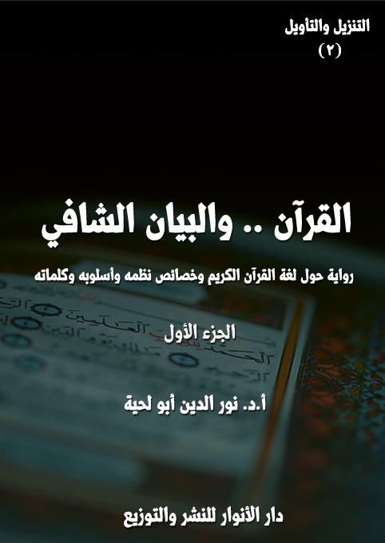

الكتاب:القرآن والبيان الشافي ج1
الوصف: رواية حول لغة القرآن الكريم وخصائص نظمه وأسلوبه وكلماته
السلسلة: التنزيل والتأويل
المؤلف: أ. أ.د. نور الدين أبو لحية
الناشر: دار الأنوار للنشر والتوزيع
الطبعة: الثانية، 1442 هـ
عدد الصفحات: 512
ISBN: 978-620-4-72143-9
لمطالعة الكتاب من تطبيق مؤلفاتي المجاني وهو أحسن وأيسر: هنا

التعريف بالكتاب
يحاول هذا الكتاب أن يستوعب ويُلخص ـ من غير إخلال ـ كل ما ورد في التراث الإسلامي من البحوث المرتبطة بالبيان القرآني، مع تبسيطها وتيسيرها وإبعاد الحشو عنها والجمع بين المدارس المختلفة في ذلك، ليكون مقدمة أساسية لفهم القرآن الكريم، وتدبر معانيه، ولذلك جعلناه الجزء الثاني من هذه السلسلة، بعد الجزء الذي ذكرنا فيه البراهين الدالة على ربانية القرآن، وكونه كلاما إلهيا.
والسبب الذي جعلنا نعطي لهذا الجانب الريادة، قبل سائر البحوث والمعاني المرتبطة بالقرآن الكريم، يرجع إلى أمور منها أن المعارف المرتبطة بالبيان القرآني تعتبر مفاتيح أساسية للتعامل معه، وفهمه واستنباط الحقائق والقيم والمعارف المختلفة منه.
ومنها أن هذه المعارف لها دور كبير في تحقيق تذوق الأسلوب القرآني وجماله، وهو ما يجعل ما يطلق عليه [الإعجاز البياني] عاما لكل العصور، بل شاملا لكل الناس.
ومنها أن أكثر الإشكالات التي وقعت في التاريخ والتراث والواقع سببها سوء الفهم للغة القرآن الكريم وتعابيره؛ فكل الانحرافات التي طالت العقيدة في الله سببها عدم مراعاة ما ورد في اللغة العربية التي جاء بها القرآن الكريم من المجاز والاستعارة والكناية والمشاكلة ونحوها.. وهكذا في كل الجوانب الأخرى.
ومنها أن أكثر الإشكالات والشبهات التي يثيرها من يطلقون على أنفسهم لقب [الحداثيين] أو [التنويريين] أو [القرآنيين] مرتبطة بالتعامل الخاطئ مع اللغة القرآنية، حيث يحملونها أحيانا كثيرة ما لا تحتمل، ولذلك كان التعرف على البيان القرآني ضروريا لمواجهة هذه التحريفات.
القرآن.. والبيان الشافي (1/6)
يحاول هذا الكتاب أن يستوعب ويُلخص ـ من غير إخلال ـ كل ما ورد في التراث الإسلامي من البحوث المرتبطة بالبيان القرآني، مع تبسيطها وتيسيرها وإبعاد الحشو عنها والجمع بين المدارس المختلفة في ذلك، ليكون مقدمة أساسية لفهم القرآن الكريم، وتدبر معانيه، ولذلك جعلناه الجزء الثاني من هذه السلسلة، بعد الجزء الذي ذكرنا فيه البراهين الدالة على ربانية القرآن، وكونه كلاما إلهيا.
والسبب الذي جعلنا نعطي لهذا الجانب الريادة، قبل سائر البحوث والمعاني المرتبطة بالقرآن الكريم، يرجع إلى أمور متعددة، منها:
أولا ـ أن المعارف المرتبطة بالبيان القرآني تعتبر مفاتيح أساسية للتعامل معه، وفهمه واستنباط الحقائق والقيم والمعارف المختلفة منه، وهو ما ييسر تحقيق الأمر الوارد في قوله تعالى: {أَفَلَا يَتَدَبَّرُونَ الْقُرْآنَ وَلَوْ كَانَ مِنْ عِنْدِ غَيْرِ اللَّهِ لَوَجَدُوا فِيهِ اخْتِلَافًا كَثِيرًا} [النساء: 82]، وقوله: {أَفَلَا يَتَدَبَّرُونَ الْقُرْآنَ أَمْ عَلَى قُلُوبٍ أَقْفَالُهَا} [محمد: 24]
ثانيا ـ أن هذه المعارف لها دور كبير في تحقيق تذوق الأسلوب القرآني وجماله، وهو ما يجعل ما يطلق عليه [الإعجاز البياني] عاما لكل العصور، بل شاملا لكل الناس، حتى الأعاجم منهم، ولذلك لا غرابة أن يكون أكثر من كتب في هذا النوع من الإعجاز من غير العرب .. فالتذوق قد يكتسب بالتبحر في اللغة، واكتشاف أسرار جمالها.
ثالثا ـ أن أكثر الإشكالات التي وقعت في التاريخ والتراث والواقع سببها سوء الفهم للغة القرآن الكريم وتعابيره؛ فكل الانحرافات التي طالت العقيدة في الله سببها عدم مراعاة ما ورد في اللغة العربية التي جاء بها القرآن الكريم من المجاز والاستعارة والكناية والمشاكلة
القرآن.. والبيان الشافي (1/7)
ونحوها .. وهكذا في كل الجوانب الأخرى.
رابعا ـ أن أكثر الإشكالات والشبهات التي يثيرها من يطلقون على أنفسهم لقب [الحداثيين] أو [التنويريين] أو [القرآنيين] مرتبطة بالتعامل الخاطئ مع اللغة القرآنية، حيث يحملونها أحيانا كثيرة ما لا تحتمل، ولذلك كان التعرف على البيان القرآني ضروريا لمواجهة هذه التحريفات.
وبناء على هذا قدمنا هذا الكتاب على غيره من المواضيع التي تهتم بها عادة الدراسات القرآنية، وقد حاولنا أن نراعي فيه ما شرطناه على أنفسنا في هذه السلسلة، فلذلك حاولنا أن نلتزم فيه بما يلي:
1. الاستيعاب: أي استيعاب كل ما كتب في هذه الجوانب من المعاني، من حيث الجملة، لا من حيث التفاصيل .. فعندما نتحدث عن مجاز القرآن الكريم مثلا نشرحه ونذكر الأمثلة الكثيرة عنه، من غير أن نستوعب كل ما ورد فيه من آيات المجاز، لأن ذلك مستحيل أن يجمع في كتاب واحد.
2. التنوع: ونقصد به إيراد المعاني، ولو من الجهات المختلفة المتعارضة .. فعندما تحدثنا ـ مثلا ـ عن أنواع التحسينات الإبداعية، اعتمدنا على المصادر المختلفة في ذلك، سواء القديمة أو الحديثة منها، والتي قد يبدو في بعض الأحيان التعارض بينها .. إلا أنا لم نشر إلى ذلك التعارض، بل لم نشر إلى تلك المدارس أصلا، فاهتمامنا فقط بالفهوم المرتبطة بالقرآن الكريم، لا بأصحاب تلك الفهوم، مع التوثيق طبعا لها.
3. التبسيط: وهو من أهم أهدافنا في هذه السلسلة، لأن الغرض منها أن توصل المعارف القرآنية لعامة الناس وخاصتهم .. ومن المتخصصين وغيرهم .. ولذلك ابتعدنا قدر الإمكان عن الكثير من التفاصيل العلمية التي لا حاجة لها، وخاصة تلك التي تربط البيان
القرآن.. والبيان الشافي (1/8)
القرآني بالأدب العربي نثره وشعره؛ فلذلك اكتفينا بالأمثلة القرآنية، وأكثرنا منها، بحيث يتيسر الفهم بها، وبكل يسر وبساطة، حتى للذين لم يدرسوا المبادئ الأساسية للغة العربية.
4. التدريب: أي تدريب القارئ على استنباط المعاني واللطائف القرآنية، ولذلك جمعنا في الكتاب مئات اللطائف القرآنية، لما لها من التأثير الذوقي، بالإضافة إلى دورها في الدعوة للتدبر لاستنباط المزيد منها.
5. التوثيق: ذلك أن هذا الجزء يدخل ضمن ما أطلقنا عليه [التأويل التدبري]، وهو التأويل المرتبط بالفهوم والاستنباطات الاجتهادية، ولذلك وثقنا كل فهم ـ لكن في الهوامش، لا في الأصل ـ حتى لا يبتعد القارئ عن القرآن الكريم، وينشغل بأصحاب الفهوم، ولذلك لم نتبن تلك الرؤية التي تعتمد دراسة البيان القرآني عند الزمخشري أو الرماني أو الباقلاني .. أو غيرهم من القدامى والمحدثين .. وهو ما جعلنا في عودتنا لتلك المراجع نهتم بلبابها، وهو المعاني الواردة والأمثلة الدالة عليها بعيدا عن أصحابها، مع التوثيق طبعا لمن قالوا في الهامش.
وننبه إلى أننا ـ بعد البحث الطويل في المصادر والمراجع ـ وجدنا بعض المصادر والمراجع الأساسية، ذات اللغة الجميلة البسيطة، ولذلك ركزنا عليها، وكان أكثر اقتباساتنا منها، مع التصرف طبعا في نصوصها، بحيث تتناسب مع ما راعيناه من التبسيط والبعد عن الحشو ونحوهما.
وقد آثرنا أن نتشدد في التوثيق في كل محل ليسهل على الباحثين الرجوع للمصادر والمراجع بكل سهولة ويسر، ولذلك لم نعتمد الإحالة على [المرجع السابق]، بل كررنا ذكر اسم المرجع، حتى لا يضطر القارئ أو الباحث إلى تقليب الصفحات للبحث عن ذلك المرجع.
القرآن.. والبيان الشافي (1/9)
وننبه إلى أننا لم نضع النصوص المقتبسة بين قوسين، كما جرت العادة بذلك، بل وضعناه بجانب قول القائل، وذلك حتى لا ينشغل القارئ بالنصوص عن المعنى، وخاصة مع وضوحها، بالإضافة إلى أننا مزجناها بحديثنا، وبأحداث الرواية .. ولذلك كان التوثيق دالا على مصدر المعلومة، لا نصها.
6. التحبيب: وهو هدفنا الأكبر في هذه السلسلة، وهو تحبيب القرآن الكريم لقارئيه، ولذلك اجتهدنا قدر الإمكان في ربط هذه المعاني بكل ما يدل على سموها وكمالها وجمالها، بالإضافة إلى الأحداث والشخصيات التي تحاول أن تصور ذلك كله، مما أطلقنا عليه [التأويل العملي] .. وهو ما سيراه القارئ في الكتاب من أحداث وأبطال، حيث جعلناهم من جهات مختلفة، بالإضافة إلى أنهم من أصحاب حرف وهوايات متعددة، والجميع يجمعهم القرآن الكريم.
بناء على هذا كله قسمنا الكتاب إلى أربعة فصول:
تناولنا في الفصل الأول، سر اختيار الله تعالى للغة العربية ليصيغ بها كلماته المقدسة المنزهة عن الأصوات والحروف، وقد بينا ميزات هذه اللغة الفريدة، كما بينا دور القرآن الكريم في تطويرها لتتناسب مع كلماته المقدسة.
وتناولنا في الفصل الثاني، ما يرتبط بدقة القرآن الكريم وضبطه، سواء من ناحية كلماته وألفاظه، أو من ناحية جمله وتراكيبه، أو من ناحية الترتيب والاستيعاب الوارد في كلماته أو آياته أو سوره.
وتناولنا في الفصل الثالث، ما يرتبط بما اعتمد القرآن الكريم من أساليب للتوضيح والتقريب والتصوير، وقد تناولنا فيه كل ما يذكر عادة في أبواب البيان، مع إضافة ما يذكر في الدراسات الحديثة، وخصوصا ما يتعلق منها بالتصوير الفني.
القرآن.. والبيان الشافي (1/10)
وتناولنا في الفصل الرابع، ما يرتبط بالحسن والجمال والإبداع القرآني، وهو أطول الفصول، وأكثرها أمثلة، والغرض منه ليس تذوق الجمال القرآني فقط، وإنما تيسير فهمه؛ فالمحسنات البديعية القرآنية، ليست مجرد طلاء جميل، وإنما تختزن الكثير من المعاني التي لا يمكن تدبر القرآن الكريم من دون تحليلها وفهمها .. وقد جمعنا فيه أيضا بين الدراسات القديمة والحديثة، لأنه لا تناقض بينها، كما يتوهم البعض، بل لكل محله وأهله.
القرآن.. والبيان الشافي (1/11)
بعد أن طلب مني معلمي معلم القرآن الاستعداد للسفر للرحلة الخاصة بتعلم العلوم المرتبطة بالبيان القرآني، رحت أجمع كل ما كُتب حول الموضوع من دراسات وتفاسير، قديمها وحديثها، وأحاول كل جهدي فهمها واستيعابها.
لكني مع احترامي لكل ما كُتب فيها، وإعجابي بالمؤلفين الذين بذلوا كل جهودهم في ذلك، وجدت أن أكثرها مما يصعب على أمثالي من العوام أو أنصاف المثقفين فهمه، أو إدراك عمقه، أو التأثر له، أو الانبهار بسببه لما في القرآن الكريم من معجزات البيان، التي شهد له بها الجميع.
بل وجدت في بعض المحال جدلا وصراعا يصرف عن القرآن، أكثر مما يقرب منه، أو يحببه، أو يدعو إلى التأمل فيه، أو الاستفادة منه.
ووجدت بعد ذلك كله الكثير من المصطلحات الغريبة، التي يحتاج القارئ إلى دراسة تفاصيلها الكثيرة، والتي لا يمكن أن تُنال بالجهود العصامية الفردية، وإنما تحتاج إلى المدارس والمعلمين والأساتذة.
وهذا ما جعلني أشعر بالرعب من الرحلة التي تنتظرني .. والتي قد لا يستطيع عقلي البسيط المحدود أن يستوعبها بدقة .. وهو ما أثار في مخاوف كثيرة من الفشل في مهمتي، والذي قد يتسبب في حرماني من أي رحلة أخرى.
بينما أنا في تلك الآلام النفسية الشديدة إذا بي أجد نفسي وسط كومة من النور .. لست أدري محلها من هذا الكون، أو هذه الأرض .. لأني لم أر مثلها في حياتي، لا في الواقع، ولا في الصور الفلكية التي كنت أهتم بالنظر فيها.
القرآن.. والبيان الشافي (1/12)
وفجأة، رأيت أشكالا لحروف كثيرة، تأتي من محال مختلفة، تجتمع ثم لا تلبث أن تتفرق، لتشكل تجمعات أخرى .. وكان النور يزداد أو ينقص بحسب تلك التجمعات.
بينما أنا في دهشتي، رأيت شخصا لا يختلف عن سائر المعلمين الذين تشرفت بصحبتهم؛ فسررت كثيرا، وقلت ـ من حيث لا أشعر ـ: مرحبا بمعلمي الجديد .. أظن أنك معلم البيان .. وقد أرسلك لي معلم القرآن، كما وعدني بذلك سابقا.
قال: مرحبا بك .. أجل .. فلا يتعلم القرآن من لا يتعلم البيان.
قلت: صحيح ما تقول .. ولهذا قرن الله تعالى بين القرآن وعلم البيان، فقال: {الرَّحْمَنُ عَلَّمَ الْقُرْآنَ خَلَقَ الإنسان عَلَّمَهُ الْبَيَانَ} [الرحمن: 1 - 4]
قال: بل إن الله تعالى قرن خلق الإنسان بعلم البيان، لأنه لا يمكن للإنسان أن يكون إنسانا بلا بيان .. فبالبيان يفهم الحقائق، وبه يعبر عنها.
قلت: أجل .. ولهذا يعرّفون الإنسان بكونه حيوانا ناطقا .. فلولا النطق ما حصل التواصل، ولا التعلم، ولا التعليم .. ولا التزكية، ولا الترقية .. ولكان الإنسان أشبه بحيوانات الغاب التي لم تتعد أطوار بهيميتها.
قال: أجل .. فالبيان ركن من أركان الإنسان .. وهو سر من أسرار خلافته وتكريمه.
قلت: أجل .. لقد أشار الله تعالى إلى ذلك عندما حكى لنا قصة آدم عليه السلام، فقد أخبر عما وهبه له من المواهب التي أهلته للتعبير عن أسماء الأشياء، فقال: {قَالَ يَا آدَمُ أَنْبِئْهُمْ بِأَسْمَائِهِمْ فَلَمَّا أَنْبَأَهُمْ بِأَسْمَائِهِمْ قَالَ أَلَمْ أَقُلْ لَكُمْ إِنِّي أَعْلَمُ غَيْبَ السَّمَاوَاتِ وَالْأَرْضِ وَأَعْلَمُ مَا تُبْدُونَ وَمَا كُنْتُمْ تَكْتُمُونَ} [البقرة: 33]
قال: وهو سر من أسرار كل الأكوان .. فليس البيان خاصا بالإنسان.
قلت: لم أفهم .. هل تريد أن تمحو كل ما كنا نذكره؟
القرآن.. والبيان الشافي (1/13)
قال: لكل كون بيانه الخاص .. ألم تسمع قوله تعالى: {تُسَبِّحُ لَهُ السَّمَاوَاتُ السَّبْعُ وَالْأَرْضُ وَمَنْ فِيهِنَّ وَإِنْ مِنْ شَيْءٍ إِلَّا يُسَبِّحُ بِحَمْدِهِ وَلَكِنْ لَا تَفْقَهُونَ تَسْبِيحَهُمْ إِنَّهُ كَانَ حَلِيمًا غَفُورًا} [الإسراء: 44]؟
قلت: بلى .. وقد سمعت معه حوار الله مع الكون في بدء خلقه، فقد قال الله تعالى: {ثُمَّ اسْتَوَى إِلَى السَّمَاءِ وَهِيَ دُخَانٌ فَقَالَ لَهَا وَلِلْأَرْضِ ائْتِيَا طَوْعًا أَوْ كَرْهًا قَالَتَا أَتَيْنَا طَائِعِينَ} [فصلت: 11]
وسمعت حوار الهدهد مع سليمان، وقوله له بلسان فصيح ـ كما قال الله تعالى ـ: {أَحَطْتُ بِمَا لَمْ تُحِطْ بِهِ وَجِئْتُكَ مِنْ سَبَإٍ بِنَبَإٍ يَقِينٍ إِنِّي وَجَدْتُ امْرَأَةً تَمْلِكُهُمْ وَأُوتِيَتْ مِنْ كُلِّ شَيْءٍ وَلَهَا عَرْشٌ عَظِيمٌ وَجَدْتُهَا وَقَوْمَهَا يَسْجُدُونَ لِلشَّمْسِ مِنْ دُونِ الله وَزَيَّنَ لَهُمُ الشَّيْطَانُ أَعْمَالَهُمْ فَصَدَّهُمْ عَنِ السَّبِيلِ فَهُمْ لَا يَهْتَدُونَ أَلَّا يَسْجُدُوا لِلَّهِ الَّذِي يُخْرِجُ الْخَبْءَ فِي السَّمَاوَاتِ وَالْأَرْضِ وَيَعْلَمُ مَا تُخْفُونَ وَمَا تُعْلِنُونَ الله لَا إِلَهَ إِلَّا هُوَ رَبُّ الْعَرْشِ الْعَظِيمِ} [النمل: 22 - 26]
وسمعت حوار النملة مع أخواتها، كما عبر عن ذلك قوله تعالى: {قَالَتْ نَمْلَةٌ يَا أَيُّهَا النَّمْلُ ادْخُلُوا مَسَاكِنَكُمْ لَا يَحْطِمَنَّكُمْ سُلَيْمَانُ وَجُنُودُهُ وَهُمْ لَا يَشْعُرُونَ} [النمل: 18]
قال: الله تعالى أرحم وأكرم من أن يخلق خلقا، ثم لا يرزقه البيان .. فالبيان مرتبط بالأكوان، كما هو مرتبط بالإنسان .. ونعمة الله التي تجلت للإنسان، هي نفسها التي تجلت للأكوان.
قلت: فلم كان للإنسان ذلك التكريم الخاص إذن؟
قال: لقد أشار إليه قوله تعالى: {وَعَلَّمَ آدَمَ الْأَسْمَاءَ كُلَّهَا ثُمَّ عَرَضَهُمْ عَلَى الْمَلَائِكَةِ فَقَالَ أَنْبِئُونِي بِأَسْمَاءِ هَؤُلَاءِ إِنْ كُنْتُمْ صَادِقِينَ قَالُوا سُبْحَانَكَ لَا عِلْمَ لَنَا إِلَّا مَا عَلَّمْتَنَا إِنَّكَ أَنْتَ الْعَلِيمُ الْحَكِيمُ قَالَ يَا آدَمُ أَنْبِئْهُمْ بِأَسْمَائِهِمْ فَلَمَّا أَنْبَأَهُمْ بِأَسْمَائِهِمْ قَالَ أَلَمْ أَقُلْ لَكُمْ إِنِّي أَعْلَمُ
القرآن.. والبيان الشافي (1/14)
غَيْبَ السَّمَاوَاتِ وَالْأَرْضِ وَأَعْلَمُ مَا تُبْدُونَ وَمَا كُنْتُمْ تَكْتُمُونَ} [البقرة: 31 - 33]
قلت: هل تقصد الأسماء كلها؟
قال: أقصد القابلية للأسماء كلها .. فشرف كل شيء وكراماته بحسب الاستعدادات والقابليات المتاحة له .. أليست قيم الأشياء عندكم في حياتكم الدنيا مرتبطة بذلك؟
قلت: بلى .. فنحن نقدر الأشياء بحسب خصائصها وقدراتها وقابلياتها .. فكلما كانت الخصائص والقدرات أكبر، كلما كان شرفها وقيمتها أعظم.
قال: فقد وعيت إذن قيمة البيان.
قلت: بلى .. ويشرفني كثيرا أن أتتلمذ على يديك .. فهلم أخبرني عن مخطط رحلتنا، فقد كان معلمي ـ معلم السلام ـ يذكر لي ذلك في بداية كل حديث لي معه .. فهو يبدأ بالجملة، ثم ننتقل بعدها للتفصيل.
قال: أنا لن أحدثك عن كل البيان .. فذلك ليس من شأنك .. وإنما سأحدثك بما أذن لي فيه معلم القرآن.
قلت: أجل .. أنت ستحدثني ـ كما ذكر لي معلمي ـ عن [القرآن .. والبيان الشافي]
قال: فهل تعرف الأركان التي يتأسس عليها البيان الشافي؟
قلت: أعرف أنها أربعة .. ولكني لا أعرف ماهيتها ولا حقائقها.
قال: فكيف عرفت أنها أربع؟
قلت: من خلال مصاحبتي الطويلة مع معلمي معلم السلام عرفت أن الأركان لا تكون ـ في العادة أو الأغلب ـ إلا أربع.
قال: فرحلتك إذن ستكون لأربع محال كبرى، لم تتحقق لكتاب في الدنيا كما تحققت للقرآن الكريم؛ فلذلك كان وحده المتصف بالبيان الشافي.
القرآن.. والبيان الشافي (1/15)
قلت: فما أولها؟
قال: اللغة المناسبة .. فاللغة وعاء البيان .. وبقدر سعتها ودقتها ووضوحها وجمالها، بقدر ما يكون البيان واسعا ودقيقا وواضحا وجميلا.
قلت: وعيت هذا .. فأنت تقصد اللغة العربية التي شرفها الله بأن تكون لسانا معبرا عن كلمات الله المقدسة، كما ذكر الله تعالى ذلك، فقال: {نَزَلَ بِهِ الرُّوحُ الْأَمِينُ عَلَى قَلْبِكَ لِتَكُونَ مِنَ الْمُنْذِرِينَ بِلِسَانٍ عَرَبِيٍّ مُبِينٍ} [الشعراء: 193 - 195]، وقال: {وَلَقَدْ نَعْلَمُ أَنَّهُمْ يَقُولُونَ إِنَّمَا يُعَلِّمُهُ بَشَرٌ لِسَانُ الَّذِي يُلْحِدُونَ إِلَيْهِ أَعْجَمِيٌّ وَهَذَا لِسَانٌ عَرَبِيٌّ مُبِينٌ} [النحل: 103]
قال: ولذلك كانت معرفتها شرطا لكل من يريد أن يتذوق البيان القرآني .. فلا يمكن لترجمات القرآن أن تفي بذلك.
قلت: أجل .. فما الثاني؟
قال: الدقة والضبط .. فلا يمكن أن يؤدي البيان دوره في ذهنك وحياتك ما لم يكن دقيقا مضبوطا محكما حتى لا يُساء فهمه.
قلت: وعيت هذا .. وقد أشار إليه قوله تعالى: {الر كِتَابٌ أُحْكِمَتْ آيَاتُهُ ثُمَّ فُصِّلَتْ مِنْ لَدُنْ حَكِيمٍ خَبِيرٍ} [هود: 1] .. فما الثالث؟
قال: الوضوح والجلاء والظهور والكشف التام.
قلت: وعيت هذا .. فالغموض والخفاء واللبس مضادة للبيان، ومتناقضة معه .. وقد أشار إلى هذا قوله تعالى: {لَا تُحَرِّكْ بِهِ لِسَانَكَ لِتَعْجَلَ بِهِ إِنَّ عَلَيْنَا جَمْعَهُ وَقُرْآنَهُ فإذا قَرَأْنَاهُ فَاتَّبِعْ قُرْآنَهُ ثُمَّ إِنَّ عَلَيْنَا بَيَانَهُ} [القيامة: 16 - 19] .. فما الرابع؟
قال: الجمال والحسن والجاذبية.
قلت: لا شك أن هذه من المكملات؛ فقد يحصل البيان من دونها.
القرآن.. والبيان الشافي (1/16)
قال: أجل .. هي من المكملات في كل الدنيا إلا القرآن الكريم، فهي ركن فيه، وفي كل حروفه وكلماته ..
قلت: أجل .. ولذلك بهر العقول والقلوب بجماله وكماله ..
قال: وقد أشار إلى ذلك قوله تعالى: {وَلَقَدْ يَسَّرْنَا الْقُرْآنَ لِلذِّكْرِ فَهَلْ مِنْ مُدَّكِرٍ} [القمر: 17] .. فغرض التيسير الادكار والوعي والتدبر.
قلت: وعيت هذا .. فهل ستكون رحلتي لكل هذه المعاني؟
قال: ستكون رحلتك للبيان والقرآن .. لا للبيان المجرد.
قلت: أجل .. فما أعظم أن يجتمع لي في رحلتي كلا المعنيين .. فأنا عاشق للقرآن، وعاشق للبيان.
التفت إلى ما حولي من الأنوار التي تجتمع وتفترق .. فقلت: لكن أين أنا .. فلم أر في حياتي مثل هذه العوالم العجيبة؟
قال: أنت في عالم البيان ..
قلت: أليس هو من عالم الأكوان؟
قال: بلى .. فكل شيء صادر من {كُنْ فَيَكُونُ} [غافر: 68] .. والله الذي خلق عالم الجماد والنبات والحيوان والإنسان .. هو الذي خلق عالم البيان.
قلت: ولكني أرى صورته مختلفة تماما عن كل ما رأيته في حياتي من عوالم؟
قال: أنت كنت تسمع البيان، ولم تكن تراه .. وفرق كبير بين أن ترى وأن تسمع .. فلكل حاسة عالمها الخاص بها.
قلت: هل تقصد أن الله تعالى جلى لبصري ما كان جليا لسمعي؟
قال: بل جلى لبصيرتك ما كان جليا لسمعك .. فالبصر لا يطيق أن يرى ما هو خارج
القرآن.. والبيان الشافي (1/17)
عالمه.
قلت: والبصيرة؟
قال: بالبصيرة يمكنك أن تسمع وأن ترى الحقائق .. بل يمكنك أن تتذوقها .. ولكن في عالمها المثالي الجميل الخاص بها.
قلت: أجل .. وقد وصف الله تعالى كتابه العزيز بقوله: {قَدْ جَاءَكُمْ بَصَائِرُ مِنْ رَبِّكُمْ فَمَنْ أَبْصَرَ فَلِنَفْسِهِ وَمَنْ عَمِيَ فَعَلَيْهَا وَمَا أَنَا عَلَيْكُمْ بِحَفِيظٍ} [الأنعام: 104] {هَذَا بَصَائِرُ لِلنَّاسِ وَهُدًى وَرَحْمَةٌ لِقَوْمٍ يُوقِنُونَ} [الجاثية: 20]
قال: البصائر هي سلم الحقائق .. ومن لا بصيرة له يشم الحقائق من بعيد، ولا يراها .. أو قد يراها، ولكنها بصورة مختلفة تماما عن حقيقتها.
قلت: وعيت هذا .. ولكن ما سر اجتماع تلك الأنوار وتفرقها .. ثم تغير كل ما حولي بسبب ذلك الاجتماع والتفرق؟
قال: تلك الأنوار هي الحروف .. وباجتماعها تتشكل الكلمات .. وبالكلمات تتنزل الأنوار أو الظلمات.
قلت: لقد أشار الله تعالى إلى ذلك، فقال: {أَلَمْ تَرَ كَيْفَ ضَرَبَ الله مَثَلًا كَلِمَةً طَيِّبَةً كَشَجَرَةٍ طَيِّبَةٍ أَصْلُهَا ثَابِتٌ وَفَرْعُهَا فِي السَّمَاءِ تُؤْتِي أُكُلَهَا كُلَّ حِينٍ بِإِذْنِ رَبِّهَا وَيَضْرِبُ الله الْأَمْثَالَ لِلنَّاسِ لَعَلَّهُمْ يَتَذَكَّرُونَ وَمَثَلُ كَلِمَةٍ خَبِيثَةٍ كَشَجَرَةٍ خَبِيثَةٍ اجْتُثَّتْ مِنْ فَوْقِ الْأَرْضِ مَا لَهَا مِنْ قَرَارٍ} [إبراهيم: 24 - 26]
قال: فلذلك كانت الكلمة الطيبة أشرف أعمالك .. والكلمة الخبيثة أرذلها.
قلت: وعيت هذا .. ولا أحسبني أجادلك فيه .. لكن أخبرني عن سر كلام الله لعباده .. ذلك الذي أشار إليه قوله تعالى عند ذكره لوحيه لأنبيائه عليهم السلام: {وَمَا كَانَ
القرآن.. والبيان الشافي (1/18)
لِبَشَرٍ أَنْ يُكَلِّمَهُ الله إِلَّا وَحْيًا أَوْ مِنْ وَرَاءِ حِجَابٍ أَوْ يُرْسِلَ رَسُولًا فَيُوحِيَ بِإِذْنِهِ مَا يَشَاءُ إِنَّهُ عَلِيٌّ حَكِيمٌ} [الشورى: 51] .. فهل كلام الله متشكل من الحروف والأصوات مثل كلامنا؟
قال: الله أعظم من أن يفتقر للحروف والأصوات ليتكلم .. فهو الغني المطلق.
قلت: ولكنا لا نعرف الكلام إلا حروفا وأصواتا.
قال: الحروف والأصوات من الكلام .. وليست كل الكلام .. ألست تتحدث في نفسك وفي أحلامك من غير أن تتحرك شفتاك أو تسمع أذناك؟
قلت: بلى .. فهل تقصد أن كلام الله من هذا النوع؟
قال: كما أن الله لا يمكن وصفه؛ فكذلك كلماته .. ألم يخبرك معلم الإيمان أن حظنا من معرفة الله العجز عن معرفته؟
قلت: بلى .. وقد أخبرني عن الجمال واللذة التي يحويها ذلك العجز .. فهو الذي يملأ النفس بالطمأنينة والسعادة، ذلك أنها لا تستقر عند المحدود المقيد، بل هي تطلب العظمة المطلقة المنزهة عن كل نقص، والتي لا تجدها إلا عند الله.
القرآن.. والبيان الشافي (1/19)
أولا ـ القرآن .. واللغة المناسبة
ما قلت هذا، حتى وجدت نفسي في مدرسة عتيقة .. وبين طلاب كثيرين يحملون المحابر والقراطيس والأقلام القديمة، ويتجمع كل فريق منهم أمام أستاذ من الأساتذة.
وقد ازداد عجبي بعد أن سمعت بعضهم يتحدث إلى زميله بالفارسية، وآخر بالأوردية، وآخر بالكردية .. مع أن الجميع كانوا يكتبون بالحروف العربية، ويتقنون الحديث بها.
اقتربت من أحدهم، وقلت: عجبا لك، ولهمتك الدنية .. كيف تترك لسانك العربي المبين لتتحدث بألسنة أخرى؟
قال: لقد شاء الله للساني أن ينشأ في بيئة لا تعرف اللغة العربية .. وقد رضيت بذلك، وحمدت الله عليه .. فالله أعلم بمصالحي مني .. وقد قال في كتابه العزيز: {وَمِنْ آيَاتِهِ خَلْقُ السَّمَاوَاتِ وَالْأَرْضِ وَاخْتِلَافُ أَلْسِنَتِكُمْ وَأَلْوَانِكُمْ إِنَّ فِي ذَلِكَ لَآيَاتٍ لِلْعَالِمِينَ} [الروم: 22]
لكني مع ذلك، وبعد أن بلغت رشدي، وعلمت أن وحي الله المقدس الأخير للبشرية قد تنزل باللغة العربية، رحت أبذل كل جهدي في تعلمها ..
قلت: ولم عانيت كل هذا؟ .. كان يكفيك أن تقرأ القرآن بلغة أهل بلدك؛ فلا يكلف الله نفسا إلا وسعها .. ولا يكلفها إلا ما آتاها.
قال: وأنا قد فعلت ذلك .. فقد آتاني الله القدرة على التعلم .. ووفر لنفسي القابلية لذلك .. وأضاف إليها العشق والهيام والمحبة.
قلت: محبة القرآن الكريم .. أم محبة اللغة العربية؟
قال: كلاهما .. فيستحيل على القلب الذي أحب كلام ربه، ألا يحب اللغة التي تنزل
القرآن.. والبيان الشافي (1/20)
بها .. فالمحب يحب كل ما يرتبط بمحبوبه .. وكاذب في دعوى المحبة من لم يكن كذلك.
قلت: إن ما تقوله يكلف الخلق شططا .. فالله لم يأمر أحدا بتعلم اللغة العربية.
قال: الأمر لا يحتاج إلى أمر .. والمحب لا يحتاج إلى أن يعرف ما يحب محبوبه .. أذكر أني في صباي الباكر، وبمجرد أن قرأت ما ورد في القرآن الكريم من الآيات التي تتحدث عن نزوله باللغة العربية، كقوله تعالى: {إِنَّا أَنْزَلْنَاهُ قُرْآنًا عَرَبِيًّا لَعَلَّكُمْ تَعْقِلُونَ} [يوسف: 2]، وقوله: {وَلَقَدْ نَعْلَمُ أَنَّهُمْ يَقُولُونَ إِنَّمَا يُعَلِّمُهُ بَشَرٌ لِسَانُ الَّذِي يُلْحِدُونَ إِلَيْهِ أَعْجَمِيٌّ وَهَذَا لِسَانٌ عَرَبِيٌّ مُبِينٌ} [النحل: 103]، وقوله: {وَكَذَلِكَ أَنْزَلْنَاهُ قُرْآنًا عَرَبِيًّا وَصَرَّفْنَا فِيهِ مِنَ الْوَعِيدِ لَعَلَّهُمْ يَتَّقُونَ أَوْ يُحْدِثُ لَهُمْ ذِكْرًا} [طه: 113]
بمجرد أن قرأت هذه الآيات الكريمة، تحرك الشوق في قلبي إليها .. فرحت إلى أهلي أطلب منهم أن يدلوني على من يعلمني هذه اللغة التي تقدست بذكر الله لها؛ فطلبوا مني أن أتمهل إلى أن يخضر عودي، وتصبح لدي القدرة على السفر .. ومنذ حلت في تلك القدرة، حزمت أمتعة سفري .. والحمد لله ها قد رزقني الله ما طلبته .. فصرت أتذوق اللغة العربية، وأشعر بلذة كلمات ربي المقدس .. بل أشعر بإعجازها.
قلت: صدقت .. فكلامك باللغة العربية يوحي بأنك من أهلها .. ولهذا توهمت أنك من العرب الذين زهدوا في لغتهم.
قال: عجبا لما تقول .. وهل هناك من يزهد في لغة كتابه المقدس؟
قلت: ألست تسمع بالذين يرطنون بالفرنسية والإنجليزية، يخلطون بها لغتهم العربية، لا لشيء إلا ليفخروا بذلك على أقرانهم؟
قال: ما تقصد بالفرنسية والإنجليزية؟ .. لم أسمع بهما؟
قلت: عجبا لك .. ألم تشاهد على القنوات الفضائية العرب وهم يلهثون وراء
القرآن.. والبيان الشافي (1/21)
اللغات الأعجمية، لا ليستفيدوا من علومها، وإنما ليتباهوا، ويتفاخروا بها؟
قال: أظنك تتحدث عن زمانك .. وقد سمعنا في النبوءات ما يشير إليه.
قلت: في أي زمان أنت؟ .. ألست في القرن الخامس عشر من الهجرة؟
قال: لا .. أنا لا أزال متأخرا جدا عن زمانكم .. أنا في القرون الأولى من الهجرة.
قلت: ومن أراهم .. هل هم جميعا من أهل زمانك؟
قال: أنا لا أهتم بسؤال غيري عن شؤونه الخاصة .. علاقتي بكل من حولي ترتبط بالقرآن، ولغة القرآن .. هكذا علمنا معلم القرآن.
قلت: ومن هؤلاء الأساتذة الذين يتجمع حولهم من أراهم من التلاميذ؟
قال: هم أساتذتي .. وقد تشرفت بالتلمذة عليهم جميعا.
قلت: هلا ذكرت لي أسماءهم .. فلعلي أعرف بعضهم.
قال: أولهم ذاك الذي تراني أجلس في حلقته .. إنه أبو بشر عمرو بن عثمان بن قنبر .. ونحن نناديه بـ[سيبويه] .. وأصله من قرية البيضاء بشيراز .. وهي قريبة من البلاد التي وفدت منها.
قلت: أعرفه جيدا .. وهل هناك من لا يعرف سيبويه .. إنه إمام النحاة، وأول من بسط علم النحو وفصله، وهو صاحب كتاب [الكتاب] الذي يعتبر بحق أول كتاب أُلف في النحو العربي .. ولذلك يعتبره الكثيرون مؤسسه أو مطوره.
قال: ولذلك ترى تلاميذه من كل أنحاء العالم، ومن كل العصور .. فقد بارك الله فيه وفي كتبه، بسبب ما قدمه للغة القرآن الكريم.
قلت: أجل .. فكل من خدم القرآن خدمته الدنيا بما فيها .. فأخبرني عن ذلك الأستاذ الذي يجلس في الناحية الأخرى.
القرآن.. والبيان الشافي (1/22)
قال: هو أبو الفتح، عثمان بن جِنّي الموصلي .. لقد ذكر لنا أن أباه (جني) كان عبداً روميّاً مملوكاً لبعض الموصليين.
قلت: أعرفه جيدا .. إنه صاحب كتاب الخصائص، وسر صناعة الإعراب، وغيرها .. وهو من كبار الذين قدموا للغة العربية كل ما أمكنهم من خدمات .. ولا يزال أهل عصرنا يتتلمذون على كتبه مثل سائر العصور.
أشار إلى أستاذ آخر، وقال: وذاك الذي تراه جالسا هو أبو علي الحسن بن أحمد بن عبد الغفار بن سليمان، ونحن نناديه [أبا علي الفارسي]
قلت: أعرفه جيدا .. إنه من كبار علماء العربيَّة في القرن الرابع الهجري، وأنْحى مَن جاء بعد سيبويه، وقد ترك تراثا حافلا في العلوم اللغوية، منها كتابه [التذكرة] في علوم العربية، في عشرين مجلداً، ومنها [تعاليق سيبويه]، ومنها [الحجة] في عِلل القراءات، ومنها [جواهر النحو]، ومنها [العوامل] في النحو .. وغيرها.
أشار إلى أستاذ آخر، وقال: وذاك أحمد بن فارس بن زكريا .. ونحن نناديه أبا الحسين الرَّازيُّ القزويني.
قلت: أعرفه إنه صاحب كتب كثيرة في اللغة العربية، منها: المجمل، ومتخير الألفاظ، وفقه اللغة، وغريب إعراب القرآن، ومقدمة في النحو، ومقاييس اللغة .. وغيرها كثير.
أشار إلى أستاذ آخر، وقال: وذاك أبو القاسم محمود بن عمر الخوارزمي الزمخشري .. ونحن نطلق عليه لقب [جار الله الزمخشري]، لأنه سافر إلى مكة، وسكن بها زماناً.
قلت: أعرفه جيدا .. إنه إمام من أئمة التفسير والنحو واللغة وعلم البيان .. وهو صاحب [الكشاف] في بلاغة القرآن الكريم وتراكيبه اللغوية .. وصاحب معجم [أساس
القرآن.. والبيان الشافي (1/23)
البلاغة] الذي يُعد بحق أعظم قواميس اللغة العربية، لاحتوائه على التعابير البليغة عند العرب، والمجازات اللغوية والمزايا الأدبية، بالإضافة لتفريقه بين الحقيقة والمجاز في الألفاظ المستعملة إفراداً وتركيباً.
أشار إلى أستاذ آخر، وقال: وذاك أبو بكر عبد القاهر بن عبد الرحمن بن محمد الجرجاني .. لقد قدم من جرجان لهذه المدرسة منذ فترة طويلة.
قلت: أعرفه جيدا .. إنه ـ بحق ـ مؤسس علم البلاغة؛ فكتاباه [أسرار البلاغة] و [دلائل الإعجاز] من الكتب الرائدة فيها.
أشار إلى أستاذ آخر، وقال: وذاك مجد الدين الشيرازي الفيروزآبادي .. قدم من فيروز آباد، وهي مدينة جنوب شيراز ..
قلت: أعرفه جيدا، إنه صاحب [القاموس المحيط]، بالإضافة لكتب أخرى كثيرة، خدم بها اللغة العربية أعظم خدمة.
بعد أن عرفني على الكثير من الأساتذة الذين يدرّسون في تلك المدرسة العتيقة، مما لا يسع هذا المقام لذكرهم، سألته: أرى أن معظم أساتذة هذه المدرسة، إن لم نقل كلهم من الأعاجم .. فما السر في تركهم الكتابة في علوم لغاتهم، والكتابة في علوم لغة العرب؟
قال: اللغة العربية أعظم وأكرم من أن تكون لغة العرب .. إنها لغة القرآن الكريم .. والقرآن لا يحصره المكان، ولا يحده الزمان .. ولذلك ترانا جميعا ـ تلاميذ أو أساتذة ـ وإن كنا قد نشأنا في بلاد أعجمية، وتكلمنا بألسنتها ـ إلا أنا نفخر بعربيتنا التي اكتسبناها، أكثر من فخرنا باللغات التي ورثناها.
قلت: بورك فيك .. ليت قومي يسمعون .. لقد ذكرني كلامك هذا بما ورد في الحديث أن قيس بن مطاطية جاء إلى حلقة فيها سلمان الفارسي وصهيب الرومي وبلال الحبشي،
القرآن.. والبيان الشافي (1/24)
فقال: هذا الأوس والخزرج قد قاموا بنصرة هذا الرجل، فما بال هذا؛ فقام إليه معاذ بن جبل فأخذ تلبيبه ثم أتى به النبي صلى الله عليه وآله وسلم، فأخبره بمقالته فقام النبي صلى الله عليه وآله وسلم قائما يجر رداءه حتى دخل المسجد، ثم نودي أن الصلاة جامعة، وقال: (يا أيها الناس إن الرب واحد، والأب واحد، وليست العربية بأحدكم من أب ولا أم، وإنما هي اللسان، فمن تكلم بالعربية فهو عربي)(1)
قال: بورك فيك .. ولذلك أخبر أولئك الذين يفخرون علينا بعرقهم العربي بأن العربية لمن يهتم بها، ويقدسها، ويتعلمها، لا لمن انتسب لها زورا وبهتانا.
قلت: لا حاجة لهم إلى إخباري .. فقد أخبرهم رسول الله صلى الله عليه وآله وسلم، بل حذرهم، فقال في أكبر تجمع عرفه صلى الله عليه وآله وسلم في حياته، وفي خطبة تسمى خطبة الوداع: (يا أيها الناس إن ربكم واحد وإن أباكم واحد، ألا لا فضل لعربي على عجمي ولا لعجمي على عربي ولا لأحمر على أسود ولا لأسود على أحمر إلا بالتقوى {إِنَّ أَكْرَمَكُمْ عِنْدَ الله أَتْقَاكُمْ} [الحجرات: 13] .. ثم قال بعدها: ألا هل بلغت؟ قالوا: بلى يا رسول الله، قال: (فليبلغ الشاهد الغائب)(2)
وقد أخبر صلى الله عليه وآله وسلم عن مصير الأعراق التي يتفانى البشر في اعتبارها، فقال: (إذا كان يوم القيامة أمر الله مناديا ينادي: ألا إني جعلت نسبا وجعلتم نسبا، فجعلت أكرمكم أتقاكم، فأبيتم إلا أن تقولوا فلان ابن فلان خير من فلان بن فلان، فاليوم أرفع نسبي وأضع نسبكم، أين المتقون؟)(3)
قال: وهذا ما رغبنا معشر الأعاجم، وفي كل عصور التاريخ في القرآن الكريم، وفي تعلم لغته .. فقد وجدنا القرآن الكريم كتابا يتعالى على القوميات والأعراق والأوطان .. فهو يخاطب البشر، باعتبارهم بني آدم، لا باعتبارهم أبناء أي عرق من الأعراق، ولذلك
__________
(1) تاريخ دمشق لابن عساكر (21/ 407)
(2) أحمد في المسند (24204) وأبو نعيم في الحلية (3/ 100)، وتحف العقول: 34، بحار الأنوار 76: 350، ح 13 ..
(3) الحاكم (2/ 463)
القرآن.. والبيان الشافي (1/25)
كان تعلمنا للغة العربية باعتبارها لغة القرآن الكريم، لا باعتبارها لغة العرب .. فالعرب جنس من الأجناس، وهم إخوتنا في الإنسانية، لا يفضلون علينا، ولا نفضل عليهم.
ما بلغ حديثنا هذا الموضع، حتى رأيتني قد خرجت من ذلك المحل الذي كنت فيه، لأجد نفسي بدله أمام عمارة عصرية، كُتب على بابها [الهيئة العامة لتطوير العلوم]، وقد احترت كثيرا في سبب تواجدي أمامها، لأني لم أر لها في ذلك الحين أي علاقة بالبيان، ولا بالقرآن.
لكن رجلا ربت على كتفي، وهو يقول: وكيف لا تكون لها علاقة بالقرآن والبيان، وهي لها علاقة باللغة العربية؟ .. أليست اللغة العربية هي الوعاء الذي اتسع للقرآن، ولا يمكن فهم القرآن، ولا تذوقه من دونها؟
قلت: بلى .. ولكني لم أر لها أيضا أي علاقة باللغة العربية .. فما علاقة تطوير العلوم باللغة العربية؟
قال: هلم معي .. فأنا عبد المعز .. وعضو في هذه الهيئة .. وقد سماني معلمي بذلك، لأن وظيفتي وتكليفي الشرعي قاصر على الدعوة إلى إعزاز ما أعزه الله .. واللغة العربية مما أعزه الله؛ فإعزازها إعزاز لشعائر الله، وتعظيم لها، وإذلالها إذلال لشعائر الله، وتحقير لها.
قلت: إلى أين تريد أن تسير بي؟
قال: لدي اليوم مداخلة أرد فيها على أولئك الذين يتوهمون أن اللغة العربية عاجزة عن مسايرة التطور العلمي والحياتي الحديث ..
قلت: أهناك من يجادل في ذلك؟
القرآن.. والبيان الشافي (1/26)
قال: بل ما أكثر من يجادل في ذلك .. وستراهم وتسمعهم.
قلت: أخشى ألا أصبر عليهم .. فأنا لا أطيق أن أرى من يمتهن العربية أو يحتقرها، أو يعتبرها أدنى من غيرها من اللغات .. بل لا أطيق حتى الذي يساويها بغيرها .. فأين غيرها منها؟
قال: لا تخف .. فلدي رفاق سيعينوني في هذا .. وهم سيحضرون الجلسة، وقد خططنا لمجلسنا هذا خطة دقيقة ومدروسة، وستؤتي ثمارها بتوفيق الله وفضله.
قلت: فهلا ذكرتها لي، لعلي أستفيد منها، أو يستفيد منها غيري إذا سجلتها.
قال: لقد علمنا أن المعارضين لتعليم العلوم باللغة العربية تابعون نفسيا للمستعمرين الذين استعمروا بلادنا، وفرضوا لغتهم علينا؛ فلذلك يرون أنفسهم ولغتهم أحط شأنا من أن تُعلم بها العلوم .. ولهذا كانوا ينكرون علينا عندما كنا نذكر لهم ما قال علماء المسلمين في فضل اللغة العربية وخصائصها، بل ويسخرون منا .. وقد استبدلنا ذلك اليوم بذكر ما قاله غير المسلمين، وخاصة من البلاد الأوروبية .. لأنهم يسلّمون لهم، ويخضعون لشهاداتهم.
قلت: فهل تأذن لي أن أشارككم خطتكم؛ فأنا أحفظ الكثير مما قيل في فضل اللغة العربية وكمالها وتميزها عن سائر اللغات؟
ابتسم، وقال: إن استطعت أن تتحدث؛ فلك ذلك .. لكني لا أظن أنك تستطيع؛ فمهمتك في هذا المجلس ـ كما علمت ـ أن تكتب، لا أن تتكلم.
قلت: لكن كيف يأذنون لي في الدخول، وأنا لست عضوا في هذه الهيئة؟
قال: لا تخف .. هم لن يروك .. ولن يسمعوك .. ولذلك لن يمنعوك.
بعد أن قال هذا، دخلنا قاعة اجتماعات كبيرة، وقد اجتمع فيها الكثير من
القرآن.. والبيان الشافي (1/27)
الشخصيات، وكان منهم من أعرفهم وأعرف مواقفهم السلبية من اللغة العربية.
وما هي إلا برهة قصيرة، حتى قام عبد المعز، وقال: لا تخافوا .. فلن أعيد على أسماعكم ما ذكرته لكم سابقا من أن نهضتنا وتطورنا العلمي لن يكون إلا بعودتنا إلى لغتنا الأصيلة .. تلك اللغة التي تشرفت بالقرآن الكريم، وتشرفت بعده بأن تكون وعاء لحضارة امتدت لقرون طويلة .. لكني أريد أن أسألكم: هل تعجز تلك اللغة القوية الواسعة على مسايرة هذا العصر؟
قام بعض الحضور، وقال: بربك كيف تريد من لغة لا تعرف إلا البكاء على الأطلال، ووصف البعير أن تساير علوم هذا العصر الكثيرة؟
قال آخر: كيف تريد من لغة انحصرت أغراض شعرها ـ كما يشهد بذلك كبار النقاد والأدباء ـ في المديح والافتخار والرِّثاء والنَّسيب والاقتضاء والاستنجاز والهجاء والوعيد والإنذار والعتاب والاعتذار .. أن تعبر عن الفيزياء والرياضيات والفلك وكل العلوم الإنسانية والاجتماعية الكثيرة؟
قال عبد المعز: مهلا سادتي .. فمعرفتكم باللغة العربية ـ على حسب ما تذكرون ـ لا تتعدى الطور الجاهلي .. وهو أخس أطوارها وأدناها وأقلها شأنا .. فهي فيه مثل الرضيع الذي لم يكبر، أو الشجرة التي لم تثمر .. وكان يمكن أن تموت في أي لحظة.
لكن شأنها اختلف تماما بعد تنزل القرآن الكريم .. فبفضل القوة الكبيرة التي أكسبها إياها، صارت لغة كل العلوم والآداب .. ولذلك كان لها الشرف في أن تنتسب له، لأنها لولاه لم تكن شيئا مذكورا .. بل إنها لولاه لماتت مثل موت سائر اللغات، خاصة مع كثرة اللهجات التي كانت منتشرة بين القبائل العربية.
قال بعض الحضور: يبدو أنك تريد أن تخرج اللغة العربية بكلامك هذا من قيود
القرآن.. والبيان الشافي (1/28)
القومية العربية.
قال عبد المعز: أجل .. فاللغة العربية أعظم من أن تنحصر في جنس دون جنس، أو عرق دون عرق .. اللغة العربية هي اللغة الرسمية لكل المسلمين المقدسين للقرآن الكريم .. وبذلك هي أعظم من أن تنحصر في عرق أو جنس أو منطقة .. نعم لقد تنزل القرآن الكريم في الوقت الذي بلغت فيه اللغة العربية درجة رفيعة من الفصاحة والبيان في الشعر والنثر، بيد أنَّها كانت في حدود قبليَّة ضيقة .. لكنها بعد اجتباء الله لها لتكون لسان القرآن الكريم، تجاوزت حدود القبيلة والقوم، وارتبطت بالإسلام، فكانت لغة عقيدته وشريعته وخطابه إلى جميع البشر.
لقد انتشرت بانتشار الإسلام في بلاد الشام والعراق وما وراء النهر .. وفي بلاد فارس والهند والسند، وأنحاء واسعة من القارة الآسيوية حتى وصلت إلى أرخبيل الملايو .. وانتشرت في مصر وشمال إفريقية وغربها ووسطها وجهات السودان، وعلى السواحل وفي الجنوب.
بل إنها أثرت حتى في اللغات الأوروبية وغيرها، وقد شهد على ذلك الكثير من المستشرقين وغيرهم، بل وضعوا إحصائيات علميَّة تدل على ذلك .. ومن الأمثلة عنها قول بعضهم: (درستُ أثر العربية في اللغات الشرقية، وأحصيتُ نسبتها، وهي: في الفارسية (60.67 بالمائة)، وفي التركية (65.30 بالمائة)، وفي الأردية (41.95 بالمائة)، وفي التاجيكية (46.39 بالمائة)، وفي الأفغانية (56.99 بالمائة)(1) .. وذكر آخر أنه أحصى (ستًا وعشرين لغة أسيويَّة تستخدم الأبجديَّة العربية بعضها ما يزال مستمسكًا بها حتى اليوم، وبعضها الآخر استبدلت بها الحروف اللَّاتينية أو المحليَّة)(2) .. وعلى هذا المنوال
__________
(1) محمد مصطفى بن الحاج: عالمية اللغة العربيَّة: ص 265.
(2) عالمية اللغة العربيَّة: ص 260.
القرآن.. والبيان الشافي (1/29)
لاحظ الباحثون في اللغات المقارنة تأثير اللغة العربية العميق في سائر اللغات المنتشرة في العالم الاسلامي، ولاحظوا كذلك دخول كثير من مفرداتها في اللغات الأوروبية أيضًا.
قام بعض الحضور، وقال: عرفنا هذا .. ولا نحسب أننا نجادلك فيه .. لكن هل ترى هذا كافيا لإقناعنا بما تدعونا إليه؟
قال آخر: لا نريد أن تحدثنا عن ارتباط اللغة العربية بشعائر الإسلام وعباداته .. فنحن نعلم أن الحياة اليومية للمسلمين تدعوهم إلى استعمال اللغة العربية أو استماعها، وفي كل الشؤون المرتبطة بعباداتهم .. لكن هناك فرق شاسع بين الشعائر التعبدية والعلوم.
قال عبد المعز: لن أحدثكم عن ذلك، ولو أنه السبب الوجيه لانتشارها .. ولكن هناك سبب أكبر، وهو أن اللغة العربية ـ بفضل القرآن الكريم ـ لم تعد لغة محلية محدودة الآفاق والتعبير .. بل صارت لغة عالمية قوية تتسع لكل المعاني .. وقد أهلها لذلك الخصائص التي توفرت فيها، والتي يعز نظيرها في سائر اللغات.
قال بعض الحضور: لم نفهم ما تريد .. هل تقصد أن الله تعالى اختار اللغة العربية لكونها تتصف بصفات ذاتية أهلتها لذلك .. أم أنها كانت كسائر اللغات، ولكنها تحورت بفضل القرآن الكريم وتطورت لتصبح لها تلك الخصائص الفريدة؟
قال عبد المعز: اللغة العربية عند تنزل القرآن الكريم كانت مثل طفل صغير يعبر عن الحقائق المحدودة التي يعرفها .. لكنها ـ بفضل القرآن الكريم ـ نمت وتطورت، ليتحول ذلك الصبي الصغير إلى عالم وفيلسوف وفقيه وأديب وشاعر .. وهو ما جعله يعبر عن المعاني بصورة أوسع وأعمق .. ولذلك كان للقرآن الكريم المنة عليها، كما أشار إلى ذلك قوله تعالى: {لَقَدْ أَنْزَلْنَا إِلَيْكُمْ كِتَابًا فِيهِ ذِكْرُكُمْ أَفَلَا تَعْقِلُونَ} [الأنبياء: 10] .. فبالقرآن ذُكر العرب، وذكرت لغتهم، ولولاه ما كانوا شيئا مذكورا، لا هم، ولا لغتهم.
القرآن.. والبيان الشافي (1/30)
قال بعض الحضور: لكن الله تعالى أخبر أنه أرسل كل رسول بلسان قومه، فقال: {وَمَا أَرْسَلْنَا مِنْ رَسُولٍ إِلَّا بِلِسَانِ قَوْمِهِ لِيُبَيِّنَ لَهُمْ فَيُضِلُّ الله مَنْ يَشَاءُ وَيَهْدِي مَنْ يَشَاءُ وَهُوَ الْعَزِيزُ الْحَكِيمُ} [إبراهيم: 4] .. فكيف لم يحصل للغات الأنبياء ما حصل للغة العربية؟ .. ولماذا لا نرى المسيحيين يطالبون بتعليم الأرامية أو السريانية أو العبرية مع أنها اللغة التي كتبت بها كتبهم المقدسة؟
قال عبد المعز: سر ذلك بسيط .. فالأنبياء عليهم السلام كانوا مكلفين بدعوة أقوامهم خاصة .. ولذلك لم تتعد لغاتهم أقوامهم .. أما القرآن الكريم .. فهو رسالة الله إلى العالمين، ولذلك تحولت لغته إلى لغة العالم أجمع، ولهذا شارك كل الأجناس والأعراق في البحث عن علومها وأسرارها .. ولذلك استحقت، وفي كل الأجيال أن تصبح اللغة الأولى في العالم .. لا تدانيها أي لغة من اللغات الأخرى.
قال بعض الحضور: لكأنك أستاذنا تعيش في عصر دون عصرنا .. ألا تعرف أن اللغة الإنجليزية الآن هي اللغة الأقوى والأوسع انتشارا؟
قال عبد المعز: سعة الانتشار لا تعبر عن قوة اللغة .. وإنما يعبر عنها ما تحويه من الكمالات، وما تتجنبه من الثغرات .. ولو أنه أتيح للغة العربية الرجال الأفذاذ الذين ينشرونها، لتنعمت البشرية في عصرنا جميعا بها، كما تنعمت بها في العصور السابقة.
قال بعض الحضور: فحدثنا عن المزايا التي تميز اللغة العربية عن غيرها، حتى نفقه ما تريد قوله.
قال عبد المعز (1): لا بأس .. يمكنكم اختصارها في ميزتين: الغنى والقوة.
__________
(1) استفدنا المادة العلمية الواردة في هذا المحل من كتاب: دراسات في تميز الأمة الإسلامية وموقف المستشرقين منه (2/ 890، فما بعدها)، بالتصرف الذي شرحناه في مقدمة السلسلة.
القرآن.. والبيان الشافي (1/31)
قالوا: فحدثنا عن أولها .. حدثنا عن غناها.
قال: من أول دلائل غنى اللغة العربية كونها تامة الحروف، كاملة الألفاظ، لم ينقص عنها شيء من الحروف فيشينها نقصانه، ولم يزد فيها شيءٌ فيعيبها زيادته .. وإن كان هناك فروع أخرى من الحروف لم توجد فيها، فهي راجعة إلى الحروف الأصلية، وسائر اللغات فيها حروف مُوَلَّدة، وينقصُ عنها حروف أصلية (1).
بالإضافة إلى ذلك؛ فإنه إذا قيس اللسان العربي بمقاييس علم الألسنة، فليس في اللغات أوفى منه بشروط اللغة في ألفاظها وقواعدها .. ذلك أنها أوفى اللغات جميعًا بمقياس بسيط واضح لا خلاف عليه، وهو مقياس جهاز النطق في الإنسان، فإنَّ اللغة العربية تستخدم هذا الجهاز الإنساني على أتمه وأحسنه، ولا تهمل وظيفة واحدة من وظائفه، كما يحدث ذلك في أكثر الأبجديات اللغوية (2).
لقد شهد لها بهذا الكثير من المستشرقين، فقد قال (رينان) عنها: (من أغرب المُدْهِشات أن تنبتَ تلك اللغةُ القوميّةُ وتصل إلى درجة الكمال وسط الصحاري عند أمّةٍ من الرُحّل، تلك اللغة التي فاقت أخواتها بكثرةِ مفرداتها ودقّةِ معانيها وحسنِ نظامِ مبانيها، ولم يُعرف لها في كلّ أطوار حياتها طفولةٌ ولا شيخوخةٌ، ولا نكاد نعلم من شأنها إلاّ فتوحاتها وانتصاراتها التي لا تُبارى، ولا نعرف شبيهاً بهذه اللغة التي ظهرت للباحثين كاملةً من غير تدرّج وبقيت حافظةً لكيانها من كلّ شائبة)(3)
ولهذا، وبسبب هذا الغنى الذي لا تنافسه فيها لغة من اللغات ذكر بعضهم أنها لغة توقيفية (4)، استنادا لقوله تعالى: {وَعَلَّمَ آدَمَ الْأَسْمَاءَ كُلَّهَا} [البقرة: 31] .. وطبعا هو موقف
__________
(1) صبح الأعشى، القلقشندي، 1/ 149.
(2) أشتات مجتمعات في اللغة والأدب: ص 11.
(3) خصائص العربية وطرائق تدريسها، نايف معروف: ص 40.
(4) دراسات في العربية وتاريخها، محمد الخضر حسين، ص 10.
القرآن.. والبيان الشافي (1/32)
لا نملك عليه أي دليل، إلا أنه ليس بمستبعد عندنا؛ فلا حرج أن تكون هناك لغة توقيفية، ثم تكون سائر اللغات ناتجة عن آثار الزمن وتغيراته.
قالوا: وعينا هذا .. فحدثنا عن الثانية .. حدثنا عن قوتها.
قال: لقد قال بعضهم يذكر ذلك: (لقد أكسبت التجربة الحضارية للغة العربية على مدى قرون ثروة هائلة من البنى، واحتبست تعابيرها في أرحامها قدرات خفيَّة على العطاء وعلى الإيحاء وعلى تنويع التعبير .. كما أكسبها انتشارها الواسع في بقاع فسيحة من الأرض وتفاعلها مع جماعات لغويَّة كثيرة ألوانًا من الغنى، تأثرًا وتأثيرًا، فهي ليست اللغة الأوليَّة البدائية التي تحاول أن تصبو إلى مقاربة الحضارة أو ملاحقتها أو الاندماج فيها، وإنَّما هي اللغة ذات التجربة السابقة، وما كان لظاهرة ما اجتماعية أو إنسانية أن تقوى على التخلي عن تجاربها السابقة، فهذه التجارب جزءٌ منها)(1)
ولذلك نرى اللغة العربية تخالط لغات كثيرة، ومع ذلك لم تفسد في ألفاظها ولا في اشتقاقاتها، ولا في تراكيبها وأساليبها، أو في بيانها الدقيق المشرق، ولم يتعد تأثيرها فيها عددًا محدودًا من الألفاظ التي تعربت استجابة لمتطلبات تطور أنماط الحياة وتنظيمها، وازدهار الجوانب الاقتصادية والاجتماعية والعقلية والعسكرية والعمرانية في ربوع بلاد المسلمين (2).
وقد كان لهذا دور كبير في تحولها إلى لغة عالمية من غير حاجة لأي استعمار أو قوى تفرضها .. وذلك على خلاف كل اللغات العالمية الأخرى، والتي اشتهرت في العصور الأخيرة، والتي انتشرت بذينك السببين.
لقد شهد لها بهذا المستشرقون الذين أفنوا أعمارهم في دراستها، فقد قال بوستل عنها:
__________
(1) قضايا اللغة العربيَّة المعاصرة، شكري فيصل، ص 32.
(2) عالمية اللغة العربيَّة، محمد مصطفى الحاج، ص 258.
القرآن.. والبيان الشافي (1/33)
(إن اللغة العربية تفيد بوصفها لغة عالميَّة في التعامل مع المغاربة والمصريين والسوريين والفرس والأتراك والتتار والهنود، وتحتوي على أدب ثري، ومن يجيدها يستطيع أن يطعن كل أعداء العقيدة النصرانية بسيف الكتاب المقدس، وأن ينقضهم بمعتقدات التي يعتقدونها، وعن طريق معرفة لغة واحدة (العربية) يستطيع المرء أن يتعامل مع العالم كله)(1)
وقال كارل بروكلمان: (بلغت العربيَّة بفضل القرآن من الاتساع مدى لا تكاد تعرفه أيُّ لغة أخرى من لغات الدنيا، والمسلمون جميعًا مؤمنون بأن العربية وحدها اللسان الذي أحل لهم أن يستعملوه في صلاتهم)(2)
وقال برنارد لويس: (وجد الطلبة الإنكليز في الهند لدى دراستهم لغات مسلمي الهند ومدنيتهم، أن أبحاثهم وتنقيباتهم تحتم عليهم دراسة العربية التي هي أساس الثقافة الإسلاميَّة في أيِّ لغة من اللغات)(3)
وهذا ما جعل المستشرقين، ومنذ أجيال طويلة يهتمون بها اهتماما شديدا؛ فقد اهتموا بها، وبكل ما يتصل بها من قريب أو بعيد، فبحثوا في فقهها، وأصواتها، ولهجاتها، ونحوها، وصرفها، وأصولها، ومعاجمها، وأطوارها، وغزارتها، ومادتها، وفلسفتها، وعلاقاتها باللغات الأخرى، وخاصة اللغات الساميَّة، ومميزاتها وعناصرها، وتاريخها، ونقوشها، وكل ما أنتجته هذه اللغة (4).
وهكذا توفر للغة العربية في العصور الأخيرة من يخدمها من الأعاجم، مثلما توفر لها من يخدمها في العصور الأولى من الإسلام .. وذلك كله ببركة القرآن الكريم، الذي كان
__________
(1) عن الاستشراق والخلفية الفكرية، ص 30.
(2) عن عالمية اللغة العربية: ص 274.
(3) المستشرقون ونظرتهم في نشأة الدراسات اللغويَّة، إسماعيل أحمد عمايرة، ص 20.
(4) فلسفة الاستشراق، أحمد سمايلوفتش، ص 184.
القرآن.. والبيان الشافي (1/34)
سبب حفظها وانتشارها وغناها.
بعد أن انتهى عبد المعز من حديثه، قام بعض الحضور، ويبدو أنه من رفاق عبد المعز المشاركين في خطته، وقال: صدقت أستاذنا الفاضل .. واسمح لي بمناسبة ذكرك لبعض شهادات المستشرقين أن أضيف إليها شهادة اللغوي الألماني يوهان فك، صاحب كتاب [العربية: دراسات في اللغة واللهجات والأساليب]، والذي درس اللغة العربية دراسة علمية، وعرفها عن قرب، فقد قال: (إن العربية الفصحى لتدين حتى يومنا هذا بمركزها العالمي أساسياً لهذه الحقيقة الثابتة، وهي أنها قد قامت في جميع البلدان العربية والإسلامية رمزاً لغوياً لوحدة عالم الإسلام في الثقافة والمدنية، لقد برهن جبروت التراث العربي الخالد على أنه أقوى من كل محاولة يقصد بها زحزحة العربية الفصحى عن مقامها المسيطر، وإذا صدقت البوادر ولم تخطئ الدلائل فستحتفظ العربية بهذا المقام العتيد من حيث هي لغة المدنية الإسلامية)(1)
قال آخر: بورك فيك .. وأحب أن أضيف إلى ما ذكرته كلمة للمستشرق المجري جرمانوس الذي أسلم، وتسمى باسم عبد الكريم، وقد كان يتقن اليونانيّة، واللاتينيّة، والإنكليزيّة، والفرنسيّة، والإيطاليّة، والمجريّة، والفارسيّة والأورديّة، والعربيّة والتركيّة، فقد قال عنها: (إنّ في الإسلام سنداً هامّاً للغة العربية أبقى على روعتها وخلودها فلم تنل منها الأجيال المتعاقبة على نقيض ما حدث للغات القديمة المماثلة، كاللاتينية حيث انزوت تماماً بين جدران المعابد .. ولقد كان للإسلام قوة تحويل جارفة أثرت في الشعوب التي
__________
(1) عن الفصحى لغة القرآن، أنور الجندي ص 302.
القرآن.. والبيان الشافي (1/35)
اعتنقته حديثاً، وكان لأسلوب القرآن الكريم أثر عميق في خيال هذه الشعوب فاقتبست آلافاً من الكلمات العربية ازدانت بها لغاتها الأصلية فازدادت قوةً ونماءً .. والعنصر الثاني الذي أبقى على اللغة العربية هو مرونتها التي لا تُبارى، فالألماني المعاصر مثلاً لا يستطيع أن يفهم كلمةً واحدةً من اللهجة التي كان يتحدث بها أجداده منذ ألف سنة، بينما العرب المحدثون يستطيعون فهم آداب لغتهم التي كتبت في الجاهلية قبل الإسلام)(1)
قال آخر: ومثله قال المستشرق الألماني نولدكه عن العربية وفضلها وقيمتها: (إن اللغة العربية لم تَصِرْ حقّاً عالميةً إلا بسبب القرآن والإسلام، وقد وضع أمامنا علماءُ اللغة العرب باجتهادهم أبنيةَ اللغة الكلاسيكية، وكذلك مفرداتها في حالة كمالٍ تامٍّ، وأنه لا بدّ أن يزداد تعجب المرء من وفرة مفردات اللغة العربية، عندما يعرف أن علاقات المعيشة لدى العرب بسيطةٌ جداً، ولكنهم في داخل هذه الدائرة يرمزون للفرق الدقيق في المعنى بكلمةٍ خاصّةٍ، والعربية الكلاسيكية ليست غنيّةً فقط بالمفردات ولكنها غنيةٌ أيضاً بالصيغ النحوية، وتهتمّ العربية بربط الجمل ببعضها .. وهكذا أصبحت اللغة البدويّة لغةً للدين والمنتديات وشؤون الحياة الرفيعة، وفي شوارع المدينة، ثم أصبحت لغةَ المعاملات والعلوم، وإن كلَّ مؤمنٍ غالباً جداً ما يتلو يومياً في الصلاة بعض أجزاء من القرآن، ومعظم المسلمين يفهمون بالطبع بعض ما يتلون أو يسمعون، وهكذا كان لا بُدّ أن يكون لهذا الكتاب من التأثير على لغة المنطقة المتّسعة ما لم يكن لأيّ كتابٍ سواه في العالم، وكذلك يقابل لغة الدين ولغة العلماء والرجل العادي بكثرة، ويؤدّي إلى تغيير كثيرٍ من الكلمات والتعابير في اللغة الشعبية إلى الصحّة)(2)
قال آخر: ومثلهم المستشرق جوستاف جرونيباوم الذي قال: (ما من لغة تستطيع
__________
(1) عن الفصحى لغة القرآن، أنور الجندي ص 301.
(2) عن اللغة العربية، نذير حمدان ص 133.
القرآن.. والبيان الشافي (1/36)
أن تطاول اللغة العربية في شرفها، فهي الوسيلة التي اختيرت لتحمل رسالة الله النهائية، وليست منزلتها الروحية هي وحدها التي تسمو بها على ما أودع الله في سائر اللغات من قوة وبيان، أما السعة فالأمر فيها واضح، ومن يتّبع جميع اللغات لا يجد فيها على ما سمعته لغة تضاهي اللغة العربية)(1)
وقال: (ويُضاف جمال الصوت إلى ثروتها المدهشة في المترادفات .. وتزيّن الدقة ووجازة التعبير لغة العرب، وتمتاز العربية بما ليس له ضريب من اليسر في استعمال المجاز، وإن ما بها من كنايات ومجازات واستعارات ليرفعها كثيراً فوق كل لغة بشرية أخرى، وللغة خصائص جمّة في الأسلوب والنحو ليس من المستطاع أن يكتشف له نظائر في أي لغة أخرى، وهي مع هذه السعة والكثرة أخصر اللغات في إيصال المعاني، وفي النقل إليها، يبيّن ذلك أن الصورة العربية لأيّ مثل أجنبيّ أقصر في جميع الحالات، وقد قال الخفاجي عن أبي داود المطران ـ وهو عارف باللغتين العربية والسريانية ـ أنه إذا نقل الألفاظ الحسنة إلى السرياني قبُحت وخسّت، وإذا نُقل الكلام المختار من السرياني إلى العربي ازداد طلاوةً وحسناً، وإن الفارابي على حقّ حين يبرّر مدحه العربية بأنها من كلام أهل الجنّة، وهو المنزّه بين الألسنة من كل نقيصة، والمعلّى من كل خسيسة، ولسان العرب أوسط الألسنة مذهباً وأكثرها ألفاظاً)(2)
قال آخر: ومثلهم المستشرقة الألمانية زيكريد هونكه التي قالت: (كيف يستطيع الإنسان أن يُقاوم جمالَ هذه اللغة ومنطقَها السليم وسحرَها الفريد؟ .. فجيران العرب أنفسهم في البلدان التي فتحوها سقطوا صرعى سحر تلك اللغة، فلقد اندفع الناس الذين بقوا على دينهم في هذا التيار يتكلمون اللغة العربية بشغفٍ، حتى إن اللغة القبطية مثلاً
__________
(1) عن الفصحى لغة القرآن، أنور الجندي ص 306.
(2) عن الفصحى لغة القرآن، أنور الجندي ص 306.
القرآن.. والبيان الشافي (1/37)
ماتت تماماً، بل إن اللغة الآرامية لغة المسيح قد تخلّت إلى الأبد عن مركزها لتحتلّ مكانها لغة محمد)(1)
قال آخر: صدقت .. وهذا ما دعا المستشرق الفرنسي لويس ماسينيون إلى أن يقول عنها: (استطاعت العربية أن تبرز طاقة الساميين في معالجة التعبير عن أدق خلجات الفكر سواءً كان ذلك في الاكتشافات العلمية والحسابية أو وصف المشاهدات أو خيالات النفس وأسرارها .. واللغة العربية هي التي أدخلت في الغرب طريقة التعبير العلمي، والعربية من أنقى اللغات، فقد تفرّدت بتفرّدها في طرق التعبير العلمي والفني والصوفي، إنّ التعبير العلمي الذي كان مستعملاً في القرون الوسطى لم يتناوله القدم ولكنه وقف أمام تقدّم القوى المادية فلم يتطوّر .. أما الألفاظ المعبّرة عن المعاني الجدلية والنفسانية والصوفية فإنها لم تحتفظ بقيمتها فحسب بل تستطيع أن تؤثر في الفكر الغربي وتنشّطه .. ثمّ ذلك الإيجاز الذي تتسم به اللغة العربية والذي لا شبيه له في سائر لغات العالم والذي يُعدّ معجزةً لغويةً كما قال البيروني)(2)
قال آخر: ومثلهم المستشرق الألماني فرنباغ الذي قال عنها: (ليست لغة العرب أغنى لغات العالم فحسب، بل إن الذين نبغوا في التأليف بها لا يكاد يأتي عليهم العدّ، وإن اختلافنا عنهم في الزمان والسجايا والأخلاق أقام بيننا نحن الغرباء عن العربية وبين ما ألفوه حجاباً لا يتبيّن ما وراءه إلاّ بصعوبة)(3)
قال آخر: ومثلهم روفائيل بي ـ الكاتب السرياني العراقي ـ فقد قال عن اللغة العربية: (إنني أشهد من خبرتي الذاتية أنه ليس ثمة من بين اللغات التي أعرفها لغة تكاد تقترب من
__________
(1) مجلة اللسان العربي 24/ 86 عن كتاب: شمس العرب تسطع على الغرب.
(2) عن الفصحى لغة القرآن، أنور الجندي ص 301.
(3) عن الفصحى لغة القرآن، أنور الجندي ص 303.
القرآن.. والبيان الشافي (1/38)
العربية، سواء في طاقتها البيانية، أو قدرتها على أن تخترق مستويات الفهم والإدراك، وأن تنفذ بشكل مباشر إلى المشاعر والأحاسيس تاركة أعمق الأثر فيها)
بعد أن انتهى رفاق عبد المعز من ذكر هذه الشهادات وغيرها، قام بعض الحضور، وقال: مع احترامنا لما ذكرتم جميعا .. إلا أنه ربما يكون كلامكم صالحا في العصور السابقة إبان ازدهار الحضارة الإسلامية .. أما الآن؛ فالواقع مختلف تماما، ذلك أن اللغة العربية أصبحت قاصرة، وهزيلة، ولا يمكن أن تفي بالحاجات التي يتطلبها هذا العصر.
قال عبد المعز: لعل أحسن جواب لك على هذا الإشكال ما عبر عنه بعض الشعراء بقوله في رده على مثيري ذلك الإشكال، وعلى لسان اللغة العربية:
وسعت كتاب الله لفظًا وغايةً ... وما ضقتُ عن آيٍ به وعظات
فكيف أضيقُ عن وصف آلةٍ ... وتنسيق أسْمَاء لمخترعات
أنا البحرُ في أحشائه الدر كامنٌ ... فهل سألوا الغُوَّاصَ عن صدفاتي؟
وهو جواب كاف شاف .. ذلك أن اللغة التي استطاعت أن تعبر عن كل العلوم التي لولاها لم تنشأ الحضارة الحديثة، لا تعجز عن الاستمرار في دورها .. ذلك أنها لغة حيَّة عمليَّة لها طاقة هائلة على استيعاب المعاني الغزيرة، وفي الكلمات القليلة.
أمَّا ما حصل لها من تخلف؛ فهو ليس نابعا منها، وإنما من تخلف المسلمين عن ركب الأمم الأخرى في ميادين الصناعة والعلوم، وهو أمر يمكن استدراكه وتلافيه.
قام بعض الحضور، ويبدو أنه من رفاق عبد المعز، وقال: ائذنوا لي أن أجيبكم عن هذا من واقع حياتي وتجربتي؛ فأنا قبل أن ألتحق بكم، كنت أعمل أستاذا في كلية الطب في
القرآن.. والبيان الشافي (1/39)
دمشق، والتي مضى على تأسيسها ما يزيد على سبعين عامًا، وأنا وجميع الأساتذة ندرّس الطب باللغة العربيَّة، وقد أغنينا ـ بحمد الله ـ خزانة الكتب العربيَّة بما لا يقل عن ثمانين مجلدًا في فروع الطب المختلفة (1).
بالإضافة إلى أن كثيرًا من زملائي الأساتذة الذين جربوا التدريس بالعربيَّة، لا في دمشق وحدها، وإنَّما في الكثير من الدول العربية، لم يجدوا عائقًا يذكر من اللغة ذاتها، وإذا كانوا قد اصطدموا بصعوبات فهي خارج الإطار اللغوي (2).
قال آخر: صدقت .. بل استطاع عدد من الأساتذة المخلصين الذين أعرفهم أن يثبتوا قدرة اللغة العربيَّة على استيعاب العلوم، فوضعوا عددًا من الكتب العلميَّة تناولت شتى الموضوعات، وقدمت أمثلة لقدرة اللغة العربيَّة على التعبير عن دقائق العلوم المختلفة (3).
قال آخر: صدقت .. وقد شهد لها بهذا، وأثبته كل الباحثين من المنصفين من المختصين باللغات المختلفة، ومنهم المستشرق البريطاني ألفريد غيوم الذي قال عنها: (ويسهل على المرء أن يدركَ مدى استيعابِ اللغةِ العربيةِ واتساعها للتعبير عن جميع المصطلحات العلمية للعالم القديم بكل يسرٍ وسهولة، بوجود التعدد في تغيير دلالة استعمال الفعل والاسم)
ثم ضرب مثالا على ذلك، فقال: (إن الجذر الثلاثي باشتقاقاته البالغة الألفَ عَدّاً، وكلٌ منها متّسق اتساقاً صوتياً مع شبيهه، مشكّلاً من أيّ جذر آخر، يصدر إيقاعاً طبيعياً لا سبيل إلى أن تخطئه الأذن، فنحن ـ الإنكليز ـ عندما ننطق بفكرة مجرّدة لا نفكر بالمعنى الأصلي
__________
(1) اللغة العربيَّة في التعليم العالي والبحث العلمي، مازن المبارك، ص 43.
(2) دعوة إلى تعريب العلوم في الجامعات، أحمد مطلوب، ص 25.
(3) دراسات في الترجمة والمصطلح والتعريب، شحادة الخوري، ص 185.
القرآن.. والبيان الشافي (1/40)
للكلمة التي استخدمناها، فكلمة (Association) مثلاً تبدو منقطعة الصلة بـ (Socins) وهي الأصل، ولا بلفظة (Ad)، ومن اجتماعهما تتألف لفظة (Association) كما هو واضح وتختفي الدالّة مدغمة لسهولة النطق، ولكن أصل الكلمة بالعربية لا يمكن أن يَسْتَسِرّ ويَسْتَدِقّ على المرء عند تجريد الكلمة المزيدة حتى يضيع تماماً، فوجود الأصل يظلّ بَيّناً محسوساً على الدوام، وما يعدّ في الإنجليزية محسّناتٍ بديعيةً لا طائل تحتها، هو بلاغةٌ غريزيةٌ عند العربي)(1)
قال آخر (2): ما ذكره صحيح .. فاللغة العربية قائمة على جذور متناسقة لا تجدها في اللغات الأخرى قاطبة .. فالفعلُ الماضي ذهب، ومضارعه يذهبُ، وأمره اذهب، من جذرٍ واحد، أمَّا مثيله في الإنجليزية فماضيه went ومضارعه وأمره go .. وهما كلمتان مختلفتان كليًّا .. ومثل ذلك الفعل cut بمعنى قطع، يقطع، اقطع، تجده رسمًا واحدًا في الأزمنةِ الثلاثة كلِّها، وتضطر إلى وضعِها في جملٍ كي تعرفَ الزَّمنَ لكلٍّ منها، بينما زمن الفعل في العربية معروف.
قال آخر: وهكذا نجد أنَّ للأفعال المتقاربة الجذور في العربية معانيَ متشابهةً لا ترى أمثالها في اللغات الأخرى .. فالفعل (قطع) إذا بدل الحرف الأخير فقط قيل: قط، قطم، قطف، قطش، تجد فيها اشتراكًا في قضمِ الشيء إلى قطع .. وفي الفعل (سما) المفتوح العين ثلاثة حروف كذلك، بدِّل الحرفَ الأخير وقلْ مثلاً: سمج، سمر، سمح، سمك، سمق، سمط، تجد اشتراكها في العلوِّ، وهكذا.
قام آخر، وقال: وعينا هذا .. لكن هناك مشكلة كبيرة تعترضنا في حال موافقتنا على
__________
(1) مجلة المورد، المجلد 5 العدد 2 ص 43 عن مقدمة مدّ القاموس إدوارد لين، ترجمة عبد الوهاب الأمير.
(2) من مقال بعنوان: أهمية اللغة العربية ومميزاتها، صادق بن محمد الهادي.
القرآن.. والبيان الشافي (1/41)
ما تطرحون .. وهي صعوبة اللغة العربية مقارنة بسائر اللغات .. لعلكم أنتم أنفسكم شهدتم بذلك حين ذكرتم قوتها وسعتها وغناها .. وهذا يدل على صعوبتها.
قال عبد المعز: صعوبة التعلم وتدريب اللسان حتى يلين لقواعد اللغة العربية وتصاريفها صعوبة محدودة، وهي موجودة في كل من يريد تعلم أي لغة من اللغات .. وهي أمرٌ نسبي يختلف من شخص لآخر، وتحكمه ظروف عدّة، منها ما يعود إلى المتعلم ذاته، ومنها ما يعود لغيره من معلمين أو مناهج تعليمية .. وهي على كل حال لا علاقة لها باللغة، وإنما بالقائمين عليها، والمهتمين بها.
قام آخر، وقال (1): الذين يثيرون هذا لا يفكرون بأي منطق علمي .. ذلك أنهم يعبرون في أحسن أحوالهم عن تجاربهم الشخصية المحكومة بالذاتية، وليس عن الحقيقة العلمية .. فاللغة العربية مثل سائر اللغات لها خصائصها التي تميزها عن غيرها من اللغات، ولها من الخصائص التي تشترك فيها مع اللغات الأخرى .. وليس معنى وجود خصائص لها تنفرد بها أنها مصدر صعوبتها .. فقد تسمع أنَّ هناك العديد من الصعوبات في أصوات اللغة العربية ونظامه؛ فقد يحدث خلط بين أصوات (ت، د) أو (ذ، ز) .. وغيرها من الأصوات، إلا أنه يمكن الرد على ذلك بأن معظم هذه الأصوات موجودة في العديد من اللغات الأخرى سواء اللغات السامية أو اللغات الهند أوروبية.
ألا يوجد في الإنجليزية الخلط بين T + D؟ وبالرغم من ذلك لم نسمع عن مشكلة بهذا الحجم .. وقد توجد أصوات غير موجودة في معظم اللغات الأخرى، مثل: ط، خ، ض، ق، غ .. وغيرها، وعندما نسمع إلى اللغة الألمانية نلاحظ توافر صوتي: خ + ش، ونستمع إلى صوت الراء ملتحما مع الغين في الفرنسية، وسبقت الإشارة إلى أن الجهاز
__________
(1) من كتاب (تعليم اللغة العربية لغير الناطقين بها: النظرية والتطبيق، د. علي أحمد مدكور.
القرآن.. والبيان الشافي (1/42)
النطقي عند الإنسان مصمم بحيث ينطق أصوات العربية بشكل سليم، وهذا الجهاز واحد عند كافة أجناس البشر، كما أشار تشومسكي في نظريته عن اللغة، فأين المشكلة في هذه الأصوات؟
قال آخر: إن الصعوبة الحقيقية تكمن في (الغربة) أو عدم ألفة أصوات اللغة العربية .. ومع ذلك فقد خلق الله سبحانه وتعالى الجهاز النطقي لدى الإنسان قادرا على إصدار كل الأصوات .. أما عن تلك الصعوبات التي يجدها، ويُصادفها كل إنسان في إصدار بعض الأصوات غير الموجودة في لغة الأم، إنما مصدرها عدم التعود والتدريب على إصدارها ..
قال آخر: إنَّ عدم الاستخدام الصحيح، في أغلب الأحيان للأصوات العربية وألفاظها يجعلها لغة غريبة لا تألفها الأذن؛ فعلى سبيل المثال: قد نسمع في كثير من الأماكن لفظة (Sorry) للتعبير عن الاعتذار، أو عن شيء غير مقصود .. فإذا تم استخدام لفظة (معذِرة) مكانها وألفتها الأذن .. تختفي هذه الغربة اللغوية .. وهكذا يمكن أن تذوب هذه الغربة على مستوى التراكيب والجملة والفقرة، وبالتالي على مستوى اللغة ككل.
قال آخر: ائذنوا لي أن أذكر لكم تجربتي في تعلم اللغة العربية، مع أني ولدت في بيئة تتحدث الإنجليزية .. ومع ذلك ـ وبسبب حرصي الشديد على تعلم اللغة العربية لأجل قراءة القرآن الكريم بلغته الأصلية ـ رأيت أنها أسهل اللغات، فهي لغة محكمة قوية مضبوطة نطقا وكتابة ..
من الأمثلة على ذلك (1) أنه لا يوجد في اللغة العربية التفاوت بين النطق وطريقة الكتابة، مثلما هو الحال في سائر اللغات .. فاللغة الإنجليزيَّة مثلا فيها ما يزيد على (200)
__________
(1) انظر هذه الأمثلة وغيرها في: اللغة العربيَّة، نذير حمدان، ص 42، وبحوث ومقالات في اللغة، رمضان عبد التواب، ص 167، وغيرها.
القرآن.. والبيان الشافي (1/43)
أصل لغوي شاذ، في حين أنَّ التفاوت بين النطق والكتابة في اللغة العربيَّة محدود في كلمات تعد على أصابع اليد الواحدة مثل (هذا، لكن، داود، عمرو، اللام الشمسية) .. ولا يعد هذا التفاوت عيبًا، ولا سيما أنَّه مسموع عن العرب يحفظ ولا يقاس عليه.
بالإضافة إلى أن هذا في الحقيقة من مزايا اللغة العربية، لا من عيوبها؛ فمثنى الكلمة العربيَّة يختزل في كلمة واحدة مثل [رجل] مثناها [رجلان]، في حين يكتب في اللغات الأخرى كلمتين.
قال آخر: لقد ذكرني حديثك هذا بأستاذ لنا كان يدرسنا في جامعة أستنبول، كان يقول لنا: (إن اللغة العربية أسهل لغات العالم وأوضحها، فمن العبث إجهاد النفس في ابتكار طريقةٍ جديدةٍ لتسهيل السهل وتوضيح الواضح .. إن الطلبة قبل الانقلاب الأخير في تركيا كانوا يكتبون ما أمليه عليهم من المحاضرات بالحروف العربية وبالسرعة التي اعتادوا عليها، لأن الكتابة العربية مختزلةٌ من نفسها .. أما اليوم فإن الطلبة يكتبون ما أمليه عليهم بالحروف اللاتينية، ولذلك لا يفتأون يسألون أن أعيد عليهم العبارات مراراً، وهو معذورون في ذلك لأن الكتابة الإفرنجية معقّدةٌ والكتابة العربية واضحةٌ كلّ الوضوح، فإذا ما فتحتَ أيّ خطابٍ فلن تجدَ صعوبةً في قراءةِ أردأ خطٍّ به، وهذه هي طبيعة الكتابة العربية التي تتسم بالسهولة والوضوح)(1)
قال آخر: نفس ما ذكرته قاله المستشرق الفرنسي مارسي عند ذكره لتجربته في ذلك، فقد قال: (من السهل جداً تعلم أصول اللغة العربية؛ فقواعدها التي تظهر معقدة لأول نظرة هي قياسية ومضبوطة بشكل عجيب لا يكاد يصدق؛ فذو الذهن المتوسط يستطيع تحصيلها بأشهر قليلة وبجهد معتدل)(2)
__________
(1) فنّ الترجمة وعلوم العربية، إبراهيم بدوي الجيلاني ص 91.
(2) نايف معروف: خصائص العربيَّة: ص 40، 41.
القرآن.. والبيان الشافي (1/44)
وقالت المستشرقة الألمانية آنا ماري شميل ـ التي وضعت مقدمة للترجمة الألمانية للقرآن الكريم ـ: (اللغة العربية لغة موسيقية للغاية، ولا أستطيع أن أقول إلا أنها لغة أهل الجنة)
قام بعض المعارضين لتعليم اللغة العربية، وقال: لا بأس .. قد نسلم لكم بكل ما ذكرتم .. ولكن ألا ترون أننا الآن بحاجة إلى لغة حديثة، بدل اللغة العربية القديمة التي أكل عليها الدهر وشرب؟
قال عبد المعز: إن ما ذكرته يتنافى مع ما يستدعيه النظر العلمي .. فاللغة التي استطاعت أن تحافظ على قوتها تلك المدة الطويلة هي اللغة الجديرة بأن نحافظ عليها، لأنها أثبتت قدرتها وغناها وكفايتها .. ألسنا في الواقع نمارس ذلك حين نعتبر نجاعة الدواء لفترة طويلة دليلا على جدواه؟
قال آخر (1): هناك أمر يجب أن نقطع به على وجه اليقين والجزم وهي أنه ما من لغة في العالم احتفظت بخصائصها اللغوية طوال خمسة عشر قرنا سوى العربية، ولم يكن ذلك ممكناً لولا نزول القرآن الكريم بها .. انظرو إلى الإنجليزية في القرن التاسع عشر في مؤلفات ديكنز والصحف الصادرة آنذاك، وانظروا إلى لغة الصحف والروايات الإنجليزية اليوم، ولن أقول لكم: ارجعوا إلى لغة شكسبير في القرن السابع عشر فهي لغة أشبه بالميتة مثل اللاتينية فلا يستطيع أحد أن يفهمها ـ حتى من أهل بريطانيا ـ دون قاموس أو تفسير باللغة المعاصرة .. وهذا الاختلاف الكبير في الإنجليزية على مستوى الحروف والتراكيب يرجع لعدم وجود كتاب سماوي مثل القرآن الكريم يربط خيوط اللغة ويشدها له حتى لا تنفتل.
__________
(1) من مقال بعنوان: هل اللغة العربية هي أفضل لغات العالم؟، أبو الحجاج محمد بشير.
القرآن.. والبيان الشافي (1/45)
بعد أن استمعنا لكل تلك الأحاديث، قام عبد المعز، وقال: أريد من السادة الحضور، أعضاء الهيئة المحترمة أن يسيروا معي إلى جامعة خاصة، استطاعت أن تحقق نجاحات كثيرة في الواقع بسبب حرصها على اللغة العربية، وحرصها معه على القرآن الكريم.
قال بعض الحضور: لا شك أنها مهتمة بالأدب العربي .. أو الشعر الجاهلي .. أو شعر أبي نواس والمتنبي .. أو مقامات الحريري والهمذاني ..
ضحك الحضور، فقال عبد المعز: لا .. هي مختصة في الطب .. وقد استطاع أساتذتها وطلبتها وأطباؤها أن يثبتوا كفاءتهم في هذا المجال، بل أن يدعموا العلم بالكثير من البحوث المهمة التي لم يقم بعُشرها من ينتمون لجامعات تدرّس نفس تخصصها باللغات الأجنبية.
ركبنا مع عبد المعز حافلة أقلتنا إلى الجامعة الخاصة التي ذكرها، وقد رأينا عند دخولنا إليها الكتابات العربية وهي تزين أبوابها وجدرانها .. وكان منها وعلى رأسها قوله تعالى: {وَإِذَا مَرِضْتُ فَهُوَ يَشْفِينِ} [الشعراء: 80]
وعندما سأل بعض الحضور المعارضين لتعليم العلوم باللغة العربية عبد المعز عن سر الآية ووضعها في جامعة متخصصة في الطب، قال: أنتم تعرفون آثار العقيدة في النفوس، وبعث الهمم .. وقد كانت هذه الآية الكريمة هي المحرك لهؤلاء الأساتذة لتعريب العلوم التي يدرسونها، ثم تطويرها، ثم اكتشاف أفضل المناهج لتدريس الطلبة بها.
لقد جمعوا بينها ويبن قوله تعالى: {إِنَّا أَنْزَلْنَاهُ قُرْآنًا عَرَبِيًّا لَعَلَّكُمْ تَعْقِلُونَ} [يوسف: 2]، وقوله: {كِتَابٌ فُصِّلَتْ آيَاتُهُ قُرْآنًا عَرَبِيًّا لِقَوْمٍ يَعْلَمُونَ} [فصلت: 3]، فعلموا أن اللغة التي
القرآن.. والبيان الشافي (1/46)
استطاعت أن تعبر عن حقائق الوجود الكبرى، لا تعجز عن التعبير عن أجزاء بسيطة من الكون.
بمجرد دخولنا إلى الجامعة طلب منا البواب أن نسير إلى قاعة خاصة تضم جمعا من الأساتذة والمسؤولين.
وهناك، وبعد جلوسنا قام بعض الأساتذة، وقال (1): للأسف .. لقد سمعنا في الآونة الأخيرة دعوات لتيارات خفية تحاول أن تقطع الطريق على دعاة تعليم الطب باللغة العربية في جامعتنا خشية أن تجد لها قبولاً في سائر الجامعات .. لأنهم يرون أنه إذا نجحنا في مهمتنا، فسنكون نموذجا يحتذي به غيرنا ..
لقد رأيت بعضهم يذكر قصور اللغة العربية عن اللحاق بمتطلبات العلم الحديث المتسارعة .. ورأيت آخر يندب حظ ذلك الطبيب الذي قطعته اللغة العربية عن مجالات البحث والاستفادة من التقانات الحديثة .. ورأيت آخر يذهب إلى أن تدريس الطب باللغة العربية يجب أن يسبقه ترجمة جميع المراجع الأجنبية إليها .. وإيجاد مؤسسات تقوم بترجمة جميع الدوريات العلمية العالمية إلى اللغة العربية لتأمين الاستفادة منها في متابعة تطور العلم.
وهم يرون جميعا أنهم بهذا يمكن صرف النظر عن مشروع تعريب تدريس الطب نظراً لعظم المهمة، بل تعذر القيام بها.
سكت قليلا، ثم قال: مهلاً أيها السادة ولننظر في الأمر قبل كل شيء من النواحي الوجدانية الشعورية التي باتت اليوم مهمشة بل مرذولة نضحَّي بها على مذبح التقدم والرقي .. كيف لا نشعر بالغضاضة والمرارة حين نرى لغتنا العريقة ـ وهي بدون شك أقدم لغة مازالت محكية في العالم ـ أصبحت لا تعتبر صالحة إلا لاحتياجات الحياة اليومية
__________
(1) انظر مقالا بعنوان: لمَ التخُّوف من تعليم الطب باللغة العربية؟، د. روان المحاسني، جريدة المحجة، العدد 256.
القرآن.. والبيان الشافي (1/47)
والشؤون المعيشية والأخبار العامة، بالإضافة إلى ذلك الأدب الذي لا يهتم به إلا الخاصة، بعد أن غزت الفضائيات أدمغة الجيل الجديد وقولبت مشاعره؟
ثم كيف نقبل أن نرى العربي يرطن بإحدى اللغات الأجنبية فور التفاته إلى أي موضوع علمي أو تقني أو حتى حين يتطرق إلى أي موضوع فكري يرتبط بالحضارة المعاصرة؟
قام بعض المعارضين غاضبا، وقال: أرجو أن تطرح جانباً كل تلك النواحي العاطفية، وانظر إلى الأمر بنظرة مجردة عقلانية تزن الأمور بموازين ثابتة تتماشى مع متطلبات زماننا.
قال الأستاذ: لا بأس .. سأحدثك باللغة التي تشاء .. أجبني .. بل أجيبوني جميعا .. ما هي الغاية من تعليم الطب؟ .. أليست هي إيصال أفضل الخدمات في الميدان الصحي إلى أفراد المجتمع؟ .. فهل يجوز للطبيب الذي يحتم عليه عمله الاتصال بجميع طبقات الشعب أن يشعر بالاغتراب حين يتفاعل مع مرضاه باللغة العربية المشتركة بينه وبينهم فيعجز عن الحوار لأن دراسته كانت بلغة أجنبية؟ .. وهل يجوز أن يغلب التعالي على مسلك الأطباء في بلادنا فتراهم يحجمون عن الخوض في الموضوعات الطبية مع من لا يفهم اللغة التي يستعملونها؟
إن الطبيب ـ سادتي وأساتذتي ـ مسؤول عن نشر الثقافة الصحية وتعميق فهمها للجميع .. فهل يمكن أن يتحقق ذلك لطبيب يجهل لغته؟
قام بعض المعارضين، وقال: نراك تقصر الغاية من تعليم الطب على تخريج أطباء يقومون بتأمين خدمات الرعاية الصحية الأولية فحسب، على غرار الأطباء الحفاة الذين اشتهرت بهم الصين الشيوعية ..
القرآن.. والبيان الشافي (1/48)
قاطعه الأستاذ، وقال: لا .. على العكس .. نحن في هذه الجامعة نصرّ على ارتباط الخريجين بالمسيرة العلمية العالمية، وعلى ضرورة دخولهم مجالات الأبحاث، سواء أكانت وطنية أو عالمية من خلال ممارستهم .. هذا إلى جانب الذين يتابعون دراساتهم على المستوى الأعلى في بلادهم أو خارجها، بحيث يؤهلون أنفسهم للعمل كأخصائيين في التخصصات المختلفة وهم قادرون على متابعة التطورات العلمية العالمية دون الحاجة إلى وسطاء.
قام عبد المعز، وقال: مع احترامنا لكل ما ذكرت .. إلا أنا نريد منك أن تجيبنا على سؤال واحد، وهو: هل اللغة العربية ـ من خلال تجربتكم ـ صالحة لتعليم الطب؟
قال الأستاذ: سأجيبكم عن ذلك من خلال تجربتين .. قديمة وحديثة .. وأظن أن كليهما كاف لإقناعكم بما أقول.
قالوا: فحدثنا عن التجربة القديمة.
قال: لاشك أنكم سمعتم بتلك المؤلفات الطبية والعلمية الخالدة التي تداولها العالم كله شرقاً وغرباً طيلة قرون عديدة .. والتي لم تُكتب إلا باللغة العربية .. إن تلك المؤلفات هي نتاج علماء من أعراق مختلفة، كانوا ينتمون إلى الحضارة العربية الإسلامية، وقد وجدوا في اللغة العربية الوعاء اللامتناهي الذي يستطيعون أن يقتطفوا منه ما يناسب احتياجاتهم في التعبير عن جسم الإنسان وما يطرأ عليه من حالات في الصحة والمرض .. إنها مؤلفات أنارت ظلام القرون الوسطى في أوروبا لأنها استوعبت في زمانها كل المعارف الطبية، ولذا بقيت تدرّس في الجامعات حتى مطلع القرن السادس عشر للميلاد.
أفلا يعني هذا أن هذه المؤلفات قد تعرضت بالضرورة لوظائف الأعضاء عند الإنسان، ووصفت الأجزاء التشريحية، وذكرت ما يطرأ على الجسم من خلل، وكل ذلك بلغة عربية قابل فيها كل مصطلح عربي مصطلحاً إغريقياً أو سريانياً بحسب المصادر التي
القرآن.. والبيان الشافي (1/49)
اعتمدوها؟
إن تلك الكتب التي دأب مؤلفوها على تصنيفها باللغة العربية تحتوي دون أي شك على مفردات طبية تكفي للتعبير عن الأمور الأساسية المتعلقة بجسم الإنسان، فلا نحتاج اليوم إلى وضع التسميات للمريء أو البلعوم أو الأمعاء أو الأعضاء الأخرى، ولا إلى وصف ما يعتري الجسم من حالات كالحمى والإسهال وغير ذلك.
قام بعض المعارضين، وقال: إن ما تذكره ينطبق على العصور الغابرة، وهو لا يتعدى البدائيات .. فأين طب اليوم من طب ابن سينا والرازي والزهراوي؟ .. وكيف لنا أن نتصور اللغة العربية قادرة على استيعاب العلوم الدقيقة التي تحتاج إلى آلاف المصطلحات؟
قال الأستاذ: أنت بسؤالك هذا تسلّم لي بنجاح التجربة القديمة، وتدعوني إلى ذكر التجربة الحديثة .. لا بأس .. سأذكر لك تجربتنا في ذلك .. والتي بدأت منذ فترة طويلة، ومع إمكانيات قليلة إلا أننا حاولنا مع كل الغيورين من الأطباء والأساتذة العاشقين للغة القرآن الكريم أن نوفر كل ما نحتاجه من المصطلحات الطبية العربية اللازمة لمتابعة تطور العلوم ونقل المعلومات الحديثة إلى الطلاب، مستعينين في ذلك بما أقرته مجامع اللغة العربية في دمشق والقاهرة وبغداد وغيرها .. وبذلك أوصلنا لغة طبية مصقولة بالاستعمال اليومي قادرة على التجاوب مع متطلبات العلم الحديث.
قام بعض المعارضين، وقال: لا بأس قد نسلم لك بهذا .. لكنه يظل محصورا في البيئة المحدودة التي تعمل فيها هذه الجامعة .. وهي بيئة لا يمكن تعميمها .. فأنا لا أتصور أبدا أن هناك من يدرس الطب باللغة العربية .. عقلي لا يستسيغ ذلك.
قال الأستاذ: لقد ذكرت لكم أن المشكلة مشكلة نفسية، غرسها فينا أعداؤنا من المستكبرين الذين لم يكتفوا بإقناعنا بتخلفنا، وإنما أقنعونا أيضا بأن لغتنا أدنى من لغتهم ..
القرآن.. والبيان الشافي (1/50)
مع أن أجدادهم لم يدرسوا العلوم إلا بلغتنا.
قام أستاذ آخر، وقال (1): ائذن لي أن أجيبك من واقع تجارب قمت بها أنا وبعض رفاقي .. لقد قمنا بإجراء تجربة (2) على مجموعتين من الطلاب، تقرأ المجموعة الأولى نصاً طبياً باللغة العربية، بينما تقرأ المجموعة الأخرى نصاً مماثلاً باللغة الإنكليزية .. وقد تبين وجود بون شاسع بين المجموعتين من حيث الوقت اللازم لإنجاز تلك القراءة .. فقد كان متوسط ما أمكن لهم قراءته باللغة العربية 110 كلمات في الدقيقة بينما كان متوسط ما أمكن قراءته باللغة الإنكليزية 77 كلمة في الدقيقة، وبذلك تكون سرعة القراءة باللغة العربية تزيد 43 بالمائة عنها بالإنكليزية.
ثم أجريت تجربة تكميلية تستقصي مدى استيعاب الطلاب لما قرؤوه بعد أربع ساعات من قراءة المقال، وذلك عن طريق أسئلة متعددة الخيارات بنفس اللغة التي تمت قراءة المقال بها .. وهنا كذلك وجدت زيادة تقدر بـ 15 بالمائة لمصلحة القراءة بالعربية.
وقد استنتجنا من هذا أنه إذا كانت سرعة القراءة تشير إلى الجانب الكمي لعملية التحصيل؛ فإن القدرة على الاستيعاب تعكس الجانب الكيفي لها .. وبذلك يتبين أن التحسن في التحصيل العلمي باللغة العربية يفضل التحصيل العلمي باللغة الإنكليزية بما يزيد على 50 بالمائة.
قام أستاذ آخر، وقال: أحب أن أضيف إلى ما ذكره زميلي، أنني وبعض رفاقي بحثنا في اللغة المستعملة في كتب الطب بأي لغة من اللغات؛ فوجدنا أنها لغة سردية عادية، تكتفي بالوصف والتوضيح والتسلسل في الأفكار .. وقد قمنا بعدة إحصاءات لتحديد نسبة ما في
__________
(1) انظر: تجربتي في تعليم الطب باللغة العربية، نادي المنطقة الشرقية، د. زهير السباعي، ص 83 ـ 84 ـ 85.
(2) هذه التجربة أجريت في جامعة الملك فيصل في المملكة العربية السعودية بإشراف الأستاذ الدكتور زهير السباعي.
القرآن.. والبيان الشافي (1/51)
تلك الكتب من مصطلحات علمية طبية خاصة .. وقد بينت تلك الإحصاءات أن عدد المصطلحات في النصوص العلمية يتراوح بين 3.3 إلى 10 بالمئة حسب نوع التخصص .. أي أن المتن هو من النثر العادي، ولو بلغة أرفع من لغة التخاطب اليومي، وهو مرصع بالمصطلحات العلمية ضمن السياق الموضح للفكرة .. وذلك ما يسهل على الطالب العربي أن يستوعب تلك المادة العلمية مكتوبة ومشروحة بلغته.
قال آخر: بالإضافة إلى ما ذكره زميلاي؛ فقد وجدنا أن أكثر البحوث الطبية متعلقة بحالات مرضية مألوفة كنقص الشهية للطعام، أو اختلاف وزن المريض زيادة أو نقصاناً، أو تتناول تسرع دقات القلب وما يشعر به المريض من الخفقان، أو أنها تتوخى تفسير ارتباط الأعراض التي يشكو منها المريض، وجميع هذه الموضوعات لا تتطلب إلا القليل من المصطلحات الطبية الدقيقة.
قال آخر: وقد يسر علينا الأمر أن السياسة التعليمية المتفق عليها في البلاد العربية قد جعلت التدريس في المدارس الثانوية باللغة العربية، وهذا ما يشمل العلوم والرياضيات والأحياء وغيرها .. وبذلك؛ فإن الطلبة لم يشعروا بما يشعر به غيرهم ممن يجدون التعليم الجامعي مختلفا تماما عن كل ما درسوه في المراحل السابقة.
قال آخر: لقد كنت أدرس في كلية طبية تدرس باللغة الإنجليزية، وقد لاحظت أن التدريس بها بمثابة اغتراب حقيقي للطالب حين يقوم باستجواب مريضه عن شكواه وأعراض مرضه باللغة العربية، ويكتب مشاهدته باللغة الإنكليزية، ثم يلتفت إلى أستاذه لينقل إليه أقوال المريض مترجمة إلى اللغة الإنكليزية، وكأن الأستاذ أجنبي لا علاقة له باللغة العربية .. وعندئذ تتجلى الصعوبة التي يعاني منها الطالب في شرح أعراض بسيطة لأستاذه، كفتور الهمة، أو ضيق الصدر، أو إحساس بالنفخة في البطن، أو النمَل في الأطراف، أو زيغ
القرآن.. والبيان الشافي (1/52)
البصر .. وغيرها من الأمور التي لا تخرج عن كونها من الكلام العادي إذ أن المريض الإنكليزي لا يصف أعراضه بلغة طبية، بل بلغة حياته اليومية .. لكن كل هذه الإشكالات زالت بحمد الله بعد التحاقي بهذه الجامعة الخاصة.
قال آخر: وقد لاحظت كذلك خلال تدريسي سابقا في كلية طبية تدرس باللغة الإنجليزية أن الطالب يتعثر في فهم الكثير من الكلمات الإنكليزية لعدم تمكنه من ردها إلى أصلها ومعرفة اشتقاقها .. ذلك أن الطالب لم يدرس الإنكليزية دراسة لغوية صحيحة، بل درسها كوسيلة لتحصيل المعلومات المطلوبة، ولهذا فهو يحتاج لمن يشرح له أن كلمة Oval أو Ovoid تعني الشكل البيضوي لأنه لا يعرف أنها مشتقة من Ova اللاتينية .. وكيف لنا أن ننتظر من الطالب أن يميز بين Ambiguous و Uncertain و Equivocal و Controversial و Contradictory حين ينظر في نتائج أي بحث أو استقصاء طبي إذا لم نشرح له أنها تمثل الفروق بين ما هو [ملتبس] وما هو [مثير للجدل] وما هو [متناقض] وما هو [غير مؤكد] أو [مشتبه] فهو يحفظ تلك الكلمات دون أن يفهم تركيبها.
قال آخر: أجل .. وقد وجدت مثلكم أن الطالب العربي الذي لم يدرس اللغة الإنكليزية بشكل جدي قبل دخوله كلية الطب يصبح انخراطه في تحصيل علمي لا يملك الأداة التي تفتح أبوابه يهدر الكثير من وقته .. وتبين لي أن التدريس باللغة العربية يمثل اقتصاداً كبيراً في وقت الطالب الذي يبذل في دراسة صفحة واحدة باللغة الإنكليزية أضعاف ما تتطلبه مثيلتها بلغته الأصلية، وهو جهد يصرف معظمه على إسقاط الصعوبات اللغوية.
قال آخر: بالإضافة إلى ما ذكرتم وجدت أثناء تدريسي في كلية طبية تدرس باللغة الأجنبية أن الحاجز اللغوي يحول دون قيام حوار مفتوح بين الطالب والأستاذ بحيث يبقى
القرآن.. والبيان الشافي (1/53)
الطالب مستمعاً مستقبلاً للمعلومات لا يجرؤ على مناقشة الحالات المعروضة وهذا ما يفسد العملية التعليمية.
قال آخر: أرجو ألا يفهم زوارنا الأكارم أعضاء الهيئة المحترمين أننا نطلب بمقاطعة اللغات الأجنبية مقاطعة تامة .. نحن لا نقصد هذا، ولم نطبقه في جامعتنا .. فالانفتاح على المعارف يقتضي التعرف على لغاتها .. ولذلك نضع في المقررات التي ألفناها أو ترجمناها المصطلح الأجنبي إلى جانب المصطلح العربي، بحيث يرتبط ذلك المصطلح بما يفهمه الطالب من النص العربي.
وحرصاً على فتح المجال أمام الطلاب للإطلاع على المراجع الأجنبية ومتابعة التطورات الحديثة فقد أشرفنا على برنامج لتعليم اللغات الأجنبية للتمكن من الاطلاع مباشرة على المراجع الأجنبية، والمساهمة في الكتابة بها أو الترجمة .. وقد قام بهذا مدرسون من كلية الآداب .. وهو برنامج يمتد سنوات معدودة يصل الطالب في نهاية الدراسة، وقد استوعب الطب بلغته الأصلية، وأضاف إليه اللغات التي تؤهله للاستزادة من المراجع الأجنبية بعد أن تغلب على الصعوبات اللغوية بفضل هذا التدريس الموجه إلى معرفة اللغة والتأكد من المصطلحات.
قال آخر: لقد استطعنا بهذا الإجراء أن نجعل طلبتنا غير معزولين عن الحركة العلمية في العالم، ذلك أنهم يطالعون الدوريات الطبية، بل يساهمون بمنشوراتهم فيها .. بل شارك الكثير من الخريجين من جامعتنا في مؤتمرات علمية عالمية.
قال آخر: وهذا ما تقوم به الكثير من الدول المتطورة .. فهم يدرسون الطب بلغتهم الأصلية، ثم يتابعون مسيرة العلم باللغة الإنكليزية، باعتبارها اللغة الغالبة في عصرنا .. ولذا فإننا حين ندعو إلى تعليم الطب باللغة العربية ليس ذلك من منطلق تعصبي، بل
القرآن.. والبيان الشافي (1/54)
لتسهيل وصول المعلومات إلى الطالب بشكل مفهوم، ولضمان مشاركته في عملية التعلم ولإزاحة كابوس ينوء تحته أبناؤنا ويضيع عليهم فرصاً ثمينة في سياق دراستهم.
بعد انتهاء دعاة تدريس العلوم باللغة العربية من حديثهم، قام بعض المعارضين من الهيئة المسؤولة عن تطوير العلوم، وقال: بورك فيكم جميعا .. لا أدري كيف أصف لكم شعوري، وأنا أسمع منكم تلك الأدلة والشهادات والتجارب الدالة على قدرة اللغة العربية على اقتحام كل المجالات .. وحُق لها ذلك؛ فاللغة التي استطاعت أن تعبر عن حقائق الوجود، وقيم الحضارة، لن تعجز عن مواكبة كل تطور .. وأنا الآن أتشرف بأن أتحول إلى أحد الدعاة إلى ما تدعون إليه، وقد تخليت عن كل دعواتي السابقة، وأستغفر الله منها .. فقد كنت أحارب لغة القرآن الكريم من حيث لا أشعر.
قام آخر من المعارضين: اسمحوا لي أن أذكر لكم سرا، وأرجو أن يظل بيننا .. نعم أنا كنت أدعو إلى تعليم العلوم باللغات الأجنبية .. ولم أكن مقتنعا بذلك أبدا .. ولكن الطمع وحب الجاه هو الذي ألجأني إلى ذلك .. لقد ذهبت مرة إلى مؤتمر من المؤتمرات خارج بلدي .. وهناك تم اصطيادي بشبكات المال والجاه، لأتحول إلى داعية للأجانب في بلدي .. وأنا الآن قد تبت من ذلك .. وسأعلن توبتي على الملأ .. وسأصبح داعية إلى ما تدعون إليه.
قام ثالث، وقال: وأنا على مذهبكم .. وقد جربت ذلك مع أولادي .. فأنا وإن كنت في الخارج أمام الملأ أدعو إلى تعليم العلوم باللغة الأجنبية إلا أني كنت إذا ما خلوت مع أولادي أشرح لهم تفاصيلها باللغة العربية، لأني قد رأيت صعوبة فهمهم لتلك العلوم بغير لغتهم الأصلية.
قام آخرون من المعارضين، وقالوا مثل هذه الأقوال، أو ما هو قريب منها .. وانفض الجمع بعد ذلك، وهم فرحون بما توصلوا إليه من نتائج ..
القرآن.. والبيان الشافي (1/55)
أشار إلي عبد المعز، وهو يقول: لا تنس أن تكتب كل ما رأيت وسمعت .. وأخبر قومك أنهم لن يعزوا حتى تصبح اللغة العربية عزيزة بينهم .. ولن يتقدموا حتى يقدموها على كل لغات العالم .. ولن يتطوروا حتى ينظروا إليها باعتبارها لغة التطور والتقدم، وفي كل المجالات .. ولن يتم لهم ذلك جميعا إلا بالتقرب منها وحبها .. لا لذاتها، وإنما لكونها الوسيلة التي عُبر بها عن كلمات الله المقدسة .. فلولاه لم تكن شيئا مذكورا.
القرآن.. والبيان الشافي (1/56)
ثانيا ـ القرآن .. والدقة والضبط
ما إن قال لي عبد المعز هذا، حتى وجدتني أمام مدرسة عتيقة، قد التف طلبتها حول شيخ يبدو عليه الوقار والهيبة على الرغم من ملابسه البسيطة، بل الرثة التي كان يرتديها .. لكن طلبته مع ذلك كانوا يبجلونه غاية التبجيل، بل يكتبون كل كلمة يقولها، أو إشارة يشير بها.
بينما كنت أنظر إليهم من بعيد متعجبا، إذا بشخص يقول لي: عجبا لك، ولهمتك الدنية، تأتيك الفرصة سانحة لتجلس بين يدي نابغة زمانه في العلم والذوق، والدقة والضبط، والتحقيق والإتقان، والإجادة والإحسان، والإحكام والبراعة، والبروع والحذاقة، والحذق والمهارة، ثم تعرض عنه، وكأنك لم تره.
قلت: معاذ الله أن أعرض عنه .. ولكني متعجب منه، ومن التلاميذ المحيطين به.
قال مبتسما: ومن ثيابه الرثة البالية.
قلت: أجل .. أليس بوسع هؤلاء التلاميذ المحبين أن يجمعوا له من المال ما يشتري به ثيابا جديدة سليمة؟
قال: هذا رجل زاهد في كل متاع الدنيا .. ولو أذن لنا أو لأغنياء بلدتنا لاشتروا له الحلي والحلل، وأسكنوه بدل كوخه الحقير القصور الفخمة، ولكنه يرغب عن ذلك .. ولا يقبل من عطايا الأمراء والوزراء، فكيف يقبل عطايا تلاميذه وطلبته؟
قلت: لكن ألم يمنعه علمه عن تقشفه وتضييقه على نفسه؟ .. ألم يسمع بقوله تعالى: {قُلْ مَنْ حَرَّمَ زِينَةَ الله الَّتِي أَخْرَجَ لِعِبَادِهِ وَالطَّيِّبَاتِ مِنَ الرِّزْقِ قُلْ هِيَ لِلَّذِينَ آمَنُوا فِي الْحَيَاةِ الدُّنْيَا خَالِصَةً يَوْمَ الْقِيَامَةِ كَذَلِكَ نُفَصِّلُ الْآيَاتِ لِقَوْمٍ يَعْلَمُونَ} [الأعراف: 32]؟
القرآن.. والبيان الشافي (1/57)
قال: بلى .. هو سمعها، وسمع معها قوله تعالى: {وَلَا تَمُدَّنَّ عَيْنَيْكَ إِلَى مَا مَتَّعْنَا بِهِ أَزْوَاجًا مِنْهُمْ زَهْرَةَ الْحَيَاةِ الدُّنْيَا لِنَفْتِنَهُمْ فِيهِ وَرِزْقُ رَبِّكَ خَيْرٌ وَأَبْقَى} [طه: 131]
قلت: ولكن الخطاب فيها لرسول الله صلى الله عليه وآله وسلم .. وليس لأمته.
قال: لقد ذكر لنا أنه سمع معها قوله تعالى: {لَقَدْ كَانَ لَكُمْ فِي رَسُولِ الله أُسْوَةٌ حَسَنَةٌ لِمَنْ كَانَ يَرْجُو الله وَالْيَوْمَ الْآخِرَ وَذَكَرَ الله كَثِيرًا} [الأحزاب: 21]
قلت: فكيف لم تطلبوا منه أن يجمع بين الآيات الكريمة؟
قال: لقد جمع بينها من غير أن نطلب منه .. فذكر لنا أن الرخصة في التمتع بالزينة، والكمال في الزهد فيها اقتداء برسول الله صلى الله عليه وآله وسلم.
قلت: ولكن لا أرى تلاميذه يقتدون به في هذا.
قال: هو ينهاهم عن ذلك.
قلت: لم .. أينهى عما يفعل؟ .. ألم يسمع قوله تعالى: {يَا أَيُّهَا الَّذِينَ آمَنُوا لِمَ تَقُولُونَ مَا لَا تَفْعَلُونَ كَبُرَ مَقْتًا عِنْدَ الله أَنْ تَقُولُوا مَا لَا تَفْعَلُونَ} [الصف: 2 - 3]؟
قال: معاذ الله أن يكون كذلك .. عندما طلبنا منه أن نتأسى به في ذلك غضب غضبا شديدا، وقال: الله أمركم بالتأسي بنبيه .. لا بي .. ثم قال لنا: عندما تتذوقون من القرآن الكريم ما أتذوقه، وتلبسون من حليه ما ألبسه .. حينها يمكنكم أن تفعلوا بأنفسكم ما تشاؤون .. ثم ذكر لنا قوله صلى الله عليه وآله وسلم جوابا لمن سأله عن الوصال: (إني لست كهيئتكم، إني يطعمني ربي ويسقيني)(1) .. ثم ذكر لنا أن الحلاوة التي يجدها في القرآن الكريم تجعله يزهد في كل ما سواه.
قلت: إن حديثك عنه رغبني فيه كثيرا .. فليتني أجد في علمه ما وجدته في زهده.
__________
(1) البخاري، (3/ 37)، ومسلم (2/ 774)
القرآن.. والبيان الشافي (1/58)
قال: ستجد في علمه ما ينسيك زهده .. فلولا علمه ما كان زهده.
ما إن جلست في حلقته، حتى سمعت بعض التلاميذ يقول ـ مخاطبا الشيخ ـ: مولانا .. هلا حدثتنا عن أسرار البيان القرآني المرتبط بدقة كلماته وضبطها، وكونها في المحال الخاصة بها لا تتجاوزها إلى غيرها، كما يشير إلى ذلك قوله تعالى: {الر كِتَابٌ أُحْكِمَتْ آيَاتُهُ ثُمَّ فُصِّلَتْ مِنْ لَدُنْ حَكِيمٍ خَبِيرٍ} [هود: 1]
قال الشيخ (1): بورك فيك، وفي سؤالك الوجيه، وفي استدلالك بالآية الكريمة؛ فلا يمكن أن يكون القرآن الكريم محكما ومفصلا ما لم يشمل ذلك الإحكام والتفصيل كل أجزائه .. وأولها كلماته .. ذلك أن الكلمات هي اللبنات التي يتشكل منها كل كلام.
ولذلك نرى اهتمام القرآن الكريم بدقة الكلمات، ودلالتها على المراد منها، وقد نبه إلى ذلك عند دعوته لانتقاء الكلمات واختيارها قبل التفوه بها .. ومن أمثلة ذلك قوله تعالى: {يَا أَيُّهَا الَّذِينَ آمَنُوا لَا تَقُولُوا رَاعِنَا وَقُولُوا انْظُرْنَا وَاسْمَعُوا وَلِلْكَافِرِينَ عَذَابٌ أَلِيمٌ} [البقرة: 104]، فقد نهت الآية الكريمة المسلمين أن يقولوا: {راعنا} لأن هذه الكلمة كانت لليهود كلمة مثلها يستعملونها في السب، وأصلها كلمة عبرانية معناها (أحمق)، فلما سمع اليهود المسلمين يقولون هذه الكلمة افترصوها، ومن هنا ورد النهي عنها وجيء لهم بلفظ يعدله في المعنى لا شُبهة فيه لأحد، وهو {أنظرنا} لعدم التشبه باليهود فيما يقولون، ولكى يسد عليهم منافذ الطعن والسباب .. فالخطأ ـ هنا ـ مُلاحَظ فيه تنزيه مخاطبات المسلمين عما يردده أعداؤهم من اليهود مما له معنى مشين.
__________
(1) انظر: خصائص التعبير القرآني وسماته البلاغية (1/ 252)
القرآن.. والبيان الشافي (1/59)
ومثل ذلك قوله تعالى: {قَالَتِ الْأَعْرَابُ آمَنَّا قُلْ لَمْ تُؤْمِنُوا وَلَكِنْ قُولُوا أَسْلَمْنَا وَلَمَّا يَدْخُلِ الْإِيمَانُ فِي قُلُوبِكُمْ وَإِنْ تُطِيعُوا اللَّهَ وَرَسُولَهُ لَا يَلِتْكُمْ مِنْ أَعْمَالِكُمْ شَيْئًا إِنَّ اللَّهَ غَفُورٌ رَحِيمٌ} [الحجرات: 14]، فالخطأ في قول الأعراب: {آمَنا} لأن اللغة والشرع يفرقان بين معنى اللفظين، فالإيمان الذي اشتقوا منه الفعل {آمَنا} مطلوب في تحقيقه أمران: نطق باللسان، وتصديق بالقلب ليواطئ القول الاعتقاد، وهم لم يكونوا كذلك لأن نصيبهم من الشريعة حين ادعوا ذلك لا يجاوز القول باللسان والمتابعة الظاهرين بدليل: {وَلمَّا يَدْخُلِ الإيمَانُ في قُلوبِكُمْ}، وحالهم هذه ينطبق عليها معنى الإسلام ـ الذي اشتق القرآن منه في توجيههم {أسلمنا} ـ إذ هو حقيقة الامتثال الظاهري للشريعة من قول أو عمل، لذلك وجههم الله تعالى إلى أن يقولوا قولاً مطابقاً لحالهم وهو {أسلمنا}
قال التلميذ: فهلا حدثتنا عن أسرار كلمات القرآن، ودلالاتها على إعجازه.
قال الشيخ (1): أين أنا ـ يا بني ـ وإدراك أسرار كلمات القرآن، فهي مثل القرآن الكريم تماما لا حدود لها، ولا طاقة لأحد بالإحاطة بها، ذلك أنه من المتعذر أن ينهض لبيان ذلك شخص واحد، ولا حتى جماعة في زمن ما، مهما كانت سعة علمهم واطلاعهم، وتعدد اختصاصاتهم .. ذلك أن القرآن الكريم أكبر من أن يحيط به أي زمان؛ فهو مفتوح للنظر والتدبر، ولكل الأجيال .. ولهذا يجد كل جيل فيه ما لم يكن يخطر على من قبله على بال.
ومن الأمثلة على ذلك، ومن واقع تجربتي مع الكلمة القرآنية، أني سمعت وقرأت لأشخاص مختصين بالتشريع والقانون يبيّنون إعجاز القرآن التشريعي، ويبينون اختيارات الألفاظ التشريعية في القرآن ودقتها في الدلالة على دقة التشريع ورفعته ما لا يصح استبدال غيرها بها، وإن اختيار هذه الألفاظ في بابها أدق وأعلى مما تبين لغيرهم من المهتمين بالجوانب
__________
(1) استفدنا المادة العلمية هنا من كتاب: لمسات بيانية في نصوص من التنزيل، فاضل السامرائي (5)
القرآن.. والبيان الشافي (1/60)
الفنية والجمالية.
ومثل ذلك قرأت وسمعت لأشخاص متخصصين بعلم التشريح والطب في بيان شيء من أسرار التعبير القرآني من الناحية الطبية التشريحية ودقتها يفوق ما ذكره علماء البلاغة .. فألفاظه مختارة في منتهى الدقة العلمية، ومن الأمثلة على ذلك ما ذكره القرآن الكريم من مراحل تطور الجنين في الرحم، وهي التي انتهى إليها العلم مما لم يكن معروفاً قبل هذا العصر مما دعا علماء أجانب إلى أن يعلنوا إسلامهم .. وليس ذلك فقط، بل إن في اختيار التعبير بـ (العلقة) و (المضغة) مثلاً أعجب اختيار علمي (1).
فاختيار التعبير بـ (العلقة) مثلا، اختيار له دلالته، لأن الجنين في هذه المرحلة أشبه شيء بالعلقة، وهي الطفيلية المعروفة .. ومثل ذلك التعبير بـ (المضغة)؛ فهي القطعة من اللحم قدر ما يمضغ الماضغ .. وقد أثبت العلم الحديث أن الجنين في هذه المرحلة ليس قطعة لحم عادية، بل هو كقطعة اللحم التي مضغتها الأسنان، فاختيار لفظ (المضغة) اختيار علمي دقيق .. فهو لم يقل [قطعة لحم صغيرة]، ولو قال ذلك لكان صواباً، ولكن قال: (مضغة) لما ذكرتُ، وربما لغيره أيضاً مما قد يكشف عنه مستقبلا.
ومثل ذلك قرأت ما توصل إليه علم التاريخ، وما دلت عليه الحفريات الحديثة من أخبار ذي القرنين أدق الكلام، وأدق الأخبار، ما لم يكن يعرفه جميع مفسري القرآن فيما مضى من الزمان .. فالذي اكتشفه المؤرخون والآثاريون وما توصلوا إليه في هذا القرن منطبق على ما جاء في القرآن الكريم كلمة كلمة، ولم يكن ذلك معلوماً قبل هذا القرن البتة.
ومثل ذلك قرأت في اختيار التعبير القرآني لبعض الكلمات التاريخية كـ (العزيز) في قصة يوسف، وكاختيار تعبير (الملك) في القصة نفسها، واختيار كلمة (فرعون) في قصة
__________
(1) ذكرنا ذلك بتفصيل في كتاب: القرآن كلمة الله.
القرآن.. والبيان الشافي (1/61)
موسى، فعرفت أن هذه ترجمات دقيقة لما كان يُستعمل في تلك الأزمان السحيقة فـ (العزيز) أدق ترجمة لمن يقوم بذلك المنصب في حينه، وأن المصريين القدامى كانوا يفرقون بين الملوك الذين يحكمونهم فيما إذا كانوا مصريين أو غير مصريين، فالملك غير المصري الأصل كانوا يسمونه (الملك)، والمصري الأصل يسمونه (فرعون)، وأن الذي كان يحكم مصر في زمن يوسف غير مصري، وهو من الهكسوس فسماه (الملك)، وأن الذي كان يحكمها في زمن موسى هو مصري فسماه (فرعون)، فسمى كل واحد بما كان يُسمى في الأزمنة السحيقة.
وهكذا قرأت الكثير من الإشارات الإعجازية في مختلف العلوم، كما في أسرار البحار، والضغط الجوي، وتوسع الكون، وبداية الخلق، ما دعا كثيراً من الشخصيات العلمية إلى الشهادة للقرآن بذلك، بل فيهم من أعلن إسلامهم بعد أن رأى آيات الله واضحة متجلية أمامه.
بل إني وجدت أثناء بحثي في هذه المسائل أن هناك أموراً لم يكن من الممكن معرفتها من غير صعود في الفضاء واختراق الغلاف الجوي للأرض، ومع ذلك أشار إليها القرآن الكريم إشارات في غاية العجب .. ذلك أن الإنسان إذا اخترق الغلاف الجوي للأرض، وجد نفسه في ظلام دامس وليل مستديم، ولم تُر الشمس إلا كبقية النجوم التي نراها في الليل .. فالنهار الذي نعرفه نحن، لا يتعدى حدود الغلاف الجوي فإن تجاوزناه كنا في ظلام لا يعقبه نهار. وقد أشار إلى ذلك قوله تعالى: {وَآيَةٌ لَهُمُ اللَّيْلُ نَسْلَخُ مِنْهُ النَّهَارَ فإذا هُمْ مُظْلِمُونَ} [يس: 37] .. فالآية الكريمة تصور النهار بصورة الجلد الذي يُسلخ، وأما الليل؛ فهو الأصل، وهو الكل؛ فشبّه الليل بالذبيحة، والنهار جلدها، فإن سُلخ الجلد ظهر الليل فجعل النهار غلافاً، والليل هو الأصل.
ومثل ذلك ما ورد في قوله تعالى: {وَلَوْ فَتَحْنَا عَلَيْهِمْ بَابًا مِنَ السَّمَاءِ فَظَلُّوا فِيهِ
القرآن.. والبيان الشافي (1/62)
يَعْرُجُونَ لَقَالُوا إِنَّمَا سُكِّرَتْ أَبْصَارُنَا بَلْ نَحْنُ قَوْمٌ مَسْحُورُونَ} [الحجر: 14 - 15] .. أي لو مكنّاهم من الصعود إلى السماء لانتهوا إلى ظلام وقالوا {سُكِّرَتْ أَبْصَارُنَا}، وهو ما دل عليه الواقع العلمي الحديث، بعد ارتياد الفضاء.
وبناء على هذا كان البحث في الكلمة القرآنية، كالبحث في القرآن الكريم جميعا، متشعب الاتجاهات، ولذلك ذكرت لكم أن الأمر أكبر من أن ينهض له واحد أو جماعة في زمن ما .. فلكل زمان فتوحه الخاصة به، كما يشير على ذلك قوله تعالى: {سَنُرِيهِمْ آيَاتِنَا فِي الْآفَاقِ وَفِي أَنْفُسِهِمْ حَتَّى يَتَبَيَّنَ لَهُمْ أَنَّهُ الْحَقُّ أَوَلَمْ يَكْفِ بِرَبِّكَ أَنَّهُ عَلَى كُلِّ شَيْءٍ شَهِيدٌ} [فصلت: 53]
قال التلميذ: هل تقصد من هذا أن اختيار كلمات القرآن الكريم روعيت فيه كل النواحي، لا الجمالية فقط، والتي يهتم بها عادة علماء البلاغة .. أو معناها الظاهري والتي يهتم بها المفسرون أو علماء المفردات القرآنية؟
قال الشيخ: أجل .. فبالتدبر في الكلمات القرآنية تجدون إعجازاً لغوياً جمالياً، وفي الوقت نفسه إعجازاً علمياً، أوإعجازاً تاريخياً، أو إعجازاً نفسياً، أو إعجازاً تربوياً، أو إعجازاً تشريعياً، أو غير ذلك من أنواع الإعجاز التي لم تفتح أبوابها بعد.
ولهذا، يأتي اللغوي ليبيّن مظاهر إعجازه اللغوي، وأنه لا يمكن استبدال كلمة بأخرى، ولا تقديم ما أُخّر ولا تأخير ما قُدّم، أو توكيد ما نُزع منه التوكيد أو عدم توكيد ما أُكّد .. ويأتي العالم في الطب ليقول من وجهة نظر تخصصه ما هو ألطف وأدق مما يقوله اللغوي .. ويأتي عالم الشريعة ليقول مثل ذلك من وجهة نظر التشريع والقانون .. ويأتي المؤرخ ليقول مثل ذلك من وجهة نظر التاريخ .. ويأتي صاحب كل علم ليقول مثل ذلك من وجهة نظر علمه.
القرآن.. والبيان الشافي (1/63)
قال التلميذ: ما دام الأمر كذلك .. فلم يعبر علماء البلاغة عما اكتشفوه بأنه هو عين الإعجاز القرآني؟
قال الشيخ: إعجاز القرآن الكريم لا يمكن الإحاطة به .. ولهذا؛ فإننا على ضوء تخصصنا في علوم البلاغة والبيان قد نشير إلى مواطن الفن والجمال في هذا التعبير الفني الرفيع، ونضع أيدينا على شيء من سُمو هذا التعبير، ونبيّن إن هذا التعبير لا يقدر على مجاراته بشر، بل ولا البشر كلهم أجمعون، ومع ذلك لا نقول إن هذه هي مواطن الإعجاز، ولا بعض مواطن الإعجاز، وإنما هي ملامح ودلائل تأخذ باليد، وإضاءات توضع في الطريق، تدل السالك على أن هذا القرآن كلام فني مقصود وُضع وضعاً دقيقاً ونُسج نسجاً محكماً فريدا، لا يشابهه كلام، ولا يرقى إليه حديث، كما قال تعالى: {أَمْ يَقُولُونَ تَقَوَّلَهُ بَلْ لَا يُؤْمِنُونَ فَلْيَأْتُوا بِحَدِيثٍ مِثْلِهِ إِنْ كَانُوا صَادِقِينَ} [الطور: 33 - 34] .. أما شأن الإعجاز فهيهات، فهو أعظم من كل ما نقول، وأبلغ من كل ما نصف وأعجب من كل ما نقف عليه من دواعي العجب.
قام تلميذ آخر، وقال: وعينا ـ مولانا ـ ما ذكرته لنا، ونحن نعلم صعوبة ما طلبناه، ولكنا مع ذلك لا نكلفك إلا ما آتاك الله من طاقة ووسع .. وفي حدود تخصصك العلمي الذي نتتلمذ عليك فيه .. ولهذا نرجو أن تذكر لنا بعض الأمثلة عن عجائب الدقة والضبط في الكلمات القرآنية.
قال الشيخ: ذلك لكم .. اسألوا عما تشاؤون، وسأجيبكم في حدود طاقتي وعلمي.
قال التلميذ (1): لقد حاولت مع أربعة من زملائي أن نفهم الأسرار المودعة في الكلمات القرآنية؛ فوجدنا أن ذلك يقتضي منا علوما نتدرب عليها .. وأولها التعرف على سر
__________
(1) استفدنا الكثير من المادة العلمية هنا من كتاب: البلاغة القرآنية في تفسير الزمخشري، (ص 261)
القرآن.. والبيان الشافي (1/64)
مادة الكلمة، أي معناها الذي يستفاد من مادتها .. وثانيها التعرف على سر هيئة الكلمة، أي معناها المستفاد من هيئتها .. وثالثها التعرف على سر حروف المعاني وأدوات الربط التي تربط بين الكلمات .. ورابعها التعرف على سر تعريفها بأي نوع من أنواع التعريف، أو سر تنكيرها .. فهل لك أن تجيبنا أستاذنا على ما أشكل علينا أثناء بحثنا في هذا.
قال الشيخ: لكم ذلك .. فسلوا ما شئتم.
قال التلميذ: اسمح لي أستاذنا أن أبدأ أنا بالسؤال عن مجموعة آيات كريمة، أريد أن تذكر لي فيها ملاءمة كلماتها لسياقها الذي وردت فيه.
قال الشيخ: لك ذلك .. فسل ما بدا لك.
قال التلميذ: ما السر في محل اسم الله تعالى {الرَّحْمَنَ} في قوله تعالى: {مَنْ خَشِيَ الرَّحْمَنَ بِالْغَيْبِ وَجَاءَ بِقَلْبٍ مُنِيبٍ} [ق: 33] .. ذلك أن اسم {الرَّحْمَنَ} لا يتلاءم في الظاهر مع الخشية، وانما يكون التلاؤم ظاهرا لو قال: من خشي الجبار أو القهار .. فكيف قرن بالخشية اسمه تعالى {الرَّحْمَنَ} الدال على سعة الرحمة؟
قال الشيخ (1): ذلك للثناء البليغ على الخاشي، وهو خشيته مع علمه أنه واسع الرحمة، كما أثنى عليه في موضع آخر بأنه خاش مع علمه أن المخشي منه غائب، كما قال تعالى: {وَالَّذِينَ يُؤْتُونَ مَا آتَوْا وَقُلُوبُهُمْ وَجِلَةٌ أَنَّهُمْ إِلَى رَبِّهِمْ رَاجِعُونَ} [المؤمنون: 60]؛ فوصفهم بالوجل مع كثرة الطاعات.
قال التلميذ: أبهذا يفسر أيضا قوله تعالى: {يَا أَيُّهَا الإنسان مَا غَرَّكَ بِرَبِّكَ الْكَرِيمِ} [الانفطار: 6] .. وهل هي من جنس ما يروى عن الإمام علي أنه صاح بغلام له كرات فلم يلبه،
__________
(1) الكشاف ج 4 ص 310309.
القرآن.. والبيان الشافي (1/65)
فنظر فإذا هو بالباب فقال له: مالك لم تجبنى؟ فقال: لثقتي بحلمك، وأمني من عقوبتك، فاستحسن جوابه وأعتقه .. أو من جنس قولهم: من كرم الرجل سوء أدب غلمانه؟
قال الشيخ: لا .. فالآية الكريمة تعني أن الإنسان العاقل العارف بالله هو الذي لا يغتر بتكرم الله عليه، فيتصور أنه سيعفيه من التكاليف التي كلف بها، مثلما حصل لصاحب الجنتين عندما قال: {وَمَا أَظُنُّ السَّاعَةَ قَائِمَةً وَلَئِنْ رُدِدْتُ إِلَى رَبِّي لَأَجِدَنَّ خَيْرًا مِنْهَا مُنْقَلَبًا} [الكهف: 36]
قال التلميذ: وعيت هذا .. فما السر في التعبير عن الفساد بعدم الصلاح في قوله تعالى: {قَالَ يَا نُوحُ إِنَّهُ لَيْسَ مِنْ أَهْلِكَ إِنَّهُ عَمَلٌ غَيْرُ صَالِحٍ} [هود: 46]، فلم لم يقل: إنه عمل فاسد؟
قال الشيخ (1): لما نفى الله تعالى الولد عن أن يكون من أهل نوح عليه السلام نفى عنه صفتهم بكلمة النفي التي يستبقي معها لفظ المنفى، وآذن بذلك أنه إنما أنجى من أنجى من أهله لصلاحهم، لا لأنهم أهله وأقاربه .. وهو يعني بهذا أنه لما انتفى عنه الصلاح لم تنفعه أبوته، كقوله تعالى: {ضَرَبَ الله مَثَلًا لِلَّذِينَ كَفَرُوا امْرَأَتَ نُوحٍ وَامْرَأَتَ لُوطٍ كَانَتَا تَحْتَ عَبْدَيْنِ مِنْ عِبَادِنَا صَالِحَيْنِ فَخَانَتَاهُمَا فَلَمْ يُغْنِيَا عَنْهُمَا مِنَ الله شَيْئًا وَقِيلَ ادْخُلَا النَّارَ مَعَ الدَّاخِلِينَ} [التحريم: 10] .. ولهذا الرمز الخفي يصف الله تعالى يوم القيامة بأنه عسير، ثم يصفه بأنه غير يسير على الكافرين، كما قال تعالى: {فَإِذَا نُقِرَ فِي النَّاقُورِ فَذَلِكَ يَوْمَئِذٍ يَوْمٌ عَسِيرٌ عَلَى الْكَافِرِينَ غَيْرُ يَسِيرٍ} [المدثر: 8 - 10]
قال التلميذ: فلماذا قال: {عَمَلٌ غَيْرُ صَالِحٍ} [هود: 46] ولم يقل (عامل غير صالح)؟
قال الشيخ (2): بما أن المراد أنه كان مبطنا للكفر ومظهرا للإيمان، والمنافق أشد من
__________
(1) الكشاف ج 2 ص 312.
(2) منية الطالبين، للسبحاني، 14/ 147.
القرآن.. والبيان الشافي (1/66)
الكافر، فهو إذا قد بلغ من الفساد إلى حد صار عملا غير صالح، لا عاملا غير صالح، على حد قول الخنساء:
ترتع ما رتعت حتى إذا ادكرت ... فإنما هي إقبال وإدبار
وبتعبير آخر: إن صلة الابن بنوح عليه السلام لما كانت صلة جسمانية لا صلة روحية، فلا يعد مثل هذا ولدا أو أهلا حقيقة.
قال التلميذ: فلم قال الله تعالى له: {فَلَا تَسْأَلْنِ مَا لَيْسَ لَكَ بِهِ عِلْمٌ} [هود: 46]، أي لا ينبغي لنوح عليه السلام أن يسأل ما ليس له به علم، مع أن شأن المؤمن أن يسأل ما ليس له به علم؛ فالسؤال عما لا يعلم لغاية تحصيل العلم، ليس عيبا، فلماذا خاطبه سبحانه بهذا، مع أن الله تعالى يقول: {فَاسْأَلُوا أَهْلَ الذِّكْرِ إِنْ كُنْتُمْ لَا تَعْلَمُونَ} [الأنبياء: 7]
قال الشيخ (1):: السؤال عما لا يعلم شأن المؤمن بشرط أن لا يكون ممزوجا بالاعتراض، فلما كان سؤاله عنه ممزوجا به، خاطبه سبحانه بوجه يتضمن العتاب الخفيف، وقال: {فَلَا تَسْأَلْنِ مَا لَيْسَ لَكَ بِهِ عِلْمٌ} [هود: 46]
قال التلميذ: ألا ترى شيخنا أن لازم قوله تعالى لنوح عليه السلام: {إِنِّي أَعِظُكَ أَنْ تَكُونَ مِنَ الْجَاهِلِينَ} [هود: 46] أن النبي نوحا عليه السلام كان منهم أو واقعا في عتبتهم، وهو لا يناسب شأن الأنبياء المعصومين عليهم السلام؟
قال الشيخ (2): الجهل تارة يطلق في مقابل العلم، وأخرى في مقابل الحكمة، فبما أن سؤال نوح عليه السلام كان خارجا عن حدود الحكمة، خاطبه سبحانه أن لا يكون من تلك الزمرة الذين لا توصف أفعالهم بالحكمة؛ وذلك لأنه بعد ما كان عالما بأن الله عالم حكيم، فلازم ذلك ترك السؤال لأن غرقه كان عدلا وحكمة، فيكون سؤاله خارجا عن
__________
(1) منية الطالبين، للسبحاني، 14/ 148.
(2) منية الطالبين، للسبحاني، 14/ 148.
القرآن.. والبيان الشافي (1/67)
حدود الحكمة .. بالإضافة إلى هذا، فإنه يمكن تقدير العبارة بـ (أعظك كراهة أن تكون من الجاهلين)، وليس في ذلك وصف له بالجهل، بل فيه ملاطفة وإكرام.
قال التلميذ (1): فما تقول شيخنا فيما ذكره بعضهم من اعتبار سؤال نوح عليه السلام ما سأله لابنه خطأ في الاجتهاد، وأن مثل هذا الاجتهاد لم يعصم منه الأنبياء فيقعون فيه أحيانا ليشعروا بحاجتهم إلى تأديب ربهم وتكميله إياهم آنا بعد آن، بما يصعدون به في معارج العرفان.
قال الشيخ (2):لا شك أن علم الأنبياء عليهم السلام يزيد يوما بعد يوم، وهذا هو النبي الأكرم صلى الله عليه وآله وسلم يطلب من الله سبحانه زيادة العلم، كما قال تعالى: {وَقُلْ رَبِّ زِدْنِي عِلْمًا} [طه: 114]، وهو أمر لا حرج فيه، وليس ثمة ما يمنع من أن يكون الواقع مستورا عن نوح عليه السلام لتظاهر ابنه بالإيمان .. أما اعتبار الأنبياء عليهم السلام مخطئين في الاجتهاد في بعض الأوقات، فهذا أمر غير جائز، لأن تسرب الخطأ في الاجتهاد يورث الشك عند الناس في سائر ما يرويه ويحكيه من الوحي، وليس الناس حكماء فيفرقوا بين تلاوة الوحي وممارسة شيء خارج عن مجال الوحي، حتى لا يضر التخلف في الثاني بالعصمة في الأول.
قال التلميذ: وعيت هذا .. فما فائدة قوله تعالى: {غَيْرُ يَسِيرٍ} مع أن {عَسِيرٌ} مغن عنه، وذلك في قوله تعالى: {فَإِذَا نُقِرَ فِي النَّاقُورِ فَذَلِكَ يَوْمَئِذٍ يَوْمٌ عَسِيرٌ عَلَى الْكَافِرِينَ غَيْرُ يَسِيرٍ} [المدثر: 8 - 10]؟
قال الشيخ (3): لما قال تعالى: {عَلَى الْكَافِرِينَ} فقصر العسر عليهم، قال: {غَيْرُ يَسِيرٍ} ليؤذن بأنه لا يكون عليهم كما يكون على المؤمنين يسيرا هينا، ليجمع بين وعيد
__________
(1) تفسير المنار:12/ 86.
(2) منية الطالبين، للسبحاني، 14/ 149.
(3) الكشاف ج 4 ص 517.
القرآن.. والبيان الشافي (1/68)
الكافرين وزيادة غيظهم، وبشارة المؤمنين وتسليتهم .. ويجوز أن يراد أنه عسير لا يرجع يسيرا، كما يرجى تيسير العسير من أمور الدنيا.
قال التلميذ: وعيت هذا .. فما السر في وصف الله تعالى القرآن الكريم بقوله: {وَلَمْ يَجْعَلْ لَهُ عِوَجًا قَيِّمًا} [الكهف: 1 - 2] .. حيث جمع بين نفي العوج واثبات الاستقامة، وفي أحدهما غنى عن الآخر؟
قال الشيخ (1): فائدته التوكيد، فرب مستقيم مشهود له بالاستقامة، لكنه مع ذلك لا يخلو من العوج عند السبر والتصفح.
قال التلميذ: وعيت هذا .. فما السر في كلمة {عِوَجاً} في قوله تعالى: {وَيَسْأَلُونَكَ عَنِ الْجِبَالِ فَقُلْ يَنْسِفُهَا رَبِّي نَسْفًا فَيَذَرُهَا قَاعًا صَفْصَفًا لَا تَرَى فِيهَا عِوَجًا وَلَا أَمْتًا} [طه: 105 - 107] .. مع أنهم قالوا: إن العِوج بالكسر في المعاني، والعَوج بالفتح في الأعيان، والأرض عين، فكيف صح فيها المكسور العين؟
قال الشيخ (2): اختيار هذا اللفظ له موقع حسن بديع في وصف الأرض بالاستواء والملاسة، ونفي الاعوجاج عنها على أبلغ ما يكون .. ذلك أنك لو عمدت إلى قطعة أرض فسويتها، وبالغت في التسوية على عينك وعيون البصراء من الفلاحة، واتفقتم على أنه لم يبق فيها عوج قط، ثم استطلعت رأي المهندس فيها، وأمرته أن يعرض استواءها على المقاييس الهندسية، لعثر فيها على عوج في غير موضع، لا يدرك ذلك بحاسة البصر، ولكن بالقياس الهندسى .. ولهذا نفى الله عز وجل ذلك العوج الذي دق ولطف عن الإدراك، اللهم إلا بالمقياس الذي يعرفه صاحب التقدير والهندسة، وذلك الاعوجاج لمّا لم يدرك إلا بالقياس دون الإحساس لحق بالمعاني فقيل {عِوَجاً}
__________
(1) الكشاف ج 2 ص 548.
(2) الكشاف ج 3 ص 69.
القرآن.. والبيان الشافي (1/69)
قال التلميذ: وعيت هذا .. فما السر في تعبير القرآن الكريم بكلمة {سِيقَ} في جانب الكافرين وسوقهم إلى جهنم زمرا، وفي جانب المؤمنين وسوقهم إلى الجنة زمرا في قوله تعالى: {وَسِيقَ الَّذِينَ كَفَرُوا إِلَى جَهَنَّمَ زُمَرًا} [الزمر: 71]، وقوله: {وَسِيقَ الَّذِينَ اتَّقَوْا رَبَّهُمْ إِلَى الْجَنَّةِ زُمَرًا} [الزمر: 73]؟
قال الشيخ (1): المراد بسوق أهل النار طردهم اليها بالهوان والعنف، كما يُفعل بالمجرمين إذا سيقوا إلى حبس أو قتل .. والمراد بسوق أهل الجنة، سوق مراكبهم لأنه لا يذهب بهم إلا راكبين، وحثها إسراعا بهم إلى دار الكرامة والرضوان، كما يفعل بمن يشرف ويكرم من الوافدين، فشتان ما بين السوقين.
قال التلميذ: السَّوق يستعمل فيما إذا لم تكن للمسوق فيه رغبة لسوء المسوق إليه، وعلى ذلك فما وجه استعمال اللفظ نفسه في سَوق المتّقين إلى الجنّة زمراً؟
قال الشيخ (2): الظاهر أنّ الوجه هو المشاكلة التي هي من المحسّنات البديعية، ومنها قوله تعالى: {وَمَكَرُوا وَمَكَرَ اللَّهُ وَاللَّهُ خَيْرُ الْمَاكِرِينَ} [آل عمران: 54] بالإضافة إلى ذلك فإن الله تعالى ذكر أن كيفية سوق المؤمنين إلى الجنّة تختلف عن كيفية سَوق المجرمين إلى الجحيم، بأمرين .. أولاهما أنّ أبواب جهنم كانت مغلقة إلى زمان مجيء الكافرين، فإذا وصلوها فُتحت في وجوههم؛ بخلاف أبواب الجنّة فإنّها كانت مفتوحة قبل مجيء المتّقين تكريماً وتجليلاً لهم، حيث قال تعالى: {حَتَّى إِذَا جَاءُوهَا وَفُتِحَتْ أَبْوَابُهَا} [الزمر: 73]، والظاهر أنّ (إِذَا) ظرفية مجردة عن معنى الشرطية، أي يساقون إلى الجنة إلى زمان مجيئهم إليها، والحال أنّ الأبواب مفتوحة .. وثانيهما أنّ خزنة جهنم يستقبلون الكافرين بالتقريع واللوم، وأمّا خزنة الجنّة، فيستقبلون المتّقين بالترحيب والتكريم، كما قال تعالى: {وَقَالَ لَهُمْ خَزَنَتُهَا سَلَامٌ
__________
(1) الكشاف ج 4 ص 114.
(2) منية الطالبين، للسبحاني، 24/ 168.
القرآن.. والبيان الشافي (1/70)
عَلَيْكُمْ} [الزمر: 73]، أي أنتم في سلام مطلق لا يلقاكم إلاّ ما ترضون {طِبْتُمْ فَادْخُلُوهَا خَالِدِينَ} [الزمر: 73] فقوله: {طِبْتُمْ} [الزمر: 73] إنشاء لا إخبار، وهو إنشاء تكريم ودعاء .. فأين التقريع الذي يُستقبل به الكافرون، من هذا الترحيب الذي يُستقبل به أهل الجنّة!؟
قال التلميذ: وعيت هذا .. فما السر في تعبير القرآن الكريم بكلمة {غَوى} في قوله تعالى: {وَعَصَى آدَمُ رَبَّهُ فَغَوَى} [طه: 121] .. ولم لم يقل: (وزل آدم وأخطأ) وما أشبه ذلك مما يعبر به عن الزلات والفرطات؟
قال الشيخ (1):في ذلك لطف بالمكلفين، ومزجرة بليغة، وموعظة كافة .. كأنه قيل لهم: انظروا واعتبروا كيف نعيت على النبى المعصوم حبيب الله الذي لا يجوز عليه اقتراف الذنوب، زلته بهذه الغلظة، وبهذا اللفظ الشنيع، فلا تتهاونوا بما يفرط منكم من السيئات والصغائر، فضلا أن يجسروا على التورط في الكبائر.
قال التلميذ: ما تقول فيمن يتخذ الكلمتين ذريعة لعدم عصمة آدم، بذريعة أن لفظة (عصى) عبارة عن المعصية المصطلحة، و (الغواية) ترادف الضلالة؟
قال الشيخ (2): أخطأ من فعل ذلك .. ذلك أنه عند الرجوع إلى أصول المعاني نرى غير ذلك، فلا لفظة (عصى) ترادف العصيان المصطلح، ولا الغواية ترادف الضلالة .. أما العصيان فهو بمعنى خلاف الطاعة، وقد قال ابن منظور في ذلك: (العصيان خلاف الطاعة، والعاصي الفصيل، إذا لم يتبع أمه)(3)، فمن خالف أمر مولاه، أو نصح الناصح، يقال عنه: عصى، وعلى ذلك فليس كلمة (عصى) إلا موضوعة لمطلق المخالفة، سواء أكانت معصية كما إذا خالف أمر مولاه، أم لم تكن كما إذا خالف نصح الناصح .. ولا يمكن أن
__________
(1) الكشاف ج 3 ص 74.
(2) منية الطالبين، للسبحاني، 2/ 177.
(3) لسان العرب:14/ 67.
القرآن.. والبيان الشافي (1/71)
يستدل بإطلاق اللفظ على أن المورد من قبيل مخالفة الأمر الإلهي مع احتمال كونه أمرا إرشاديا أو نصيحة، لما في المخالفة من التعب والوصب .. وأما الغي فهو ـ كما في لسان العرب ـ يستعمل في الخيبة والفساد والضلال (1)، ومن الواضح أن هذه المعاني أعم من المعصية الاصطلاحية، ومن مخالفة نصح الناصح.
قال التلميذ: وعيت هذا .. فما السر في وصف القرآن الكريم نوحا ولوطا عليهما السلام بوصف [العبد] الذي يشمل الناس جميعا برهم وفاجرهم، في قوله تعالى: {ضَرَبَ الله مَثَلًا لِلَّذِينَ كَفَرُوا امْرَأَتَ نُوحٍ وَامْرَأَتَ لُوطٍ كَانَتَا تَحْتَ عَبْدَيْنِ مِنْ عِبَادِنَا صَالِحَيْنِ فَخَانَتَاهُمَا فَلَمْ يُغْنِيَا عَنْهُمَا مِنَ الله شَيْئًا وَقِيلَ ادْخُلَا النَّارَ مَعَ الدَّاخِلِينَ} [التحريم: 10]؟
قال الشيخ (2): ذكر النبيين عليهما السلام بأنهما عبدان كسائر العباد من غير تفاوت بينهما وبينهم إلا بالصلاح وحده، دلالة على أن أي عبد لا يُكرم عند الله تعالى إلا بالصلاح وحده لا غير، وما سواه مما يرجح به الناس ليس بسبب للرجحان.
قال التلميذ: وعيت هذا .. فما السر في قوله تعالى: {وَآتُوا النِّسَاءَ صَدُقَاتِهِنَّ نِحْلَةً فَإِنْ طِبْنَ لَكُمْ عَنْ شَيْءٍ مِنْهُ نَفْسًا فَكُلُوهُ هَنِيئًا مَرِيئًا} [النساء: 4] .. فلم قال: {فَإِنْ طِبْنَ} ولم يقل: فإن وهبن وسمحن؟
قال الشيخ (3): في الآية الكريمة دليل على ضيق المسلك في ذلك، ووجوب الاحتياط، حيث بنى الشرط على طيب النفس فقيل: {فَإِنْ طِبْنَ} إعلاما بأن المراعى هو تجافي نفسها عن الموهوب طيبة .. وهكذا قال تعالى: {فَإِنْ طِبْنَ لَكُمْ عَنْ شَيْءٍ} ولم يقل: فإن طبن لكم عنها، بعثا لهن على تقليل الموهوب.
__________
(1) لسان العرب:14/ 140.
(2) الكشاف ج 4 ص 458.
(3) الكشاف ج 1 ص 363.
القرآن.. والبيان الشافي (1/72)
قال التمليذ: وعيت هذا .. فلم ورد التفريق بين الخلق والجعل في قوله تعالى: {الْحَمْدُ لِلَّهِ الَّذِي خَلَقَ السَّمَاوَاتِ وَالْأَرْضَ وَجَعَلَ الظُّلُمَاتِ وَالنُّورَ ثُمَّ الَّذِينَ كَفَرُوا بِرَبِّهِمْ يَعْدِلُونَ} [الأنعام: 1]؟
قال الشيخ: ذلك لأن الخلق فيه معنى التقدير، وفي الجعل معنى التصيير، كإنشاء شيء من شيء، أو تصيير شيء شيئا، أو نقله من مكان إلى مكان، كما يدل على ذلك قوله تعالى: {هُوَ الَّذِي خَلَقَكُمْ مِنْ نَفْسٍ وَاحِدَةٍ وَجَعَلَ مِنْهَا زَوْجَهَا} [الأعراف: 189] زَوْجَهَا}، وقوله: {الْحَمْدُ لِلَّهِ الَّذِي خَلَقَ السَّمَاوَاتِ وَالْأَرْضَ وَجَعَلَ الظُّلُمَاتِ وَالنُّورَ} [الأنعام: 1]، لأن الظلمات من الأجرام المتكاثفة، والنور من النار، وقوله: {وَاللَّهُ خَلَقَكُمْ مِنْ تُرَابٍ ثُمَّ مِنْ نُطْفَةٍ ثُمَّ جَعَلَكُمْ أَزْوَاجًا} [فاطر: 11]
قال التمليذ: وعيت هذا .. فما السر في قوله تعالى: {قَالَ رَبِّي يَعْلَمُ الْقَوْلَ فِي السَّمَاءِ وَالْأَرْضِ وَهُوَ السَّمِيعُ الْعَلِيمُ} [الأنبياء: 4]؟ .. ولم عبر بكلمة {الْقَوْلَ}؟
قال الشيخ: القول عام يشمل السر والجهر، فكان في العلم به العلم بالسر وزيادة، فكان آكد في بيان الاطلاع على نجواهم من أن يقول: يعلم سرهم، كما أن قوله (يعلم السر) آكد من أن يقول: يعلم سرهم، ثم بين ذلك بأنه {السَّمِيعُ الْعَلِيمُ} لذاته فكيف تخفى عليه خافية؟ .. بالإضافة إلى ذلك، فإنه (1): لما تناجى المشركون وأخفوا ما تناجوا به، وهو قول بعضهم لبعض: (إن هذا الداعي بشر وما جاء به السحر)، ظانين أن ذلك مما يخفى على الله تعالى، جاءت هذه الآية تبدد تلك الفكرة وأنه سبحانه عالم بكل ظاهرة وخافية كما قال تعالى: {قَالَ رَبِّي يَعْلَمُ الْقَوْلَ فِي السَّمَاءِ وَالْأَرْضِ} [الأنبياء: 4]، وقد أتى بلفظ (القول) مكان النجوى ليشمل كل ما يصدر منهم من قول ظاهر وسر خاف، من غير فرق بين كونه في
__________
(1) منية الطالبين، للسبحاني، 18/ 25 ..
القرآن.. والبيان الشافي (1/73)
السماء أو في الأرض {وَهُوَ السَّمِيعُ} [الأنبياء: 4] الذي يسمع كل قول {الْعَلِيمُ} [الأنبياء: 4] الذي يطلع على كل شيء، فكلامكم وأقوالكم، وأعمالكم وتقلبكم معلوم له.
قال التلميذ: فلم ترك هذا الآكد في سورة الفرقان في قوله تعالى: {قُلْ أَنْزَلَهُ الَّذِي يَعْلَمُ السِّرَّ فِي السَّمَاوَاتِ وَالْأَرْضِ إِنَّهُ كَانَ غَفُورًا رَحِيمًا} [الفرقان: 6]؟
قال الشيخ (1): أسلوب تلك الآية خلاف أسلوب هذه، من قبل أنه قدم هاهنا أنهم أسروا النجوى فكأنه أراد أن يقول: إن ربي يعلم ما أسروه، فوضع القول موضع ذلك للمبالغة، ثم قصد وصف ذاته بأنه: {أَنْزَلَهُ الَّذِي يَعْلَمُ السِّرَّ فِي السَّمَاوَاتِ وَالْأَرْضِ} [الفرقان: 6]، وهو كقوله: {قُلْ إِنَّ رَبِّي يَقْذِفُ بِالْحَقِّ عَلَّامُ الْغُيُوبِ} [سبأ: 48]، وقوله: {عَالِمِ الْغَيْبِ لَا يَعْزُبُ عَنْهُ مِثْقَالُ ذَرَّةٍ فِي السَّمَاوَاتِ وَلَا فِي الْأَرْضِ وَلَا أَصْغَرُ مِنْ ذَلِكَ وَلَا أَكْبَرُ إِلَّا فِي كِتَابٍ مُبِينٍ} [سبأ: 3]
قال التلميذ: فهلا زدت الشرح توضيحا وتفصيلا.
قال الشيخ (2): لما وصف الكافرون القرآن المنزل بأنه كلام مفترى ولا صلة له بالله سبحانه، أمر النبي صلى الله عليه وآله وسلم بأن يجيب على افترائهم بأنه سبحانه هو الذي أنزله عليه كما قال تعالى: {قُلْ أَنْزَلَهُ الَّذِي يَعْلَمُ السِّرَّ فِي السَّمَاوَاتِ وَالْأَرْضِ} [الفرقان: 6]، وفيها إشارة إلى أن الله واسع العلم، ليس من شيء في السماوات والأرض إلا هو عالم به، ولذلك يعلم أنهم يقولون بما لا يؤمنون ويجرون على ألسنتهم بما ليس في قلوبهم، حيث يعلمون أن القرآن منزل من الله سبحانه وأن النبي صلى الله عليه وآله وسلم مرسل من جانبه، ولكن التعصب والعناد والغرض الرخيص يحول بينهم وبين الاعتراف بما يعلمون.
قال التلميذ: وعيت هذا .. فما السر في كلمة {مُذَبْذَبِينَ} في قوله تعالى: {مُذَبْذَبِينَ
__________
(1) الكشاف ج 3 ص 81.
(2) منية الطالبين، للسبحاني، 19/ 382.
القرآن.. والبيان الشافي (1/74)
بَيْنَ ذَلِكَ لَا إِلَى هَؤُلَاءِ وَلَا إِلَى هَؤُلَاءِ وَمَنْ يُضْلِلِ الله فَلَنْ تَجِدَ لَهُ سَبِيلًا} [النساء: 143] .. وما علاقتها بالذبذبات الحسية؟
قال الشيخ (1): الآية الكريمة تعني أن الشيطان والهوى ذبذبهم بين الإيمان والكفر فهم مترددون بينهما متحيرون .. وحقيقة المذبذب الذي يُذب عن كلا الجانبين، أي يدفع فلا يقر في جانب واحد إلا أن الذبذبة فيها تكرار ليس في الذب، وبذلك يصير: كلما مال إلى جنب ذب عنه.
قال التلميذ: فهلا زدت الشرح توضيحا وتفصيلا.
قال الشيخ (2): في الآية الكريمة بيان كاشف للحياة التي يحياها المنافقون، وأنها حياة قلقة مضطربة، لا تقوم على مبدأ، ولا تستقيم على طريق .. والذبذبة الاضطراب، والتردد، بين موقفين أو أكثر .. وكأنها مشتقة من الذب، وهو الدفع والطرد، ومنه سمى الذباب، لأنه يطرد، ثم يعود، ثم يطرد، ثم يعود، وهكذا.
قال التلميذ: وعيت هذا .. فكيف وصفت الحسنة بالمس والسيئة بالإصابة في قوله تعالى: {إِنْ تَمْسَسْكُمْ حَسَنَةٌ تَسُؤْهُمْ وَإِنْ تُصِبْكُمْ سَيِّئَةٌ يَفْرَحُوا بِهَا} [آل عمران: 120] .. وهل كلمة {تَمْسَسْكُمْ} مستعارة لمعنى الإصابة، كما يدل على ذلك قوله تعالى: {إِنْ تُصِبْكَ حَسَنَةٌ تَسُؤْهُمْ وَإِنْ تُصِبْكَ مُصِيبَةٌ يَقُولُوا قَدْ أَخَذْنَا أَمْرَنَا مِنْ قَبْلُ وَيَتَوَلَّوْا وَهُمْ فَرِحُونَ} [التوبة: 50]، وقوله: {مَا أَصَابَكَ مِنْ حَسَنَةٍ فَمِنَ الله وَمَا أَصَابَكَ مِنْ سَيِّئَةٍ فَمِنْ نَفْسِكَ وَأَرْسَلْنَاكَ لِلنَّاسِ رَسُولًا وَكَفَى بِاللَّهِ شَهِيدًا} [النساء: 79]، وقوله: {إِنَّ الإنسان خُلِقَ هَلُوعًا إِذَا مَسَّهُ الشَّرُّ جَزُوعًا وَإِذَا مَسَّهُ الْخَيْرُ مَنُوعًا} [المعارج: 19 - 21]
__________
(1) الكشاف ج 1 ص 449.
(2) التفسير القرآني للقرآن (3/ 943)
القرآن.. والبيان الشافي (1/75)
قال الشيخ: يمكنك أن تقول ذلك إن لم تفرق بين سياق الآيات التي قرأتها (1) .. لكنك إن فعلت ذلك؛ فسترى أن في قوله تعالى: {إِنْ تَمْسَسْكُمْ حَسَنَةٌ تَسُؤْهُمْ وَإِنْ تُصِبْكُمْ سَيِّئَةٌ يَفْرَحُوا بِهَا} [آل عمران: 120] تحذيرا للمسلمين من الاطمئنان إلى الكافرين، ثم تصور ما تنطوي عليه صدورهم من الكراهية والبغضاء، وتعتب على المسلمين غفلتهم وحبهم لهؤلاء الذين لا يحبونهم، ثم رسمت صورتهم وهم في خلوتهم يعضون الأنامل من الغيظ .. فكان المقتضى والحال أن يكون مس الحسنة، وهو أقل قدر من الخير ينال المسلمين، مسيئا لهم أبلغ إساءة، وأن تكون إصابة السيئة وتمكنها من المؤمنين أمرا سارا لهم، فالمس لا يساوي الإصابة .. ولو رجعنا إلى الأصل اللغوي لوجدنا المس أقل من الإصابة فالمس هو اللمس، ومن مجازاة مس العذاب ومس الخير .. ولهذا كثر استعمال المس في القرآن للإصابة الخفيفة كقوله تعالى: {وَلَئِنْ مَسَّتْهُمْ نَفْحَةٌ مِنْ عَذَابِ رَبِّكَ لَيَقُولُنَّ يَا وَيْلَنَا إِنَّا كُنَّا ظَالِمِينَ} [الأنبياء: 46]، وقوله: {وَلَا تَرْكَنُوا إِلَى الَّذِينَ ظَلَمُوا فَتَمَسَّكُمُ النَّارُ} [هود: 113]، وقوله: {إِنْ يَمْسَسْكُمْ قَرْحٌ فَقَدْ مَسَّ الْقَوْمَ قَرْحٌ مِثْلُهُ} [آل عمران: 140]، وقوله: {إِنَّ الإنسان خُلِقَ هَلُوعًا إِذَا مَسَّهُ الشَّرُّ جَزُوعًا وَإِذَا مَسَّهُ الْخَيْرُ مَنُوعًا} [المعارج: 19 - 21]، وقوله: {وَإِذَا أَنْعَمْنَا عَلَى الإنسان أَعْرَضَ وَنَأَى بِجَانِبِهِ وَإِذَا مَسَّهُ الشَّرُّ كَانَ يَئُوسًا} [الإسراء: 83]، وقوله: {لَا يَسْأَمُ الإنسان مِنْ دُعَاءِ الْخَيْرِ وَإِنْ مَسَّهُ الشَّرُّ فَيَئُوسٌ قَنُوطٌ} [فصلت: 49] .. وغيرها من الآيات التي يهدينا فيها التأمل إلى أن المس فيها أقل من الإصابة (2)، كما عبر عن ذلك بعضهم بقوله: (يمكن أن يقال: المس أقل تمكنا من الاصابة وكأنه أقل درجاتها، فكان الكلام والله أعلم: ان تصبكم الحسنة أدنى اصابة تسؤهم ويحسدوكم عليها وان تمكنت الاصابة منكم وانتهى الأمر فيها إلى الحد الذي يرثي الشامت عنده فهم لا يرثون لكم ولا ينفكون عن
__________
(1) وهو ما ذهب إليه الزمخشري، الكشاف ج 4 ص 417.
(2) انظر: البلاغة القرآنية في تفسير الزمخشري، (ص 271)
القرآن.. والبيان الشافي (1/76)
حسدهم)(1)
قال التلميذ: وعيت هذا .. لكننا مع ذلك نجد بعض الآيات يُستعمل فيها المس مع العذاب الأليم كقوله تعالى حكاية عن مخاطبة الجاحدين لرسلهم: {قَالُوا إِنَّا تَطَيَّرْنَا بِكُمْ لَئِنْ لَمْ تَنْتَهُوا لَنَرْجُمَنَّكُمْ وَلَيَمَسَّنَّكُمْ مِنَّا عَذَابٌ أَلِيمٌ} [يس: 18]، وقوله في آية الافك: {لَوْلَا كِتَابٌ مِنَ الله سَبَقَ لَمَسَّكُمْ فِيمَا أَخَذْتُمْ عَذَابٌ عَظِيمٌ} [الأنفال: 68]، وقوله: {وَالَّذِينَ كَذَّبُوا بِآيَاتِنَا يَمَسُّهُمُ الْعَذَابُ بِمَا كَانُوا يَفْسُقُونَ} [الأنعام: 49]، وقوله: {قِيلَ يَا نُوحُ اهْبِطْ بِسَلَامٍ مِنَّا وَبَرَكَاتٍ عَلَيْكَ وَعَلَى أُمَمٍ مِمَّنْ مَعَكَ وَأُمَمٌ سَنُمَتِّعُهُمْ ثُمَّ يَمَسُّهُمْ مِنَّا عَذَابٌ أَلِيمٌ} [هود: 48]
قال الشيخ: إن سياق الآيات التي قرأتها، ومقام التهديد والوعيد فيها يُكسب المس معنى أقوى وأبلغ، وذلك بخلاف قوله تعالى: {إِنْ تَمْسَسْكُمْ حَسَنَةٌ تَسُؤْهُمْ وَإِنْ تُصِبْكُمْ سَيِّئَةٌ يَفْرَحُوا بِهَا} [آل عمران: 120]، فإن سياقها يساعد على الذي ذكرته لك.
قال التلميذ: وعيت هذا .. فما السر في كلمات: {يَوْمِ الدِّينِ} و {يَوْمِ يُبْعَثُونَ} و {يَوْمِ الْوَقْتِ الْمَعْلُومِ} الواردة في قوله تعالى: {قَالَ فَاخْرُجْ مِنْهَا فَإِنَّكَ رَجِيمٌ وَإِنَّ عَلَيْكَ اللَّعْنَةَ إِلَى يَوْمِ الدِّينِ قَالَ رَبِّ فَأَنْظِرْنِي إِلَى يَوْمِ يُبْعَثُونَ قَالَ فَإِنَّكَ مِنَ الْمُنْظَرِينَ إِلَى يَوْمِ الْوَقْتِ الْمَعْلُومِ} [الحجر: 34 - 38]، وهل هي ذات معنى واحد، ولكن خولف بين العبارات سلوكا بالكلام طريقة المبالغة (2).
قال الشيخ (3): يمكنك أن تقول ذلك بالنظر المبدئي .. لكنك إن أمعنت النظر؛ فستجد فروقا بين الكلمات الثلاث المضافة إلى اليوم، فإن {يَوْمِ الدِّينِ} يشير إلى ما يلاقيه إبليس من الجزاء على معصيته وتمرده .. و {يَوْمِ يُبْعَثُونَ} تشير إلى طلب أقصى مدة؛ فإبليس
__________
(1) حاشية ابن المنير هامش الكشاف ج 1 ص 313.
(2) هذا قول الزمخشري في الكشاف ج 1 ص 450.
(3) البلاغة القرآنية في تفسير الزمخشري، (ص 273)
القرآن.. والبيان الشافي (1/77)
يطلب الإنظار إلى يوم البعث لا إلى يوم تقوم الساعة .. و {يَوْمِ الْوَقْتِ الْمَعْلُومِ} فيه نبرة تهديد لا تخطئها الأذن، أي إلى يوم الوقت الذي تعرف ما فيه من العذاب والأخذ الشديد .. فإذا كانت الكلمات الثلاث تشترك في المدلول العام؛ فإن لكل كلمة خصوصية في الدلالة لاءمت موقعها.
قال التلميذ: وعيت هذا .. فما السر في إضافة كلمة (المنفوش) في سورة القارعة في قوله تعالى: {وَتَكُونُ الْجِبَالُ كَالْعِهْنِ الْمَنْفُوشِ} [القارعة: 5] مع أنها لم تضف في سورة المعارج: {وَتَكُونُ الْجِبَالُ كَالْعِهْنِ} [المعارج: 9]
قال الشيخ (1): لما ذكر القارعة في أول السورة، والقارعة من (القرع)، وهو الضرب بالعصا، ناسب ذلك ذكر النفش؛ لأن من طرائق نفش الصوف أن يقرع بالمقرعة، كما ناسب ذلك من ناحية أخرى وهي أن الجبال تهشم بالمقراع ـ وهو من القرع ـ وهو فأس عظيم تحطم به الحجارة، فناسب ذلك ذكر النفش أيضا، فلفظ القارعة أنسب شيء لهذا التعبير، كما ناسب ذكر القارعة ذكر الفراش المبثوث في قوله: {يَوْمَ يَكُونُ النَّاسُ كَالْفَرَاشِ الْمَبْثُوثِ} [القارعة: 4] أيضا؛ لأنك إذاقرعت طار الفراش وانتشر، ولم يحسن ذكر (الفراش) وحده كما لم يحسن ذكر (العهن) وحده.
بالإضافة إلى ذلك، فإن ما تقدم من ذكر اليوم الآخر في سورة القارعة، أهول وأشد مما ذكر في سورة المعارج، فقد قال في سورة المعارج: {تَعْرُجُ الْمَلَائِكَةُ وَالرُّوحُ إِلَيْهِ فِي يَوْمٍ كَانَ مِقْدَارُهُ خَمْسِينَ أَلْفَ سَنَةٍ فَاصْبِرْ صَبْرًا جَمِيلًا إِنَّهُمْ يَرَوْنَهُ بَعِيدًا وَنَرَاهُ قَرِيبًا} [المعارج: 4 ـ 7]، وليس متفقا على تفسير أن المراد بهذا اليوم، هو اليوم الآخر، وإذا كان المقصود به اليوم الآخر فإنه لم يذكر إلا طول ذلك اليوم، وأنه تعرج الملائكة والروح فيه، في حين قال في
__________
(1) لمسات بيانية لسور القرآن الكريم: (13/ 196).
القرآن.. والبيان الشافي (1/78)
سورة القارعة: {الْقَارِعَةُ مَا الْقَارِعَةُ وَمَا أَدْرَاكَ مَا الْقَارِعَةُ} [القارعة: 1 ـ 3] فكرر ذكرها وعظمها وهولها، فناسب هذا التعظيم والتهويل أن يذكر أن الجبال تكون فيه كالعهن المنفوش، وكونها كالعهن المنفوش أعظم وأهول من أن تكون كالعهن من غير نفش كما هو ظاهر.
بالإضافة إلى ذلك، فقد ذكر في سورة المعارج أن العذاب (واقع)، وأنه ليس له دافع: {سَأَلَ سَائِلٌ بِعَذَابٍ وَاقِعٍ لِلْكَافِرِينَ لَيْسَ لَهُ دَافِعٌ} [المعارج: 1 ـ 2]، ووقوع الثقل على الصوف، من غير دفع له لا ينفشه بخلاف ما في القارعة، فإنه ذكر القرع وكرره، والقرع ينفشه وخاصة إذا تكرر، فناسب ذلك ذكر النفش فيها أيضا.
بالإضافة إلى ذلك، فإنه في ذكر القارعة حسن ذكر الزيادة والتفصيل فيها، بخلاف الإجمال في سورة المعارج، فإنه لم يزد على أن يقول: {فِي يَوْمٍ كَانَ مِقْدَارُهُ خَمْسِينَ أَلْفَ سَنَةٍ} [المعارج: 4]
بالإضافة إلى ذلك، فإن الفواصل في السورتين تقتضي أن يكون كل تعبير في مكانه، ففي سورة القارعة، قال تعالى: {يَوْمَ يَكُونُ النَّاسُ كَالْفَرَاشِ الْمَبْثُوثِ وَتَكُونُ الْجِبَالُ كَالْعِهْنِ الْمَنْفُوشِ} [القارعة: 4 ـ 5]، فناسبت كلمة (المنفوش) كلمة (المبثوث) .. وفي سورة المعارج، قال: {يَوْمَ تَكُونُ السَّمَاءُ كَالْمُهْلِ وَتَكُونُ الْجِبَالُ كَالْعِهْنِ} [المعارج: 8 ـ 9]، فناسب (العهن)(المهل)
قال التلميذ: وعيت هذا .. فما الفرق بين النَعمة والنِعمة في قوله تعالى: {وَنَعْمَةٍ كَانُوا فِيهَا فَاكِهِينَ} [الدخان: 27]، وقوله: {وَذَرْنِي وَالْمُكَذِّبِينَ أُولِي النَّعْمَةِ وَمَهِّلْهُمْ قَلِيلًا} [المزمل: 11]
القرآن.. والبيان الشافي (1/79)
قال الشيخ (1): النِعمة تفضل الله تعالى على عباده، وهي متعددة، فالعافية والقوة والإيمان كلها نِعم {وَإِنْ تَعُدُّوا نِعْمَتَ اللَّهِ لَا تُحْصُوهَا} [إبراهيم: 34]، أما النَعمة فهي الرفاهية والتنعم ولين العيش والرخاء من النعيم والنعيم أحد النِعم .. وقد ذكر الله تعالى السمع والبصر والدين باعتبارها نعمة {وَأَمَّا بِنِعْمَةِ رَبِّكَ فَحَدِّثْ} [الضحى: 11] هذه كلها نِعم .. والنَعمة الرخاء والرفاهية ولم ترد في القرآن إلا في الذمّ، كما قال تعالى: {وَذَرْنِي وَالْمُكَذِّبِينَ أُولِي النَّعْمَةِ وَمَهِّلْهُمْ قَلِيلًا} [المزمل: 11]، وقال: {وَنَعْمَةٍ كَانُوا فِيهَا فَاكِهِينَ} [الدخان: 27]، ولهذا لم ترد كلمة النَعمة في الخير أما النِعمة فكلها خير.
قال التلميذ: وعيت هذا .. فما الفرق بين بين فك رقبة وتحرير رقبة، والوارد كليهما في القرآن الكريم؟
قال الشيخ (2): تحرير رقبة تقال في الرّق والاسترقاق، ولذلك لم يأت إلا في الفِداء، كما قال تعالى: {وَالَّذِينَ يُظَاهِرُونَ مِنْ نِسَائِهِمْ ثُمَّ يَعُودُونَ لِمَا قَالُوا فَتَحْرِيرُ رَقَبَةٍ} [المجادلة: 3]، أما (فك رقبة)، فيعني تخليصها من إعسار، أو قَوَد، أو أسر وغيره، يعني فك عسرها، وهي باقية إلى يوم الدين بخلاف الأولى، كما قال تعالى: {فَكُّ رَقَبَةٍ} [البلد: 13]
قال التلميذ: وعيت هذا .. فلماذا استخدام الله تعالى كلمة (مسغبة) بدل سغب أو جوع أو مخمصة في قوله تعالى: {أَوْ إِطْعَامٌ فِي يَوْمٍ ذِي مَسْغَبَةٍ} [البلد: 14]؟
قال الشيخ (3): المسغبة تعني الجوع العام والجماعي، وليس للفرد، والسغب هو الجوع الفردي .. بالإضافة إلى ذلك قإن المسغبة هي الجوع العام مع التعب والإرهاق، ولهذا خصص باستعمال (مسغبة)، أما الجوع فلا يرافقه بالضرورة التعب والإرهاق، أما المخمصة
__________
(1) لمسات بيانية لسور القرآن الكريم: (12/ 369)
(2) لمسات بيانية لسور القرآن الكريم: (12/ 369)
(3) لمسات بيانية لسور القرآن الكريم: (13/ 105)
القرآن.. والبيان الشافي (1/80)
فهي الجوع الذي يرافقه ضمور البطن .. وفي ذلك دلالة على شدة الضيق والكرب، ففرق كبير بين الإنفاق في وقت الطعام فيه متوفر، ويوم ذي مسغبة، وهو ليس كأي يوم من الأيام.
قال التلميذ: وعيت هذا .. فما الفرق بين التزكية الواردة في قوله تعالى: {قَدْ أَفْلَحَ مَنْ زَكَّاهَا} [الشمس: 9]، والواردة في قوله: {فَلَا تُزَكُّوا أَنْفُسَكُمْ هُوَ أَعْلَمُ بِمَنِ اتَّقَى} [النجم: 32]
قال الشيخ (1): هذا يطلق عليه [المشترك اللفظي]، لأن له أكثر من معنى، وبذلك فإن زكّى نفسه لها معنيان .. أولها: طهّرها ومنه الزكاة، كما قال تعالى: {خُذْ مِنْ أَمْوَالِهِمْ صَدَقَةً تُطَهِّرُهُمْ وَتُزَكِّيهِمْ بِهَا} [التوبة: 103]،والزكاة هي النماء في الحقيقة والتطهير شيء آخر، قال تعالى: {قَدْ أَفْلَحَ مَنْ زَكَّاهَا} [الشمس: 9] أي طهّر نفسه .. أما قوله تعالى: {فَلَا تُزَكُّوا أَنْفُسَكُمْ} [النجم: 32]، فهنا زكّى نفسه بمعنى نسبها إلى التزكية .. وهذا لا يجوز، فمعنى لا تزكوا أنفسكم: لا تقولوا أنا أحسن من هذا، لأنه تعالى أعلم بمن اتقى .. وهذا يشبه فعل قوّم بمعنى عدّل، وقوّم بمعنى أعطى للشيء قيمة، حيث نقول: كم تقوّم هذه الساعة مثلاً؟ أو هذه السلعة؟ .. فقوّم السلعة أي بيّن مقدار قيمتها.
قال التلميذ: وعيت هذا .. فما الفرق بين {أُوتُوا الْكِتَابَ} [البينة: 4] و {آتَيْنَاهُمُ الْكِتَابَ} [العنكبوت: 47]؟
قال الشيخ (2): القرآن الكريم يستعمل (أوتوا الكتاب) في مقام الذم، ويستعمل (آتيناهم الكتاب) في مقام المدح، كما قال تعالى: {وَلَمَّا جَاءَهُمْ رَسُولٌ مِنْ عِنْدِ اللَّهِ مُصَدِّقٌ لِمَا مَعَهُمْ نَبَذَ فَرِيقٌ مِنَ الَّذِينَ أُوتُوا الْكِتَابَ كِتَابَ اللَّهِ وَرَاءَ ظُهُورِهِمْ كَأَنَّهُمْ لَا يَعْلَمُونَ} [البقرة: 101]، وهذا ذم، ومثل ذلك قوله: {وَلَئِنْ أَتَيْتَ الَّذِينَ أُوتُوا الْكِتَابَ بِكُلِّ آيَةٍ مَا تَبِعُوا
__________
(1) لمسات بيانية لسور القرآن الكريم: (13/ 121)
(2) لمسات بيانية لسور القرآن الكريم: (13/ 188)
القرآن.. والبيان الشافي (1/81)
قِبْلَتَكَ} [البقرة: 145]، وقوله: {يَا أَيُّهَا الَّذِينَ آمَنُوا إِنْ تُطِيعُوا فَرِيقًا مِنَ الَّذِينَ أُوتُوا الْكِتَابَ يَرُدُّوكُمْ بَعْدَ إِيمَانِكُمْ كَافِرِينَ} [آل عمران: 100]، وقوله: {وَمَا تَفَرَّقَ الَّذِينَ أُوتُوا الْكِتَابَ إِلَّا مِنْ بَعْدِ مَا جَاءَتْهُمُ الْبَيِّنَةُ} [البينة: 4]، وقوله: {أَلَمْ تَرَ إِلَى الَّذِينَ أُوتُوا نَصِيبًا مِنَ الْكِتَابِ يَشْتَرُونَ الضَّلَالَةَ وَيُرِيدُونَ أَنْ تَضِلُّوا السَّبِيلَ} [النساء: 44] .. بينما يستعمل (آتيناهم الكتاب) في المدح، كما قال تعالى: {الَّذِينَ آتَيْنَاهُمُ الْكِتَابَ يَتْلُونَهُ حَقَّ تِلَاوَتِهِ} [البقرة: 121]، فهذا مدح، ومثل ذلك قوله تعالى: {أُولَئِكَ الَّذِينَ آتَيْنَاهُمُ الْكِتَابَ وَالْحُكْمَ وَالنُّبُوَّةَ} [الأنعام: 89]، وقوله: {وَالَّذِينَ آتَيْنَاهُمُ الْكِتَابَ يَفْرَحُونَ بِمَا أُنْزِلَ إِلَيْكَ} [الرعد: 36]، وقوله: {الَّذِينَ آتَيْنَاهُمُ الْكِتَابَ مِنْ قَبْلِهِ هُمْ بِهِ يُؤْمِنُونَ} [القصص: 52]، وقوله: {وَكَذَلِكَ أَنْزَلْنَا إِلَيْكَ الْكِتَابَ فَالَّذِينَ آتَيْنَاهُمُ الْكِتَابَ يُؤْمِنُونَ بِهِ} [العنكبوت: 47]، وهذا يعني أن الله تعالى يسند التفضل والخير لنفسه في {آتَيْنَاهُمُ الْكِتَابَ} [العنكبوت: 47] .. أما أوتوا ففيها ذم، ولذلك نسبه للمجهول، كما قال تعالى: {مَثَلُ الَّذِينَ حُمِّلُوا التَّوْرَاةَ ثُمَّ لَمْ يَحْمِلُوهَا} [الجمعة: 5]، وقال: {وَإِنَّ الَّذِينَ أُورِثُوا الْكِتَابَ مِنْ بَعْدِهِمْ لَفِي شَكٍّ مِنْهُ مُرِيبٍ} [الشورى: 14]، بينما قال عند المدح: {ثُمَّ أَوْرَثْنَا الْكِتَابَ الَّذِينَ اصْطَفَيْنَا مِنْ عِبَادِنَا} [فاطر: 32]
قال التلميذ: وعيت هذا .. فلماذا اقترن لفظ (أبداً) في خلود الكافرين في النار في مواضع، ولم يقترن في مواضع أخرى؟
قال الشيخ (1): كلمة (أبداً) ترد أحياناً مع أهل النار، وأحياناً مع أهل الجنة، وأحياناً يذكر الخلود من دون (أبداً) .. والقاعدة أنه إذا كان المقام مقام تفصيل وبسط للموضوع يذكر الله تعالى (أبداً)، وإذا كان المقام مقام تهديد شديد أو وعد كثير، كما جاء ذلك في الوعد الكثير للمؤمنين في سورة البينة وتفصيل جزائهم، قال تعالى: {جَزَاؤُهُمْ عِنْدَ رَبِّهِمْ جَنَّاتُ
__________
(1) لمسات بيانية لسور القرآن الكريم: (13/ 190)
القرآن.. والبيان الشافي (1/82)
عَدْنٍ تَجْرِي مِنْ تَحْتِهَا الْأَنْهَارُ خَالِدِينَ فِيهَا أَبَدًا رَضِيَ اللَّهُ عَنْهُمْ وَرَضُوا عَنْهُ ذَلِكَ لِمَنْ خَشِيَ رَبَّهُ} [البينة: 8]، وكذلك في سورة الجنّ، في الآيات فيها تهديد ووعيد شديد للكافرين، كما قال تعالى: {إِلَّا بَلَاغًا مِنَ اللَّهِ وَرِسَالَاتِهِ وَمَنْ يَعْصِ اللَّهَ وَرَسُولَهُ فَإِنَّ لَهُ نَارَ جَهَنَّمَ خَالِدِينَ فِيهَا أَبَدًا} [الجن: 23]، وكذلك في سورة الأحزاب في مقام التفصيل والتوعّد الشديد، كما قال تعالى: {إِنَّ اللَّهَ لَعَنَ الْكَافِرِينَ وَأَعَدَّ لَهُمْ سَعِيرًا خَالِدِينَ فِيهَا أَبَدًا لَا يَجِدُونَ وَلِيًّا وَلَا نَصِيرًا} [الأحزاب: 64 ـ 65]، وإذا لم يكن كذلك أي كان مقام إيجاز لا يذكر (أبداً) مثل قوله تعالى في سورة البيّنة: {إِنَّ الَّذِينَ كَفَرُوا مِنْ أَهْلِ الْكِتَابِ وَالْمُشْرِكِينَ فِي نَارِ جَهَنَّمَ خَالِدِينَ فِيهَا أُولَئِكَ هُمْ شَرُّ الْبَرِيَّةِ} [البينة: 6]
قال التلميذ: وعيت هذا .. فما الفرق بين هُمَزة وهمّاز الواردتين في سورة الهمزة، كما قال تعالى: {وَيْلٌ لِكُلِّ هُمَزَةٍ لُمَزَةٍ} [الهمزة: 1]، وقوله في سورة القلم: {هَمَّازٍ مَشَّاءٍ بِنَمِيمٍ} [القلم: 11]؟
قال الشيخ (1): الفروق بين الكلمتين في الصيغ، فصيغة همّاز هي صيغة مبالغة على وزن فعّال، وهي تدل على الحرفة والصنعة، مثل نجّار وحدّاد وخيّاط .. وعندما نصف شخصاً ما بـ (كذّاب) فكأنما نشير إلى أن صَنعَتُه الكذب .. أما صيغة هُمَزة فهي مبالغة بالتاء، وما بولغ بالتاء يدل على النهاية في الوصف، أو الغاية في الوصف، فليس كل (نازل) يسمى (نازلة)، ولا كل (قارع) يسمى (قارعة) حتى يكون مستطيرا عاما قاهرا كالجائحة، ومثلها القيامة والصاخة والطامة .. فهذا التأنيث للمبالغة بل الغاية في المبالغة، وهذا ما تدل عليه كلمة (هُمَزة) .. إذن نحن أمام صيغتين للمبالغة إحداهما تدل على المزاولة، والأخرى على النهاية في الوصف.
__________
(1) لمسات بيانية لسور القرآن الكريم: (13/ 213)
القرآن.. والبيان الشافي (1/83)
قال التلميذ: فما السر في اختيار مواضعها؟
قال الشيخ (1): استعمال هُمزة في آية سورة الهمزة لأنه ذكر النتيجة، وتعرّض للعاقبة، نتيجة وغاية وعاقبة الكفار الويل، حيث قال تعالى: {كَلَّا لَيُنْبَذَنَّ فِي الْحُطَمَةِ} [الهمزة: 4]، والحُطمة هي بنفس صيغة همزة، وهي صيغة مبالغة، لذلك ناسب أن يذكر بلوغه النهاية في الاتصاف بهذه الصفة بالتاء التي تدل على النهاية في الحطم، وهي تفيد أن الجزاء من جنس العمل، فكما أنه يبالغ في الهمز فسيكون مصيره مماثلا في الشدة .. أما في سورة القلم، فاستخدام صيغة همّاز لأن الكلام في التعامل مع الناس، وكل سورة القلم تتكلم عن التعامل مع الناس، ففيها قوله تعالى: {وَإِنَّكَ لَعَلَى خُلُقٍ عَظِيمٍ} [القلم: 4]، فهي تتناول السلوكيات ولا تذكر العاقبة إلا قليلا، كما في قوله تعالى: {سَنَسِمُهُ عَلَى الْخُرْطُومِ} [القلم: 16]، لكنه لم يذكر شيئا آخر من عاقبة مرتكب هذا الفعل، إنما ذكر صفاتهم فقط مثل {حَلَّافٍ مَهِينٍ هَمَّازٍ مَشَّاءٍ بِنَمِيمٍ} [القلم: 10 ـ 11] وهذه الصفات لا تستوجب الطاعة .. وجاء في السورة: {أَنْ كَانَ ذَا مَالٍ وَبَنِينَ} [القلم: 14] ينبغي أن لا يُطاع، ولو كان ذا مال وبنين فهو يمتنع بماله وبنيه والمال والبنون هما سبب الخضوع والإيضاح والإنقياد ولو كان صاحبهما ماكر لذا جاءت الآية: {وَلَا تُطِعْ كُلَّ حَلَّافٍ مَهِينٍ هَمَّازٍ مَشَّاءٍ بِنَمِيمٍ مَنَّاعٍ لِلْخَيْرِ مُعْتَدٍ أَثِيمٍ عُتُلٍّ بَعْدَ ذَلِكَ زَنِيمٍ أَنْ كَانَ ذَا مَالٍ وَبَنِينَ} [القلم: 10 ـ 14]
قال التلميذ: وعيت هذا .. فما الفرق بين (يذبّحون) في قوله تعالى: {وَإِذْ نَجَّيْنَاكُمْ مِنْ آلِ فِرْعَوْنَ يَسُومُونَكُمْ سُوءَ الْعَذَابِ يُذَبِّحُونَ أَبْنَاءَكُمْ وَيَسْتَحْيُونَ نِسَاءَكُمْ وَفِي ذَلِكُمْ بَلَاءٌ مِنْ رَبِّكُمْ عَظِيمٌ} [البقرة: 49]، و (ويذبّحون) في قوله تعالى: {وَإِذْ قَالَ مُوسَى لِقَوْمِهِ اذْكُرُوا نِعْمَةَ اللَّهِ عَلَيْكُمْ إِذْ أَنْجَاكُمْ مِنْ آلِ فِرْعَوْنَ يَسُومُونَكُمْ سُوءَ الْعَذَابِ وَيُذَبِّحُونَ
__________
(1) لمسات بيانية لسور القرآن الكريم: (13/ 214)
القرآن.. والبيان الشافي (1/84)
أَبْنَاءَكُمْ وَيَسْتَحْيُونَ نِسَاءَكُمْ وَفِي ذَلِكُمْ بَلَاءٌ مِنْ رَبِّكُمْ عَظِيمٌ} [إبراهيم: 6]
قال الشيخ (1): في سورة البقرة جعل الله تعالى سوء العذاب هو تذبيح الأبناء بدل {وَإِذْ نَجَّيْنَاكُمْ مِنْ آلِ فِرْعَوْنَ يَسُومُونَكُمْ سُوءَ الْعَذَابِ} [البقرة: 49]، وسوء العذاب هو: {يُذَبِّحُونَ أَبْنَاءَكُمْ} [البقرة: 49]، وهذه بدل من يسومونكم، وهذه الجملة بدل لما قبلها فسّرتها ووضحتها، والبدل يكون في الأسماء والأفعال وفي الجُمَل، إذن {يُذَبِّحُونَ أَبْنَاءَكُمْ} [البقرة: 49] تبيين لسوء العذاب فنسميها جملة بَدَل .. وفي سورة إبراهيم قال تعالى: {يَسُومُونَكُمْ سُوءَ الْعَذَابِ وَيُذَبِّحُونَ أَبْنَاءَكُمْ} [إبراهيم: 6]، فهنا ذكر أمرين سوء العذاب بالتذبيح، وبغير التذبيح، فموسى عليه السلام يذكر لبني إسرائيل أن الله تعالى أنجاهم من آل فرعون من أمرين: يسومونهم سوء العذاب، وهذا أمر، والتذبيح أمر آخر .. وكان التعذيب لهم بالتذبيح وغير التذبيح، كاتخاذهم عبيداً وعمالاً وخدماً، فيعذبونهم بأمرين، وليس فقط بالتذبيح، وإنما بالإهانات الأخرى فذكر لهم أمرين .. ولهذا، فإن يسومونكم سوء العذاب أمر، ويذبحونكم أبناءكم أمر آخر، إذن بالتذبيح وفي غير التذبيح.
قال التلميذ: وعيت هذا .. فما دلالة استخدام اسم الإشارة (ذلك) في قوله تعالى: {ذَلِكَ الْكِتَابُ لَا رَيْبَ فِيهِ هُدًى لِلْمُتَّقِينَ} [البقرة: 2] بدل اسم الإشارة هذا؟
قال الشيخ (2): نفس الاسم أحياناً يستعمل في التعظيم، وأحياناً يستعمل في الذم، والذي يبين الفرق بينهما هو السياق .. فكلمة (هذا) تستعمل في المدح والثناء، كما في قوله: (هذا الذي للمتقين إمام)، ويستعمل في الذم، كما قال تعالى: {أَهَذَا الَّذِي بَعَثَ اللَّهُ رَسُولًا} [الفرقان: 41]، وكذلك تستعمل في المدح (أولئك آبائي فجئني بمثلهم)، كما قال تعالى:
__________
(1) لمسات بيانية لسور القرآن الكريم: (1/ 318)
(2) لمسات بيانية لسور القرآن الكريم: (1/ 169)
القرآن.. والبيان الشافي (1/85)
{قَالَتْ فَذَلِكُنَّ الَّذِي لُمْتُنَّنِي فِيهِ} [يوسف: 32]، وأحياناً يكون في الذم تقول: هذا البعيد لا تريد أن تذكره، فهنا الذي يميز بين ذلك الاستعمال والسياق .. ولذلك، ففي قوله تعالى: {ذَلِكَ الْكِتَابُ لَا رَيْبَ فِيهِ} [البقرة: 2] إشارة إلى علوه وبعد رتبته وبعده عن الريب وأنه بعيد المنال لا يستطيع أن يؤتى بمثله، (ذلك) دلالة على البعيد والله تعالى قال في نفس السورة: {وَإِنْ كُنْتُمْ فِي رَيْبٍ مِمَّا نَزَّلْنَا عَلَى عَبْدِنَا فَأْتُوا بِسُورَةٍ مِنْ مِثْلِهِ وَادْعُوا شُهَدَاءَكُمْ مِنْ دُونِ اللَّهِ إِنْ كُنْتُمْ صَادِقِينَ فَإِنْ لَمْ تَفْعَلُوا وَلَنْ تَفْعَلُوا} [البقرة: 23 ـ 24] هذا الأمر بعيد عن المنال أن يؤتى بمثله .. إذن ذلك الكتاب إشارة إلى بعده وعلو مرتبته .. والقرآن يستعمل (هذا) لكن في مواطن، كقوله تعالى: {إِنَّ هَذَا الْقُرْآنَ يَهْدِي لِلَّتِي هِيَ أَقْوَمُ} [الإسراء: 9]، فعندما قال يهدي للتي هي أقوم، يجب أن يكون قريباً حتى نهتدي به، لكن لما قال ذلك الكتاب يعني أنه عالي بعيد لا يستطاع أن يؤتى بمثله.
بعد أن انتهى التلميذ الأول من ذكر ما أشكل عليه من الأسرار المرتبطة بمادة الكلمة ومعناها، قام تلميذ آخر، وقال: أما أنا فائذن لي أستاذنا الفاضل أن أسألك عن بعض ما أشكل علي مما يرتبط بهيئة الكلمة ومعناها.
قال الشيخ: لك ذلك .. فسل ما بدا لك.
قال التلميذ: ما السر في مجيء كلمة {النَّهَر} مفردة في قوله تعالى: {إِنَّ الْمُتَّقِينَ فِي جَنَّاتٍ وَنَهَرٍ} [القمر: 54] .. مع أن الجناتِ قبله جَمْعٌ، بخلاف المواضع الأخرى من القرآن الكريم، فإنه إذا جمع الجنة، جمع النهر أيضاً، كقوله تعالى: {وَبَشِّرِ الَّذِينَ آمَنُوا وَعَمِلُوا الصَّالِحَاتِ أَنَّ لَهُمْ جَنَّاتٍ تَجْرِي مِنْ تَحْتِهَا الْأَنْهَارُ} [البقرة: 25] .. وهل ذلك ـ كما يذكر بعضهم
القرآن.. والبيان الشافي (1/86)
ـ يرجع إلى النواحي الجمالية والبديعية المرتبطة بالنظم .. فقد جاءت الآية الكريمة ضمن هذا النظم: {وَكُلُّ شَيْءٍ فَعَلُوهُ فِي الزُّبُرِ وَكُلُّ صَغِيرٍ وَكَبِيرٍ مُسْتَطَرٌ إِنَّ الْمُتَّقِينَ فِي جَنَّاتٍ وَنَهَرٍ فِي مَقْعَدِ صِدْقٍ عِنْدَ مَلِيكٍ مُقْتَدِرٍ} [القمر: 52 - 55]؟
قال الشيخ (1): لذلك علل كثيرة، منها أن النهَر اسم جنس بمعنى الأنهار، وهو بمعنى الجمع .. وقد يؤتى بالواحد للدلالة على الجمع والكثرة، ومنه ما ورد في الأثر: (أهلكَ الناسَ الدينارُ والدرهم)، والمراد بالدينار والدرهم الجنس لا الواحد.
ومنها: أن من معاني {النَّهَر} السَّعة .. والسَّعة ههنا عامة تشمل سعة المنازل وسعة الرزق والمعيشة، وكل ما يقتضي تمام السعادة السعة فيه .. ولذلك فسر بعهضم {النَّهَر} بالسَعة في الأرزاق والمنازل.
ومنها: أن من معاني {النَّهَر} الضياء .. أي: في ضياء وسعة، لأن الجنة ليس فيها ليل، إنما هو نور يتلألأ.
وهذه المعاني كلها صحيحة مُرادةٌ مطلوبة، فإنَّ المتقين في جنات وأنهار كثيرة جارية، وفي سعة من العيش والرزق والسكن وعموم ما يقتضي السعة، وفي ضياء ونور يتلألأ ليس عندهم ليل ولا ظلمة.
قال التلميذ: فما سر مجيء كلمة {شَجَرَةٍ} مفردة في قوله تعالى: {وَلَوْ أَنَّمَا فِي الْأَرْضِ مِنْ شَجَرَةٍ أَقْلَامٌ وَالْبَحْرُ يَمُدُّهُ مِنْ بَعْدِهِ سَبْعَةُ أَبْحُرٍ مَا نَفِدَتْ كَلِمَاتُ الله إِنَّ الله عَزِيزٌ حَكِيمٌ} [لقمان: 27]
قال الشيخ (2): أريد بذلك تفصيل الشجر، وتقصيها شجرة شجرة، حتى لا يبقى من جنس الشجر ولا واحدة إلا بريت أقلاما.
__________
(1) لمسات بيانية في نصوص من التنزيل، (ص 170)
(2) الكشاف ج 3 ص 396.
القرآن.. والبيان الشافي (1/87)
قال التلميذ: وعيت هذا .. فما السر في مجيء كلمة {وَلِيُّكُمُ} مفردة في قوله تعالى: {إِنَّمَا وَلِيُّكُمُ الله وَرَسُولُهُ وَالَّذِينَ آمَنُوا الَّذِينَ يُقِيمُونَ الصَّلَاةَ وَيُؤْتُونَ الزَّكَاةَ وَهُمْ رَاكِعُونَ} [المائدة: 55] مع أنها ذكرت جماعة .. فهلا قيل: إنما أولياؤكم؟
قال الشيخ: أصل الكلام: {إِنَّمَا وَلِيُّكُمُ اللَّهُ}؛ فجعلت الولاية لله على طريق الأصالة، ثم نظم في سلك إثباتها له إثباتها لرسول الله صلى الله عليه وآله وسلم، والمؤمنين على سبيل التبعية، لا على سبيل الأصالة .. ولو قيل: [إنما أولياؤكم الله ورسوله والذين آمنوا]، لم يكن في الكلام أصل وتبع (1).
قال التلميذ: وعيت هذا .. فما سر الإفراد في كلمة {صَلَاتِهِمْ} في قوله تعالى: {قَدْ أَفْلَحَ الْمُؤْمِنُونَ الَّذِينَ هُمْ فِي صَلَاتِهِمْ خَاشِعُونَ} [المؤمنون: 1 - 2]، وجمع كلمة {صَلَوَاتِهِمْ} في قوله بعدها: {وَالَّذِينَ هُمْ عَلَى صَلَوَاتِهِمْ يُحَافِظُونَ} [المؤمنون: 9] مع أنها وردت في سياق واحد، وآيات متحدة في الغرض؟
قال الشيخ (2): جاءت مفردة في الآية الأولى لتدل على الخشوع في جنس الصلاة، أي أيّ صلاة كانت، وجمعت آخرا لتدل على المحافظة على أعدادها، وهي الصلوات الخمس، والوتر، والسنن المرتبة مع كل صلاة، وصلاة الجمعة، والعيدين، والجنازة، والاستسقاء .. وغيرها.
قال التلميذ: وعيت هذا .. فما سر الإفراد والجمع في قوله تعالى: {فَمَا لَنَا مِنْ شَافِعِينَ وَلَا صَدِيقٍ حَمِيمٍ} [الشعراء: 100 - 101] .. فلم جمع الشافعين، ووحد الصديق؟
قال الشيخ (3): لكثرة الشفعاء في العادة، وقلة الصديق .. ألا ترى أن الرجل إذا
__________
(1) الكشاف ج 1 ص 505.
(2) الكشاف ج 3 ص 140.
(3) الكشاف ج 3 ص 254.
القرآن.. والبيان الشافي (1/88)
امتحن بإرهاق ظالم نهضت جماعة وافرة من أهل بلده لشفاعته، رحمة له وحسبة، وان لم يسبق له بأكثرهم معرفة، وأما الصديق وهو الصادق في ودادك الذي يهمه ما أهمك، فأعز من بيض الأنوق، وعن بعض الحكماء أنه سئل عن الصديق فقيل: اسم لا معنى له.
قال التلميذ: وعيت هذا .. فما سر الجمع في كلمة {الْمُجِيبُونَ} في قوله تعالى: {وَلَقَدْ نَادَانَا نُوحٌ فَلَنِعْمَ الْمُجِيبُونَ} [الصافات: 75]؟
قال الشيخ (1): صيغة الجمع تشعر بمعاني التعظيم والاجلال، حينما يوضع ما للجماعة للواحد. وقد أشار النحاة إلى هذا المعنى في الضمائر وقالوا: (إن ضمير جمع المتكلمين المتصل أو المنفصل قد يأتي للمتكلم المعظم نفسه) .. وبذلك؛ فإن الجمع دليل العظمة، والمعنى: (إنا أجبناه أحسن إجابة وأوصلها إلى مراده وبغيته من نصرته على أعدائه والانتقام منهم بأبلغ ما يكون)
قال التلميذ: وعيت هذا .. فما سر الجمع في كلمة {أَذِلَّةٌ} في قوله تعالى: {وَلَقَدْ نَصَرَكُمُ الله بِبَدْرٍ وَأَنْتُمْ أَذِلَّةٌ فَاتَّقُوا الله لَعَلَّكُمْ تَشْكُرُونَ} [آل عمران: 123]، وهي جمع قلة، فلم لم يجمعها جمع كثرة {الأذلاء}؟
قال الشيخ (2): جاء بجمع القلة ليدل على أنهم على ذلتهم كانوا قليلا، وذلتهم ما كان بهم من ضعف الحال، وقلة السلاح والمال المركوب.
قال التلميذ: فهلا وضحت سر ورود كلمة أذلة في الآية الكريمة؟
قال الشيخ (3): في قوله تعالى: {وَلَقَدْ نَصَرَكُمُ اللَّهُ بِبَدْرٍ وَأَنْتُمْ أَذِلَّةٌ} [آل عمران: 123] صورة قوية نابضة بالحياة، تجمع فى كلماتها القليلة تلك، كل مشاهد المعركة، وتستحضر كل
__________
(1) الكشاف ج 4 ص 37.
(2) الكشاف ج 4 ص 316.
(3) التفسير القرآني للقرآن (2/ 573)
القرآن.. والبيان الشافي (1/89)
أشخاصها، ومشخصاتها، من بدئها إلى خاتمتها، فأول ما يذكر المسلمون عن هذا اليوم، وأهم ما يجدونه فى خواطرهم منه، أنهم انتصروا نصرا حاسما، من حيث كان لا يرجى لمثلهم نصر فى هذه الموقعة، لقلة عددهم، وضآلة عدتهم، مع كثرة عدوهم، وقوة عدده! وهنا أمر لا يدع لأحد شكا حتى عند من لا يؤمنون بالله، هو أن يدا قوية غير منظورة لأحد، هى التي أدارت تلك المعركة، وقلبت أوضاعها، وبدلت موازينها! .. ولذلك، فإن الذلة التي وصف الله تعالى بها المسلمين هنا ليست ذلة نفسية، ولا ضعفا قلبيا، وإنما هي ذلة حاجة وعوز، وقلة فى المال والرجال، بحيث يخف ميزان أصحابها فى أعين الناس، حين ينظرون إلى ظاهرهم هذا .. فوصف المؤمنين بالذلة هنا، إنما هو وصف للحال الظاهر منهم للناس .. أما فى حقيقة أنفسهم، فهم من إيمانهم بالله، وثقتهم فيه، وتوكلهم عليهم واستعلائهم على حاجات الجسد، ومتاع الحياة ـ هم فى عزة عزيزة، تستخف بكل قوى المادة وعتوها.
قال التلميذ: وعيت هذا .. فما سر الجمع في {قُرَّةَ أَعْيُنٍ} في قوله تعالى: {وَالَّذِينَ يَقُولُونَ رَبَّنَا هَبْ لَنَا مِنْ أَزْوَاجِنَا وَذُرِّيَّاتِنَا قُرَّةَ أَعْيُنٍ وَاجْعَلْنَا لِلْمُتَّقِينَ إِمَامًا} [الفرقان: 74]، ولم لم يقل بدلها [عيون]؟
قال الشيخ (1): لأنه أراد أعين المتقين، وهي قليلة بالاضافة إلى عيون غيرهم، كما قال تعالى: {وَقَلِيلٌ مِنْ عِبَادِيَ الشَّكُورُ} [سبأ: 13]
قال التلميذ: فلم خُصت العيون بالذكر؟
قال الشيخ (2): لأنها المرآة التي تتجلى على صفحتها مشاعر الإنسان، وترتسم على نظرتها خلجاته وخطراته .. من فرح أو حزن، ومن حب أو بغض، ومن رضا أو سخط .. ولهذا فإنه قد كان للناس نظر بالعيون إلى العيون، وحديث من العيون إلى العيون .. وقد
__________
(1) الكشاف ج 3 ص 233.
(2) التفسير القرآني للقرآن (11/ 620)
القرآن.. والبيان الشافي (1/90)
كان للعيون لغة أبلغ من لغة الكلام، وكان لهذه اللغة علماؤها، وأصحاب القدم الراسخة فيها، عطاء وأخذا، وإرسالا واستقبالا، وفي الشعر العربي ما يكشف عن هذه الحقيقة من أمر العيون، وما تنفث من سحر البيان والدلال معا، ومن الأمثلة على ذلك قول الشاعر قديما:
والعين تعلم من عينى محدثها ... إن كان من أهلها أو من أعاديها
وقال آخر:
إذا كاتمونا الهوى نمت عيونهم ... والعين تظهر ما في القلب أو تصف
وقال آخر:
ومراقبين تكاتما بهواهما ... جعلا القلوب لما تجن قبورا
يتلاحظان تلاحظا فكأنما ... يتناسخان من العيون سطورا
وهكذا تحدث العيون عما تطوى النفوس من خير أو شر، كما روي عن المسيح عليه السلام أنه قال: (سراج الجسد هو العين، فإن كانت عينك بسيطة، فجسدك كله يكون نيرا، وإن كانت عينك شريرة، فجسدك كله يكون مظلما)
قال التلميذ: وعيت هذا .. فما سر اختيار صيغة المضارع في قوله تعالى: {إِنَّا سَخَّرْنَا الْجِبَالَ مَعَهُ يُسَبِّحْنَ بِالْعَشِيِّ وَالْإِشْرَاقِ} [ص: 18] .. وهل من فرق بين يسبحن ومسبحات؟
قال الشيخ (1): نعم .. وما اختير {يُسَبِّحْنَ} على مسبحات إلا لذلك وهو الدلالة على حدوث التسبيح من الجبال شيئا بعد شيء، وحالا بعد حال، وكأن السامع حاضر يسمعها تسبح.
قال التلميذ: وعيت هذا .. فما سر اختيار صيغة المضارع في قوله تعالى: {أَوَلَمْ يَرَوْا
__________
(1) الكشاف ج 4 ص 6160.
القرآن.. والبيان الشافي (1/91)
إِلَى الطَّيْرِ فَوْقَهُمْ صَافَّاتٍ وَيَقْبِضْنَ مَا يُمْسِكُهُنَّ إِلَّا الرَّحْمَنُ إِنَّهُ بِكُلِّ شَيْءٍ بَصِيرٌ} [الملك: 19] .. فلم قيل: {وَيَقْبِضْنَ} ولم يقل قابضات؟
قال الشيخ (1): لأن الأصل في الطيران هو صف الأجنحة .. فالطيران في الهواء كالسباحة في الماء، والأصل في السباحة مد الأطراف وبسطها .. وأما القبض فطارئ على البسط للاستظهار به على التحرك، فجيء بما هو طارئ غير أصل بلفظ الفعل على معنى أنهن صافات، ويكون منهن القبض تارة كما يكون من السابح .. ذلك أن الفعل يفيد التجدد والحدوث، والاسم يفيد الثبوت والاستمرار.
قال التلميذ: وعيت هذا .. فما سر اختيار صيغة المضارع في كلمة {تُثِيرُ} في قوله تعالى: {وَاللَّهُ الَّذِي أَرْسَلَ الرِّيَاحَ فَتُثِيرُ سَحَابًا فَسُقْنَاهُ إِلَى بَلَدٍ مَيِّتٍ فَأَحْيَيْنَا بِهِ الْأَرْضَ بَعْدَ مَوْتِهَا كَذَلِكَ النُّشُورُ} [فاطر: 9] دون ما قبله وما بعده، والتي جاءت بصيغة الماضي؟
قال الشيخ (2): ليحكي الحال التي تقع عليها إثارة الرياح السحاب، ولتُستحضر تلك الصورة البديعية الدالة على القدرة الربانية.
قال التلميذ: وعيت هذا .. فما سر اختيار صيغة المضارع في كلمة {تَقْتُلُونَ} في قوله تعالى مخاطبا بنى اسرائيل ومنكرا عليهم جسارتهم على أنبيائهم عليهم السلام: {أَفَكُلَّمَا جَاءَكُمْ رَسُولٌ بِمَا لَا تَهْوَى أَنْفُسُكُمُ اسْتَكْبَرْتُمْ فَفَرِيقًا كَذَّبْتُمْ وَفَرِيقًا تَقْتُلُونَ} [البقرة: 87] .. فهلا قيل (وفريقا قتلتم)؟
قال الشيخ (3): لأن الأمر فظيع؛ فأريد استحضاره في النفوس، وتصويره في القلوب .. لأن صيغة المضارع تساعد على ذلك بخلاف صيغة الماضي .. وقد نجد في القرآن
__________
(1) الكشاف ج 4 ص 465.
(2) الكشاف ج 3 ص 274.
(3) الكشاف ج 1 ص 121.
القرآن.. والبيان الشافي (1/92)
الكريم ما هو خلاف ذلك .. أي قد يقع المضارع موقع الماضي، لأن الغرض منه حينها ليس استحضار الصورة، وانما الإشارة إلى أن هذا الحدث مستمر، كما في قوله تعالى: {وَاعْلَمُوا أَنَّ فِيكُمْ رَسُولَ الله لَوْ يُطِيعُكُمْ فِي كَثِيرٍ مِنَ الْأَمْرِ لَعَنِتُّمْ} [الحجرات: 7]
قال التلميذ: كنت أود أن أسألك عن هذا .. فلم قيل {يُطِيعُكُمْ} دون أطاعكم؟
قال الشيخ (1): للدلالة على أنه كان في إرادتهم استمرار عمله على ما يستصوبون، وأنه كلما عنّ لهم رأى في أمر كان معمولا عليه بدليل قوله: {فِي كَثِيرٍ مِنَ الْأَمْرِ}، كقولك: فلان يقرى الضيف ويحمى الحريم، تريد أنه مما اعتاده ووجد منه.
ومثل هذا المعنى للفعل المضارع الواقع موقع الماضي، كما في قوله تعالى: {إِنَّ الَّذِينَ كَفَرُوا وَيَصُدُّونَ عَنْ سَبِيلِ الله وَالْمَسْجِدِ الْحَرَامِ} [الحج: 25]، ذلك أنه يقال: فلان يحسن إلى الفقراء، وينعش المضطهدين، لا يراد حال ولا استقبال، وإنما يراد استمرار وجود الحال منه والنعشة في جميع أزمنته وأوقاته.
قال التلميذ (2): هل يعني ذلك أن في قوله تعالى: {وَيَصُدُّونَ عَنْ سَبِيلِ اللَّهِ} دلالة على أن الصدود منهم مستمر دائم؟
قال الشيخ (3): أجل .. فصيغة المضارع تدل على ذلك .. فكلمة {يَصُدُّونَ}، تدل على استمرار الصد، وأنه غير متجدد، فلذا لا تتخلله فترات انقطاع للحدث بل هو مستمر دائم .. كقولهم: فلان يعطي ويمنع، ولذلك حسن عطفه على الماضي.
قال التلميذ: أهذا هو السر في اختيار صيغة المضارع في قوله تعالى: {كَذَلِكَ يُوحِي إِلَيْكَ وَإِلَى الَّذِينَ مِنْ قَبْلِكَ الله الْعَزِيزُ الْحَكِيمُ} [الشورى: 3] .. فلم يقل (أوحى) ليدل على أن
__________
(1) الكشاف ج 4 ص 287.
(2) الكشاف ج 3 ص 119.
(3) حاشية الشهاب الخفاجى ج 6 ص 291.
القرآن.. والبيان الشافي (1/93)
الوحي من عادته؟
قال الشيخ (1): أجل .. ومثلها الكثير من المواضع، كما في قوله تعالى: {أَلَمْ تَرَ أَنَّ الله أَنْزَلَ مِنَ السَّمَاءِ مَاءً فَتُصْبِحُ الْأَرْضُ مُخْضَرَّةً إِنَّ الله لَطِيفٌ خَبِيرٌ} [الحج: 63] حيث قال {فَتُصْبِحُ}، ولم يقل: (فأصبحت)، ليشير إلى أن خضرتها تبقى وتتجدد زمانا بعد زمان.
قال التلميذ: وعيت هذا .. فما سر اختلاف نوع الفعل في الآية الواحدة والمقام الواحد، كما في قوله تعالى: {إِنْ نَقُولُ إِلَّا اعْتَرَاكَ بَعْضُ آلِهَتِنَا بِسُوءٍ قَالَ إِنِّي أُشْهِدُ الله وَاشْهَدُوا أَنِّي بَرِيءٌ مِمَّا تُشْرِكُونَ} [هود: 54] .. فلم لم يقل: إني أشهد الله وأشهدكم؟
قال الشيخ (2): لأن إشهاد الله على البراءة من الشرك إشهاد صحيح ثابت في معنى تثبيت التوحيد، وشد معاقده، وأما إشهادهم فما هو إلا تهاون بدينهم ودلالة على قلة المبالاة بهم فحسب، فعدل بهم عن لفظ الأول لاختلاف ما بينهما، وجيء به على لفظ الأمر بالشهادة.
قال التلميذ: وعيت هذا .. فما سر اختيار صيغة (فعّل) على صيغة (أفعل) في قوله تعالى: {وَإِنْ كُنْتُمْ فِي رَيْبٍ مِمَّا نَزَّلْنَا عَلَى عَبْدِنَا فَأْتُوا بِسُورَةٍ مِنْ مِثْلِهِ وَادْعُوا شُهَدَاءَكُمْ مِنْ دُونِ الله إِنْ كُنْتُمْ صَادِقِينَ} [البقرة: 23]
قال الشيخ (3): لأن المراد النزول على سبيل التدرج والتنجيم، وهو من مجازه، لمكان التحدى، وذلك أنهم كانوا يقولون: لو كان هذا من عند الله مخالفا لما يكون من عند الناس لم ينزل هكذا نجوما، سورة بعد سورة، وآيات عقب آيات، على حسب النوازل والحوادث، وعلى سنن ما ترى عليه أهل الخطابة والشعر من وجود ما يوجد منهم مفرقا حينا فحينا
__________
(1) الكشاف ج 4 ص 163، ج 3 ص 132.
(2) الكشاف ج 2 ص 315.
(3) الكشاف ج 1 ص 73.
القرآن.. والبيان الشافي (1/94)
وشيئا فشيئا حسب ما يعن لهم من الأحوال المتجددة والحاجات السانحة، لا يلقي الناظم ديوان شعره دفعة، ولا يرمي الناثر بمجموع خطبه أو رسائله ضربة، فلو أنزله الله لأنزله خلاف هذه العادة جملة واحدة، قال الله تعالى: {وَقَالَ الَّذِينَ كَفَرُوا لَوْلَا نُزِّلَ عَلَيْهِ الْقُرْآنُ جُمْلَةً وَاحِدَةً كَذَلِكَ لِنُثَبِّتَ بِهِ فُؤَادَكَ وَرَتَّلْنَاهُ تَرْتِيلًا} [الفرقان: 32] .. وكأنه قيل لهم: إن ارتبتم في هذا الذي وقع إنزاله هكذا على مهل وتدرج فهاتوا أنتم نوبة واحدة من نوبه، وهلموا نجما فردا من نجومه.
قال التلميذ: وعيت هذا .. فما سر اختيار صيغة (فعل) و (افتعل) في قوله تعالى: {لَا يُكَلِّفُ الله نَفْسًا إِلَّا وُسْعَهَا لَهَا مَا كَسَبَتْ وَعَلَيْهَا مَا اكْتَسَبَتْ} [البقرة: 286] .. ولم خص الخبر بالكسب، والشر بالاكتساب؟
قال الشيخ (1): في الاكتساب اعتمال؛ فلما كان الشر مما تشتهيه النفس وهي منجذبة اليه وأمارة به كانت في تحصيله أعمل وأجد؛ فجعلت لذلك مكتسبة فيه، ولما لم تكن كذلك في باب الخير وصفت بما لا دلالة فيه على الاعتمال.
قال التلميذ: وعيت هذا .. فما سر اختيار بناء الماضي للمجهول في قوله تعالى: {وَأُلْقِيَ السَّحَرَةُ سَاجِدِينَ} [الأعراف: 120]؟
قال الشيخ (2): لما رأى السحرة آية موسى عليه السلام واستيقنوها بعد ما سحروا أعين الناس واسترهبوهم بادروا بالانقياد والسجود لله سبحانه .. والآية الكريمة تصور هذه المفاجأة العظيمة، وهذه السرعة الفائقة في الانقياد والاستسلام في هذا الموقف الذي تمثل فيه الصراع بين حق موسى وباطل فرعون واجتمع الناس فيهم لعلهم يتبعون السحرة إن كانوا هم الغالبين، بهذه الصيغة {وَأُلْقِيَ السَّحَرَةُ} أي أنهم خروا سجدا، كأنما ألقاهم
__________
(1) الكشاف ج 1 ص 254.
(2) الكشاف ج 2 ص 111.
القرآن.. والبيان الشافي (1/95)
ملق لشدة خرورهم، أو أنهم لم يتمالكوا مما رأوا فكأنهم ألقوا ..
ويشبه ذلك ما ورد في قوله تعالى: {وَقِيلَ يَا أَرْضُ ابْلَعِي مَاءَكِ وَيَا سَمَاءُ أَقْلِعِي وَغِيضَ الْمَاءُ وَقُضِيَ الْأَمْرُ وَاسْتَوَتْ عَلَى الْجُودِيِّ وَقِيلَ بُعْدًا لِلْقَوْمِ الظَّالِمِينَ} [هود: 44] .. فمجيء إخباره على الفعل المبني للمجهول للدلالة على الجلالة والكبرياء، وأن تلك الأمور العظام لا تكون إلا بفعل فاعل قادر وتكوين مكون قاهر، وأن فاعلها فاعل واحد لا يشارك في أفعاله .. فلا يذهب الوهم إلى أن يقول غيره: {يَا أَرْضُ ابْلَعِي مَاءَكِ وَيَا سَمَاءُ أَقْلِعِي} ولا أن يقضي ذلك الأمر الهائل غيره، ولا أن تستوي السفينة على متن الجودي وتستقر عليه إلا بتسويته وإقراره (1).
قال التلميذ: وعيت هذا .. فما سر ورود فعل {وَوَدُّوا} بصيغة الماضي في قوله تعالى: {إِنْ يَثْقَفُوكُمْ يَكُونُوا لَكُمْ أَعْدَاءً وَيَبْسُطُوا إِلَيْكُمْ أَيْدِيَهُمْ وَأَلْسِنَتَهُمْ بِالسُّوءِ وَوَدُّوا لَوْ تَكْفُرُونَ} [الممتحنة: 2]
قال الشيخ (2): مع أن الفعل الماضي يجري في باب الشرط مجرى المضارع إلا أن وروده به فيه سر خاص، فكأنه قيل: وودوا قبل كل شيء كفركم وارتدادكم .. أي أنهم يريدون أن يلحقوا بكم مضار الدنيا والدين جميعا من قتل الأنفس وتمزيق الأعراض وردكم كفارا .. وردكم كفارا أسبق المضار عندهم وأولها .. لعلمهم أن الدين أعز عليكم من أرواحكم، لأنكم بذالون لها دونه، والعدو أهم شيء عنده أن يقصد أعز شيء عند صاحبه.
قال التلميذ: وعيت هذا .. فما سر ورود الفعل ماضيا في قوله تعالى: {إِنَّا فَتَحْنَا لَكَ فَتْحًا مُبِينًا} [الفتح: 1] على اعتبار أن الفتح فتح مكة؟
__________
(1) الكشاف ج 2 ص 311.
(2) الكشاف ج 4 ص 409.
القرآن.. والبيان الشافي (1/96)
قال الشيخ (1): وروده على لفظ الماضي على عادة القرآن الكريم في إخباره عن المستقبل، لأنها في تحققها وتيقنها بمنزلة الكائنة الموجودة، وفي ذلك من الفخامة والدلالة على علو شأن المخبر ما لا يخفى .. ومثلها قوله تعالى: {أَتَى أَمْرُ الله فَلَا تَسْتَعْجِلُوهُ سُبْحَانَهُ وَتَعَالَى عَمَّا يُشْرِكُونَ} [النحل: 1]
قال التلميذ: وعيت هذا .. فما سر اختلاف اسمي {الرَّحْمَنِ الرَّحِيمِ} في الصيغة مع كون جذرهما اللغوي واحدا؟
قال الشيخ (2): في {الرَّحْمَنِ} من المبالغة ما ليس في {الرَّحِيمِ}، ولذلك قالوا: رحمن الدنيا والآخرة، ورحيم الدنيا .. بناء على أن الزيادة في البناء تؤدي لزيادة المعنى .. وقد قال بعض اللغويين في الغضبان الممتلئ غضبا: (ومما طن على أذني من ملح العرب أنهم يسمون مركبا من مراكبهم بالشقدف، وهو مركب خفيف ليس في ثقل محامل العراق، فقلت في طريق الطائف لرجل منهم: ما اسم هذا المحمل؟ أردت المحمل العراقى، فقال: أليس ذاك اسمه الشقدف؟ قلت: بلى فقال: هذا اسمه الشقنداف، فزاد في بناء الاسم لزيادة المسمى)
فمع أن كلمة الشقنداف التي رواها عن الأعرابي ليست من كلامهم، لكنها مع ذلك دلت على جذر هذا الأصل اللغوي في فطرة الأعراب.
قال التلميذ: وعيت هذا .. فما سر اختيار كلمة {مُرْضِعَةٍ} بدل (مرضع) في قوله تعالى: {يَوْمَ تَرَوْنَهَا تَذْهَلُ كُلُّ مُرْضِعَةٍ عَمَّا أَرْضَعَتْ} [الحج: 2]؟
قال الشيخ: المرضعة التي في حال الإرضاع ملقمة ثديها للصبى .. والمرضع التي شأنها أن ترضع وإن لم تباشر الإرضاع في حال وصفها .. ولهذا قيل {مُرْضِعَةٍ} ليدل على
__________
(1) الكشاف ج 4 ص 263262.
(2) الكشاف ج 1 ص 5.
القرآن.. والبيان الشافي (1/97)
أن ذلك الهول إذا فوجئت به هذه وقد ألقمت الرضيع ثديها نزعته من فيه لما يلحقها من الدهشة (1).
قال التلميذ: وعيت هذا .. فما سر اختيار كلمة {مُطَهَّرَةٌ} بدل كلمة (طاهرة) في قوله تعالى: {لَهُمْ فِيهَا أَزْوَاجٌ مُطَهَّرَةٌ} [النساء: 57]؟
قال الشيخ (2): في كلمة {مُطَهَّرَةٌ} فخامة لصفتهن ليست في طاهرة، وهي الإشعار بأن مطهرا طهرهن، وليس ذلك إلا لله عز وجل.
قال التلميذ: وعيت هذا .. فما سر التعبير بـ {الْمَوْلُودِ لَهُ} دون الوالد في قوله تعالى: {وَالْوَالِدَاتُ يُرْضِعْنَ أَوْلَادَهُنَّ حَوْلَيْنِ كَامِلَيْنِ لِمَنْ أَرَادَ أَنْ يُتِمَّ الرَّضَاعَةَ وَعَلَى الْمَوْلُودِ لَهُ رِزْقُهُنَّ وَكِسْوَتُهُنَّ بِالْمَعْرُوفِ} [البقرة: 233]؟
قال الشيخ (3): ليعلم أن الوالدات إنما ولدن لهم .. فكان عليهم أن يرزقوهن ويكسوهن إذا أرضعن ولدهم.
قال التلميذ: وعيت هذا .. فما سر التعبير باسم المفعول بدل الفعل في قوله تعالى: {ذَلِكَ يَوْمٌ مَجْمُوعٌ لَهُ النَّاسُ وَذَلِكَ يَوْمٌ مَشْهُودٌ} [هود: 103]، ولم لم يقل: ذلك يوم يُجمع له الناس؟
قال الشيخ (4): لما في اسم المفعول من دلالة على ثبات معنى الجمع لليوم، وأنه لا بد من أن يكون ميعادا مضروبا لجمع الناس له، وأنه الموصوف بذلك صفة لازمة، وهو أثبت أيضا لإثبات الجمع إلى الناس، وأنهم لا ينفكون منه، ولهذا يقال في التهديد: (إنك لمنهوب مالك، محروب قومك) .. ولما في ذلك من تمكن الوصف، وثباته، وهو لا يوجد في الفعل.
__________
(1) الكشاف ج 3 ص 112.
(2) الكشاف ج 1 ص 82.
(3) الكشاف ج 1 ص 212.
(4) الكشاف ج 1 ص 334.
القرآن.. والبيان الشافي (1/98)
قال التلميذ: وعيت هذا .. فما سر التعبير بـ[أفعل التفضيل] في قوله تعالى: {لِيُكَفِّرَ الله عَنْهُمْ أَسْوَأَ الَّذِي عَمِلُوا وَيَجْزِيَهُمْ أَجْرَهُمْ بِأَحْسَنِ الَّذِي كَانُوا يَعْمَلُونَ} [الزمر: 35]؟
قال الشيخ (1): هو إيذان بأن الشيء الذي يفرط منهم من الصغائر والزلات المكفرة هو عندهم الأسوأ لاستعظامهم المعصية، والحسن الذين يعملون هو عند الله الأحسن لحسن إخلاصهم فيه، فلذلك ذكر سيئهم بالأسوإ، وحسنهم بالأحسن.
قال التلميذ: وعيت هذا .. فما سر اختيار التأنيث على التذكير في قوله تعالى: {قُلْ أَفَرَأَيْتُمْ مَا تَدْعُونَ مِنْ دُونِ الله إِنْ أَرَادَنِيَ الله بِضُرٍّ هَلْ هُنَّ كَاشِفَاتُ ضُرِّهِ أَوْ أَرَادَنِي بِرَحْمَةٍ هَلْ هُنَّ مُمْسِكَاتُ رَحْمَتِهِ} [الزمر: 38] .. فلم قيل (كاشفات) و (ممسكات) على التأنيث، مع أنه ورد قبلها قوله تعالى: {أَلَيْسَ الله بِكَافٍ عَبْدَهُ وَيُخَوِّفُونَكَ بِالَّذِينَ مِنْ دُونِهِ وَمَنْ يُضْلِلِ الله فَمَا لَهُ مِنْ هَادٍ} [الزمر: 36]؟
قال الشيخ: ليضعفها ويعجزها زيادة تضعيف وتعجيز عما طالبهم به من كشف الضر وإمساك الرحمة، لأن الأنوثة تدل على اللين والرخاوة، كما أن الذكورة تدل على الشدة والصلابة كأنه قال: الإناث اللاتي تعبدونهن وهن اللات والعزى ومناة، واللاتي ذكرن في قوله تعالى: {أَفَرَأَيْتُمُ اللَّاتَ وَالْعُزَّى وَمَنَاةَ الثَّالِثَةَ الْأُخْرَى أَلَكُمُ الذَّكَرُ وَلَهُ الْأُنْثَى} [النجم: 19 - 21] أضعف مما تدعون لهن وأعجز .. وفيه تهكم أيضا .. ويشير إلى مثل هذا المعنى في التأنيث قوله تعالى: {فَلَمَّا رَأَى الشَّمْسَ بَازِغَةً قَالَ هَذَا رَبِّي هَذَا أَكْبَرُ} [الأنعام: 78]
قال التلميذ: وعيت هذا .. فما سر قوله {هَذَا رَبِّي} مع أن الإشارة للشمس؟
قال الشيخ (2): جُعل المبتدأ مثل الخبر لكونهما عبارة عن شيء واحد كقولهم: ما جاءت حاجتك، ومن كانت أمك، ومثل قوله تعالى: {ثُمَّ لَمْ تَكُنْ فِتْنَتُهُمْ إِلَّا أَنْ قَالُوا وَاللَّهِ
__________
(1) الكشاف ج 4 ص 199.
(2) الكشاف ج 2 ص 32.
القرآن.. والبيان الشافي (1/99)
رَبِّنَا مَا كُنَّا مُشْرِكِينَ} [الأنعام: 23] .. وكان اختيار هذه الطريقة واجبا لصيانة الرب عن شبهة التأنيث، ألا تراهم قالوا في صفة الله (علام) ولم يقولوا (علامة)، وان كان (العلامة) أبلغ، احترازا من علامة التأنيث.
بعد أن انتهى التلميذ الثاني من ذكر ما أشكل عليه من الأسرار المرتبطة بهيئة الكلمة ومعناها، قام تلميذ آخر، وقال: أما أنا فائذن لي أستاذنا الفاضل أن أسألك عن بعض ما أشكل علي مما يرتبط بحروف المعاني وأدوات الربط.
قال الشيخ: لك ذلك .. فسل ما بدا لك.
قال التلميذ: ما سر التعبير بـ (ثم) في القرآن الكريم؟
قال الشيخ (1): لهذا الحرف في القرآن الكريم أصلان يرجع معنى (ثم) غالبا إليهما:
أما الأول، فهو الاستبعاد .. وذلك إذا كان ما قبل (ثم) من الأحداث والأفعال مهيئا لعدم حصول ما بعدها، وذلك مثل قوله تعالى: {وَمَنْ أَظْلَمُ مِمَّنْ ذُكِّرَ بِآيَاتِ رَبِّهِ ثُمَّ أَعْرَضَ عَنْهَا إِنَّا مِنَ الْمُجْرِمِينَ مُنْتَقِمُونَ} [السجدة: 22]، فإن الإعراض عن آيات الله في وضوحها وإنارتها وإرشادها إلى سواء السبيل والفوز بالسعادة العظمى بعد التذكير بها مستبعد في العقل والعدل كما تقول لصحبك: وجدت مثل تلك الفرصة ثم لم تنتهزها استبعادا لتركه الانتهاز (2).
ومثله قوله تعالى: {يَعْرِفُونَ نِعْمَتَ الله ثُمَّ يُنْكِرُونَهَا وَأَكْثَرُهُمُ الْكَافِرُونَ} [النحل: 83] فقد وردت (ثم) هنا للدلالة على أن إنكارهم أمر مستبعد بعد حصول المعرفة، لأن حق من
__________
(1) البلاغة القرآنية في تفسير الزمخشري، (ص 289)
(2) الكشاف ج 2 ص 407.
القرآن.. والبيان الشافي (1/100)
عرف النعمة أن يعترف لا أن ينكر (1).
ومثله قوله تعالى: {وَإِذْ أَخَذْنَا مِيثَاقَكُمْ لَا تَسْفِكُونَ دِمَاءَكُمْ وَلَا تُخْرِجُونَ أَنْفُسَكُمْ مِنْ دِيَارِكُمْ ثُمَّ أَقْرَرْتُمْ وَأَنْتُمْ تَشْهَدُونَ} [البقرة: 84]
وأما الثانى؛ ببيان البعد بين الأمرين، وهذا غير الاستبعاد، إذ المراد أن الأمرين من جنس واحد، ولكن ما بعد (ثم) أعلى مرتبة في هذا الجنس وأبلغ مما قبلها؛ فليس بين الأمرين منافاة كما في الاستبعاد، وإنما بينهما تفاوت وهما من جنس واحد.
ومن الأمثلة على ذلك قوله تعالى: {وَلَوْ أَنْزَلْنَا مَلَكًا لَقُضِيَ الْأَمْرُ ثُمَّ لَا يُنْظَرُونَ} [الأنعام: 8] فمعنى (ثم): بعد ما بين الأمرين قضاء الأمر وعدم الإنظار، وجعل عدم الإنظار أشد من قضاء الأمر، لأن مفاجأة الشدة أشد من نفس الشدة (2).
قال التلميذ: وعيت هذا .. فما سر التعبير بـ (الفاء) في القرآن الكريم؟
قال الشيخ: أحسن مواقعها ما تدل فيه على المفاجأة .. ومن الأمثلة على ذلك قوله تعالى: {فَقَدْ كَذَّبُوكُمْ بِمَا تَقُولُونَ فَمَا تَسْتَطِيعُونَ صَرْفًا وَلَا نَصْرًا وَمَنْ يَظْلِمْ مِنْكُمْ نُذِقْهُ عَذَابًا كَبِيرًا} [الفرقان: 19]، فهذه المفاجأة بالاحتجاج والإلزام حسنة رائعة، وخاصة إذا انضم اليها الالتفات وحذف القول.
ومثل ذلك قوله تعالى: {يَا أَهْلَ الْكِتَابِ قَدْ جَاءَكُمْ رَسُولُنَا يُبَيِّنُ لَكُمْ عَلَى فَتْرَةٍ مِنَ الرُّسُلِ أَنْ تَقُولُوا مَا جَاءَنَا مِنْ بَشِيرٍ وَلَا نَذِيرٍ فَقَدْ جَاءَكُمْ بَشِيرٌ وَنَذِيرٌ وَاللَّهُ عَلَى كُلِّ شَيْءٍ قَدِيرٌ} [المائدة: 19]
ومثله قوله تعالى: {وَقَالَ الَّذِينَ أُوتُوا الْعِلْمَ وَالْإِيمَانَ لَقَدْ لَبِثْتُمْ فِي كِتَابِ الله إِلَى يَوْمِ الْبَعْثِ فَهَذَا يَوْمُ الْبَعْثِ وَلَكِنَّكُمْ كُنْتُمْ لَا تَعْلَمُونَ} [الروم: 56]؛ فهي جواب شرط يدل عليه
__________
(1) الكشاف ج 2 ص 488.
(2) الكشاف ج 2 ص 5.
القرآن.. والبيان الشافي (1/101)
الكلام، أي: إن كنتم منكرين البعث؛ فهذا يوم البعث .. أي فقد تبين بطلان قولكم (1).
قال التلميذ: وعيت هذا .. فما سر التعبير بـ (قد) في القرآن الكريم؟
قال الشيخ (2): (قد) تدل على التوقع، واذا دخلت على المضارع كانت بمعنى (ربما) فوافقتها في الخروج إلى معنى التكثير، ومن الأمثلة على ذلك قوله تعالى: {أَلَا إِنَّ لِلَّهِ مَا فِي السَّمَاوَاتِ وَالْأَرْضِ قَدْ يَعْلَمُ مَا أَنْتُمْ عَلَيْهِ وَيَوْمَ يُرْجَعُونَ إِلَيْهِ فَيُنَبِّئُهُمْ بِمَا عَمِلُوا وَاللَّهُ بِكُلِّ شَيْءٍ عَلِيمٌ} [النور: 64] .. فقد أدخل (قد) ليؤكد علمه بما هم عليه من المخالفة عن الدين والنفاق، ومرجع توكيد العلم إلى توكيد الوعيد، وذلك أن (قد) إذا دخلت على المضارع كانت بمعنى التكثير.
ومثله قوله تعالى: {قَدْ نَعْلَمُ إِنَّهُ لَيَحْزُنُكَ الَّذِي يَقُولُونَ فَإِنَّهُمْ لَا يُكَذِّبُونَكَ وَلَكِنَّ الظَّالِمِينَ بِآيَاتِ الله يَجْحَدُونَ} [الأنعام: 33]؛ فقد في {قَدْ نَعْلَمُ} بمعنى (ربما) التي تجيء لزيادة الفعل وكثرته.
قال التلميذ: وعيت هذا .. فما سر التعبير بـ (ربما) في قوله تعالى: {رُبَمَا يَوَدُّ الَّذِينَ كَفَرُوا لَوْ كَانُوا مُسْلِمِينَ} [الحجر: 2]؟
قال الشيخ: هي تفيد التقليل .. وهو وارد على مذهب العرب في قولهم: (لعلك ستندم على فعلك)، وربما ندم الإنسان على ما فعل، ولا يشكون في تندمه، ولا يقصدون تقليله، ولكنهم أرادوا لو كان الندم مشكوكا فيه أو كان قليلا لحق عليك ألا تفعل هذا الفعل، لأن العقلاء يتحرزون من التعرض للغم المظنون، كما يتحرزون من المتيقن، ومن القليل منه كما من الكثير، ولذلك كان المعنى في الآية: (لو كانوا يودون الإسلام مرة واحدة
__________
(1) الكشاف ج 3 ص 384.
(2) الكشاف ج 2 ص 13.
القرآن.. والبيان الشافي (1/102)
فبالحرى أن يسارعوا اليه؛ فكيف وهم يودونه في كل ساعة)(1)
قال التلميذ: وعيت هذا .. فما سر استعمال اختلاف حروف الجر في قوله تعالى: {قُلْ مَنْ يَرْزُقُكُمْ مِنَ السَّمَاوَاتِ وَالْأَرْضِ قُلِ الله وَإِنَّا أَوْ إِيَّاكُمْ لَعَلَى هُدًى أَوْ فِي ضَلَالٍ مُبِينٍ} [سبأ: 24]؟
قال الشيخ (2): لأن صاحب الحق كأنه مستعل على فرس جواد يركضه حيث شاء، والضال كأنه منغمس في ظلام مرتبك فيه لا يدري أين يتوجه.
قال التلميذ: وعيت هذا .. فما سر اختيار (على) في قوله تعالى: {وَكَذَلِكَ جَعَلْنَاكُمْ أُمَّةً وَسَطًا لِتَكُونُوا شُهَدَاءَ عَلَى النَّاسِ وَيَكُونَ الرَّسُولُ عَلَيْكُمْ شَهِيدًا} [البقرة: 143]؛ فلم قيل: {عَلَيْكُمْ شَهِيدًا}، ولم يقل (لكم شهيدا)، وشهادته لهم لا عليهم؟
قال الشيخ (3): لما كان الشهيد كالرقيب والمهيمن على المشهود له جيء بكلمة الاستعلاء، كما في قوله تعالى على لسان المسيح عليه السلام: {مَا قُلْتُ لَهُمْ إِلَّا مَا أَمَرْتَنِي بِهِ أَنِ اعْبُدُوا الله رَبِّي وَرَبَّكُمْ وَكُنْتُ عَلَيْهِمْ شَهِيدًا مَا دُمْتُ فِيهِمْ فَلَمَّا تَوَفَّيْتَنِي كُنْتَ أَنْتَ الرَّقِيبَ عَلَيْهِمْ وَأَنْتَ عَلَى كُلِّ شَيْءٍ شَهِيدٌ} [المائدة: 117]، وقوله على لسان رسول الله صلى الله عليه وآله وسلم: {قُلْ مَا سَأَلْتُكُمْ مِنْ أَجْرٍ فَهُوَ لَكُمْ إِنْ أَجْرِيَ إِلَّا عَلَى الله وَهُوَ عَلَى كُلِّ شَيْءٍ شَهِيدٌ} [سبأ: 47]، وقوله: {سَنُرِيهِمْ آيَاتِنَا فِي الْآفَاقِ وَفِي أَنْفُسِهِمْ حَتَّى يَتَبَيَّنَ لَهُمْ أَنَّهُ الْحَقُّ أَوَلَمْ يَكْفِ بِرَبِّكَ أَنَّهُ عَلَى كُلِّ شَيْءٍ شَهِيدٌ} [فصلت: 53]
قال التلميذ: وعيت هذا .. فما سر اختيار (على) في قوله تعالى: {فَتَنَادَوْا مُصْبِحِينَ أَنِ اغْدُوا عَلَى حَرْثِكُمْ إِنْ كُنْتُمْ صَارِمِينَ} [القلم: 21 - 22]؟
__________
(1) الكشاف ج 2 ص 443، 444.
(2) الكشاف ج 3 ص 459.
(3) الكشاف ج 1 ص 149.
القرآن.. والبيان الشافي (1/103)
قال الشيخ (1): لما كان الغدو اليه ليصرموه ويقطعوه كان غدوا عليه لا له، كما تقول: عدا عليه العدو.
قال التلميذ: وعيت هذا .. فما سر التعبير بـ (على) بدل (اللام) في قوله تعالى: {وَأَهْلَكَ إِلَّا مَنْ سَبَقَ عَلَيْهِ الْقَوْلُ} [هود: 40]
قال الشيخ (2): عُبّر بـ (على) مع سبق الضار، كما عُبّر بـ (اللام) مع سبق النافع، كما قال الله تعالى: {إِنَّ الَّذِينَ سَبَقَتْ لَهُمْ مِنَّا الْحُسْنَى أُولَئِكَ عَنْهَا مُبْعَدُونَ} [الأنبياء: 101]، وقوله: {وَلَقَدْ سَبَقَتْ كَلِمَتُنَا لِعِبَادِنَا الْمُرْسَلِينَ إِنَّهُمْ لَهُمُ الْمَنْصُورُونَ} [الصافات: 171 - 172]، وقوله: {تِلْكَ أُمَّةٌ قَدْ خَلَتْ لَهَا مَا كَسَبَتْ وَلَكُمْ مَا كَسَبْتُمْ} [البقرة: 134]، وقوله: {لَا يُكَلِّفُ الله نَفْسًا إِلَّا وُسْعَهَا لَهَا مَا كَسَبَتْ وَعَلَيْهَا مَا اكْتَسَبَتْ} [البقرة: 286]
قال التلميذ: وعيت هذا .. فما سر التعبير بلام الجر في قوله تعالى: {أَكَانَ لِلنَّاسِ عَجَبًا أَنْ أَوْحَيْنَا إِلَى رَجُلٍ مِنْهُمْ أَنْ أَنْذِرِ النَّاسَ وَبَشِّرِ الَّذِينَ آمَنُوا} [يونس: 2]، وما الفرق بينها وبين قولنا: أكان عند الناس عجبا؟
قال الشيخ (3): معناه أنهم جعلوه لهم أعجوبة يتعجبون منها، ونصبوه علما لهم يوجهون نحوه استهزاءهم وإنكارهم وليس في (عند الناس) هذا المعنى.
قال التلميذ: وعيت هذا .. فما سر تعدي الفعل باللام في قوله تعالى: {بَلَى مَنْ أَسْلَمَ وَجْهَهُ لِلَّهِ وَهُوَ مُحْسِنٌ} [البقرة: 112]، وقوله: {وَمَنْ أَحْسَنُ دِينًا مِمَّنْ أَسْلَمَ وَجْهَهُ لِلَّهِ وَهُوَ مُحْسِنٌ} [النساء: 125]، بينما ورد التعدي بـ (إلى) في قوله تعالى: {وَمَنْ يُسْلِمْ وَجْهَهُ إِلَى الله وَهُوَ مُحْسِنٌ فَقَدِ اسْتَمْسَكَ بِالْعُرْوَةِ الْوُثْقَى وَإِلَى الله عَاقِبَةُ الْأُمُورِ} [لقمان: 22]
__________
(1) الكشاف ج 4 ص 473.
(2) الكشاف ج 3 ص 154.
(3) الكشاف ج 2 ص 257.
القرآن.. والبيان الشافي (1/104)
قال الشيخ (1): معناه مع اللام أنه جعل وجهه، وهو ذاته، سالما لله، أي خالصا له .. ومعناه مع (إلى) أنه أسلم اليه نفسه، كما يسلم المتاع إلى الرجل إذا دفع اليه.
قال التلميذ: وعيت هذا .. فما سر تعدي فعل المغفرة بـ (من) في خطاب الكافرين، كما في قوله تعالى: {قَالَتْ رُسُلُهُمْ أَفِي الله شَكٌّ فَاطِرِ السَّمَاوَاتِ وَالْأَرْضِ يَدْعُوكُمْ لِيَغْفِرَ لَكُمْ مِنْ ذُنُوبِكُمْ وَيُؤَخِّرَكُمْ إِلَى أَجَلٍ مُسَمًّى} [إبراهيم: 10]، وقوله: {يَا قَوْمَنَا أَجِيبُوا دَاعِيَ الله وَآمِنُوا بِهِ يَغْفِرْ لَكُمْ مِنْ ذُنُوبِكُمْ وَيُجِرْكُمْ مِنْ عَذَابٍ أَلِيمٍ} [الأحقاف: 31]، وقوله: {يَغْفِرْ لَكُمْ مِنْ ذُنُوبِكُمْ وَيُؤَخِّرْكُمْ إِلَى أَجَلٍ مُسَمًّى إِنَّ أَجَلَ الله إِذَا جَاءَ لَا يُؤَخَّرُ لَوْ كُنْتُمْ تَعْلَمُونَ} [نوح: 4] .. بينما لم يرد ذلك التعدي في خطاب المؤمنين، كما في قوله تعالى: {قُلْ إِنْ كُنْتُمْ تُحِبُّونَ الله فَاتَّبِعُونِي يُحْبِبْكُمُ الله وَيَغْفِرْ لَكُمْ ذُنُوبَكُمْ وَاللَّهُ غَفُورٌ رَحِيمٌ} [آل عمران: 31]، وقوله: {يُصْلِحْ لَكُمْ أَعْمَالَكُمْ وَيَغْفِرْ لَكُمْ ذُنُوبَكُمْ} [الأحزاب: 71]
قال الشيخ (2): لئلا يسوى بين الفريقين في الميعاد .. وليشمل كل خطايا المؤمنين.
قال التلميذ: وعيت هذا .. فلم عُدي فعل الايمان بـ (الباء) إلى الله تعالى، وإلى المؤمنين ب (اللام) في قوله تعالى: {وَمِنْهُمُ الَّذِينَ يُؤْذُونَ النَّبِيَّ وَيَقُولُونَ هُوَ أُذُنٌ قُلْ أُذُنُ خَيْرٍ لَكُمْ يُؤْمِنُ بِاللَّهِ وَيُؤْمِنُ لِلْمُؤْمِنِينَ} [التوبة: 61]
قال الشيخ: لأنه قصد التصديق بالله الذي هو نقيض الكفر به، فعدى بـ (الباء)، وقصد السماع من المؤمنين، وأن يسلّم لهم ما يقولونه ويصدقه لكونهم صادقين عنده؛ فعدى بـ (اللام)، ويدل على ذلك قوله تعالى على لسان إخوة يوسف عليه السلام: {وَمَا أَنْتَ بِمُؤْمِنٍ لَنَا وَلَوْ كُنَّا صَادِقِينَ} [يوسف: 17]، وقوله: {فَمَا آمَنَ لِمُوسَى إِلَّا ذُرِّيَّةٌ مِنْ قَوْمِهِ عَلَى خَوْفٍ مِنْ فِرْعَوْنَ وَمَلَئِهِمْ أَنْ يَفْتِنَهُمْ} [يونس: 83]، وقوله: {قَالُوا أَنُؤْمِنُ لَكَ وَاتَّبَعَكَ
__________
(1) الكشاف ج 2 ص 394.
(2) الكشاف ج 2 ص 423.
القرآن.. والبيان الشافي (1/105)
الْأَرْذَلُونَ} [الشعراء: 111]، وقوله: {قَالَ آمَنْتُمْ لَهُ قَبْلَ أَنْ آذَنَ لَكُمْ} [طه: 71]
قال التلميذ: وعيت هذا .. فما سر التعبير بأداتي الشرط (إن) و (إذا) في قوله تعالى: {فَإِذَا جَاءَتْهُمُ الْحَسَنَةُ قَالُوا لَنَا هَذِهِ وَإِنْ تُصِبْهُمْ سَيِّئَةٌ يَطَّيَّرُوا بِمُوسَى وَمَنْ مَعَهُ} [الأعراف: 131] .. فكيف قيل {فَإِذَا جَاءَتْهُمُ الْحَسَنَةُ} ب {فَإِذَا} .. و {وَإِنْ تُصِبْهُمْ سَيِّئَةٌ} بـ {وَإِنْ} .. ولم نكّرت السيئة؟
قال الشيخ (1): لأن جنس الحسنة وقوعه كالواجب لكثرته واتساعه، أما السيئة فلا تقع إلا في الندرة، ولا يقع إلا شيء منها، ومنه قول بعضهم: (قد عددت أيام البلاء فهل عددت أيام الرخاء)
بعد أن انتهى التلميذ الثالث من ذكر ما أشكل عليه من الأسرار المرتبطة بالحروف والأدوات، قام تلميذ آخر، وقال: أما أنا فائذن لي أستاذنا الفاضل أن أسألك عن بعض ما أشكل علي مما يرتبط بأسرار التعريف والتنكير.
قال الشيخ: لك ذلك .. فسل ما بدا لك.
قال التلميذ: ما سر التعريف ب (ال) في كلمة {النَّاسُ} في قوله تعالى: {وَإِذَا قِيلَ لَهُمْ آمِنُوا كَمَا آمَنَ النَّاسُ قَالُوا أَنُؤْمِنُ كَمَا آمَنَ السُّفَهَاءُ أَلَا إِنَّهُمْ هُمُ السُّفَهَاءُ وَلَكِنْ لَا يَعْلَمُونَ} [البقرة: 13]؟
قال الشيخ (2): لذلك وجوه .. منها أن اللام في (الناس) للعهد، أي كما آمن رسول الله صلى الله عليه وآله وسلم ومن معه .. أو هم ناس معهودون كعبد الله بن سلام وأشياعه لأنهم من جلدتهم، ومن أبناء جنسهم، أي كما آمن أصحابكم وإخوانكم .. أو للجنس، أي كما آمن الكاملون
__________
(1) الكشاف ج 2 ص 114113.
(2) الكشاف ج 3 ص 49.
القرآن.. والبيان الشافي (1/106)
في الإنسانية .. أو جعل المؤمنون كأنهم الناس على الحقيقة ومن عداهم كالبهائم في فقد التمييز بين الحق والباطل.
قال التلميذ: وعيت هذا .. فما سر إضافة الآيات للقرآن في قوله تعالى: {تِلْكَ آيَاتُ الْقُرْآنِ وَكِتَابٍ مُبِينٍ} [النمل: 1]؟
قال الشيخ (1): إضافة الآيات إلى القرآن والكتاب المبين على سبيل التفخيم لها والتعظيم، لأن المضاف إلى العظيم يعظم بالإضافة اليه .. ومثله الإضافة الواردة في قوله تعالى: {فَقَالَ لَهُمْ رَسُولُ الله نَاقَةَ الله وَسُقْيَاهَا} [الشمس: 13]، فإنها إنما أضيفت إلى اسم الله تعظيما وتفخيما لشأنها، وأنها جاءت من عنده لكونها آية من آياته (2).
قال التلميذ: وعيت هذا .. فما سر الإضافة في كلمة {شُرَكَائِيَ} في قوله تعالى: {ثُمَّ يَوْمَ الْقِيَامَةِ يُخْزِيهِمْ وَيَقُولُ أَيْنَ شُرَكَائِيَ الَّذِينَ كُنْتُمْ تُشَاقُّونَ فِيهِمْ} [النحل: 27]؟
قال الشيخ (3): هي حكاية لإضافتهم ليوبخهم بها على طريق الاستهزاء بهم .. ومثله قوله تعالى: {وَيَوْمَ يَقُولُ نَادُوا شُرَكَائِيَ الَّذِينَ زَعَمْتُمْ فَدَعَوْهُمْ فَلَمْ يَسْتَجِيبُوا لَهُمْ وَجَعَلْنَا بَيْنَهُمْ مَوْبِقًا} [الكهف: 52]؛ فإضافة الشركاء إليه تعالى على زعمهم توبيخا لهم.
قال التلميذ: وعيت هذا .. فما سر الإضافة في كلمة {بِوَلَدِهَا} في قوله تعالى: {لَا تُضَارَّ وَالِدَةٌ بِوَلَدِهَا} [البقرة: 233]
قال الشيخ (4): لما نُهيت المرأة عن المضارة أضيف اليها الولد استعطافا لها عليه، وأنه ليس بأجنبي منها، فمن حقها أن تشفق عليه وكذلك الوالد، كما قال تعالى بعدها: {وَلَا مَوْلُودٌ لَهُ بِوَلَدِهِ} [البقرة: 233]
__________
(1) الكشاف ج 3 ص 373.
(2) الكشاف ج 2 ص 59.
(3) الكشاف ج 2 ص 469.
(4) الكشاف ج 1 ص 213.
القرآن.. والبيان الشافي (1/107)
قال التلميذ: وعيت هذا .. فما سر الإضافة في كلمة {ابْنَ أُمَّ} في قوله تعالى: {قَالَ ابْنَ أُمَّ إِنَّ الْقَوْمَ اسْتَضْعَفُونِي} [الأعراف: 150]؟
قال الشيخ (1): أضافه إلى الأم إشارة إلى أنهما من بطن واحدة، وذلك أدعى إلى العطف والرحمة، وأعظم للحق الواجب .. أو لأنها كانت مؤمنة فاعتد بنسبها .. أو لأنها هي التي قاست فيه المخاوف والشدائد فذكره بحقها.
قال التلميذ: وعيت هذا .. فما سر الإضافة في كلمة {زِلْزَالَهَا} في قوله تعالى: {إِذَا زُلْزِلَتِ الْأَرْضُ زِلْزَالَهَا} [الزلزلة: 1]؟
قال الشيخ (2): معناه زلزالها الذي تستوجبه في الحكمة ومشيئة الله، وهو الزلزال الشديد الذي ليس بعده زلزال .. وهو مثل قولك: أكرم التقي إكرامه، وأهان الفاسق إهانته، تريد ما يستوجبانه من الإكرام والإهانة .. أو تفيد زلزالها كله وجميع ما هو ممكن.
قال التلميذ: وعيت هذا .. فما سر التنكير في كلمة {هُدىً} في قوله تعالى: {أُولَئِكَ عَلى هُدىً مِنْ رَبِّهِمْ}؟
قال الشيخ (3): نكرت كلمة {هُدىً} لتفيد ضربا مبهما لا يبلغ كنهه، ولا يقدر قدره، كأنه قيل: على أي هدى، كما تقول: لو أبصرت فلانا لأبصرت رجلا .. وذلك مثل قوله تعالى حكاية عن إخوة يوسف عليه السلام: {اقْتُلُوا يُوسُفَ أَوِ اطْرَحُوهُ أَرْضًا} [يوسف: 9] .. أي أرضا منكورة مجهولة بعيدة عن العمران، وهو معنى تنكيرها وإخلائها من الوصف، ولإبهامها من هذا الوجه نصبت نصب الظروف المبهمة.
قال التلميذ: وعيت هذا .. فما سر كلمة {بَعْضِ} في قوله تعالى: {فَإِنْ تَوَلَّوْا فَاعْلَمْ
__________
(1) الكشاف ج 2 ص 127.
(2) الكشاف ج 3 ص 624 وما بعدها.
(3) الكشاف ج 2 ص 348.
القرآن.. والبيان الشافي (1/108)
أَنَّمَا يُرِيدُ الله أَنْ يُصِيبَهُمْ بِبَعْضِ ذُنُوبِهِمْ} [المائدة: 49]؟
قال الشيخ: يعني بذنب التولي عن حكم الله وإرادة خلافه فوضع {بِبَعْضِ ذُنُوبِهِمْ} موضع ذلك، وأراد أن لهم ذنوبا جمة كثيرة العدد، وأن هذا الذنب مع عظمه بعضها، وواحد منها .. أو هذا الإبهام لتعظيم التولي واستسرافهم في ارتكابه.
قال التلميذ: وعيت هذا .. فما سر الإبهام في كلمة {بَعْضَهُمْ} في قوله تعالى: {تِلْكَ الرُّسُلُ فَضَّلْنَا بَعْضَهُمْ عَلَى بَعْضٍ مِنْهُمْ مَنْ كَلَّمَ الله وَرَفَعَ بَعْضَهُمْ دَرَجَاتٍ} [البقرة: 253]؟
قال الشيخ (1): في هذا الإبهام من تفخيم فضل من رفع درجته، وإعلاء قدره ما لا يخفى، لما فيه من الشهادة على أنه العَلم الذي لا يشتبه والمتميز الذي لا يلتبس، ولهذا يقال للرجل: من فعل هذا؟ فيقول: أحدكم أو بعضكم .. يريد الذي اشتهر بنحوه من الأفعال فيكون أفخم من التصريح وأنوه بصاحبه، وسئل الحطيئة عن أشعر الناس؛ فذكر زهيرا والنابغة ثم قال: ولو شئت لذكرت الثالث، أراد نفسه، ولو قال: ولو شئت لذكرت نفسى، لم يفخم أمره.
قال التلميذ: وعيت هذا .. فما سر تنكير كلمة {غِشَاوَةٌ} في قوله تعالى: {خَتَمَ الله عَلَى قُلُوبِهِمْ وَعَلَى سَمْعِهِمْ وَعَلَى أَبْصَارِهِمْ غِشَاوَةٌ وَلَهُمْ عَذَابٌ عَظِيمٌ} [البقرة: 7]؟
قال الشيخ (2): معنى التنكير أن على أبصارهم نوعا من الأغطية غير ما يتعارفه الناس، وهو غطاء التعامي عن آيات الله، ولهم من بين الآلام العظام نوع عظيم لا يعلم كنهه إلا الله.
قال التلميذ: وعيت هذا .. فما سر تنكير كلمة {لَأَجْرًا} في قوله تعالى: {وَجَاءَ السَّحَرَةُ فِرْعَوْنَ قَالُوا إِنَّ لَنَا لَأَجْرًا إِنْ كُنَّا نَحْنُ الْغَالِبِينَ} [الأعراف: 113]؟
__________
(1) الكشاف ج 1 ص 226.
(2) الكشاف ج 1 ص 41.
القرآن.. والبيان الشافي (1/109)
قال الشيخ (1): التنكير للتعظيم كقول العرب: إن له لإبلا، وإن له لغنما .. يقصدون الكثرة.
قال التلميذ: وعيت هذا .. فما سر التوحيد والتنكير في {أُذُنٌ وَاعِيَةٌ} في قوله تعالى: {لِنَجْعَلَهَا لَكُمْ تَذْكِرَةً وَتَعِيَهَا أُذُنٌ وَاعِيَةٌ} [الحاقة: 12]؟
قال الشيخ (2): للإيذان بأن الوعاة فيهم قلة .. ولتوبيخ الناس بقلة من يعي منهم .. وللدلالة على أن الأذن الواحدة إذا وعت وعقلت عن الله فهي السواد الأعظم عند الله، وأن ما سواها لا يبالي بهم بالة، وإن ملؤوا ما بين الخافقين .. ومثله ما ورد في قوله تعالى: {وَاحْلُلْ عُقْدَةً مِنْ لِسَانِي} [طه: 27]، وقوله: {يَا أَيُّهَا الَّذِينَ آمَنُوا اتَّقُوا الله وَلْتَنْظُرْ نَفْسٌ مَا قَدَّمَتْ لِغَدٍ} [الحشر: 18]؛ تنكير العقدة، وتنكير النفس لغرض التقليل (3).
قال التلميذ: وعيت هذا .. فما سر التنكير في كلمة {نَفْسٌ} في قوله تعالى: {عَلِمَتْ نَفْسٌ مَا أَحْضَرَتْ} [التكوير: 14]، مع أن كل نفس تعلم ما أحضرت، كما قال تعالى: {يَوْمَ تَجِدُ كُلُّ نَفْسٍ مَا عَمِلَتْ مِنْ خَيْرٍ مُحْضَرًا وَمَا عَمِلَتْ مِنْ سُوءٍ تَوَدُّ لَوْ أَنَّ بَيْنَهَا وَبَيْنَهُ أَمَدًا بَعِيدًا} [آل عمران: 30]؟
قال الشيخ (4): هو من عكس كلامهم الذي يقصدون به الإفراط فيما يعكس عنه، ومنه قوله عز وجل: {رُبَمَا يَوَدُّ الَّذِينَ كَفَرُوا لَوْ كَانُوا مُسْلِمِينَ} [الحجر: 2]، أي (كم يودون) .. وهو مثل قول بعض قواد العساكر إذا سئل: كم عندك من الفرسان؟ فيقول: رب فارس عندى .. أو: لا تعدم عندي فارسا، مع أن عنده الكثير، وقصده بذلك التمادي في تكثير فرسانه، ولكنه أراد إظهار براءته من التزيد، وأنه ممن يقلل كثير ما عنده فضلا أن
__________
(1) الكشاف ج 3 ص 110.
(2) الكشاف ج 4 ص 481.
(3) الكشاف ج 3 ص 48، ج 4 ص 406.
(4) الكشاف ج 4 ص 567.
القرآن.. والبيان الشافي (1/110)
يتزيد؛ فجاء بلفظ التقليل؛ ففهم منه معني الكثرة على الصحة واليقين.
قال التلميذ: فهل هذا يشبه ما ورد في قوله تعالى: {أَنْ تَقُولَ نَفْسٌ يَا حَسْرَتَا عَلَى مَا فَرَّطْتُ فِي جَنْبِ الله وَإِنْ كُنْتُ لَمِنَ السَّاخِرِينَ} [الزمر: 56]؟
قال الشيخ (1): أجل .. يجوز أن يكون المراد بها بعض الأنفس، وهي نفس الكافر، أو أن يراد بها نفس متميزة بلجاج في الكفر، أو أن يراد التكثير، مثلما يقال: رُب بلد قطعت، ورب بطل قارعت .. وهو لا يقصد إلا التكثير.
قال التلميذ: وعيت هذا .. فما سر التنكير في كلمة {رَجُلٍ} في قوله تعالى: {وَقَالَ الَّذِينَ كَفَرُوا هَلْ نَدُلُّكُمْ عَلَى رَجُلٍ يُنَبِّئُكُمْ إِذَا مُزِّقْتُمْ كُلَّ مُمَزَّقٍ إِنَّكُمْ لَفِي خَلْقٍ جَدِيدٍ} [سبأ: 7] مع أن المقصود بها رسول الله صلى الله عليه وآله وسلم، وقد كان مشهورا في قريش وكان إنباؤه بالبعث شائعا عندهم؟
قال الشيخ (2): نكروه لهم، وعرضوا عليهم الدلالة عليه، كما يدل على مجهول في أمر مجهول، وكانوا يقصدون بذلك السخرية منه؛ فأخرجوه مخرج التحلى ببعض الأحاجي التي يتحاجى بها للضحك والتلهى، متجاهلين به وبأمره.
قال التلميذ: وعيت هذا .. فما سر التنكير في كلمة {مَاءً} في قوله تعالى: {وَأَنْزَلْنَا مِنَ السَّمَاءِ مَاءً بِقَدَرٍ فَأَسْكَنَّاهُ فِي الْأَرْضِ وَإِنَّا عَلَى ذَهَابٍ بِهِ لَقَادِرُونَ} [المؤمنون: 18]؟
قال الشيخ (3):فيه إيذان باقتداره تعالى، وأنه لا يتغابى عليه شيء إذا أراده، وهو مثل ما ورد في الوعيد في قوله تعالى: {قُلْ أَرَأَيْتُمْ إِنْ أَصْبَحَ مَاؤُكُمْ غَوْرًا فَمَنْ يَأْتِيكُمْ بِمَاءٍ مَعِينٍ} [الملك: 30]
__________
(1) الكشاف ج 4 ص 105.
(2) الكشاف ج 1 ص 450.
(3) الكشاف ج 3 ص 141.
القرآن.. والبيان الشافي (1/111)
ما انتهى الشيخ من حديثه مع تلاميذه، حتى سمعنا الأذان يرفع بالصلاة؛ فسكت الشيخ إلى أن انتهى الأذان، ثم ختم مجلسه، وانفض تلاميذه، وبقيت جالسا، أنتظر أي يد تربت على كتفي، لتأخذني إلى محل آخر من محال البيان.
وقد شاء الله أن تكون تلك اليد هي يد الشيخ الزاهد نفسه، فقد خاطبني بقوله: ألا تقوم للصلاة؟
قلت: بلى .. ولكني كنت أنتظر من أسير معه إليها؛ فأنا غريب في هذه البلاد، ولا طاقة لي بالسير وحدي فيها.
قال الشيخ: وهل مع الله غربة؟ .. وهل مع إخوانك المؤمنين غربة؟ .. وهل يمكن للشخص أن يكون غريبا في بلاد القرآن الكريم؟
قلت: لقد كنت أستمع إليك، وأنا منبهر بما آتاك الله من ذوق رفيع، وحجة بالغة .. فمن أي قبيلة عربية أنت؟ .. وكيف اكتسبت هذا؟
قال: بل قل: كيف فتح الله عليك به .. فالعلوم فتوح لا مكاسب .. أما عن قبيلتي .. فأنا رجل من أهل فارس .. ولم يكن لي علم باللغة العربية .. بل لم أكن مسلما أصلا .. لكن الله شاء أن يقول لي بعض المسلمين أثناء دعوته لي: أنى لك أن تفهم إعجاز القرآن، وأنت رجل أعجمي .. وليس لك من سبيل لإدراك ذلك سوى حسن الثقة في شهادة من تحداهم القرآن الكريم .. ثم ذكر لي بعض ما يدل على ذلك من أخبار.
لكني ـ ولشدة تعلقي بالإسلام، ورغبتي في إيمان المشاهدة العيان ـ رحت مع خمسة من زملائي، ندرس اللغة العربية، بكل تفاصيلها، ومن مصادرها الأصلية .. بل إننا تركنا
القرآن.. والبيان الشافي (1/112)
الجاه والمال الذي كنا فيه، ورحنا نسكن البوادي، ونصاحب الأعراب، بل نرعى لهم إبلهم وغنمهم مقابل أن نتعلم منهم لغتهم .. إلى أن من الله علينا بفهمها وتذوقها .. وقد تذوقنا من خلالها القرآن الكريم، بل عشقناه، وآمنا به إيمان عيان ومشاهدة، لا إيمان تقليد واتباع.
قلت: إن ما سمعته منك من معان يقصر الأعراب والعرب الأقحاح دون التعرف عليها؟
قال: ألم تسمع بقوله صلى الله عليه وآله وسلم: (نضر الله امرؤا سمع منا شيئا، فبلغه كما سمع؛ فرب مبلغ أوعى من سامع)(1)؟
قلت: بلى .. ولكن ما تقصد منه؟
قال: لقد شاء الله للعرب أن يتشرفوا بأن يكونوا متذوقين لبلاغة القرآن بالأصالة .. وشرفنا بأن نتذوقها بالتعلم والاكتساب والتدرب .. ونحن نرجو أن يرزقنا الله من فضله لا بقدر جهدنا وصدقنا وإخلاصنا، وإنما بقدر فضله وكرمه.
قال ذلك، ثم طلب مني أن أسير معه للمسجد .. وبعد أن صليت الفريضة، جلست مستندا إلى سارية من السواري، في انتظاره، أو في انتظار من يأخذ بيدي، وما هي إلا لحظات، حتى قام الشيخ، وقال: لقد شاء الله أن يجتمع اليوم في مسجدنا للصلاة خمسة من كبار أعلام البيان .. ونحن لن نأذن لهم بالانصراف منه حتى نستفيد من كل واحد منهم علما من العلوم التي تقربنا إلى القرآن الكريم.
وقبل أن يتقدموا للحديث، أريد أن أذكر لكم أنهم جميعا ممن آتاه الله البصيرة في دينه، والمجاهدة في سبيله .. وكلهم ضحى بكل ما يملك في سبيل أن يتعلم لغة القرآن الكريم، ليتذوق حقائقه ومعانيه .. وكلهم مصاديق لقول رسول الله صلى الله عليه وآله وسلم: (لو كان الإيمان عند الثريا
__________
(1) رواه الترمذي (2657)، وابن ماجة (232)
القرآن.. والبيان الشافي (1/113)
لناله رجال من هؤلاء)(1) .. يشير إلى أهل فارس، أو من كان قريبا منهم من غير العرب.
قام بعض المصلين، وقال: إن أذنت لنا شيخنا؛ فإنا نريد أن نسألهم عن معاني وأسرار ترتبط بالجملة القرآنية .. فقد علمنا أن لهم من الفقه فيها ما ليس لغيرهم.
قال الشيخ: لك ولكل من حضر المجلس أن يسأل ما يشاء .. فهم بحمد الله لن يضيقوا بأسئلتكم .. وكيف يضيقون بها، وهم الذين قدموا إليكم لأجل إجابتكم عنها؟
قام العالم الأول، وقال: بما أني أكبر القوم؛ فاسمحوا لي أن أكون أول من يتصدى لجوابكم .. فسلوا ما بدا لكم.
قال بعض الحضور: لقد علمنا أن من أسرار البيان القرآني معرفة أسباب التقديم والتأخير التي تُرتب على أساسها الكلمات في الجملة .. فهل لك أن تحدثنا عنها؟
قال الشيخ: بورك فيك، وفي سؤالك .. وهو وجيه جدا .. فبالتقديم والتأخير تنكشف الكثير من الحقائق والأسرار، وخاصة في الكلام المقدس الذي {لَا يَأْتِيهِ الْبَاطِلُ مِنْ بَيْنِ يَدَيْهِ وَلَا مِنْ خَلْفِهِ تَنْزِيلٌ مِنْ حَكِيمٍ حَمِيدٍ} [فصلت: 42] .. فالله لا يقدم إلا ما حقه التقديم، ولا يؤخر إلا ما حقه التأخير .. بالإضافة إلى أن البيان يبحث في أسرار وقوع الكلمات في مواقعها، ما جاء منها على الأصل وما جاء على خلافه.
وقد رأيت من خلال بحثي في هذا، أن التقديم نوعان: التقديم بين جزئي الجملة .. والتقديم في المتعلقات .. فعن أيهما تريدون مني أن أتحدث.
قام بعض الحضور، وقال: حدثنا أولا عن التقديم بين جزئي الجملة.
__________
(1) رواه مسلم، والترمذي، والنسائي، وابن أبي حاتم، وابن جرير، تفسير ابن كثير، (8/ 116)
القرآن.. والبيان الشافي (1/114)
قال الشيخ (1): يشمل التقديم بين جزئي الجملة تقديم الخبر على المبتدأ سواء أكان مفردا أو جارا ومجرورا أو ظرفا، كما يشمل تقديم المبتدأ على الخبر سواء أكان هذا الخبر فعلا أو اسما.
قال السائل: ألا ترى شيخنا أن ذكرك لتقديم المبتدأ على الخبر غريبا، لأن المبتدأ حينما يتقدم على خبره يكون قد وافق الأصل، وما جاء على الأصل لا يسأل عن علته، وقد قال بعضهم معبرا عن ذلك: (إنما يقال مقدم ومؤخر للمزال لا للقار)
قال الشيخ: لقد كنت أقول بهذا .. لكني رأيت أن هذا يمكن أن ينطبق على سائر الكلام ما عدا القرآن الكريم؛ ولهذا كنت أسأل في كل محل تقدم فيه المبتدأ على الخبر عن علة ذلك .. ولم جاء هذا الأسلوب على الأصل، وكان يمكن فيه المخالفة؟ .. فالسكوت عن السؤال عن علة ما جاء على الأصل أمر لا يطمئن اليه الدارس المتشوق إلى معرفة أسرار لغة القرآن الكريم.
قال السائل: وعينا هذا، ونحن معك فيه .. فحدثنا عن أسرار تقديم الخبر عندما يكون جارا ومجرورا.
قال الشيخ (2): هو حينها يدل في الغالب على الاختصاص، كما في قوله تعالى: {يَوْمَ تَشَقَّقُ الْأَرْضُ عَنْهُمْ سِرَاعًا ذَلِكَ حَشْرٌ عَلَيْنَا يَسِيرٌ} [ق: 44] .. فتقديم الظرف في قوله {ذَلِكَ حَشْرٌ عَلَيْنَا يَسِيرٌ} يدل على الاختصاص، يعني لا يتيسر مثل ذلك الأمر العظيم إلا على القادر الذات الذي لا يشغله شأن عن شأن، كما يدل على ذلك قوله تعالى: {مَا خَلْقُكُمْ وَلَا بَعْثُكُمْ إِلَّا كَنَفْسٍ وَاحِدَةٍ إِنَّ الله سَمِيعٌ بَصِيرٌ} [لقمان: 28]
ومثل ذلك في قوله تعالى: {إِنَّ إِلَيْنَا إِيَابَهُمْ ثُمَّ إِنَّ عَلَيْنَا حِسَابَهُمْ} [الغاشية: 25 - 26] ..
__________
(1) البلاغة القرآنية في تفسير الزمخشري، (ص 325)
(2) الكشاف ج 4 ص 595.
القرآن.. والبيان الشافي (1/115)
فسر تقديم الظرف هنا للتشديد في الوعيد، وللإخبار أن إيابهم ليس إلا إلى الجبار المقتدر على الانتقام، وأن حسابهم ليس بواجب إلا عليه، وهو الذي يحاسب على النقير والقطمير، ومعنى الوجوب: الوجوب في الحكمة، وإلا فإن الله أعظم من أن يوجب عليه أحد شيئا، {لَا يُسْأَلُ عَمَّا يَفْعَلُ وَهُمْ يُسْأَلُونَ} [الأنبياء: 23]
ومثل ذلك ما ورد في قوله تعالى: {يُسَبِّحُ لِلَّهِ مَا فِي السَّمَاوَاتِ وَمَا فِي الْأَرْضِ لَهُ الْمُلْكُ وَلَهُ الْحَمْدُ وَهُوَ عَلَى كُلِّ شَيْءٍ قَدِيرٌ} [التغابن: 1]، وقوله: {وَلِلَّهِ غَيْبُ السَّمَاوَاتِ وَالْأَرْضِ} [هود: 123]، وغيرها كثير.
قال السائل: فما سر التقديم في قوله تعالى: {وُجُوهٌ يَوْمَئِذٍ نَاضِرَةٌ إِلَى رَبِّهَا نَاظِرَةٌ} [القيامة: 22 - 23] .. وكيف تنفي الاستدلال بها على الرؤية الحسية، والتي يذكرها المجسمة؟
قال الشيخ: {نَاظِرَةٌ} تدل على معنى الانتظار والترقب، لأنه لو كان بمعنى الرؤية للزم عليه أن هذه الوجوه لا تنظر إلا إلى ربها كما هو مقتضى التقديم، والواقع أن هذه الوجوه تنظر يوم القيامة إلى أشياء كثيرة، لأن أصحابها آمنون، وهم نظارة ذلك اليوم (1).
قال السائل: فما سر التقديم في قوله تعالى: {ذَلِكَ الْكِتَابُ لَا رَيْبَ فِيهِ هُدًى لِلْمُتَّقِينَ} [البقرة: 2]، ولم لم يقدم الظرف على الريبة كما قدم على الغول في قوله تعالى: {لَا فِيهَا غَوْلٌ وَلَا هُمْ عَنْهَا يُنْزَفُونَ} [الصافات: 47]؟
قال الشيخ: لأن القصد نفي الريب عنه واثبات أنه حق وصدق، لا باطل وكذب، كما كان المشركون يدعون، ولو أولى الظرف لقصد إلى ما يبعد عن المراد، وهو أن كتابا آخر فيه ريب، لا فيه، كما قصد ذلك في قوله تعالى: {لَا فِيهَا غَوْلٌ وَلَا هُمْ عَنْهَا يُنْزَفُونَ} [الصافات: 47]؛ فتفضيل خمر الجنة على الدنيا، بأنها لا تغتال العقول كما تغتالها هي من باب
__________
(1) ينظر الكشاف ج 4.
القرآن.. والبيان الشافي (1/116)
(ليس فيها ما في غيرها من هذا العيب والنقيصة)(1)
قال السائل: فما سر التقديم في قوله تعالى: {قَالَ أَرَاغِبٌ أَنْتَ عَنْ آلِهَتِي يَا إِبْرَاهِيمُ لَئِنْ لَمْ تَنْتَهِ لَأَرْجُمَنَّكَ وَاهْجُرْنِي مَلِيًّا} [مريم: 46]؟
قال الشيخ (2): لأنه كان أهم عنده .. وفيه ضرب من التعجب والإنكار، لرغبته عن آلهته، وأن آلهته ما ينبغي أن يرغب عنها أحد.
قال السائل: فما سر التقديم والتأخير في قوله تعالى: {الزَّانِيَةُ وَالزَّانِي فَاجْلِدُوا كُلَّ وَاحِدٍ مِنْهُمَا مِائَةَ جَلْدَةٍ وَلَا تَأْخُذْكُمْ بِهِمَا رَأْفَةٌ فِي دِينِ الله إِنْ كُنْتُمْ تُؤْمِنُونَ بِاللَّهِ وَالْيَوْمِ الْآخِرِ وَلْيَشْهَدْ عَذَابَهُمَا طَائِفَةٌ مِنَ الْمُؤْمِنِينَ} [النور: 2]، وقوله بعدها: {الزَّانِي لَا يَنْكِحُ إِلَّا زَانِيَةً أَوْ مُشْرِكَةً وَالزَّانِيَةُ لَا يَنْكِحُهَا إِلَّا زَانٍ أَوْ مُشْرِكٌ وَحُرِّمَ ذَلِكَ عَلَى الْمُؤْمِنِينَ} [النور: 3] .. فكيف قُدمت الزانية على الزاني أولا، ثم قدمه عليها ثانيا؟
قال الشيخ (3): سيقت تلك الآية لعقوبتهما على ما جنيا، والمرأة في العادة والغالب (4) هي المادة التي منها نشأت الجناية، لأنها لو لم تطمع الرجل، ولم تومض له، ولم تمكنه لم يطمح ولم يتمكن؛ فلما كانت أصلا وأولا في ذلك، بدئ بذكرها .. وأما الثانية فمسوقة لذكر الزواج، والرجل أصل فيه، لأنه هو الراغب والخاطب ومنه يبدأ الطلب.
قام رجل آخر، وقال: حدثتنا عن أسرار التقديم بين جزئي الجملة .. فحدثنا عن أسرار التقديم بين المتعلقات بها.
قال الشيخ: التقديم في المتعلقات ينقسم قسمين: تقديم المتعلقات على العامل ..
__________
(1) الكشاف ج 1 ص 27.
(2) الكشاف ج 3 ص 15.
(3) الكشاف ج 3 ص 168167.
(4) والآية طبعا تتحدث عن الزنا برغبة، وليس عن الغصب، لأن المرأة لا تعاقب فيه، بل يعاقب الرجل عقوبة الغصب والحرابة.
القرآن.. والبيان الشافي (1/117)
وتقديم بعض المتعلقات على بعض.
قال السائل: فحدثنا عن أسرار تقديم المعمول على العامل.
قال الشيخ (1): من الأمثلة على ذلك قوله تعالى: {وَعَلَامَاتٍ وَبِالنَّجْمِ هُمْ يَهْتَدُونَ} [النحل: 16]؛ فقوله {وَبِالنَّجْمِ هُمْ يَهْتَدُونَ} خرج عن سنن الخطاب مقدم فيه (النجم)، ومقحم فيه (هم) .. كأنه قيل: وبالنجم خصوصا هؤلاء خصوصا يهتدون .. وفي ذلك إشارة إلى أنه ليس بكل النجوم يهتدون .. ولا كل الناس يطيق الاهتداء بها، بل هو خاص بمن يعرف مواضعها.
قال السائل: أهو نفسه سر التقديم في قوله تعالى: {وَلَوْلَا إِذْ سَمِعْتُمُوهُ قُلْتُمْ مَا يَكُونُ لَنَا أَنْ نَتَكَلَّمَ بِهَذَا سُبْحَانَكَ هَذَا بُهْتَانٌ عَظِيمٌ} [النور: 16] .. لقد كنت أقول لنفسي: أي فائدة في تقديم الظروف حتى أوقع فصلا؟
قال الشيخ (2): أجل .. والفائدة فيه بيان أنه كان الواجب عليهم أن يتفادوا أول ما سمعوا بالإفك عن التكلم به، فلما كان ذكر الوقت أهم وجب التقديم.
قال السائل: أهو نفسه سر التقديم في قوله تعالى: {إِنَّهُ عَلَى رَجْعِهِ لَقَادِرٌ} [الطارق: 8]؟
قال الشيخ: أجل .. وهو نفسه في قوله تعالى: {أُولَئِكَ الَّذِينَ هَدَى الله فَبِهُدَاهُمُ اقْتَدِهْ} [الأنعام: 90]، وقوله: {الَّذِينَ يُؤْمِنُونَ بِالْغَيْبِ وَيُقِيمُونَ الصَّلَاةَ وَمِمَّا رَزَقْنَاهُمْ يُنْفِقُونَ} [البقرة: 3]، وقوله: {ثُمَّ الْجَحِيمَ صَلُّوهُ ثُمَّ فِي سِلْسِلَةٍ ذَرْعُهَا سَبْعُونَ ذِرَاعًا فَاسْلُكُوهُ} [الحاقة: 31 - 32]
قال السائل: فما وجه التقديم في قوله تعالى: {وَآيَةٌ لَهُمُ الْأَرْضُ الْمَيْتَةُ أَحْيَيْنَاهَا
__________
(1) الكشاف ج 2 ص 466.
(2) الكشاف ج 3 ص 173.
القرآن.. والبيان الشافي (1/118)
وَأَخْرَجْنَا مِنْهَا حَبًّا فَمِنْهُ يَأْكُلُونَ} [يس: 33] .. وقوله: {وَالْأَنْعَامَ خَلَقَهَا لَكُمْ فِيهَا دِفْءٌ وَمَنَافِعُ وَمِنْهَا تَأْكُلُونَ} [النحل: 5] .. وهل لها نفس ما سبق من الأمثلة؟
قال الشيخ: الأكل الوارد في قوله تعالى: {وَآيَةٌ لَهُمُ الْأَرْضُ الْمَيْتَةُ أَحْيَيْنَاهَا وَأَخْرَجْنَا مِنْهَا حَبًّا فَمِنْهُ يَأْكُلُونَ} [يس: 33] محصور في الحب لأنه هو الشيء الذي يتعلق به معظم العيش ويقوم بالارتزاق منه صلاح الإنس، واذا قل جاء القحط، ووقع الضر، وجاء الهلاك، ونزل البلاء (1).
والأكل الوارد في قوله تعالى: {وَالْأَنْعَامَ خَلَقَهَا لَكُمْ فِيهَا دِفْءٌ وَمَنَافِعُ وَمِنْهَا تَأْكُلُونَ} [النحل: 5] محصور في الأنعام، لأن الأكل منها هو الأصل الذي يعتمد عليه الناس في معايشهم، وأما الأكل من غيرها من الدجاج والبط وصيد البر والبحر فكغير المعتد به وكالجاري مجرى التفكه (2).
قال السائل: فما وجه التقديم في قوله تعالى: {وَكَذَلِكَ جَعَلْنَاكُمْ أُمَّةً وَسَطًا لِتَكُونُوا شُهَدَاءَ عَلَى النَّاسِ وَيَكُونَ الرَّسُولُ عَلَيْكُمْ شَهِيدًا} [البقرة: 143] .. فلم أخرت صلة الشهادة أولا وقدمت آخرا؟
قال الشيخ (3): لأن الغرض في الأول إثبات شهادتهم على الأمم، وفي الآخر اختصاصهم بكون الرسول شهيدا عليهم.
قال السائل: فلم أُخرت الصلة في قوله تعالى: {وَهُوَ الَّذِي يَبْدَأُ الْخَلْقَ ثُمَّ يُعِيدُهُ وَهُوَ أَهْوَنُ عَلَيْهِ} [الروم: 27]، وقدمت في قوله تعالى: {قَالَ كَذَلِكَ قَالَ رَبُّكَ هُوَ عَلَيَّ هَيِّنٌ وَقَدْ خَلَقْتُكَ مِنْ قَبْلُ وَلَمْ تَكُ شَيْئًا} [مريم: 9]؟
__________
(1) الكشاف ج 4 ص 11.
(2) الكشاف ج 2 ص 462.
(3) الكشاف ج 1 ص 149.
القرآن.. والبيان الشافي (1/119)
قال الشيخ: في قوله تعالى: {قَالَ كَذَلِكَ قَالَ رَبُّكَ هُوَ عَلَيَّ هَيِّنٌ وَقَدْ خَلَقْتُكَ مِنْ قَبْلُ وَلَمْ تَكُ شَيْئًا} [مريم: 9] قُصد الاختصاص فقيل {هُوَ عَلَيَّ هَيِّنٌ}، وان كان مستصعبا عندكم أن يولد بين هرم وعاقر .. وأما في قوله: {وَهُوَ الَّذِي يَبْدَأُ الْخَلْقَ ثُمَّ يُعِيدُهُ وَهُوَ أَهْوَنُ عَلَيْهِ} [الروم: 27] لا معنى للاختصاص، كيف والأمر مبني على ما يعقلون من أن الإعادة أسهل من الابتداء، فلو قدمت الصلة لتغير المعنى (1).
قال السائل: فبم يتعلق قوله تعالى: {لِيُحِقَّ الْحَقَّ وَيُبْطِلَ الْبَاطِلَ وَلَوْ كَرِهَ الْمُجْرِمُونَ} [الأنفال: 8]
قال الشيخ: بمحذوف تقديره: (ليحق الحق ويبطل الباطل فعل ذلك، ما فعله إلا لهما، وهو إثبات الاسلام وإظهاره وابطال الكفر ومحقه، ويجب أن يقدر المحذوف متأخرا حتى يفيد معنى الاختصاص، فينطبق عليه المعنى (2) ..
ومثله (3) قوله تعالى: {بِسْمِ الله الرَّحْمَنِ الرَّحِيمِ} [الفاتحة: 1] في سورة الفاتحة، وفي كل سورة، لأنّ الأهم من الفعل والمتعلق به، هو المتعلق به، لأنهم كانوا يبدؤون بأسماء آلهتهم فيقولون: باسم اللات، باسم العزى، فوجب أن يقصد الموحد معنى اختصاص اسم الله عزّ وجلّ بالابتداء، وذلك بتقديمه، وتأخير الفعل كما فعل في قوله: {إِيَّاكَ نَعْبُدُ وَإِيَّاكَ نَسْتَعِينُ} [الفاتحة: 5]، حيث صرح بتقديم الاسم إرادة للاختصاص، والدليل عليه قوله تعالى: {وَقَالَ ارْكَبُوا فِيهَا بِسْمِ الله مَجْرَاهَا وَمُرْسَاهَا إِنَّ رَبِّي لَغَفُورٌ رَحِيمٌ} [هود: 41]
قال السائل: لكن ذلك قد يعارض بقوله تعالى: {اقْرَأْ بِاسْمِ رَبِّكَ الَّذِي خَلَقَ} [العلق: 1]، فقد قدّم فيها الفعل.
قال الشيخ: ذلك يحسن لأن تقديم الفعل أوقع، لأنها أوّل سورة نزلت؛ فكان الأمر
__________
(1) الكشاف ج 3 ص 375، وقد علق ابن المنير على هذا بقوله: (كلام نفيس يستحق أن يكتب بذوب التبر لا بالحبر) حاشية ابن المنير فى نفس الكتاب.
(2) الكشاف ج 2 ص 150.
(3) الكشاف ج 1 ص 3.
القرآن.. والبيان الشافي (1/120)
بالقراءة أهم.
قال السائل: فما معنى تعلق اسم الله بالقراءة في {بِسْمِ الله الرَّحْمَنِ الرَّحِيمِ} [الفاتحة: 1]؟
قال الشيخ (1): فيه وجهان: أحدهما أن يتعلق بها تعلق القلم بالكتابة في قولك: كتبت بالقلم، على معنى أنّ المؤمن لما اعتقد أنّ فعله لا يجيء معتدا به في الشرع، واقعا على السنة حتى يصدر بذكر اسم الله لقوله صلى الله عليه وآله وسلم: (كل أمر ذي بال لم يبدأ فيه باسم الله فهو أبتر) إلا كان فعلا كلا فعل، جعل فعله مفعولا باسم الله كما يفعل الكاتب بالقلم .. والثاني أن يتعلق بها تعلق الدهن بالإنبات، كما في قوله تعالى: {وَشَجَرَةً تَخْرُجُ مِنْ طُورِ سَيْنَاءَ تَنْبُتُ بِالدُّهْنِ وَصِبْغٍ لِلْآكِلِينَ} [المؤمنون: 20]، ومعناها حينئذ: متبرّكا بسم الله أقرأ .. وهو مثل قول الداعي للمعرس: بالرفاء والبنين، معناه أعرست ملتبسا بالرفاء والبنين، وهذا الوجه أعرب وأحسن.
قال السائل: فكيف قال الله تبارك وتعالى متبركا باسم الله أقرأ؟
قال الشيخ (2): هذا مقول على ألسنة العباد، كما يقول الرجل الشعر على لسان غيره، وكثير من القرآن على هذا المنهاج، ومعناه تعليم عباده كيف يتبركون باسمه، وكيف يحمدونه ويمجدونه ويعظمونه.
قال السائل: لم قدمت الوصية على الدين في قوله تعالى: {مِنْ بَعْدِ وَصِيَّةٍ يُوصِي بِهَا أَوْ دَيْنٍ} [النساء: 11]؟
قال الشيخ: لما كانت الوصية مشبهة للميراث في كونها مأخوذة من غير عوض كان إخراجها مما يشق على الورثة، ويتعاظمهم، ولا تطيب أنفسهم بها، كان أداؤها مظنة
__________
(1) الكشاف ج 1 ص 3.
(2) الكشاف ج 1 ص 4.
القرآن.. والبيان الشافي (1/121)
للتفريط، بخلاف الدّين، فان نفوسهم مطمئنة إلى أدائه، فلذلك قدمت على الدين بعثا على وجوبها، والمسارعة إلى اخراجها مع الدين، ولذلك جئ بكلمة (أو) للتسوية بينهما في الوجوب (1).
قال السائل: فلم قدم غض الأبصار على حفظ الفروج في قوله تعالى: {قُلْ لِلْمُؤْمِنِينَ يَغُضُّوا مِنْ أَبْصَارِهِمْ وَيَحْفَظُوا فُرُوجَهُمْ} [النور: 30]، وقوله: {وَقُلْ لِلْمُؤْمِنَاتِ يَغْضُضْنَ مِنْ أَبْصَارِهِنَّ وَيَحْفَظْنَ فُرُوجَهُنَّ} [النور: 31]
قال الشيخ (2): لأن النظر بريد الزنا ورائد الفجور، والبلوى فيه أشد وأكثر.
قال السائل: فما سر الترتيب الوارد في قوله تعالى: {يَوْمَ يَفِرُّ الْمَرْءُ مِنْ أَخِيهِ وَأُمِّهِ وَأَبِيهِ وَصَاحِبَتِهِ وَبَنِيهِ لِكُلِّ امْرِئٍ مِنْهُمْ يَوْمَئِذٍ شَأْنٌ يُغْنِيهِ} [عبس: 34 - 37]
قال الشيخ (3): بدأ بالأخ، ثم بالأبوين، لأنهما أقرب منه، ثم بالصاحبة والبنين، لأنهم أقرب منه وأحب، كأنه قال: يفر من أخيه، بل من أبويه، بل من صاحبته، وبنيه.
قال السائل: فما سر الترتيب الوارد في قوله تعالى: {فَقُلْ تَعَالَوْا نَدْعُ أَبْنَاءَنَا وَأَبْنَاءَكُمْ وَنِسَاءَنَا وَنِسَاءَكُمْ وَأَنْفُسَنَا وَأَنْفُسَكُمْ ثُمَّ نَبْتَهِلْ فَنَجْعَلْ لَعْنَتَ الله عَلَى الْكَاذِبِينَ} [آل عمران: 61]
قال الشيخ (4): خص الأبناء والنساء لأنهم أعز الأهل وألصقهم بالقلوب، وربما فداهم الرجل بنفسه، وحارب دونهم حتى يقتل، وقدمهم في الذكر على الأنفس، لينبه على لطف مكانهم، وقرب منزلتهم، وليؤذن بأنهم مقدمون على الأنفس مفدون بها.
قال السائل: فما سر الترتيب الوارد في قوله تعالى: {وَإِذْ أَخَذْنَا مِنَ النَّبِيِّينَ مِيثَاقَهُمْ
__________
(1) الكشاف ج 1 ص 373.
(2) الكشاف ج 3 ص 181.
(3) الكشاف ج 4 ص 563.
(4) الكشاف ج 1 ص 283.
القرآن.. والبيان الشافي (1/122)
وَمِنْكَ وَمِنْ نُوحٍ وَإِبْرَاهِيمَ وَمُوسَى وَعِيسَى ابْنِ مَرْيَمَ وَأَخَذْنَا مِنْهُمْ مِيثَاقًا غَلِيظًا} [الأحزاب: 7] .. ولم قدم رسول الله صلى الله عليه وآله وسلم على نوح فمن بعده؟
قال الشيخ: هذا العطف لبيان فضيلة الأنبياء الذين هم مشاهيرهم وذراريهم، فلما كان محمد صلى الله عليه وآله وسلم أفضل هؤلاء المفضلين قدم عليهم لبيان أنه أفضلهم، ولولا ذلك لقدّم من قدّمه زمانه.
قال السائل: فقد قدم نوحا عليه السلام في قوله تعالى: {شَرَعَ لَكُمْ مِنَ الدِّينِ مَا وَصَّى بِهِ نُوحًا وَالَّذِي أَوْحَيْنَا إِلَيْكَ وَمَا وَصَّيْنَا بِهِ إِبْرَاهِيمَ وَمُوسَى وَعِيسَى أَنْ أَقِيمُوا الدِّينَ وَلَا تَتَفَرَّقُوا فِيهِ} [الشورى: 13]؟
قال الشيخ (1): مورد هذه الآية على طريقة خلاف طريقة الآية السابقة، ذلك أن الله تعالى إنما أوردها لوصف دين الاسلام بالأصالة والاستقامة، فكأنه قال: شرع لكم الدين الأصيل الذي بعث عليه نوح في العهد القديم، وبعث عليه محمد خاتم الأنبياء في العهد الحديث، وبعث عليه من توسط بينهما من الأنبياء المشاهير.
قال السائل: فلم قدمت الأرض على السماء في قوله تعالى: {وَمَا يَعْزُبُ عَنْ رَبِّكَ مِنْ مِثْقَالِ ذَرَّةٍ فِي الْأَرْضِ وَلَا فِي السَّمَاءِ وَلَا أَصْغَرَ مِنْ ذَلِكَ وَلَا أَكْبَرَ إِلَّا فِي كِتَابٍ مُبِينٍ} [يونس: 61] مع أن حق السماء أن تقدم على الأرض كما في الكثير من الآيات؟
قال الشيخ (2): لما ذكر الله تعالى شهادته على شؤون أهل الأرض وأحوالهم وأعمالهم ووصل بذلك {لَا يَعْزُبُ عَنْهُ} لاءم ذلك أن قدم الأرض على السماء.
قال السائل: فلم قدم الموت على الحياة في قوله تعالى: {الَّذِي خَلَقَ الْمَوْتَ وَالْحَيَاةَ لِيَبْلُوَكُمْ أَيُّكُمْ أَحْسَنُ عَمَلًا وَهُوَ الْعَزِيزُ الْغَفُورُ} [الملك: 2]؟
__________
(1) الكشاف ج 3 ص 415.
(2) الكشاف: ج 2 ص 278.
القرآن.. والبيان الشافي (1/123)
قال الشيخ (1):لأن أقوى الدوافع إلى العمل تذكر الموت .. فقدم لأنه فيما يرجع إلى الغرض المسوق له الآية أهم.
قال السائل: فلم قدمت الإراحة على التسريح في قوله تعالى: {وَلَكُمْ فِيهَا جَمَالٌ حِينَ تُرِيحُونَ وَحِينَ تَسْرَحُونَ} [النحل: 6]؟
قال الشيخ (2): لأن الجمال في الإراحة أظهر، إذا أقبلت ملأى البطون حافلة الضروع ثم آوت إلى الحظائر حاضرة لأهلها.
قال السائل: فما السر في تقديم {هَذَا} في قوله تعالى: {لَقَدْ وُعِدْنَا هَذَا نَحْنُ وَآبَاؤُنَا مِنْ قَبْلُ إِنْ هَذَا إِلَّا أَسَاطِيرُ الْأَوَّلِينَ} [النمل: 68]، ولم أخر عنها في قوله: {لَقَدْ وُعِدْنَا نَحْنُ وَآبَاؤُنَا هَذَا مِنْ قَبْلُ إِنْ هَذَا إِلَّا أَسَاطِيرُ الْأَوَّلِينَ} [المؤمنون: 83]؟
قال الشيخ (3): التقديم دليل على أن المقدم هو الغرض المعتمد بالذكر، وأن الكلام إنما سيق لأجله، ففي إحدى الآيتين دل على أن اتخاذ البعث هو المقصود بالكلام، وفي الأخرى المقصود هو المبعوث.
قال السائل: فما السر في تقديم اليهود في قوله تعالى: {لَتَجِدَنَّ أَشَدَّ النَّاسِ عَدَاوَةً لِلَّذِينَ آمَنُوا الْيَهُودَ وَالَّذِينَ أَشْرَكُوا وَلَتَجِدَنَّ أَقْرَبَهُمْ مَوَدَّةً لِلَّذِينَ آمَنُوا الَّذِينَ قَالُوا إِنَّا نَصَارَى ذَلِكَ بِأَنَّ مِنْهُمْ قِسِّيسِينَ وَرُهْبَانًا وَأَنَّهُمْ لَا يَسْتَكْبِرُونَ} [المائدة: 82]؟
قال الشيخ (4): وصف الله تعالى شدة شكيمة اليهود وصعوبة إجابتهم إلى الحق، ولين عريكة النصارى، وسهولة ارعوائهم، وميلهم إلى الاسلام، وجعل اليهود قرناء المشركين في شدة العداوة للمؤمنين، بل نبه على تقدم قدمهم فيها بتقديمهم على الذين
__________
(1) الكشاف: ج 4 ص 461.
(2) الكشاف: ج 1 ص 462.
(3) الكشاف: ج 3 ص 299.
(4) الكشاف: ج 1 ص 520.
القرآن.. والبيان الشافي (1/124)
أشركوا، وكذلك فعل في قوله: {وَلَتَجِدَنَّهُمْ أَحْرَصَ النَّاسِ عَلَى حَيَاةٍ وَمِنَ الَّذِينَ أَشْرَكُوا يَوَدُّ أَحَدُهُمْ لَوْ يُعَمَّرُ أَلْفَ سَنَةٍ وَمَا هُوَ بِمُزَحْزِحِهِ مِنَ الْعَذَابِ أَنْ يُعَمَّرَ وَاللَّهُ بَصِيرٌ بِمَا يَعْمَلُونَ} [البقرة: 96]، فإنه لما كان اليهود أدخل في وصف العداوة قدمهم القرآن وكذلك في الحرص على الحياة.
قال السائل: فلم قدمت الجبال على الطير في قوله تعالى: {وَسَخَّرْنَا مَعَ دَاوُودَ الْجِبَالَ يُسَبِّحْنَ وَالطَّيْرَ وَكُنَّا فَاعِلِينَ} [الأنبياء: 79]؟
قال الشيخ (1): لأن تسخيرها وتسبيحها أعجب، وأدل على القدرة، وأدخل في الإعجاز، لأنها جماد والطير حيوان إلا أنه غير ناطق.
قال السائل: فما سر تقديم الدعاء بالاستغفار على تثبيت الأقدام في قوله تعالى: {وَمَا كَانَ قَوْلَهُمْ إِلَّا أَنْ قَالُوا رَبَّنَا اغْفِرْ لَنَا ذُنُوبَنَا وَإِسْرَافَنَا فِي أَمْرِنَا وَثَبِّتْ أَقْدَامَنَا وَانْصُرْنَا عَلَى الْقَوْمِ الْكَافِرِينَ} [آل عمران: 147]؟
قال الشيخ (2): قدم الدعاء بالاستغفار على تثبيت الأقدام في مواطن الحرب والنصرة على العدو، ليكون طلبهم إلى ربهم عن زكاة وطهارة وخضوع، وأقرب إلى الاستجابة.
قال السائل: فلم قدم الوعد على الرسل في قوله تعالى: {فَلَا تَحْسَبَنَّ الله مُخْلِفَ وَعْدِهِ رُسُلَهُ إِنَّ الله عَزِيزٌ ذُو انْتِقَامٍ} [إبراهيم: 47] .. لم لم يقل: مخلف رسله وعده .. لم قدم المفعول الثانى على الأول؟
قال الشيخ (3): قدم الوعد ليعلم أنه لا يخلف الوعد أصلا، كقوله تعالى: {إِنَّ الله لَا يُخْلِفُ الْمِيعَادَ} [آل عمران: 9]، ثم قال {رُسُلَهُ} ليؤذن أنه إذا لم يخلف وعده أحدا وليس من
__________
(1) الكشاف ج 3 ص 101.
(2) الكشاف ج 1 ص 227.
(3) الكشاف ج 2 ص 440.
القرآن.. والبيان الشافي (1/125)
شأنه إخلاف المواعيد كيف يخلفه رسله الذين هم خيرته وصفوته؟
قال السائل: فما سر تقديم العبادة على الاستعانة في قوله تعالى: {إِيَّاكَ نَعْبُدُ وَإِيَّاكَ نَسْتَعِينُ} [الفاتحة: 5]؟
قال الشيخ (1): لأن العبادة لا سبيل للعبد إليها إلا بمعونة من الله جل ثناؤه، وكان محالا أن يكون العبد عابدا إلا وهو على العبادة مُعان.
بعد أن انتهى العالم الأول من حديثه، قام العالم الثاني، وقال: نشكر أخانا على هذه الإجابات الوافية الشافية .. وأنا الآن في خدمتكم بعده .. فسلوا ما بدا لكم.
قال بعض الحضور: لقد حدثنا صاحبك عن أسرار التقديم والتأخير .. ونحن نريد منك أن تحدثنا عن أسرار الأمر والنهي.
قال الشيخ (2): بورك فيك، وفي طلبك .. وهو وجيه جدا .. فبالتعرف على الأمر والنهي تتجلى الكثير من الحقائق المرتبطة بالتشريعات القرآنية .. ولهذا كان موضع عناية الأصوليين والفقهاء، لاهتمامهم ببيان ما يُراد بها في أمور الدين من ناحية الوجوب والندب والإباحة .. وأنا طبعا لن أحدثكم عنها، ولن أجيبكم على أسئلتكم في هذا المجال؛ فأنا لست مفتيا ولا فقيها .. ورحم الله أمرؤا عرف قدره، ولم يتجاوزه .. ولهذا اسألوني ما شئتم عن الأمر والنهي في البيان القرآني.
قال السائل: ونحن لم نرد أن نسألك عن ذلك .. وهو الأهم عندنا .. فأخبرنا عن
__________
(1) تفسير الطبرى ج 1 ص 70.
(2) البلاغة القرآنية في تفسير الزمخشري وأثرها في الدراسات البلاغية (ص 368)
القرآن.. والبيان الشافي (1/126)
معنى الأمر في قوله تعالى: {الَّذِينَ يَنْقُضُونَ عَهْدَ الله مِنْ بَعْدِ مِيثَاقِهِ وَيَقْطَعُونَ مَا أَمَرَ الله بِهِ أَنْ يُوصَلَ وَيُفْسِدُونَ فِي الْأَرْضِ أُولَئِكَ هُمُ الْخَاسِرُونَ} [البقرة: 27]
قال الشيخ (1): هو طلب الفعل ممن هو دونك، وبعثه عليه، وبه سمى الأمر الذي هو واحد الأمور، لأن الداعى الذي يدعو إليه من يتولاه شبه بأمر يأمره به فقيل له (أمر) تسمية للمفعول به بالمصدر كأنه مأمور به، كما قيل له (شأن) والشأن الطلب والقصد، يقال: شأنت شأنه، أي قصدت قصده.
قال السائل: فهل هو ثابت على هذا المعنى أم أن معاني الأوامر تتغير بتغير السياق؟
قال الشيخ: بل هي تتغير بتغير السياق .. فقد يراد من الأمر التهكم، كما في قوله تعالى: {وَإِنْ كُنْتُمْ فِي رَيْبٍ مِمَّا نَزَّلْنَا عَلَى عَبْدِنَا فَأْتُوا بِسُورَةٍ مِنْ مِثْلِهِ وَادْعُوا شُهَدَاءَكُمْ مِنْ دُونِ الله إِنْ كُنْتُمْ صَادِقِينَ} [البقرة: 23] .. ففي أمرهم أن يستظهروا بأصنامهم التي لا تنطق في معارضة القرآن بفصاحته غاية التهكم (2).
ومنها الاستهزاء، كما في قوله تعالى: {الَّذِينَ قَالُوا لِإِخْوَانِهِمْ وَقَعَدُوا لَوْ أَطَاعُونَا مَا قُتِلُوا قُلْ فَادْرَءُوا عَنْ أَنْفُسِكُمُ الْمَوْتَ إِنْ كُنْتُمْ صَادِقِينَ} [آل عمران: 168] .. قال ذلك استهزاء بهم أي: إن كنتم رجالا دافعين لأسباب الموت فادرؤوا جميع أسبابه حتى لا تموتوا.
ومنها طلب الثبات على الفعل والزيادة منه كما في قوله تعالى: {يَا أَيُّهَا النَّاسُ اعْبُدُوا رَبَّكُمُ الَّذِي خَلَقَكُمْ وَالَّذِينَ مِنْ قَبْلِكُمْ لَعَلَّكُمْ تَتَّقُونَ} [البقرة: 21]؛ فالمراد بعبادة المؤمنين ازديادهم منهم وإقبالهم وثباتهم عليها، وأما عبادة الكفار فمشروط فيها ما لا بد منه، وهو الإقرار كما يشترط على المأمور بالصلاة شرائطها من الوضوء والنية وغيرها وما لا بد للفعل
__________
(1) الكشاف ج 1 ص 91.
(2) الكشاف ج 1 ص 76.
القرآن.. والبيان الشافي (1/127)
منه فهو مندرج تحت الأمر به (1).
ومنها الاباحة كما في قوله تعالى: {وَإِذَا حَلَلْتُمْ فَاصْطَادُوا} [المائدة: 2] .. فإباحة الاصطياد بعد حظره عليهم كأنه قيل: واذا حللتم فلا جناح عليكم أن تصطادوا (2).
ومنها الدلالة على الحيرة والاضطراب في حال الشدة، كما في قوله تعالى: {وَنَادَى أَصْحَابُ النَّارِ أَصْحَابَ الْجَنَّةِ أَنْ أَفِيضُوا عَلَيْنَا مِنَ الْمَاءِ أَوْ مِمَّا رَزَقَكُمُ الله} [الأعراف: 50] .. فهم إنما يطلبون ذلك مع يأسهم من الإجابة إليه حيرة في أمرهم كما يفعل المضطر الممتحن (3).
ومنها الاستعجال كما في قوله تعالى: {قَالُوا أَجِئْتَنَا لِنَعْبُدَ الله وَحْدَهُ وَنَذَرَ مَا كَانَ يَعْبُدُ آبَاؤُنَا فَأْتِنَا بِمَا تَعِدُنَا إِنْ كُنْتَ مِنَ الصَّادِقِينَ} [الأعراف: 70]، وقوله: {قَالُوا أَجِئْتَنَا لِتَأْفِكَنَا عَنْ آلِهَتِنَا فَأْتِنَا بِمَا تَعِدُنَا إِنْ كُنْتَ مِنَ الصَّادِقِينَ} [الأحقاف: 22] .. فقد قالوا ذلك استعجالا منهم للعذاب (4).
ومنها الدعاء كما في قوله تعالى: {هَا أَنْتُمْ أُولَاءِ تُحِبُّونَهُمْ وَلَا يُحِبُّونَكُمْ وَتُؤْمِنُونَ بِالْكِتَابِ كُلِّهِ وَإِذَا لَقُوكُمْ قَالُوا آمَنَّا وَإِذَا خَلَوْا عَضُّوا عَلَيْكُمُ الْأَنَامِلَ مِنَ الْغَيْظِ قُلْ مُوتُوا بِغَيْظِكُمْ إِنَّ الله عَلِيمٌ بِذَاتِ الصُّدُورِ} [آل عمران: 119]؛ فهو دعاء عليهم بأن يزداد غيظهم حتى يهلكوا به (5).
قال السائل: فما سر الدعاء الوارد في قوله تعالى حكاية عن موسى عليه السلام: {وَقَالَ مُوسَى رَبَّنَا إِنَّكَ آتَيْتَ فِرْعَوْنَ وَمَلَأَهُ زِينَةً وَأَمْوَالًا فِي الْحَيَاةِ الدُّنْيَا رَبَّنَا لِيُضِلُّوا عَنْ سَبِيلِكَ رَبَّنَا اطْمِسْ عَلَى أَمْوَالِهِمْ وَاشْدُدْ عَلَى قُلُوبِهِمْ فَلَا يُؤْمِنُوا حَتَّى يَرَوُا الْعَذَابَ الْأَلِيمَ}
__________
(1) الكشاف ج 1 ص 338.
(2) الكشاف ج 1 ص 68.
(3) الكشاف ج 2 ص 585.
(4) الكشاف ج 2 ص 97.
(5) الكشاف ج 1 ص 313.
القرآن.. والبيان الشافي (1/128)
[يونس: 88]؟
قال الشيخ: هذا من الدعاء بما علم أنه واقع لا محالة، وقد لجأ إليه موسى عليه السلام بعد أن أفرغ عظيم جهده في الدعوة، لكنه لم يجد من قومه إلا إصرارا وعنادا .. وهو يشبه دعاء نوح عليه السلام، وقوله: {رَبِّ لَا تَذَرْ عَلَى الْأَرْضِ مِنَ الْكَافِرِينَ دَيَّارًا إِنَّكَ إِنْ تَذَرْهُمْ يُضِلُّوا عِبَادَكَ وَلَا يَلِدُوا إِلَّا فَاجِرًا كَفَّارًا} [نوح: 26 - 27]
وهو في دعائه هذا يشبه من يقول: لعن الله إبليس، وأخزى الله الكافر، مع علمه أنه لا يكون غير ذلك، وليشهد عليهم بأنه لم يبق له فيهم صلة، وأنهم لا يستأهلون إلا أن يخذلوا، ويخلي بينهم وبين ضلالهم يتسكعون فيه (1).
وعلى هذا المنوال ما ورد من الدعاء من باب اللجأ والضراعة إلى الله، كما في قوله تعالى: {رَبَّنَا وَآتِنَا مَا وَعَدْتَنَا عَلَى رُسُلِكَ وَلَا تُخْزِنَا يَوْمَ الْقِيَامَةِ إِنَّكَ لَا تُخْلِفُ الْمِيعَادَ} [آل عمران: 194] فهو دعاء بما هو متيقن الوقوع؛ فوعد الله محقق الوقوع لا محالة.
قال السائل: فما سر الأمر الوارد في قوله تعالى: {لِيَكْفُرُوا بِمَا آتَيْنَاهُمْ فَتَمَتَّعُوا فَسَوْفَ تَعْلَمُونَ} [النحل: 55]، وقوله: {لِيَكْفُرُوا بِمَا آتَيْنَاهُمْ وَلِيَتَمَتَّعُوا فَسَوْفَ يَعْلَمُونَ} [العنكبوت: 66]؛ فكيف جاز أن يأمر الله تعالى بالكفر، وبأن يعمل العصاة ما شاءوا، وهو ناه عن ذلك ومتوعد عليه؟
قال الشيخ: معاذ الله أن يأمر الله بذلك .. وإنما ذاك الأمر مجاز عن الخذلان والتخلية، ومثاله أن ترى الرجل قد عزم على أمر، وعندك علم أن ذلك الأمر خطأ، وأنه يؤدي إلى ضرر عظيم، فتبالغ في نصحه واستنزاله عن رأيه، فإذا لم تر منه إلا الإباء والتصميم حردت عليه، وقلت: أنت وشأنك، وافعل ما شئت .. فأنت لا تريد بهذا حقيقة الأمر، وكيف
__________
(1) الكشاف ج 2 ص 286.
القرآن.. والبيان الشافي (1/129)
والآمر بالشيء مريد له وأنت شديد الكراهية متحسر، ولكنك كأنك تقول له: فإذ قد أبيت قبول النصيحة فأنت أهل ليقال لك: افعل ما شئت، وتبعث عليه، ليتبين لك إذا فعلت صحة رأي الناصح، وفساد رأيك (1).
قال السائل: فما دلالة الأمر بالإيفاء عقب النهي عن البخس الوارد في قوله تعالى: {وَإِلَى مَدْيَنَ أَخَاهُمْ شُعَيْبًا قَالَ يَا قَوْمِ اعْبُدُوا الله مَا لَكُمْ مِنْ إِلَهٍ غَيْرُهُ وَلَا تَنْقُصُوا الْمِكْيَالَ وَالْمِيزَانَ إِنِّي أَرَاكُمْ بِخَيْرٍ وَإِنِّي أَخَافُ عَلَيْكُمْ عَذَابَ يَوْمٍ مُحِيطٍ وَيَا قَوْمِ أَوْفُوا الْمِكْيَالَ وَالْمِيزَانَ بِالْقِسْطِ وَلَا تَبْخَسُوا النَّاسَ أَشْيَاءَهُمْ وَلَا تَعْثَوْا فِي الْأَرْضِ مُفْسِدِينَ} [هود: 84 - 85] .. أليس النهي عن النقصان أمر بالايفاء فما فائدة قوله {أَوْفُوا}؟
قال الشيخ: نهوا أولا عن عين القبيح الذي كانوا عليه من نقص المكيال والميزان، لأن في التصريح بالقبيح نعيا على المنهى، وتعييرا له، ثم ورد الأمر بالإيفاء الذي هو حسن في العقول معرفا بلفظه، لزيادة ترغيب فيه وبعث عليه (2).
قال السائل: فما دلالة الإشارة إلى التسوية بين فعل المأمور به وتركه في قوله تعالى: {قُلْ أَنْفِقُوا طَوْعًا أَوْ كَرْهًا لَنْ يُتَقَبَّلَ مِنْكُمْ إِنَّكُمْ كُنْتُمْ قَوْمًا فَاسِقِينَ} [التوبة: 53]؛ فكيف أمرهم بالانفاق ثم قال: {لَنْ يُتَقَبَّلَ مِنْكُمْ}؟
قال الشيخ: هو أمر في الخبر، وهو دال على نهاية السخط على المأمور ورد أعماله اليه، وهو كقوله تعالى: {قُلْ مَنْ كَانَ فِي الضَّلَالَةِ فَلْيَمْدُدْ لَهُ الرَّحْمَنُ مَدًّا} [مريم: 75]، ومعناه لن يتقبل منكم أنفقتم طوعا أو كرها .. ومثله قوله تعالى: {اسْتَغْفِرْ لَهُمْ أَوْ لَا تَسْتَغْفِرْ لَهُمْ إِنْ تَسْتَغْفِرْ لَهُمْ سَبْعِينَ مَرَّةً فَلَنْ يَغْفِرَ الله لَهُمْ ذَلِكَ بِأَنَّهُمْ كَفَرُوا بِاللَّهِ وَرَسُولِهِ وَاللَّهُ لَا يَهْدِي الْقَوْمَ الْفَاسِقِينَ} [التوبة: 80]، أي لن يغفر الله لهم، استغفرت لهم أم لم تستغفر لهم.
__________
(1) الكشاف ج 3 ص 365.
(2) الكشاف ج 1 ص 326.
القرآن.. والبيان الشافي (1/130)
وهو يشير كذلك إلى إهانة المأمور، واحتقاره، وازدرائه، وأنه لا يلتفت إلى فعله، كما في قوله تعالى: {قُلْ آمِنُوا بِهِ أَوْ لَا تُؤْمِنُوا إِنَّ الَّذِينَ أُوتُوا الْعِلْمَ مِنْ قَبْلِهِ إِذَا يُتْلَى عَلَيْهِمْ يَخِرُّونَ لِلْأَذْقَانِ سُجَّدًا} [الإسراء: 107]، ففيها أمر بالاعراض عنهم، واحتقارهم، والازدراء بشأنهم، وألا يكترث بهم، وبإيمانهم، وبامتناعهم عنه، وأنهم إن لم يدخلوا في الإيمان ولم يصدقوا بالقرآن وهم أهل جاهلية وشرك، فإن خيرا منهم وأفضل، وهم العلماء الذين قرؤوا الكتب، وعملوا بالوحي وبالشرائع قد آمنوا به وصدقوه (1).
قال السائل: فما دلالة الأمر في قوله تعالى: {فَلْيَضْحَكُوا قَلِيلًا وَلْيَبْكُوا كَثِيرًا جَزَاءً بِمَا كَانُوا يَكْسِبُونَ} [التوبة: 82]؟
قال الشيخ: هو من مجيء الخبر في صورة الأمر للدلالة على أنه حتم واجب، ومعناه (فسيضحكون قليلا ويبكون كثيرا)، إلا أنه أُخرج على لفظ الأمر للدلالة على أنه حتم واجب لا يكون غيره (2) .. وقد يعكس هذا فيقع الأمر في صورة الخبر، كما في قوله تعالى: {الَّذِينَ آمَنُوا يُقَاتِلُونَ فِي سَبِيلِ الله} [النساء: 76] فـ {يُقَاتِلُونَ} فيه معنى الأمر، كقوله تعالى: {تُؤْمِنُونَ بِاللَّهِ وَرَسُولِهِ وَتُجَاهِدُونَ فِي سَبِيلِ الله بِأَمْوَالِكُمْ وَأَنْفُسِكُمْ ذَلِكُمْ خَيْرٌ لَكُمْ إِنْ كُنْتُمْ تَعْلَمُونَ} [الصف: 11] .. وهذا الأسلوب يدل على أنه سورع إلى الامتثال والانتهاء، حتى صار يُخبر عنه (3).
قال السائل: هل تقصد من هذا أن الأمر يصاغ بصيغة الخبر للمبالغة في إيجاب إيجاد المأمور به، فيجعل كأنه يوجد فهو يخبر عنه (4).
قال الشيخ: أجل .. وقد يعبر القرآن الكريم عن حدث وقع بصيغة الأمر ليشير إلى
__________
(1) الكشاف ج 2 ص 545.
(2) الكشاف ج 3 ص 233.
(3) الكشاف ج 2 ص 246.
(4) الكشاف ج 2 ص 372.
القرآن.. والبيان الشافي (1/131)
كيفية وقوع هذا الحدث، كما في قوله تعالى: {أَلَمْ تَرَ إِلَى الَّذِينَ خَرَجُوا مِنْ دِيَارِهِمْ وَهُمْ أُلُوفٌ حَذَرَ الْمَوْتِ فَقَالَ لَهُمُ الله مُوتُوا ثُمَّ أَحْيَاهُمْ إِنَّ الله لَذُو فَضْلٍ عَلَى النَّاسِ وَلَكِنَّ أَكْثَرَ النَّاسِ لَا يَشْكُرُونَ} [البقرة: 243]، فمعنى قوله {فَقَالَ لَهُمُ الله مُوتُوا}: فأماتهم، وانما جيء به على هذه العبارة للدلالة على أنهم ماتوا ميتة رجل واحد بأمر الله ومشيئته، وتلك ميتة خارجة عن العادة، كأنهم أُمروا بشيء؛ فامتثلوه امتثالا من غير إباء ولا توقف، كقوله تعالى: {إِنَّمَا أَمْرُهُ إِذَا أَرَادَ شَيْئًا أَنْ يَقُولَ لَهُ كُنْ فَيَكُونُ} [يس: 82]
قال السائل: ما سر تعقيب الأمر بالتقوى في قوله تعالى: {يَا أَيُّهَا النَّاسُ اتَّقُوا رَبَّكُمُ الَّذِي خَلَقَكُمْ مِنْ نَفْسٍ وَاحِدَةٍ وَخَلَقَ مِنْهَا زَوْجَهَا وَبَثَّ مِنْهُمَا رِجَالًا كَثِيرًا وَنِسَاءً وَاتَّقُوا الله الَّذِي تَسَاءَلُونَ بِهِ وَالْأَرْحَامَ إِنَّ الله كَانَ عَلَيْكُمْ رَقِيبًا} [النساء: 1]، ذلك أن العادة جرت بأن يجاء عقيب الأمر بالتقوى بما يوجبها أو يدعو اليها، ويبعث عليها، فكيف كان خلقه إياهم من نفس واحدة على التفصيل الذي ذكره موجبا للتقوى وداعيا اليها؟
قال الشيخ: لأن ذلك مما يدل على القدرة العظيمة، ومن قدر على نحوه كان قادرا على كل شيء، ومن المقدورات عقاب العصاة؛ فالنظر فيه يؤدي إلى أن يتقي القادر عليه، ويخشى عقابه .. ولأنه يدل على النعمة السابقة عليهم أن يتقوه في كفرانها، والتفريط فيما يلزمهم من القيام بشكرها .. أو أراد بالتقوى تقوى خاصة، هي أن يتقوه فيما يتصل بحفظ الحقوق بينهم، فلا يقطعوا ما يجب عليهم وصله، فقيل: اتقوا ربكم الذي وصل بينكم، حيث جعلكم صنوفا مفرعة من أرومة واحدة فيما يجب على بعضكم لبعض فحافظوا عليه ولا تغفلوا عنه وهذا المعنى مطابق لمعاني السورة (1).
__________
(1) الكشاف ج 1 ص 355.
القرآن.. والبيان الشافي (1/132)
قام سائل آخر، وقال: أجبتنا عما أشكل علينا من أسرار الأمر ودلالاته .. فأجبنا عما أشكل علينا من أسرار النهي ودلالاته.
قال الشيخ: سلوا ما بدا لكم.
قال السائل: ما سر النهي الوارد في قوله تعالى: {يَا أَيُّهَا الَّذِينَ آمَنُوا اتَّقُوا الله حَقَّ تُقَاتِهِ وَلَا تَمُوتُنَّ إِلَّا وَأَنْتُمْ مُسْلِمُونَ} [آل عمران: 102]
قال الشيخ (1): النهي في الحقيقة عن كونهم على خلاف حال الاسلام إذا ماتوا، وهو كقولك: لا تصل إلا وأنت خاشع، فأنت لا تنهاه عن الصلاة، ولكن عن ترك الخشوع في حال صلاته، ولإظهار أن الصلاة التي لا خشوع فيها كلا صلاة، فكأنه قال: أنهاك عنها إذا لم تصلها على هذه الحالة، وهو يشبه في ذلك ما ورد في الحديث من قوله صلى الله عليه وآله وسلم: (لا صلاة لجار المسجد إلا في المسجد)؛ فإنه كالتصريح بقولك لجار المسجد: لا تصل إلا في المسجد .. وهو يشير كذلك إلى أن موتهم لا على حال الثبات على الاسلام موت لا خير فيه، وأنه ليس بموت السعداء، وأن من حق هذا الموت ألا يحل فيهم، ومثله ما يقال في الأمر: مت وأنت شهيد، وليس مرادك الأمر بالموت، ولكن بالكون على صفة الشهداء، إذا مات، وإنما أمرته بالموت اعتدادا منك بميتته وإظهارا لفضلها على غيرها، وأنها حقيقة بأن يبحث عنها.
قال السائل: فما سر النهي الوارد في قوله تعالى: {لَا يَغُرَّنَّكَ تَقَلُّبُ الَّذِينَ كَفَرُوا فِي الْبِلَادِ} [آل عمران: 196]، مع أن رسول الله صلى الله عليه وآله وسلم كان غير مغرور بحالهم؟
قال الشيخ: هو لتأكيد الاستمرار على الحال التي عليها المخاطب، وذلك إذا كان المخاطب غير متصف بالمنهى عنه، وهو كقوله تعالى: {وَأَنْ أَقِمْ وَجْهَكَ لِلدِّينِ حَنِيفًا وَلَا تَكُونَنَّ مِنَ الْمُشْرِكِينَ} [يونس: 105]، وقوله: {فَلَا تُطِعِ الْكَافِرِينَ وَجَاهِدْهُمْ بِهِ جِهَادًا كَبِيرًا}
__________
(1) الكشاف ج 1 ص 143.
القرآن.. والبيان الشافي (1/133)
[الفرقان: 52]، وقوله: {فَلَا تُطِعِ الْمُكَذِّبِينَ} [القلم: 8] ..
ومثله كل الآيات الكريمة التي نهي فيها رسول الله صلى الله عليه وآله وسلم عن أفعال لا يجوز عليه التلبس بها، ومن أمثلتها قوله تعالى: {فَإِنْ كُنْتَ فِي شَكٍّ مِمَّا أَنْزَلْنَا إِلَيْكَ فَاسْأَلِ الَّذِينَ يَقْرَءُونَ الْكِتَابَ مِنْ قَبْلِكَ لَقَدْ جَاءَكَ الْحَقُّ مِنْ رَبِّكَ فَلَا تَكُونَنَّ مِنَ الْمُمْتَرِينَ وَلَا تَكُونَنَّ مِنَ الَّذِينَ كَذَّبُوا بِآيَاتِ الله فَتَكُونَ مِنَ الْخَاسِرِينَ} [يونس: 94 - 95]، أي فاثبت ودم على ما أنت عليه من انتفاء المرية عنك، والتكذيب بآيات الله.
ومن أمثلته قوله تعالى: {وَمَا كُنْتَ تَرْجُو أَنْ يُلْقَى إِلَيْكَ الْكِتَابُ إِلَّا رَحْمَةً مِنْ رَبِّكَ فَلَا تَكُونَنَّ ظَهِيرًا لِلْكَافِرِينَ وَلَا يَصُدُّنَّكَ عَنْ آيَاتِ الله بَعْدَ إِذْ أُنْزِلَتْ إِلَيْكَ وَادْعُ إِلَى رَبِّكَ وَلَا تَكُونَنَّ مِنَ الْمُشْرِكِينَ وَلَا تَدْعُ مَعَ الله إِلَهًا آخَرَ لَا إِلَهَ إِلَّا هُوَ كُلُّ شَيْءٍ هَالِكٌ إِلَّا وَجْهَهُ لَهُ الْحُكْمُ وَإِلَيْهِ تُرْجَعُونَ} [القصص: 86 - 88] .. وكل ذلك لزيادة التثبيت والعصمة.
وكل ذلك نظير قوله تعالى في الأمر: {اهْدِنَا الصِّرَاطَ الْمُسْتَقِيمَ} [الفاتحة: 6]، مع أن الداعي قد يكون على صراط مستقيم .. فهو يقصد طلب الثبات عليه.
قال السائل: فما سر النهي الوارد في قوله تعالى: {وَلَا تَأْكُلُوا أَمْوَالَهُمْ إِلَى أَمْوَالِكُمْ إِنَّهُ كَانَ حُوبًا كَبِيرًا} [النساء: 2] .. فقد حرم عليهم أكل مال اليتامى وحده، ومع أموالهم؛ فلم ورد النهى عن أكله معها؟
قال الشيخ (1): لأنهم إذا كانوا مستغنين عن أموال اليتامى بما رزقهم الله من مال حلال، وهم على ذلك يطمعون فيها، كان القبح أبلغ والذم أحق، ولأنهم كانوا يفعلون كذلك فنعى عليهم فعلهم، وسمّع بهم ليكون أزجر لهم.
__________
(1) الكشاف ج 1 ص 385.
القرآن.. والبيان الشافي (1/134)
بعد أن انتهى العالم الثاني من حديثه، قام العالم الثالث، وقال: نشكر أخانا على هذه الإجابات الوافية الشافية .. وأنا الآن في خدمتكم بعده .. فسلوا ما بدا لكم.
قال بعض الحضور: لقد حدثنا صاحبك عن أسرار الأمر والنهي .. ونحن نريد منك أن تحدثنا عن أسرار النفي والإثبات .. فقد سمعنا أن النفي قد يأتي في صورة الإثبات.
قال الشيخ (1): أجل .. وهو حينئذ يدل على أبلغ الجحود والانكار، كما في قوله تعالى: {وَإِذَا رَأَوْكَ إِنْ يَتَّخِذُونَكَ إِلَّا هُزُوًا أَهَذَا الَّذِي بَعَثَ الله رَسُولًا} [الفرقان: 41] .. فإخراجه في معرض التسليم والإقرار، وهم على غاية الجحود والإنكار سخرية واستهزاء، ولو يستهزئوا لقالوا: أهذا الذي زعم أو ادعى أنه مبعوث من عند الله رسولا؟
قال السائل: فلم حذف حرف الإنكار الدال على النفي في قوله تعالى: {مَثَلُ الْجَنَّةِ الَّتِي وُعِدَ الْمُتَّقُونَ فِيهَا أَنْهَارٌ مِنْ مَاءٍ غَيْرِ آسِنٍ وَأَنْهَارٌ مِنْ لَبَنٍ لَمْ يَتَغَيَّرْ طَعْمُهُ وَأَنْهَارٌ مِنْ خَمْرٍ لَذَّةٍ لِلشَّارِبِينَ وَأَنْهَارٌ مِنْ عَسَلٍ مُصَفًّى وَلَهُمْ فِيهَا مِنْ كُلِّ الثَّمَرَاتِ وَمَغْفِرَةٌ مِنْ رَبِّهِمْ كَمَنْ هُوَ خَالِدٌ فِي النَّارِ وَسُقُوا مَاءً حَمِيمًا فَقَطَّعَ أَمْعَاءَهُمْ} [محمد: 15]
قال الشيخ: ليكون النفي أبلغ وآكد، وهو كلام في صورة الإثبات، ومعناه النفي والانكار، لانطوائه تحت حكم كلام مصور بحرف الإنكار، ودخوله في حيزه، وانخراطه في مسلكه، وهو يشبه في ذلك قوله تعالى: {أَفَمَنْ كَانَ عَلَى بَيِّنَةٍ مِنْ رَبِّهِ كَمَنْ زُيِّنَ لَهُ سُوءُ عَمَلِهِ وَاتَّبَعُوا أَهْوَاءَهُمْ} [محمد: 14] فكأنه قيل: أمثل الجنة كمن هو خالد في النار؟ أي كمثل جزاء من هو خالد في النار.
قال السائل: فلم حذف حرف الانكار، وما فائدة الحذف؟
__________
(1) الكشاف ج 1 ص 385، حاشية ابن المنير فى نفس الصفحة.
القرآن.. والبيان الشافي (1/135)
قال الشيخ (1): حذف حرف الانكار لزيادة تصوير مكابرة من يسوي بين التمسك بالبينة والتابع لهواه .. أو أنه بمنزلة من يثبت التسوية بين الجنة التي تجري فيها تلك الأنهار، وبين النار التي يسقي أهلها الحميم.
قال السائل: فما سر النفي الوارد في قوله تعالى: {لَا تَجِدُ قَوْمًا يُؤْمِنُونَ بِاللَّهِ وَالْيَوْمِ الْآخِرِ يُوَادُّونَ مَنْ حَادَّ الله وَرَسُولَهُ وَلَوْ كَانُوا آبَاءَهُمْ أَوْ أَبْنَاءَهُمْ أَوْ إِخْوَانَهُمْ أَوْ عَشِيرَتَهُمْ} [المجادلة: 22]؛ فالنفي هنا متوجه إلى معنى ثابت.
قال الشيخ (2): ليفيد بهذا أن وجوده مخالف لما ينبغي أن يكون، وأن الأصل في مثله أن يكون منفيا وذلك من باب التخييل، حيث خُيل أن من الممتنع المحال أن نجد قوما مؤمنين يوالون المشركين، والغرض منه أنه لا ينبغي أن يكون ذلك، وحقه أن يمتنع، ولا يوجد بحال، مبالغة في النهي عنه، والزجر عن ملابسته، والتوصية بالتغلب في مجانبة أعداء الله، ومباعدتهم، والاحتراس عن مخالطتهم ومعاشرتهم.
قال السائل: فما سر النفي الوارد في قوله تعالى: {الْحَجُّ أَشْهُرٌ مَعْلُومَاتٌ فَمَنْ فَرَضَ فِيهِنَّ الْحَجَّ فَلَا رَفَثَ وَلَا فُسُوقَ وَلَا جِدَالَ فِي الْحَجِّ} [البقرة: 197] .. فاجتناب ذلك واجب في كل حال؟
قال الشيخ (3): ليس المراد تخصيص النفي بهذه الحالة، وانما المراد نفيه في كل الأحوال، وخصت هذه الحال لأن الفعل معها أقبح؛ فالنفس في طواعيتها لمجانبته أسرع .. وهو كلبس الحرير في الصلاة.
قال السائل: فما سر النفي الوارد في قوله تعالى: {إِنَّ لَكَ أَلَّا تَجُوعَ فِيهَا وَلَا تَعْرَى
__________
(1) الكشاف ج 4 ص 255.
(2) الكشاف ج 4 ص 396.
(3) الكشاف ج 1 ص 184.
القرآن.. والبيان الشافي (1/136)
وَأَنَّكَ لَا تَظْمَأُ فِيهَا وَلَا تَضْحَى} [طه: 118 - 119]
قال الشيخ (1): الشبع والري والكسوة والكن هي الأقطاب التي يدور عليها كفاف الإنسان فذكره استجماعها له في الجنة، وأنه مكفي لا يحتاج إلى كفاية كاف، ولا إلى كسب كاسب، كما يحتاج إلى ذلك أهل الدنيا، وذكرها بلفظ النفي لنقائضها التي هى: الجوع، والعرى، والظمأ، والضحوة، ليطرق سمعه بأسامي أصناف الشقوة التي حذره منها حتى يتحامى السبب الموقع فيها كراهة لها.
قال السائل: فما سر النفي الوارد في قوله تعالى: {لِلْفُقَرَاءِ الَّذِينَ أُحْصِرُوا فِي سَبِيلِ الله لَا يَسْتَطِيعُونَ ضَرْبًا فِي الْأَرْضِ يَحْسَبُهُمُ الْجَاهِلُ أَغْنِيَاءَ مِنَ التَّعَفُّفِ تَعْرِفُهُمْ بِسِيمَاهُمْ لَا يَسْأَلُونَ النَّاسَ إِلْحَافًا} [البقرة: 273]؛ فكيف قيد النفي في {لَا يَسْأَلُونَ النَّاسَ إِلْحَافًا}
قال الشيخ (2): المراد هنا هو نفي المقيد والقيد في كل الأحوال، فالنفي في الآية الكريمة للسؤال والإلحاف جميعا.
قال السائل: فما سر النفي الوارد في قوله تعالى: {مَا لِلظَّالِمِينَ مِنْ حَمِيمٍ وَلَا شَفِيعٍ يُطَاعُ} [غافر: 18]
قال الشيخ: يحتمل أن يتناول النفي الشفاعة والطاعة معا .. أو أن يتناول الطاعة دون الشفاعة، كما تقول: ما عندي كتاب يُباع، فهو محتمل نفي البيع وحده، وأن عندك كتابا إلا أنك لا تبيعه، ويحتمل نفيهما جميعا، وأن لا كتاب عندك، ولا كونه مبيعا.
قال السائل: فعلى أي الاحتمالين يجب حمله؟
قال الشيخ: على نفي الأمرين جميعا من قبل أن الشفعاء هم أولياء الله، وأولياء الله لا يحبون ولا يرضون إلا من أحبه الله ورضيه، وأن الله لا يحب الظالمين فلا يحبونهم، واذا لم
__________
(1) الكشاف ج 3 ص 7372.
(2) الكشاف ج 1 ص 243.
القرآن.. والبيان الشافي (1/137)
ينصروهم ولم يشفعوا لهم.
قال السائل: ما دام قد حصل الغرض بذكر الشفيع ونفيه، فما الفائدة في ذكر هذه الصفة ونفيها؟
قال الشيخ (1): في ذكرها فائدة جليلة، وهي أنها ضُمت اليه ليقام انتفاء الموصوف مقام الشاهد على انتفاء الصفة، لأن الصفة لا تتأتى بدون موصوفها، فيكون ذلك إزالة لتوهم وجود الموصوف .. ومثاله أنك إذا عوتبت على القعود عن الغزو، فقلت: ما لي فرس أركبه، ولا معي سلاح أحارب به؛ فقد جعلت عدم الفرس، وفقد السلاح علة مانعة من الركوب والمحاربة، كأنك تقول: كيف يتأتى مني الركوب والمحاربة، ولا فرس لي ولا سلاح معي، فكذلك قوله تعالى: {وَلَا شَفِيعٍ يُطَاعُ} [غافر: 18]؛ فمعناه: كيف يتأتى التشفيع ولا شفيع، فكان ذكر التشفيع والاستشهاد على عدم تأتيه بعدم الشفيع وضعا لانتفاء الشفيع موضع الأمر المعروف غير المنكر الذي لا ينبغي أن يتوهم خلافه.
قال السائل: فما سر النفي الوارد في قوله تعالى: {قَالَ يَا قَوْمِ لَيْسَ بِي ضَلَالَةٌ وَلَكِنِّي رَسُولٌ مِنْ رَبِّ الْعَالَمِينَ} [الأعراف: 61]، ومثلها قوله تعالى: {قَالَ يَا قَوْمِ لَيْسَ بِي سَفَاهَةٌ وَلَكِنِّي رَسُولٌ مِنْ رَبِّ الْعَالَمِينَ} [الأعراف: 67] .. فلم لم يقل ضلال، أو سفه؟
قال الشيخ (2): قد يراد تعميم النفي وشموله، لكن يتجه النفي إلى أخص حالات المنفي التي يلزم من نفيها نفي ما عداها، ولذلك قال {ضَلَالَةٌ} ولم يقل (ضلال)، لأن الضلالة أخص من الضلال فكانت أبلغ في نفي الضلال عن نفسه، كأنه قال: ليس بي شيء من الضلال .. ومثله ما لو قيل لك: ألك تمر؟ قلت: ما لي تمرة.
قال السائل: فما سر النفي الوارد في قوله تعالى: {وَلَهُ مَنْ فِي السَّمَاوَاتِ وَالْأَرْضِ
__________
(1) الكشاف ج 4 ص 123122.
(2) الكشاف ج 3 ص 89.
القرآن.. والبيان الشافي (1/138)
وَمَنْ عِنْدَهُ لَا يَسْتَكْبِرُونَ عَنْ عِبَادَتِهِ وَلَا يَسْتَحْسِرُونَ} [الأنبياء: 19] فلم نفي عنهم الاستحسار الذي هو مبالغة في الحسور؟ .. أليس الأبلغ في وصفهم أن ينفي عنهم أدنى الحسور؟
قال الشيخ (1): المراد نفي أدنى مراتب الحسور لا أبلغها، ونفي الأبلغ لا يستلزم نفي الأقل، ولكنه عمد إلى هذا ليشير إلى أن ما هم فيه من مواصلة العبادة حقيق بأن يصيبهم بغاية الضعف والكلال .. وبذلك فإن النفي قد يتجه إلى أبلغ حالات المنفي، والمراد نفيه في حالاته كلها؛ فنفي الأبلغ لا يقتضي نفي ما هو دونه، ولكن المتكلم يعمد إلى هذه الطريقة ليلفت إلى أن البلوغ إلى أبلغ الحالات في هذا الفعل المنفي حقيق بمن هو في مثل حاله.
قال السائل: فما سر النفي الوارد في قوله تعالى: {وَمَا كُنْتَ لَدَيْهِمْ إِذْ يُلْقُونَ أَقْلَامَهُمْ أَيُّهُمْ يَكْفُلُ مَرْيَمَ وَمَا كُنْتَ لَدَيْهِمْ إِذْ يَخْتَصِمُونَ} [آل عمران: 44]، وقوله: {وَمَا كُنْتَ لَدَيْهِمْ إِذْ أَجْمَعُوا أَمْرَهُمْ وَهُمْ يَمْكُرُونَ} [يوسف: 102]، وقوله: {وَمَا كُنْتَ بِجَانِبِ الْغَرْبِيِّ إِذْ قَضَيْنَا إِلَى مُوسَى الْأَمْرَ وَمَا كُنْتَ مِنَ الشَّاهِدِينَ} [القصص: 44]، وقوله: {وَمَا كُنْتَ بِجَانِبِ الطُّورِ إِذْ نَادَيْنَا} [القصص: 46] مع أن هذا من المعلوم نفيه؟
قال الشيخ (2): هذا تهكم بمن كذبه، لأنه لم يخف على أحد من المكذبين أنه صلى الله عليه وآله وسلم لم يكن من حملة هذا الحديث وأشباهه، ولا لقي فيها أحدا، ولا سمع فيه ولم يكن من علم قومه، فإذا أخبر به، وقص هذا القصص العجيب الذي أعجز حملته ورواته لم تقع شبهة في أنه ليس منه، وأنه من جهة الوحى، فإذا أنكروه تهكم بهم، وقيل لهم: علمتم بالمكابرة أنه لم يكن شاهدا لما مضى من القرون الخالية.
قال السائل: فما سر قوله تعالى: {وَقَالَ رَجُلٌ مُؤْمِنٌ مِنْ آلِ فِرْعَوْنَ يَكْتُمُ إِيمَانَهُ
__________
(1) الكشاف ج 3 ص 85.
(2) الكشاف ج 2 ص 395.
القرآن.. والبيان الشافي (1/139)
أَتَقْتُلُونَ رَجُلًا أَنْ يَقُولَ رَبِّيَ الله وَقَدْ جَاءَكُمْ بِالْبَيِّنَاتِ مِنْ رَبِّكُمْ وَإِنْ يَكُ كَاذِبًا فَعَلَيْهِ كَذِبُهُ وَإِنْ يَكُ صَادِقًا يُصِبْكُمْ بَعْضُ الَّذِي يَعِدُكُمْ إِنَّ الله لَا يَهْدِي مَنْ هُوَ مُسْرِفٌ كَذَّابٌ} [غافر: 28]؛ فلم قال: {بَعْضُ الَّذِي يَعِدُكُمْ}، وهو نبي صادق لا بد لما يعدهم أن يصيبهم كله لا بعضه؟
قال الشيخ (1): لأنه احتجاج في مقاولة خصوم موسى عليه السلام ومنكريه، وهو في حاجة إلى أن يلاوصهم ويداريهم، ويسلك معهم طريق الإنصاف في القول، ويأتيهم من وجهة المناصحة؛ فجاء بما علم أنه أقرب إلى تسليمهم لقوله، وأدخل في تصديقهم له، وقبولهم منه، فقال: {وَإِنْ يَكُ صَادِقاً يُصِبْكُمْ بَعْضُ الَّذِي يَعِدُكُمْ}، وهو كلام المنصف في مقاله غير المشتط فيه، ليسمعوا منه، ولا يردوا عليه، وذلك أنه حين فرضه صادقا فقد أثبت أنه صادق في جميع ما يعد، ولكنه أردفه {يُصِبْكُمْ بَعْضُ الَّذِي يَعِدُكُمْ} ليهضمه بعض حقه في ظاهر الكلام، فيريهم أنه ليس بكلام من أعطاه حقه وافيا فضلا أن يتعصب له .. وهكذا نراه قدم الكاذب على الصادق من هذا الباب .. ومثله قوله: {إِنَّ الله لَا يَهْدِي مَنْ هُوَ مُسْرِفٌ كَذَّابٌ}
قال السائل: أمثل هذا ما ورد في قوله تعالى: {وَإِنَّا أَوْ إِيَّاكُمْ لَعَلَى هُدًى أَوْ فِي ضَلَالٍ مُبِينٍ} [سبأ: 24]
قال الشيخ (2): أجل .. فهذا من الكلام المنصف الذي يشهد كل من سمعه من موال أو مناف بالإنصاف، ويقول لمن خوطب به: قد أنصفك صاحبك .. وفي درجه بعد تقدمة ما قدم من التقرير البليغ دلالة غير خفية على من هو من الفريقين على الهدى، ومن هو في الضلال المبين، ولكن التعريض والتورية أفضى بالمجادل إلى الغرض، وأهجم به على الغلبة،
__________
(1) الكشاف (4/ 163)
(2) الكشاف (3/ 581)
القرآن.. والبيان الشافي (1/140)
مع قلة شغب الخصم، وفل شوكته بالهوينا، ونحوه قول الرجل لصاحبه: علم الله الصادق منا.
بعد أن انتهى العالم الثالث من حديثه، قام العالم الرابع، وقال: نشكر أخانا على هذه الإجابات الوافية الشافية .. وأنا الآن في خدمتكم بعده .. فسلوا ما بدا لكم.
قال بعض الحضور: لقد حدثنا صاحبك عن أسرار النفي والإثبات .. ونحن نريد منك أن تحدثنا عن أسرار الاستفهام والتعجب.
قال الشيخ: سلوا ما بدا لكم.
قال السائل: ما سر الاستفهام الوارد في قوله تعالى: {وَمِنْهُمْ مَنْ يَسْتَمِعُونَ إِلَيْكَ أَفَأَنْتَ تُسْمِعُ الصُّمَّ وَلَوْ كَانُوا لَا يَعْقِلُونَ} [يونس: 42]، وقوله: {وَمِنْهُمْ مَنْ يَنْظُرُ إِلَيْكَ أَفَأَنْتَ تَهْدِي الْعُمْيَ وَلَوْ كَانُوا لَا يُبْصِرُونَ} [يونس: 43]
قال الشيخ (1): في قوله: {أَفَأَنْتَ} دلالة على أنه لا يقدر على إسماعهم وهدايتهم إلا الله عز وجل بالقسر والإلجاء كما لا يقدر على رد الأصم والأعمى المسلوبي العقل حديدي السمع والبصر راجحي العقل إلا الله وحده.
قال السائل: فما سر الاستفهام الوارد في قوله تعالى: {وَلَوْ شَاءَ رَبُّكَ لَآمَنَ مَنْ فِي الْأَرْضِ كُلُّهُمْ جَمِيعًا أَفَأَنْتَ تُكْرِهُ النَّاسَ حَتَّى يَكُونُوا مُؤْمِنِينَ} [يونس: 99]
قال الشيخ (2): المكرَه دون فعله دليل على أن الله وحده هو القادر على هذا الإكراه دون غيره.
قال السائل: فما سر الاستفهام الوارد في قوله تعالى: {قُلْ أَغَيْرَ الله أَتَّخِذُ وَلِيًّا} [الأنعام:
__________
(1) الكشاف ج 2 ص 274.
(2) الكشاف ج 4 ص 65.
القرآن.. والبيان الشافي (1/141)
14] .. فلم دخلت همزة الاستفهام على المفعول لا على الفعل؟
قال الشيخ (1): لأن الانكار في اتخاذ غير الله وليا، لا في اتخاذ الولى؛ فكان أولى بالتقديم، ومثله قوله تعالى: {قُلْ أَفَغَيْرَ الله تَأْمُرُونِّي أَعْبُدُ أَيُّهَا الْجَاهِلُونَ} [الزمر: 64]، وقوله: {قُلْ أَرَأَيْتُمْ مَا أَنْزَلَ الله لَكُمْ مِنْ رِزْقٍ فَجَعَلْتُمْ مِنْهُ حَرَامًا وَحَلَالًا قُلْ الله أَذِنَ لَكُمْ أَمْ عَلَى الله تَفْتَرُونَ} [يونس: 59]
قال السائل: فما سر الاستفهام الوارد في قوله تعالى: {وَيَقُولُ الإنسان أَإِذَا مَا مِتُّ لَسَوْفَ أُخْرَجُ حَيًّا} [مريم: 66]؟ .. ولم قدم الظرف؟
قال الشيخ (2): ذلك لأن ما بعد الموت هو وقت كون الحياة منكرة، ومنه جاء إنكارهم؛ فهو كقولك للمسيء إلى المحسن: أحين تمت عليك نعمة فلان أسأت اليه؟
قال السائل: فما سر الاستفهام الوارد في قوله تعالى: {عَمَّ يَتَسَاءَلُونَ} [النبأ: 1]؟
قال الشيخ (3): الاستفهام هنا يفيد تفخيم شأن المستفهم عنه، كأنه قال: عن أي شيء يتساءلون، ونحوه (ما) في قولك: زيد ما زيد؟ .. كأنه شيء خفي عليك جنسه، فأنت تسأل عن جنسه، وتفحص عن جوهره، كما تقول: ما الغول؟ وما العنقاء؟ .. تريد أي شيء هو من الأشياء، هذا أصله ثم جرد للعبارة عن التفخيم، حتى وقع في كلام من لا تخفى عليه خافية.
قال السائل: فما سر الاستفهام الوارد في قوله تعالى: {حَتَّى إِذَا جَاءُوا قَالَ أَكَذَّبْتُمْ بِآيَاتِي وَلَمْ تُحِيطُوا بِهَا عِلْمًا أَمَّاذَا كُنْتُمْ تَعْمَلُونَ} [النمل: 84]
قال الشيخ (4): للتبكيت، لأنهم لم يعملوا إلا التكذيب؛ فلا يقدرون أن يكذبوا،
__________
(1) الكشاف ج 2 ص 7.
(2) الكشاف ج 3 ص 4.
(3) الكشاف ج 4 ص 542.
(4) الكشاف ج 3 ص 303.
القرآن.. والبيان الشافي (1/142)
ويقولوا قد صدقنا بها، وليس إلا التصديق بها أو التكذيب .. ومثاله أن تقول لراعيك وقد عرفته: رويعي سوء .. أتاكل نعمي أم ماذا تعمل بها؟ فتجعل (ما) تبدأ به، وتجعله أصل كلامك، وأساسه هو الذي صح عندك من أكله وفساده، وترمي بقولك (أم ماذا تعمل بها؟) مع علمك أنه لا يعمل بها إلا الأكل، لتبهته وتعلمه بأنه لا يجيء منه إلا أكلها، وأنه لا يقدر أن يدعي الحفظ والإصلاح لما شهر من خلاف ذلك .. أو أراد: أما كان لهم عمل في الدنيا إلا الكفر والتكذيب بآيات الله، أم ماذا كنتم تعملون غير ذلك؟ .. يعني أنه لم يكن لهم عمل غيره كأنهم لم يخلقوا إلا للكفر والمعصية، مع أنهم في الأصل خلقوا للإيمان والطاعة.
قال السائل: فما سر الاستفهام الوارد في قوله تعالى: {أَلَا إِنَّهُمْ هُمُ الْمُفْسِدُونَ وَلَكِنْ لَا يَشْعُرُونَ} [البقرة: 12] والمركبة من همزة الاستفهام وحرف النفي؟
قال الشيخ (1): لإعطاء معنى التنبيه على تحقق ما بعدها؛ فالاستفهام إذا أدخل على النفي أفاد تحقيقا كقوله تعالى: {أَلَيْسَ ذَلِكَ بِقَادِرٍ عَلَى أَنْ يُحْيِيَ الْمَوْتَى} [القيامة: 40]
قال السائل: فما سر الاستفهام الوارد في قوله تعالى: {قَالَتْ يَا وَيْلَتَى أَأَلِدُ وَأَنَا عَجُوزٌ وَهَذَا بَعْلِي شَيْخًا إِنَّ هَذَا لَشَيْءٌ عَجِيبٌ} [هود: 72]؟
قال الشيخ (2): هو استبعاد من حيث العادة التي أجراها الله، وانما أنكرت عليها الملائكة تعجبها، فقالوا: {أَتَعْجَبِينَ مِنْ أَمْرِ الله} [هود: 73]، لأنها كانت في بيت الآيات ومهبط المعجزات والأمور الخارقة للعادات.
قال السائل: فما سر الاستفهام الوارد في قوله تعالى: {أَفَأَصْفَاكُمْ رَبُّكُمْ بِالْبَنِينَ وَاتَّخَذَ مِنَ الْمَلَائِكَةِ إِنَاثًا إِنَّكُمْ لَتَقُولُونَ قَوْلًا عَظِيمًا} [الإسراء: 40]؟
__________
(1) الكشاف ج 1 ص 4948.
(2) الكشاف ج 2 ص 312.
القرآن.. والبيان الشافي (1/143)
قال الشيخ (1): الهمزة للانكار .. أي: أفخصكم ربكم على وجه الخلوص والصفاء بأفضل الأولاد، وهم البنون لم يجعل فيهم نصيبا لنفسه، واتخذ أدونهم ـ بحسب اعتقادكم ـ وهذا خلاف الحكمة، وما عليه معقولكم وعاداتكم.
قال السائل: فما سر الاستفهام الوارد في قوله تعالى: {فَكَذَّبُوهُ فَنَجَّيْنَاهُ وَمَنْ مَعَهُ فِي الْفُلْكِ وَجَعَلْنَاهُمْ خَلَائِفَ وَأَغْرَقْنَا الَّذِينَ كَذَّبُوا بِآيَاتِنَا فَانْظُرْ كَيْفَ كَانَ عَاقِبَةُ الْمُنْذَرِينَ} [يونس: 73]؟
قال الشيخ (2): تعظيم لما جرى عليهم وتحذير لمن أنذرهم رسول الله صلى الله عليه وآله وسلم عن مثله وتسلية له.
قال السائل: فما سر الاستفهام الوارد في قوله تعالى: {يَا مَعْشَرَ الْجِنِّ وَالْإِنْسِ أَلَمْ يَأْتِكُمْ رُسُلٌ مِنْكُمْ يَقُصُّونَ عَلَيْكُمْ آيَاتِي وَيُنْذِرُونَكُمْ لِقَاءَ يَوْمِكُمْ هَذَا} [الأنعام: 130]؟
قال الشيخ (3): يقال لهم يوم القيامة ذلك على جهة التوبيخ.
قال السائل: فما سر الاستفهام الوارد في قوله تعالى: {إِنَّمَا يُرِيدُ الشَّيْطَانُ أَنْ يُوقِعَ بَيْنَكُمُ الْعَدَاوَةَ وَالْبَغْضَاءَ فِي الْخَمْرِ وَالْمَيْسِرِ وَيَصُدَّكُمْ عَنْ ذِكْرِ الله وَعَنِ الصَّلَاةِ فَهَلْ أَنْتُمْ مُنْتَهُونَ} [المائدة: 91]؟
قال الشيخ (4): ذلك من أبلغ ما ينهى به، كأنه قيل: قد تلا عليكم ما فيها من أنواع الصوارف والموانع؛ فهل أنتم من هذه الصوارف منتهون؟ أم أنتم على ما كنتم عليه كأن لم توعظوا ولم تزجروا؟
قال السائل: فما سر الاستفهام الوارد في قوله تعالى: {سَلْ بَنِي إِسْرَائِيلَ كَمْ آتَيْنَاهُمْ
__________
(1) الكشاف ج 2 ص 521.
(2) الكشاف ج 1 ص 282.
(3) الكشاف ج 2 ص 52.
(4) الكشاف ج 1 ص 526.
القرآن.. والبيان الشافي (1/144)
مِنْ آيَةٍ بَيِّنَةٍ وَمَنْ يُبَدِّلْ نِعْمَةَ الله مِنْ بَعْدِ مَا جَاءَتْهُ فَإِنَّ الله شَدِيدُ الْعِقَابِ} [البقرة: 211]، وقوله: {وَلَقَدْ آتَيْنَا مُوسَى تِسْعَ آيَاتٍ بَيِّنَاتٍ فَاسْأَلْ بَنِي إِسْرَائِيلَ إِذْ جَاءَهُمْ فَقَالَ لَهُ فِرْعَوْنُ إِنِّي لَأَظُنُّكَ يَا مُوسَى مَسْحُورًا} [الإسراء: 101]؟
قال الشيخ (1): هذا السؤال سؤال تقريع كما تسأل الكفرة يوم القيامة.
قال السائل: فما سر الاستفهام الوارد في قوله تعالى: {أَفَحُكْمَ الْجَاهِلِيَّةِ يَبْغُونَ وَمَنْ أَحْسَنُ مِنَ الله حُكْمًا لِقَوْمٍ يُوقِنُونَ} [المائدة: 50]؟
قال الشيخ (2): هذا تعيير لليهود بأنهم أهل كتاب وعلم، وهم يبغون حكم الملة الجاهلية التي هي هوى وجهل، لا تصدر عن كتاب ولا ترجع إلى وحي من الله تعالى.
قال السائل: فما سر الاستفهام الوارد في قوله تعالى: {وَكَيْفَ يُحَكِّمُونَكَ وَعِنْدَهُمُ التَّوْرَاةُ فِيهَا حُكْمُ الله ثُمَّ يَتَوَلَّوْنَ مِنْ بَعْدِ ذَلِكَ وَمَا أُولَئِكَ بِالْمُؤْمِنِينَ} [المائدة: 43]؟
قال الشيخ (3): هذا تعجيب من تحكيمهم لمن لا يؤمنون به، وبكتابه مع أن الحكم منصوص في كتابهم الذي يدعون الإيمان به.
قال السائل: فما سر الاستفهام الوارد في قوله تعالى: {هَلْ عَسَيْتُمْ إِنْ كُتِبَ عَلَيْكُمُ الْقِتَالُ أَلَّا تُقَاتِلُوا} [البقرة: 246]؟
قال الشيخ: هذا استفهام تقرير، أي هل قاربتم ألا تقاتلوا، يعني هل الأمر كما أتوقعه أنكم لا تقاتلون، أراد أن يقول: هل عسيتم ألا تقاتلوا بمعنى أتوقع جبنكم عن القتال؛ فأدخل (هل) مستفهما عما هو متوقع عنده ومظنون وأراد بالاستفهام التقرير، وتثبت أن المتوقع كائن، وأنه صائب في توقعه، وهو كقوله تعالى: {هَلْ أَتَى عَلَى الإنسان حِينٌ مِنَ
__________
(1) الكشاف ج 1 ص 196.
(2) الكشاف ج 1 ص 498.
(3) الكشاف ج 1 ص 494.
القرآن.. والبيان الشافي (1/145)
الدَّهْرِ لَمْ يَكُنْ شَيْئًا مَذْكُورًا} [الإنسان: 1]، ومعناه التقرير.
قال السائل: فما سر الاستفهام الوارد في قوله تعالى: {إِنَّ الَّذِينَ كَفَرُوا سَوَاءٌ عَلَيْهِمْ أَأَنْذَرْتَهُمْ أَمْ لَمْ تُنْذِرْهُمْ لَا يُؤْمِنُونَ} [البقرة: 6]، وقوله: {وَسَوَاءٌ عَلَيْهِمْ أَأَنْذَرْتَهُمْ أَمْ لَمْ تُنْذِرْهُمْ لَا يُؤْمِنُونَ} [يس: 10]؟
قال الشيخ (1): الهمزة و (أم) مجردتان لمعنى الاستواء، وقد انسلخ عنهما معنى الاستفهام رأسا، وقد قال أستاذنا سيبويه معبرا عن ذلك: (جرى هذا على حرف الاستفهام كما جرى على حرف النداء قولك: اللهم اغفر لنا أيتها العصابة) .. يعني أن هذا جرى على صورة الاستفهام، ولا استفهام، كما أن ذاك جرى على صورة النداء، ولا نداء .. ومعنى الاستواء استواؤهما في علم المستفهم عنهما، لأنه قد علم أن أحد الأمرين كائن إما الإنذار وإما عدمه ولكن لا بعينه فكلاهما معلوم بعلم غير معين.
قال السائل: فما سر الاستفهام الوارد في قوله تعالى: {وَهَلْ أَتَاكَ نَبَأُ الْخَصْمِ إِذْ تَسَوَّرُوا الْمِحْرَابَ} [ص: 21]، وما هو على شاكلته؟
قال الشيخ (2): ظاهره الاستفهام، ومعناه الدلالة على أنه من الأنباء العجيبة التي حقها أن تشيع ولا تخض على أحد، والتشويق إلى استماعه.
قال السائل: فما سر الاستفهام الوارد في قوله تعالى: {وَقِيلَ لِلنَّاسِ هَلْ أَنْتُمْ مُجْتَمِعُونَ} [الشعراء: 39]؟
قال الشيخ (3): ظاهره الاستفهام، ومعناه الدلالة على استبطاء لهم في الاجتماع، والمراد منه استعجالهم واستحثاثهم، كما يقول الرجل لابنه: هل أنت منطلق؟ إذا أراد أن
__________
(1) الكشاف ج 1 ص 37.
(2) الكشاف ج 4 ص 79.
(3) الكشاف ج 3 ص 245.
القرآن.. والبيان الشافي (1/146)
يحركه ويحثه على الانطلاق، كأنما يخيل اليه أن الناس قد انطلقوا وهو واقف.
قال السائل: فما سر الاستفهام الوارد في قوله تعالى: {أَتَأْمُرُونَ النَّاسَ بِالْبِرِّ وَتَنْسَوْنَ أَنْفُسَكُمْ وَأَنْتُمْ تَتْلُونَ الْكِتَابَ أَفَلَا تَعْقِلُونَ} [البقرة: 44]؟
قال الشيخ (1): ظاهره الاستفهام، ومعناه الدلالة على التقرير والتوبيخ والتعجيب من حالهم.
قال السائل: فما سر الاستفهام الوارد في قوله تعالى: {كَيْفَ تَكْفُرُونَ بِاللَّهِ وَكُنْتُمْ أَمْوَاتًا فَأَحْيَاكُمْ ثُمَّ يُمِيتُكُمْ ثُمَّ يُحْيِيكُمْ ثُمَّ إِلَيْهِ تُرْجَعُونَ} [البقرة: 28]؟
قال الشيخ (2): ظاهره الاستفهام، ومعناه الدلالة على الانكار والتعجيب، وهو كقولك: أتكفرون بالله، ومعكم ما يصرف عن الكفر ويدعو إلى الايمان .. ونظيره قولك: أتطير بغير جناح؟
قال السائل: قولك (أتطير بغير جناح) إنكار للطيران لأنه مستحيل مع ما ذكر من الإماتة والإحياء.
قال الشيخ: وهذا أيضا قد أخرج في صورة المستحيل لما قوي من الصارف عن الكفر والداعي إلى الإيمان.
قال السائل: فما سر الاستفهام الوارد في قوله تعالى: {وَقُلْ لِلَّذِينَ أُوتُوا الْكِتَابَ وَالْأُمِّيِّينَ أَأَسْلَمْتُمْ فَإِنْ أَسْلَمُوا فَقَدِ اهْتَدَوْا وَإِنْ تَوَلَّوْا فَإِنَّمَا عَلَيْكَ الْبَلَاغُ وَاللَّهُ بَصِيرٌ بِالْعِبَادِ} [آل عمران: 20]؟
قال الشيخ (3): ظاهره الاستفهام، ومعناه الدلالة على الاستقصار، والتعيير،
__________
(1) الكشاف ج 1 ص 99.
(2) الكشاف ج 1 ص 91.
(3) الكشاف ج 1 ص 266.
القرآن.. والبيان الشافي (1/147)
والتوبيخ .. أي أنه قد أتاكم من البينات ما يوجب الاسلام ويقتضي حصوله لا محالة؛ فهل أسلمتم أم أنتم بعد على كفركم؟ وهذا كقولك لمن لخصت له المسألة، ولم تبق من طرق البيان والكشف طريقا إلا سلكته: هل فهمتها لا أمّ لك؟ .. وهو مثل قوله تعالى: {إِنَّمَا يُرِيدُ الشَّيْطَانُ أَنْ يُوقِعَ بَيْنَكُمُ الْعَدَاوَةَ وَالْبَغْضَاءَ فِي الْخَمْرِ وَالْمَيْسِرِ وَيَصُدَّكُمْ عَنْ ذِكْرِ الله وَعَنِ الصَّلَاةِ فَهَلْ أَنْتُمْ مُنْتَهُونَ} [المائدة: 91] .. فقد استفهم بعد ما ذكر الصوارف عن الخمر والميسر، وفي هذا الاستفهام استقصار وتعيير بالمعاندة وقلة الانصاف، لأن المنصف إذا تجلت له الحجة لم يتوقف إذعانا للحق.
قال السائل: فما سر السؤال الوارد في قوله تعالى: {فَلَنَسْأَلَنَّ الَّذِينَ أُرْسِلَ إِلَيْهِمْ وَلَنَسْأَلَنَّ الْمُرْسَلِينَ} [الأعراف: 6]؟
قال الشيخ (1): ظاهره السؤال، ومعناه الدلالة على التوبيخ والتقريع والتقرير إذا فاهوا به بألسنتهم، وشهد عليهم أنبياؤهم.
قال السائل: فما سر السؤال الوارد في قوله تعالى: {وَيَوْمَ يَحْشُرُهُمْ جَمِيعًا ثُمَّ يَقُولُ لِلْمَلَائِكَةِ أَهَؤُلَاءِ إِيَّاكُمْ كَانُوا يَعْبُدُونَ} [سبأ: 40]؟
قال الشيخ (2): ظاهره السؤال، ومعناه الدلالة على توبيخ من كذب بها، وهو نوع قريب من التعريض .. فهذا الكلام خطاب للملائكة وتقريع للكفار وارد على المثل السائر (إياك أعني واسمعي يا جارة)، وهو مثل قوله تعالى: {وَإِذْ قَالَ الله يَا عِيسَى ابْنَ مَرْيَمَ أَأَنْتَ قُلْتَ لِلنَّاسِ اتَّخِذُونِي وَأُمِّيَ إِلَهَيْنِ مِنْ دُونِ اللَّهِ} [المائدة: 116]، وقد علم سبحانه كون الملائكة وعيسى عليهم السلام منزهين برآء مما وجه إليهم من السؤال الوارد على طريق التقرير، والغرض أن يقول ويقولوا، ويسأل ويجيبوا، فيكون تقريعهم أشد وتعييرهم أبلغ وخجلهم
__________
(1) الكشاف ج 2 ص 69.
(2) الكشاف ج 3 ص 464.
القرآن.. والبيان الشافي (1/148)
أعظم.
قال السائل: فما سر الاستفهام الوارد في قوله تعالى: {يَوْمَ يَجْمَعُ الله الرُّسُلَ فَيَقُولُ مَاذَا أُجِبْتُمْ قَالُوا لَا عِلْمَ لَنَا إِنَّكَ أَنْتَ عَلَّامُ الْغُيُوبِ} [المائدة: 109]؟
قال الشيخ (1): ظاهره السؤال، ومعناه الدلالة على توبيخ قومهم كما كان سؤال الموؤودة توبيخا للوائد .. قال تعالى: {وَإِذَا الْمَوْءُودَةُ سُئِلَتْ بِأَيِّ ذَنْبٍ قُتِلَتْ} [التكوير: 8 - 9]
قال السائل: فما سر الاستفهام الوارد في قوله تعالى: {وَمَا تِلْكَ بِيَمِينِكَ يَا مُوسَى} [طه: 17]؟
قال الشيخ (2): ظاهره السؤال، ومعناه لفت المسئول إلى المسئول عنه، ليتبينه أشد التبيين، تمهيدا لإحداث أمر عظيم فيه .. فالله تعالى سأل موسى عليه السلام ليريه عظم ما يخترعه في الخشبة اليابسة من قلبها حية نضاضة .. وليقرر في نفسه المباينة البعيدة بين المقلوب عنه والمقلوب إليه، وينبهه على قدرته الباهرة .. ومثاله أن يريك الزراد زبرة من حديد ويقول لك: ما هى؟ فتقول: زبرة حديد، ثم يريك بعد أيام لبوسا مسرودا، فيقول لك: هي تلك الزبرة صيرتها إلى ما ترى من عجيب الصنعة وأنيق السرد.
قال السائل: فما سر الاستفهام الوارد في قوله تعالى: {قَالَ رَبِّ أَنَّى يَكُونُ لِي غُلَامٌ وَكَانَتِ امْرَأَتِي عَاقِرًا وَقَدْ بَلَغْتُ مِنَ الْكِبَرِ عِتِيًّا} [مريم: 8]، ولم طلب أولا ـ وهو وامرأته على صفة العتي والعقر ـ فلما أسعف بطلبته استبعد واستعجب؟
قال الشيخ (3): ليجاب بما أجيب به؛ فيزداد المؤمنون إيقانا، ويرتدع المبطلون، وإلا فمعتقد زكريا عليه السلام أولا وأخيرا كان على منهاج واحد في أن الله غني عن الأسباب.
__________
(1) الكشاف ج 3 ص 537.
(2) الكشاف ج 3 ص 44.
(3) الكشاف ج 3 ص 4.
القرآن.. والبيان الشافي (1/149)
قال السائل: فما سر الجواب الوارد في قوله تعالى: {وَاتْلُ عَلَيْهِمْ نَبَأَ إِبْرَاهِيمَ إِذْ قَالَ لِأَبِيهِ وَقَوْمِهِ مَا تَعْبُدُونَ قَالُوا نَعْبُدُ أَصْنَامًا فَنَظَلُّ لَهَا عَاكِفِينَ} [الشعراء: 69 - 71]؛ فقد سألهم عن المعبود فحسب؛ فكان القياس أن يقولوا (أصناما) كقوله تعالى: {وَيَسْأَلُونَكَ مَاذَا يُنْفِقُونَ قُلِ الْعَفْوَ} [البقرة: 219]، وقوله: {حَتَّى إِذَا فُزِّعَ عَنْ قُلُوبِهِمْ قَالُوا مَاذَا قَالَ رَبُّكُمْ قَالُوا الْحَقَّ وَهُوَ الْعَلِيُّ الْكَبِيرُ} [سبأ: 23]، وقوله: {وَقِيلَ لِلَّذِينَ اتَّقَوْا مَاذَا أَنْزَلَ رَبُّكُمْ قَالُوا خَيْرًا} [النحل: 30]؟
قال الشيخ (1): هؤلاء قد جاءوا بقصة أمرهم كاملة كالمبتهجين بها والمفتخرين، فاشتملت على جواب إبراهيم عليه السلام، وعلى ما قصدوه من إظهار ما في نفوسهم من الابتهاج والافتخار، ولهذا تراهم عطفوا على قوله {نَعْبُدُ} قولهم: {فَنَظَلُّ لَهَا عَاكِفِينَ} ولم يقتصروا على زيادة {نَعْبُدُ} وحدها.
قال السائل: فما سر جواب إبليس حينما سأله الله تعالى قائلا: {مَا مَنَعَكَ أَلَّا تَسْجُدَ إِذْ أَمَرْتُكَ قَالَ أَنَا خَيْرٌ مِنْهُ خَلَقْتَنِي مِنْ نَارٍ وَخَلَقْتَهُ مِنْ طِينٍ} [الأعراف: 12]؟
قال الشيخ (2): هو مثل جواب قوم إبراهيم عليه السلام، لأنه ذكر قصته مبتهجا بها، وهي تنطوي على علة امتناعه.
قال السائل: فما سر جواب موسى عليه السلام الوارد في قوله تعالى: {وَمَا أَعْجَلَكَ عَنْ قَوْمِكَ يَا مُوسَى قَالَ هُمْ أُولَاءِ عَلَى أَثَرِي وَعَجِلْتُ إِلَيْكَ رَبِّ لِتَرْضَى} [طه: 83 - 84]؛ فالسؤال كان عن سبب العجلة، وكان الذي ينطبق عليه من الجواب أن يقال: طلب زيادة رضاك، أو الشوق إلى كلامك، وتنجيز موعدك، وقوله {هُمْ أُولَاءِ عَلى أَثَرِي} غير منطبق عليه؟
__________
(1) الكشاف ج 3 ص 250.
(2) الكشاف ج 2 ص 70.
القرآن.. والبيان الشافي (1/150)
قال الشيخ (1): قد تضمن جواب موسى عليه السلام أمران: أحدهما إنكار العجلة في نفسها .. والثاني السؤال عن سبب المستنكر والحامل عليه؛ فكان أهم الأمرين إلى موسى عليه السلام بسط العذر، وتمهيد العلة في نفس ما أنكر عليه؛ فاعتل بأنه لم يوجد منه إلا تقدم يسير، مثله لا يعتد به، ولا يحتفل به، ثم عقبه بجواب السؤال فقال: {وَعَجِلْتُ إِلَيْكَ رَبِّ لِتَرْضى}
قال السائل: فما سر الجواب الوارد في قوله تعالى: {وَيَقُولُونَ مَتَى هَذَا الْوَعْدُ إِنْ كُنْتُمْ صَادِقِينَ قُلْ لَكُمْ مِيعَادُ يَوْمٍ لَا تَسْتَأْخِرُونَ عَنْهُ سَاعَةً وَلَا تَسْتَقْدِمُونَ} [سبأ: 29 - 30]؛ فكيف انطبق هذا جواب عن سؤالهم؟
قال الشيخ (2): ما سألوا عن ذلك وهم منكرون له إلا تعنتا، لا استرشادا؛ فجاء الجواب عن طريق التهديد مطابقا لمجيء السؤال على سبيل الإنكار والتعنت، وأنهم مرصدون ليوم يفاجئهم؛ فلا يستطيعون تأخرا عنه ولا تقدما.
قال السائل: فما سر الجواب الوارد في قوله تعالى: {قَالَ الْمَلَأُ الَّذِينَ اسْتَكْبَرُوا مِنْ قَوْمِهِ لِلَّذِينَ اسْتُضْعِفُوا لِمَنْ آمَنَ مِنْهُمْ أَتَعْلَمُونَ أَنَّ صَالِحًا مُرْسَلٌ مِنْ رَبِّهِ قَالُوا إِنَّا بِمَا أُرْسِلَ بِهِ مُؤْمِنُونَ} [الأعراف: 75]؛ فكيف صح قولهم {إِنَّا بِمَا أُرْسِلَ بِهِ مُؤْمِنُونَ} جوابا عنه؟
قال الشيخ (3): سألهم عن العلم بإرساله؛ فجعلوا إرساله أمرا معلوما مكشوفا مسلما لا يدخله ريب، كأنهم قالوا: العلم بإرساله وبما أرسل به مما لا كلام فيه ولا شبهة تدخله لوضوحه وإنارته، وإنما الكلام في وجوب الإيمان به، فنخبرهم أنا به مؤمنون، ولذلك كان جواب الكفرة: إنا بالذي آمنتم به كافرون، فوضعوا (آمنتم به) موضع (أرسل به)، ردا لما
__________
(1) الكشاف ج 3 ص 63، 64.
(2) الكشاف ج 3 ص 460.
(3) الكشاف (2/ 123)
القرآن.. والبيان الشافي (1/151)
جعله المؤمنون معلوما وأخذوه مسلما.
قال السائل: فما سر التعجب الوارد في قوله تعالى: {كَبُرَ مَقْتًا عِنْدَ الله أَنْ تَقُولُوا مَا لَا تَفْعَلُونَ} [الصف: 3]؟
قال الشيخ (1): هذا من أفصح كلام وأبلغه في معناه، فقد قصد في {كَبُرَ} التعجب من لفظه .. ومعنى التعجب تعظيم الأمر في قلوب السامعين، لأن التعجب لا يكون إلا من شيء خارج عن نظائره وأشكاله، وأسند إلى {أَنْ تَقُولُوا} ونصب {مَقْتاً} على تفسيره، دلالة على أن قولهم ما لا يفعلون مقت خالص لا شوب فيه لفرط تمكن المقت منه، واختير لفظ المقت لأنه أشد البغض وأبلغه.
بعد أن انتهى العالم الرابع من حديثه، قام العالم الخامس، وقال: نشكر أخانا على هذه الإجابات الوافية الشافية .. وأنا الآن في خدمتكم بعده .. فسلوا ما بدا لكم.
قال بعض الحضور: لقد حدثنا صاحبك عن أسرار الاستفهام والتعجب .. ونحن نريد منك أن تحدثنا عن أسرار التوكيد والقسم.
قال الشيخ: سلوا ما بدا لكم.
قال السائل: فهل لك أن تبدأ لنا حديثك عن المؤكدات وعناصرها؟
قال الشيخ (2): المؤكدات كثيرة لا يمكن الإحاطة بها؛ فإن كثيرا من طرق بناء الكلام تعطيه تقوية ووكادة، فالذكر قد يفيد توكيدا، والحذف قد يفيد توكيدا، والوصل والفصل،
__________
(1) الكشاف ج 4 ص 318317.
(2) البلاغة القرآنية في تفسير الزمخشري وأثرها في الدراسات البلاغية (ص 417)
القرآن.. والبيان الشافي (1/152)
والتكرار، والاعتراض، والالتفات، وصور التشبيه، والاستعارة، وأنواع المجاز، والكناية، كل هذه وغيرها تفيد أنواعا من التوكيد والمبالغة في تثبيت المعنى أو نفيه .. وطبعا لن يفي مجلسنا هذا بالحديث عن هذه جميعا، ولذلك يمكنكم أن تسألوني عما أشكل عليكم فهمه مما يرتبط بها.
قال السائل: ما سر التوكيد في قوله تعالى: {إِنَّا نَحْنُ نَزَّلْنَا عَلَيْكَ الْقُرْآنَ تَنْزِيلًا} [الإنسان: 23] بتكرير الضمير بعد إيقاعه اسما لـ (إن) تأكيدا على تأكيد؟
قال الشيخ (1): لمعنى اختصاص الله بالتنزيل ليتقرر في نفس رسول الله صلى الله عليه وآله وسلم ونفس القارئ أنه إذا كان الله تعالى هو المنزل لم يكن تنزيله إلا حكمة وصوابا، ولهذا حسن الأمر بالصبر بعدها، كما قال تعالى: {فَاصْبِرْ لِحُكْمِ رَبِّكَ وَلَا تُطِعْ مِنْهُمْ آثِمًا أَوْ كَفُورًا} [الإنسان: 24]
قال السائل: فما سر التوكيد في قوله تعالى على لسان موسى عليه السلام: {إِنِّي آنَسْتُ نَارًا لَعَلِّي آتِيكُمْ مِنْهَا بِقَبَسٍ أَوْ أَجِدُ عَلَى النَّارِ هُدًى} [طه: 10]
قال الشيخ (2): غرض التوكيد تحقيق المعنى عند المتكلم، ليوطن نفس المخاطب لتلقيه وقبوله.
قال السائل: فما سر التوكيد في قوله تعالى: {إِذْ أَرْسَلْنَا إِلَيْهِمُ اثْنَيْنِ فَكَذَّبُوهُمَا فَعَزَّزْنَا بِثَالِثٍ فَقَالُوا إِنَّا إِلَيْكُمْ مُرْسَلُونَ قَالُوا مَا أَنْتُمْ إِلَّا بَشَرٌ مِثْلُنَا وَمَا أَنْزَلَ الرَّحْمَنُ مِنْ شَيْءٍ إِنْ أَنْتُمْ إِلَّا تَكْذِبُونَ قَالُوا رَبُّنَا يَعْلَمُ إِنَّا إِلَيْكُمْ لَمُرْسَلُونَ} [يس: 14 - 16] فلم قيل {إِنَّا إِلَيْكُمْ مُرْسَلُونَ} أولا و {إِنَّا إِلَيْكُمْ لَمُرْسَلُونَ} آخرا؟
قال الشيخ (3): لأن الأول ابتداء إخبار، والثاني جواب عن إنكار.
__________
(1) الكشاف ج 4 ص 539.
(2) الكشاف ج 3 ص 41.
(3) الكشاف ج 4 ص 6.
القرآن.. والبيان الشافي (1/153)
قال السائل: فما سر التوكيد في قوله تعالى: {فَلَمَّا أَتَاهَا نُودِيَ يَا مُوسَى إِنِّي أَنَا رَبُّكَ} [طه: 11 - 12]، ولم كرر الضمير في {إِنِّي أَنَا رَبُّكَ}؟
قال الشيخ (1): لتوكيد الدلالة، وتحقيق المعرفة، وإماطة الشبهة لغرابة الخبر، وحاجته إلى التقرير والتحقيق.
قال السائل: فما سر التوكيد في قوله تعالى: {وَإِذَا لَقُوا الَّذِينَ آمَنُوا قَالُوا آمَنَّا وَإِذَا خَلَوْا إِلَى شَيَاطِينِهِمْ قَالُوا إِنَّا مَعَكُمْ إِنَّمَا نَحْنُ مُسْتَهْزِئُونَ} [البقرة: 14]؛ فلم كانت مخاطبتهم المؤمنين بالجملة الفعلية، وشياطينهم بالاسمية محققة بـ (إن)؟
قال الشيخ (2): هذا التوكيد مظهر لتعلق النفس بالخبر واهتمامها به، وأنه جدير عندها بالتقوية والتقرير، وأن المخاطب متقبل له، غير منكر، ولا مدافع، كما أن إرسال الكلام غفلا من التوكيد لأن النفس غير متعلقة به، ولا صادقة الرغبة فيه، وأن المخاطب ينكره إنكارا لا ينفع معه أبلغ صور التوكيد .. ولهذا لم يكن ما خاطبوا به المؤمنين جديرا بأقوى الكلامين، وأوكدهما.
قال السائل: فما سر التوكيد في قوله تعالى: {يَا أَيُّهَا النَّاسُ اتَّقُوا رَبَّكُمْ وَاخْشَوْا يَوْمًا لَا يَجْزِي وَالِدٌ عَنْ وَلَدِهِ وَلَا مَوْلُودٌ هُوَ جَازٍ عَنْ وَالِدِهِ شَيْئًا} [لقمان: 33]؛ فلم قال: {وَلَا مَوْلُودٌ هُوَ جَازٍ عَنْ وَالِدِهِ شَيْئاً}؟
قال الشيخ (3): لأن الجملة الاسمية آكد من الفعلية، وقد انضم إلى ذلك قوله (هو) وقوله (مولود)، والسبب في مجيئه على هذا السنن أن الخطاب للمؤمنين، وعليتهم قبض آبائهم على الكفر، فأريد حسم أطماعهم، وأطماع الناس فيهم أن ينفعوا آباءهم في الآخرة،
__________
(1) الكشاف ج 3 ص 42.
(2) الكشاف ج 1 ص 50.
(3) الكشاف ج 3 ص 398.
القرآن.. والبيان الشافي (1/154)
وأن يغنوا عنهم من الله شيئا، فلذلك جيء به على الطريق الآكد.
قال السائل: فما سر التوكيد في قوله تعالى: {وَالَّذِينَ آمَنُوا وَعَمِلُوا الصَّالِحَاتِ سَنُدْخِلُهُمْ جَنَّاتٍ تَجْرِي مِنْ تَحْتِهَا الْأَنْهَارُ خَالِدِينَ فِيهَا أَبَدًا وَعْدَ الله حَقًّا وَمَنْ أَصْدَقُ مِنَ الله قِيلًا} [النساء: 122]؛ فقد ورد في الآية الكريمة التوكيد بـ {وَعْدَ الله حَقًّا}، وفيها مصدران، الأول مؤكد لنفسه، والثاني مؤكد لغيره، و {وَمَنْ أَصْدَقُ مِنَ الله قِيلًا}، وهو توكيد ثالث بليغ .. فما فائدة كل هذه التوكيدات؟
قال الشيخ (1): فائدته تقرير وعد الله وتثبيته حتى تزداد النفوس اطمئنانا إليه ووثوقا فيه، فلا تلتفت إلى أماني الشيطان ووعده لأوليائه .. وفيها معارضة مواعيد الشيطان الكاذبة، وأمانيه الباطلة لقرنائه، بوعد الله الصادق لأوليائه، ترغيبا للعباد في إيتاء ما يستحقون به تنجيز وعد الله على ما يتجرعون عاقبته غصص إخلاف مواعيد الشيطان.
قال السائل: فما سر التوكيد في قوله تعالى: {وَظَنُّوا أَنَّهُمْ مَانِعَتُهُمْ حُصُونُهُمْ مِنَ اللَّهِ} [الحشر: 2]، ولم لم يقل: وظنوا أن حصونهم تمنعهم، أو مانعتهم؟
قال الشيخ (2): في تقديم الخبر على المبتدأ دليل على فرط وثوقهم بحصانتها، ومنعها إياهم، وفي تصيير ضميرهم اسما لـ (أن)، واسناد الجملة إليه، دليل على اعتقادهم في أنفسهم، أنهم في عزة ومنعة، لا يبالي معهم بأحد يتعرض لهم أو يطمع في معازتهم، وليس ذلك في قولك: وظنوا أن حصونهم تمنعهم.
قال السائل: فما سر ورود القسم في القرآن الكريم، وهل الله بحاجة إلى أن يقسم؟
__________
(1) الكشاف ج 1 ص 440.
(2) الكشاف ج 4 ص 398.
القرآن.. والبيان الشافي (1/155)
قال الشيخ (1): لجأ القرآن الكريم إلى القسم متبعا النهج العربي في توكيد الأخبار به، لتستقر في النّفس، ويتزعزع فيها ما يخالفها، وإذا كان القسم لا ينجح أحيانا في حمل المخاطب على التصديق، فإنه كثيرا ما يوهن في النفس الفكرة المخالفة، ويدفع إلى الشك فيها، ويبعث المرء على التفكير القوي فيما ورد القسم من أجله.
قال السائل: فما الفرق بين القسم في القرآن الكريم وغيره مما كان عليه أهل الجاهلية؟
قال الشيخ (2): تمتاز الأقسام في القرآن الكريم عن تلك الرائجة في العصر الجاهلي بأنها انصبت على ذوات مقدسة أو ظواهر كونية ذات أسرار عميقة، في حين امتاز القسم في العصر الجاهلي بالحلف بالمغاني والمدام ـ أي الخمر ـ وجمال النساء، إلى غير ذلك من الأمور المادية السافلة.
قال السائل: فما هي الغاية المتوخاة من القسم؟
قال الشيخ (3): الغاية هي أحد أمور ثلاثة: أولها تحقيق الخبر ودعوة المخاطب إلى الإيمان والإذعان به كما هو الغالب .. ثانيها إلفات النظر إلى عظمة المقسم به وما يكمن فيه من أسرار ورموز .. وثالثها بيان قداسة المقسم به وكرامته كقوله تعالى: {لَعَمْرُكَ إِنَّهُمْ لَفِي سَكْرَتِهِمْ يَعْمَهُونَ} [الحجر: 72]
قال السائل: فما تقول فيمن يعتبر القسم لاغيا، ولا قيمة له، لأن حلفه سبحانه إن كان لأجل المؤمن فهو يصدقه بلا حلف، وإن كان لأجل الكافر فهو لا يصدقه حتى مع الحلف؟
قال الشيخ (4): إن حلفه سبحانه لأجل المؤمن، غير أن إيمان المؤمن بصدق إخباره
__________
(1) من بلاغة القرآن، البدوي، ص 132.
(2) منية الطالبين، للسبحاني، 2/ 10.
(3) منية الطالبين، للسبحاني، 2/ 13.
(4) منية الطالبين، للسبحاني، 2/ 13.
القرآن.. والبيان الشافي (1/156)
سبحانه لا ينافي تأكيده بالحلف، مضافا إلى أن حلفه سبحانه بشيء إشارة إلى كرامته وقداسته أو إلى عظمته وما يكمن فيه من أسرار ورموز.
قال السائل: فما أركان القسم في القرآن الكريم؟
قال الشيخ (1): هي نفسها في غيره .. فالقسم يتكون من أمور ثلاثة .. لفظ القسم، كقوله تعالى: {لَا أُقْسِمُ بِيَوْمِ الْقِيَامَةِ} [القيامة: 1] أو ما يعادله من الحلف أو أدوات القسم، أعني: الباء والتاء والواو واللام .. وما يُحلف به أو المقسم به؛ فإن لكل قوم أمورا مقدسة يحلفون بها، وأما القرآن الكريم فقد حلف بأمور تجاوزت الأربعين مقسما به، وهذه هي سورة الشمس حلف فيها تعالى بأمور ثمانية غير الحلف بذاته المقدسة، فقال: {وَالشَّمْسِ وَضُحَاهَا وَالْقَمَرِ إِذَا تَلَاهَا وَالنَّهَارِ إِذَا جَلَّاهَا وَاللَّيْلِ إِذَا يَغْشَاهَا وَالسَّمَاءِ وَمَا بَنَاهَا وَالْأَرْضِ وَمَا طَحَاهَا وَنَفْسٍ وَمَا سَوَّاهَا} [الشمس: 1 - 7] .. وما يُحلف عليه، أي المقسم عليه، والمراد هو جواب القسم الذي يُراد منه التأكيد عليه وتثبيته وتحقيقه، وهذا ما يقال: القصد بالقسم تحقيق الخبر وتوكيده.
قال السائل: فهلا طبقت لي ما ذكرت على قوله تعالى: {وَأَقْسَمُوا بِاللَّهِ جَهْدَ أَيْمَانِهِمْ لَا يَبْعَثُ اللَّهُ مَنْ يَمُوتُ} [النحل: 38]
قال الشيخ: قوله تعالى: {وَأَقْسَمُوا} [النحل: 38] هو الركن الأول وقوله: {بِاللَّهِ} [النحل: 38] هو ما يحلف به، وقوله: {لَا يَبْعَثُ اللَّهُ مَنْ يَمُوتُ} [النحل: 38] هو المقسم عليه.
قال السائل: وعيت هذا .. فهلا حدثتنا عن المناسبة بين القسم وجوابه؟
قال الشيخ (2): الحديث عنها يطول .. فكل قسم له علاقة بجوابه .. ومن الأمثلة على
__________
(1) 1. الإتقان في علوم القرآن:4/ 46 ـ 51 ..
(2) الإتقان ج 2 ص 135.
القرآن.. والبيان الشافي (1/157)
ذلك قوله تعالى: {وَالضُّحَى وَاللَّيْلِ إِذَا سَجَى مَا وَدَّعَكَ رَبُّكَ وَمَا قَلَى} [الضحى: 1 - 3] .. تأمل مطابقة هذا القسم، وهو نور الضحى الذي يوافى بعد ظلام الليل المقسم عليه، وهو نوره الوحى الذي وافاه بعد احتباسه عنه، حتى قال أعداؤه: ودع محمدا ربه، فأقسم بضوء النهار بعد ظلمة الليل، على ضوء الوحي ونوره، بعد ظلمة احتباسه واحتجابه.
قال السائل: فحدثنا عن جواب القسم، ولم يحذف في كثير من الأحيان؟
قال الشيخ (1): معظم جواب القسم يرد للدلالة على صدق ما جاء به هذا الدين، الذي نزل القرآن الكريم لتثبيت أسسه وقواعده، كما في قوله تعالى: {وَالصَّافَّاتِ صَفًّا فَالزَّاجِرَاتِ زَجْرًا فَالتَّالِيَاتِ ذِكْرًا إِنَّ إِلَهَكُمْ لَوَاحِدٌ} [الصافات: 1 - 4] .. وقوله: {وَالذَّارِيَاتِ ذَرْوًا فَالْحَامِلَاتِ وِقْرًا فَالْجَارِيَاتِ يُسْرًا فَالْمُقَسِّمَاتِ أَمْرًا إِنَّمَا تُوعَدُونَ لَصَادِقٌ وَإِنَّ الدِّينَ لَوَاقِعٌ} [الذاريات: 1 - 6] .. وقوله: {فَلَا أُقْسِمُ بِمَوَاقِعِ النُّجُومِ وَإِنَّهُ لَقَسَمٌ لَوْ تَعْلَمُونَ عَظِيمٌ إِنَّهُ لَقُرْآنٌ كَرِيمٌ فِي كِتَابٍ مَكْنُونٍ لَا يَمَسُّهُ إِلَّا الْمُطَهَّرُونَ تَنْزِيلٌ مِنْ رَبِّ الْعَالَمِينَ} [الواقعة: 75 - 80] .. وقوله: {وَالنَّجْمِ إِذَا هَوَى مَا ضَلَّ صَاحِبُكُمْ وَمَا غَوَى وَمَا يَنْطِقُ عَنِ الْهَوَى إِنْ هُوَ إِلَّا وَحْيٌ يُوحَى} [النجم: 1 - 4] .. وأحيانا يؤكد أحوال الإنسان فيقول: {وَالْعَادِيَاتِ ضَبْحًا فَالْمُورِيَاتِ قَدْحًا فَالْمُغِيرَاتِ صُبْحًا فَأَثَرْنَ بِهِ نَقْعًا فَوَسَطْنَ بِهِ جَمْعًا إِنَّ الإنسان لِرَبِّهِ لَكَنُودٌ وَإِنَّهُ عَلَى ذَلِكَ لَشَهِيدٌ وَإِنَّهُ لِحُبِّ الْخَيْرِ لَشَدِيدٌ} [العاديات: 1 - 8] .. إلى غير ذلك من آيات تتحدث عن طبائع الإنسان، وأخلاقه، وصلته بهذا الدين.
قال السائل: فلم يُحذف في بعض الأحيان؟
قال الشيخ (2): أكثر ما يحذف الجواب إذا كان في نفس القسم به دلالة على المقسم عليه، فإن المقصود يحصل بذكره، فيكون حذف المقسم عليه أبلغ وأوجز، ومن الأمثلة على
__________
(1) من بلاغة القرآن، البدوي، ص 133.
(2) من بلاغة القرآن، البدوي، ص 134.
القرآن.. والبيان الشافي (1/158)
ذلك قوله تعالى: {ص وَالْقُرْآنِ ذِي الذِّكْرِ} [ص: 1]، فإن في المقسم به من تعظيم القرآن الكريم ووصفه بأنه ذو الذكر ما يدل على المقسم، وهو كونه حقا من عند الله غير مفترى .. ولهذا كان تقدير الجواب، إن القرآن الكريم لحق .. وهذا يطرد في كل ما شابه ذلك، كقوله تعالى: {ق وَالْقُرْآنِ الْمَجِيدِ} [ق: 1]، وقوله: {لَا أُقْسِمُ بِيَوْمِ الْقِيَامَةِ} [القيامة: 1]، فإنه يتضمن إثبات المعاد.
وقد يحذف عندما يفهم من السورة التي ورد فيها هذا القسم (1)، ومن الأمثلة على ذلك قوله تعالى: {وَالْفَجْرِ وَلَيَالٍ عَشْرٍ وَالشَّفْعِ وَالْوَتْرِ وَاللَّيْلِ إِذَا يَسْرِ هَلْ فِي ذَلِكَ قَسَمٌ لِذِي حِجْرٍ أَلَمْ تَرَ كَيْفَ فَعَلَ رَبُّكَ بِعَادٍ إِرَمَ ذَاتِ الْعِمَادِ الَّتِي لَمْ يُخْلَقْ مِثْلُهَا فِي الْبِلَادِ} [الفجر: 1 - 8]، قوله: {ق وَالْقُرْآنِ الْمَجِيدِ بَلْ عَجِبُوا أَنْ جَاءَهُمْ مُنْذِرٌ مِنْهُمْ فَقَالَ الْكَافِرُونَ هَذَا شَيْءٌ عَجِيبٌ أَإِذَا مِتْنَا وَكُنَّا تُرَابًا ذَلِكَ رَجْعٌ بَعِيدٌ} [ق: 1 - 3]، وقوله: {وَالنَّازِعَاتِ غَرْقًا وَالنَّاشِطَاتِ نَشْطًا وَالسَّابِحَاتِ سَبْحًا فَالسَّابِقَاتِ سَبْقًا فَالْمُدَبِّرَاتِ أَمْرًا يَوْمَ تَرْجُفُ الرَّاجِفَةُ تَتْبَعُهَا الرَّادِفَةُ} [النازعات: 1 - 7]
وأنتم ترون في هذا الحذف بعث النفس على التفكير، لتهتدي إلى الجواب، وتظل النفس تتبع هذه الآيات، يتلو بعضها بعضا، تستوحي منها هذا الجواب، الذي لا بدّ أن يكون شيئا عظيما يقسم عليه الله .. كأن تتبع آيات سورة فترى حديثها عن البعث، وهو ما يؤذن بأن هذا القسم وارد لتأكيده، وأنه سيكون لا محالة.
قال السائل: فما تقول في الأقسام المنفية فى القرآن ودلالاتها، فقد رأينا أن أكثر المفسرين يعتبرون (لا) فى قوله تعالى: {فَلَا أُقْسِمُ بِمَوَاقِعِ النُّجُومِ} [الواقعة: 75] زائدة، وأن التقدير: (أقسم بمواقع النجوم)، ولم يذكروا لهذه الزيادة وجها مقبولا، حتى لكأنها زيادة
__________
(1) من بلاغة القرآن، البدوي، ص 99.
القرآن.. والبيان الشافي (1/159)
مقحمة لضرورة كضرورة الشعر .. ويذكرون أن أصل النظم جملة من مبتدأ وخبر، وأن لام الابتداء دخلت على المبتدأ.
قال الشيخ (1): هذا تكلف بعيد، وركوب ضرورات كثيرة لا يلجأ إليها إلا عند العجز وضيق مجال الكلام .. وهذا ما ينتزه عنه كلام الله، ثم إن الموجود هنا (لا) لا، لام الابتداء، التي تحولت بهذه الصناعة المتكلفة إلى (لأنا) ثم حذفت أنا، وبقيت منها الهمزة التي لصقت بلام الابتداء، فأعطتها هذه الصورة الزائفة .. وكلام الله تعالى منزه عن النقص، متعال عن الوقوع تحت حكم الضرورة، وإن كل حرف منه ليرجح الوجود كله كمالا، وجلالا.
قال السائل: فما هى (لا) هنا؟ وما مفهومها؟.
قال الشيخ (2): هي ـ والله أعلم ـ (لا) النافية .. وهى تجئ غالبا فى معرض القسم تنزيها للمقسم به، وإجلالا لقدره، أن يقسم به على أمور واضحة بينة، لا تحتاج إلى سند يسندها من قسم أو نحوه؛ فالقسم ـ عادة ـ إنما يرد لإثبات أمر من الأمور التي يستبعد المخاطب وقوعها أو لتقرير حقيقة من الحقائق، وتوكيدها، وإزالة الشبهة عنها عند المقسم له، حتى يقبلها ويطمئن إليها .. وإنه ـ والأمر كذلك ـ من الاستخفاف بقدر المقسم به، بل والامتهان له، أن يستدعي عند كل أمر وإن صغر، وأن يبرر به كل شأن وإن حقر أو ظهر، فذلك من شأنه أن يرخص هذا المقسم به، وأن يذهب بجلاله، وينزل من قدره، فلا يكون له وقعه على النفوس، إذا هو استدعى للقسم به فى حال تحتاج الى تبرير وتوكيد! وهذا ما يشير اليه قوله تعالى: {وَلَا تَجْعَلُوا اللَّهَ عُرْضَةً لِأَيْمَانِكُمْ أَنْ تَبَرُّوا وَتَتَّقُوا وَتُصْلِحُوا بَيْنَ النَّاسِ} [البقرة: 224] فتعريض اسم الله سبحانه وتعالى للقسم به، حتى فى مقام البر بهذا
__________
(1) التفسير القرآني للقرآن (14/ 732)
(2) التفسير القرآني للقرآن (14/ 733)
القرآن.. والبيان الشافي (1/160)
القسم، ورعاية حقه، وحتى فى مقام الصلح بين الناس ـ هو مما ينبغى للمؤمن أن يتحاشاه، وألا يجئ إليه إلا فى قصد، عند ما تدعو الضرورة إليه.
قال السائل: فما تقول في القسم الوارد في قوله تعالى: {فَلَا أُقْسِمُ بِمَوَاقِعِ النُّجُومِ وَإِنَّهُ لَقَسَمٌ لَوْ تَعْلَمُونَ عَظِيمٌ} [الواقعة: 75 ـ 76]
قال الشيخ (1): هو تعريض وتلويح بالقسم بمواقع النجوم، دون القسم بها، لأنها ذات شأن عظيم، فلا يقسم بها إلا لتقرير الحقائق المشكوك فيها، والمرتاب فى أمرها .. أما جليات الأمور وبدهياتها فلا يقسم لها، لأن القسم لها، هو تشكيك فيها، ووضعها موضع ما يكون من شأنه أن يثير المماراة، والخلاف .. وقد كثر فى القرآن الكريم هذا الضرب من التلويح بالقسم عن طريق النفي، وذلك حين يكون المقسم هو الله سبحانه وتعالى، والمقسم به، ذات من ذوات المخلوقات العظيمة المكرمة عند الله، وحين يكون المقسم عليه أمرا جليا، بينا لا يحتاج إلى بيان.
قال السائل: فهلا ضربت لي أمثلة على ذلك.
قال الشيخ (2): من الأمثلة على ذلك قوله تعالى: {فَلَا أُقْسِمُ بِالشَّفَقِ وَاللَّيْلِ وَمَا وَسَقَ وَالْقَمَرِ إِذَا اتَّسَقَ لَتَرْكَبُنَّ طَبَقًا عَنْ طَبَقٍ} [الانشقاق: 16 ـ 19]، فالتلويح بالقسم هنا إشارة إلى أن ما يقسم عليه لا يحتاج إلى قسم لمن عنده أدنى نظر، أو مسكة عقل، فهو فى الواقع قسم مؤكد بهذا النفي الذي وقع عليه .. والشفق: هو الصفرة المشوبة بحمرة، تعلو وجه النهار عند الغروب .. وهو إيذان بدخول الليل، ولهذا جاء الليل معطوفا على الشفق .. وقوله تعالى: {وَاللَّيْلِ وَمَا وَسَقَ} [الانشقاق: 17] إشارة إلى ما يحمل الليل من نجوم وكواكب، كما أنه يحمل كل هذه الكائنات التي كانت تتحرك بالنهار، فيضمها إلى جناحه
__________
(1) التفسير القرآني للقرآن (14/ 733)
(2) التفسير القرآني للقرآن (16/ 1506)
القرآن.. والبيان الشافي (1/161)
ويحملها على صدره، كما تحمل الأم وليدها .. والوسق: الحمل، الذي يوضع على ظهر الدابة .. وقوله تعالى: {وَالْقَمَرِ إِذَا اتَّسَقَ} [الانشقاق: 18] أي إذا اكتمل، وصار بدرا .. وفى الجمع بين الشفق، والليل، والقمر، مراعاة للمناسبة الزمنية الجامعة بينها .. فالشفق أول الليل من الأفق الغربي، والقمر أوله من الأفق الشرقي .. فالمقسم به الواقع عليه النفي، هو هذا الظرف من الزمن، وهو ليلة انتصاف الشهر القمري، حيث تغرب الشمس، ويطلع القمر .. أو حيث يولى سلطان الشمس، ويقوم سلطان القمر، فالظرف الزمنى هنا، هو الليل الذي يقوم عليه سلطان القمر .. والليل، بمثل الإنسان فى جسده الترابي، المظلم المعتم .. والقمر، يمثل الضمير، أو الفطرة المركوزة فى هذا الإنسان، والتي يهتدى بها إلى الحق والخير، حين تظلم شمس العقل، وتختفى فى ظلمات الحيرة، وبين سحب الشكوك والريب .. ولهذا وقع القسم على تلك الحال التي يركب فيها الإنسان غواشى الضلال، وتلقاه على طريقه المزالق والمعاثر: {لَتَرْكَبُنَّ طَبَقًا عَنْ طَبَقٍ} [الانشقاق: 19] فلا يكون له مفزع حينئذ إلا فطرته، التي يهتدى بها إلى طريق النجاة، كما يفعل الحيوان فى تصريف أموره، على ما توجهه إليه غريزته .. فإذا افتقد الإنسان فطرته فى هذا الموطن، كان من الهالكين.
قال السائل: وعيت هذا، فهلا فسرت لي على ضوء هذا المراد من القسم الوارد في قوله تعالى: {لَا أُقْسِمُ بِيَوْمِ الْقِيَامَةِ وَلَا أُقْسِمُ بِالنَّفْسِ اللَّوَّامَةِ أَيَحْسَبُ الْإِنْسَانُ أَلَّنْ نَجْمَعَ عِظَامَهُ بَلَى قَادِرِينَ عَلَى أَنْ نُسَوِّيَ بَنَانَهُ} [القيامة: 1 ـ 4]
قال الشيخ (1): فائدة هذا القسم المنفي أنه يقرر حقيقة، لا يُرى لها وجه، لو جاء الأمر ابتداء من غير هذا القسم المنفى .. فالقسم المنفي هنا يكشف عن حال المواجهين بالقسم، وأنهم يكذبون بالبديهيات، ويعاندون فى المسلمات، وأنه لو كان فى التوكيد بالقسم مقنع
__________
(1) التفسير القرآني للقرآن (15/ 1313)
القرآن.. والبيان الشافي (1/162)
لهم، لوقع القسم، ولكن يستوى عندهم الأمران، التوكيد وغير التوكيد .. إنهم على أي الحالين لا يؤمنون بما يلقى إليهم من أخبار على لسان النبي صلى الله عليه وآله وسلم، بما يوحى إليه من ربه .. وقد قرنت النفس اللوامة بيوم القيامة، لأن ثمرة هذا التلويم، إنما تظهر آثاره يوم القيامة .. فالنفس اللوامة إنما يحملها على التلوم، الخوف من الآخرة، ومن لقاء الله، والوقوف بين يديه .. ولولا الإيمان بيوم القيامة لما راجع المرء نفسه فيما أحدث من آثام، ولما قامت فى كيانه تلك النفس اللوامة، التي تقف منه موقف المحاسب قبل يوم الحساب.
قال السائل: وعيت هذا، فهلا فسرت لي على ضوء هذا المراد من القسم الوارد في قوله تعالى: {فَلَا أُقْسِمُ بِالْخُنَّسِ الْجَوَارِ الْكُنَّسِ وَاللَّيْلِ إِذَا عَسْعَسَ وَالصُّبْحِ إِذَا تَنَفَّسَ إِنَّهُ لَقَوْلُ رَسُولٍ كَرِيمٍ ذِي قُوَّةٍ عِنْدَ ذِي الْعَرْشِ مَكِينٍ} [التكوير: 15 ـ 20]
قال الشيخ (1): أي لا أقسم لكم بالخنس، الجوار الكنس، ولا بالليل إذا عسعس، ولا بالصبح إذا تنفس، بأن أخبار يوم القيامة وأحداثها، واقعة لا شك فيها، وأن هذه الأخبار التي تحدثكم عن هذا اليوم، هى قول رسول كريم، هو رسول الوحى، جبريل عليه السلام، بلغ به كلمات ربه إليه .. لا أقسم لكم بهذه العوالم على وقوع هذا الخبر، فإنه بين ظاهر.
قال السائل: فهلا أعطيتني قاعدة تضبط ذلك.
قال الشيخ (2): هذه الأقسام جميعا واقعة على أمور عظيمة، محققة الوقوع على الصورة المعروضة فيها، وعلى الصفة الموصوفة بها، بحيث لا يصح أن تقع موقع الإنكار، من ذى مسكة من عقل أو فهم .. فإذا كان هناك من يشك أو يرتاب، فإنه لا معتبر لشكه أو ارتيابه، ولا جدوى من وراء القسم له بأى مقسم به، إذ كان لا يجدى معه ـ فى هذا الصبح
__________
(1) التفسير القرآني للقرآن (16/ 1473)
(2) التفسير القرآني للقرآن (14/ 734)
القرآن.. والبيان الشافي (1/163)
المشرق بين يديه ـ أن تضاء له المصابيح، وتقام له الحجج والبراهين. {وَمَنْ لَمْ يَجْعَلِ اللَّهُ لَهُ نُورًا فَمَا لَهُ مِنْ نُورٍ} [النور: 40]، فالأقسام هنا ـ كما ترى ـ واقعة على أحوال الإنسان، وتنقله من حال إلى حال، ومن وجود إلى وجود، أو على قدرة الله سبحانه وتعالى، على بعث الموتى من القبور، وعلى إعادة هذه العظام البالية، وإلباسها لباس الحياة من جديد، أو على قول الله سبحانه، وما تحمل كلماته من أخبار صادقة، محققة الوقوع .. وهذه كلها أمور لا تحتاج إلى قسم، وفى القسم لها تشكيك فيها، وفتح لباب الجدل والمماراة فى شأنها.
قال السائل: فما سر هذا التلويح بتلك الأقسام، فيما يبدو من نفى القسم؟
قال الشيخ (1): ذلك لوضع الأمر المقسم عليه فى ضمانة حقيقة من الحقائق الكبرى، حيث يعتدل ميزانه مع ميزانها فى مقام الإعظام والإجلال، بمعنى أنه لو احتاج هذا الأمر إلى قسم لما أقسم له إلا بهذه الحقائق العظيمة الجليلة، المناسبة لعظمته وجلاله .. فإن العظائم كفؤها العظماء، كما يقولون.
قال السائل: وعيت هذا، فحدثنا عن الأسرار والمعاني المرتبطة بالقسم وجوابه.
قال الشيخ (2): حلف الله تعالى في الكتاب العزيز بأمور، وهي بين قسم مفرد، وقسم متعدد .. أما الأقسام المفردة، فهي ما حلف الله تعالى عليه بأمر واحد ولم يضم إليه حلفا آخر، سواء تكرر في سورة أخرى أو لا، وذلك مثل القسم بلفظ الجلالة، كقوله تعالى: {تَاللَّهِ لَقَدْ أَرْسَلْنَا إِلَى أُمَمٍ مِنْ قَبْلِكَ فَزَيَّنَ لَهُمُ الشَّيْطَانُ أَعْمَالَهُمْ} [النحل: 63]، ومثلها القسم بالرب، كقوله: {فَلَا أُقْسِمُ بِرَبِّ الْمَشَارِقِ وَالْمَغَارِبِ إِنَّا لَقَادِرُونَ} [المعارج: 40]، ومثلها القسم بحياة النبيصلى الله عليه وآله وسلم، كقوله: {لَعَمْرُكَ إِنَّهُمْ لَفِي سَكْرَتِهِمْ يَعْمَهُونَ} [الحجر: 72]، ومثلها القسم بوصف
__________
(1) التفسير القرآني للقرآن (14/ 735)
(2) منية الطالبين، للسبحاني، 2/ 14.
القرآن.. والبيان الشافي (1/164)
النبيصلى الله عليه وآله وسلم وأنه شاهد، كقوله: {وَالسَّمَاءِ ذَاتِ الْبُرُوجِ وَالْيَوْمِ الْمَوْعُودِ وَشَاهِدٍ وَمَشْهُودٍ قُتِلَ أَصْحَابُ الْأُخْدُودِ} [البروج: 1 ـ 4]، فالمراد من الشاهد هو النبي الخاتمصلى الله عليه وآله وسلم بشهادة أنه تعالى وصفه بهذا الوصف ثلاث مرات، وقال: {يَا أَيُّهَا النَّبِيُّ إِنَّا أَرْسَلْنَاكَ شَاهِدًا وَمُبَشِّرًا وَنَذِيرًا} [الأحزاب: 45]، وقال: {إِنَّا أَرْسَلْنَا إِلَيْكُمْ رَسُولًا شَاهِدًا عَلَيْكُمْ} [المزمل: 15]، وقال: {إِنَّا أَرْسَلْنَاكَ شَاهِدًا وَمُبَشِّرًا وَنَذِيرًا} [الفتح: 8]، ومثلها القسم بالقرآن الكريم، وقد كان ذلك في ثلاث آيات، هي قوله تعالى: {يس وَالْقُرْآنِ الْحَكِيمِ} [يس: 1 ـ 2]، وقوله: {ص والقرآن ذي الذكر الحكيم}، وقوله: {ق وَالْقُرْآنِ الْمَجِيدِ} [ق: 1]، ومثلها القسم بالكتاب المبين، وقد كان ذلك مرتين، في قوله تعالى: {حم والكتاب المبين إنا أنزلناه في ليلة مباركة إنا كنا منذرين الحكيم}، وقوله: {حم وَالْكِتَابِ الْمُبِينِ إِنَّا جَعَلْنَاهُ قُرْآنًا عَرَبِيًّا لَعَلَّكُمْ تَعْقِلُونَ} [الزخرف: 1 ـ 3]، ومثلها القسم بالعصر، وذلك مرة واحدة في قوله: {وَالْعَصْرِ إِنَّ الْإِنْسَانَ لَفِي خُسْرٍ} [العصر: 1 ـ 2]، ومثلها القسم بالنجم، وذلك مرة واحدة في قوله: {وَالنَّجْمِ إِذَا هَوَى} [النجم: 1]، ومثلها القسم بمواقع النجوم، كما في قوله تعالى: {فَلَا أُقْسِمُ بِمَوَاقِعِ النُّجُومِ} [الواقعة: 75]، ومثلها القسم بالسماء ذات الحبك، كما في قوله تعالى: {وَالسَّمَاءِ ذَاتِ الْحُبُكِ إِنَّكُمْ لَفِي قَوْلٍ مُخْتَلِفٍ} [الذاريات: 7 ـ 8]
قال السائل: فما سر القسم بـ {رب}، وإضافته إلى السماء والأرض، كما في قوله تعالى: {فَوَرَبِّ السَّمَاءِ وَالْأَرْضِ إِنَّهُ لَحَقٌّ مِثْلَ مَا أَنَّكُمْ تَنْطِقُونَ} [الذاريات: 23]
قال الشيخ (1): لما في هذه الإضافة من الإشارة إلى خضوع السماء والأرض لأمره، وفي ذلك تعظيم لشأنه، وإيحاء بأن من كان هذا أمره لا يزج باسمه إلا فيما هو حق لا مرية فيه.
__________
(1) من بلاغة القرآن، البدوي، ص 132.
القرآن.. والبيان الشافي (1/165)
قال السائل: فما سر إضافة {رب} إلى المشارق والمغارب، كما في قوله تعالى: {فَلَا أُقْسِمُ بِرَبِّ الْمَشَارِقِ وَالْمَغَارِبِ إِنَّا لَقَادِرُونَ} [المعارج: 40]
قال الشيخ (1): لما توحي به هذه الإضافة من القدرة البالغة التي تسخر هذا الجرم الهائل وهو الشمس، فيشرق ويغرب في دقة وإحكام.
قال السائل: فما سر إضافة {رب} إلى الرسول، كما في قوله تعالى: {فَوَرَبِّكَ لَنَحْشُرَنَّهُمْ وَالشَّيَاطِينَ ثُمَّ لَنُحْضِرَنَّهُمْ حَوْلَ جَهَنَّمَ جِثِيًّا} [مريم: 68]
قال الشيخ (2): ليوحي بذلك بأن أرباب المشركين ليست جديرة بأن يقسم بها، أو تكون محل الإجلال والتقدير.
قال السائل: فما سر الحلف بحياة المخاطب، حيث أقسم الله تعالى بحياة رسوله صلى الله عليه وآله وسلم عند ما قال: {لَعَمْرُكَ إِنَّهُمْ لَفِي سَكْرَتِهِمْ يَعْمَهُونَ} [الحجر: 72]
قال الشيخ (3):في ذلك تشريف لحياة الرسول صلى الله عليه وآله وسلم، وتعظيم لأمره في أعين السامعين.
قال السائل: فما سر القسم بمصنوعات الله تعالى، كقوله تعالى: {وَالشَّمْسِ وَضُحَاهَا وَالْقَمَرِ إِذَا تَلَاهَا وَالنَّهَارِ إِذَا جَلَّاهَا وَاللَّيْلِ إِذَا يَغْشَاهَا وَالسَّمَاءِ وَمَا بَنَاهَا وَالْأَرْضِ وَمَا طَحَاهَا وَنَفْسٍ وَمَا سَوَّاهَا} [الشمس: 1 - 7]
قال الشيخ (4): ذلك تنبيه إلى ما فيها من روعة، تدفع إلى التفكير في خالقها .. أو لا ترى هذا القسم مثيرا في النفس أقوى إحساسات الإعجاب بمدبر هذا الكون، ومنظم شئونه هذا التنظيم المحكم الدقيق، أو ليست هذه الشمس التي تبلغ أوج مجدها وجمالها عند الضحى، وهذا القمر يتلوها إذا غابت، وكأنه يقوم مقامها في حراسة الكون وإبهاجه، وهذا
__________
(1) من بلاغة القرآن، البدوي، ص 132.
(2) من بلاغة القرآن، البدوي، ص 132.
(3) من بلاغة القرآن، البدوي، ص 132.
(4) من بلاغة القرآن، البدوي، ص 132.
القرآن.. والبيان الشافي (1/166)
النهار يبرز هذا الكوكب الوهاج، ثم لا يلبث الليل أن يمحو سناه، وهذه السماء وقد أحكم خلقها، واتسقت في عين رائيها كالبناء المحكم الدقيق، وهذه الأرض وقد انبسطت في سعة، وهذه النفس الإنسانية العجيبة الخلقة التي يتسرب إليها الهدى والضلال في دقة وخفاء، أليس في ذلك كله ما يبعث النفس إلى التفكير العميق في خالقها، وأن هذا الخالق لا يذكر هو وما خلق محاطا بهذا الإجلال، إلا في مقام الحق والصدق؟
قال السائل: فما سر القسم في قوله تعالى: {فَلَا أُقْسِمُ بِمَوَاقِعِ النُّجُومِ وَإِنَّهُ لَقَسَمٌ لَوْ تَعْلَمُونَ عَظِيمٌ} [الواقعة: 75 - 76]، وقوله: {وَالنَّجْمِ إِذَا هَوَى} [النجم: 1]
قال الشيخ (1): توجيه النظر إلى ما في حفظ النجوم في مواقعها فلا تسقط ولا تضطرب، من قدرة قديرة على هذه الصيانة والضبط، وما يبعثه هوي النجوم من رهبة في النفس، وكلا الأمرين مثار إعجاب بخالقه، يبعث في النفس الاطمئنان إلى خبر يكون هو موضع القسم فيه.
قال السائل: فما سر القسم بالرياح التي تحمل السحب مليئة بالمياه، فتجري بها في رفق ويسر، ثم تدعها توزع مياهها هنا وهناك، كما في قوله تعالى: {وَالذَّارِيَاتِ ذَرْوًا فَالْحَامِلَاتِ وِقْرًا فَالْجَارِيَاتِ يُسْرًا فَالْمُقَسِّمَاتِ أَمْرًا} [الذاريات: 1 - 4]
قال الشيخ (2): توجيه النظر إلى ما في الريح والسحب مما يدل على قدرة الخالق الباهرة .. وهكذا في كل ما أقسم به الله مظهر من مظاهر قدرته وعظمته.
قال السائل: فما سر القسم الوارد في قوله تعالى: {حم وَالْكِتَابِ الْمُبِينِ إِنَّا جَعَلْنَاهُ قُرْآنًا عَرَبِيًّا لَعَلَّكُمْ تَعْقِلُونَ} [الزخرف: 1 - 3]
__________
(1) من بلاغة القرآن، البدوي، ص 133.
(2) من بلاغة القرآن، البدوي، ص 133.
القرآن.. والبيان الشافي (1/167)
قال الشيخ (1): أقسم بالكتاب المبين وهو القرآن، وجعل قوله {إِنَّا جَعَلْنَاهُ قُرْآناً عَرَبِيًّا} جوابا للقسم، وهو من الأيمان الحسنة البديعة لتناسب القسم والمقسم عليه، وكونهما من واد واحد.
قال السائل: فما سر القسم الوارد في قوله تعالى: {وَقَالَ الَّذِينَ كَفَرُوا لَا تَأْتِينَا السَّاعَةُ قُلْ بَلَى وَرَبِّي لَتَأْتِيَنَّكُمْ عَالِمِ الْغَيْبِ لَا يَعْزُبُ عَنْهُ مِثْقَالُ ذَرَّةٍ فِي السَّمَاوَاتِ وَلَا فِي الْأَرْضِ وَلَا أَصْغَرُ مِنْ ذَلِكَ وَلَا أَكْبَرُ إِلَّا فِي كِتَابٍ مُبِينٍ} [سبأ: 3]، وهل للوصف الذي وصف به المقسم به وجه اختصاص بهذا المعنى؟
قال الشيخ (2): نعم، ذلك أن قيام الساعة من مشاهير الغيوب، وأدخلها في الخفية، وأولها مسارعة إلى القلب إذا قيل {عَالِمُ الْغَيْبِ}، فحين أقسم باسمه على إثبات أنه كائن لا محالة، ثم وصف بما يرجع إلى الغيب، وأنه لا يفوته علم شيء من الخفيات، واندرج تحته إحاطته بوقت قيام الساعة، فجاء ما تطلبه من وجه الاختصاص مجيئا واضحا.
قال السائل: وعيت هذا، فحدثنا عن القسم بأمور متعددة مجتمعة.
قال الشيخ: لقد ورد هذا القسم في مواضع كثيرة في القرآن الكريم، حيث ورد في أول سورة الصافات، وأول سورة الطور، وأول سورة القلم، وأول سورة الحاقة، وأول سورة المدثر، وأول سورة القيامة، وأول سورة المرسلات، وأول سورة النازعات، وأول سورة التكوير، وأول سورة الانشقاق، وأول سورة البروج، وأول سورة الطارق، وأول سورة الفجر، وأول سورة البلد، وأول سورة الشمس، وأول سورة الليل، وأول سورة التين، وأول سورة العاديات.
قال السائل: فحدثنا عن القسم الوارد في سورة الصافات.
__________
(1) الكشاف ج 4 ص 185.
(2) الكشاف ج 3 ص 448.
القرآن.. والبيان الشافي (1/168)
قال الشيخ (1): أقسم الله تعالى في هذه السورة بأمور ثلاثة، كما قال تعالى: {وَالصَّافَّاتِ صَفًّا فَالزَّاجِرَاتِ زَجْرًا فَالتَّالِيَاتِ ذِكْرًا إِنَّ إِلَهَكُمْ لَوَاحِدٌ} [الصافات: 1 ـ 4]، فالمقسم به عبارة عن أمور ثلاثة، وجواب القسم قوله: {إِنَّ إِلَهَكُمْ لَوَاحِدٌ} [الصافات: 4]
قال السائل: فما المقصود من الأمور الثلاثة؟
قال الشيخ (2): أما {الصَّافَّاتِ}، فهي جمع صافة، وهي من الصف بمعنى جعل الشيء على خط مستو، كما قال تعالى: {إِنَّ اللَّهَ يُحِبُّ الَّذِينَ يُقَاتِلُونَ فِي سَبِيلِهِ صَفًّا} [الصف: 4] .. وأما {فَالزَّاجِرَاتِ} [الصافات: 2]، فهي من الزجر، بمعنى الصرف عن الشيء بالنهي والتهديد .. وأما {فَالتَّالِيَاتِ} [الصافات: 3]، فمن التلاوة، وهي جمع تال أو تالية.
قال السائل: فمن المقصود بهذه الأمور الثلاثة؟
قال الشيخ (3): لعل الرجوع إلى القرآن الكريم يزيح الغموض عن كثير منها، أما الأول، فيمكن أن يراد به الملائكة عليهم السلام، كما قال تعالى: {وَمَا مِنَّا إِلَّا لَهُ مَقَامٌ مَعْلُومٌ وَإِنَّا لَنَحْنُ الصَّافُّونَ وَإِنَّا لَنَحْنُ الْمُسَبِّحُونَ} [الصافات: 164 ـ 166]، نعم وصف الله تعالى الطير أيضا بهذا الوصف، فقال: {أو لم يروا إلى الطير فوقهم صافات ويقبضن}، كما وصف البعير المعد للنحر بقوله: {صَوَافَّ} [الحج: 36]، وقال {وَالْبُدْنَ جَعَلْنَاهَا لَكُمْ مِنْ شَعَائِرِ اللَّهِ لَكُمْ فِيهَا خَيْرٌ فَاذْكُرُوا اسْمَ اللَّهِ عَلَيْهَا صَوَافَّ} [الحج: 36]، لكن إرداف هذا الوصف بوصفين آخرين يعني: الزاجرات والتاليات، يشكل قرينة على أن المراد غير الطير والبدن .. وأما الثاني ـ الزاجرات ـ فلم يرد في القرآن الكريم ما يرشدنا إلى المقصود منها فيحتمل أن يراد بها أيضا الملائكة حيث يزجرون العباد عن المعاصي بالإلهام في قلوب الناس، كما قال
__________
(1) منية الطالبين، للسبحاني، 2/ 17.
(2) منية الطالبين، للسبحاني، 2/ 18.
(3) منية الطالبين، للسبحاني، 2/ 18.
القرآن.. والبيان الشافي (1/169)
تعالى: {وَمَا أُنْزِلَ عَلَى الْمَلَكَيْنِ بِبَابِلَ هَارُوتَ وَمَارُوتَ وَمَا يُعَلِّمَانِ مِنْ أَحَدٍ حَتَّى يَقُولَا إِنَّمَا نَحْنُ فِتْنَةٌ فَلَا تَكْفُرْ} [البقرة: 102]، ويمكن أن يراد كل من يزجر العباد عن المعاصي، وعلى رأسهم الأنبياء العظام .. وأما الثالث ـ التاليات ـ أي الذين يتلون الوحي على النبي الموحى إليه، فالمراد هم الملائكة عليهم السلام، وفي الوقت نفسه يحتمل أن يكون المراد العلماء والصالحين.
قال السائل: فما الصلة بين المقسم به والمقسم عليه {إِنَّ إِلَهَكُمْ لَوَاحِدٌ} [الصافات: 4]؟
قال الشيخ (1): الصلة واضحة، فالملائكة أو الأنبياء والعلماء هم دعاة التوحيد ورواده وأبرز مصاديق الدعاة إلى توحيد الله سبحانه.
قال السائل: وعيت هذا، فحدثني عن القسم المتعدد الوارد في سورة الذاريات، وهو قوله تعالى: {وَالذَّارِيَاتِ ذَرْوًا فَالْحَامِلَاتِ وِقْرًا فَالْجَارِيَاتِ يُسْرًا فَالْمُقَسِّمَاتِ أَمْرًا إِنَّمَا تُوعَدُونَ لَصَادِقٌ وَإِنَّ الدِّينَ لَوَاقِعٌ} [الذاريات: 1 ـ 6]
قال الشيخ (2): لقد حلف الله تعالى بأمور أربعة متتابعة، ثم حلف بخامس منفصلا عن هذه الأقسام الأربعة، وهو قوله: {وَالسَّمَاءِ ذَاتِ الْحُبُكِ} [الذاريات: 7]، وقد ذكرته لكم عند ذكر الأقسام المفردة .. أما الأول {وَالذَّارِيَاتِ ذَرْوًا} [الذاريات: 1]، فهي الريح التي تنشر شيئا في الفضاء كما قال تعالى: {فَاخْتَلَطَ بِهِ نَبَاتُ الْأَرْضِ فَأَصْبَحَ هَشِيمًا تَذْرُوهُ الرِّيَاحُ} [الكهف: 45] .. وأما الثاني {فَالْحَامِلَاتِ} [الذاريات: 2]، فهي من الحمل والوقر ذي الوزن الثقيل، ولعله أريد بها السحب، كما قال تعالى: {هُوَ الَّذِي يُرِيكُمُ الْبَرْقَ خَوْفًا وَطَمَعًا وَيُنْشِئُ السَّحَابَ الثِّقَالَ} [الرعد: 12]، وقال: {حَتَّى إِذَا أَقَلَّتْ سَحَابًا ثِقَالًا سُقْنَاهُ لِبَلَدٍ مَيِّتٍ فَأَنْزَلْنَا بِهِ الْمَاءَ} [الأعراف: 57] .. وأما الثالث {والجاريات}، فهي جمع جارية، وأريد بها
__________
(1) منية الطالبين، للسبحاني، 2/ 19.
(2) منية الطالبين، للسبحاني، 2/ 20.
القرآن.. والبيان الشافي (1/170)
السفن، كما قال تعالى: {وَالْفُلْكِ الَّتِي تَجْرِي فِي الْبَحْرِ بِمَا يَنْفَعُ النَّاسَ} [البقرة: 164] .. وأما الرابع {فَالْمُقَسِّمَاتِ أَمْرًا} [الذاريات: 4]، فهي الملائكة التي تقسم الأرزاق بواسطتها التي ينتهي إليها التقسيم .. (والآيات الأربع تشير إلى عامة التدبير حيث ذكرت أنموذجا مما يدبر به الأمر في البر وهو {وَالذَّارِيَاتِ ذَرْوًا} [الذاريات: 1]، وأنموذجا مما يدبر به الأمر في البحر وهو {فَالْجَارِيَاتِ يُسْرًا} [الذاريات: 3]، وأنموذجا مما يدبر به الأمر في الجو وهو {فَالْحَامِلَاتِ وِقْرًا} [الذاريات: 2]، وتمم الجميع بالملائكة الذين هم وسائط التدبير، وهم {فَالْمُقَسِّمَاتِ أَمْرًا} [الذاريات: 4])(1)
قال السائل: فما وجه الصلة بين المقسم به والمقسم عليه؟
قال الشيخ (2): بعدما أقسم الله تعالى بالأمور التي يتم بها أمر التدبير، ذكر أن الخلق والتدبير ليسا سدى ولا بلا غاية، وإنما غايتهما هو يوم الدين، وعودة الإنسان إلى يوم الجزاء، إذ لولا هذه الغاية لأصبح أمر الخلق والتدبير عبثا بلا غاية، فكأنه تعالى يريد إلفات نظر الإنسان من التدبر في أسباب التدبير إلى الغاية المتمثلة في يوم الجزاء.
قال السائل: وعيت هذا، فحدثني عن القسم المتعدد الوارد في سورة الذاريات، وهو قوله تعالى: {وَالطُّورِ وَكِتَابٍ مَسْطُورٍ فِي رَقٍّ مَنْشُورٍ وَالْبَيْتِ الْمَعْمُورِ وَالسَّقْفِ الْمَرْفُوعِ وَالْبَحْرِ الْمَسْجُورِ إِنَّ عَذَابَ رَبِّكَ لَوَاقِعٌ مَا لَهُ مِنْ دَافِعٍ} [الطور: 1 ـ 8]
قال الشيخ (3): حلف الله تعالى في هذه الآيات الكريمة بأمور خمسة .. أما الأول {وَالطُّورِ} [الطور: 1]، فهو اسم لجبل خاص، لا مطلق الجبل بشهادة كونه مقرونا بالألف واللام .. وأما الثاني {وَكِتَابٍ مَسْطُورٍ} [الطور: 2]، فهو المثبت بالكتابة، كما قال تعالى: {كَانَ
__________
(1) 1. الميزان في تفسير القرآن: 18/ 365. 2.
(2) منية الطالبين، للسبحاني، 2/ 21.
(3) منية الطالبين، للسبحاني، 2/ 22.
القرآن.. والبيان الشافي (1/171)
ذَلِكَ فِي الْكِتَابِ مَسْطُورًا} [الأحزاب: 6]، وقد كتب في {رَقٍّ مَنْشُورٍ} [الطور: 3] والرق ما يكتب فيه شبه الكاغد، والمنشور من النشر بمعنى البسط، كما قال تعالى: {وَإِذَا الصُّحُفُ نُشِرَتْ} [التكوير: 10] .. وأما الثالث {وَالْبَيْتِ الْمَعْمُورِ} [الطور: 4]، فهو البيت الذي عمر بالطائفين .. وأما الرابع {وَالسَّقْفِ الْمَرْفُوعِ} [الطور: 5]، أي المرتفع .. وأما الخامس {وَالْبَحْرِ الْمَسْجُورِ} [الطور: 6]، فهو من السجر وهو تهييج النار.
قال السائل: وعيت هذا .. لكن ما المراد منها؟
قال الشيخ (1): أما الأول، فالطور هو الجبل المعروف الذي كلم الله فيه موسى عليه السلام .. وأما الثاني {وَكِتَابٍ مَسْطُورٍ} [الطور: 2]، فهو القرآن الكريم الذي كان يكتب في الورق المأخوذ من الجلد، ويحتمل أن يراد به التوراة بقرينة اقترانه بالحلف بالطور، كما يحتمل أن يُراد به صحائف الأعمال، وقد وصفه الله تعالى بالنشر كما قال تعالى: {وَنُخْرِجُ لَهُ يَوْمَ الْقِيَامَةِ كِتَابًا يَلْقَاهُ مَنْشُورًا} [الإسراء: 13] .. وأما الثالث {وَالْبَيْتِ الْمَعْمُورِ} [الطور: 4]، فيحتمل أن يراد به الكعبة المشرفة ووصفه بالعمارة لكونه معمورا بالطائفين والعاكفين .. وأما الرابع {وَالسَّقْفِ الْمَرْفُوعِ} [الطور: 5]، فأريد به السماء، لقوله تعالى: {وَالسَّمَاءَ رَفَعَهَا وَوَضَعَ الْمِيزَانَ} [الرحمن: 7] .. وأما الخامس {وَالْبَحْرِ الْمَسْجُورِ} [الطور: 6]، فلعل المراد هو البحر المحيط بالأرض الذي سيلتهب قبل يوم القيام ثم ينفجر، كما قال تعالى: {وَإِذَا الْبِحَارُ سُجِّرَتْ} [التكوير: 6]، وقال: {وَإِذَا الْبِحَارُ فُجِّرَتْ} [الانفطار: 3]
قال السائل: فما صلة الوصل بين هذه الأقسام؟
قال الشيخ (2): الأقسام الثلاثة الأولى يجمعها شيء واحد، وهو صلتها بالوحي وخصوصياته، حيث إن الطور هو محل نزول الوحي، والكتاب المسطور هو القرآن أو
__________
(1) منية الطالبين، للسبحاني، 2/ 23.
(2) منية الطالبين، للسبحاني، 2/ 23.
القرآن.. والبيان الشافي (1/172)
التوراة، والبيت المعمور هو الكعبة أو البيت الذي تطوف به الملائكة الذين هم رسل الله .. وأما الاثنان الآخران: السقف المرفوع والبحر المسجور، فهما من الآيات الكونية ومن دلائل توحيده ووجوده وصفاته.
قال السائل: فما وجه الصلة بين المقسم به ـ على تعدده ـ والمقسم عليه هو أن وقوع العذاب على وجه القطع وعدم القدرة على دفعه، كما قال تعالى: {إِنَّ عَذَابَ رَبِّكَ لَوَاقِعٌ مَا لَهُ مِنْ دَافِعٍ} [الطور: 7 ـ 8]
قال الشيخ (1): يناسبه في التأكيد عليه أن يقسم بالكتاب، أي بالتوراة أو القرآن اللذين جاءت فيهما أخبار القيامة وحتميتها، كما ناسب أن يحلف بمظاهر القدرة وآيات العظمة كالسقف المرفوع والبحر المسجور حتى يعلم أن صاحب هذه القدرة لقادر على تحقيق هذا الخبر، إن عذابه لواقع، وليس له دافع يدفعه عن المجرمين فينجيهم منه إذا حل بهم.
قال السائل: وعيت هذا، فحدثني عن القسم المتعدد الوارد في سورة القلم، وهو قوله تعالى: {ن وَالْقَلَمِ وَمَا يَسْطُرُونَ مَا أَنْتَ بِنِعْمَةِ رَبِّكَ بِمَجْنُونٍ} [القلم: 1 ـ 2]
قال الشيخ (2):حلف الله تعالى في سورة القلم بأمرين: القلم، ومايسطرون، والظاهر أن لفظة (ن) من الحروف المقطعة، تفسر كما تفسر غيرها، أما القلم، فلعل المراد به جنس القلم الذي يكتب به من في السماء ومن في الأرض ويؤيده قوله تعالى: {اقْرَأْ بِاسْمِ رَبِّكَ الَّذِي خَلَقَ خَلَقَ الْإِنْسَانَ مِنْ عَلَقٍ اقْرَأْ وَرَبُّكَ الْأَكْرَمُ الَّذِي عَلَّمَ بِالْقَلَمِ عَلَّمَ الْإِنْسَانَ مَا لَمْ يَعْلَمْ} [العلق: 1 ـ 5]، كما حلف بـ {وَمَا يَسْطُرُونَ} [القلم: 1] فلو كانت (ما) موصولة، يكون المراد المكتوب؛ ولو كانت مصدرية، يكون المراد نفس السطر والكتابة.
__________
(1) منية الطالبين، للسبحاني، 2/ 24.
(2) منية الطالبين، للسبحاني، 2/ 24.
القرآن.. والبيان الشافي (1/173)
قال السائل: فما سر الحلف بذلك؟
قال الشيخ (1): إن في الحلف بالقلم وبالمكتوب أو الكتابة إلماعا إلى مكانة القلم والكتابة في الإسلام، كما أن في قوله تعالى: {عَلَّمَ بِالْقَلَمِ} [العلق: 4] إشارة إلى ذلك، والعجب أن القرآن الكريم نزل وسط مجتمع يسوده التخلف والجهل والأمية، وكان عدد من يجيد القراءة والكتابة في العصر الجاهلي لا يتجاوز عدد الأصابع (2)، ومع ذلك يعود القرآن الكريم ليؤكد بالحلف بالقلم على مكانة القلم والكتابة .. وليس هذه الآية وحيدة نسجها في الدعوة إلى القلم والكتابة، بل ثمة آية أخرى هي أكبر آية في الكتاب العزيز، وهي قوله تعالى: {يَا أَيُّهَا الَّذِينَ آمَنُوا إِذَا تَدَايَنْتُمْ بِدَيْنٍ إِلَى أَجَلٍ مُسَمًّى فَاكْتُبُوهُ وَلْيَكْتُبْ بَيْنَكُمْ كَاتِبٌ بِالْعَدْلِ وَلَا يَأْبَ كَاتِبٌ أَنْ يَكْتُبَ كَمَا عَلَّمَهُ اللَّهُ فَلْيَكْتُبْ} [البقرة: 282]
قال السائل: فما وجه الصلة بين المقسم به والمقسم عليه؟
قال الشيخ (3): القلم والكتابة آية العقل والدراية، فحلف به لغاية نفي الجنون عن النبيصلى الله عليه وآله وسلم .. بالإضافة إلى ذلك، فإنها (4): تلفت المشركين إلى هذا النور القرآنى الذي يكتبه الكاتبون، بعد أن يتلقاه النبى صلى الله عليه وآله وسلم من ربه، وأنهم إن لم يبادروا إلى الإمساك به فى قلوبهم، وحفظه فى صدورهم، يوشك أن يفلت من بين أيديهم، فلا يلقوه أبدا .. كما أن فى ذكر القلم وما يسطر به الكاتبون، إلفاتا عاما إلى شأن الكتابة والكاتبين، الذين هم أهل العلم والمعرفة، وأن هؤلاء المشركين أميون لم ينالوا حظا من العلم عن طريق الكتابة والكتاب، وها هم أولاء وقد جاءهم رسول كريم، كان مفتتح دعوته دعوة آمرة بالقراءة، ثم تلاها بعد ذلك
__________
(1) منية الطالبين، للسبحاني، 2/ 25.
(2) وقد سرد البلاذري في كتابه (فتوح البلدان) أسماء سبعة عشر رجلا في مكة، وأحد عشر من يثرب، كانوا عارفين بالقراءة والكتابة .. وحكى ابن خلدون في مقدمته: أن عهد قريش بالكتابة لم يكن بعيدا، بل كان حديثا وقريبا بعهد رسول اللهصلى الله عليه وآله وسلم .. انظر: فتوح البلدان: 457، مقدّمة ابن خلدون: 418.
(3) منية الطالبين، للسبحاني، 2/ 26.
(4) التفسير القرآني للقرآن (15/ 1074)
القرآن.. والبيان الشافي (1/174)
هذا القسم بحروف الكتابة، وأدواتها ـ وذلك ليخرجوا من ظلام هذا الجهل الذي غطى على أعينهم، وحال بينهم وبين أن يهتدوا إلى هذا النور الذي يدعوهم الرسول الكريم إليه .. فالجهل هو الآفة التي أفسدت على هؤلاء المشركين رأيهم فى دعوة السماء لهم إلى الإيمان، ولو أنهم أخذوا حظا من العلم، لاستقام طريقهم على الحق، وهذا ما يشير إليه قوله تعالى: {هُوَ الَّذِي بَعَثَ فِي الْأُمِّيِّينَ رَسُولًا مِنْهُمْ يَتْلُو عَلَيْهِمْ آيَاتِهِ وَيُزَكِّيهِمْ وَيُعَلِّمُهُمُ الْكِتَابَ وَالْحِكْمَةَ وَإِنْ كَانُوا مِنْ قَبْلُ لَفِي ضَلَالٍ مُبِينٍ} [الجمعة: 2]
قال السائل: وعيت هذا، فحدثني عن القسم المتعدد الوارد في سورة الحاقة، وهو قوله تعالى: {فَلَا أُقْسِمُ بِمَا تُبْصِرُونَ وَمَا لَا تُبْصِرُونَ إِنَّهُ لَقَوْلُ رَسُولٍ كَرِيمٍ وَمَا هُوَ بِقَوْلِ شَاعِرٍ قَلِيلًا مَا تُؤْمِنُونَ وَلَا بِقَوْلِ كَاهِنٍ قَلِيلًا مَا تَذَكَّرُونَ تَنْزِيلٌ مِنْ رَبِّ الْعَالَمِينَ} [الحاقة: 38 ـ 43]
قال الشيخ (1): أقسم الله تعالى في هذه الآيات الكريمة بأمرين: الأول {بِمَا تُبْصِرُونَ} [الحاقة: 38] أي ما له علاقة بالبصر ولم يقسم بغيره مما هو محسوس بسائر الحواس، ولعله داخل في القسم الثاني .. والثاني {وَمَا لَا تُبْصِرُونَ} [الحاقة: 39] أقسم تعالى بما لا نبصر وما أكثره وأعظم خطره، فيشمل الموجودات الدنيوية والأخروية والأجسام والأرواح والإنس والجن والنعم الظاهرة والباطنة، ولعله يشمل الخالق والمخلوق، (وإن كان من البعيد من أدب القرآن الكريم أن يجمع الخالق والمخلوق في صف واحد، ويعظمه تعالى وما صنع، تعظيما مشتركا في عرض واحد)(2)
قال السائل: فما وجه الصلة بين المقسم به، والمقسم عليه؟
قال الشيخ (3): المقسم عليه هو قوله تعالى: {إِنَّهُ لَقَوْلُ رَسُولٍ كَرِيمٍ وَمَا هُوَ بِقَوْلِ
__________
(1) منية الطالبين، للسبحاني، 2/ 26.
(2) 1. الميزان في تفسير القرآن:19/ 403 ..
(3) منية الطالبين، للسبحاني، 2/ 27.
القرآن.. والبيان الشافي (1/175)
شَاعِرٍ قَلِيلًا مَا تُؤْمِنُونَ وَلَا بِقَوْلِ كَاهِنٍ قَلِيلًا مَا تَذَكَّرُونَ تَنْزِيلٌ مِنْ رَبِّ الْعَالَمِينَ} [الحاقة: 40 ـ 43]، فالمقسم عليه مركب من أمور إيجابية ـ قول رسول كريم، وأنه تنزيل من رب العالمين ـ وسلبية وهو أن القرآن ليس بقول شاعر ولا كاهن .. وأما وجه الصلة بين المقسم به والمقسم عليه فيمكن أن يقال: إنه تعالى حلف بعالم الغيب والشهادة ـ أي بمجموع الخليقة والنظام السائد على الوجود الإمكاني ـ على وجود هدف مشترك لهذا النظام، وهو صيرورة الإنسان في هذا الكوكب إنسانا كاملا مظهرا لأسمائه وصفاته، ولا يتم تحقيق ذلك الهدف في عصر الرسالة إلا من خلال بعث رسول كريم ومعه كتاب جليل لا يشبه شعر شاعر أو سجع كاهن.
قال السائل: وعيت هذا، فحدثني عن القسم المتعدد الوارد في سورة المدثر، وهو قوله تعالى: {كَلَّا وَالْقَمَرِ وَاللَّيْلِ إِذْ أَدْبَرَ وَالصُّبْحِ إِذَا أَسْفَرَ إِنَّهَا لَإِحْدَى الْكُبَرِ نَذِيرًا لِلْبَشَرِ لِمَنْ شَاءَ مِنْكُمْ أَنْ يَتَقَدَّمَ أَوْ يَتَأَخَّرَ} [المدثر: 32 ـ 37]
قال الشيخ (1): أقسم الله تعالى في سورة المدثر بأمور ثلاثة، هي: القمر، والليل عند إدباره، والصبح عند ظهوره .. وقد جاء القسم بالقمر مطلقا، دون ذكر حال من أحواله، أو صفة من صفاته .. إنه القمر، والقمر لا يسمى قمرا إلا مع تمامه وكماله .. وجاء القسم بالليل مقيدا بظرف خاص، وهو إدباره، وتوليه .. على حين جاء القسم بالصبح حال إسفاره، وظهوره .. وقد فرق النظم القرآنى المعجز بين الحالين، حال إدبار الليل، وحال إسفار الصبح .. إنها لحظة واحدة، يلتقى عندها إدبار الليل، وإسفار الصبح، وقد وزع النظم القرآنى هذه اللحظة، فجعل بعضا منها يذهب مع الليل الذاهب، وبعضا منها، يتراءى خلف الصبح المقبل .. ولهذا جاء لفظ (إذ) مع إدبار الليل {وَاللَّيْلِ إِذْ أَدْبَرَ} [المدثر:
__________
(1) التفسير القرآني للقرآن (15/ 1300)
القرآن.. والبيان الشافي (1/176)
33] .. وهذا يعنى الزمن الماضي من تلك اللحظة .. فقد أدبر الليل، ومضى، وذهب سلطانه الذي كان قائما على تلك الرقعة المبسوط عليها من هذا العالم .. أما الصبح، فهو وليد جديد، يخطو خطواته نحو المستقبل، فهو زمن ممتد، ولهذا جاء الظرف المتلبس به بلفظ (إذا) التي تدل على الزمن المستقبل .. {وَالصُّبْحِ إِذَا أَسْفَرَ} [المدثر: 34]
قال السائل: فما سر الجمع بين هذه الأقسام الثلاثة: القمر، والليل المدبر، والصبح المسفر؟
قال الشيخ (1): إن القرآن الكريم لا يجمع بين هذه العوالم إلا وهو يشير من هذا الجمع إلى ملحظ، فيه عبرة، وعظة، ولعل المقصود أن القسم بالقمر، والليل المدبر، والصبح المسفر، هو إشارة إلى مبعث النبي صلى الله عليه وآله وسلم، وإلى ما بين يدى مبعثه وما خلفه، من مجريات الأحداث، التي تطل على الناس .. فالقمر إشارة إلى الرسالات السماوية التي سبقت عصر النبوة .. فقد كانت تلك الرسالات هى النور، الذي يشع فى وسط هذا الظلام المخيم على العالم، وأن نور هذا القمر لا يمنح الناس رؤية كاشفة، وإن أراهم مواقع أقدامهم. وألقى فى قلوبهم شيئا من الطمأنينة والأنس، ثم إنه لا يلبس أن يختفى، ويتحول عن الناس .. وإسفار الصبح هو إيذان بمبعث النبي صلى الله عليه وآله وسلم، وأنه الشمس التي ستشرق على هذا الوجود، وأن أضواء شمس النبوة قد أزاحت ظلمة الليل عن هذا الوجود، وأنه سرعان ما تطلع الشمس فتملا الوجود ضياء، وتكسو العالم حلة من بهاء وجلال، حيث تنكشف حقائق الأشياء، وتسفر عن وجهها لكل ذى بصر يبصر، ومن شمس النبوة المحمدية استمدت الرسالات السابقة نورها من ضوء هذه الشمس، قبل أن يستقبل الوجود مطلع هذه الشمس، فلما طلعت محت بضوئها آية القمر، وكان على من يريدون أن يسيروا على هدى
__________
(1) التفسير القرآني للقرآن (15/ 1300)
القرآن.. والبيان الشافي (1/177)
ونور أن يستقبلوا هذا النور، وأن يملئوا أعينهم به.
قال السائل: فما وجه الصلة بين المقسم به والمقسم عليه؟
قال الشيخ (1): يمكن أن يقال: إن القمر في الليل الدامس يهدي السائرين، كما أن الصبح وطروء النهار يبدد الظلام ويظهر النور، فناسب أن يحلف تعالى بأسباب الهداية، ومعادن النور ومظاهره، بغية إثبات أن القرآن الكريم إحدى الآيات الكبرى التي تهدي البشر إلى سبيل الرشاد.
قال السائل: وعيت هذا، فحدثني عن القسم المتعدد الوارد في سورة القيامة، وهو قوله تعالى: {لَا أُقْسِمُ بِيَوْمِ الْقِيَامَةِ وَلَا أُقْسِمُ بِالنَّفْسِ اللَّوَّامَةِ أَيَحْسَبُ الْإِنْسَانُ أَلَّنْ نَجْمَعَ عِظَامَهُ بَلَى قَادِرِينَ عَلَى أَنْ نُسَوِّيَ بَنَانَهُ بَلْ يُرِيدُ الْإِنْسَانُ لِيَفْجُرَ أَمَامَهُ} [القيامة: 1 ـ 5]
قال الشيخ (2): حلف تعالى في سورة القيامة بأمرين: يوم القيامة، والنفس اللوامة، أما يوم القيامة، فهو يوم البعث الذي يجمع الله فيه الناس على صعيد واحد، وإنما سمي يوم القيامة لأجل أنه يقوم فيه الحساب، كما قال تعالى حاكيا عن إبراهيم عليه السلام: {رَبَّنَا اغْفِرْ لِي وَلِوَالِدَيَّ وَلِلْمُؤْمِنِينَ يَوْمَ يَقُومُ الْحِسَابُ} [إبراهيم: 41]، ويحتمل أن يكون وجهه قيام الناس كما قال تعالى: {يَوْمَ يَقُومُ النَّاسُ لِرَبِّ الْعَالَمِينَ} [المطففين: 6] .. وأما النفس اللوامة، فهي صيغة مبالغة من اللوم، وهي عذل الإنسان لعمله أو لعمل غيره، وقد يراد بها مطلق النفس، إذ ليس من نفس برة أو فاجرة إلا وهي تلوم نفسها يوم القيامة، إن كانت عملت خيرا قالت: هلا ازددت، وإن كانت عملت سوءا قالت: يا ليتني لم أفعل .. ويحتمل أن يراد بها تلك التي تظهر بين الحين والآخر في الحياة الدنيا وتزجر الإنسان عن ارتكاب الذنوب، وهذا الذي يسميه علم النفس بالوجدان الأخلاقي، ويصفون الوجدان بأنه محكمة لا تحتاج
__________
(1) منية الطالبين، للسبحاني، 2/ 29.
(2) منية الطالبين، للسبحاني، 2/ 30.
القرآن.. والبيان الشافي (1/178)
إلى قاض سوى النفس، وهي التي تقوم بتأسيس المحكمة، وتشخص المجرم، وتصدر الحكم بلا هوادة، ودون أي تهاون.
قال السائل: فأين المقسم عليه في الآية الكريمة، وما الصلة بينه وبين المقسم به؟
قال الشيخ (1): المقسم عليه مقدر بمعنى (لتبعثن) والصلة بينه وبين الإقسام بيوم القيامة واضحة، وهكذا بينه وبين الإقسام بالنفس اللوامة، لأنها تلوم الإنسان في يوم القيامة.
قال السائل: وعيت هذا، فحدثني عن القسم المتعدد الوارد في سورة المرسلات، وهو قوله تعالى: {وَالْمُرْسَلَاتِ عُرْفًا فَالْعَاصِفَاتِ عَصْفًا وَالنَّاشِرَاتِ نَشْرًا فَالْفَارِقَاتِ فَرْقًا فَالْمُلْقِيَاتِ ذِكْرًا عُذْرًا أَوْ نُذْرًا إِنَّمَا تُوعَدُونَ لَوَاقِعٌ} [المرسلات: 1 ـ 7]
قال الشيخ (2): أقسم الله تعالى في هذه السورة بأمور خمسة، وظاهر السياق يبعثنا إلى تفسيرها بأمر واحد تنطبق عليه هذه الصفات، وهو إما أن يكون المراد منه الرياح، وهو يصح في الثلاثة الأولى دون الرابعة والخامسة، فـ {وَالْمُرْسَلَاتِ عُرْفًا} [المرسلات: 1] قسم بالرياح التي أرسلت متتابعة .. و {فَالْعَاصِفَاتِ عَصْفًا} [المرسلات: 2] قسم بالرياح الشديدة الهبوب .. و {وَالنَّاشِرَاتِ نَشْرًا} [المرسلات: 3] قسم بالرياح التي تنشر السحاب في آفاق السماء نشرا للغيث .. أما {فَالْفَارِقَاتِ فَرْقًا} [المرسلات: 4]، فهي قسم بما يفرق بين الحق والباطل، وهذا مما لا يمكن تفسيره بالرياح، التي تفرق بين السحاب فتبدده، لأنه بعيد .. و {فَالْمُلْقِيَاتِ ذِكْرًا} [المرسلات: 5] قسم بمن يلقي الذكر، وهذا ما لا يمكن تفسيره بالرياح أيضا .. {عُذْرًا أَوْ نُذْرًا} [المرسلات: 6] أي إعذارا من الله وإنذارا إلى خلقه .. وبهذا يتبين أنه لا يمكن تفسير الجميع بالرياح.
__________
(1) منية الطالبين، للسبحاني، 2/ 31.
(2) منية الطالبين، للسبحاني، 2/ 31.
القرآن.. والبيان الشافي (1/179)
قال السائل: فهل يمكن تفسيرها جميعا بالملائكة عليهم السلام؟
قال الشيخ (1): أجل .. يمكن ذلك .. ويكون حينها المقصود بـ {وَالْمُرْسَلَاتِ عُرْفًا} [المرسلات: 1] الملائكة المرسلين إلى الرسل متتابعين .. و {فَالْعَاصِفَاتِ عَصْفًا} [المرسلات: 2]، وهذا مع صعوبة تفسيره بالملائكة، إلا أنه يمكن أن تشبه سرعة نزولهم بشدة الريح .. و {وَالنَّاشِرَاتِ نَشْرًا} [المرسلات: 3] أي ينشرون صحف الوحي .. و {فَالْفَارِقَاتِ فَرْقًا} [المرسلات: 4] أي الملائكة التي تأتي بما يفرق به بين الحق والباطل .. و {فَالْمُلْقِيَاتِ ذِكْرًا} [المرسلات: 5] أي الملائكة التي تلقي الذكر على الأنبياء .. {عُذْرًا أَوْ نُذْرًا} [المرسلات: 6]: فالذي تلقيه الملائكة بين كونه عذرا أو نذرا.
قال السائل: فما الصلة بين المقسم به والمقسم عليه، وهو قوله تعالى: {إنما توعدون لواقع}؟
قال الشيخ (2): لو قلنا بأن الأقسام الخمسة تشير إلى الملائكة أو القرآن الكريم فالصلة واضحة، لأن أهم ما توحيه الملائكة إلى الأنبياء، أو أهم ما يشتمل عليه الكتاب المجيد هو الدعوة إلى الإيمان بالبعث والنشور، ولذلك جاء الجواب على نحو التأكيد بأن الموعود لواقع قطعا .. ولو قلنا بأن المراد من الأقسام الخمسة هو الرياح وقلنا بأن الصفات كلها ترجع إليها، فعندئذ يمكن أن يقال: إن المقسم به بأوصافه الخمسة ينبئ عن وجود تدبير في العالم، ومن المعلوم أن التدبير لا ينفك عن غرض يترتب عليه، وليس هذا الغرض إلا اليوم الموعود الذي فيه يجمع الناس للحساب والجزاء، ولذلك جاء الجواب: {إِنَّمَا تُوعَدُونَ لَوَاقِعٌ} [المرسلات: 7]
قال السائل: وعيت هذا، فحدثني عن القسم المتعدد الوارد في سورة النازعات، وهو
__________
(1) منية الطالبين، للسبحاني، 2/ 32.
(2) منية الطالبين، للسبحاني، 2/ 33.
القرآن.. والبيان الشافي (1/180)
قوله تعالى: {وَالنَّازِعَاتِ غَرْقًا وَالنَّاشِطَاتِ نَشْطًا وَالسَّابِحَاتِ سَبْحًا فَالسَّابِقَاتِ سَبْقًا فَالْمُدَبِّرَاتِ أَمْرًا} [النازعات: 1 ـ 5]
قال الشيخ (1): أقسم الله تعالى في هذه السورة بطوائف وصفها بـ: النازعات، الناشطات، السابحات، السابقات، المدبرات .. وهي تحتمل وجوها من المعاني .. وأولها أن الموصوفين هم الملائكة عليهم السلام .. فـ {وَالنَّازِعَاتِ غَرْقًا} [النازعات: 1]، وهم الملائكة الذين ينتزعون أرواح الكفار من أبدانهم بشدة وقوة، بقرينة قوله: {غَرْقًا} [النازعات: 1]، وهو بمعنى المبالغة في الشدة .. {وَالنَّاشِطَاتِ نَشْطًا} [النازعات: 2] وهم الملائكة الموكلون بنزع أرواح المؤمنين برفق وسهولة وخفة في الحركة .. {وَالسَّابِحَاتِ سَبْحًا} [النازعات: 3] هم الملائكة النازلون من السماء بسرعة، فالسبح، هو الإسراع في الحركة .. {فَالسَّابِقَاتِ سَبْقًا} [النازعات: 4] وهم الملائكة تتسابق في تنفيذ الأوامر الإلهية، ويمكن أن يكون متعلق السبق أمرا آخر أيضا .. {فَالْمُدَبِّرَاتِ أَمْرًا} [النازعات: 5] أي الملائكة المدبرة للأمور، فكأن أمر التدبير منقسم بين الملائكة لكل منهم وظيفة خاصة، فجبريل يدبر أمر الرياح والجنود والوحي، وميكائيل يدبر أمر القطر والنبات، وعزرائيل موكل بقبض الأرواح، وإسرافيل يتنزل بالأمر وهو صاحب الصور.
قال السائل: فما وجه الصلة بين المقسم به والمقسم عليه؟
قال الشيخ (2): المقسم عليه مقدر بـ (لتبعثن {يَوْمَ تَرْجُفُ الرَّاجِفَةُ تَتْبَعُهَا الرَّادِفَةُ} [النازعات: 6 ـ 7])، وأما وجه الصلة بينه وبين المقسم به، فيمكن أن يقال: إن الملائكة القائمين بهذه الأمور العظيمة لابد أن تكون لأعمالهم غاية، إذ لا يمكن أن تكون أعمالهم عبثا وبلا هدف، وقد أشير في الآيات الكريمة إلى عملية النزع والنشط والسبح والسبق وتدبير
__________
(1) منية الطالبين، للسبحاني، 2/ 34.
(2) منية الطالبين، للسبحاني، 2/ 35.
القرآن.. والبيان الشافي (1/181)
الأمور، فالغاية من القيام بهذه الأمور العظيمة من نزع الأرواح وغيره، كأنه مقدمة لبعث الإنسان يوم القيامة، وإلا كانت أعمالهم بلا غاية.
قال السائل: وعيت هذا، فحدثني عن القسم المتعدد الوارد في سورة التكوير، وهو قوله تعالى: {فَلَا أُقْسِمُ بِالْخُنَّسِ الْجَوَارِ الْكُنَّسِ وَاللَّيْلِ إِذَا عَسْعَسَ وَالصُّبْحِ إِذَا تَنَفَّسَ إِنَّهُ لَقَوْلُ رَسُولٍ كَرِيمٍ ذِي قُوَّةٍ عِنْدَ ذِي الْعَرْشِ مَكِينٍ مُطَاعٍ ثَمَّ أَمِينٍ} [التكوير: 15 ـ 21]
قال الشيخ (1): لقد أقسم الله تعالى في هذه الآيات الكريمة بالكواكب بحالاتها الثلاث، مضافا إليها الليل المدبر، والصبح المتنفس .. أما الأول {فَلَا أُقْسِمُ بِالْخُنَّسِ الْجَوَارِ الْكُنَّسِ} [التكوير: 15 ـ 16] والمجموع في قسم واحد، فإن المراد بـ (الخنس) الانقباض و (الكنس) بمعنى التراجع، وقد يكون معناها مرتبطا ببعض الحقائق الفلكية التي لم نعرفها بعد (2)، ولذلك فسرت قديما بأن المراد منها الكواكب الخمسة المعروفة ـ زحل والمشتري والمريخ والزهرة وعطارد ـ وهي بالإضافة إلى الأرض ستة كواكب تدور حول الشمس، وهناك كواكب أخرى تدور حولها أيضا لا ترى بالعين المجردة، أعني: أورانوس، وبلوتو، ونبتون .. إن نجوم السماء ـ ماوراء الخمسة ـ تظهر وتغيب بشكل جماعي من دون أن تتغير الفواصل والمسافات فيما بينها، وكأنها لآلئ صبت على لوحة كبيرة فتتحرك اللوحة وبتبعها تتحرك النجوم من دون أن يحصل بينها اختلاف في المسافات .. وأما هذه الكواكب الخمسة فهي بين خنوس ـ أي انقباض ـ وكنوس ـ أي تراجع ـ ولعل المراد أنها منقبضات حينما تتقارب فواصلها، ثم إنها بالجري يبتعد بعضها عن بعض ثم ترجع إلى حالتها الأولى، فهي بين الانقباض والابتعاد بالجري ثم الرجوع إلى حالتها الأولى .. والثاني: {وَاللَّيْلِ إِذَا عَسْعَسَ} [التكوير: 17]: أي إذا أدبر بظلامه .. والثالث {وَالصُّبْحِ إِذَا تَنَفَّسَ} [التكوير: 18] أي
__________
(1) منية الطالبين، للسبحاني، 2/ 36.
(2) ذكرت التفاسير العلمية الحديثة لها في كتاب: معجزات علمية.
القرآن.. والبيان الشافي (1/182)
إذا أسفر وأضاء وامتد ضوءه حتى يصير نهارا.
قال السائل: فما جواب القسم، وما الصلة بينه وبين المقسم به؟
قال الشيخ (1): أما الجواب فقوله تعالى: {إِنَّهُ لَقَوْلُ رَسُولٍ كَرِيمٍ} [التكوير: 19]، والغرض من الإقسام بهذه الكواكب ـ مع ما لها من الصفات ـ إثارة الفكر الإنساني إلى التطلع في هذه السيارات ليتأمل فيها ويطلع فيها على الأسرار الكامنة، وبالتالي على قدرة البارئ عز وجل .. وأما وجه الصلة بين المقسم به والمقسم عليه فيمكن أن يقال: إن القرآن أمام المستعدين للهداية كالصبح في إسفاره، فهو لهم نور وهداية، كما أن للمدبرين عنه، كالليل المظلم، وهو عليهم عمى.
قال السائل: وعيت هذا، فحدثني عن القسم المتعدد الوارد في سورة الانشقاق، وهو قوله تعالى: {فَلَا أُقْسِمُ بِالشَّفَقِ وَاللَّيْلِ وَمَا وَسَقَ وَالْقَمَرِ إِذَا اتَّسَقَ لَتَرْكَبُنَّ طَبَقًا عَنْ طَبَقٍ فَمَا لَهُمْ لَا يُؤْمِنُونَ وَإِذَا قُرِئَ عَلَيْهِمُ الْقُرْآنُ لَا يَسْجُدُونَ} [الانشقاق: 16 ـ 21]
قال الشيخ (2): أقسم تعالى في هذه الآيات بالشفق، والليل، وما وسق، والقمر في حالة الاتساق .. أما الأول {فَلَا أُقْسِمُ بِالشَّفَقِ} [الانشقاق: 16] فهو وإن كان بظاهره نفي القسم، ولكن المتفاهم منه في العرف هو الكناية عن القسم، فأقسم تعالى بالحمرة التي تظهر في الأفق الغربي عندما ترسل الشمس آخر خيوطها وهي تجنح للمغيب، إذ يرتسم على الأفق منظر رائق، بهيج الألوان، يروي ظمأ العيون للجمال، ويلهم الشعراء المعاني العرفانية الغراء .. وأما الثاني {وَاللَّيْلِ} [الانشقاق: 17]، فهو قسم بالليل لأنه ـ كالنهار ـ عماد الحياة، ولولا الليل لارتفعت حرارة الأرض بشروق الشمس الدائم على الكائنات الحية ولانعدمت الحياة فيها .. وأما الثالث {وَمَا وَسَقَ} [الانشقاق: 17]، فهو قسم بما جمع، أي كأن
__________
(1) منية الطالبين، للسبحاني، 2/ 36.
(2) منية الطالبين، للسبحاني، 2/ 37.
القرآن.. والبيان الشافي (1/183)
ظلمة الليل هي السبب لعودة الإنسان إلى منزله، والحيوان إلى مربضه، والطير إلى وكره .. وأما الرابع {وَالْقَمَرِ إِذَا اتَّسَقَ} [الانشقاق: 18]، فهو قسم بالقمر عند اكتماله بالليالي الثلاث لما فيه من روعة وجمال .. فهذه أقسام أربعة بينها ترتيب طبيعي تقريبا، فقدم الشفق على الليل مع أنه يظهر بعد مضي شيء قليل من الليل، لأن الشفق من نور الشمس عند استتارها تحت الأفق، ولذلك قدمه على الليل .. ثم يتلوهما القمر في حالة الاكتمال.
قال السائل: فما الصلة بين المقسم به والمقسم عليه؟
قال الشيخ (1): أما المقسم عليه فهو ما أشار إليه قوله تعالى: {لَتَرْكَبُنَّ طَبَقًا عَنْ طَبَقٍ} [الانشقاق: 19]، وهو إشارة إلى المراحل التي يمر بها الإنسان في حياته وأوضحها هي الحياة الدنيوية، ثم الموت، ثم الحياة البرزخية، ثم الانتقال إلى الآخرة، ثم الحياة الأخروية، ثم الحساب والجزاء .. أما وجه الصلة بين المقسم به والمقسم عليه، فيمكن أن يقال: إن القرآن يقسم بأمور متتابعة الوقوع ذات تسلسل زماني خاص، فإذا كان المقسم به بهذا النحو، فالطبقات التي يركبها الإنسان، مثل المقسم به، مترتبة متتالية فيبدأ بالدنيا ثم إلى عالم البرزخ ومنه إلى يوم القيامة.
قال السائل: وعيت هذا، فحدثني عن القسم المتعدد الوارد في سورة البروج، وهو قوله تعالى: {وَالسَّمَاءِ ذَاتِ الْبُرُوجِ وَالْيَوْمِ الْمَوْعُودِ وَشَاهِدٍ وَمَشْهُودٍ قُتِلَ أَصْحَابُ الْأُخْدُودِ النَّارِ ذَاتِ الْوَقُودِ إِذْ هُمْ عَلَيْهَا قُعُودٌ وَهُمْ عَلَى مَا يَفْعَلُونَ بِالْمُؤْمِنِينَ شُهُودٌ وَمَا نَقَمُوا مِنْهُمْ إِلَّا أَنْ يُؤْمِنُوا بِاللَّهِ الْعَزِيزِ الْحَمِيدِ} [البروج: 1 ـ 8]
قال الشيخ (2): أقسم الله تعالى في أوائل هذه السورة بأقسام أربعة، وذلك لبيان قصة أصحاب الأخدود والتنبيه على ما فيها من الدروس والعبر .. وأولها {وَالسَّمَاءِ ذَاتِ
__________
(1) منية الطالبين، للسبحاني، 2/ 38.
(2) منية الطالبين، للسبحاني، 2/ 39.
القرآن.. والبيان الشافي (1/184)
الْبُرُوجِ} [البروج: 1]، والبروج هو الأمر الظاهر ويستعمل في القصر العالي، ويسمى سور البلد للدفاع برجا، وعلى ذلك فالمراد بالبروج هنا هو مواضع الكواكب من السماء، لقوله تعالى: {فَلَا أُقْسِمُ بِمَوَاقِعِ النُّجُومِ} [الواقعة: 75] أو المراد نفس الكواكب بظهورها .. وثانيها {وَالْيَوْمِ الْمَوْعُودِ} [البروج: 2]، وهو يوم القيامة الذي وعده تعالى لعباده للقضاء بينهم .. وثالثها {وَشَاهِدٍ وَمَشْهُودٍ} [البروج: 3]، أما الشاهد فقد وصف الله به النبيصلى الله عليه وآله وسلم في قوله: {يَا أَيُّهَا النَّبِيُّ إِنَّا أَرْسَلْنَاكَ شَاهِدًا وَمُبَشِّرًا وَنَذِيرًا} [الأحزاب: 45]، وأما المشهود فالمراد به يوم القيامة لأنه من صفاتها، كما قال تعالى: {ذَلِكَ يَوْمٌ مَجْمُوعٌ لَهُ النَّاسُ وَذَلِكَ يَوْمٌ مَشْهُودٌ} [هود: 103]، أي يشهده الخلائق كلهم ويحضرون فيه من الملائكة والجن والإنس والأولين والآخرين، ولا يوصف بهذه الصفة يوم سواه.
قال السائل: فما جواب القسم وما الصلة بينه وبين المقسم به؟
قال الشيخ (1): أما جواب القسم فهو قوله تعالى: {قُتِلَ أَصْحَابُ الْأُخْدُودِ} [البروج: 4]، والظاهر أنه دعاء على أصحاب الأخدود وإبراز غضب الله عليهم، فيكون قوله: {قُتِلَ أَصْحَابُ الْأُخْدُودِ} [البروج: 4] بمنزلة: {قَاتَلَهُمُ اللَّهُ} [المنافقون: 4]، وعلى هذا يكون المراد: (إن الذين عذبوا المستضعفين من المؤمنين، لعنوا بتحريقهم المؤمنين في الدنيا بلا جرم) .. وأما وجه الصلة بين المقسم به والمقسم عليه فيمكن أن يُقصد به تثبيت قلوب المؤمنين وتصبيرهم على الأذى، خصوصا إذا قلنا بأن الجواب محذوف وهو أن كفار قريش ملعونون كما لعن أصحاب الأخدود .. أو أنه تعالى حلف بالسماء ذات البروج لبيان أنه كما يدفع عن السماء كيد الشياطين، كما قال تعالى: {إِنَّا زَيَّنَّا السَّمَاءَ الدُّنْيَا بِزِينَةٍ الْكَوَاكِبِ وَحِفْظًا مِنْ كُلِّ شَيْطَانٍ مَارِدٍ لَا يَسَّمَّعُونَ إِلَى الْمَلَإِ الْأَعْلَى وَيُقْذَفُونَ مِنْ كُلِّ جَانِبٍ} [الصافات: 6 ـ 8]، أي يرمون
__________
(1) منية الطالبين، للسبحاني، 2/ 40.
القرآن.. والبيان الشافي (1/185)
بالشهب من كل جانب من جوانب السماء إذا أرادوا الصعود إلى السماء للاستماع، فكذلك يدفع عن المؤمنين كيد الكافرين.
قال السائل: وعيت هذا، فحدثني عن القسم المتعدد الوارد في سورة الطارق، وهو قوله تعالى: {وَالسَّمَاءِ وَالطَّارِقِ وَمَا أَدْرَاكَ مَا الطَّارِقُ النَّجْمُ الثَّاقِبُ إِنْ كُلُّ نَفْسٍ لَمَّا عَلَيْهَا حَافِظٌ} [الطارق: 1 ـ 4]
قال الشيخ (1): أقسم الله تعالى في بدء السورة بأمرين عظيمين، هما: السماء، والطارق الظاهر بالليل .. فقوله: {وَالسَّمَاءِ} [الطارق: 1] أي أحلف بالسماء {وَالطَّارِقِ} [الطارق: 1] أي وما يظهر فيها .. ثم قال: {وَمَا أَدْرَاكَ مَا الطَّارِقُ} [الطارق: 2] وهذا النوع من الخطاب لبيان تعظيم الشيء، ثم رفع تعالى الإبهام في الآية التالية وقال: {النَّجْمُ الثَّاقِبُ} [الطارق: 3] أي الذي يخرج في ظلمات الليل ويضيء السماء .. والمراد به جنس النجم، أي مطلق النجم من غير تحديد، وخصه بعضهم بزحل لقوة شعاعه، ويحتمل أن يراد به القمر لأنه يطلع بالليل .. ويحتمل غير ذلك.
قال السائل: فما جواب القسم وما الصلة بينه وبين المقسم به؟
قال الشيخ (2): أما جواب القسم فقوله تعالى: {إِنْ كُلُّ نَفْسٍ لَمَّا عَلَيْهَا حَافِظٌ} [الطارق: 4]، وأما الصلة بين القسمين والجواب فيمكن أن يقال: إن المراد من قوله: {حَافِظٌ} [الطارق: 4] هو حفظ النفوس .. أو أن للنفوس رقيبا يحفظها ويدبر شؤونها في جميع أطوار وجودها ويحفظ صور أعمالها، كما أن للسماء مدبرا لشؤونها ـ بما تحتويه من أنظمة رائعة ومعقدة ـ وحافظا لها، فلكل حافظ.
قال السائل: وعيت هذا، فحدثني عن القسم المتعدد الوارد في سورة الفجر، وهو
__________
(1) منية الطالبين، للسبحاني، 2/ 41.
(2) منية الطالبين، للسبحاني، 2/ 42.
القرآن.. والبيان الشافي (1/186)
قوله تعالى: {وَالْفَجْرِ وَلَيَالٍ عَشْرٍ وَالشَّفْعِ وَالْوَتْرِ وَاللَّيْلِ إِذَا يَسْرِ هَلْ فِي ذَلِكَ قَسَمٌ لِذِي حِجْرٍ} [الفجر: 1 ـ 5]
قال الشيخ (1): ابتدأ تعالى هذه السورة بأقسام خمسة: الفجر، وليال عشر، والشفع، والوتر، والليل إذا يسر .. أما {وَالْفَجْرِ} [الفجر: 1]، فهو فجر الصبح، عبر عن الصبح بالفجر الذي هو بمعنى الشق؛ لأن الصبح يشق الأفق ويبدد ظلام الليل شيئا فشيئا حتى تطلع الشمس .. أما {وَلَيَالٍ عَشْرٍ} [الفجر: 2]، فالتنكير في (ليال) للتفخيم، وهي تحتمل أن تكون الليالي من أول ذي الحجة إلى عاشرها، لما فيها من الفضيلة، ففيها ليلة التروية وليلة عرفة وليلة النحر، إذ كل منها يضفي على هذه الليالي ميزة وفضيلة .. ويحتمل أن يراد الليالي العشر الأخيرة من شهر رمضان، وفيها نزول القرآن وليلة القدر على وجه .. أما {وَالشَّفْعِ وَالْوَتْرِ} [الفجر: 3]، فقد يراد بالشفع كل ما خلقه الله، كما قال تعالى: {وَخَلَقْنَاكُمْ أَزْوَاجًا} [النبأ: 8]، وقال: {وَمِنْ كُلِّ شَيْءٍ خَلَقْنَا زَوْجَيْنِ لَعَلَّكُمْ تَذَكَّرُونَ} [الذاريات: 49] .. والوتر هو الله تعالى، فما سوى الله تبارك وتعالى شفع، والوتر الحقيقي هو الله.
قال السائل: فما جواب القسم وما الصلة بينه وبين المقسم به؟
قال الشيخ (2): أما جواب القسم فهو: {إِنَّ رَبَّكَ لَبِالْمِرْصَادِ} [الفجر: 14]، وأما وجه الصلة بينه وبين المقسم به فهو أن من كان ذا لب، علم أن ما أقسم الله به من هذه الأشياء فيه دلائل على قدرته وحكمته، فهو قادر على أن يكون بالمرصاد لأعمال عباده فلا يعزب عنه أحد ولا يفوته شيء من أعمالهم، لأنه يسمع ويرى جميع أقوالهم وأفعالهم، خصوصا إذا نظرنا إلى ما عاقب به قوم عاد وثمود مع ما كان لهم من القوة والمنعة.
قال السائل: وعيت هذا، فحدثني عن القسم المتعدد الوارد في سورة البلد، وهو
__________
(1) منية الطالبين، للسبحاني، 2/ 42.
(2) منية الطالبين، للسبحاني، 2/ 44.
القرآن.. والبيان الشافي (1/187)
قوله تعالى: {لَا أُقْسِمُ بِهَذَا الْبَلَدِ وَأَنْتَ حِلٌّ بِهَذَا الْبَلَدِ وَوَالِدٍ وَمَا وَلَدَ لَقَدْ خَلَقْنَا الْإِنْسَانَ فِي كَبَدٍ} [البلد: 1 ـ 4]
قال الشيخ (1): أقسم تعالى في هذه السورة بالبلد، ووالد، وما ولد .. أما الأول فأريد بالبلد مكة المكرمة بشهادة قوله تعالى: {وَأَنْتَ حِلٌّ بِهَذَا الْبَلَدِ} [البلد: 2] .. وأما الثاني: {وَوَالِدٍ} [البلد: 3] فقد يراد به إبراهيم عليه السلام بقرينة البلد، أو أن المراد كل والد إنسانا كان أم حيوانا .. وأما الثالث {وَمَا وَلَدَ} [البلد: 3] فلو قيل: إن المراد من (والد) هو إبراهيم عليه السلام يكون المراد من الثاني هو إسماعيل عليه السلام، ولو قيل: كل والد يكون المراد كل مولود.
قال السائل: فما جواب القسم وما الصلة بينه وبين المقسم به؟
قال الشيخ (2): أما جواب القسم فهو قوله تعالى: {لَقَدْ خَلَقْنَا الْإِنْسَانَ فِي كَبَدٍ} [البلد: 4] أي في نصب وشدة .. وأما وجه الصلة فلأن حياة الرسول صلى الله عليه وآله وسلم وحياة إبراهيم عليه السلام وولده كانت مقرونة بالتعب، فكون نتيجة القسم بالأنبياء الثلاثة أنهم من المصاديق الواضحة لخلق الإنسان في كبد.
قال السائل: وعيت هذا، فحدثني عن القسم المتعدد الوارد في سورة الشمس، وهو قوله تعالى: {وَالشَّمْسِ وَضُحَاهَا وَالْقَمَرِ إِذَا تَلَاهَا وَالنَّهَارِ إِذَا جَلَّاهَا وَاللَّيْلِ إِذَا يَغْشَاهَا وَالسَّمَاءِ وَمَا بَنَاهَا وَالْأَرْضِ وَمَا طَحَاهَا وَنَفْسٍ وَمَا سَوَّاهَا فَأَلْهَمَهَا فُجُورَهَا وَتَقْوَاهَا قَدْ أَفْلَحَ مَنْ زَكَّاهَا وَقَدْ خَابَ مَنْ دَسَّاهَا} [الشمس: 1 ـ 10]
قال الشيخ (3): أقسم الله تعالى في هذه السورة بأحد عشر قسما، وهي: الشمس ..
__________
(1) منية الطالبين، للسبحاني، 2/ 44.
(2) منية الطالبين، للسبحاني، 2/ 45.
(3) منية الطالبين، للسبحاني، 2/ 46.
القرآن.. والبيان الشافي (1/188)
وضحى الشمس .. وبالقمر .. وبالنهار .. وبالليل .. وبالسماء .. وبما بناه .. وبالأرض .. وبما طحاها .. وبالنفس .. وبما سواها، وقد تكرر الموصول ثلاث مرات، وأريد به الله تعالى فينزل عدد الأقسام إلى تسعة .. أما {وَالشَّمْسِ} [الشمس: 1]، فقد أقسم تعالى بالشمس وهي النير الكبير الذي له دور في استقرار الحياة على الأرض وهي مصدر النور والحرارة .. وأما {وَضُحَاهَا} [الشمس: 1] فهو قسم بضحى الشمس وهو انبساط نورها وضوئها، فإن لضوئها أثرا خاصا في نشوء الحياة وبقائها والفتك بالأمراض وزوالها .. وأما {وَالْقَمَرِ إِذَا تَلَاهَا} [الشمس: 2] فهو قسم بالقمر إذا تلا الشمس في الليالي البيض وقت امتلائه حتى يضيء الليل كله من غروب الشمس إلى الفجر .. وأما {وَالنَّهَارِ إِذَا جَلَّاهَا} [الشمس: 3] فهو قسم بالنهار إذا جلا الأرض وأظهرها، والضمير يرجع إلى الأرض المفهوم من سياق الآية .. وأما {وَاللَّيْلِ إِذَا يَغْشَاهَا} [الشمس: 4] فهو قسم بالليل إذا غطى الأرض وسترها في مقابل الشمس إذا جلا الأرض وأظهرها، وعلى هذا فالضمير أيضا في يغشاها يرجع إلى الأرض .. وأما {وَالسَّمَاءِ وَمَا بَنَاهَا} [الشمس: 5] فهو قسم بالسماء وبانيها، بناء على أن (ما) موصولة بقرينة ما يأتي في قوله تعالى: {وَنَفْسٍ وَمَا سَوَّاهَا} [الشمس: 7]، وفي ذكر السماء وبانيها إلماع إلى أنه يمتنع أن يكون رهن الصدفة، بل لا يتحقق إلا بصانع حكيم قد أحكم وضعها وأجاد بناءها .. وأما {وَالْأَرْضِ وَمَا طَحَاهَا} [الشمس: 6] فهو قسم بالأرض وطاحيها، والطحو كالدحو، وهو البسط، والمعنى وسعها .. وأما {وَنَفْسٍ وَمَا سَوَّاهَا} [الشمس: 7] فهو قسم بتسوية النفس وإعطائها القوة الكثيرة الظاهرة والباطنة .. وعلى هذا فتسوية النفس هو تعديل قواها من الظاهرة والباطنة، ولو أريد من النفس الروح والجسم فتسوية الجسم هو إيجاده بصورة متكاملة .. وهذه الآيات الكريمة تشتمل على أكثر الأقسام الواردة في القرآن الكريم.
القرآن.. والبيان الشافي (1/189)
قال السائل: فما جواب القسم وما الصلة بينه وبين المقسم به؟
قال الشيخ (1): أما جواب القسم فهو قوله: {قَدْ أَفْلَحَ مَنْ زَكَّاهَا وَقَدْ خَابَ مَنْ دَسَّاهَا} [الشمس: 9 ـ 10]، وأما الصلة بين الأقسام والجواب فهي واضحة، وهي أنه تعالى يذكر نعمه الهائلة في هذه الآيات التي لو فقد البشر واحدا منها لتوقفت عجلة الحياة، فمقتضى إفاضة هذه النعم وإنارة الروح بإلهام وتوضيح الفجور والتقوى، هو المشي على درب الطاعة، وتزكية النفس دون الولوج في طريق الفجور وإخفاء الدسائس الشيطانية.
قال السائل: وعيت هذا، فحدثني عن القسم المتعدد الوارد في سورة الليل، وهو قوله تعالى: {وَاللَّيْلِ إِذَا يَغْشَى وَالنَّهَارِ إِذَا تَجَلَّى وَمَا خَلَقَ الذَّكَرَ وَالْأُنْثَى إِنَّ سَعْيَكُمْ لَشَتَّى} [الليل: 1 ـ 4]
قال الشيخ (2): أقسم الله تعالى في هذه السورة بأقسام ثلاثة .. أولها {وَاللَّيْلِ إِذَا يَغْشَى} [الليل: 1]، أي إذا غطى، والظاهر أن المراد غشيانه النهار، لقوله تعالى: {يُغْشِي اللَّيْلَ النَّهَارَ} [الرعد: 3]، ومعناه أن الليل يجلل النهار كما أن النهار يغطي الليل، ولم يذكر هذا لكونه معلوما من الكلام، والإغشاء هو إلباس الشيء ما رق بما يجلله، وفي الحقيقة أن الليل يغطي بظلامه نصف الكرة الأرضية الذي كان مضاء قبل غشيانه .. وثانيها {وَالنَّهَارِ إِذَا تَجَلَّى} [الليل: 2]، والمراد ظهور النهار على الأرض فيشق ظلام الليل ويغمر كل شيء بالنور .. وثالثها {وَمَا خَلَقَ الذَّكَرَ وَالْأُنْثَى} [الليل: 3]، الظاهر أن (ما) موصولة والمراد هو الله تعالى الذي خلق الذكر والأنثى المختلفين.
قال السائل: فما جواب القسم وما الصلة بينه وبين المقسم به؟
قال الشيخ (3): أما جواب القسم فهو قوله تعالى: {إِنَّ سَعْيَكُمْ لَشَتَّى} [الليل: 4] فمن
__________
(1) منية الطالبين، للسبحاني، 2/ 47.
(2) منية الطالبين، للسبحاني، 2/ 48.
(3) منية الطالبين، للسبحاني، 2/ 48.
القرآن.. والبيان الشافي (1/190)
الناس من يسعى نحو الأهداف السامية، ومن الناس من يسيطر عليه إرضاء الشهوات والغرائز السافلة .. وأما الصلة بين المقسم به والمقسم عليه، فهي أنه تعالى أقسم بالمتفرقات خلقا وأثرا، على المساعي المتفرقة في أنفسها وآثارها وقال: {إِنَّ سَعْيَكُمْ لَشَتَّى} [الليل: 4] فأين التقوى والتصديق من البخل والتكذيب.
قال السائل: وعيت هذا، فحدثني عن القسم المتعدد الوارد في سورة الضحى، وهو قوله تعالى: {وَالضُّحَى وَاللَّيْلِ إِذَا سَجَى} [الضحى: 1 ـ 2]
قال الشيخ (1): أقسم تعالى في هاتين الآيتين بشيئين: بوقت الضحى، وبالليل إذا سكن، وغطى وجه الأرض وعمت ظلمته جميع أنحاء البسيطة.
قال السائل: فما جواب القسم وما الصلة بينه وبين المقسم به؟
قال الشيخ (2): أما جواب القسم فهو قوله تعالى: {مَا وَدَّعَكَ رَبُّكَ وَمَا قَلَى} [الضحى: 3]، أي ما تركك ربك وما أبغضك، والآية تتضمن ترويحا لنفس النبيصلى الله عليه وآله وسلم، وفي الوقت نفسه إبطالا لما أذاعه المشركون من أن ربه تركه وقلاه، دون أن يستولي على النبي صلى الله عليه وآله وسلم الظن بأن ربه تركه وقلاه، وعندئذ فالغاية من الآية إبطال الإشاعة التي نشرها المشركون، ولا تدل على أن النبيصلى الله عليه وآله وسلم استولت عليه تلك الفكرة .. وأما الصلة بين المقسم به وجوابه فيمكن أن يقال: إن نزول الوحي يناسب الضحى، وانقطاعه بمعنى نزوله نجوما يناسب الليل .. ويمكن أن يقال بأن القسم بالضحى يناسب نزول الوحي، كما أن القسم بالليل يناسب نزول الوحي نجوما، إذ فيه تثبيت لقلب النبيصلى الله عليه وآله وسلم، كما أن في الليل تثبيتا لبقاء الحياة؛ وذلك لأنه لو نزل الوحي جملة واحدة وأوصد بابه وانقطعت صلة النبيصلى الله عليه وآله وسلم بعالم الغيب، لفقد النبيصلى الله عليه وآله وسلم النعمة الكبرى، وهي تثبيت قلبه الناشئ من الاتصال بالله، في فترة بعد فترة،
__________
(1) منية الطالبين، للسبحاني، 2/ 49.
(2) منية الطالبين، للسبحاني، 2/ 48.
القرآن.. والبيان الشافي (1/191)
وهذا بخلاف ما إذا كانت هناك صلة بين الأرض والسماء، فعندئذ يعيش النبيصلى الله عليه وآله وسلم في ظل إمدادات غيبية تزيل الصدأ العالق على قلبه من خلال مواجهة المشركين والكافرين.
قال السائل: وعيت هذا، فحدثني عن القسم المتعدد الوارد في سورة التين، وهو قوله تعالى: {وَالتِّينِ وَالزَّيْتُونِ وَطُورِ سِينِينَ وَهَذَا الْبَلَدِ الْأَمِينِ لَقَدْ خَلَقْنَا الْإِنْسَانَ فِي أَحْسَنِ تَقْوِيمٍ ثُمَّ رَدَدْنَاهُ أَسْفَلَ سَافِلِينَ إِلَّا الَّذِينَ آمَنُوا وَعَمِلُوا الصَّالِحَاتِ فَلَهُمْ أَجْرٌ غَيْرُ مَمْنُونٍ} [التين: 1 ـ 6]
قال الشيخ (1): أقسم تعالى في هذه السورة بأمور أربعة، هي التين، والزيتون، وطور سينين، والبلد الأمين .. أما الأولان فيحتمل أن يراد بهما التين والزيتون الذي نعرفه .. فعن ابن عباس أنه قال فيها: (هو تينكم الذي تأكلون، وزيتونكم الذي تعصرون منه الزيت)، كما قال تعالى: {وَشَجَرَةً تَخْرُجُ مِنْ طُورِ سَيْنَاءَ تَنْبُتُ بِالدُّهْنِ وَصِبْغٍ لِلْآكِلِينَ} [المؤمنون: 20] .. ويحتمل أن يراد بالتين المسجد الحرام، وبالزيتون المسجد الأقصى .. وإذا أخذنا بالقول بأن التين والزيتون هما هاتان الثمرتان لا نجد جامعة بين التين والزيتون، وبين طور سينين والبلد الأمين .. وعادة القرآن أنه لا يجمع بين الأقسام إلا إذا كانت بينها علاقة تشابه أو تضاد، وهنا لا نجد علاقة واضحة بين هاتين الفاكهتين، وبين طور سينين والبلد الأمين، اللهم إلا إذا قلنا: إن طور سيناء ينبت فيه التين والزيتون، ويطيب ثمره، فتكون العلاقة بينهما علاقة نسبة إلى المكان، ويقوى هذه النسبة أن القرآن الكريم أشار فى موضع آخر إلى منبت شجرة الزيتون، وأن طور سيناء هو أطيب منبت لها، كما قال تعالى: {وَشَجَرَةً تَخْرُجُ مِنْ طُورِ سَيْنَاءَ تَنْبُتُ بِالدُّهْنِ وَصِبْغٍ لِلْآكِلِينَ} [المؤمنون: 20] .. أو أن التين والزيتون فاكهتان، ولكن لم يقسم بهما هنا لفوائدهما، بل لما يذكران به من الحوادث العظيمة التي لها آثارها
__________
(1) التفسير القرآني للقرآن (16/ 1613)
القرآن.. والبيان الشافي (1/192)
الباقية، وذلك أن الله تعالى أراد أن يذكرنا بأربعة فصول من كتاب الإنسان الطويل، من أول نشأته إلى مبعث النبي صلى الله عليه وآله وسلم .. فالتين، إشارة إلى عهد الإنسان الأول، فإن آدم ـ كما تقول التوراة ـ كان يستظل فى الجنة بشجر التين، وعند ما بدت له ولزوجه سوءاتهما طفقا يخصفان عليهما من ورق التين .. فهذا أول فصل من فصول حياة الإنسان .. والزيتون، إشارة إلى الفصل الثاني، وهو عهد نوح عليه السلام، وذلك أنه بعد أن فسد البشر، وأهلك الله من أهلك بالطوفان، ونجى نوحا ومن معه فى السفينة، واستقرت السفينة على اليابسة ـ نظر نوح عليه السلام ـ كما تقول التوراة ـ إلى ما حوله، فرأى الحياة لا تزال تغطى وجه الأرض، فأرسل حمامة تأتى له بدليل على انحسار المياه عن وجه الأرض، فجاءت إليه وفى فمها وريقات من شجر الزيتون، فعرف أن المياه بدأت تظهر على وجه الأرض من جديد .. أما طور سينين، فهو إشارة إلى الفصل الثالث من حياة الإنسان، وهو ظهور الشريعة الموسوية، وقد كانت تلك الشريعة دعوة لكثير من أنبياء الله ورسله إلى عهد المسيح عليه السلام، الذي كان خاتمة هذه الشريعة .. وأما البلد الأمين ـ وهو مكة ـ فقد كان مطلع الرسالة الخاتمة لما شرع الله للناس، وبها يختم الفصل الأخير من حياة الإنسان على هذه الأرض .. وهذه كلها أقوال متقاربة، يمكن أن يؤخذ بأي منها، أو بها جميعها.
قال السائل: فما جواب القسم وما الصلة بينه وبين المقسم به؟
قال الشيخ (1): أما جواب القسم للأمور الأربعة، فهو قوله تعالى: {لَقَدْ خَلَقْنَا الْإِنْسَانَ فِي أَحْسَنِ تَقْوِيمٍ ثُمَّ رَدَدْنَاهُ أَسْفَلَ سَافِلِينَ} [التين: 4 ـ 5] فالمراد من خلق الإنسان في أحسن تقويم هو جودة خلقته واستقامة وجوده من صباه إلى شبابه إلى كماله فيتمتع بكمال الصورة وجمال الهيئة وشدة القوة، فلم يزل على تلك الحال حتى يواجه بالنزول أي رده إلى
__________
(1) منية الطالبين، للسبحاني، 2/ 51.
القرآن.. والبيان الشافي (1/193)
الهرم والشيخوخة فتأخذ قواه الظاهرة والباطنة بالضعف، وتنتكس خلقته، كما قال تعالى: {وَمَنْ نُعَمِّرْهُ نُنَكِّسْهُ فِي الْخَلْقِ أَفَلَا يَعْقِلُونَ} [يس: 68] لكن هذا التفسير لا يناسبه الاستثناء الوارد بعده، كما قال تعالى: {إِلَّا الَّذِينَ آمَنُوا وَعَمِلُوا الصَّالِحَاتِ فَلَهُمْ أَجْرٌ غَيْرُ مَمْنُونٍ} [التين: 6]: أي غير مقطوع .. نعم لو قلنا بأن المراد من التقويم هو القسم المعنوي والمراد من رده إلى أسفل سالفين هو انحطاطه إلى الشقاء والخسران، فعند ذلك يصح استثناء المؤمنين والعاملين للصالحات من الحكم السابق .. وعلى كل تقدير لو قلنا بأن المراد من التين والزيتون هو الفاكهتان المشتملتان على أنفع الأغذية للإنسان، فالصلة بين المقسم به والمقسم عليه واضحة؛ لأن الإنسان مركب من بدن وروح، فهاتان الفاكهتان تغذيان بدنه.
قال السائل: وعيت هذا، فحدثني عن القسم المتعدد الوارد في سورة العاديات، وهو قوله تعالى: {وَالْعَادِيَاتِ ضَبْحًا فَالْمُورِيَاتِ قَدْحًا فَالْمُغِيرَاتِ صُبْحًا فَأَثَرْنَ بِهِ نَقْعًا فَوَسَطْنَ بِهِ جَمْعًا إِنَّ الْإِنْسَانَ لِرَبِّهِ لَكَنُودٌ وَإِنَّهُ عَلَى ذَلِكَ لَشَهِيدٌ وَإِنَّهُ لِحُبِّ الْخَيْرِ لَشَدِيدٌ} [العاديات: 1 ـ 8]
قال الشيخ (1): أقسم الله تعالى في هذه السورة بأمور ثلاثة، بالعاديات، والموريات، والمغيرات .. أما الأول ـ أي العاديات ـ فهو من العدو أي الجري بسرعة، والضبح صوت أنفاس الخيل عند عدوها، ومعنى الآية: أقسم بالخيل التي تعدو وتضبح ضبحا .. وأما الثاني ـ أي الموريات ـ فالموريات من الإيراء وهو إخراج النار، والمراد الخيل التي تخرج النار بحوافرها حين ضربها الأحجار .. وأما الثالث ـ أي المغيرات ـ فمن الإغارة بمعنى الهجوم على العدو بغتة بالخيل، والمعنى: أقسم بالخيل المغيرة على العدو بغتة في وجه الصبح.
قال السائل: فما وجه القسم بهذه الأمور الثلاثة؟
قال الشيخ (2): وجه القسم بها تحققها حين الجهاد، فالله يحلف بالخيول التي تسرع
__________
(1) منية الطالبين، للسبحاني، 2/ 52.
(2) منية الطالبين، للسبحاني، 2/ 53.
القرآن.. والبيان الشافي (1/194)
إلى ميدان الجهاد بسرعة حتى تضبح ويتطاير الشرر من تحت حوافرها باستدامة ضرب الحافر للأحجار، وعند انجلاء الصبح تشن هجوما شديدا يثير الغبار في كل جانب ثم تتوغل إلى قلب العدو وتشتت صفوفه.
قال السائل: فإلام يشير ذلك؟
قال الشيخ (1): يشير القرآن الكريم بذلك إلى التخطيط للحرب، ولما ينبغى أن يكون من تدبير جيش المسلمين فى لقاء العدو .. فهو درس بليغ فى الحرب، يأتى عرضا، فيكون أثره أبلغ وأوقع من الدرس المباشر، الذي يواجه الإنسان مواجهة الأستاذ لتلميذه .. فقد جاء العرض للخيل، وفرسانها، وأفعالهم فى الحرب، والمسلمون محصورون فى مكة، واقعون تحت قبضة المشركين، لا يدور فى تفكيرهم أبدا أنهم سيكونون يوما هم فرسان هذه الخيل، وهم جنود الله، تعدو بهم هذه العاديات إلى الجهاد فى سبيل الله، فيمكن الله لدينه بهم فى الأرض، ويقيم بهم دولة الإسلام .. وهذا يدل على أن الجهاد له منزلة عظيمة إلى حد استحق أن يقسم الله بخيوله وبالشرر المتطاير من حوافرها وبالغبار الذي تثيره في الهواء.
قال السائل: فما جواب القسم وما الصلة بينه وبين المقسم به؟
قال الشيخ (2):جواب القسم هو قوله تعالى: {إِنَّ الْإِنْسَانَ لِرَبِّهِ لَكَنُودٌ} [العاديات: 6] والكنود اسم للأرض التي لا تنبت، ويطلق على الإنسان الكافر والبخيل، فكأنه جبل على نكران الحق وجحوده وعدم الإقرار بما لزمه من شكر خالقه والخضوع له .. وأما وجه الصلة فقد اجتمعت طائفة لمباغتة المسلمين والهجوم على المدينة المنورة والإطاحة بالدولة الإسلامية الفتية. ومن المعلوم أن هذه الطائفة التي يعبر عنهم بالإنسان الكنود، لا تصلحهم إلا العاديات الموريات المغيرات التي تهاجم الأعداء كالصاعقة، وتفرقهم وتجعل
__________
(1) التفسير القرآني للقرآن (16/ 1657)
(2) منية الطالبين، للسبحاني، 2/ 53.
القرآن.. والبيان الشافي (1/195)
كيدهم في تضليل.
بعد أن انتهى العالم الخامس من حديثه، قام الجميع، وبقيت في مكاني أنتظر من يأخذ بيدي، فجاء الشيخ، وقال: أظن أنك لا تزال تنتظرني.
قلت: أجل .. أو أي شخص يأخذ بيدي .. لكني كنت أتمنى أن تكون أنت الذي يفعل بي ذلك .. والحمد لله الذي جاء بك لذلك.
قال: ما دمت تلميذ القرآن؛ فأنا خادم لكل تلاميذه.
قلت: فإلى أين تريد السير بي الآن؟
قال: فماذا عرفت من أسرار الدقة والضبط، لأعرف أين أسير بك.
قلت: عرفت دقة الكلمات والجمل .. وأظن أنهما كافيان شافيان، محيطان بجميع أقسام الكلام.
قال: قد تكون الكلمات دقيقة مضبوطة .. وقد تكون في محالها الصحيحة من الجملة، لكن ترتيبها فيها، أو ترتيب الجمل مع بعضها، قد لا يكون كذلك، وبذلك قد يختل المعنى أو يتشوش، أو تقل فوائده.
قلت: ذلك صحيح .. لقد ذكرتني برجل أحضر عمالا مغفلين لبناء بيته؛ فبنوا له مرآب السيارات في الطابق الخامس .. فأنى له أن يدخل سيارته فيه.
استغرب الشيخ من حديثي، وقال: ما المرآب .. وما السيارات .. وما الطوابق الخمس؟
تذكرت المحل والزمان الذي أتحدث فيه، فقلت: اعذرني .. نسيت أني هنا .. لقد
القرآن.. والبيان الشافي (1/196)
اختل في ذهني ترتيب الزمن .. ولهذا صرت أهرف بما لا أعرف.
قال: فهلم معي إذن لنتعلم من القرآن الكريم دقة الترتيب.
ما سرت معه إلا قليلا حتى وجدنا مكتبة عتيقة ضخمة، قد تجمع فيها الناسخون ينسخون بأقلامهم العتيقة بعض الكتب .. وكان بجوار كل واحد منهم من يملي عليه ما يكتب.
لكنهم ما إن رأوا الشيخ حتى وقفوا جميعا يحيونه بتبجيل واحترام كبيرين .. فسلم عليهم، وشجعهم على أعمالهم .. ثم قال لهم: ها قد جئتكم في الموعد الذي حددتموه لي .. وأنا رهن أمركم .. فاسألوني ما بدا لكم.
قال أحدهم: قبل أن تحضر إلينا اتفقت مع زملائي أن تحدثنا عن أسرار الترتيب في القرآن الكريم؛ فهو من المعارف المهمة التي وجدنا علماء البيان والقرآن يتحدثون عنها .. وقد جعلنا ذلك نتشوف، لتدريبنا على كيفية تطبيق ذلك أثناء تدبرنا للقرآن الكريم.
قال الشيخ: فأخبروني أولا ما وجدتم أثناء نسخكم، وبعدها يمكنكم أن تسألوني ما شئتم.
قال أحدهم: أثناء نسخي لكتب أستاذنا الكبير فخر الدين الرازي (1)، وجدت له
__________
(1) هو أبو عبد الله، محمد بن عمر بن الحسين الطبرستانى، الرازى، الملقَّب بفخر الدين، والمعروف بابن الخطيب الشافعى، (544 ـ 606 هـ = 1150 ـ 1210 م) كان متكلم زمانه، جمع كثيراً من العلوم ونبغ فيها، فكان إماماً فى التفسير والكلام، والعلوم العقلية، وعلوم اللغة، وقد أكسبه نبوغه العلمى شهرة عظيمة، فكان العلماء يقصدونه من البلاد، ويشدون إليه الرحال من مختلف الأقطار، وله فوق شهرته العلمية شهرة كبيرة فى الوعظ، حتى قيل إنه كان يعظ باللسان العربى واللسان العجمى، من أهم مؤلفاته: تفسيره الكبير المسمى بمفاتيح الغيب، وله تفسير سورة الفاتحة فى مجلد واحد، ولعله هو الموجود بأول تفسيره [مفاتيح الغيب]، وله فى علم الكلام: المطالب العالية، وكتاب البيان والبرهان فى الرد على أهل الزيغ والطغيان، وله فى أصول الفقه: المحصول، وفى الحكمة: المخلص، وشرح الإشارات لابن سينا، وشرح عيون الحِكمة، انظر: التفسير والمفسرون (1/ 206)، وطبقات الشافعية 5/ 33.
القرآن.. والبيان الشافي (1/197)
اهتماما كبيرا بهذا، ومما أحفظه مما كتبته عنه قوله: (اعلم أن سنة الله في ترتيب القرآن الكريم وقع على أحسن الوجوه، وهوأنه يذكر شيئا من الأحكام، ثم يذكر عقيبه آيات كثيرة في الوعد والوعيد، والترغيب والترهيب، ويقرن بها آيات دالة على كبرياء الله وجلال قدرته وعظمة إلهيته .. ثم يعود مرة أخرى إلى بيان الأحكام. وهذا أحسن أنواع الترتيب، وأقربها إلى التأثير في القلوب لأن التكليف بالأعمال الشاقة لا يقع في موقع القبول إلا إذا كان مقرونا بالوعد والوعيد، ولا يؤثر في القلب إلا عند القطع بغاية كمال من صدر عنه الوعد والوعيد، فظهر أن هذه الترتيبات أحسن الترتيبات اللائقة)(1)
قال آخر: وهو لهذا يهتم ببيان حكمة ترتيب الكلمات في الآية الواحدة بجانب ترتيب الآية في سياقها، خاصة تلك التي قد يدل ظاهره على عدم مراعاة الترتيب، ومن الأمثلة على ذلك ما قاله في تفسير قوله تعالى: {وَوَهَبْنَا لَهُ إِسْحَاقَ وَيَعْقُوبَ كُلًّا هَدَيْنَا وَنُوحًا هَدَيْنَا مِنْ قَبْلُ وَمِنْ ذُرِّيَّتِهِ دَاوُودَ وَسُلَيْمَانَ وَأَيُّوبَ وَيُوسُفَ وَمُوسَى وَهَارُونَ وَكَذَلِكَ نَجْزِي الْمُحْسِنِينَ} [الأنعام: 84]، حيث قال: (رعاية الترتيب واجبة، والترتيب إما أن يعتبر بحسب الفضل والدرجة وإما أن يعتبر بحسب الزمان والمدة، والترتيب بحسب هذين النوعين غير معتبر في هذه الآية فما السبب فيه؟)(2)
ثم أجاب على هذا الإشكال بقوله: (الحق أن حرف الواو لا يوجب الترتيب، وأحد الدلائل على صحة هذا المطلوب هذه الآية فإن حرف الواو حاصل هاهنا مع أنه لا يفيد الترتيب البتة، لا بحسب الشرف، ولا بحسب الزمان)، وإنما باعتبارات أخرى .. منها (أنه تعالى خص كل طائفة من طوائف الأنبياء عليهم السلام بنوع من الإكرام والفضل .. فمن المراتب المعتبرة عند جمهور الخلق: الملك والسلطان والقدرة، والله تعالى قد أعطى داود
__________
(1) مفاتيح الغيب، 11/ 62.
(2) مفاتيح الغيب (13/ 52)
القرآن.. والبيان الشافي (1/198)
وسليمان من هذا الباب نصيبا عظيما .. والمرتبة الثانية: البلاء الشديد والمحنة العظيمة، وقد خص الله أيوب بهذه المرتبة والخاصية .. والمرتبة الثالثة: من كان مستجمعا لهاتين الحالتين، وهو يوسف عليه السلام، فإنه نال البلاء الشديد الكثير في أول الأمر، ثم وصل إلى الملك في آخر الأمر .. والمرتبة الرابعة: من فضائل الأنبياء عليهم السلام وخواصهم قوة المعجزات وكثرة البراهين والمهابة العظيمة والصولة الشديدة وتخصيص الله تعالى إياهم بالتقريب العظيم والتكريم التام، وذلك كان في حق موسى وهارون عليهما السلام .. والمرتبة الخامسة: الزهد الشديد والإعراض عن الدنيا، وترك مخالطة الخلق، وذلك كما في حق زكريا ويحيى وعيسى وإلياس، ولهذا السبب وصفهم الله بأنهم من الصالحين .. والمرتبة السادسة: الأنبياء الذين لم يبق لهم فيما بين الخلق أتباع وأشياع، وهم إسماعيل، واليسع ويونس، ولوط .. فإذا اعتبرنا هذا الوجه الذي راعيناه ظهر أن الترتيب حاصل في ذكر هؤلاء الأنبياء عليهم السلام بحسب هذا الوجه الذي شرحناه)(1)
قال آخر: ومن الأمثلة على ذلك قوله في تفسير قوله تعالى: {إِنَّ الَّذِينَ قَالُوا رَبُّنَا اللَّهُ ثُمَّ اسْتَقَامُوا تَتَنَزَّلُ عَلَيْهِمُ الْمَلَائِكَةُ أَلَّا تَخَافُوا وَلَا تَحْزَنُوا وَأَبْشِرُوا بِالْجَنَّةِ الَّتِي كُنْتُمْ تُوعَدُونَ} [فصلت: 30]، والتي سبقت بقوله تعالى: {ذَلِكَ جَزَاءُ أَعْدَاءِ اللَّهِ النَّارُ لَهُمْ فِيهَا دَارُ الْخُلْدِ جَزَاءً بِمَا كَانُوا بِآيَاتِنَا يَجْحَدُونَ وَقَالَ الَّذِينَ كَفَرُوا رَبَّنَا أَرِنَا اللَّذَيْنِ أَضَلَّانَا مِنَ الْجِنِّ وَالْإِنْسِ نَجْعَلْهُمَا تَحْتَ أَقْدَامِنَا لِيَكُونَا مِنَ الْأَسْفَلِينَ} [فصلت: 28 - 29]: (اعلم أنه تعالى لما أطنب في الوعيد أردفه بهذا الوعد الشريف، وهذا ترتيب لطيف مدار كل القرآن عليه، وقد ذكرنا مرارا أن الكمالات على ثلاثة أقسام النفسانية والبدنية والخارجية وأشرف المراتب النفسانية وأوسطها البدنية وأدونها الخارجية، وذكرنا أن الكمالات النفسانية محصورة في نوعين:
__________
(1) مفاتيح الغيب (13/ 52)
القرآن.. والبيان الشافي (1/199)
العلم اليقيني والعمل الصالح، فإن أهل التحقيق قالوا: كمال الإنسان في أن يعرف الحق لذاته والخير لأجل العمل به ورأس المعارف اليقينية ورئيسها معرفة الله، وإليه الإشارة بقوله: {إِنَّ الَّذِينَ قَالُوا رَبُّنَا اللَّهُ} [فصلت: 30]، ورأس الأعمال الصالحة ورئيسها أن يكون الإنسان مستقيما في الوسط غير مائل إلى طرفي الإفراط والتفريط، كما قال: {وَكَذَلِكَ جَعَلْنَاكُمْ أُمَّةً وَسَطًا لِتَكُونُوا شُهَدَاءَ عَلَى النَّاسِ وَيَكُونَ الرَّسُولُ عَلَيْكُمْ شَهِيدًا} [البقرة: 143]، وقال: {اهْدِنَا الصِّرَاطَ الْمُسْتَقِيمَ} [الفاتحة: 6]، وإليه الإشارة في هذه الآية بقوله: {ثُمَّ اسْتَقَامُوا} [فصلت: 30])(1)
قال آخر: بل إنا نراه لا يكتفي بوجه واحد من وجوه الترتيب، وإنما يذكر وجوها كثيرة، ومن الأمثلة على ذلك قوله في تفسير قوله تعالى: {وَمَنْ أَحْسَنُ قَوْلًا مِمَّنْ دَعَا إِلَى اللَّهِ وَعَمِلَ صَالِحًا وَقَالَ إِنَّنِي مِنَ الْمُسْلِمِينَ} [فصلت: 33]: (ذكرنا أن الكلام من أول هذه السورة إنما ابتدئ حيث قالوا للرسول: {وَقَالُوا قُلُوبُنَا فِي أَكِنَّةٍ مِمَّا تَدْعُونَا إِلَيْهِ وَفِي آذَانِنَا وَقْرٌ وَمِنْ بَيْنِنَا وَبَيْنِكَ حِجَابٌ فَاعْمَلْ إِنَّنَا عَامِلُونَ} [فصلت: 5]، ومرادهم ألا نقبل قولك ولا نلتفت إلى دليلك، ثم ذكروا طريقة أخرى في السفاهة، فقالوا: {لَا تَسْمَعُوا لِهَذَا الْقُرْآنِ وَالْغَوْا فِيهِ لَعَلَّكُمْ تَغْلِبُونَ} [فصلت: 26]، وإنه سبحانه ذكر الأجوبة الشافية، والبيانات الكافية في دفع هذه الشبهات وإزالة هذه الضلالات، ثم إنه سبحانه وتعالى بين أن القوم وإن أتوا بهذه الكلمات الفاسدة، إلا أنه يجب عليك تتابع المواظبة على التبليغ والدعوة، فإن الدعوة إلى الدين الحق أكمل الطاعات ورأس العبادات، وعبر عن هذا المعنى فقال: {وَمَنْ أَحْسَنُ قَوْلًا مِمَّنْ دَعَا إِلَى اللَّهِ وَعَمِلَ صَالِحًا وَقَالَ إِنَّنِي مِنَ الْمُسْلِمِينَ} [فصلت: 33]، فهذا وجه شريف حسن في نظم آيات هذه السورة)(2)
__________
(1) مفاتيح الغيب (27/ 560)
(2) مفاتيح الغيب (27/ 562)
القرآن.. والبيان الشافي (1/200)
ثم ذكر وجها آخر، فقال: (وفيه وجه آخر وهو أن مراتب السعادات اثنان: التام، وفوق التام .. أما التام: فهو أن يكتسب من الصفات الفاضلة ما لأجلها يصير كاملا في ذاته، فإذا فرغ من هذه الدرجة اشتغل بعدها بتكميل الناقصين وهو فوق التام، إذا عرفت هذا، فنقول: إن قوله: {إِنَّ الَّذِينَ قَالُوا رَبُّنَا اللَّهُ ثُمَّ اسْتَقَامُوا تَتَنَزَّلُ عَلَيْهِمُ الْمَلَائِكَةُ أَلَّا تَخَافُوا وَلَا تَحْزَنُوا وَأَبْشِرُوا بِالْجَنَّةِ الَّتِي كُنْتُمْ تُوعَدُونَ} [فصلت: 30] إشارة إلى المرتبة الأولى، وهي اكتساب الأحوال التي تفيد كمال النفس في جوهرها، فإذا حصل الفراغ من هذه المرتبة وجب الانتقال إلى المرتبة الثانية وهي الاشتغال بتكميل الناقصين، وذلك إنما يكون بدعوة الخلق إلى الدين الحق، وهو المراد من قوله: {وَمَنْ أَحْسَنُ قَوْلًا مِمَّنْ دَعَا إِلَى اللَّهِ وَعَمِلَ صَالِحًا وَقَالَ إِنَّنِي مِنَ الْمُسْلِمِينَ} [فصلت: 33]، فهذا أيضا وجه حسن في نظم هذه الآيات)(1)
ثم عقب هذا كله بقوله: (واعلم أن من آتاه الله قريحة قوية ونصابا وافيا من العلوم الإلهية الكشفية، عرف أنه لا ترتيب أحسن ولا أكمل من ترتيب آيات القرآن)(2)
قال آخر (3): ومن الأمثلة على ذلك قوله في تفسير سورة الفاتحة: (اعلم أن المقامات محصورة في مقامين: معرفة الربوبية، ومعرفة العبودية وعند اجتماعهما يحصل العهد المذكور في قوله: {وَأَوْفُوا بِعَهْدِي أُوفِ بِعَهْدِكُمْ} [البقرة: 40] .. أما معرفة الربوبية فكمالها مذكور في قوله: {بِسْمِ اللَّهِ الرَّحْمَنِ الرَّحِيمِ الْحَمْدُ لِلَّهِ رَبِّ الْعَالَمِينَ الرَّحْمَنِ الرَّحِيمِ مَالِكِ يَوْمِ الدِّينِ} [الفاتحة: 1 - 4]، فكون العبد منتقلا من العدم السابق إلى الوجود يدل على كونه إلها، وحصول الخيرات والسعادات للعبد حال وجوده يدل على كونه ربا رحمانا رحيما، وأحوال معاد العبد تدل على كونه مالك يوم الدين، وعند الإحاطة بهذه الصفات حصلت معرفة الربوبية على
__________
(1) مفاتيح الغيب (27/ 562)
(2) مفاتيح الغيب (27/ 562)
(3) مفاتيح الغيب (1/ 215)
القرآن.. والبيان الشافي (1/201)
أقصى الغايات، وبعدها جاءت معرفة العبودية، ولها مبدأ وكمال، وأول وآخر، أما مبدؤها وأولها فهو الاشتغال بالعبودية وهو المراد، بقوله: {إِيَّاكَ نَعْبُدُ} [الفاتحة: 5]، وأما كمالها فهو أن يعرف العبد أنه لا حول عن معصية الله إلا بعصمة الله ولا قوة على طاعة الله إلا بتوفيق الله، فعند ذلك يستعين بالله في تحصيل كل المطالب، وذلك هو المراد بقوله: {إِيَّاكَ نَعْبُدُ وَإِيَّاكَ نَسْتَعِينُ} [الفاتحة: 5]، ولما تم الوفاء بعهد الربوبية وبعهد العبودية ترتب عليه طلب الفائدة والثمرة، وهو قوله: {اهْدِنَا الصِّرَاطَ الْمُسْتَقِيمَ صِرَاطَ الَّذِينَ أَنْعَمْتَ عَلَيْهِمْ غَيْرِ الْمَغْضُوبِ عَلَيْهِمْ وَلَا الضَّالِّينَ} [الفاتحة: 6 - 7]
قال آخر: ومن الأمثلة على ذلك قوله في تفسير {الَّذِي جَعَلَ لَكُمُ الْأَرْضَ فِرَاشًا وَالسَّمَاءَ بِنَاءً وَأَنْزَلَ مِنَ السَّمَاءِ مَاءً فَأَخْرَجَ بِهِ مِنَ الثَّمَرَاتِ رِزْقًا لَكُمْ فَلَا تَجْعَلُوا لِلَّهِ أَنْدَادًا وَأَنْتُمْ تَعْلَمُونَ} [البقرة: 22]: (إن الله تعالى ذكر هاهنا خمسة أنواع من الدلائل اثنين من الأنفس وثلاثة من الآفاق، فبدأ أولا: بقوله: خلقكم، وثانيا: بالآباء والأمهات، وهو قوله: {والذين من قبلكم}، وثالثا: بكون الأرض فراشا، ورابعا: يكون السماء بناء، وخامسا: بالأمور الحاصلة من مجموع السماء والأرض، وهو قوله: {وَأَنْزَلَ مِنَ السَّمَاءِ مَاءً فَأَخْرَجَ بِهِ مِنَ الثَّمَرَاتِ رِزْقًا لَكُمْ}، ولهذا الترتيب أسباب)(1)
ثم ذكر أولها، وهو أن أقرب الأشياء إلى الإنسان نفسه، وعلم الإنسان بأحوال نفسه أظهر من علمه بأحوال غيره، وإذا كان الغرض من الاستدلال إفادة العلم، فكل ما كان أظهر دلالة كان أقوى إفادة، وكان أولى بالذكر؛ فلهذا السبب قدم ذكر نفس الإنسان، ثم ثناه بآبائه وأمهاته، ثم ثلث بالأرض، لأن الأرض أقرب إلى الإنسان من السماء، والإنسان أعرف بحال الأرض منه بأحوال السماء، وإنما قدم ذكر السماء على نزول الماء من السماء
__________
(1) مفاتيح الغيب (2/ 335)
القرآن.. والبيان الشافي (1/202)
وخروج الثمرات بسببه لأن ذلك كالأمر المتولد من السماء والأرض والأثر متأخر عن المؤثر، فلهذا السبب أخر الله ذكره عن ذكر الأرض والسماء.
وأما الثاني؛ فهو أن خلق المكلفين أحياء قادرين أصل لجميع النعم، وأما خلق الأرض والسماء والماء فذاك إنما ينتفع به بشرط حصول الخلق والحياة والقدرة والشهوة، فلا جرم قدم ذكر الأصول على الفروع.
وأما الثالث؛ فهو أن كل ما في الأرض والسماء من دلائل الصانع فهو حاصل في الإنسان، وقد حصل في الإنسان من الدلائل ما لم يحصل فيهما، لأن الإنسان حصل فيه الحياة والقدرة والشهوة والعقل، وكل ذلك مما لا يقدر عليه أحد سوى الله تعالى، فلما كانت وجوه الدلائل له هاهنا أتم كان أولى بالتقديم.
قال آخر: ومن الأمثلة على ذلك قوله في تفسير قوله تعالى: {ذَلِكُمُ اللَّهُ رَبُّكُمْ لَا إِلَهَ إِلَّا هُوَ خَالِقُ كُلِّ شَيْءٍ فَاعْبُدُوهُ وَهُوَ عَلَى كُلِّ شَيْءٍ وَكِيلٌ} [الأنعام: 102]: (اعلم أنه تعالى لما أقام الحجة على وجود الإله القادر المختار الحكيم الرحيم وبين فساد قول من ذهب إلى الإشراك بالله، وفصل مذاهبهم على أحسن الوجوه وبين فساد كل واحد منها بالدلائل اللائقة به، ثم حكى مذهب من أثبت لله البنين والبنات، وبين بالدلائل القاطعة فساد القول بها؛ فعند هذا ثبت أن إله العالم فرد واحد صمد منزه عن الشريك والنظير والضد والند، ومنزه عن الأولاد والبنين والبنات، فعند هذا صرح بالنتيجة فقال: {ذَلِكُمُ اللَّهُ رَبُّكُمْ لَا إِلَهَ إِلَّا هُوَ خَالِقُ كُلِّ شَيْءٍ فَاعْبُدُوهُ وَهُوَ عَلَى كُلِّ شَيْءٍ وَكِيلٌ} [الأنعام: 102] ولا تعبدوا غيره أحدا فإنه هو المصلح لمهمات جميع العباد، وهو الذي يسمع دعاءهم ويرى ذلهم وخضوعهم، ويعلم حاجتهم، وهو الوكيل لكل أحد على حصول مهماته .. ومن تأمل في هذا النظم والترتيب في تقرير الدعوة إلى التوحيد والتنزيه، وإظهار فساد الشرك، علم أنه
القرآن.. والبيان الشافي (1/203)
لا طريق أوضح منه ولا أصلح منه)(1)
قال آخر: ومن الأمثلة على ذلك قوله في تفسير قوله تعالى: {وَرَبُّكَ الْغَنِيُّ ذُو الرَّحْمَةِ إِنْ يَشَأْ يُذْهِبْكُمْ وَيَسْتَخْلِفْ مِنْ بَعْدِكُمْ مَا يَشَاءُ كَمَا أَنْشَأَكُمْ مِنْ ذُرِّيَّةِ قَوْمٍ آخَرِينَ} [الأنعام: 133]: (اعلم أنه تعالى لما بين ثواب أصحاب الطاعات وعقاب أصحاب المعاصي والمحرمات وذكر أن لكل قوم درجة مخصوصة ومرتبة معينة بين أن تخصيص المطيعين بالثواب والمذنبين بالعذاب ليس لأجل أنه محتاج إلى طاعة المطيعين أو ينتقص بمعصية المذنبين، فإنه تعالى غني لذاته عن جميع العالمين، ومع كونه غنيا فإن رحمته عامة كاملة ولا سبيل إلى ترتيب هذه الأرواح البشرية والنفوس الإنسانية وإيصالها إلى درجات السعداء الأبرار إلا بترتيب الترغيب في الطاعات والترهيب عن المحظورات فقال: {وَرَبُّكَ الْغَنِيُّ ذُو الرَّحْمَةِ} [الأنعام: 133]، أي: وربك الغني ذو الرحمة، ومن رحمته على الخلق ترتيب الثواب والعقاب على الطاعة والمعصية)(2)
قال آخر: ومن الأمثلة على ذلك قوله في تفسير قوله تعالى: {وَلَقَدْ خَلَقْنَاكُمْ ثُمَّ صَوَّرْنَاكُمْ ثُمَّ قُلْنَا لِلْمَلَائِكَةِ اسْجُدُوا لِآدَمَ فَسَجَدُوا إِلَّا إِبْلِيسَ لَمْ يَكُنْ مِنَ السَّاجِدِينَ} [الأعراف: 11]: (اعلم أنه تعالى رغب الأمم في قبول دعوة الأنبياء عليهم السلام بالتخويف أولا، ثم بالترغيب ثانيا .. والترغيب إنما كان لأجل التنبيه على كثرة نعم الله تعالى على الخلق، فبدأ في شرح تلك النعم بقوله: {وَلَقَدْ مَكَّنَّاكُمْ فِي الْأَرْضِ وَجَعَلْنَا لَكُمْ فِيهَا مَعَايِشَ قَلِيلًا مَا تَشْكُرُونَ} [الأعراف: 10]، ثم أتبعه بذكر أنه خلق أبانا آدم وجعله مسجودا للملائكة، والإنعام على الأب يجري مجرى الإنعام على الابن، فهذا هو وجه النظم في هذه الآيات .. ونظيره أنه تعالى قال في أول سورة البقرة: {كَيْفَ تَكْفُرُونَ بِاللَّهِ وَكُنْتُمْ أَمْوَاتًا فَأَحْيَاكُمْ ثُمَّ
__________
(1) مفاتيح الغيب (13/ 94)
(2) مفاتيح الغيب (13/ 153)
القرآن.. والبيان الشافي (1/204)
يُمِيتُكُمْ ثُمَّ يُحْيِيكُمْ ثُمَّ إِلَيْهِ تُرْجَعُونَ} [البقرة: 28]، فمنع تعالى من المعصية بقوله: {كيف تكفرون بالله} وعلل ذلك المنع بكثرة نعمه على الخلق، وهو أنهم في الأرض مسجودا للملائكة، والمقصود من الكل تقرير أن مع هذه النعم العظيمة لا يليق بهم التمرد والجحود؛ فكذا في هذه السورة ذكر تعالى عين هذا المعنى بغير هذا الترتيب فهذا بيان وجه النظم على أحسن الوجوه)(1)
قال آخر: ومن الأمثلة على ذلك قوله في تفسير قوله تعالى: {قُلْ يَا أَيُّهَا النَّاسُ إِنِّي رَسُولُ اللَّهِ إِلَيْكُمْ جَمِيعًا الَّذِي لَهُ مُلْكُ السَّمَاوَاتِ وَالْأَرْضِ لَا إِلَهَ إِلَّا هُوَ يُحْيِي وَيُمِيتُ فَآمِنُوا بِاللَّهِ وَرَسُولِهِ النَّبِيِّ الْأُمِّيِّ الَّذِي يُؤْمِنُ بِاللَّهِ وَكَلِمَاتِهِ وَاتَّبِعُوهُ لَعَلَّكُمْ تَهْتَدُونَ} [الأعراف: 158]: (اعلم أنه تعالى لما أثبت هذه الأصول المذكورة بهذه الدلائل المذكورة في هذه الآية ذكر بعده قوله: {قُلْ يَا أَيُّهَا النَّاسُ إِنِّي رَسُولُ اللَّهِ إِلَيْكُمْ جَمِيعًا} وهذا الترتيب في غاية الحسن، وذلك لأنه لما بين أولا أن القول ببعثة الأنبياء والرسل عليهم السلام أمر جائز ممكن، أردفه بذكر أن محمدا رسول حق من عند الله لأن من حاول إثبات مطلوب وجب عليه أن يبين جوازه أولا، ثم حصوله ثانيا، ثم إنه بدأ بقوله: {فآمنوا بالله} لأنا بينا أن الإيمان بالله أصل، والإيمان بالنبوة والرسالة فرع عليه، والأصل يجب تقديمه .. فلهذا السبب بدأ بقوله: {فآمنوا بالله}، ثم أتبعه بقوله: {وَرَسُولِهِ النَّبِيِّ الْأُمِّيِّ الَّذِي يُؤْمِنُ بِاللَّهِ وَكَلِمَاتِهِ})(2)
قال آخر: ومن الأمثلة على ذلك قوله في تفسير قوله تعالى: {قُلْ إِنْ كَانَ آبَاؤُكُمْ وَأَبْنَاؤُكُمْ وَإِخْوَانُكُمْ وَأَزْوَاجُكُمْ وَعَشِيرَتُكُمْ وَأَمْوَالٌ اقْتَرَفْتُمُوهَا وَتِجَارَةٌ تَخْشَوْنَ كَسَادَهَا وَمَسَاكِنُ تَرْضَوْنَهَا أَحَبَّ إِلَيْكُمْ مِنَ اللَّهِ وَرَسُولِهِ وَجِهَادٍ فِي سَبِيلِهِ فَتَرَبَّصُوا حَتَّى يَأْتِيَ اللَّهُ بِأَمْرِهِ وَاللَّهُ لَا يَهْدِي الْقَوْمَ الْفَاسِقِينَ} [التوبة: 24]: (اعلم أن هذه الآية هي تقرير الجواب الذي
__________
(1) مفاتيح الغيب (14/ 205)
(2) مفاتيح الغيب (15/ 385)
القرآن.. والبيان الشافي (1/205)
ذكره في الآية الأولى، وذلك لأن جماعة من المؤمنين قالوا: يا رسول الله، كيف يمكن البراءة منهم بالكلية؟ وإن هذه البراءة توجب انقطاعنا عن آبائنا وإخواننا وعشيرتنا وذهاب تجارتنا، وهلاك أموالنا وخراب ديارنا، وإبقاءنا ضائعين فبين تعالى أنه يجب تحمل جميع هذه المضار الدنيوية ليبقى الدين سليما .. وذكر أنه إن كانت رعاية هذه المصالح الدنيوية عندكم أولى من طاعة الله وطاعة رسوله ومن المجاهدة في سبيل الله، فتربصوا بما تحبون حتى يأتي الله بأمره، أي بعقوبة عاجلة أو آجلة، والمقصود منه الوعيد .. واعلم أنه تعالى ذكر الأمور الداعية إلى مخالطة الكفار، وهي أمور أربعة: أولها: مخالطة الأقارب، وذكر منهم أربعة أصناف على التفصيل وهم الآباء والأبناء والإخوان والأزواج، ثم ذكر البقية بلفظ واحد يتناول الكل، وهي لفظ العشيرة .. وثانيها: الميل إلى إمساك الأموال المكتسبة .. وثالثها: الرغبة في تحصيل الأموال بالتجارة .. ورابعها: الرغبة في المساكن .. ولا شك أن هذا الترتيب ترتيب حسن، فإن أعظم الأسباب الداعية إلى المخالطة القرابة، ثم إنه يتوصل بتلك المخالطة إلى إبقاء الأموال الحاصلة، ثم إنه يتوصل بالمخالطة إلى اكتساب الأموال التي هي غير حاصلة، وفي آخر المراتب الرغبة في البناء في الأوطان والدور التي بنيت لأجل السكنى، فذكر تعالى هذه الأشياء على هذا الترتيب الواجب، وبين بالآخرة أن رعاية الدين خير من رعاية جملة هذه الأمور)(1)
قال آخر: ومن الأمثلة على ذلك قوله في تفسير قوله تعالى في حكاية قول شعيب عليه السلام لقومه: {يَا قَوْمِ أَرَأَيْتُمْ إِنْ كُنْتُ عَلَى بَيِّنَةٍ مِنْ رَبِّي وَرَزَقَنِي مِنْهُ رِزْقًا حَسَنًا وَمَا أُرِيدُ أَنْ أُخَالِفَكُمْ إِلَى مَا أَنْهَاكُمْ عَنْهُ إِنْ أُرِيدُ إِلَّا الْإِصْلَاحَ مَا اسْتَطَعْتُ وَمَا تَوْفِيقِي إِلَّا بِاللَّهِ عَلَيْهِ تَوَكَّلْتُ وَإِلَيْهِ أُنِيبُ وَيَا قَوْمِ لَا يَجْرِمَنَّكُمْ شِقَاقِي أَنْ يُصِيبَكُمْ مِثْلُ مَا أَصَابَ قَوْمَ نُوحٍ أَوْ
__________
(1) مفاتيح الغيب (16/ 17)
القرآن.. والبيان الشافي (1/206)
قَوْمَ هُودٍ أَوْ قَوْمَ صَالِحٍ وَمَا قَوْمُ لُوطٍ مِنْكُمْ بِبَعِيدٍ وَاسْتَغْفِرُوا رَبَّكُمْ ثُمَّ تُوبُوا إِلَيْهِ إِنَّ رَبِّي رَحِيمٌ وَدُودٌ} [هود: 88 - 90]: (اعلم أن هذا الترتيب الذي راعاه شعيب عليه السلام في ذكر هذه الوجوه الخمسة ترتيب لطيف، وذلك لأنه بين أولا أن ظهور البينة له وكثرة إنعام الله تعالى عليه في الظاهر والباطن يمنعه عن الخيانة في وحي الله تعالى ويصده عن التهاون في تكاليفه .. ثم بين ثانيا أنه مواظب على العمل بهذه الدعوة ولو كانت باطلة لما اشتغل هو بها مع اعترافكم بكونه حليما رشيدا .. ثم بين صحته بطريق آخر، وهو أنه كان معروفا بتحصيل موجبات الصلاح وإخفاء موجبات الفتن، فلو كانت هذه الدعوة باطلة لما اشتغل بها .. ثم لما بين صحة طريقته أشار إلى نفي المعارض، وقال: لا ينبغي أن تحملكم عداوتي على مذهب ودين تقعون بسببه في العذاب الشديد من الله تعالى، كما وقع فيه أقوام الأنبياء المتقدمين .. ثم إنه لما صحح مذهب نفسه بهذه الدلائل عاد إلى تقرير ما ذكره أولا، وهو التوحيد والمنع من البخس بقوله: {ثم توبوا إليه}، ثم بين لهم أن سبق الكفر والمعصية منهم لا ينبغي أن يمنعهم من الإيمان والطاعة لأنه تعالى رحيم ودود يقبل الإيمان والتوبة من الكافر والفاسق لأن رحمته وحبه لهم يوجب ذلك، وهذا التقرير في غاية الكمال)(1)
قال آخر: ومن الأمثلة على ذلك قوله في تفسير قوله تعالى: {وَيَنْهَى عَنِ الْفَحْشَاءِ وَالْمُنْكَرِ وَالْبَغْيِ يَعِظُكُمْ لَعَلَّكُمْ تَذَكَّرُونَ} [النحل: 90]: (أما الثلاثة التي نهى الله عنها، وهي الفحشاء والمنكر والبغي فنقول: إنه تعالى أودع في النفس البشرية قوى أربعة، وهي الشهوانية البهيمية والغضبية السبعية والوهمية الشيطانية والعقلية الملكية، وهذه القوة الرابعة أعني العقلية الملكية لا يحتاج الإنسان إلى تأديبها وتهذيبها، لأنها من جواهر الملائكة، ومن نتائج الأرواح القدسية العلوية، إنما المحتاج إلى التأديب والتهذيب تلك القوى الثلاثة
__________
(1) مفاتيح الغيب (18/ 390)
القرآن.. والبيان الشافي (1/207)
الأولى .. أما القوة الشهوانية، فهي إنما ترغب في تحصيل اللذات الشهوانية، وهذا النوع مخصوص باسم الفحش، ألا ترى أنه تعالى سمى الزنا فاحشة فقال: {وَلَا تَقْرَبُوا الزِّنَا إِنَّهُ كَانَ فَاحِشَةً وَسَاءَ سَبِيلًا} [الإسراء: 32]، فقوله تعالى: {وينهى عن الفحشاء} المراد منه المنع من تحصيل اللذات الشهوانية الخارجة عن إذن الشريعة، وأما القوة الغضبية السبعية فهي أبدا تسعى في إيصال الشر والبلاء والإيذاء إلى سائر الناس، ولا شك أن الناس ينكرون تلك الحالة، فالمنكر عبارة عن الإفراط الحاصل في آثار القوة الغضبية .. وأما القوة الوهمية الشيطانية فهي أبدا تسعى في الاستعلاء على الناس والترفع وإظهار الرياسة والتقدم، وذلك هو المراد من البغي، فإنه لا معنى للبغي إلا التطاول على الناس والترفع عليهم، فظهر بما ذكرنا أن هذه الألفاظ الثلاثة منطبقة على أحوال هذه القوى الثلاثة)(1)
ثم بين سر الترتيب الوارد فيها، فقال: (ومن العجائب في هذا الباب أن العقلاء قالوا: أخس هذه القوى الثلاثة هي الشهوانية، وأوسطها الغضبية وأعلاها الوهمية .. والله تعالى راعى هذا الترتيب فبدأ بالفحشاء التي هي نتيجة القوة الشهوانية، ثم بالمنكر الذي هو نتيجة القوة الغضبية، ثم بالبغي الذي هو نتيجة القوة الوهمية)(2)
قال آخر: ومن الأمثلة على ذلك قوله في تفسير قوله تعالى: {لَمْ يَكُنِ الَّذِينَ كَفَرُوا مِنْ أَهْلِ الْكِتَابِ وَالْمُشْرِكِينَ مُنْفَكِّينَ حَتَّى تَأْتِيَهُمُ الْبَيِّنَةُ} [البينة: 1]: (الفائدة في تقديم أهل الكتاب في الكفر على المشركين .. أنهم كانوا علماء بالكتب فكانت قدرتهم على معرفة صدق محمد صلى الله عليه وآله وسلم أتم، فكان إصرارهم على الكفر أقبح .. ولكونهم علماء يقتدي غيرهم بهم فكان كفرهم أصلا لكفر غيرهم، فلهذا قدموا في الذكر .. لكونهم علماء أشرف من غيرهم فقدموا
__________
(1) مفاتيح الغيب (20/ 261)
(2) مفاتيح الغيب (20/ 261)
القرآن.. والبيان الشافي (1/208)
في الذكر)(1)
قال آخر: ومن الأمثلة على ذلك قوله في تفسير قوله تعالى: {فَسَبِّحْ بِحَمْدِ رَبِّكَ وَاسْتَغْفِرْهُ إِنَّهُ كَانَ تَوَّابًا} [النصر: 3]: (في الآية إشكال، وهو أن التوبة مقدمة على جميع الطاعات، ثم الحمد مقدم على التسبيح، لأن الحمد يكون بسبب الإنعام، والإنعام كما يصدر عن المنزه فقد يصدر عن غيره، فكان ينبغي أن يقع الابتداء بالاستغفار، ثم بعده يذكر الحمد، ثم بعده يذكر التسبيح، فما السبب في أن صار مذكورا على العكس من هذا الترتيب؟ وجوابه: من وجوه أولها: لعله ابتدأ بالأشرف، فالأشرف نازلا إلى الأخس فالأخس، تنبيها على أن النزول من الخالق إلى الخلق أشرف من الصعود من الخلق إلى الخالق، وثانيها: فيه تنبيه على أن التسبيح والحمد الصادر عن العبد إذا صار مقابلا بجلال الله وعزته صار عين الذنب، فوجب الاستغفار منه، وثالثها: للتسبيح والحمد إشارة إلى التعظيم لأمر الله، والاستغفار إشارة إلى الشفقة على خلق الله، والأول كالصلاة، والثاني كالزكاة، وكما أن الصلاة مقدمة على الزكاة، فكذا هاهنا)(2)
قال الشيخ: بورك فيكم يا تلاميذ الفخر الرازي وتفسيره الكبير، وقد شفيتم وأوفيتم .. فهل يوجد غيره من الشهود على ما ذكرتم؟
قال أحدهم: أجل .. أنا من تلامذة كتب الشيخ برهان الدين البقاعي (3)، ذلك العالم
__________
(1) مفاتيح الغيب (32/ 239)
(2) مفاتيح الغيب (32/ 345)
(3) هو إبراهيم بن عمر بن حسن البقاعي، (809 ـ 885 هـ = 1406 ـ 1480 م)، مؤرخ أديب، أصله من البقاع في سورية، وسكن دمشق ورحل إلى بيت المقدس والقاهرة، وتوفي بدمشق، من مؤلفاته: عنوان الزمان في تراجم الشيوخ والأقران، وعنوان العنوان، وأسواق الأشواق، والباحة في علمي الحساب والمساحة، وأخبار الجلاد في فتح البلاد، ونظم الدرر في تناسب الآيات والسور، وبذل النصح والشفقة للتعريف بصحبة ورقة، وجواهر البحار في نظم سيرة المختار، والإعلام، بسن الهجرة إلى الشام، ومصرع التصوف، ومختصر في السيرة النبوية والثلاثة الخلفاء، والقول المفيد في أصول التجويد، ومصاعد النظر للإشراف على مقاصد السور، والبرهان في ترتيب سور القرآن، انظر: الدرر الكامنة 1/ 84 والبدر الطالع 1/ 33 وشذرات الذهب 6/ 16.
القرآن.. والبيان الشافي (1/209)
الجليل الذي زارنا قبل فترة طويلة من وادي البقاع من أرض لبنان .. وقد كان من الكتب التي تشرفت بنسخها مع بعض زملائي في المكتبة كتابه (نظم الدرر في تناول الآيات والسور)، وقد رأيت أنه من أهم الكتب التي تناولت هذا الموضوع، وحاولت أن تستوعبه بقدر طاقتها.
قال آخر: وقد اختصره في كتاب أصغر منه، سماه (أدلة البرهان القويم على تناسب آي القرآن العظيم) .. وله كتاب آخر له ارتباط بهذا سماه (مصاعد النظر للإشراف على مقاصد السور)، والذي ذكر أنه يصلح أن يسمى (المقصد الأسمى في مطابقة اسم كل سورة للمسمى)، وهي تسمية دالة على موضوعه، وقد قصد منه إثبات أن لكل سورة من السور ـ وإن كانت في غاية الوجازة والقصر ـ مقصدا واحدا يدار عليه أولها وآخرها، ويستدل عليه فيها، (كالشجرة النضيرة العالية، والدوحة البهيجة الأنيقة الحالية، وأفنانها منعطفة إلى تلك المقاطع كالدوائر، وكل دائرة منها لها شعبة متصلة بما قبلها، وشعبة ملتحمة بما بعدها؛ فصارت كل سورة دائرة كبرى، مشتملة على دوائر الآيات الغر، البديعة النظم، العجيبة الضم، بلين تعاطف أفنانها، وحسن تواصل ثمارها وأغصانها)(1)
قال آخر: ولا شك أن كتابه (نظم الدرر في تناول الآيات والسور) من أهم كتبه في هذا وأجمعها، وهو يشيد به كثيرا، ويعتبره فتحا إلهيا عظيما، وقد قال في خاتمته: (وهذا تمام ما أردته من نظم الدرر من تناسب الآي والسور، ترجمان القرآن مبدي مناسبات الفرقان، التفسير الذي لم تسمع الأعصار بمثله، ولا فاض عليها من التفاسير على كثرة أعدادها كصيب وبله)(2) .. وقال في موضع آخر مشيدا به: (فأنا أرجو .. أن يكون ذلك مشيراً إلى أن الله تعالى يجمع بكتابي هذا الذي خصني بإلهامه وادخر لي المنحة بحله وإبرامه، واعتناقه
__________
(1) مصاعد النظر، 1/ 149.
(2) نظم الدرر (8/ 620)
القرآن.. والبيان الشافي (1/210)
والتزامه، أهل هذا الدين القيم جمعاً عظيماً جليلاً جسيماً، يظهر له أثر بالغ في اجتماعهم وحسن تأسيهم برؤوس نقلته وأتباعه)(1)
قال آخر: وقد أشار إلى صعوبة إدراك الارتباط والتناسب في بعض الأحيان لدقته وخفائفه، وكيفية التخلص منها، فقال: (إذا استعان طالب هذا العلم بالله، وأدام الطرق لباب الفرج، بإنعام التأمل وإظهار العجز، والوثوق بأنه في الذروة من إحكام الربط، كما كان في الأوج من حسن المعنى واللفظ؛ لكونه كلام من جل عن شوائب النقص، وحاز صفات الكمال، إيمانا بالغيب، وتصديقا بالرب، قائلا ما قال الراسخون في العلم: {رَبَّنَا لَا تُزِغْ قُلُوبَنَا بَعْدَ إِذْ هَدَيْتَنَا وَهَبْ لَنَا مِنْ لَدُنْكَ رَحْمَةً إِنَّكَ أَنْتَ الْوَهَّابُ} [آل عمران: 8]، فانفتح له ذلك الباب، ولاحت له من ورائه بوارق أنوار تلك الأسرار، رقص الفكر منه طربا، وسكر والله استغرابا وعجبا، وطاش لعظمة ذلك جنانه، فرسخ من غير مرية إيمانه)(2)
قال آخر: وهو يذكر الجهد العقلي الكبير الذي بذله للوصول إلى بعض المناسبات الغامضة، فقال: (لا تظنن أيها الناظر لكتابي هذا، أن المناسبات كانت كذلك قبل الكشف لقناعها، والرفع لستورها، فرب آية أقمت في تأملها شهورا .. ومن أراد تصديق ذلك فليتأمل شيئا من الآيات قبل أن ينظر ما قلته، ثم لينظره، يظهر له مقدار ما تعبت، وما حصل لي من قبل الله من العون، سواء كان ظهر له وجه كذلك عند تأمله أولا .. ولا تنكشف هذه الأغراض إلا لمن خاض غمرة هذا الكتاب، وصار من أوله وآخره وأثنائه على ثقة وصواب .. وما يذكر إلا أولوالألباب)(3)
قال آخر: وقد نقل في مقدمة كتابه عن بعض أساتذته المنهج المتبع في التعرف على
__________
(1) نظم الدرر (6/ 596)
(2) نظم الدرر، 1/ 12.
(3) نظم الدرر، 1/ 14.
القرآن.. والبيان الشافي (1/211)
أسرار الترتيب في القرآن الكريم، فقال: (الأمر الكلي المفيد لعرفان مناسبات الآيات في جميع القرآن هو أنك تنظر الغرض الذي سبقت له السورة، وتنظر ما يحتاج إليه ذلك الغرض من المقدمات وتنظر إلى مراتب تلك المقدمات في القرب والبعد من المطلوب، وتنظر عند انجرار الكلام في المقدمات إلى ما يستتبعه من استشراف نفس السامع إلى الأحكام واللوازم التابعة له التي تقتضي البلاغة شفاء العليل يدفع عناء الاستشراف إلى الوقوف عليها، فهذا هو الأمر الكلي المهيمن على حكم الربك بين جميع أجزاء القرآن، وإذا فعلته تبين لك إن شاء الله وجه النظم مفصلا بين كل آية وآية في كل سورة سورة والله الهادي)(1)
قال آخر: ولهذا نراه يبدأ بذكر مقاصد كل سورة، ليذكر من خلال ذلك سر ترتيبها، مقارنة بما قبلها أو بعدها .. ومن الأمثلة على ذلك قوله في سورة آل عمران: (المقاصد التي سيقت لها هذه السورة إثبات الوحدانية لله سبحانه وتعالى، والإخبار بأن رئاسة الدنيا بالأموال والأولاد وغيرهما مما آثره الكفار على الإسلام غير مغنية عنهم شيئاً في الدنيا ولا في الآخرة، وأن ما أعد للمتقين من الجنة والرضوان هو الذي ينبغي الإقبال عليه والمسارعة اليه وفي وصف المتقين بالإيمان والدعاء والصبر والصدق والقنوت والإنفاق والاستغفار ما يتعطف عليه كثير من أفانين أساليب هذه السورة هذا ما كان ظهر لي أولاً، وأحسن منه أن نخص القصد الأول وهو التوحيد بالقصد فيها، فإن الأمرين الآخرين يرجعان إليه، وذلك لأن الوصف بالقيومية يقتضي القيام بالاستقامة، فالقيام يكون على كل نفس، والاستقامه العدل كما قال تعالى: {شَهِدَ اللَّهُ أَنَّهُ لَا إِلَهَ إِلَّا هُوَ وَالْمَلَائِكَةُ وَأُولُو الْعِلْمِ قَائِمًا بِالْقِسْطِ} [آل عمران: 18]، أي بعقاب العاصي وثواب الطائع بما يقتضي للموقف ترك العصيان ولزوم الطاعة؛ وهذا الوجه أوفق الترتيب، لأن الفاتحة لما كانت جامعة للدين
__________
(1) نظم الدرر (1/ 11)
القرآن.. والبيان الشافي (1/212)
إجمالاً جاء به التفصيل محاذياً لذلك، فابتدئ بسورة الكتاب المحيط بأمْر الدين، ثم بسورة التوحيد الذي هو سر حرف الحمد وأول حروف الفاتحة، لأن التوحيد هو الأمر الذي لا يقوم بناء إلا عليه، ولما صح الطريق وثبت الأساس جاءت التي بعدها داعية إلى الاجتماع على ذلك .. وأيضاً فلما ثبت بالبقرة أمر الكتاب في أنه هدى وقامت به دعائم الإسلام الخمس جاءت هذه لإثبات الدعوة الجامعة في قوله سبحانه وتعالى: {يَا أَيُّهَا النَّاسُ اعْبُدُوا رَبَّكُمُ الَّذِي خَلَقَكُمْ وَالَّذِينَ مِنْ قَبْلِكُمْ لَعَلَّكُمْ تَتَّقُونَ} [البقرة: 21]، فأثبت الوحدانيه له بأبطال إلهية غيره بإثبات أن عيسى عليه السلام الذي كان يحيي الموتى عبده فغيره بطريق الأولى، فلما ثبت أن الكل عبيده دعت سورة النساء إلى إقبالهم إليه واجتماعهم عليه؛ ومما يدل على أن القصد بها هو التوحيد تسميتها بـ[آل عمران]، فإن لم يعرب عنه في هذه السورة ما أعرب عنه ما ساقه سبحانه وتعالى فيها من إخبارهم بما فيها من الأدلة على القدرة التامة الموجبة للتوحيد الذي ليس في درج الإيمان أعلى منه، فهو التاج الذي هو خاصة الملك المحسوسة، كما أن التوحيد خاصته المعقولة، والتوحيد موجب لزهرة المتحلي به فلذلك سميت الزهراء)(1)
قال آخر: ومن الأمثلة على ذلك قوله في سورة الأنبياء: (مقصودها الاستدلال على تحقق الساعة وقربها ولو بالموت، ووقوع الحساب فيها على الجليل والحقير، لأن موجدها لا شريك له يعوقه عنها، وهن من لا يبدل القول لديه، والدال على ذلك أوضح دلالة مجموع قصص جماعة ممن ذكر فيها من الأنبياء عليهم السلام، ولا يستقل قصة منها استقلالا ظاهرا بجميع ذلك، ولا تخلو قصصهم من دلالة على شيء من ذلك فنسبت إلى الكل)(2)
__________
(1) نظم الدرر (2/ 3)
(2) نظم الدرر (5/ 63)
القرآن.. والبيان الشافي (1/213)
ثم بين سر ارتباط أولها، وهو قوله تعالى: {اقْتَرَبَ لِلنَّاسِ حِسَابُهُمْ وَهُمْ فِي غَفْلَةٍ مُعْرِضُونَ} [الأنبياء: 1] بخاتمة سورة طه، وهي قوله تعالى: {قُلْ كُلٌّ مُتَرَبِّصٌ فَتَرَبَّصُوا فَسَتَعْلَمُونَ مَنْ أَصْحَابُ الصِّرَاطِ السَّوِيِّ وَمَنِ اهْتَدَى} [طه: 135]، فقال: (لما ختمت طه بإنذارهم بأنهم سيعلمون الشقي والسعيد، وكان هذا العلم تارة يكون في الدنيا بكشف الحجاب بالإيمان، وتارة بمعاينة ظهور الدين، وتارة بإحلال العذاب بإزهاق الروح بقتل أو غيره، وتارة ببعثها يوم الدين، افتتحت هذه بأجلى ذلك وهو اليوم الذي يتم فيه كشف الغطاء، فينتقل فيه الخبر من علم اليقين إلى عين اليقين وحق اليقين وهو يوم الحساب)(1)
قال آخر: ومن الأمثلة على ذلك قوله في سورة الفرقان: (مقصودها إنذار عامة المكلفين بما له سبحانه من القدرة الشاملة، المستلزم للعلم التام، المدلول عليه بهذا القرآن المبين، المستلزم لأنه لا موجد على الحقيقة سواه، فهو الحق، وما سواه باطل؛ وتسميتها بالفرقان واضح الدلالة على ذلك، فإن الكتاب ما نزل إلا للتفرقة بين الملتبسات، وتمييز الحق من الباطل ليهلك من هلك عن بينة ويحيى من حيّ عن بينة، فلا يكون لأحد على الله حجة)(2)
ثم بين سر ارتباط أولها، وهو قوله تعالى: {تَبَارَكَ الَّذِي نَزَّلَ الْفُرْقَانَ عَلَى عَبْدِهِ لِيَكُونَ لِلْعَالَمِينَ نَذِيرًا} [الفرقان: 1] بخاتمة ما قبلها، وهو قوله تعالى: {أَلَا إِنَّ لِلَّهِ مَا فِي السَّمَاوَاتِ وَالْأَرْضِ قَدْ يَعْلَمُ مَا أَنْتُمْ عَلَيْهِ وَيَوْمَ يُرْجَعُونَ إِلَيْهِ فَيُنَبِّئُهُمْ بِمَا عَمِلُوا وَاللَّهُ بِكُلِّ شَيْءٍ عَلِيمٌ} [النور: 64]، فقال: (لما ختم سبحانه تلك بسعة الملك، وشمول العلم، وتعظيم الرسول، والتهديد لمن تجاوز الحد، افتتح هذه بمثل ذلك على وجه ـ مع كونه أضخم منه ـ هو برهان عليه فقال: {تَبَارَكَ الَّذِي نَزَّلَ الْفُرْقَانَ عَلَى عَبْدِهِ لِيَكُونَ لِلْعَالَمِينَ نَذِيرًا} [الفرقان: 1] أي ثبت
__________
(1) نظم الدرر (5/ 63)
(2) نظم الدرر (5/ 291)
القرآن.. والبيان الشافي (1/214)
ثبوتاً مع اليمن والخير الذي به سبقت الرحمة الغضب، والتعالي في الصفات الأفعال، فلا ثبوت يدانيه، ولا يكون ذلك كذلك إلا بتمام قدرته، ولا تتم قدرته إلا بشمول علمه)(1)
قال آخر: ومن الأمثلة على ذلك قوله في سورة التكاثر: (مقصودها التصريح بما أشارت إليه العاديات من أن سبب الهلاك يوم الجمع الذي صورته القارعة الجمع للمال، والإخلاد إلى دار الزوال، واسمها واضح الدلالة على ذلك)(2)
ثم بين سر ارتباطها بما قبلها، فقال: (ولما أثبت في القارعة أمر الساعة، وقسم الناس فيها إلى شقي وسعيد، وختم بالشقي، افتتح هذه بعلة الشقاوة ومبدأ الحشر لينزجر السامع عن هذا السبب ليكون من القسم الأول)(3)
قال آخر: ومن الأمثلة على ذلك قوله في سورة العلق: (مقصودها الأمر لا سيما للمقصود بالتفضيل في سورة التين بعبادة من له الخلق والأمر، شكرا لإحسانه واجتنابا لكفرانه، طمعا في جنانه وخوفا من نيرانه، لما ثبت أنه يدين العباد يوم المعاد، وكل من اسميها دال على ذلك لأن المربي يجب شكره، ويحرم غاية التحريم كفره، على أن {اقرأ} يشير إلى الأمر، و {العلق} يشير إلى الخلق، و {اقرأ} يدل على البداية وهي العبادة بالمطابقة، وعلى النهاية وهي المنجاة يوم الدين باللازم، والعلق يدل على كل من النهاية ثم البداية بالالتزام، لأن من عرف أنه مخلوق من دم عرف أن خالقه قادر على إعادته من تراب، فإن التراب أقبل للحياة من الدم، ومن صدق بالإعادة عمل لها)(4)
ثم بين سر ارتباطها بما قبلها، فقال: (لما أمره سبحانه وتعالى في {الضحى} بالتحديث بنعمته، وذكره بمجامعها في {ألم نشرح} فأنتج ذلك إفراده بما أمره به في ختمها
__________
(1) نظم الدرر (5/ 291)
(2) نظم الدرر (8/ 516)
(3) نظم الدرر (8/ 516)
(4) نظم الدرر (8/ 478)
القرآن.. والبيان الشافي (1/215)
من تخصيصه بالرغبة إليه، فدل في {الزيتون} على أنه أهل لذلك لتمام قدرته الذي يلزم منه أنه لا قدرة لغيره إلا به، فأنتج ذلك تمام الحكمة فأثمر قطعاً البعث للجزاء فتشوف السامع إلى ما يوجب حسن الجزاء في ذلك اليوم وبأيّ وسيلة يقف بين يدي الملك الأعلى)(1)
قال آخر: ومن الأمثلة على ذلك قوله في سورة البينة: (سورة الإعلام بأن هذا الكتاب القيم من علو مقداره وجليل آثاره أنه كما أنه لقوم نور وهدى فهو لآخرين وقر وعمى، فيقود إلى الجنة دار الأبرار، ويسوق إلى النار دار الأشقياء الفجار)(2)
ثم بين سر ارتباطها بما قبلها، فقال: (لما أخبر سبحانه وتعالى أن الليلة الشريفة التي صانها بنوع خفاء في تنزل من يتنزل فيها وفي تعيينها لا تزال قائمة على ما لها من تلك الصفة حتى يأتي الفجر الذي يحصل به غاية البيان، أخبر أن أهل الأديان سواء كان لها أصل من الحق أم لا لم يصح في العادة الجارية على حكمة الأسباب في دار الأسباب أن يتحولوا عما هم فيه إلا بسبب عظيم يكون بيانه أعظم من بيان الفجر، وهوالقرآن المذكور في القدر والرسول المنزل عليه ذلك فقال: {لم يكن} أي في مطلق الزمان الماضي والحال والاستقبال كوناً هوكالجبلة والطبع)(3)
قال آخر: ومن الأمثلة على ذلك قوله في سورة الهمزة: (مقصودها بيان الحزب الأكبر الخاسر الذي ألهاه التكاثر، فبانت خسارته يوم القارعة الخافضة الرافعة، واسمها الهمزة ظاهر الدلالة على ذلك)(4)
ثم بين سر ارتباطها بما قبلها، فقال: (لما بين الناجين من قسمي الإنسان في العصر، وختم بالصبر، حصل تمام التشوف إلى أوصاف الهالكين، فقال مبيناً لأضلهم وأشقاهم
__________
(1) نظم الدرر (8/ 478)
(2) نظم الدرر (8/ 495)
(3) نظم الدرر (8/ 495)
(4) نظم الدرر (8/ 525)
القرآن.. والبيان الشافي (1/216)
الذي الصبر على أذاه في غاية الشدة ليكون ما أعد له من العذاب مسلاة للصابر: {ويل} أي هلاك عظيم جداً لكل {همزة} أي الذي صار له الهمز عادة لأنه خلق ثابت في جبلته .. )(1)
قال آخر: ومن الأمثلة على ذلك قوله في سورة الفيل: (مقصودها الدلالة على آخر الهمزة من إهلاك المكاثرين في دار التعاضد والتناصر بالأسباب، فعند انقطاعها أولى لاختصاصه سبحانه وتعالى بتمام القدرة دون التمكن بالمال والرجال، واسمها الفيل ظاهر الدلالة على ذلك بتأمل سورته، وما حصل في سيرة جيشه وصورته)(2)
ثم بين سر ارتباطها بما قبلها، فقال: (لما قدم في الهمزة أن كثرة الأموال المسببة بالقوة بالرجال ربما أعقبت الوبال، دل عليه في هذه بدليل شهودي وصل في تحريقه وتغلغله في الأجسام وتجريفه إلى القلوب في العذاب الأدنى كما ذكر فيما قبلها للعذاب الأكبر الأخفى، محذراً من الوجاهة في الدنيا وعلوالرتبة، مشيراً إلى أنها كلما عظمت زاد ضررها بما يكسبه من الطغيان حتى ينازع صاحبها الملك الأعلى، ومع كونه شهودياً فللعرب ولا سيما قريش به الخبرة التامة، فقال مقرراً منكراً على من يخطر له خلاف ذلك: {ألم تر} أي تعلم علماً هوفي تحققه كالحاضر المحسوس بالبصر .. )(3)
قال آخر: ومن الأمثلة على ذلك قوله في سورة قريش: (مقصودها الدلالة على ضد ما دلت عليه الفيل بأن إهلاك الجاحدين المعاندين لإصلاح المقربين العابدين، وهوبشارة عظيمة لقريش خاصة بإظهار شرفهم في الدارين، واسمها قريش ظاهر الدلالة على ذلك)(4)
ثم بين سر ارتباطها بما قبلها، فقال: (لما كان ما فعله سبحانه من منع هذا الجيش
__________
(1) نظم الدرر (8/ 525)
(2) نظم الدرر (8/ 528)
(3) نظم الدرر (8/ 528)
(4) نظم الدرر (8/ 533)
القرآن.. والبيان الشافي (1/217)
العظيم من دخول الحرم الذي هومظهر قدرته ومحل عظمته الباهرة وعزته والمذكر بخليله عليه الصلاة والسلام وما كان من الوفاء بعظيم خلته كرامة لقريش عظيمة ظاهره عاجلة حماية لهم عن أن تستباح ديارهم وتسبى ذراريهم لكونهم أولاد خليله وخدام بيته وقطان حرمه ومتعززين به ومنقطعين إليه، وعن أن يخرب موطن عزهم ومحل أمنهم وعيشهم وحرزقهم، ذكرهم سبحانه وتعالى ما فيه من النعمة الآجلة إكراماً ثانياً بالنظر في العاقبة، فقال مشيراً إلى أن من تعاظم عليه قصمه، ومن ذلك له وخدمه أكرمه وعظمه: {لإيلاف قريش} أي لهذا الأمر لا غيره فعلنا ذلك وهوإيقاعهم الإيلاف .. )(1)
قال آخر: ومن الأمثلة على ذلك قوله في سورة الماعون: (مقصودها التنبيه على أن التكذيب بالبعث لأجل الجزاء أبوالخبائث، فإنه يجزئ المكذب على مساوئ الأخلاق ومنكرات الأ عمال حتى تكون الاستهانة بالعظام خلقا له فيصير ممن ليس له خلاق، وكل من أسمائها الأربعة في غاية الظهور في الدلالة على ذلك بتأمل السورة لتعرف هذه الأشياء المذكورة، فهي ناهية عن المنكرات بتصريحها، داعية إلى المعالي بإفهامها وتلويحها)(2)
ثم بين سر ارتباطها بما قبلها، فقال: (لما أخبر سبحانه وتعالى عن فعله معهم من الانتقام ممن تعدى حدوده فيهم، ومن الرفق بهم بما هوغاية في الحكمة، فكان معرفاً بأن فاعله لا يترك الناس سدى من غير جزاء، وأمرهم آخر قريش بشكر نعمته فإفراده بالعبادة، عرفهم أول هذه أن ذلك لا يتهيأ إلا بالتصديق بالجزاء الحامل على معالي الأخلاق الناهي عن مساوئها، وعجب ممن يكذب بالجزاء مع وضوح الدلالة عليه بحكمة الحكيم، ووصف المكذب به بأوصاف هم منها في غاية النفرة، وصوّره بأشنع صورة بعثاً لهم على
__________
(1) نظم الدرر (8/ 533)
(2) نظم الدرر (8/ 541)
القرآن.. والبيان الشافي (1/218)
التصديق وزجراً عن التكذيب .. )(1)
قال آخر: ومن الأمثلة على ذلك قوله في سورة الكوثر: (مقصودها المنحة بكل خير يمكن أن يكون، واسمها الكوثر واضح في ذلك)(2)
ثم بين سر ارتباطها بما قبلها، فقال: (لما كانت سورة الماعون بإفضاحها ناهية عن مساوئ الأخلاق، كانت بإفهامها داعية إلى معالي الشيم، فجاءت الكوثر لذلك، وكانت الماعون قد ختمت بأبخل البخلاء وأدنى الخلائق: المنع تنفيراً من البخل ومما جره من التكذيب، فابتدئت الكوثر بأجود الجود العطاء لأشرف الخلائق ترغيباً فيه وندباً إليه، فكان كأنه قيل: أنت يا خير الخلق غير متلبس بشيء مما نهت عنه تلك المختتمة بمنع الماعون)(3)
قال الشيخ: بورك فيكم يا تلاميذ برهان الدين البقاعي، وقد شفيتم وأوفيتم .. فهل يوجد غيره من الشهود على ما ذكرتم؟
قال أحدهم: أجل .. أنا من تلامذة كتب الشيخ أبي جعفر أحمد بن إبراهيم بن الزبير الثقفي الغرناطي (4)، صاحب كتاب [البرهان في تناسب سور القرآن]، وهو من نوادر ما أُلِّف في الكشف عن أسرار النظم والمناسبة بين سور القرآن الكريم، وهو يبحث في ترتيب السور كما هي في المصحف، ثم يلتمس العلاقة بين هذه الموضوعات وموضوعات السور السابقة، فتظهر بذلك المناسبة.
قال آخر: ومن الأمثلة على ذلك قوله في وجه ترتيب سورة البقرة: (لما قال العبد
__________
(1) نظم الدرر (8/ 541)
(2) نظم الدرر (8/ 547)
(3) نظم الدرر (8/ 547)
(4) هو أحمد بن إبراهيم بن الزبير الثقفي الغرناطي، (627 ـ 708 هـ = 1230 ـ 1308 م) محدث مؤرخ، انتهت إليه الرياسه بها في العربية ورواية الحديث والتفسير والأصول، من كتبه: صلة الصلة، وملاك التأويل في المتشابه اللفظ في التنزيل، والبرهان في ترتيب سور القرآن، والإعلام بمن ختم به القطر الأندلسي من الأعلام، انظر: الإحاطة 1/ 72 والدرر الكامنة 1/ 84.
القرآن.. والبيان الشافي (1/219)
بتوفيق ربه: {اهْدِنَا الصِّرَاطَ الْمُسْتَقِيمَ صِرَاطَ الَّذِينَ أَنْعَمْتَ عَلَيْهِمْ غَيْرِ الْمَغْضُوبِ عَلَيْهِمْ وَلَا الضَّالِّينَ} [الفاتحة: 6 ـ 7]، قيل له: {ذَلِكَ الْكِتَابُ لَا رَيْبَ فِيهِ} [البقرة: 2] هومطلوبك، وفيه أربك، وهوالصراط المستقيم {هُدًى لِلْمُتَّقِينَ} [البقرة: 2] القائلين {اهْدِنَا الصِّرَاطَ الْمُسْتَقِيمَ} والخائفين من حال الفريقين {الْمَغْضُوبِ عَلَيْهِمْ وَلَا الضَّالِّينَ}، فاتخذوا وقاية من العذاب خوف ربهم وتقواه بامتثال أمره ونهيه .. ثم أشير من الأعمال إلى ما يستحق سائرها من قبيلي البدنيات والماليات بيانا للصراط المستقيم، فقيل في وصف المتقين: إنهم {الَّذِينَ يُؤْمِنُونَ بِالْغَيْبِ وَيُقِيمُونَ الصَّلَاةَ وَمِمَّا رَزَقْنَاهُمْ يُنْفِقُونَ} [البقرة: 3])(1)
قال آخر: ومن الأمثلة على ذلك قوله في وجه ترتيب سورة آل عمران: (اتصالها بسورة البقرة ـ والله أعلم ـ من جهات: إحداها ما تبين في صدر السورة مما هو إحالة على ما ضمن في سورة البقرة بأسرها .. وثانيها الإشارة في صدر السورة أيضا إلى أن الصراط المستقيم قد بين شأنه لمن تقدم في كتبهم، وأن هذا الكتاب جاء مصدقا لها: {نَزَّلَ عَلَيْكَ الْكِتَابَ بِالْحَقِّ مُصَدِّقًا لِمَا بَيْنَ يَدَيْهِ وَأَنْزَلَ التَّوْرَاةَ وَالْإِنْجِيلَ} [آل عمران: 3] ليبين لأمة محمد صلى الله عليه وآله وسلم أن من تقدمهم قد بين لهم {وَمَا كُنَّا مُعَذِّبِينَ حَتَّى نَبْعَثَ رَسُولًا} [الإسراء: 15] .. والثالثة قصة عيسى عليه السلام، وابتداء أمره من غير أب والاعتبار به نظير الاعتبار بآدم عليه السلام، ولهذا أشار قوله تعالى: {إِنَّ مَثَلَ عِيسَى عِنْدَ اللَّهِ كَمَثَلِ آدَمَ خَلَقَهُ مِنْ تُرَابٍ ثُمَّ قَالَ لَهُ كُنْ فَيَكُونُ} [آل عمران: 59]، كما أتبعت قصة آدم بذكر بني إسرائيل لوقوفهم من تلك القصة على ما لم تكن العرب تعرفه وأنذروا وحذروا، واتبعت أيضا قصة عيسى عليه السلام بذكر الحواريين وأمر النصارى إلى آية المباهلة)(2)
قال آخر: ومن الأمثلة على ذلك قوله في وجه ترتيب سورة النساء: (لما تضمنت
__________
(1) البرهان فى تناسب سور القرآن، ص 190.
(2) البرهان فى تناسب سور القرآن، ص 196.
القرآن.. والبيان الشافي (1/220)
سورة البقرة ابتداء الخلق وإيجاد آدم عليه السلام من غير أب ولا أم، وأعقبت بسورة آل عمران لتضمنها ـ مع ما ذكر في صدرها أمر عيسى عليه السلام وأنه كمثل آدم في عدم الافتقار إلى أب، وعلم الموقنون من ذلك أنه تعالى لوشاء لكانت سنة فيمن بعد آدم عليه السلام، فكان سائر الحيوان لا يتوقف على أبوين، أو كان يكون عيسى عليه السلام لا يتوقف إلا على أم فقط، أعلم سبحانه أن من عدا المذكورين عليهم السلام من ذرية آدم سبيلهم سبيل الأبوين فقال تعالى: {يَا أَيُّهَا النَّاسُ اتَّقُوا رَبَّكُمُ الَّذِي خَلَقَكُمْ مِنْ نَفْسٍ وَاحِدَةٍ وَخَلَقَ مِنْهَا زَوْجَهَا وَبَثَّ مِنْهُمَا رِجَالًا كَثِيرًا وَنِسَاءً وَاتَّقُوا اللَّهَ الَّذِي تَسَاءَلُونَ بِهِ وَالْأَرْحَامَ إِنَّ اللَّهَ كَانَ عَلَيْكُمْ رَقِيبًا} [النساء: 1] .. ثم أعلم تعالى بكيفية النكاح المجعول سببا في التناسل وما يتعلق به، وبين حكم الأرحام والمواريث، وتضمنت السورة ابتداء الأمر وانهاءه فاعلمنا بكيفية الناكح، وصورة الاعتصام واحترام بعضنا لبعض، وكيفية تناول الإصلاح فيما بين الزوجين عند التشاجر والشقاق، وبين لنا ما ينكح وما لا ينكح وما أبيح من العدد، وحكم من لم يجد الطول وما يتعلق بهذا إلى المواريث، فصل ذلك كله، إلا الطلاق لأن أحكامه قد تقدمت، ولأن بناء هذه السورة على التواصل والائتلاف ورعي حقوق ذوي الأرحام، وحفظ ذلك كله إلى حالة الموت المكتوب علينا وناسب هذا المقصود من التواصل والألفة ما افتتحت به السورة بالالتئام والوصلة، ولهذا خصت حكم تشاجر الزوجين بالإعلام بصورة الإصلاح والعدل إبقاء لذلك التواصل، فلم يكن الطلاق ليناسب هذا فلم يقع له هنا ذكر ولا إيماء)(1)
قال آخر: ومن الأمثلة على ذلك قوله في وجه ترتيب سورة براءة: (اتصالها بالأنفال أوضح من أن يتكلف توجيهه، حتى أن شدة المشابهة والالتئام ـ مع أن الشارع عليه السلام
__________
(1) البرهان فى تناسب سور القرآن، ص 198.
القرآن.. والبيان الشافي (1/221)
لم يكن بين انفصالهما ـ أوجب أن لا يفصل بينهما ببسم الله الرحمن الرحيم، وذلك أن الأنفال قد تضمنت الأمر بالقتال: {وَقَاتِلُوهُمْ حَتَّى لَا تَكُونَ فِتْنَةٌ وَيَكُونَ الدِّينُ كُلُّهُ لِلَّهِ فَإِنِ انْتَهَوْا فَإِنَّ اللَّهَ بِمَا يَعْمَلُونَ بَصِيرٌ} [الأنفال: 39]، وبينت أحكام الفرار من الزحف وحكم النسبة المطلوبة فيها بالثبوت ولحوق التأثيم للفار، وأنها على الضعف، وحكم الأسرى، وحكم ولاية المؤمنين ومن يدخل تحت هذه الولاية، ومن يخرج عنها، ثم ذكر في السورة الأخرى من عهد إليه من المشركين، والبراءة منهم إذا لم يوفوا، وحكم من استجار منهم إلى ما يتعلق بهذا وكله باب واحد، وأحكام متواردة على قضية واحدة وهوتحرير حكم المخالف، فالتحمت السورتان أعظم التحام ثم عاد الكلام إلى حكم المنافقين وهتك أسرارهم)(1)
قال آخر: ومن الأمثلة على ذلك قوله في وجه ترتيب سورة يونس: (لما تضمنت سورة براءة قوله تعالى: {إِلَّا تَنْصُرُوهُ فَقَدْ نَصَرَهُ اللَّهُ إِذْ أَخْرَجَهُ الَّذِينَ كَفَرُوا ثَانِيَ اثْنَيْنِ إِذْ هُمَا فِي الْغَارِ إِذْ يَقُولُ لِصَاحِبِهِ لَا تَحْزَنْ إِنَّ اللَّهَ مَعَنَا فَأَنْزَلَ اللَّهُ سَكِينَتَهُ عَلَيْهِ وَأَيَّدَهُ بِجُنُودٍ لَمْ تَرَوْهَا وَجَعَلَ كَلِمَةَ الَّذِينَ كَفَرُوا السُّفْلَى وَكَلِمَةُ اللَّهِ هِيَ الْعُلْيَا وَاللَّهُ عَزِيزٌ حَكِيمٌ} [التوبة: 40] .. وقوله: {لَقَدْ جَاءَكُمْ رَسُولٌ مِنْ أَنْفُسِكُمْ عَزِيزٌ عَلَيْهِ مَا عَنِتُّمْ حَرِيصٌ عَلَيْكُمْ بِالْمُؤْمِنِينَ رَءُوفٌ رَحِيمٌ فَإِنْ تَوَلَّوْا فَقُلْ حَسْبِيَ اللَّهُ لَا إِلَهَ إِلَّا هُوَ عَلَيْهِ تَوَكَّلْتُ وَهُوَ رَبُّ الْعَرْشِ الْعَظِيمِ} [التوبة: 128 - 129]، إلى ما تخلل أثناء آى هذه السورة الكريمة مما شهد لرسول الله صلى الله عليه وآله وسلم بتخصيصه بمزايا السبق والقرب والاختصاص والملاطفة في الخطاب، ووصفه بالرأفة والرحمة، هذا مع ما انطوت عليه هي والأنفال من قهره أعداءه وتأييده ونصره عليهم وظهور دينه، وعلودعوته وإعلاء لكلمته إلى غير هذا من نعم الله سبحانه عليه، كان ذلك كله مظنة لتعجب المرتاب وتوقف الشاك، ومثيرا لتحرك ساكن الحسد من العدو العظيم،
__________
(1) البرهان فى تناسب سور القرآن، ص 220.
القرآن.. والبيان الشافي (1/222)
ما منحه صلى الله عليه وآله وسلم قال تعالى في هذه السورة: {أَكَانَ لِلنَّاسِ عَجَبًا أَنْ أَوْحَيْنَا إِلَى رَجُلٍ مِنْهُمْ أَنْ أَنْذِرِ النَّاسَ وَبَشِّرِ الَّذِينَ آمَنُوا أَنَّ لَهُمْ قَدَمَ صِدْقٍ عِنْدَ رَبِّهِمْ قَالَ الْكَافِرُونَ إِنَّ هَذَا لَسَاحِرٌ مُبِينٌ} [يونس: 2]، ثم قال: {إِنَّ رَبَّكُمُ اللَّهُ الَّذِي خَلَقَ السَّمَاوَاتِ وَالْأَرْضَ فِي سِتَّةِ أَيَّامٍ ثُمَّ اسْتَوَى عَلَى الْعَرْشِ يُدَبِّرُ الْأَمْرَ مَا مِنْ شَفِيعٍ إِلَّا مِنْ بَعْدِ إِذْنِهِ ذَلِكُمُ اللَّهُ رَبُّكُمْ فَاعْبُدُوهُ أَفَلَا تَذَكَّرُونَ} [يونس: 3]، فبين انفراده تعالى بالربوبية والخلق والاختراع والتدبير، فكيف تعترض أفعاله أو يطلع البشر على وجه الحكمة في كل ما يفعله ويبديه، وإذا كان الكل ملكه وخلقه فيفعل في ملكه ما يشاء ويحكم في خلقه بما يريد .. )(1)
قال آخر: ومن الأمثلة على ذلك قوله في وجه ترتيب سورة هود: (لما كانت سورة يونس عليه السلام قد تضمنت من آي التنبيه والتحريك للنظر، ومن العظات والتخويف والتهديد والترهيبب والترغيب وتقريع المشركين والجاحدين والقطع بهم والإعلام بالجريان على حكم السوابق ووجوب التفويض والتسليم ما لم تشتمل على مثله سورة لتكرر هذه الأغراض فيها، وسبب تكرر ذلك فيها والله أعلم، أنها أعقبت بها السبع الطوال، وقد مر التنبيه على أن سورة الأنعام بها وقع استيفاء بيان حال المتنكبين عن الصراط المستقيم على اختلاف أحوالهم، ثم استوفت سورة الأنعام ما وقعت الإحالة عليه من أحوال الأمم السالفة كا تقدم، وبسطت ما أجمل من أمرهم، ثم أتبع ذلك بخطاب المستجيبين لرسول الله صلى الله عليه وآله وسلم، وحذروا وأنذروا كشف عن حال من تلبس بهم من عدوهم من المنافقين، وتم المقصود من هذا في سورة (الأنفال وبراءة) ثم عاد الخطاب إلى طريقة الدعاء إلى الله والتحذير من عذابه بعد بسط ما تقدم، فكان مظنة لتأكيد التخويف والترهيب لإتيان ذلك بعد بسط حال وإيضاح أدلة، فلهذا كانت سورة يونس عليه السلام مضمنة من هذا ما لم يضمن غيرها،
__________
(1) البرهان فى تناسب سور القرآن، ص 221.
القرآن.. والبيان الشافي (1/223)
ألا ترى افتتاحها بقوله {إِنَّ رَبَّكُمُ اللَّهُ الَّذِي خَلَقَ السَّمَاوَاتِ وَالْأَرْضَ فِي سِتَّةِ أَيَّامٍ ثُمَّ اسْتَوَى عَلَى الْعَرْشِ يُدَبِّرُ الْأَمْرَ مَا مِنْ شَفِيعٍ إِلَّا مِنْ بَعْدِ إِذْنِهِ ذَلِكُمُ اللَّهُ رَبُّكُمْ فَاعْبُدُوهُ أَفَلَا تَذَكَّرُونَ} [يونس: 3]، ومناسبة هذا الافتتاح دعاء الخلق إلى الله في سورة البقرة بقوله تعالى: {يَا أَيُّهَا النَّاسُ اعْبُدُوا رَبَّكُمُ الَّذِي خَلَقَكُمْ وَالَّذِينَ مِنْ قَبْلِكُمْ لَعَلَّكُمْ تَتَّقُونَ} [البقرة: 21]، ثم قد نبهوا هنا كما نبهوا هناك فقال تعالى: {أَمْ يَقُولُونَ افْتَرَاهُ قُلْ فَأْتُوا بِسُورَةٍ مِثْلِهِ وَادْعُوا مَنِ اسْتَطَعْتُمْ مِنْ دُونِ اللَّهِ إِنْ كُنْتُمْ صَادِقِينَ} [يونس: 38]، ثم تأكدت المواعظ والزواجر والإشارات إلى أحوال المكذبين والمعاندين .. فحصل من سورة الأعراف والأنفال وبراءة ويونس تفصيل ما كان أجمل فيما تقدمها، كما حصل مما تقدم تفصيل أحوال السالكين والمتنكبين، فلما تقرر هذا كله، أتبع المجموع بقوله: {الر كِتَابٌ أُحْكِمَتْ آيَاتُهُ ثُمَّ فُصِّلَتْ مِنْ لَدُنْ حَكِيمٍ خَبِيرٍ} [هود: 1]، وتأمل مناسبة الإتيان بهذين الاسمين الكريمين وهما: الحكيم، الخبير .. )(1)
قال آخر: ومن الأمثلة على ذلك قوله في وجه ترتيب سورة مريم: (لما قال تعالى: {أَمْ حَسِبْتَ أَنَّ أَصْحَابَ الْكَهْفِ وَالرَّقِيمِ كَانُوا مِنْ آيَاتِنَا عَجَبًا} [الكهف: 9]، ثم أورد خبرهم وخبر الرجلين موسى والخضر عليهما السلام، وقصة ذي القرنين، أتبع سبحانه ذلك بقصص تضمنت من العجائب ما هو أشد عجبا وأخفى سببا فافتتح سورة مريم بيحيى بن زكريا وبشارة زكريا به بعد الشيخوخة وقطع الرجاء وعقر الزوج حتى سأل زكريا مستفهما ومتعجبا: {قَالَ رَبِّ أَنَّى يَكُونُ لِي غُلَامٌ وَكَانَتِ امْرَأَتِي عَاقِرًا وَقَدْ بَلَغْتُ مِنَ الْكِبَرِ عِتِيًّا} [مريم: 8]، فأجابه الله تعالى بأن ذلك عليه هين وأنه يجعل ذلك آية للناس، وأمر هذا أعجب من القصص المتقدمة فكأن قد قيل: أم حسبت يا محمد أن أصحاب الكهف والرقيم كانوا من آياتنا عجبا نحن نخبرك بخبرهم ونخبرك بما هوأعجب وأغرب وأوضح
__________
(1) البرهان فى تناسب سور القرآن، ص 223.
القرآن.. والبيان الشافي (1/224)
آية وهوقصة زكريا في ابنه يحيى عليهما السلام، وقصة عيسى عليه السلام في كينونته بغير أب ليعلم أن الأسباب في الحقيقة لا يتوقف عليها شيء من مسبباتها إلا بحسب سنة الله، وإنما الفعل له سبحانه لا لسبب وإلى هذا أشار قوله تعالى لزكريا عليه السلام: {وَقَدْ خَلَقْتُكَ مِنْ قَبْلُ وَلَمْ تَكُ شَيْئًا} [مريم: 9]، ثم أتبع سبحانه بشارة زكريا بيحيى بإتيانه الحكم صبيا ثم بذكر مريم وابنها عليهما السلام وتعلقت الآي بعد إلى انقضاء السورة)(1)
قال آخر: ومن الأمثلة على ذلك قوله في وجه ترتيب سورة طه: (لما ذكر سبحانه قصة إبراهيم عليه السلام وما منحه وأعطاه وقصص الأنبياء بعده بما خصهم به، وأعقب ذلك بقوله تعالى: {أُولَئِكَ الَّذِينَ أَنْعَمَ اللَّهُ عَلَيْهِمْ مِنَ النَّبِيِّينَ مِنْ ذُرِّيَّةِ آدَمَ وَمِمَّنْ حَمَلْنَا مَعَ نُوحٍ وَمِنْ ذُرِّيَّةِ إِبْرَاهِيمَ وَإِسْرَائِيلَ وَمِمَّنْ هَدَيْنَا وَاجْتَبَيْنَا إِذَا تُتْلَى عَلَيْهِمْ آيَاتُ الرَّحْمَنِ خَرُّوا سُجَّدًا وَبُكِيًّا} [مريم: 58]، وكان ظاهر هذا الكلام تخصيص هؤلاء بهذه المناصب العالية والدرجات المنيفة الجليلة لا سيما وقد أتبع ذلك بقوله: {فَخَلَفَ مِنْ بَعْدِهِمْ خَلْفٌ أَضَاعُوا الصَّلَاةَ وَاتَّبَعُوا الشَّهَوَاتِ فَسَوْفَ يَلْقَوْنَ غَيًّا} [مريم: 59]، كان هذا مظنة إشفاق وخوف فأتبعه تعالى بملاطفة نبيه صلى الله عليه وآله وسلم ملاطفة المحبوب المقرب المجتبى فقال: {مَا أَنْزَلْنَا عَلَيْكَ الْقُرْآنَ لِتَشْقَى} [طه: 2] .. وأيضا فقد ختمت سورة مريم بقوله تعالى: {وَكَمْ أَهْلَكْنَا قَبْلَهُمْ مِنْ قَرْنٍ هَلْ تُحِسُّ مِنْهُمْ مِنْ أَحَدٍ أَوْ تَسْمَعُ لَهُمْ رِكْزًا} [مريم: 98]، بعد قوله: {فَإِنَّمَا يَسَّرْنَاهُ بِلِسَانِكَ لِتُبَشِّرَ بِهِ الْمُتَّقِينَ وَتُنْذِرَ بِهِ قَوْمًا لُدًّا} [مريم: 97]، وقد رأى صلى الله عليه وآله وسلم من تأخر قريش عن الإسلام ولردها ما أوجب إشفاقه وخوفه عليهم ولا شك أنه صلى الله عليه وآله وسلم يحزنه تأخر إيمانهم ولذلك قيل له: {وَلَا تَحْزَنْ عَلَيْهِمْ} [النمل: 70]، فكأنه صلى الله عليه وآله وسلم ظن أنه يستصعب المقصود من استجابتهم أوينقطع الرجاء من إنابتهم فيطول العناء والمشقة فبشره سبحانه بقوله: {مَا أَنْزَلْنَا عَلَيْكَ
__________
(1) البرهان فى تناسب سور القرآن، ص 251.
القرآن.. والبيان الشافي (1/225)
الْقُرْآنَ لِتَشْقَى} [طه: 2]، فلا عليك من لدد هؤلاء وتوقفهم فسيستجيب من انطوى على الخشية إذا ذكر وحرك إلى النظر في آيات الله كما قيل له في موضع آخر .. ثم أتبع ذلك تعريفا وتأنيسا بقوله: {الرَّحْمَنُ عَلَى الْعَرْشِ اسْتَوَى} [طه: 5] إلى أول قصص موسى عليه السلام؛ فأعلم سبحانه أن الكل خلقه وملكه وتحت قهره وقبضته لا يشذ شيء عن ملكه، فإذا شاء هداية لممن وفقه لم يصعب أمره، ثم أتبع ذلك بقصة موسى عليه السلام وما كان منه في إلقائه صغيرا في اليم، وما جرى بعد ذلك من عجيب الصنع وهلاك فرعون وظهور بني إسرائيل، وكل هذا مما يؤكد القصد المتقدم)(1)
قال آخر: ومن الأمثلة على ذلك قوله في وجه ترتيب سورة النور: (لما قال تعالى في السورة التي قبلها: {وَالَّذِينَ هُمْ لِفُرُوجِهِمْ حَافِظُونَ} [المؤمنون: 5] .. ثم قال: {فَمَنِ ابْتَغَى وَرَاءَ ذَلِكَ فَأُولَئِكَ هُمُ الْعَادُونَ} [المؤمنون: 7] استدعى الكلام بيان حكم العادين في ذلك، ولم يبين فيها، فأوضحه في سورة النور .. ثم أتبع ذلك بحكم اللعان والقذف، وانجر مع ذلك الإخبار بقصة الإفك تحذيرا للمؤمنين من زلل الألسنة رجما بالغيب .. وأتبع ذلك بوعيد محبى شياع الفاحشة في المؤمنين .. ثم بالتحذير من دخول البيوت إلا بعد الاستئذان المشروع .. ثم بالأمر بغض البصر للرجال والنساء، ونهي النساء عن إبداء الزينة إلا لمن سمى الله سبحانه في الآية .. وتكررت هذه المقاصد في هذه السورة إلى ذكر حكم العورات الثلاث، ودخول بيوت الأقارب وذوي الأرحام، وكل هذا مما يبرئ ذمة المؤمن بالتزام ما أمر الله به من ذلك والوقوف عند ما حده تعالى من أن يكون من العادين المذمومين)(2)
قال آخر: ومن الأمثلة على ذلك قوله في وجه ترتيب سورة الفرقان: (لما تضمنت سورة النور بيان كثير من الأحكام كحكم الزنا ورمي الزوجات به والقذف والاستئذان
__________
(1) البرهان فى تناسب سور القرآن، ص 252.
(2) البرهان فى تناسب سور القرآن، ص 259.
القرآن.. والبيان الشافي (1/226)
والحجاب، وإسعاف الفقير والكتابة وغير ذلك، والكشف عن مغيبات من تغاير حالات تبين بمعرفتها والاطلاع عليها الخبيث من الطيب ـ كإطلاعه سبحانه نبيه والمؤمنين على ما تقوله أهل الإفك وبيان حالهم واضمحلال محالهم ـ ثم في قصة المنافقين في إظهارهم ضد ما يضمرون، ثم كريم وعده للخلفاء الصالحين، ثم ما فضح به تعالى منافقي الخندق .. كان في مجموع هذا فرقانا يعتضد به الإيمان ولا ينكره مقر بالرحمن، يشهد لرسول الله صلى الله عليه وآله وسلم بصحة رسالته .. وقد تضمنت هذه السورة من النعي على الكفار والتعريف ببهتهم وسوء مرتكبهم ما لم يتضمن كثير من نظائرها .. ولهذا ختمت بقواطع الوعيد، وأشد التهديد)(1)
قال آخر: ومن الأمثلة على ذلك قوله في وجه ترتيب سورة الشعراء: (لما عرفت سورة الفرقان بشنيع مرتكب الكفرة المعاندين وختمت بما ذكر في الوعيد كان ذلك مظنة لإشفاقه صلى الله عليه وآله وسلم وتأسفه على فوت إيمانهم لما جبل عليه من الرحمة والإشفاق، فافتتحت السورة الأخرى بتسليته عليه السلام وأنه سبحانه لوشاء لأنزل عليهم آية تبهرهم وتذل جبابرتهم فقال سبحانه: {لَعَلَّكَ بَاخِعٌ نَفْسَكَ أَلَّا يَكُونُوا مُؤْمِنِينَ إِنْ نَشَأْ نُنَزِّلْ عَلَيْهِمْ مِنَ السَّمَاءِ آيَةً فَظَلَّتْ أَعْنَاقُهُمْ لَهَا خَاضِعِينَ} [الشعراء: 3 - 4] .. وقد تكرر هذا المعنى عند إرادته تسليته صلى الله عليه وآله وسلم كقوله تعالى: {وَإِنْ كَانَ كَبُرَ عَلَيْكَ إِعْرَاضُهُمْ فَإِنِ اسْتَطَعْتَ أَنْ تَبْتَغِيَ نَفَقًا فِي الْأَرْضِ أَوْ سُلَّمًا فِي السَّمَاءِ فَتَأْتِيَهُمْ بِآيَةٍ وَلَوْ شَاءَ اللَّهُ لَجَمَعَهُمْ عَلَى الْهُدَى فَلَا تَكُونَنَّ مِنَ الْجَاهِلِينَ} [الأنعام: 35] .. ثم أعقب سبحانه بالتنبيه والتذكير {أَوَلَمْ يَرَوْا إِلَى الْأَرْضِ كَمْ أَنْبَتْنَا فِيهَا مِنْ كُلِّ زَوْجٍ كَرِيمٍ} [الشعراء: 7] .. وقل ما تجد في الكتاب العزيز ورود تسليته عليه السلام إلا معقبة بقصة موسى عليه السلام وما كابد من بنى إسرائيل وفرعون، وفي كل قصة منها إحراز ما لم تحرزه الأخرى من الفوائد والمعاني والأخبار حتى لا تجد قصة تتكرر، وإنه ظن ذلك من لم يمعن
__________
(1) البرهان فى تناسب سور القرآن، ص 260.
القرآن.. والبيان الشافي (1/227)
النظر، فما من قصة من القصص المتكرر في الظاهر إلا ولو سقطت أو قدر إزالتها لنقص من الفائدة ما لا يحصل من غيرها .. ثم أتبع جل وتعالى قصة موسى عليه السلام بقصص غيره من الأنبياء عليهم الصلاة والسلام مع أممهم على الطريقة المذكورة وتأنيسا له صلى الله عليه وآله وسلم حتى لا يهلك نفسه أسفا على فوت إيمان قومه .. ثم أتبع سبحانه ذلك بذكر الكتاب وعظيم النعمة .. فيا لها كرامة تقصر الألسنة عن شكرها وتعجز العقول عن تقريرها، ثم أخبر تعالى أنه بلسان عربي مبين، ثم أخبر سبحانه بعلي أمر هذا الكتاب وشائع ذكره على ألسنة الرسل والأنبياء عليهم السلام فقال: {وَإِنَّهُ لَفِي زُبُرِ الْأَوَّلِينَ} [الشعراء: 196]، وأخبر أن علم بني إسرائيل من أعظم آية وأوضح برهان وبينة، وأن تأمل ذلك كاف، واعتباره شاف .. ثم عاد الكلام إلى تنزيه الكتاب وإجلاله على أن تتسور الشياطين على شيء منه أوتصل إليه)(1)
قال الشيخ: بورك فيكم يا تلاميذ أبي جعفر الغرناطي، وكتابه [البرهان في تناسب سور القرآن]،، وقد شفيتم وأوفيتم .. فهل يوجد غيره من الشهود على ما ذكرتم؟
قال أحدهم: أجل .. أنا من تلامذة كتب الشيخ عبد الحميد الفراهي (2) صاحب كتاب (تفسير نظام القرآن وتأويل الفرقان بالفرقان) .. والذي يذكر أن تدبره في كتاب الله تعالى أداه إلى استنباط ما سماه (علم النظام) وتحديد أصوله، وذلك بعد أن نظر فيما قاله
__________
(1) البرهان فى تناسب سور القرآن، ص 261.
(2) هو عبد الحميد الفراهي الهندي (1280 ـ 1349 هـ)، علامة العربية والتفسير، ولد في قرية فريها ـ من قرى مديرية أعظم كره بالهند ـ وكان ابن خال علامة الشرق ومؤرخ الإسلام، الشيخ شبلي النعماني، اشتغل الفراهي منذ يفاعته بطلب العلم، فحفظ القرآن، وقرأ ـ كدأب أبناء العائلات الشريفة في الهند ـ اللغة الفارسية وبرع فيها، ثم انصرف إلى طلب العربية، فاستظل بعطف أخيه الشيخ شبلي النعماني ـ وكان أكبر منه بست سنين ـ فأخذ منه العلوم العربية كلها من صرفها ونحوها، ولغتها وأدبها، ومنطقها وفلسفتها .. عين أستاذ للغة العربية بكلية عليكره الإسلامية، وكان بها يومئذ أستاذ اللغة العربية المستشرق الألماني الشهير يوسف هارويز، الذي استكمل العربية من الفراهي. وقرأ عليه الفراهي العبرية، ثم عين أستاذا بجامعة الله أباد، وبقي فيها أعواما حتى انتقل منها إلى حيدر أباد الدكن، رئيسا لمدرسة دار العلوم النظامية، التي كانت تخرج قضاة البلاد وولاتها. وهو الذي عمل على تأسيس الجامعة العثمانية، والتي كانت من أحدث جامعات العالم سنا، وأعجبها نظاما، من مقال بعنوان: الشيخ عبد الحميد الفراهي .. صاحب نظرية نظام القرآن.
القرآن.. والبيان الشافي (1/228)
المفسرون في التناسب والترابط المحفوف بهما كتاب الله تعالى ـ آيات وسورا ـ فوجده غير كاف ولا شاف؛ لذلك عمل على تطويره وتعميقه، حتى يجعل منه فنا مستقلا على أصول راسخة، وقواعد واضحة، مستنبطة من أساليب القرآن وقواعد اللسان.
قال آخر (1): وهو يذكر أن اهتمام السابقين كان منحصرا في الكشف عن المناسبة التي ينتظم بها الكلام من أوله إلى آخره، حتى يصير بها شيئا واحدا، وقنعوا في ذلك بمجرد بيان المناسبة بينها، من غير أن ينظروا ـ في غالب أعمالهم ـ إلى أمر عام شامل ينتظم به محتوى الآية أوالسورة، وليس هذا التقصير راجعا بالضرورة إلى إهمالهم أوضعفهم، بل كان ـ ولا يزال ـ لدقة هذا الأمر وغموضه.
قال آخر (2): وقد نظم الفراهي قواعد هذا العلم، وبين أصوله، ودلل على أهميته البالغة، في كتابه (دلائل النظام) .. وقد ركز فيه على توضيح التفرقة بين (التناسب) و (النظام)، وأن ما يعنيه من (النظام) ليس مجرد تناسب.
قال آخر: وهو يذكر أهمية التعرف على نظام القرآن في فهمه وإزالة الخلافات حوله، فيقول: (إن الخلافات التي جدت في الأمة الإسلامية، وأثارت بينها العداوة والبغضاء نتيجة عدم اعتناء العلماء بالنظم القرآني، وعدم معرفتهم إياه، فلوفهموا النظام، لفهموا روح القرآن، وحاولوا إزالة هذه الخلافات لا إشعال نيرانها كما يفعلون، فإني رأيت جل اختلاف الآراء في التأويل من عدم التزام رباط الآيات، فإنه لوظهر النظام، واستبان لنا عمود الكلام، لجمعنا تحت راية واحدة وكلمة سواء، كشجرة طيبة أصلها ثابت وفرعها في السماء، وجعلنا معتصمين بحبل كتابه، كما قال: {وَاعْتَصِمُوا بِحَبْلِ اللَّهِ جَمِيعًا وَلَا تَفَرَّقُوا} [آل عمران: 103]، وكيف الخلاص من التفرق الأصلي وقد جعلوا هذا الحبل أشتاتا في ظنونهم،
__________
(1) دلائل النظام، ص 3: 5.
(2) دلائل النظام، ص 3: 5.
القرآن.. والبيان الشافي (1/229)
وهوبحمد الله متين .. {لَا يَأْتِيهِ الْبَاطِلُ مِنْ بَيْنِ يَدَيْهِ وَلَا مِنْ خَلْفِهِ تَنْزِيلٌ مِنْ حَكِيمٍ حَمِيدٍ} [فصلت: 42]، فيؤوله كل فريق حسب ظنه، ويحرف طريق الكلام عن سمته .. فبالنظام يتبين سمت الكلام، فتنتفي عن آياته أهواء المبتدعين، وانتحال المبطلين، وزيغ المنحرفين)(1)
قال آخر: وقال في بيان أهميته: (لا يخفى أن نظم الكلام بعض منه، فإن تركته ذهب معناه، فإن للتركيب معنى زائدا على أشتات الأجزاء، فمن حرم فهم النظام، فقد حرم حظا من الكلام، ويوشك أن يشبه حاله بمن قبله من أهل الكتاب، كما أخبر الله تعالى عنهم: {فَنَسُوا حَظًّا مِمَّا ذُكِّرُوا بِهِ فَأَغْرَيْنَا بَيْنَهُمُ الْعَدَاوَةَ وَالْبَغْضَاءَ إِلَى يَوْمِ الْقِيَامَةِ وَسَوْفَ يُنَبِّئُهُمُ اللَّهُ بِمَا كَانُوا يَصْنَعُونَ} [المائدة: 14] .. وأخاف أن تكون هذه العداوة والبغضاء التي نراها في المسلمين من هذا النسيان، فلا تهدأ عداوتهم، ولا يرجعون من اختلافهم .. وسبب ذلك ما ذكرنا في الأمر الأول؛ لأنا إذا اختلفنا في معاني كلامه، اختلفت أهواؤنا، وصرنا مثل أهل الكتاب .. غير أن رجاءهم كان بهذا النبي، وهذا القرآن الذي يرفع اختلافهم .. وأما نحن فليس لنا إلا هذا الكتاب المحفوظ)(2)
قال آخر: وقد قال مبينا منهجه في ذلك: (قد صنف بعض العلماء في تناسب الآي والسور، وأما الكلام في نظام القرآن، فلم أطلع عليه، والفرق بينهما: أن التناسب إنما هوجزء من النظام، فإن التناسب بين الآيات بعضها مع بعض لا يكشف عن كون الكلام شيئا واحدا مستقلا بنفسه، وطالب التناسب ربما يقنع بمناسبة ما، فربما يغفل عن المناسبة التي ينتظم بها الكلام فيصير شيئا واحدا، وربما يطلب المناسبة بين الآيات المتجاورة مع عدم اتصالها، فإن الآية التالية ربما تكون متصلة بالتي قبلها على بعد منها، ولولا ذلك لما عجز الأذكياء عن إدراك التناسب، فأنكروا به، فإن عدم الاتصال بين آيات متجاورة يوجد
__________
(1) مقدمة تفسير نظام القرآن، ص 3.
(2) مقدمة تفسير نظام القرآن، ص 3.
القرآن.. والبيان الشافي (1/230)
كثيرا، ومنها ما ترى فيه اقتضابا بينا، وذلك إذا كانت الآية ـ أوجملة من الآيات ـ متصلة بالتي على بعد منها .. وبالجملة: فمرادنا بالنظام أن تكون السورة كاملا واحدا، ثم تكون ذات مناسبة بالسورة السابقة واللاحقة، أوبالتي قبلها أوبعدها على بعد منها .. فكما أن الآيات ربما تكون معترضة؛ فكذلك ربما تكون السورة معترضة، وعلى هذا الأصل نرى القرآن كله كلاما واحدا، ذا مناسبة وترتيب في أجزائه، من الأول إلى الآخر، فتبين مما قدمنا أن النظام شئ زائد على المناسبة وترتيب الأجزاء)(1)
قال آخر: وهو في سبيل معرفة النظام على هذه الكيفية سعى إلى استخراج ما سماه (عمود) كل سورة، وهويعني به العنوان الرئيس للسورة من القرآن، فمعرفته تؤدي إلى معرفة نظام القرآن كله .. وهوفي استخراجه لا يعتمد كثيرا على حشد الأقاويل والروايات التي تملأ كتب التفسير، بل يعمد ـ مباشرة ـ إلى تدبر القرآن، والنظر في معانيه وأهدافه نظر المطلع الخبير؛ ليهديه هذا التأمل المجرد إلى معرفة العمود، ومن ثم النظام.
قال آخر: وهو مثل كل من كتبوا في هذا المجال يصرح بصعوبة هذه العملية لاستخراج (عمود السورة)، فيقول: (اعلم أن تعيين عمود السورة هو إقليد لمعرفة نظامها .. ولكنه أصعب المعارف، ويحتاج إلى شدة التأمل والتمحيص، وترداد النظر في مطالب السورة المتماثلة والمتجاورة، حتى يلوح العمود كفلق الصبح، فتضيء به السورة كلها، ويتبين نظامها، وتأخذ كل آية محلها الخاص، ويتعين من التأويلات المحتملة أرجحها)(2)
قال آخر: وهو يضرب الأمثلة الموضحة لذلك، فيذكر أن سورة الفاتحة كالديباحة للقرآن، ففيها مفاتيح لجميع ما فيه، وسورة البقرة هي سورة الإيمان المطلوب؛ ولذلك
__________
(1) دلائل النظام، ص 74، 75.
(2) دلائل النظام، ص 77.
القرآن.. والبيان الشافي (1/231)
جمعت دلائله، وسورة آل عمران سورة الإسلام، وهوطاعة النبي صلى الله عليه وآله وسلم، وسورة النساء كالردء لصورة الإسلام، بما تبين من كون الشريعة رحمة على الناس كافة، وسورة المائدة تركز على بناء الإسلام على العهد الإلهي بذكر أواسط العهد ونهايته، وأما سورة الأنعام، فعمودها بيان موقع الأحكام من عهد التوحيد، لسد أبواب الشرك .. وهكذا (1).
قال الشيخ: بورك فيكم يا تلاميذ الشيخ عبد الحميد الفراهي، وقد شفيتم وأوفيتم .. فهل يوجد غيره من الشهود على ما ذكرتم؟
قال أحدهم: أجل .. أنا من تلامذة كتب الشيخ جلال الدين السيوطي (2)، الذي أورد حديثه عن المناسبة في كتبه القرآنية كـ (الإتقان)، و (معترك الأقران)، وقد نقل فيهما أغلب كلام الزركشي في (البرهان) .. وألف أيضا كتبا قصرها على المناسبة؛ مثل: (تناسق الدرر في تناسب السور)(3)، وقد ذكر في مقدمته أن هذا الكتاب هو جزء من كتاب له كبير في موضوع التناسب، اسمه (أسرار التنزيل)، وله (قطف الأزهار في كشف الأسرار)، و (مراصد المطالع في تناسب المقاطع والمطالع)
قال آخر (4): ومن الأمثلة على ذلك ما ذكره في سورة الفاتحة بأنها قُدمت لأنها للقرآن كالخطبة، وخطب الكتب المصنفة مقدمة، ولأنها مشتملة على جملة معناه، فهو من باب ما
__________
(1) دلائل النظام، 93.
(2) هو عبد الرحمن بن أبي بكر بن محمد الخضيري السيوطي، جلال الدين (849 ـ 911 هـ = 1445 ـ 1505 م) حافظ مؤرخ أديب، ألف عددا كبيرا من الكتب والرسائل، وهي تشمل التفسير والفقه والحديث والأصول والنحو والبلاغة والتاريخ والتصوف والأدب وغيرها، ومن هذه المصنفات: الإتقان في علوم القرآن، ورسائل الإمام الحافظ جلال الدين السيوطي في نجاة والدي النبي، والحبائك في أخبار الملائك، والدر المنثور في التفسير بالمأثور، والدرر المنتثرة في الأحاديث المشتهرة، والعرف الوردي في أخبار المهدي، والمزهر في علوم اللغة وأنواعها، والمهذب فيما وقع في القرآن من المعرب، وأسرار ترتيب القرآن، وأنموذج اللبيب في خصائص الحبيب، وإعراب القرآن، وطبقات الحفاظ، وطبقات المفسرين، ومفحمات الأقران في مبهمات القرآن، انظر الخزانة التيمورية 3/ 151، ومخطوطات الظاهرية 355 ..
(3) نقلنا في هذا المبحث كل ما ورد في هذه الرسالة مع بعض التصرف والتبسيط، لأن أكثر المفسرين ينقلون ما ذكره في بدايات السور، وهو أيضا نقل الكثير من ذلك عن غيره.
(4) تناسق الدرر في مناسبات السور، ص 2.
القرآن.. والبيان الشافي (1/232)
يسميه أهل الأدب براعة الاستهلال، وهو الإشارة إلى مضمون القصيدة في أولها، لأن معاني القرآن هي الثناء على الله تعالى، وإخلاص الدين له، والتعبد بالأمر، والنهي، والوعد، والوعيد، والقصص، وهذه السورة مشتملة على جميع ذلك.
قال آخر (1): ومثل ذلك ما ذكره في سورة البقرة من أنه لما أرشد الله تعالى في الفاتحة إلى طلب الهداية إلى الصراط المستقيم دون طريق المغضوب عليهم، والضالين افتتحت البقرة ببيان ذلك الطريق، وأنه القرآن بلاشك، فقال: {ذَلِكَ الْكِتَابُ لَا رَيْبَ فِيهِ هُدًى لِلْمُتَّقِينَ} [البقرة: 2]، ولذلك وصفهم بنعمته عليه، وبالتقوى، والإيمان بالغيب، وما بعده فهو كشرح {الَّذِينَ أَنْعَمْتَ عَلَيْهِمْ} [الفاتحة: 7] وبيان له، ولذلك قال: {أُولَئِكَ عَلَى هُدًى مِنْ رَبِّهِمْ} [البقرة: 2] ثم قسم الذين كفروا إلى معاند ومنافق، كما قسمه في الفاتحة إلى مغضوب عليهم وضال بعد ذكر المنعم عليهم.
قال آخر (2): ومثل ذلك ما ذكره في سورة آل عمران، من أنه لما وردت الأحاديث في فضائل البقرة، وآل عمران مقترنتين، قُرنت بها، وأيضا لما ختمت البقرة بقوله: {آمَنَ الرَّسُولُ} [البقرة: 285] إلى قوله {وَكُتُبِهِ وَرُسُلِهِ} [البقرة: 285] ناسب ذلك ذكر الكتب المنزلة، التي يجب لإيمان بها، فقال: {نَزَّلَ عَلَيْكَ الْكِتَابَ بِالْحَقِّ مُصَدِّقًا لِمَا بَيْنَ يَدَيْهِ وَأَنْزَلَ التَّوْرَاةَ وَالْإِنْجِيلَ مِنْ قَبْلُ هُدًى لِلنَّاسِ وَأَنْزَلَ الْفُرْقَانَ} [آل عمران: 3 ـ 4]، وتضمن ذكر إنزالها ذكر النازلين بها، وهم الملائكة، والمنزل عليهم وهم الرسل، فطابق ذلك قوله: {وَمَلَائِكَتِهِ وَكُتُبِهِ وَرُسُلِهِ} [البقرة: 285] وقال بعد ذلك: {إِنَّ الَّذِينَ كَفَرُوا بِآيَاتِ اللَّهِ لَهُمْ عَذَابٌ شَدِيدٌ وَاللَّهُ عَزِيزٌ ذُو انْتِقَامٍ} [آل عمران: 4]؛ لتطابق المفهوم من قوله: {لَا نُفَرِّقُ بَيْنَ أَحَدٍ مِنْ رُسُلِهِ} [البقرة: 285] كما فعله نصارى نجران، الذين ترك فيهم الآيات، آمنوا بالمسيح وموسى عليهما
__________
(1) تناسق الدرر في مناسبات السور، ص 2.
(2) تناسق الدرر في مناسبات السور، ص 2.
القرآن.. والبيان الشافي (1/233)
السلام، وكفروا بمحمد صلى الله عليه وآله وسلم، قال المؤمنون: {سَمِعْنَا وَأَطَعْنَا} [البقرة: 285] واتبع وفد نجران ما شابه بقوله حلفنا ونزلنا ونحوه، وليعود {إِنَّ الَّذِينَ كَفَرُوا} [آل عمران: 4] على قوله: {فَانْصُرْنَا عَلَى الْقَوْمِ الْكَافِرِينَ} [البقرة: 286]
قال آخر (1): ومثل ذلك ما ذكره في سورة النساء، من أنه لما ذكر الله تعالى في آخر سورة آل عمران ما أعد لمن اتقى كرر الأمر بالتقوى؛ اعتناء بها، وإرشادا إليها، وخص المؤمنين أولا في آخر السورة، ثم عم جميع الناس في السورة التي تليها، فقال: {يَا أَيُّهَا النَّاسُ اتَّقُوا رَبَّكُمْ} [النساء: 1] فهو وصية للأولين والآخرين، ولذلك قال: {وَلَقَدْ وَصَّيْنَا الَّذِينَ أُوتُوا الْكِتَابَ مِنْ قَبْلِكُمْ وَإِيَّاكُمْ} [النساء: 131] الآية .. بالإضافة إلى ذلك فإنه أنه لما ذكر الذين أخرجوا من ديارهم، وأوذوا في سبيل الله بالقتال والقتل وغير ذلك، كما فعلته قريش برسول الله، صلى الله عليه وآله وسلم وأصحابه، فقطعوا أرحامهم، ونابذوهم في الدين، وذلك خلاف ما تقتضيه صلة ذوي الرحم، والشفقة فيما بينهم، قال واعظا لهم، ومنبها على ما يقتضي التعاطف والتراحم، وصلة الرحم: {يَا أَيُّهَا النَّاسُ اتَّقُوا رَبَّكُمُ الَّذِي خَلَقَكُمْ مِنْ نَفْسٍ وَاحِدَةٍ وَخَلَقَ مِنْهَا زَوْجَهَا وَبَثَّ مِنْهُمَا رِجَالًا كَثِيرًا وَنِسَاءً وَاتَّقُوا اللَّهَ الَّذِي تَسَاءَلُونَ بِهِ وَالْأَرْحَامَ إِنَّ اللَّهَ كَانَ عَلَيْكُمْ رَقِيبًا} [النساء: 1]
قال آخر (2): ومثل ذلك ما ذكره في سورة المائدة، من أنه لما ذكر في آخر سورة النساء آية المواريث، أمر بوفاء العقود، لأن إعطاء المواريث أهلها من ذلك، وأيضا لما ذكر في سورة النساء المسيح عليه السلام، وأنه رسول الله، وما قتلوه، وما صلبوه، ومن يستنكف أن يكون عبدا لله، وقوله تعالى: {وَلَا تَقُولُوا عَلَى اللَّهِ إِلَّا الْحَقَّ إِنَّمَا الْمَسِيحُ} [النساء: 171]، اتصل بذلك سورة المائدة لتعلقها بذكر المسيح في أثناء السورة أولا وآخرا، وذكر من اتخذه الهين اثنين،
__________
(1) تناسق الدرر في مناسبات السور، ص 3.
(2) تناسق الدرر في مناسبات السور، ص 4.
القرآن.. والبيان الشافي (1/234)
أو ثالث ثلاثة .. ومثل ذلك لما قال تعالى: {يُبَيِّنُ اللَّهُ لَكُمْ أَنْ تَضِلُّوا} [النساء: 176] أي يبين أحكام الدين وشرائعه، ناسب ذلك ذكر سورة المائدة بعده؛ لكثرة ما تضمنته من الأحكام الكثيرة.
قال آخر (1): ومثل ذلك ما ذكره في سورة الأنعام، من أنه لما قال آخر المائدة: {لِلَّهِ مُلْكُ السَّمَاوَاتِ وَالْأَرْضِ وَمَا فِيهِنَّ} [المائدة: 120] الآية، بين سورة الأنعام أنه خالقها ومبدعها لم ينتقل ملكهما إليه عن غيره، لأن الملك قد يكون نقلا عن الغير، فبين أنه لم ينتقل إليه عمن سواه .. بالإضافة إلى ذلك فإنه لما ذكر ما أنعم على عباده الصادقين يوم القيامة من قربه، وجناته، وفوزهم برضاه، أتبعه بذكر الحمد على هذه النعمة العظيمة، التي ابتدأ بها عز وجل بخلق السموات والأرض، والليل والنهار، حتى تمكنوا من طاعة ربهم على الإخلاص من ذلك بقوله: {يَعْلَمُ سِرَّكُمْ وَجَهْرَكُمْ} [الأنعام: 3] الآية.
قال آخر (2): ومثل ذلك ما ذكره في سورة الأعراف، من أنه لما قال في أواخر الأنعام: {وَهَذَا كِتَابٌ أَنْزَلْنَاهُ مُبَارَكٌ} [الأنعام: 155] ثم استاق الكلام يتبع بعضه بعضا إلى آخر السورة، أتبع ذلك بقوله تعالى: {كِتَابٌ أُنْزِلَ إِلَيْكَ فَلَا يَكُنْ فِي صَدْرِكَ حَرَجٌ مِنْهُ} [الأعراف: 2] .. بالإضافة إلى ذلك، فإنه لما قال في آخر الأنعام: {الَّذِي جَعَلَكُمْ خَلَائِفَ الْأَرْضِ وَرَفَعَ بَعْضَكُمْ} [الأنعام: 165] الآية، أي بالعلم والعقل والإيمان؛ لأجل الابتلاء المذكور بالتكليف المترتب على ذلك صدق المدعي، الذي عدي بالكتاب فقال: {كِتَابٌ أُنْزِلَ إِلَيْكَ فَلَا يَكُنْ فِي صَدْرِكَ حَرَجٌ مِنْهُ} [الأعراف: 2]
قال آخر (3): ومثل ذلك ما ذكره في سورة الأنفال، من أنه لما ذكر الله تعالى جهل
__________
(1) تناسق الدرر في مناسبات السور، ص 4.
(2) تناسق الدرر في مناسبات السور، ص 4.
(3) تناسق الدرر في مناسبات السور، ص 5.
القرآن.. والبيان الشافي (1/235)
المشركين بعبادتهم من لا يسمع، ولا يبصر، وأن الله تعالى دل رسوله صلى الله عليه وآله وسلم، وولي الصالحين، وناسب ذلك تحقيقه بما نصره به يوم بدر، ونصر أصحابه، وبين أنه مولاه وناصره، فنعم المولى ونعم النصير .. بالإضافة إلى ذلك، فإنه لما ذكر في الأعراف عاقبة المتمردين على الرسل، ونصر الله تعالى لهم على قومهم، أتبع السورة بسورة الأنفال؛ لتضمنها نصر الله تعالى رسوله على قومه يوم بدر، كما نصر أوائك على قومهم .. بالإضافة إلى ذلك، فإنه لما قال تعالى: {إِنَّ الَّذِينَ اتَّقَوْا إِذَا مَسَّهُمْ طَائِفٌ مِنَ الشَّيْطَانِ تَذَكَّرُوا} [الأعراف: 201] ناسب ذلك قوله: {فَاتَّقُوا اللَّهَ وَأَصْلِحُوا ذَاتَ بَيْنِكُمْ} [الأنفال: 1] .. بالإضافة إلى ذلك فإنه لما قال تعالى: {وَلَا تَكُنْ مِنَ الْغَافِلِينَ} [الأعراف: 205] وغالب غفلات الناس عن ذكر الله تعالى؛ لاشتغالهم بالدنيا، ناسب ذلك قوله: {يَسْأَلُونَكَ عَنِ الْأَنْفَالِ} [الأنفال: 1] لما وقع بينهم النزاع فيها .. بالإضافة إلى ذلك فإنه لما قال تعالى: {وَإِخْوَانُهُمْ يَمُدُّونَهُمْ فِي الْغَيِّ} [الأعراف: 202] ذكر ذلك من حال المؤمنين بقوله: {وَإِذَا تُلِيَتْ عَلَيْهِمْ آيَاتُهُ زَادَتْهُمْ إِيمَانًا} [الأنفال: 2]
قال آخر (1): ومثل ذلك ما ذكره في سورة التوبة، من أنه لما قال الله تعالى في آخر الأنفال: {وَالَّذِينَ آمَنُوا مِنْ بَعْدُ وَهَاجَرُوا وَجَاهَدُوا مَعَكُمْ فَأُولَئِكَ مِنْكُمْ وَأُولُو الْأَرْحَامِ بَعْضُهُمْ أَوْلَى بِبَعْضٍ فِي كِتَابِ اللَّهِ إِنَّ اللَّهَ بِكُلِّ شَيْءٍ عَلِيمٌ} [الأنفال: 75] واقتضى علمه عز وجل مصلحة الهدنة في زمن، ودفعها في زمن، بين تعالى زمن ذلك فيما يلي تلك السورة بقوله: {فَسِيحُوا فِي الْأَرْضِ أَرْبَعَةَ أَشْهُرٍ} [التوبة: 2] .. بالإضافة إلى ذلك فإنه لما قال تعالى: {وَإِنْ جَنَحُوا لِلسَّلْمِ} [الأنفال: 61] وقال: {وَإِنْ يُرِيدُوا خِيَانَتَكَ} [الأنفال: 71] وقال: {فَعَلَيْكُمُ النَّصْرُ إِلَّا عَلَى قَوْمٍ بَيْنَكُمْ وَبَيْنَهُمْ مِيثَاقٌ} [الأنفال: 72] أتبع ذلك بسورة براءة؛ لتضمنها المعاهدة، ونقض العهد للآيات، وأعطاهم الأمان أربعة أشهر، لما بين الأمان
__________
(1) تناسق الدرر في مناسبات السور، ص 6.
القرآن.. والبيان الشافي (1/236)
والصلح من الهدنة .. بالإضافة إلى ذلك فإنه لما قال تعالى: {وَأُولُو الْأَرْحَامِ بَعْضُهُمْ أَوْلَى بِبَعْضٍ} [الأنفال: 75] اقتضى ذلك الرقة على ذوي الأرحام، وأمانهم؛ رجاء إيمانهم، فناسب ذلك أمانهم تلك المدة.
قال آخر: ومثل ذلك ما ذكره في سورة يونس، من أنه لما ختمت براءة بقوله تعالى: {وَإِذَا أُنْزِلَتْ سُورَةٌ} [التوبة: 86] وبقوله: {لَقَدْ جَاءَكُمْ رَسُولٌ مِنْ أَنْفُسِكُمْ} [التوبة: 128] الآية، ناسب ذلك إتباعه بقوله الأول: {تِلْكَ آيَاتُ الْكِتَابِ} [يونس: 1] وللثاني: {أَكَانَ لِلنَّاسِ عَجَبًا أَنْ أَوْحَيْنَا إِلَى رَجُلٍ مِنْهُمْ أَنْ أَنْذِرِ النَّاسَ وَبَشِّرِ الَّذِينَ آمَنُوا أَنَّ لَهُمْ قَدَمَ صِدْقٍ عِنْدَ رَبِّهِمْ قَالَ الْكَافِرُونَ إِنَّ هَذَا لَسَاحِرٌ مُبِينٌ} [يونس: 2]، فالكتاب السورة، والرسول المنذر.
قال آخر: ومثل ذلك ما ذكره في سورة هود، من أنه لما قال تعالى: {وَاتَّبِعْ مَا يُوحَى إِلَيْكَ} [يونس: 109] بين بعده أن الوحي المأمور باتباعه هو كتاب أحكمت آياته ثم فصلت، فهو جدير باتباعه، والصبر على ما تضمنه من التكليف .. بالإضافة إلى ذلك فإنه لما ذكر نجاة قوم يونس عليه السلام، وتمتعهم إلى حين قبوله توبتهم، أرشد في عقب ذلك إليها بقوله: {وَأَنِ اسْتَغْفِرُوا رَبَّكُمْ ثُمَّ تُوبُوا إِلَيْهِ يُمَتِّعْكُمْ مَتَاعًا حَسَنًا إِلَى أَجَلٍ مُسَمًّى وَيُؤْتِ كُلَّ ذِي فَضْلٍ فَضْلَهُ وَإِنْ تَوَلَّوْا فَإِنِّي أَخَافُ عَلَيْكُمْ عَذَابَ يَوْمٍ كَبِيرٍ} [هود: 3] كما متع أولئك باستغفارهم، وتوبتهم الخالصة .. بالإضافة إلى ذلك فإنه لما اشتملت سورة يونس على أدلة توحيده وقدرته بخلق السموات والأرض، وذكر العرش، وغير ذلك من الآيات، وليها هذه السورة، لقوله تعالى: {وَهُوَ الَّذِي خَلَقَ السَّمَاوَاتِ وَالْأَرْضَ} [هود: 7]، وناسب ذكر المخلوقات هنا كما ثمة ناسب قوله: {وَلَئِنْ قُلْتَ إِنَّكُمْ مَبْعُوثُونَ} [هود: 7] لقوله: {إِلَيْهِ مَرْجِعُكُمْ} [يونس: 4]
القرآن.. والبيان الشافي (1/237)
قال آخر (1): ومثل ذلك ما ذكره في سورة يوسف، من أنه لما ذكر قصص الأنبياء في هود مفصلة، أتبعها بقصة يوسف، وأفردها وبسطها بحسن نظمها، وعجيب تفصيلها، ولذلك وصفها بأحسن القصص .. بالإضافة إلى ذلك فإنه لما قال تعالى: {فَاعْبُدْهُ وَتَوَكَّلْ عَلَيْهِ} [هود: 123] بين أن يعقوب لما توكل عليه بلغه في يوسف سؤله، وجمع به شمله .. بالإضافة إلى ذلك، فإنه لما قال تعالى: {وَقُلْ لِلَّذِينَ لَا يُؤْمِنُونَ اعْمَلُوا عَلَى مَكَانَتِكُمْ إِنَّا عَامِلُونَ} [هود: 121]، بين أن كيد الباغين إلى تباب، كما كان يوسف وإخوته، وكانت له العاقبة .. بالإضافة إلى ذلك فإنه لما قال تعالى: {وَكُلًّا نَقُصُّ عَلَيْكَ مِنْ أَنْبَاءِ الرُّسُلِ مَا نُثَبِّتُ بِهِ فُؤَادَكَ} [هود: 120] أي بالصبر، ورجاء العاقبة كيوسف، وما آل أمره إليه بصبره، وكانت العاقبة الجميلة.
قال آخر (2): ومثل ذلك ما ذكره في سورة الرعد، من أنه لما قال تعالى: {ذَلِكَ مِنْ أَنْبَاءِ الْغَيْبِ نُوحِيهِ إِلَيْكَ} [يوسف: 102]، {وَكَأَيِّنْ مِنْ آيَةٍ فِي السَّمَاوَاتِ وَالْأَرْضِ} [يوسف: 105] وقال: {وَتَفْصِيلَ كُلِّ شَيْءٍ} [يوسف: 111] ناسب ذلك قوله باعتبار الأول {تِلْكَ آيَاتُ الْكِتَابِ} [الرعد: 1] وباعتبار الثاني والثالث: {اللَّهُ الَّذِي رَفَعَ السَّمَاوَاتِ بِغَيْرِ عَمَدٍ تَرَوْنَهَا ثُمَّ اسْتَوَى عَلَى الْعَرْشِ وَسَخَّرَ الشَّمْسَ وَالْقَمَرَ كُلٌّ يَجْرِي لِأَجَلٍ مُسَمًّى يُدَبِّرُ الْأَمْرَ يُفَصِّلُ الْآيَاتِ لَعَلَّكُمْ بِلِقَاءِ رَبِّكُمْ تُوقِنُونَ} [الرعد: 2]، وقوله {يَمْحُو اللَّهُ مَا يَشَاءُ وَيُثْبِتُ} [الرعد: 39]
قال آخر (3): ومثل ذلك ما ذكره في سورة إبراهيم، من أنه لما قال تعالى: {وَيَقُولُ الَّذِينَ كَفَرُوا لَسْتَ مُرْسَلًا} [الرعد: 43] أتبعه بإثبات رسالته بقوله: {كِتَابٌ أَنْزَلْنَاهُ إِلَيْكَ} [إبراهيم: 1] وخرج بذلك بقوله {بِإِذْنِ رَبِّهِمْ} [إبراهيم: 1] وبين مقصودها بقوله: {لِتُخْرِجَ
__________
(1) تناسق الدرر في مناسبات السور، ص 7.
(2) تناسق الدرر في مناسبات السور، ص 7.
(3) تناسق الدرر في مناسبات السور، ص 7.
القرآن.. والبيان الشافي (1/238)
النَّاسَ مِنَ الظُّلُمَاتِ إِلَى النُّورِ بِإِذْنِ رَبِّهِمْ إِلَى صِرَاطِ الْعَزِيزِ الْحَمِيدِ} [إبراهيم: 1]، وفيه مطابقة لقوله: {أَفَمَنْ يَعْلَمُ أَنَّمَا أُنْزِلَ إِلَيْكَ مِنْ رَبِّكَ الْحَقُّ كَمَنْ هُوَ أَعْمَى} [الرعد: 19]؛ لأن الكفر ظلمة وعمى، والإيمان نور وضياء، فقال: {لِتُخْرِجَ النَّاسَ مِنَ الظُّلُمَاتِ إِلَى النُّورِ} [إبراهيم: 1]
قال آخر (1): ومثل ذلك ما ذكره في سورة الحجر، من أنه لما قال في آخر سورة إبراهيم: {هَذَا بَلَاغٌ لِلنَّاسِ} [إبراهيم: 52] والمراد القرآن، أتبعه بقوله: {تِلْكَ آيَاتُ الْكِتَابِ وَقُرْآنٍ مُبِينٍ} [الحجر: 1] .. بالإضافة إلى ذلك فإنه لما قال تعالى: {فَيَقُولُ الَّذِينَ ظَلَمُوا رَبَّنَا أَخِّرْنَا إِلَى أَجَلٍ قَرِيبٍ نُجِبْ دَعْوَتَكَ} [إبراهيم: 44] أتبعه بقوله: {رُبَمَا يَوَدُّ الَّذِينَ كَفَرُوا لَوْ كَانُوا مُسْلِمِينَ} [الحجر: 2] .. بالإضافة إلى ذلك فإنه لما قال تعالى: {فَلَا تَحْسَبَنَّ اللَّهَ مُخْلِفَ وَعْدِهِ رُسُلَهُ} [إبراهيم: 47] أتى بالنصر، وإهلاك أعدائهم، أتبعه بقوله: {مَا نُنَزِّلُ الْمَلَائِكَةَ إِلَّا بِالْحَقِّ وَمَا كَانُوا إِذًا مُنْظَرِينَ} [الحجر: 8]، وأيضا لما قال تعالى: {وَمَا أَرْسَلْنَا مِنْ رَسُولٍ إِلَّا بِلِسَانِ قَوْمِهِ} [إبراهيم: 4] قال هنا تكثيرا لهم {وَلَقَدْ أَرْسَلْنَا مِنْ قَبْلِكَ فِي شِيَعِ الْأَوَّلِينَ} [الحجر: 10]
قال آخر (2): ومثل ذلك ما ذكره في سورة النحل، من أنه لما أخبر الله تعالى رسول الله صلى الله عليه وآله وسلم بعلمه بضيق صدره، أتبعه الموعد بنجاز نصره بقوله: {أَتَى أَمْرُ اللَّهِ} [النحل: 1] أي اشرح صدرك، فقد قرب هلاك أعدائك .. بالإضافة إلى ذلك فإنه لما قال تعالى: {وَإِنَّ السَّاعَةَ لَآتِيَةٌ} [الحجر: 85]، وقال: {حَتَّى يَأْتِيَكَ الْيَقِينُ} [الحجر: 99] ناسب ذلك أن يليه {أَتَى أَمْرُ اللَّهِ} [النحل: 1]
قال آخر (3): ومثل ذلك ما ذكره في سورة الإسراء، من أنه لما ذكر الله تعالى شرف
__________
(1) تناسق الدرر في مناسبات السور، ص 7.
(2) تناسق الدرر في مناسبات السور، ص 8.
(3) تناسق الدرر في مناسبات السور، ص 8.
القرآن.. والبيان الشافي (1/239)
إبراهيم عليه السلام، وشكره لنعمه عليه، وإحسانه له، ذكر ما خص به محمدا صلى الله عليه وآله وسلم من الشرف، الذي لم يشرك غيره فيه، وهو الإسراء؛ حقا له على شكره تعالى، كما شكره إبراهيم على نعمه .. بالإضافة إلى ذلك فإنه لما قال تعالى: {ثُمَّ أَوْحَيْنَا إِلَيْكَ أَنِ اتَّبِعْ مِلَّةَ إِبْرَاهِيمَ} [النحل: 123] ذكر ما خصه به من الرتبة الشريفة، والمنزلة الرفيعة، كيلا يتوهم أنه دونه في المنزلة للأمر باتباع ملته .. وأيضا لما ذكر إبراهيم وفضله، نبه على الإسراء الذي اتفقت رؤيته فيه .. وأيضا لما أمره بالصبر على أذى قومه، ونهاه عن الحزن والضيق بسبب مكرهم، ذكر ما يسليه عن ذلك من الإسراء، الذي عظمت فيه النعمة عليه.
قال آخر (1): ومثل ذلك ما ذكره في سورة الكهف، من أنه لما قال تعالى: {وَبِالْحَقِّ أَنْزَلْنَاهُ وَبِالْحَقِّ نَزَلَ} [الإسراء: 105] الآية، أتبعه بقوله: {الْحَمْدُ لِلَّهِ الَّذِي أَنْزَلَ عَلَى عَبْدِهِ الْكِتَابَ} [الكهف: 1] الآية، فناسب {أَنْزَلَ عَلَى عَبْدِهِ الْكِتَابَ} [الكهف: 1] بقوله {أَسْرَى بِعَبْدِهِ} [الإسراء: 1] وقوله {وَبِالْحَقِّ أَنْزَلْنَاهُ وَبِالْحَقِّ نَزَلَ} [الإسراء: 105]، وناسب قوله {لِيُنْذِرَ} [الكهف: 2]، {وَيُبَشِّرَ} [الكهف: 2] لقوله تعالى في تلك: {وَمَا أَرْسَلْنَاكَ إِلَّا مُبَشِّرًا وَنَذِيرًا} [الإسراء: 105] .. وأيضا لما قال تعالى: {الْحَمْدُ لِلَّهِ الَّذِي لَمْ يَتَّخِذْ وَلَدًا} [الإسراء: 111] ناسب قوله: {وَيُنْذِرَ الَّذِينَ قَالُوا اتَّخَذَ اللَّهُ وَلَدًا} [الكهف: 4] .. وأيضا لما أمر بحمده على توحيده، ناسب ذلك حمده على نعمته لإنزال الكتاب، وإرسال الرسول؛ لأنها أعظم النعم .. وأيضا كان النبي، صلى الله عليه وآله وسلم قد سئل عن الروح، وأصحاب الكهف، وذي القرنين، فلما أجيب عن الروح في سورة الإسراء، وليها السورة التي يجيب فيها عن الآخرين .. وأيضا لما كان الإسراء أمرا نادرا، وأمر أصحاب الكهف أمر نادر، أتبع سورة النادر سورة النادر.
قال آخر (2): ومثل ذلك ما ذكره في سورة مريم، من أنه لما قال تعالى: {فَمَنْ كَانَ
__________
(1) تناسق الدرر في مناسبات السور، ص 9.
(2) تناسق الدرر في مناسبات السور، ص 9.
القرآن.. والبيان الشافي (1/240)
يَرْجُو لِقَاءَ رَبِّهِ فَلْيَعْمَلْ عَمَلًا صَالِحًا وَلَا يُشْرِكْ بِعِبَادَةِ رَبِّهِ أَحَدًا} [الكهف: 110] ذكر أن صاحب الأعمال الصالحة معتنى به، مجاب الدعوة، كما اعتنى بذكر ما في قضاء حاجته، وإجابة دعوته بالولد، لما كانت أعماله صالحة، وبيان ذلك قوله تعالى: {إِنَّهُمْ كَانُوا يُسَارِعُونَ فِي الْخَيْرَاتِ وَيَدْعُونَنَا رَغَبًا وَرَهَبًا وَكَانُوا لَنَا خَاشِعِينَ} [الأنبياء: 90] .. بالإضافة إلى ذلك فإنه لما كان زمن أصحاب الكهف في قرب عهد عيسى ومريم عليهما السلام، وبعضهم بعد لبثه ناسب ذكرهم ذكره وبدأ بذكر زكريا عليه السلام توطئة لذكر مريم عليها السلام؛ لأنه كافلها، وبسطا لقدرته، فقال على وجه الترقي بخلق الولد من شيخ كبير وعاقر، بل أعظم منه خلقه من غير أب، وأيضا لما قال تعالى: {أَنَّمَا إِلَهُكُمْ إِلَهٌ وَاحِدٌ} [الكهف: 110] أتبعه ببطلان من ادعى التثليث، ويؤيده قوله لما انقضت القصة: {ذَلِكَ عِيسَى ابْنُ مَرْيَمَ} [مريم: 34] الآية.
قال آخر (1): ومثل ذلك ما ذكره في سورة طه، من أنه لما قال تعالى: {فَإِنَّمَا يَسَّرْنَاهُ بِلِسَانِكَ لِتُبَشِّرَ بِهِ الْمُتَّقِينَ} [مريم: 97] الآية، أي لا تشقي نفسك للشرط البعيد والقيام، أعقب ذلك بقوله: {مَا أَنْزَلْنَا عَلَيْكَ الْقُرْآنَ لِتَشْقَى إِلَّا تَذْكِرَةً لِمَنْ يَخْشَى} [طه: 2 ـ 3]، فقوله: {إِلَّا تَذْكِرَةً} [طه: 3] معناه لتبشر وتنذر .. وأيضا لما تقدم قوله تعالى: {إِنْ كُلُّ مَنْ فِي السَّمَاوَاتِ وَالْأَرْضِ إِلَّا آتِي الرَّحْمَنِ عَبْدًا} [مريم: 93] أتبعه بما يؤكده قائلا له: {لَهُ مَا فِي السَّمَاوَاتِ وَمَا فِي الْأَرْضِ وَمَا بَيْنَهُمَا وَمَا تَحْتَ الثَّرَى} [طه: 6] لأن الملك والولادة لا يجتمعان.
قال آخر (2): ومثل ذلك ما ذكره في سورة الأنبياء، من أنه لما قال تعالى: {قُلْ كُلٌّ مُتَرَبِّصٌ فَتَرَبَّصُوا} [طه: 135]، وهو وعيد بانتظار ما كانوا يستعجلون به من العذاب بقولهم {لَوْلَا يَأْتِينَا بِآيَةٍ مِنْ رَبِّهِ} [طه: 133] وجواب ذلك: {وَلَوْ أَنَّا أَهْلَكْنَاهُمْ بِعَذَابٍ مِنْ قَبْلِهِ}
__________
(1) تناسق الدرر في مناسبات السور، ص 11.
(2) تناسق الدرر في مناسبات السور، ص 11.
القرآن.. والبيان الشافي (1/241)
[طه: 134] الآية، جاء بعد ذلك {اقْتَرَبَ لِلنَّاسِ حِسَابُهُمْ} [الأنبياء: 1] أي المنتظر تربصهم، وما يستعجلون به، وأيضا لما قال تعالى: {وَلَوْ أَنَّا أَهْلَكْنَاهُمْ بِعَذَابٍ مِنْ قَبْلِهِ لَقَالُوا رَبَّنَا لَوْلَا أَرْسَلْتَ إِلَيْنَا رَسُولًا فَنَتَّبِعَ آيَاتِكَ مِنْ قَبْلِ أَنْ نَذِلَّ وَنَخْزَى} [طه: 134] بين أنه قد أرسل الرسول بالآيات فلم يتبعوها، بل قالوا {هَلْ هَذَا إِلَّا بَشَرٌ مِثْلُكُمْ} [الأنبياء: 3] الآية.
قال آخر (1): ومثل ذلك ما ذكره في سورة الحج، من أنه لما قال تعالى: {وَاقْتَرَبَ الْوَعْدُ الْحَقُّ} [الأنبياء: 97] إلى قوله: {يَوْمَ نَطْوِي السَّمَاءَ كَطَيِّ السِّجِلِّ} [الأنبياء: 104] الآية، والمراد قيام الساعة، وتقدم أشراطها، أعقب ذلك بقوله: {إِنَّ زَلْزَلَةَ السَّاعَةِ شَيْءٌ عَظِيمٌ} [الحج: 1] الآيات، تحقيقا لوقوعها، أو تعظيما لأمرها.
قال آخر (2): ومثل ذلك ما ذكره في سورة المؤمنون، من أنه لما قال تعالى: {يَا أَيُّهَا الَّذِينَ آمَنُوا ارْكَعُوا وَاسْجُدُوا وَاعْبُدُوا رَبَّكُمْ وَافْعَلُوا الْخَيْرَ لَعَلَّكُمْ تُفْلِحُونَ وَجَاهِدُوا فِي اللَّهِ حَقَّ جِهَادِهِ هُوَ اجْتَبَاكُمْ وَمَا جَعَلَ عَلَيْكُمْ فِي الدِّينِ مِنْ حَرَجٍ مِلَّةَ أَبِيكُمْ إِبْرَاهِيمَ هُوَ سَمَّاكُمُ الْمُسْلِمِينَ مِنْ قَبْلُ وَفِي هَذَا لِيَكُونَ الرَّسُولُ شَهِيدًا عَلَيْكُمْ وَتَكُونُوا شُهَدَاءَ عَلَى النَّاسِ فَأَقِيمُوا الصَّلَاةَ وَآتُوا الزَّكَاةَ وَاعْتَصِمُوا بِاللَّهِ هُوَ مَوْلَاكُمْ فَنِعْمَ الْمَوْلَى وَنِعْمَ النَّصِيرُ} [الحج: 77 ـ 78]، أعقب ذلك بصفة الصلاة المأمور بها، وفلاح من أتى بها كذلك، وشرح ما طواه في ذكر الخير المأمور به في ذلك، وصرح منه بما هو الأهم من الصلاة، والزكاة والعفة وغيرها مما ذكره في هذه الآيات.
قال آخر (3): ومثل ذلك ما ذكره في سورة النور، من أنه لما قال تعالى: {وَقُلْ رَبِّ اغْفِرْ وَارْحَمْ} [المؤمنون: 118] الآية، والمغفرة تتضمن سبق الذنب، والرحمة تتضمن الإلطاف
__________
(1) تناسق الدرر في مناسبات السور، ص 12.
(2) تناسق الدرر في مناسبات السور، ص 12.
(3) تناسق الدرر في مناسبات السور، ص 12.
القرآن.. والبيان الشافي (1/242)
بالمرحوم، أعقب ذلك بذكر أكابر الذنوب من الزنا والقذف، ورحمته للعباد بالخلاص مما يترتب عليها من عذاب الدنيا والآخرة، الحد، والتوبة، واللعان، المسقط للحد، فالتقى قوله تعالى {وَقُلْ رَبِّ اغْفِرْ وَارْحَمْ} [المؤمنون: 118] وقوله تعالى: {إِلَّا الَّذِينَ تَابُوا مِنْ بَعْدِ ذَلِكَ وَأَصْلَحُوا فَإِنَّ اللَّهَ غَفُورٌ رَحِيمٌ} [النور: 5]، وأيضا فمن مغفرته ورحمته بعباده، ما شرح في هذه السورة من الأحكام، واللعان، وبراءة المؤمنين، والحجاب، والاستئذان، وغير ذلك.
قال آخر (1): ومثل ذلك ما ذكره في سورة الفرقان، من أنه لما ختم سورة النور بإحاطة علمه بجميع الأشياء، تضمن ذلك أنه أعلم حيث يجعل رسالته، فقال: {تَبَارَكَ الَّذِي نَزَّلَ الْفُرْقَانَ عَلَى عَبْدِهِ لِيَكُونَ لِلْعَالَمِينَ نَذِيرًا} [الفرقان: 1] ولذلك أعقبه بقوله {قُلْ أَنْزَلَهُ الَّذِي يَعْلَمُ السِّرَّ} [الفرقان: 6] الآية، ذكر هنا المقتضي لذلك، وهو إرساله إلى العالمين.
قال آخر (2): ومثل ذلك ما ذكره في سورة الشعراء، من أنه لما ختم السورة قبلها بتهديد المكذبين بقوله: {فَقَدْ كَذَّبْتُمْ} [الفرقان: 77] الآية، أتبع ذلك بقوله: {لَعَلَّكَ بَاخِعٌ نَفْسَكَ أَلَّا يَكُونُوا مُؤْمِنِينَ إِنْ نَشَأْ نُنَزِّلْ عَلَيْهِمْ} [الشعراء: 3 ـ 4] الآيات، إلى قوله: {فَقَدْ كَذَّبُوا فَسَيَأْتِيهِمْ أَنْبَاءُ مَا كَانُوا بِهِ يَسْتَهْزِئُونَ} [الشعراء: 6] الآية، فالتقى قوله: {فَقَدْ كَذَّبْتُمْ} [الفرقان: 77] وقوله: {فَقَدْ كَذَّبُوا} [الشعراء: 6] وقوله: {فَسَوْفَ يَكُونُ لِزَامًا} [الفرقان: 77] وقوله: {فَسَيَأْتِيهِمْ أَنْبَاءُ مَا كَانُوا بِهِ يَسْتَهْزِئُونَ} [الشعراء: 6]
قال آخر (3): ومثل ذلك ما ذكره في سورة النمل والقصص، من أنه لما تناسب أوائل من السور الثلاثة في الحروف، جمع بعضها إلى بعض، كما في الثاني من يونس إلى الحجر، ومن العنكبوت إلى السجدة، وكما في الحواميم، وهذا أمر كلي في السورتين .. وباعتبار
__________
(1) تناسق الدرر في مناسبات السور، ص 13.
(2) تناسق الدرر في مناسبات السور، ص 13.
(3) تناسق الدرر في مناسبات السور، ص 13.
القرآن.. والبيان الشافي (1/243)
التفضيلات الثلاث، اشتملت على قصة موسى، وندائه ليلة النار، وإرساله إلى فرعون، وأيضا لما قال الله تعالى في آخر الشعراء: {وَإِنَّهُ لَتَنْزِيلُ رَبِّ الْعَالَمِينَ نَزَلَ بِهِ الرُّوحُ الْأَمِينُ عَلَى قَلْبِكَ} [الشعراء: 192 ـ 194] الآيات، أتبع ذلك بقوله: {تِلْكَ آيَاتُ الْقُرْآنِ وَكِتَابٍ مُبِينٍ} [النمل: 1]، إلى قولك {وَإِنَّكَ لَتُلَقَّى الْقُرْآنَ مِنْ لَدُنْ حَكِيمٍ عَلِيمٍ} [النمل: 6] وكذلك لما قال آخر النمل: {وَأَنْ أَتْلُوَ الْقُرْآنَ} [النمل: 92] الآية، إلى قوله: {مِنَ الْمُنْذِرِينَ} [النمل: 92]، قال في أول القصص: {تِلْكَ آيَاتُ الْكِتَابِ الْمُبِينِ} [القصص: 2] وقال: {نَتْلُو عَلَيْكَ مِنْ نَبَإِ مُوسَى وَفِرْعَوْنَ} [القصص: 3] لنبين عاقبة المنذرين كموسى، والمنذرين كفرعون.
قال آخر (1): ومثل ذلك ما ذكره في سورة العنكبوت، من أنه لما ذكر الله تعالى صبر موسى وبني إسرائيل على ما فتن به من قارون وأذاه، ثم ذكر ما فتن به أصحاب النبي صلى الله عليه وآله وسلم بإخراجهم من مكة، من أهلهم ومالهم، في ضمن قوله تعالى {لَرَادُّكَ إِلَى مَعَادٍ} [القصص: 85] يعني مكة التي أخرجت منها، إلى قوله تعالى: {وَلَا يَصُدُّنَّكَ عَنْ آيَاتِ اللَّهِ} [القصص: 87]، أتبع ذلك بتسليته، وتسلية أصحابه بقوله: {أَحَسِبَ النَّاسُ أَنْ يُتْرَكُوا أَنْ يَقُولُوا آمَنَّا وَهُمْ لَا يُفْتَنُونَ} [العنكبوت: 2] .. وأيضا لما قال تعالى: {إِنَّ الَّذِي فَرَضَ عَلَيْكَ الْقُرْآنَ} [القصص: 85] بتكاليفه وأحكامه؛ ابتلاء منه لعباده، قال: {أَحَسِبَ النَّاسُ أَنْ يُتْرَكُوا أَنْ يَقُولُوا آمَنَّا} [العنكبوت: 2] فقط، ولا يمتحنون بالأوامر والنواهي، وما يتبين به صدق أعمالهم.
قال آخر (2): ومثل ذلك ما ذكره في سورة الروم، من أن فيه تناسب صوري بالفواتح المتشابهة .. بالإضافة إلى ذلك فإنه لما قال تعالى: {وَالَّذِينَ جَاهَدُوا فِينَا لَنَهْدِيَنَّهُمْ سُبُلَنَا} [العنكبوت: 69] وهو وعد منه تعالى، أتبع ذلك بوعده بنصره للروم بعد غلبهم، لما فيه مسرة المسلمين، وغيظ المشركين.
__________
(1) تناسق الدرر في مناسبات السور، ص 14.
(2) تناسق الدرر في مناسبات السور، ص 15.
القرآن.. والبيان الشافي (1/244)
قال آخر (1): ومثل ذلك ما ذكره في سورة لقمان، من التناسب الصوري بالفواتح المتشابهة .. بالإضافة إلى ذلك فإنه لما قال تعالى: {وَلَقَدْ ضَرَبْنَا لِلنَّاسِ فِي هَذَا الْقُرْآنِ مِنْ كُلِّ مَثَلٍ وَلَئِنْ جِئْتَهُمْ بِآيَةٍ لَيَقُولَنَّ الَّذِينَ كَفَرُوا إِنْ أَنْتُمْ إِلَّا مُبْطِلُونَ} [الروم: 58] أتبع هذا بأن هذا القرآن المضروب الأمثال كتاب حكيم، هدى للمحسنين، لا كما يقول المشركون إنكم مبطلون، ولذلك قال: {أُولَئِكَ عَلَى هُدًى مِنْ رَبِّهِمْ} [لقمان: 5] ردا على قولهم: {إِنْ أَنْتُمْ إِلَّا مُبْطِلُونَ} [الروم: 58]
قال آخر (2): ومثل ذلك ما ذكره في سورة السجدة، من أنها تتناسب مع من سبقها في الفواتح .. بالإضافة إلى ذلك، فإنه لما قال تعالى: {وَمَا يَجْحَدُ بِآيَاتِنَا إِلَّا كُلُّ خَتَّارٍ كَفُورٍ} [لقمان: 32] قال: {أَمْ يَقُولُونَ افْتَرَاهُ بَلْ هُوَ الْحَقُّ} [السجدة: 3] لا كما يقوله الجاحد.
قال آخر (3): ومثل ذلك ما ذكره في سورة الأحزاب، من أنه لما قال في السورة السابقة: {وَيَقُولُونَ مَتَى هَذَا الْفَتْحُ إِنْ كُنْتُمْ صَادِقِينَ قُلْ يَوْمَ الْفَتْحِ لَا يَنْفَعُ الَّذِينَ كَفَرُوا إِيمَانُهُمْ وَلَا هُمْ يُنْظَرُونَ فَأَعْرِضْ عَنْهُمْ وَانْتَظِرْ إِنَّهُمْ مُنْتَظِرُونَ} [السجدة: 28 ـ 30] وقائله أهل مكة أتبعه بالأمر بالتقوى، وعدم طاعتهم، وطاعة المنافقين، فإن الله قد فتح بين رسول الله صلى الله عليه وآله وسلم وبينهم، بما فعل بهم يوم الأحزاب من الهزمة والذلة، من غير قتال.
قال آخر (4): ومثل ذلك ما ذكره في سورة سبأ، من أن الله تعالى قال في السورة التي قبلها: {إِنَّا عَرَضْنَا الْأَمَانَةَ عَلَى السَّمَاوَاتِ وَالْأَرْضِ وَالْجِبَالِ فَأَبَيْنَ أَنْ يَحْمِلْنَهَا وَأَشْفَقْنَ مِنْهَا وَحَمَلَهَا الْإِنْسَانُ إِنَّهُ كَانَ ظَلُومًا جَهُولًا} [الأحزاب: 72]، وأن الإنسان حملها؛ ابتلاء ليثيب الطائع، ويعاقب الفاجر، أتبعه بقوله: {الْحَمْدُ لِلَّهِ الَّذِي لَهُ مَا فِي السَّمَاوَاتِ وَمَا فِي الْأَرْضِ
__________
(1) تناسق الدرر في مناسبات السور، ص 15.
(2) تناسق الدرر في مناسبات السور، ص 15.
(3) تناسق الدرر في مناسبات السور، ص 15.
(4) تناسق الدرر في مناسبات السور، ص 16.
القرآن.. والبيان الشافي (1/245)
وَلَهُ الْحَمْدُ فِي الْآخِرَةِ وَهُوَ الْحَكِيمُ الْخَبِيرُ} [سبأ: 1]، فهو غني عن خلقه، فلا تنفعه الطاعة، ولا تضره المعصية، وإنما يعود نفع ذلك أو وباله على فاعله .. وأيضا لما ذكر الله تعالى بعد وصفه بتعذيب الكافر، وتوبته على المؤمن أنه غفور رحيم، كما قال تعالى: {لِيُعَذِّبَ اللَّهُ الْمُنَافِقِينَ وَالْمُنَافِقَاتِ وَالْمُشْرِكِينَ وَالْمُشْرِكَاتِ وَيَتُوبَ اللَّهُ عَلَى الْمُؤْمِنِينَ وَالْمُؤْمِنَاتِ وَكَانَ اللَّهُ غَفُورًا رَحِيمًا} [الأحزاب: 73] استحق الحمد لجلاله وغناه وإحسانه إلى عبيده بعفوه ورحمته، مع غناه عنهم، وقدرته عليهم، ولذلك قال: {وَلَهُ الْحَمْدُ فِي الْآخِرَةِ} [سبأ: 1] لعظم منته ونعمته على عباده يومئذ.
قال آخر (1): ومثل ذلك ما ذكره في سورة فاطر، ففيها مناسبة تشابه الفواتح بالاستفتاح بالحمد .. وأيضا فإنه لما ذكر الله تعالى قدرته في السورة السابقة بقوله: {وَلَوْ تَرَى إِذْ فَزِعُوا فَلَا فَوْتَ} [سبأ: 51] ذكر دليل قدرته بأنه {فَاطِرُ السَّمَاوَاتِ وَالْأَرْضِ} [فاطر: 1]، وأيضا لما قال تعالى: {إِنَّ رَبِّي يَقْذِفُ بِالْحَقِّ} [سبأ: 48] أي يوحيه إلى الأنبياء بواسطة الملائكة، قال: {جَاعِلِ الْمَلَائِكَةِ رُسُلًا أُولِي أَجْنِحَةٍ} [فاطر: 1] ممكنة من الهبوط إلى الأنبياء في أسرع وقت، لأن التقذف الإلقاء بسرعة.
قال آخر (2): ومثل ذلك ما ذكره في سورة يس، من أنه لما قال تعالى: {وَأَقْسَمُوا بِاللَّهِ جَهْدَ أَيْمَانِهِمْ لَئِنْ جَاءَهُمْ نَذِيرٌ لَيَكُونُنَّ أَهْدَى} [فاطر: 42] الآيات بين بعد ذلك مقسما أن محمدا صلى الله عليه وآله وسلم في المرسلين نذيرا، كما يقسمون أنهم مهتدون، فما لهم لا يهتدون، فقابل قسمهم الكاذب بقسمه الصادق.
قال آخر (3): ومثل ذلك ما ذكره في سورة الصافات، من أنه لما قال مستدلا على
__________
(1) تناسق الدرر في مناسبات السور، ص 16.
(2) تناسق الدرر في مناسبات السور، ص 16.
(3) تناسق الدرر في مناسبات السور، ص 16.
القرآن.. والبيان الشافي (1/246)
وحدانيته وقدرته على البعث، ومنكرا عليهم اتخاذ آلهة من دونه، وضربهم المثل باستبعاد إحياء الموتى بقوله تعالى: {أَوَلَمْ يَرَوْا أَنَّا خَلَقْنَا لَهُمْ مِمَّا عَمِلَتْ أَيْدِينَا أَنْعَامًا} [يس: 71] الآيات، إلى آخر السورة، أتبع ذلك بالقسم على وحدانيته، وبالرد على من أنكر البعث، وقدرته عليه بقوله: {فَاسْتَفْتِهِمْ أَهُمْ أَشَدُّ خَلْقًا أَمْ مَنْ خَلَقْنَا إِنَّا خَلَقْنَاهُمْ مِنْ طِينٍ لَازِبٍ} [الصافات: 11] أي مما تقدم ذكره من خلق السماء والكواكب والملائكة والجن، وغلب فيه من يعقل على غيرهم.
قال آخر (1): ومثل ذلك ما ذكره في سورة ص، من أنه لما قال تعالى: {أَفَبِعَذَابِنَا يَسْتَعْجِلُونَ} [الصافات: 176] الآيات، أتبع ذلك بقوله: {كَمْ أَهْلَكْنَا مِنْ قَبْلِهِمْ مِنْ قَرْنٍ فَنَادَوْا وَلَاتَ حِينَ مَنَاصٍ} [ص: 3] فلسنا عاجزين عن تعذيبهم وهلاكهم .. وأيضا لما قال: {وَإِنْ كَانُوا لَيَقُولُونَ لَوْ أَنَّ عِنْدَنَا ذِكْرًا مِنَ الْأَوَّلِينَ لَكُنَّا عِبَادَ اللَّهِ الْمُخْلَصِينَ} [الصافات: 167 ـ 169] أقسم بالقرآن ذي الذكر الذين كانوا يتمنونه، لكن منعهم عما كانوا يعبدون العزة والشقاق، وقوله: {بَلِ الَّذِينَ كَفَرُوا فِي عِزَّةٍ} [ص: 2] كالعائد على قوله: {فَكَفَرُوا بِهِ فَسَوْفَ يَعْلَمُونَ} [الصافات: 170] .. وأيضا لما قال في آخر الصافات: {وَإِنَّ جُنْدَنَا لَهُمُ الْغَالِبُونَ} [الصافات: 173] أخبر هنا بغلبة جندهم، بقوله تعالى: {جُنْدٌ مَا هُنَالِكَ مَهْزُومٌ مِنَ الْأَحْزَابِ} [ص: 11]
قال آخر (2): ومثل ذلك ما ذكره في سورة الزمر، من أنه لما قال في آخر سورة ص: {قُلْ مَا أَسْأَلُكُمْ عَلَيْهِ مِنْ أَجْرٍ} [ص: 86] يعني القرآن: {إِنْ هُوَ إِلَّا ذِكْرٌ لِلْعَالَمِينَ} [ص: 87] بين أنه منزل من الله تعالى بقوله: {تَنْزِيلُ الْكِتَابِ مِنَ اللَّهِ الْعَزِيزِ الْحَكِيمِ} [الزمر: 1]
قال آخر (3): ومثل ذلك ما ذكره في سورة المؤمن [غافر]، من أنه لما قال في في السورة
__________
(1) تناسق الدرر في مناسبات السور، ص 17.
(2) تناسق الدرر في مناسبات السور، ص 17.
(3) تناسق الدرر في مناسبات السور، ص 17.
القرآن.. والبيان الشافي (1/247)
السابقة: {وَسِيقَ الَّذِينَ كَفَرُوا} [الزمر: 71] الآية {وَسِيقَ الَّذِينَ اتَّقَوْا} [الزمر: 73] الآية، أتبع ذلك بأنه {غَافِرِ الذَّنْبِ وَقَابِلِ التَّوْبِ} [غافر: 3]؛ ليرجع المذكورون في القسم الأول بالتوبة؛ رجاء المغفرة، ورغبهم في دخولهم في القسم الثاني، وبشر القسم الثاني مما أعد لهم من الخير؛ ليزدادوا منه، ثم عدد من أصر من الأول بقوله: {شَدِيدُ الْعِقَابِ} [الحشر: 7] ورجى القسم الثاني بمزيد النعم بقوله: {ذِي الطَّوْلِ} [غافر: 3] .. بالإضافة إلى ذلك فإنه لما ختم الزمر بقوله: {وَتَرَى الْمَلَائِكَةَ حَافِّينَ مِنْ حَوْلِ الْعَرْشِ} [الزمر: 75] الآية ذكر هاهنا صفتهم أيضا فقال: {الَّذِينَ يَحْمِلُونَ الْعَرْشَ وَمَنْ حَوْلَهُ يُسَبِّحُونَ بِحَمْدِ رَبِّهِمْ} [غافر: 7] الآية لمناسبة بينهما .. بالإضافة إلى ذلك فإنه يطرد في ص والزمر والحواميم السبع، وهو يشابه فواتحهن، بتنزيل القرآن، والمقسم به، ووصفه بما يرغبه في الإيمان به واتباعه.
قال آخر (1): ومثل ذلك ما ذكره في سورة فصلت، من مناسبة ذلك في الفواتح .. بالإضافة إلى أنه لما ذكر إرسال الرسول، وقوله {فَإِذَا جَاءَ أَمْرُ اللَّهِ قُضِيَ بِالْحَقِّ} [غافر: 78] وقوله: {فَلَمَّا رَأَوْا بَأْسَنَا} [غافر: 84] الآيات، ولهذا ناسب ذلك هذه السورة لما فيها من الإنذار بصاعقة مثل صاعقة عاد وثمود لما كذبوا رسلهم، وكيفية إهلاكهم، كما ذكر إهلاك فرعون وقومه، وغيرهم في ذلك.
قال آخر (2): ومثل ذلك ما ذكره في سورة الشورى، من أنه لما قال في سورة فصلت: {قُلْ أَرَأَيْتُمْ إِنْ كَانَ مِنْ عِنْدِ اللَّهِ ثُمَّ كَفَرْتُمْ بِهِ} [فصلت: 52] الآيات، حقق في هذه أنه من عند الله، فقال: {كَذَلِكَ يُوحِي إِلَيْكَ وَإِلَى الَّذِينَ مِنْ قَبْلِكَ اللَّهُ الْعَزِيزُ الْحَكِيمُ} [الشورى: 3] وأقسم عليه توكيدا لذلك على قول من جعل الفواتح قسما.
__________
(1) تناسق الدرر في مناسبات السور، ص 18.
(2) تناسق الدرر في مناسبات السور، ص 18.
القرآن.. والبيان الشافي (1/248)
قال آخر (1): ومثل ذلك ما ذكره في سورة الزخرف، من أنه لما قال في الشورى: {وَكَذَلِكَ أَوْحَيْنَا إِلَيْكَ رُوحًا} [الشورى: 52] وهو القرآن، أو جبريل؛ لأنه نزل به {مَا كُنْتَ تَدْرِي مَا الْكِتَابُ} [الشورى: 52] يعني القرآن {وَلَكِنْ جَعَلْنَاهُ نُورًا} [الشورى: 52] أكد ذلك بقوله مقسما به {وَالْكِتَابِ الْمُبِينِ} [الزخرف: 2] وبقوله: {إِنَّا جَعَلْنَاهُ قُرْآنًا عَرَبِيًّا لَعَلَّكُمْ تَعْقِلُونَ} [الزخرف: 3] تفهمون؛ لأنكم عرب، نزل بلسانكم وحيا من الله تعالى، لا كما يقولون افتراء من عند نفسه.
قال آخر (2): ومثل ذلك ما ذكره في سورة الدخان، من أنه لما قال في آخر الزخرف: {فَذَرْهُمْ يَخُوضُوا وَيَلْعَبُوا حَتَّى يُلَاقُوا يَوْمَهُمُ الَّذِي يُوعَدُونَ} [الزخرف: 83] وقوله: {فَاصْفَحْ عَنْهُمْ وَقُلْ سَلَامٌ فَسَوْفَ يَعْلَمُونَ} [الزخرف: 89] وكل ذلك وعيد بما يتوقع عن عقابهم وتعذيبهم، ناسب قوله: {بَلْ هُمْ فِي شَكٍّ يَلْعَبُونَ} [الدخان: 9] وقوله: {فَارْتَقِبْ يَوْمَ تَأْتِي السَّمَاءُ بِدُخَانٍ مُبِينٍ يَغْشَى النَّاسَ هَذَا عَذَابٌ أَلِيمٌ رَبَّنَا اكْشِفْ عَنَّا الْعَذَابَ إِنَّا مُؤْمِنُونَ أَنَّى لَهُمُ الذِّكْرَى وَقَدْ جَاءَهُمْ رَسُولٌ مُبِينٌ ثُمَّ تَوَلَّوْا عَنْهُ وَقَالُوا مُعَلَّمٌ مَجْنُونٌ إِنَّا كَاشِفُو الْعَذَابِ قَلِيلًا إِنَّكُمْ عَائِدُونَ يَوْمَ نَبْطِشُ الْبَطْشَةَ الْكُبْرَى إِنَّا مُنْتَقِمُونَ} [الدخان: 10 ـ 16]
قال آخر (3): ومثل ذلك ما ذكره في سورة الجاثية، من أنه لما قال تعالى في السورة السابقة: {فَإِنَّمَا يَسَّرْنَاهُ بِلِسَانِكَ لَعَلَّهُمْ يَتَذَكَّرُونَ فَارْتَقِبْ إِنَّهُمْ مُرْتَقِبُونَ} [الدخان: 58 ـ 59] حقق في هذه تنزيله أولا، ثم دل على طريق التذكر المذكور في تلك بما ذكره في صدر هذه الآيات المروية إلى التذكر، وكذلك قال تعالى: {فَبِأَيِّ حَدِيثٍ بَعْدَ اللَّهِ وَآيَاتِهِ يُؤْمِنُونَ} [الجاثية: 6]
__________
(1) تناسق الدرر في مناسبات السور، ص 19.
(2) تناسق الدرر في مناسبات السور، ص 19.
(3) تناسق الدرر في مناسبات السور، ص 19.
القرآن.. والبيان الشافي (1/249)
قال آخر (1): ومثل ذلك ما ذكره في سورة الأحقاف، من أنه لما قال الله تعالى في السورة السابقة حاكيا عن قول الكفار: {وَمَا يُهْلِكُنَا إِلَّا الدَّهْرُ} [الجاثية: 24] وقال: {فَلِلَّهِ الْحَمْدُ رَبِّ السَّمَاوَاتِ وَرَبِّ الْأَرْضِ} [الجاثية: 36] الآية، بين بعد ذلك أنه ماخلق السموات والأرض وما بينهما إلا بالحق وأجل مسمى لهما، وللخلائق، لا كما قال الكفار: {وَمَا يُهْلِكُنَا إِلَّا الدَّهْرُ} [الجاثية: 24]
قال آخر (2): ومثل ذلك ما ذكره في سورة محمد، من مناسبة خاتمة الأحقاف لفاتحة سورة محمد .. بالإضافة إلى ذلك فإنه فلما قال تعالى: {وَلَقَدْ أَهْلَكْنَا مَا حَوْلَكُمْ مِنَ الْقُرَى} [الأحقاف: 27] أتبعه بقوله: {أَفَلَمْ يَسِيرُوا فِي الْأَرْضِ فَيَنْظُرُوا كَيْفَ كَانَ عَاقِبَةُ الَّذِينَ مِنْ قَبْلِهِمْ دَمَّرَ اللَّهُ عَلَيْهِمْ وَلِلْكَافِرِينَ أَمْثَالُهَا ذَلِكَ بِأَنَّ اللَّهَ مَوْلَى الَّذِينَ آمَنُوا وَأَنَّ الْكَافِرِينَ لَا مَوْلَى لَهُمْ} [محمد: 10 ـ 11]
قال آخر (3): ومثل ذلك ما ذكره في سورة الفتح، من أنه لما حث الله تعالى على الإنفاق في السورة السابقة، ووبخ على البخل، وطبع بني آدم على حب المال ومسكه إما لحاجة، أو توقعها، بشرهم بما يشرح صدورهم من الفتح، ولذلك قال: {فَعَجَّلَ لَكُمْ هَذِهِ} [الفتح: 20] وجعله كالواقع؛ تطييبا لقلوبهم في خلف المنفق، وخص به خطاب رسوله تعظيما لقدره، وتنويها بذكره؛ لأنه هو الأصل في هذه النعمة، وغيرها من النعم.
قال آخر (4): ومثل ذلك ما ذكره في سورة الحجرات، من أنه لما قال في سورة الفتح لرسوله صلى الله عليه وآله وسلم بالرسالة وعظمه ومدح أصحابه، ووصفهم بجميل الصفات، ووعد الثابتين منهم بالمغفرة والأجر، أرشدهم إلى ما يليق به، وهم في معاملته وحرمته وتعظيمه، فقال:
__________
(1) تناسق الدرر في مناسبات السور، ص 20.
(2) تناسق الدرر في مناسبات السور، ص 20.
(3) تناسق الدرر في مناسبات السور، ص 20.
(4) تناسق الدرر في مناسبات السور، ص 20.
القرآن.. والبيان الشافي (1/250)
{لَا تُقَدِّمُوا بَيْنَ يَدَيِ اللَّهِ وَرَسُولِهِ} [الحجرات: 1]، وقال: {يَا أَيُّهَا الَّذِينَ آمَنُوا لَا تَرْفَعُوا أَصْوَاتَكُمْ فَوْقَ صَوْتِ النَّبِيِّ وَلَا تَجْهَرُوا لَهُ بِالْقَوْلِ كَجَهْرِ بَعْضِكُمْ لِبَعْضٍ أَنْ تَحْبَطَ أَعْمَالُكُمْ وَأَنْتُمْ لَا تَشْعُرُونَ} [الحجرات: 2] تأديبا لهم، وإتماما لكريم أوصافهم .. وأيضا لما قال تعالى: {سَيَقُولُ لَكَ الْمُخَلَّفُونَ مِنَ الْأَعْرَابِ} [الفتح: 11] الآيات، أتبعه بقوله: {قَالَتِ الْأَعْرَابُ آمَنَّا} [الحجرات: 14] الآيات، فناسب قوله: {وَلَمَّا يَدْخُلِ الْإِيمَانُ فِي قُلُوبِكُمْ} [الحجرات: 14] وقوله: {يَقُولُونَ بِأَلْسِنَتِهِمْ مَا لَيْسَ فِي قُلُوبِهِمْ} [الفتح: 11]
قال آخر (1): ومثل ذلك ما ذكره في سورة ق، من أنه لما حكى الله تعالى في السورة السابقة قول الأعراب: {آمَنَّا} [الحجرات: 14]، ورد عليهم بقوله: {قُلْ لَمْ تُؤْمِنُوا وَلَكِنْ قُولُوا أَسْلَمْنَا} [الحجرات: 14] ثم أعقبه بقوله: {إِنَّ اللَّهَ يَعْلَمُ غَيْبَ السَّمَاوَاتِ وَالْأَرْضِ} [الحجرات: 18] فكيف يخفى عليه إبطانكم الكفر، وإظهاركم الإيمان، وهو من أهم أمور الإيمان بالبعث، دل على تحقيق وقوع البعث بما ضمنه سورة (ق)، وأنه تعالى يعلم ما توسوس به نفس الإنسان، فهو عالم بمن يبطن الإيمان أو يظهره.
قال آخر (2): ومثل ذلك ما ذكره في سورة الذاريات، من أنه لما تضمنت سورة (ق) إنكارهم البعث، وقيام الدليل على تحققه، ووعيد الكافرين بجهنم، ووعد المؤمنين بالجنة، ومبادئ أحوال القيامة، أقسم في هذه السورة على صدق ذلك، وتحقق وقوعه بقوله: {إِنَّمَا تُوعَدُونَ لَصَادِقٌ} [الذاريات: 5]
قال آخر (3): ومثل ذلك ما ذكره في سورة الطور، من أنه لما ذكر الله تعالى عذاب الأمم السالفة من المكذبين، وتوعد الذين كفروا وكذبوا نبيه في السورة السابقة بقوله:
__________
(1) تناسق الدرر في مناسبات السور، ص 21.
(2) تناسق الدرر في مناسبات السور، ص 21.
(3) تناسق الدرر في مناسبات السور، ص 22.
القرآن.. والبيان الشافي (1/251)
{فَإِنَّ لِلَّذِينَ ظَلَمُوا ذَنُوبًا مِثْلَ ذَنُوبِ أَصْحَابِهِمْ} [الذاريات: 59] الآيات، أقسم أن عذابه المتوعد به واقع لا محالة، وبين زمن وقوعه بقوله: {تَمُورُ السَّمَاءُ} [الطور: 9]
قال آخر (1): ومثل ذلك ما ذكره في سورة النجم، من أنه لما قال تعالى في السورة السابقة: {فَمَا أَنْتَ بِنِعْمَتِ رَبِّكَ بِكَاهِنٍ وَلَا مَجْنُونٍ} [الطور: 29] وذكر ما يتقولون به عليه، أقسم على نفي ذلك عنه بقوله: {مَا ضَلَّ صَاحِبُكُمْ وَمَا غَوَى} [النجم: 2] ورد على قولهم في تلك: {أَمْ يَقُولُونَ شَاعِرٌ نَتَرَبَّصُ بِهِ رَيْبَ الْمَنُونِ قُلْ تَرَبَّصُوا فَإِنِّي مَعَكُمْ مِنَ الْمُتَرَبِّصِينَ أَمْ تَأْمُرُهُمْ أَحْلَامُهُمْ بِهَذَا أَمْ هُمْ قَوْمٌ طَاغُونَ أَمْ يَقُولُونَ تَقَوَّلَهُ بَلْ لَا يُؤْمِنُونَ فَلْيَأْتُوا بِحَدِيثٍ مِثْلِهِ إِنْ كَانُوا صَادِقِينَ} [الطور: 30 ـ 34] بقوله: {وَمَا يَنْطِقُ عَنِ الْهَوَى إِنْ هُوَ إِلَّا وَحْيٌ يُوحَى عَلَّمَهُ شَدِيدُ الْقُوَى} [النجم: 3 ـ 5] وليس بقوله من عند نفسه.
قال آخر (2): ومثل ذلك ما ذكره في سورة القمر، من أنه لما قال الله تعالى في آخر النجم: {أَزِفَتِ الْآزِفَةُ} [النجم: 57] أي قربت، وهي الساعة، قال في أول القمر: {اقْتَرَبَتِ السَّاعَةُ وَانْشَقَّ الْقَمَرُ} [القمر: 1] وقابل قوله تعالى: {وَأَنَّهُ أَهْلَكَ عَادًا الْأُولَى} [النجم: 50] إلى قوله {مَا غَشَّى} [النجم: 54] بقوله: {فَتَوَلَّ عَنْهُمْ يَوْمَ يَدْعُ الدَّاعِ إِلَى شَيْءٍ نُكُرٍ} [القمر: 6] الآيات، ثم شرح هنا ما أجمله بقوله: {كَذَّبَتْ عَادٌ فَكَيْفَ كَانَ عَذَابِي} [القمر: 18] من الآيات والقصص.
قال آخر (3): ومثل ذلك ما ذكره في سورة الرحمن، من أنه لما افتتح القمر بآية تدل على اللطف والرحمة؛ لأن القرآن شفاء ورحمة للمؤمنين، وأيضا لما قال تعالى: {عِنْدَ مَلِيكٍ مُقْتَدِرٍ} [القمر: 55] وهما صفتا عظمة وهيبة، أشار هنا إلى صفة الرأفة والرحمة، وأيضا لما
__________
(1) تناسق الدرر في مناسبات السور، ص 22.
(2) تناسق الدرر في مناسبات السور، ص 22.
(3) تناسق الدرر في مناسبات السور، ص 22.
القرآن.. والبيان الشافي (1/252)
تضمنت سورة القمر العذاب والانتقام، وكرر قوله: {فَكَيْفَ كَانَ عَذَابِي وَنُذُرِ} [القمر: 30] حسن هذا التفضيل والإنعام، وكرر: {فَبِأَيِّ آلَاءِ رَبِّكُمَا} [الرحمن: 77]
قال آخر (1): ومثل ذلك ما ذكره في سورة الواقعة، من أنه لما أشار الله تعالى في السورة السابقة إلى ذكر أهل النار، وأهل الجنة، وقسم السعداء قسمين، أشار إلى تحقيق يتعين زمنه وصفته؛ ردا على منكره، وذلك جاء بلفظ إذا الدالة عى تحقق ما بعدها، وشرح أحوال الفرق الثلاثة يومئذ، وهم المقربون، وأصحاب اليمين، وأصحاب الشمال، ثم أعاده ثانيا في آخر السورة؛ لتحقيق وقوعه، وأيضا لما تضمنت سورة الرحمن يوم القيامة بقوله: {فَإِذَا انْشَقَّتِ السَّمَاءُ} [الرحمن: 37] إلى آخر السورة، ناسب ذلك ذكر الواقعة.
قال آخر (2): ومثل ذلك ما ذكره في سورة الحديد، من أنه لما ختم تلك بالأمر بالتسبيح باسمه تعالى، افتتح هذه بالإخبار بأنه سبح له ما في السماوات والأرض، ليثاب الإنسان عما سواه من المخلوقات بتسبيحه الله تعالى لما هو به من صفات العظمة والجلال والنعم والإفضال المشار إليها في صدر هذه السورة.
قال آخر (3): ومثل ذلك ما ذكره في سورة المجادلة، من أنه لما تضمنت تلك إحاطة علمه بالأشياء، بقوله: {يَعْلَمُ مَا يَلِجُ فِي الْأَرْضِ} [الحديد: 4] الآية، إلى قوله: {وَهُوَ مَعَكُمْ أَيْنَ مَا كُنْتُمْ} [الحديد: 4] ناسب ذلك أن تليها {قَدْ سَمِعَ اللَّهُ قَوْلَ الَّتِي تُجَادِلُكَ فِي زَوْجِهَا وَتَشْتَكِي إِلَى اللَّهِ وَاللَّهُ يَسْمَعُ تَحَاوُرَكُمَا إِنَّ اللَّهَ سَمِيعٌ بَصِيرٌ} [المجادلة: 1] لما فيه من تحققه وقوعا، كما كان متحققا علما، وأيضا لما ذكر في آخر تلك رحمته، وأن الفضل بيده، بين هنا أن من فضله ورحمته شرع الكفارة لمن ظاهر من امرأته، لأن ذلك كان طلاقا بينهم.
__________
(1) تناسق الدرر في مناسبات السور، ص 23.
(2) تناسق الدرر في مناسبات السور، ص 23.
(3) تناسق الدرر في مناسبات السور، ص 23.
القرآن.. والبيان الشافي (1/253)
قال آخر (1): ومثل ذلك ما ذكره في سورة الحشر، من أنه لما أخبر الله تعالى في السورة السابقة، فقال: {إِنَّ حِزْبَ اللَّهِ هُمُ الْمُفْلِحُونَ} [المجادلة: 22] بعد قوله: {لَأَغْلِبَنَّ أَنَا وَرُسُلِي} [المجادلة: 21] ناسب ذلك، ودل عليه بقوله: {هُوَ الَّذِي أَخْرَجَ الَّذِينَ كَفَرُوا مِنْ أَهْلِ الْكِتَابِ مِنْ دِيَارِهِمْ} [الحشر: 2] الآيات، فإن ذلك صريح في نصره لحزبه، وغلبته لعدوه وعدوهم.
قال آخر (2): ومثل ذلك ما ذكره في سورة الممتحنة، من أنه لما ذكر في الحشر ما أنعم به على المؤمنين بفتح النضير، بعدما ظاهروا قريشا في وقعة الأحزاب، نهى المؤمنين عن اتخاذهم أولياء بقوله: {لَا تَتَّخِذُوا عَدُوِّي وَعَدُوَّكُمْ أَوْلِيَاءَ} [الممتحنة: 1] .. بالإضافة إلى ذلك فإنه لما ختم تلك بأسمائه وصفاته المقتضية توحيده تعالى، نهى عن اتخاذ من يشرك به وليا بعد ما ظهر من أدلة توحيده، وعظيم صفاته.
قال آخر (3): ومثل ذلك ما ذكره في سورة الصف، من أنه لما نهى الله تعالى في السورة السابقة أولا وآخرا عن اتخاذ أعدائه أولياء، حث في هذه على قتالهم بقوله: {إِنَّ اللَّهَ يُحِبُّ الَّذِينَ يُقَاتِلُونَ فِي سَبِيلِهِ صَفًّا} [الصف: 4] الآية، وبقوله تعالى: {هَلْ أَدُلُّكُمْ عَلَى تِجَارَةٍ تُنْجِيكُمْ} [الصف: 10] إلى قوله: {وَتُجَاهِدُونَ فِي سَبِيلِ اللَّهِ} [الصف: 11] الآيات، وفيه إشارة إلى أنه لا يكفي ألا يتخذوهم أولياء فقط، بل يجب جهادهم أيضا.
قال آخر (4): ومثل ذلك ما ذكره في سورة الجمعة، من أنه لما ذكر الله تعالى في سورة الصف والحديد والحشر سبح بلفظ الماضي، أتى في هذه بلفظ المضارع الدال على دوام ذلك واستمراره، وأيضا لما قال في تلك: {وَمُبَشِّرًا بِرَسُولٍ يَأْتِي مِنْ بَعْدِي اسْمُهُ أَحْمَدُ} [الصف: 6] قال هنا: {هُوَ الَّذِي بَعَثَ فِي الْأُمِّيِّينَ رَسُولًا مِنْهُمْ} [الجمعة: 2] إشارة إلى أنه هو.
__________
(1) تناسق الدرر في مناسبات السور، ص 24.
(2) تناسق الدرر في مناسبات السور، ص 24.
(3) تناسق الدرر في مناسبات السور، ص 24.
(4) تناسق الدرر في مناسبات السور، ص 24.
القرآن.. والبيان الشافي (1/254)
قال آخر (1): ومثل ذلك ما ذكره في سورة المنافقين، من أنه لما ذكر في في السورة السابقة بعثة رسوله صلى الله عليه وآله وسلم، وكان المكذبون له قسمين إما متظاهر معاند، وإما مباطن منافق، وقد ذكر في في السورة السابقة المتظاهرين، فذكر في هذه المباطنين المنافقين .. وأيضا لما ذكر من آخر في السورة السابقة ما ينبه على تعظيم رسول الله صلى الله عليه وآله وسلم، والعيب على من انفض عنه وهو يخطب، وذلك مشعر بترك الذي هو صفة المنافقين المتصفين بكذا وكذا.
قال آخر (2): ومثل ذلك ما ذكره في سورة التغابن، من أنه لما ذكر في السورة السابقة صفة المنافقين وكفرهم، مع ما تقدم من كفر المعاندين في الجملة، بين غناه عن إيمانهم بقوله: {لَهُ الْمُلْكُ} [التغابن: 1] كما قال في الزمر: {إِنْ تَكْفُرُوا فَإِنَّ اللَّهَ غَنِيٌّ عَنْكُمْ} [الزمر: 7] .. وأيضا لما ذكر صفة المنافقين، وما كانوا يبطنونه من النفاق، أعلم باطلاعه على تواطئهم بقوله: {وَيَعْلَمُ مَا تُسِرُّونَ وَمَا تُعْلِنُونَ} [التغابن: 4] الآية.
قال آخر (3): ومثل ذلك ما ذكره في سورة الطلاق، من أنه لما قال تعالى في السورة السابقة: {إِنَّ مِنْ أَزْوَاجِكُمْ وَأَوْلَادِكُمْ عَدُوًّا لَكُمْ} [التغابن: 14] أو من يجبرهن عند كسرهم بالطلاق، وبعد ظلمهن بمنعهن حقوقهن، كيلا يحمل ذكر عداوتهن على ذلك.
قال آخر (4): ومثل ذلك ما ذكره في سورة التحريم، من أنه لما افتتحت تلك بنداء النبي صلى الله عليه وآله وسلم، وليها هذه بمشابهتها في ذلك، مع مشابهتها لها في ذكر النساء والطلاق، وتحريمهن على أنه حال عند حادث يقتضيه، فإنهما متقاربان معنى.
قال آخر (5): ومثل ذلك ما ذكره في سورة الملك، من أنه لما حكى الله تعالى في السورة السابقة كفر امرأتي نوح ولوط، مع مثل هذين الزوجين اللذين هما منبع الإيمان، وإيمان
__________
(1) تناسق الدرر في مناسبات السور، ص 25.
(2) تناسق الدرر في مناسبات السور، ص 25.
(3) تناسق الدرر في مناسبات السور، ص 25.
(4) تناسق الدرر في مناسبات السور، ص 25.
(5) تناسق الدرر في مناسبات السور، ص 26.
القرآن.. والبيان الشافي (1/255)
امرأة فرعون، وهو منبع الكفر، ومريم امرأة خلية، ذكر أن بيده الملك، يتصرف في عباده كما يشاء من إسعاد وإشقاء، وأيضا قال في في السورة السابقة: {قُوا أَنْفُسَكُمْ وَأَهْلِيكُمْ نَارًا} [التحريم: 6] إلى قوله: {لَا تَعْتَذِرُوا الْيَوْمَ} [التحريم: 7] فقال هنا: {إِذَا أُلْقُوا فِيهَا سَمِعُوا لَهَا شَهِيقًا وَهِيَ تَفُورُ} [الملك: 7] إلى قوله: {فَاعْتَرَفُوا بِذَنْبِهِمْ} [الملك: 11] فخزنتها هم الملائكة الغلاظ الشداد المذكورون في التحريم، واعترافهم واعتذارهم متناسبان.
قال آخر (1): ومثل ذلك ما ذكره في سورة القلم، من أنه لما قال تعالى في السورة السابقة: {قُلْ أَرَأَيْتُمْ إِنْ أَصْبَحَ مَاؤُكُمْ غَوْرًا} [الملك: 30] الآية، حكى في هذه قصة أصحاب الجنة، وقصة صرمهم أياما مصبحين، وأنه طاف عليها طائف منه، فأصبحت كالصريم، لتدل على أنه هو المتصرف، القادر على إعدام الموجود كثمر الجنة، والجماد المعدوم كالماء المعين أو إعادته.
قال آخر (2): ومثل ذلك ما ذكره في سورة الحاقة، من أنه لما قال تعالى في السورة السابقة: وَلَعَذَابُ الْآخِرَةِ أَكْبَرُ} [القلم: 33] إلى قوله: {يَوْمَ يُكْشَفُ عَنْ سَاقٍ وَيُدْعَوْنَ إِلَى السُّجُودِ فَلَا يَسْتَطِيعُونَ} [القلم: 42] بين هنا أن ذلك اليوم حق واقع لا محالة، وأن القيامة حق ثابت، فقال: {الْحَاقَّةُ مَا الْحَاقَّةُ} [الحاقة: 1 ـ 2] الآيات، وأيضا لما قال تعالى: {وَمَا هُوَ إِلَّا ذِكْرٌ لِلْعَالَمِينَ} [القلم: 52] والقيامة وأحوالها أعظم المواعظ والتذكر، فذكر عقيب ذلك.
قال آخر (3): ومثل ذلك ما ذكره في سورة الواقعة، من أنه لما اشتملت السورة السابقة على ذكر القيامة وأهوالها، وأحوال الخلق فيها، وليها هذه المفتتحة بالسؤال عن القيامة وعذابها، وتهديد المنكرين لها .. بالإضافة إلى أن السائل رسول الله صلى الله عليه وآله وسلم لما دعا عليهم بالهلاك
__________
(1) تناسق الدرر في مناسبات السور، ص 26.
(2) تناسق الدرر في مناسبات السور، ص 26.
(3) تناسق الدرر في مناسبات السور، ص 27.
القرآن.. والبيان الشافي (1/256)
والعذاب بعدما تقدم له تصبره: {فَاصْبِرْ لِحُكْمِ رَبِّكَ وَلَا تَكُنْ كَصَاحِبِ الْحُوتِ} [القلم: 48]، ويؤيده قوله بعد ذلك: {فَاصْبِرْ صَبْرًا جَمِيلًا} [المعارج: 5]
قال آخر (1): ومثل ذلك ما ذكره في سورة نوح، من أنه لما تضمن آخر المعارج وعيد الكفرة بيوم القيامة وعذابه، افتتح هذه بما تقدم من إنذار نوح عليه السلام قومه بما أصابهم من العذاب؛ تحذيرا لكفار قريش أن يصير حالهم كحال أولئك، وأن هذه سنة الله في رسله وقومهم.
قال آخر (2): ومثل ذلك ما ذكره في سورة الجن، من أنه لما تضمنت تلك إنذار الإنس، وليها هذه لتضمنها إنذار الجن، وفيه فضيلة للنبي صلى الله عليه وآله وسلم؛ لإجابة الجن له، وعصيان الإنس عليه، وعلى غيره، وفي ذلك موعظة للمتقين، وفيه نوع تهكم بالكفار، وكأنه قيل: إذا لم يؤمن بك قومك كما فعل قوم نوح عليه السلام بنبيهم، فقد آمن بك طائفة من الجن مع تمردهم، وأقروا بنبوتك، وصدقوا بما جئت به.
قال آخر (3): ومثل ذلك ما ذكره في سورة المزمل، من أنه لما قال الله تعالى في السورة السابقة: {وَأَنَّهُ لما قَامَ عَبْدُ اللَّهِ يَدْعُوهُ} [الجن: 19] وعبد الله هو النبي صلى الله عليه وآله وسلم باتفاق، ويدعوه المراد به الصلاة، ناسب ذلك أن يليه {يَا أَيُّهَا الْمُزَّمِّلُ قُمِ اللَّيْلَ} [المزمل: 1 ـ 2] الآية .. وأيضا لما ذكر في سورة الجن ما حكاه عنهم، وهو من الإخبار بالغيب بالنسبة إلى بني آدم، أكد ذلك بقوله: {عَالِمُ الْغَيْبِ فَلَا يُظْهِرُ عَلَى غَيْبِهِ أَحَدًا إِلَّا مَنِ ارْتَضَى مِنْ رَسُولٍ} [الجن: 26 ـ 27] الآية فلما تضمن ذلك ذكر الرسول صلى الله عليه وآله وسلم، وأنه ارتضاه، ورفع درجته بذلك، ناسب ذلك أمره بشكر ربه على نعمه عليه بقيام الليل، وذكر اسمه والتبتل إليه، واتخاذه وكيلا، والصبر على
__________
(1) تناسق الدرر في مناسبات السور، ص 27.
(2) تناسق الدرر في مناسبات السور، ص 27.
(3) تناسق الدرر في مناسبات السور، ص 27.
القرآن.. والبيان الشافي (1/257)
أذى قومه، فإنه سهل بالنسبة لأنعمه عليه.
قال آخر (1): ومثل ذلك ما ذكره في سورة المدثر، من أنه لما خاطبه الله تعالى في السورة السابقة بالمزمل، خاطبه فيما يليها بالمدثر، لما بينهما من اتحاد المعنى، ومقدار السورة، وأيضا لما ذكر في آخر المزمل قيام الليل، والليل مظنة استعمال الدثار غالبا، خاطبه بصفة التدثير؛ تحريضا على ترك النوم، والقيام فيما هو بصدده من أعباء الرسالة، ولذلك حض على القيام، والمراد انتهاض.
قال آخر (2): ومثل ذلك ما ذكره في سورة القيامة، من أنه لما ذكر في المدثر ما ذكره من أحوال القيامة، وصفة النار وأهلها، وإعراض المشركين عن التذكرة بها وبغيرها، وأنهم لا يخافون الآخرة، أقسم على وقوع القيامة وتحقيقها، وذكر صفاتها، وأقام الدليل في آخر السورة على قوته عليها بقوله: {أَلَمْ يَكُ نُطْفَةً} [القيامة: 37] الآية.
قال آخر (3): ومثل ذلك ما ذكره في سورة الإنسان، من أنه لما ختم في السورة السابقة بابتداء خلق الإنسان، وقدرته على خلقه وتسويته، ابتدأ هذه بذكر خلق الإنسان بعد أن لم يكن شيئا، والإنسان هنا إما للجنس، أو لآدم عليه السلام، والمراد الدلالة على قدرته على إعادته كما أنشأه بعد أن لم يكن شيئا.
قال آخر (4): ومثل ذلك ما ذكره في سورة المرسلات، من أنه لما ذكر الله تعالى في السورة السابقة صفة الجنة والنار، وأحوال أهلهما فيهما، وأن الكفار يحبون العاجلة، ويذرون هذا اليوم العظيم المهول الثقيل، وهو يوم القيامة، أقسم تعالى في هذه بأن ما وعد به من القيامة والثواب والعقاب واقع لا محالة.
__________
(1) تناسق الدرر في مناسبات السور، ص 28.
(2) تناسق الدرر في مناسبات السور، ص 28.
(3) تناسق الدرر في مناسبات السور، ص 28.
(4) تناسق الدرر في مناسبات السور، ص 29.
القرآن.. والبيان الشافي (1/258)
قال آخر (1): ومثل ذلك ما ذكره في سورة النبأ، من أنه لما كان المشركون معرضين عن الإيمان، مصرين على إنكار ما ذكر في المرسلات من القيامة وأحوالها، وأحوال العباد فيها، متسائلين فيما بينهم عنها على سبيل الاستهزاء، إما إنكارا للنبوة، أو للصانع تعالى، أو للقدرة، أو للكيفية من المعاد الجسماني، أو الروحاني، كما يقول بعض أهل الملك، أعقب ذلك بذكر مالهم، وتهديدهم، وإقامة الدليل على القدرة عليه، وإن لذلك ميقاتا معلوما عنده.
قال آخر (2): ومثل ذلك ما ذكره في سورة النازعات من اشتراك السورة السابقة وهذه السورة في ذكر يوم القيامة، وأحوال أهلها.
قال آخر (3): ومثل ذلك ما ذكره في سورة عبس، من أنه لما ذكر الله تعالى يوم القيامة، وأحوال أهلها، ثم قال: {فِيمَ أَنْتَ مِنْ ذِكْرَاهَا} [النازعات: 43] وقوله: {إِنَّمَا أَنْتَ مُنْذِرُ مَنْ يَخْشَاهَا} [النازعات: 45] دون من لم يخش ذلك، فبين بعد ذلك أن ابن أم مكتوم الأعمى ممن يخشاها، دون أولئك الذين غفل عنه بهم؛ رغبة في إسلامهم، فكيف يشتغل عنه بأولئك، وقوله: {كَلَّا إِنَّهَا تَذْكِرَةٌ} [عبس: 11] مناسب لقوله: {فِيمَ أَنْتَ مِنْ ذِكْرَاهَا} [النازعات: 43]
قال آخر (4): ومثل ذلك ما ذكره في سورة التكوير، من أنه لما ذكرآخر السورة السابقة صفة الوجوه يوم القيامة، وليه صفة ذلك اليوم، بقوله: {إِذَا الشَّمْسُ كُوِّرَتْ} [التكوير: 1]
قال آخر (5): ومثل ذلك ما ذكره في سورة الانفطار، والمناسبة بينها وبين التكوير، لاشتمالهما على أهوال يوم القيامة، ولمناسبة {عَلِمَتْ نَفْسٌ مَا قَدَّمَتْ وَأَخَّرَتْ} [الانفطار: 5] بقوله: {عَلِمَتْ نَفْسٌ مَا أَحْضَرَتْ} [التكوير: 14]
__________
(1) تناسق الدرر في مناسبات السور، ص 29.
(2) تناسق الدرر في مناسبات السور، ص 29.
(3) تناسق الدرر في مناسبات السور، ص 29.
(4) تناسق الدرر في مناسبات السور، ص 29.
(5) تناسق الدرر في مناسبات السور، ص 30.
القرآن.. والبيان الشافي (1/259)
قال آخر (1): ومثل ذلك ما ذكره في سورة المطففين، من أنه لما تضمن آخر تلك تهديد الفجار، أتبعه بذكر العصاة بالتطفيف؛ ليعلم ما هو أشد منه عقوبة.
قال آخر (2): ومثل ذلك ما ذكره في سورة الانشقاق، من أنه لما قال في السورة السابقة: {بَلِ الَّذِينَ كَفَرُوا يُكَذِّبُونَ} [الانشقاق: 22] الآيات، ثم قال: {إِلَّا الَّذِينَ آمَنُوا وَعَمِلُوا الصَّالِحَاتِ لَهُمْ أَجْرٌ غَيْرُ مَمْنُونٍ} [الانشقاق: 25]، قال في هذه: {إِنَّ الَّذِينَ فَتَنُوا الْمُؤْمِنِينَ وَالْمُؤْمِنَاتِ} [البروج: 10] الآية، ثم قال: {إِنَّ الَّذِينَ آمَنُوا وَعَمِلُوا الصَّالِحَاتِ لَهُمْ جَنَّاتٌ تَجْرِي مِنْ تَحْتِهَا الْأَنْهَارُ ذَلِكَ الْفَوْزُ الْكَبِيرُ} [البروج: 11]
قال آخر (3): ومثل ذلك ما ذكره في سورة البروج، من أنه لما قال في البروج: {بَلْ هُوَ قُرْآنٌ مَجِيدٌ فِي لَوْحٍ مَحْفُوظٍ} [البروج: 21 ـ 22] أقسم في هذه على ذلك، فقال: {إِنَّهُ لَقَوْلٌ فَصْلٌ وَمَا هُوَ بِالْهَزْلِ} [الطارق: 13 ـ 14] مع ما الافتتاح بذكر السماء.
قال آخر (4): ومثل ذلك ما ذكره في سورة الطارق، من أنه لما ذكر القرآن في السورتين قبلها، وأنه {فِي لَوْحٍ مَحْفُوظٍ} [البروج: 22]، و {إِنَّهُ لَقَوْلٌ فَصْلٌ} [الطارق: 13]، و {سَنُقْرِئُكَ} [الأعلى: 6]، وقال هنا: {إِنَّ هَذَا لَفِي الصُّحُفِ الْأُولَى} [الأعلى: 18] جعلت الإشارة للقرآن، فناسب السور الثلاث، وأيضا لما قال في تلك: {خُلِقَ مِنْ مَاءٍ دَافِقٍ} [الطارق: 6] الآيات، قال هنا: {الَّذِي خَلَقَ فَسَوَّى} [الأعلى: 2].
قال آخر (5): ومثل ذلك ما ذكره في سورة الغاشية من أنه لما قال في السورة السابقة: {سَيَذَّكَّرُ مَنْ يَخْشَى وَيَتَجَنَّبُهَا الْأَشْقَى} [الأعلى: 10 ـ 11] بين حالتهما في الآخرة في هذه بقوله: {وُجُوهٌ يَوْمَئِذٍ خَاشِعَةٌ} [الغاشية: 2] الآيات و {وُجُوهٌ يَوْمَئِذٍ نَاعِمَةٌ} [الغاشية: 8] الآيات،
__________
(1) تناسق الدرر في مناسبات السور، ص 30.
(2) تناسق الدرر في مناسبات السور، ص 30.
(3) تناسق الدرر في مناسبات السور، ص 30.
(4) تناسق الدرر في مناسبات السور، ص 30.
(5) تناسق الدرر في مناسبات السور، ص 31.
القرآن.. والبيان الشافي (1/260)
وأيضا قال في تلك: {فَذَكِّرْ إِنْ نَفَعَتِ الذِّكْرَى} [الأعلى: 9]، وقال هنا: {فَذَكِّرْ إِنَّمَا أَنْتَ مُذَكِّرٌ} [الغاشية: 21]، فناسب السورتان في ذلك.
قال آخر (1): ومثل ذلك ما ذكره في سورة الفجر، من أنه لما قال في السورة السابقة: {إِلَّا مَنْ تَوَلَّى وَكَفَرَ} [الغاشية: 23] الآيات، ذكر في هذه حال من عذبه بتوليه وكفره بقوله: {أَلَمْ تَرَ كَيْفَ فَعَلَ رَبُّكَ بِعَادٍ} [الفجر: 6] الآيات، وأيضا قال في تلك: {فَذَكِّرْ} [الغاشية: 21]، وقال في هذه: {يَوْمَئِذٍ يَتَذَكَّرُ الْإِنْسَانُ وَأَنَّى لَهُ الذِّكْرَى} [الفجر: 23]
قال آخر (2): ومثل ذلك ما ذكره في سورة البلد، من أنه لما قال في الفجر: {فَأَمَّا الْإِنْسَانُ إِذَا مَا ابْتَلَاهُ} [الفجر: 15] الآيات، وبين حالتي الإنسان في الابتلاء بالسراء والضراء، وما يقوله عندهما بين هاهنا إنه في كبد في كلتا الحالتين، ولذلك قال الحسن: يكابد الشكر على السراء والصبر على الضراء، ويكابد المحسن في أداء العبادات، ولذلك قال: {أَيَحْسَبُ أَنْ لَنْ يَقْدِرَ عَلَيْهِ أَحَدٌ} [البلد: 5] أي إذا كان في زكى ونعمة.
قال آخر (3): ومثل ذلك ما ذكره في سورة الشمس، من أنه لما قسم الناس في السورة السابقة على قسمين بقوله: {ثُمَّ كَانَ مِنَ الَّذِينَ آمَنُوا وَتَوَاصَوْا بِالصَّبْرِ} [البلد: 17] إلى قوله {الْمَيْمَنَةِ} [البلد: 18]، وقوله: {وَالَّذِينَ كَفَرُوا بِآيَاتِنَا} [البلد: 19] الآيتين، ذكر في هذه أيضا كذلك بقوله: {قَدْ أَفْلَحَ مَنْ زَكَّاهَا وَقَدْ خَابَ مَنْ دَسَّاهَا} [الشمس: 9 ـ 10]
قال آخر (4): ومثل ذلك ما ذكره في سورة الليل، من المناسبة بين هذه وما قبلها تقسيم العباد إلى صالح وطالح، بقوله: {قَدْ أَفْلَحَ مَنْ زَكَّاهَا وَقَدْ خَابَ مَنْ دَسَّاهَا} [الشمس: 9 ـ 10] بين أن ذلك بالعمل، فقال: {فَأَمَّا مَنْ أَعْطَى وَاتَّقَى} [الليل: 5] إلى قوله: {وَإِنَّ لَنَا
__________
(1) تناسق الدرر في مناسبات السور، ص 31.
(2) تناسق الدرر في مناسبات السور، ص 31.
(3) تناسق الدرر في مناسبات السور، ص 32.
(4) تناسق الدرر في مناسبات السور، ص 32.
القرآن.. والبيان الشافي (1/261)
لَلْآخِرَةَ وَالْأُولَى} [الليل: 13] .. بالإضافة إلى ما في هذه السورة وما قبلها وما بعدها من المناسبة في فواتحها، فإنه أقسم أولا بالشمس وضحاها، وهو ضوؤها وارتفاعها، ثم بضده، وهو الليل إذا يغشى، ثم أقسم بهما جميعا، بقوله: {وَالضُّحَى وَاللَّيْلِ} [الضحى: 1 ـ 2] الآيات.
قال آخر (1): ومثل ذلك ما ذكره في سورة الضحى، من اتفاقها مع ما قبلها في فواتح السور الثلاث من تقابل الأزمنة، وأيضا لما قال تعالى: {وَلَسَوْفَ يَرْضَى} [الليل: 21] بين أنه يعطي نبيه صلى الله عليه وآله وسلم حتى يرضى، ويرضى أهل الإسلام.
قال آخر (2): ومثل ذلك ما ذكره في سورة الانشراح، من أنه لما عدد نعمه عليه في سورة الضحى، أتبع ذلك بذكر نعمه عليه، وهو شرح صدره، ورفع ذكره، بذكره معه، ولذلك جعلهما الإمامية سورة واحدة.
قال آخر (3): ومثل ذلك ما ذكره في سورة التين، من أنه لما ذكر ما وهب رسول الله صلى الله عليه وآله وسلم من النعم العظيمة، ومن الرسالة إلى العالمين، ذكر أنه جعل في كل إنسان سليم قوة للنظر في صحة نبوته ورسالته، ولذلك قال كثير من المفسرين: إن أحسن تقويم هو العقل والفهم والعلم، ويؤيد ذلك قوله تعالى بعد ذلك: {فَمَا يُكَذِّبُكَ بَعْدُ بِالدِّينِ} [التين: 7] كأنه يتعجب من تكذيبه مع ظهور حجته .. وأيضا لما ذكر جميل صفات الرسول صلى الله عليه وآله وسلم، ناسب ذلك أن يذكر خلق الإنسان في أحسن تقويم؛ لأنها صفته صلى الله عليه وآله وسلم.
قال آخر (4): ومثل ذلك ما ذكره في سورة العلق، من أنه لما ذكر في التين حسن خلق الإنسان، ذكر بعده حسن خلقه، ونعمته عليه بما علمه من الكتابة والقراءة وما تعلمه مما لم يكن يعلمه، إكراما منه تعالى ولطفا، ولذلك قال: {وَرَبُّكَ الْأَكْرَمُ} [العلق: 3]
__________
(1) تناسق الدرر في مناسبات السور، ص 32.
(2) تناسق الدرر في مناسبات السور، ص 32.
(3) تناسق الدرر في مناسبات السور، ص 33.
(4) تناسق الدرر في مناسبات السور، ص 33.
القرآن.. والبيان الشافي (1/262)
قال آخر (1): ومثل ذلك ما ذكره في سورة القدر، من أنه لما قال في في السورة السابقة: {اقْرَأْ بِاسْمِ رَبِّكَ الَّذِي خَلَقَ} [العلق: 1] الآيات، وهو أول ما نزل من القرآن، ناسب ذلك أن يليه {إِنَّا أَنْزَلْنَاهُ فِي لَيْلَةِ الْقَدْرِ} [القدر: 1]، أي ابتدأنا إنزاله في ليلة القدر، وأيضا لما قال تعالى: {وَاسْجُدْ وَاقْتَرِبْ} [العلق: 19] نبه على ما يقرب فيه من الأزمان، وهو ليلة القدر، كما نبه على ما يقرب فيه من الأعمال، وهو السجود؛ تحريضا على الاقتراب فيها من الله تعالى؛ لشرفها.
قال آخر (2): ومثل ذلك ما ذكره في سورة البينة، من أنه لما قال تعالى في السورة السابقة: {إِنَّا أَنْزَلْنَاهُ} [القدر: 1] والمراد القرآن، قال في أثره: {رَسُولٌ مِنَ اللَّهِ يَتْلُو صُحُفًا مُطَهَّرَةً فِيهَا كُتُبٌ قَيِّمَةٌ} [البينة: 2 ـ 3] وهو القرآن المنزل عليه في ليلة القدر.
قال آخر (3): ومثل ذلك ما ذكره في سورة الزلزلة، من أنه لما قال تعالى في السورة السابقة: {جَزَاؤُهُمْ عِنْدَ رَبِّهِمْ} [البينة: 8] الآية، بين أن ذلك الجزاء يوم القيامة، إذا زلزلت الأرض، يوم يكون الناس أشتاتا، ويجزي كل عامل بعمله من خير أو شر، قليلا كان أو كثيرا.
قال آخر (4): ومثل ذلك ما ذكره في سورة العاديات، من أنه لما ذكر الله تعالى في السورة السابقة أن الناس مجزيون بأعمالهم ذكر في هذه أن الإنسان مع أنه مجزي بعمله قليل الخير أو عاص أو كفور أو مانع للحقوق على حسب ما فسر به، كقوله تعالى: {وَإِنَّهُ عَلَى ذَلِكَ لَشَهِيدٌ} [العاديات: 7] كالتعجب من تعاطيه ذلك مع علمه، أو قيام الدليل على مجازاته بعمله، وأيضا إذا بعثر ما في القبور، مناسب لـ {وَأَخْرَجَتِ الْأَرْضُ أَثْقَالَهَا} [الزلزلة: 2]
__________
(1) تناسق الدرر في مناسبات السور، ص 33.
(2) تناسق الدرر في مناسبات السور، ص 34.
(3) تناسق الدرر في مناسبات السور، ص 34.
(4) تناسق الدرر في مناسبات السور، ص 34.
القرآن.. والبيان الشافي (1/263)
قال آخر (1): ومثل ذلك ما ذكره في سورة القارعة، من أن مناسبتها مرتبطة بما ختم الله تعالى السورة السابقة، وهو قوله تعالى: {إِنَّ رَبَّهُمْ بِهِمْ يَوْمَئِذٍ لَخَبِيرٌ} [العاديات: 11] فكأنه قيل: وما ذلك؟ .. فقال: هي القارعة، والتقدير: ستأتيك القارعة على ما أخبرت عنه في قولي: {إِذَا بُعْثِرَ مَا فِي الْقُبُورِ} [العاديات: 9]
قال آخر (2): ومثل ذلك ما ذكره في سورة التكاثر، من أنها واقعة موقع العلة لخاتمة ما قبلها، كأنه لما قال تعالى: {فَأُمُّهُ هَاوِيَةٌ} [القارعة: 9] قيل: لم؟ قال: لأنكم {أَلْهَاكُمُ التَّكَاثُرُ} [التكاثر: 1]، فاشتغلتم بدنياكم عن دينكم، وملأتم موازينكم بالحطام، فخفّت موازينكم بالآثام.
قال آخر (3): ومثل ذلك ما ذكره في سورة العصر، من كونها مشتملة على قوله تعالى: {إِنَّ الْإِنْسَانَ لَفِي خُسْرٍ} [العصر: 2] وبيان لخسارة تجارة الدنيا، وربح تجارة الآخرة، ولهذا عقبها بما سبق من السور.
قال آخر: ومثل ذلك ما ذكره في سورة الهمزة، من أن المتوعد فيها من {جَمَعَ مَالًا وَعَدَّدَهُ يَحْسَبُ أَنَّ مَالَهُ أَخْلَدَهُ} [الهمزة: 2 ـ 3]، وهو مرتبط بما سبق أيضا .. وقد علق على هذا بقوله: (فانظر إلى تلاحم هذه السور الأربع، وحسن اتساقها)(4)
قال آخر (5): ومثل ذلك ما ذكره في سورة الفيل، من أنه لما ذكر الله تعالى حال الهمزة اللمزة الذي جمع مالا وعدده، وتعزز بماله، عقبه بذكر قصة أصحاب الفيل، الذين كانوا أشد منهم قوة، وأكثر مالا وعتوا، وقد جعل كيدهم في تضليل، وأهلكهم بأصغر الطير وأضعفه، وجعلهم كعصف مأكول، ولم يغن عنهم مالهم ولا عددهم، ولا شوكتهم، ولا
__________
(1) تناسق الدرر في مناسبات السور، ص 34.
(2) تناسق الدرر في مناسبات السور، ص 35.
(3) تناسق الدرر في مناسبات السور، ص 35.
(4) تناسق الدرر في مناسبات السور، ص 35.
(5) تناسق الدرر في مناسبات السور، ص 35.
القرآن.. والبيان الشافي (1/264)
فيلهم شيئا، فمن كان قصارى تعززه وتقويه بالمال، وهمز الناس بلسانه، أقرب إلى الهلاك، وأدنى إلى الذل والمهانة.
قال آخر (1): ومثل ذلك ما ذكره في سورة قريش، من أنها شديدة الاتصال بما قبلها؛ لتعلق الجار والمجرور في أولها بالفعل في آخر تلك، ولذا كانت في مصحف أبي سورة واحدة.
قال آخر (2): ومثل ذلك ما ذكره في سورة الماعون، من أنه لما ذكر تعالى في سورة قريش: {أَطْعَمَهُمْ مِنْ جُوعٍ} [قريش: 4] ذكر هنا ذم من لم يحض على طعام المسكين، ولما قال هناك: {فَلْيَعْبُدُوا رَبَّ هَذَا الْبَيْتِ} [قريش: 3] ذم هنا من سها عن صلاته.
قال آخر (3): ومثل ذلك ما ذكره في سورة الكوثر، من أنها كالمقابلة للتي قبلها، لأن السابقة وصف الله سبحانه فيها المنافق بأربعة أمور: البخل، وترك الصلاة، والرياء فيها، ومنع الزكاة، فذكر في هذه السورة في مقابلة البخل: {إِنَّا أَعْطَيْنَاكَ الْكَوْثَرَ} [الكوثر: 1] أي الخير الكثير، وفي مقابلة ترك الصلاة: {فَصَلِّ} [الكوثر: 2]، أي دم عليها، وفي مقابلة الرياء: {لِرَبِّكَ} [الكوثر: 2] لا للناس، وفي مقابلة منع الماعون: {وَانْحَرْ} [الكوثر: 2]، وأراد به التصدق بلحوم الأضاحي.
قال آخر (4): ومثل ذلك ما ذكره في سورة الكافرون، من أن وجه اتصالها بالسورة السابقة أنه تعالى لما قال: {فَصَلِّ لِرَبِّكَ} [الكوثر: 2] أمره أن يخاطب الكافرين بأنه لا يعبد إلا ربه، ولا يعبد ما يعبدون، وبالغ في ذلك فكرره، وانفصل منهم على أن لهم دينهم، وله دينه.
__________
(1) تناسق الدرر في مناسبات السور، ص 35.
(2) تناسق الدرر في مناسبات السور، ص 36.
(3) تناسق الدرر في مناسبات السور، ص 36.
(4) تناسق الدرر في مناسبات السور، ص 36.
القرآن.. والبيان الشافي (1/265)
قال آخر (1): ومثل ذلك ما ذكره في سورة النصر، من أنه لما قال في آخر السورة السابقة: {وَلِيَ دِينِ} [الكافرون: 6] كان فيه إشعار بأنه خلص له دينه، وسلم من شوائب الكدر والمخالفين، فعقب ببيان وقت ذلك، وهو مجيء الفتح والنصر، فإن الناس حينئذ دخلوا في دين الله أفواجا، وتم الأمر، وذهب الكدر، وخلص دين الإسلام ممن كان يناوئه، ولذلك كانت السورة إشارة إلى وفاته صلى الله عليه وآله وسلم .. بالإضافة إلى ذلك، فكأنه تعالى يقول: لما أمرتك في السورة المتقدمة بمجاهدة جميع الكفار بالتبري منهم، وإبطال دينهم، جزيتك على ذلك بالنصر والفتح، وتكثير الأتباع .. بالإضافة إلى ذلك فإنه لما أعطاه الكوثر، وهو الخير الكثير ناسب تحميله مشقة تناسب مقامه، فإن كل ما علا مقام الإنسان كثرت مشقاته وتكاليفه، فعاقبها بمجاهدة الكفار بالتبري، فلما امتثل ذلك أعقبه بالبشارة بالنصر والفتح، وإقبال الناس أفواجا إلى دينه، وأشار إلى دنو أجله، فإنه ليس بعد الكمال إلا الزوال. توقع زوالا إذا قيل تم.
قال آخر (2): ومثل ذلك ما ذكره في سورة المسد، من أنه لما قال تعالى: {لَكُمْ دِينُكُمْ وَلِيَ دِينِ} [الكافرون: 6] فكأنه قال: إلهي، وما جزائي؟ فقال الله له: النصر والفتح، فقال: فما جزاء عمي الذي دعاني إلى عبادة الأصنام؟ فقال: {تَبَّتْ يَدَا أَبِي لَهَبٍ وَتَبَّ} [المسد: 1]، وقدم الوعد على الوعيد؛ ليكون الوعد متصلا بقوله: {وَلِيَ دِينِ} [الكافرون: 6]، والوعيد راجعا إلى قوله: {لَكُمْ دِينُكُمْ} [الكافرون: 6] على حد قوله تعالى: {يَوْمَ تَبْيَضُّ وُجُوهٌ وَتَسْوَدُّ وُجُوهٌ فَأَمَّا الَّذِينَ اسْوَدَّتْ} [آل عمران: 106] .. بالإضافة إلى ذلك فإنه لما قال تعالى: {لَكُمْ دِينُكُمْ وَلِيَ دِينِ} [الكافرون: 6] فكأنه قيل: إلهي ما جزاء المطيع؟ قال: حصول النصر والفتح، قيل: وما ثواب العاصي؟ قال: الخسار في الدنيا، والعذاب في العقبى، كما دلت عليه سورة المسد،
__________
(1) تناسق الدرر في مناسبات السور، ص 36.
(2) تناسق الدرر في مناسبات السور، ص 37.
القرآن.. والبيان الشافي (1/266)
ثم علق على ذلك بقوله: (فتأمل في هذه المجانسة الحافلة بين هذه السور، مع أن سورة النصر من أواخر ما نزل بالمدينة، والكافرون وتبت من أوائل ما نزل بمكة؛ ليعلم أن ترتيب هذه السور من الله وبأمره)(1)
قال آخر (2): ومثل ذلك ما ذكره في سورة الإخلاص، من أنها متصلة بـ {قُلْ يَا أَيُّهَا الْكَافِرُونَ} [الكافرون: 1] في المعنى، ولذلك من أسمائها أيضا الإخلاص، وذلك لأنها اشتملت على التوحيد، وهذه اشتملت عليه، ولذا قرن بينهما في القراءة في صلوات كثيرة، كركعتي الفجر، والطواف، والضحى، وسنة المغرب، وصبح المسافر، ومغرب ليلة الجمعة، وذلك أنه لما نفى عبادة ما يعبدون، صرح هنا بلازم ذلك، وهو أن معبوده أحد، وأقام الدليل عليه بأنه صمد {لَمْ يَلِدْ وَلَمْ يُولَدْ وَلَمْ يَكُنْ لَهُ كُفُوًا أَحَدٌ} [الإخلاص: 3 ـ 4]، ولا يستحق العبادة إلا من كان كذلك، وليس في معبوديهم من هو كذلك، ثم قال: (وإنما فصل بين النظيرتين بالسورتين لما تقدم من الحكمة، وكان في ايلائها سورة تبت رد عليه بخصوصه)(3)
قال آخر (4): ومثل ذلك ما ذكره في سورة الفلق والناس، من أن هاتين السورتين نزلتا معا، فلذلك قرنتا مع ما اشتركا فيه من التسمية بالمعوذتين، ومن الافتتاح بقل أعوذ، وعقب بهما سورة الإخلاص، لأن الثلاثة سميت في الحديث بالمعوذات، وبالقواقل، وقدمت الفلق على الناس، وإن كانت أقصر؛ لمناسبة مقطعها في الوزان لفواصل الإخلاص مع مقطع المسد.
__________
(1) تناسق الدرر في مناسبات السور، ص 37.
(2) تناسق الدرر في مناسبات السور، ص 38.
(3) تناسق الدرر في مناسبات السور، ص 38.
(4) تناسق الدرر في مناسبات السور، ص 38.
القرآن.. والبيان الشافي (1/267)
قال الشيخ: بورك فيكم يا تلاميذ جلال الدين السيوطي، وقد شفيتم وأوفيتم .. فهل يوجد غيره من الشهود على ما ذكرتم؟
قال أحدهم: أجل .. أنا من تلامذة كتب الأستاذ سيد قطب (1)، صاحب تفسير (في ظلال القرآن)، و (التصوير الفني في القرآن) .. وقد رأيت من خلال نسخي لكتبه اهتمامه بالتناسق الفني في القرآن الكريم .. ومن ألوان التناسق التي اهتم بها التسلسل المعنوي بين الأغراض في سياق الآيات، والتناسب في الانتقال من غرض إلى غرض .. وإن كان يعيب على من يتكلف في ذلك.
قال آخر: وقد قال يشير إلى ذلك في تعريفه بسورة البقرة: (يلحظ من يعيش في ظلال القرآن أن لكل سورة من سوره شخصية مميزة، شخصية لها روح يعيش معها القلب كما لوكان يعيش مع روح حي مميز الملامح والسمات والأنفاس، ولها موضوع رئيسي أوعدة موضوعات رئيسية مشدودة إلى محور خاص .. ولها جوخاص يظلل موضوعاتها كلها ويجعل سياقها يتناول هذه الموضوعات من جوانب معينة، تحقق التناسق بينها وفق هذا الجو .. ولها إيقاع موسيقي خاص إذا تغير في ثنايا السياق فإنما يتغير لمناسبة موضوعية خاصة .. وهذا طابع عام في سور القرآن جميعا)(2)
قال آخر: وقال في تعريفه بسورة الأعراف: (هذه سورة مكية ـ كسورة الأنعام ـ
__________
(1) هو سيد قطب إبراهيم حسين الشاربي (1324 ـ 1385 هـ، 1906 ـ 1966 م)، أديب ومفكر إسلامي مصري، ولد بقرية موشة بمحافظة أسيوط في صعيد مصر، وبها تلقى تعليمه الأولي وحفظ القرآن الكريم، ثم التحق بمدرسة المعلمين الأولية (عبدالعزيز) بالقاهرة، ونال شهادتها والتحق بدار العلوم وتخرج عام 1352 هـ، 1933 م. عمل بوزارة المعارف بوظائف تربوية وإدارية، وابتعثته الوزارة إلى أمريكا لمدة عامين وعاد عام 1370 هـ، 1950 م. انضم إلى حزب الوفد المصري لسنوات وتركه على أثر خلاف عام 1361 هـ، 1942 م. وفي عام 1370 هـ، 1950 م انضمّ إلى جماعة الإخوان المسلمين، وحوكم بتهمة التآمر على نظام الحكم وصدر الحكم بإعدامه، وأعدم عام 1385 هـ، 1966 م، من أهم مؤلفاته: كتاب في ظلال القرآن (1951 ـ 1964 م) في ثلاثين جزءًا، جمع فيه خلاصة ثقافاته الفكرية والأدبية وتأملاته القرآنية، وآرائه في واقع العالم الإسلامي خاصة، والأوضاع الإنسانية في العالم المعاصر، والعدالة الاجتماعية في الإسلام (1949 م)، والسلام العالمي والإسلام (1951 م)، ومعالم في الطريق. وقد بلغت مؤلفاته حوالي ستة وعشرين كتابًا، نقلا عن الموسوعة العربية العالمية ..
(2) فى ظلال القرآن (1/ 28)
القرآن.. والبيان الشافي (1/268)
موضوعها الأساسي هوموضوع القرآن المكي .. العقيدة .. ولكن ما أشد اختلاف المجالين اللذين تتحرك فيهما السورتان في معالجة هذا الموضوع الواحد، وهذه القضية الكبيرة .. إن كل سورة من سور القرآن ذات شخصية متفردة، وذات ملامح متميزة، وذات منهج خاص، وذات أسلوب معين، وذات مجال متخصص في علاج هذا الموضوع الواحد، وهذه القضية الكبيرة .. إنها كلها تتجمع على الموضوع والغاية، ثم تأخذ بعد ذلك سماتها المستقلة، وطرائقها المتميزة ومجالها المتخصص في علاج هذا الموضوع، وتحقيق هذه الغاية)(1)
ثم ذكر تشبيها جميلا لذلك، فقال: (إن الشأن في سور القرآن ـ من هذه الوجهة ـ كالشأن في نماذج البشر التي جعلها اللّه متميزة .. كلهم إنسان، وكلهم له خصائص الإنسانية، وكلهم له التكوين العضوي والوظيفي الإنساني .. ولكنهم بعد ذلك نماذج منوعة أشد التنويع .. نماذج فيها الأشباه القريبة الملامح، وفيها الأغيار التي لا تجمعها إلا الخصائص الإنسانية العامة .. هكذا عدت أتصور سور القرآن. وهكذا عدت أحسها، وهكذا عدت أتعامل معها. بعد طول الصحبة، وطول الألفة، وطول التعامل مع كل منها وفق طباعه واتجاهاته، وملامحه وسماته .. وأنا أجد في سور القرآن ـ تبعا لهذا ـ وفرة بسبب تنوع النماذج، وأنسا بسبب التعامل الشخصي الوثيق، ومتاعا بسبب اختلاف الملامح والطباع، والاتجاهات والمطالع! إنها أصدقاء .. كلها صديق .. وكلها أليف .. وكلها حبيب .. وكلها ممتع .. وكلها يجد القلب عنده ألوانا من الاهتمامات طريفة، وألوانا من المتاع جديدة، وألوانا من الإيقاعات، وألوانا من المؤثرات، تجعل لها مذاقا خاصا، وجوا متفردا .. ومصاحبة السورة من أولها إلى آخرها رحلة .. رحلة في عوالم ومشاهد، ورؤى وحقائق، وتقريرات وموحيات، وغوص في أعماق النفوس، واستجلاء لمشاهد الوجود .. ولكنها
__________
(1) فى ظلال القرآن (3/ 1243)
القرآن.. والبيان الشافي (1/269)
كذلك رحلة متميزة المعالم في كل سورة ومع كل سورة)(1)
قال آخر: ثم ذكر الفرق بين السورتين ـ مع اشتمالهما على مواضيع واحدة ـ فقال: (إن موضوع سورة الأنعام هوالعقيدة، وموضوع سورة الأعراف هوالعقيدة .. ولكن بينما سورة الأنعام تعالج العقيدة في ذاتها وتعرض موضوع العقيدة وحقيقتها وتواجه الجاهلية العربية في حينها ـ وكل جاهلية أخرى كذلك ـ مواجهة صاحب الحق الذي يصدع بالحق وتستصحب معها في هذه المواجهة تلك المؤثرات العميقة العنيفة الكثيرة الموفورة .. نجد سورة الأعراف ـ وهي تعالج موضوع العقيدة كذلك ـ تأخذ طريقا آخر، وتعرض موضوعها في مجال آخر .. إنها تعرضه في مجال التاريخ البشري .. في مجال رحلة البشرية كلها مبتدئة بالجنة والملأ الأعلى، وعائدة إلى النقطة التي انطلقت منها .. وفي هذا المدى المتطاول تعرض موكب الإيمان من لدن آدم عليه السلام إلى محمد صلى الله عليه وآله وسلم تعرض هذا الموكب الكريم يحمل هذه العقيدة ويمضي بها على مدار التاريخ، يواجه بها البشرية جيلا بعد جيل، وقبيلا بعد قبيل .. ويرسم سياق السورة في تتابعه: كيف استقبلت البشرية هذا الموكب وما معه من الهدى؟ كيف خاطبها هذا الموكب وكيف جاوبته؟ كيف وقف الملأ منها لهذا الموكب بالمرصاد وكيف تخطى هذا الموكب أرصادها ومضى في طريقه إلى اللّه؟ وكيف كانت عاقبة المكذبين وعاقبة المؤمنين في الدنيا وفي الآخرة .. إنها رحلة طويلة طويلة .. ولكن السورة تقطعها مرحلة مرحلة، وتقف منها عند معظم المعالم البارزة، في الطريق المرسوم .. ملامحه واضحة، ومعالمه قائمة، ومبدؤه معلوم، ونهايته مرسومة .. والبشرية تخطوفيه بجموعها الحاشدة، ثم تقطعه راجعة .. إلى حيث بدأت رحلتها في الملأ الأعلى)(2)
قال آخر: ولهذا نراه في افتتاح كل سورة من سور القرآن الكريم يشير إلى مواضيعها،
__________
(1) فى ظلال القرآن (3/ 1243)
(2) فى ظلال القرآن (3/ 1243)
القرآن.. والبيان الشافي (1/270)
ومدى تناسقها، ومن الأمثلة على ذلك قوله في التعريف بسورة المائدة: (نزل هذا القرآن الكريم على قلب رسول اللّه صلى الله عليه وآله وسلم لينشيء به أمة، وليقيم به دولة، ولينظم به مجتمعا وليربي به ضمائر وأخلاقا وعقولا وليحدد به روابط ذلك المجتمع فيما بينه وروابط تلك الدولة مع سائر الدول وعلاقات تلك الأمة بشتى الأمم .. وليربط ذلك كله برباط قوي واحد، يجمع متفرقه، ويؤلف أجزاءه، ويشدها كلها إلى مصدر واحد، وإلى سلطان واحد، وإلى جهة واحدة .. وذلك هوالدين، كما هوفي حقيقته عند اللّه وكما عرفه المسلمون. أيام أن كانوا مسلمين، ومن ثم نجد في هذه السورة ـ كما وجدنا في السور الثلاث الطوال قبلها ـ موضوعات شتى الرابط بينها جميعا هوهذا الهدف الأصيل الذي جاء القرآن كله لتحقيقه: إنشاء أمة، وإقامة دولة، وتنظيم مجتمع على أساس من عقيدة خاصة، وتصور معين، وبناء جديد .. الأصل فيه إفراد اللّه ـ سبحانه ـ بالألوهية والربوبية والقوامة والسلطان وتلقي منهج الحياة وشريعتها ونظامها وموازينها وقيمها منه وحده بلا شريك .. وكذلك نجد بناء التصور الاعتقادي وتوضيحه وتخليصه من أساطير الوثنية، وانحرافات أهل الكتاب وتحريفاتهم .. إلى جانب تبصير الجماعة المسلمة بحقيقة ذاتها وحقيقة دورها، وطبيعة طريقها وما في هذا الطريق من مزالق وأشواك، وشباك يرصدها لها أعداؤها وأعداء هذا الدين .. إلى جانب أحكام الشعائر التعبدية التي تطهر روح الفرد المسلم وروح الجماعة المسلمة وتربطها بربها. إلى جانب التشريعات الاجتماعية التي تنظم روابط مجتمعها والتشريعات الدولية التي تنظم علاقاتها بغيرها .. إلى جانب التشريعات التي تحلل وتحرم ألوانا من المآكل والمشارب والمناكح أوألوانا من الأعمال والمسالك .. كل ذلك حزمة واحدة في السورة الواحدة يمثل معنى (الدين) كما أراده اللّه وكما فهمه المسلمون. أيام أن كانوا مسلمين)(1)
__________
(1) فى ظلال القرآن (2/ 825)
القرآن.. والبيان الشافي (1/271)
قال آخر: ومن الأمثلة على ذلك قوله في التعريف بسورة مريم: (يدور سياق هذه السورة على محور التوحيد ونفي الولد والشريك ويلم بقضية البعث القائمة على قضية التوحيد .. هذا هوالموضوع الأساسي الذي تعالجه السورة، كالشأن في السور المكية غالبا .. والقصص هومادة هذه السورة. فهي تبدأ بقصة زكريا ويحيى. فقصة مريم ومولد عيسى. فطرف من قصة إبراهيم مع أبيه .. ثم تعقبها إشارات إلى النبيين: إسحاق ويعقوب، وموسى وهرون، وإسماعيل، وإدريس. وآدم ونوح .. ويستغرق هذا القصص حوالي ثلثي السورة. ويستهدف إثبات الوحدانية والبعث، ونفي الولد والشريك، وبيان منهج المهتدين ومنهج الضالين من أتباع النبيين .. ومن ثم بعض مشاهد القيامة، وبعض الجدل مع المنكرين للبعث واستنكار للشرك ودعوى الولد وعرض لمصارع المشركين والمكذبين في الدنيا وفي الآخرة .. وكله يتناسق مع اتجاه القصص في السورة ويتجمع حول محورها الأصيل)(1)
ثم يبين الآثار الخاصة التي تحدثها السورة في النفس، فيقول: (وللسورة كلها جوخاص يظللها ويشيع فيها، ويتمشى في موضوعاتها .. إن سياق هذه السورة معرض للانفعالات والمشاعر القوية .. الانفعالات في النفس البشرية، وفي نفس الكون من حولها .. فهذا الكون الذي نتصوره جمادا لا حس له يعرض في السياق ذا نفس وحس ومشاعر وانفعالات، تشارك في رسم الجوالعام للسورة .. حيث نرى السماوات والأرض والجبال تغضب وتنفعل حتى لتكاد تنفطر وتنشق وتنهد استنكارا .. أما الانفعالات في النفس البشرية فتبدأ مع مفتتح السورة وتنتهي مع ختامها .. والقصص الرئيسي فيها حافل بهذه الانفعالات في مواقفه العنيفة العميقة، وبخاصة في قصة مريم وميلاد عيسى .. والظل
__________
(1) فى ظلال القرآن (4/ 2299)
القرآن.. والبيان الشافي (1/272)
الغالب في الجوهوظل الرحمة والرضى والاتصال. فهي تبدأ بذكر رحمة اللّه لعبده زكريا وهويناجي ربه .. ويتكرر لفظ الرحمة ومعناها وظلها في ثنايا السورة كثيرا. ويكثر فيها اسم {الرَّحْمنِ} ويصور النعيم الذي يلقاه المؤمنون به في صورة ود .. وإنك لتحس لمسات الرحمة الندية ودبيبها اللطيف في الكلمات والعبارات والظلال، كما تحس انتفاضات الكون وارتجافاته لوقع كلمة الشرك التي لا تطيقها فطرته)(1)
قال آخر: ومن الأمثلة على ذلك قوله في التعريف بسورة المؤمنون: (هذه سورة (المؤمنون) .. اسمها يدل عليها، ويحدد موضوعها .. فهي تبدأ بصفة المؤمنين، ثم يستطرد السياق فيها إلى دلائل الإيمان في الأنفس والآفاق، ثم إلى حقيقة الإيمان كما عرضها رسل اللّه ـ صلوات اللّه عليهم ـ من لدن نوح عليه السلام إلى محمد خاتم الرسل والنبيين وشبهات المكذبين حول هذه الحقيقة واعتراضاتهم عليها، ووقوفهم في وجهها، حتى يستنصر الرسل بربهم، فيهلك المكذبين، وينجي المؤمنين .. ثم يستطرد إلى اختلاف الناس ـ بعد الرسل ـ في تلك الحقيقة الواحدة التي لا تتعدد .. ومن هنا يتحدث عن موقف المشركين من الرسول صلى الله عليه وآله وسلم ويستنكر هذا الموقف الذي ليس له مبرر .. وتنتهي السورة بمشهد من مشاهد القيامة يلقون فيه عاقبة التكذيب، ويؤنبون على ذلك الموقف المريب، يختم بتعقيب يقرر التوحيد المطلق والتوجه إلى اللّه بطلب الرحمة والغفران .. فهي سورة (المؤمنون) أوهي سورة الإيمان، بكل قضاياه ودلائله وصفاته. وهوموضوع السورة ومحورها الأصيل)(2)
قال آخر: ومن الأمثلة على ذلك قوله في التعريف بسورة الفرقان: (هذه السورة المكية تبدو كلها وكأنها إيناس لرسول اللّه صلى الله عليه وآله وسلم وتسرية، وتطمين له وتقوية وهو يواجه مشركي قريش، وعنادهم له، وتطاولهم عليه، وتعنتهم معه، وجدالهم بالباطل، ووقوفهم
__________
(1) فى ظلال القرآن (4/ 2299)
(2) فى ظلال القرآن (4/ 2452)
القرآن.. والبيان الشافي (1/273)
في وجه الهدي وصدهم عنه .. فهي في لمحة منها تصور الإيناس اللطيف الذي يحيط به اللّه عبده ورسوله وكأنما يمسح على آلامه ومتاعبه مسحا رفيقا ويهدهد قلبه، ويفيض عليه من الثقة والطمأنينة، وينسم عليه من أنسام الرعاية واللطف والمودة .. وهي في اللمحة الأخرى تصور المعركة العنيفة مع البشرية الضالة الجاحدة المشاقة للّه ورسوله، وهي تجادل في عنف، وتشرد في جموح، وتتطاول في قحة، وتتعنت في عناد، وتجنح عن الهدى الواضح الناطق المبين)(1)
قال آخر: ومن الأمثلة على ذلك قوله في التعريف بسورة العنكبوت: (والسورة كلها متماسكة في خط واحد منذ البدء إلى الختام .. إنها تبدأ بعد الحروف المقطعة بالحديث عن الإيمان والفتنة وعن تكاليف الإيمان الحقة التي تكشف عن معدنه في النفوس، فليس الإيمان كلمة تقال باللسان، إنما هوالصبر على المكاره والتكاليف في طريق هذه الكلمة المحفوفة بالمكاره والتكاليف .. ويكاد هذا أن يكون محور السورة وموضوعها فإن سياقها يمضي بعد ذلك المطلع يستعرض قصص نوح وإبراهيم ولوط وشعيب، وقصص عاد وثمود وقارون وفرعون وهامان، استعراضا سريعا يصور ألوانا من العقبات والفتن في طريق الدعوة إلى الإيمان على امتداد الأجيال .. ثم يعقب على هذا القصص وما تكشف فيه من قوى مرصودة في وجه الحق والهدى، بالتصغير من قيمة هذه القوى والتهوين من شأنها، وقد أخذها اللّه جميعا، ويضرب لهذه القوى كلها مثلا مصورا يجسم وهنها وتفاهتها: {مَثَلُ الَّذِينَ اتَّخَذُوا مِنْ دُونِ اللَّهِ أَوْلِيَاءَ كَمَثَلِ الْعَنْكَبُوتِ اتَّخَذَتْ بَيْتًا وَإِنَّ أَوْهَنَ الْبُيُوتِ لَبَيْتُ الْعَنْكَبُوتِ لَوْ كَانُوا يَعْلَمُونَ} [العنكبوت: 41] .. ويربط بعد ذلك بين الحق الذي في تلك الدعوات والحق الذي في خلق السماوات والأرض، ثم يوحد بين تلك الدعوات جميعا ودعوة محمد صلى الله عليه وآله وسلم فكلها من
__________
(1) فى ظلال القرآن (5/ 2544)
القرآن.. والبيان الشافي (1/274)
عند اللّه، وكلها دعوة واحدة إلى اللّه .. ومن ثم يمضي في الحديث عن الكتاب الأخير وعن استقبال المشركين له وهم يطلبون الخوارق غير مكتفين بهذا الكتاب وما فيه من رحمة وذكرى لقوم يؤمنون، ويستعجلون بالعذاب .. وفي ثنايا هذا الجدل يدعوالمؤمنين إلى الهجرة فرارا بدينهم من الفتنة، غير خائفين من الموت .. ويختم السورة بتمجيد المجاهدين في اللّه وطمأنتهم على الهدى وتثبيتهم .. فيلتئم الختام مع المطلع وتتضح حكمة السياق في السورة، وتماسك حلقاتها بين المطلع والختام، حول محورها الأول وموضوعها الأصيل)(1)
قال آخر: ومن الأمثلة على ذلك قوله في التعريف بسورة السجدة: (هذه السورة المكية نموذج آخر من نماذج الخطاب القرآني للقلب البشري بالعقيدة الضخمة التي جاء القرآن ليوقظها في الفطر، ويركزها في القلوب: عقيدة الدينونة للّه الأحد الفرد الصمد، خالق الكون والناس، ومدبر السماوات والأرض وما بينهما وما فيهما من خلائق لا يعلمها إلا اللّه، والتصديق برسالة محمد صلى الله عليه وآله وسلم الموحى إليه بهذا القرآن لهداية البشر إلى اللّه، والاعتقاد بالبعث والقيامة والحساب والجزاء .. هذه هي القضية التي تعالجها السورة وهي القضية التي تعالجها سائر السور المكية، كل منها تعالجها بأسلوب خاص، ومؤثرات خاصة تلتقي كلها في أنها تخاطب القلب البشري خطاب العليم الخبير، المطلع على أسرار هذه القلوب وخفاياها، ومنحنياتها ودروبها، العارف بطبيعتها وتكوينها، وما يستكن فيها من مشاعر، وما يعتريها من تأثرات واستجابات في جميع الأحوال والظروف .. وسورة السجدة تعالج تلك القضية بأسلوب وبطريقة غير أسلوب وطريقة سورة لقمان السابقة؛ فهي تعرضها في آياتها الأولى ثم تمضي بقيتها تقدم مؤثرات موقظة للقلب، منيرة للروح، مثيرة للتأمل والتدبر كما تقدم أدلة وبراهين على تلك القضية معروضة في صفحة الكون ومشاهده وفي
__________
(1) فى ظلال القرآن (5/ 2718)
القرآن.. والبيان الشافي (1/275)
نشأة الإنسان وأطواره وفي مشاهد من اليوم الآخر حافلة بالحياة والحركة وفي مصارع الغابرين وآثارهم الناطقة بالعبرة لمن يسمع لها ويتدبر منطقها .. كذلك ترسم السورة صورا للنفوس المؤمنة في خشوعها وتطلعها إلى ربها، وللنفوس الجاحدة في عنادها ولجاجها وتعرض صورا للجزاء الذي يتلقاه هؤلاء وهؤلاء، وكأنها واقع مشهود حاضر للعيان، يشهده كل قارئ لهذا القرآن .. وفي كل هذه المعارض والمشاهد تواجه القلب البشري بما يوقظه ويحركه ويقوده إلى التأمل والتدبر مرة، وإلى الخوف والخشية مرة، وإلى التطلع والرجاء مرة، وتطالعه تارة بالتحذير والتهديد، وتارة بالإطماع، وتارة بالإقناع .. ثم تدعه في النهاية تحت هذه المؤثرات وأمام تلك البراهين، تدعه لنفسه يختار طريقه، وينتظر مصيره على علم وعلى هدى وعلى نور)(1)
قال آخر: ومن الأمثلة على ذلك قوله في التعريف بسورة غافر: (هذه السورة تعالج قضية الحق والباطل .. قضية الإيمان والكفر .. قضية الدعوة والتكذيب .. وأخيرا قضية العلو في الأرض والتجبر بغير الحق، وبأس اللّه الذي يأخذ العالين المتجبرين .. وفي ثنايا هذه القضية تلم بموقف المؤمنين المهتدين الطائعين ونصر اللّه إياهم، واستغفار الملائكة لهم، واستجابة اللّه لدعائهم، وما ينتظرهم في الآخرة من نعيم .. وجوالسورة كله ـ من ثم ـ كأنه جو معركة، وهي المعركة بين الحق والباطل، وبين الإيمان والطغيان، وبين المتكبرين المتجبرين في الأرض وبأس اللّه الذي يأخذهم بالدمار والتنكيل .. ونتنسم خلال هذا الجو نسمات الرحمة والرضوان حين يجيء ذكر المؤمنين، ذلك الجو يتمثل في عرض مصارع الغابرين، كما يتمثل في عرض مشاهد القيامة ـ وهذه وتلك تتناثر في سياق السورة وتتكرر بشكل ظاهر ـ وتعرض في صورها العنيفة المرهوبة المخيفة متناسقة مع جوالسورة كله،
__________
(1) فى ظلال القرآن (5/ 2802)
القرآن.. والبيان الشافي (1/276)
مشتركة في طبع هذا الجوبطابع العنف والشدة .. ولعله مما يتفق مع هذه السمة افتتاح السورة بإيقاعات ذات رنين خاص: {غَافِرِ الذَّنْبِ وَقَابِلِ التَّوْبِ شَدِيدِ الْعِقَابِ ذِي الطَّوْلِ لَا إِلَهَ إِلَّا هُوَ إِلَيْهِ الْمَصِيرُ} [غافر: 3] .. فكأنما هي مطارق منتظمة الجرس ثابتة الوقع، مستقرة المقاطع، ومعانيها كذلك مساندة لإيقاعها الموسيقي .. كذلك نجد كلمة البأس. وبأس اللّه. وبأسنا .. مكررة تتردد في مواضع متفرقة من السورة. وهناك غيرها من ألفاظ الشدة والعنف بلفظها أوبمعناها .. وعلى العموم فإن السورة كلها تبدووكأنها مقارع ومطارق تقع على القلب البشري وتؤثر فيه بعنف وهي تعرض مشاهد القيامة ومصارع الغابرين، وقد ترق أحيانا فتتحول إلى لمسات وإيقاعات تمس هذا القلب برفق، وهي تعرض حملة العرش ومن حوله يدعون ربهم ليتكرم على عباده المؤمنين، أووهي تعرض عليه الآيات الكونية والآيات الكامنة في النفس البشرية)(1)
قال آخر: ومن الأمثلة على ذلك قوله في التعريف بسورة ق: (كان رسول اللّه صلى الله عليه وآله وسلم يخطب بهذه السورة في العيد والجمعة فيجعلها هي موضوع خطبته ومادتها، في الجماعات الحافلة .. وإن لها لشأنا .. إنها سورة رهيبة، شديدة الوقع بحقائقها، شديدة الإيقاع ببنائها التعبيري، وصورها وظلالها وجرس فواصلها .. تأخذ على النفس أقطارها، وتلاحقها في خطراتها وحركاتها، وتتعقبها في سرها وجهرها، وفي باطنها وظاهرها .. تتعقبها برقابة اللّه، التي لا تدعها لحظة واحدة من المولد، إلى الممات، إلى البعث، إلى الحشر، إلى الحساب .. وهي رقابة شديدة دقيقة رهيبة .. تطبق على هذا المخلوق الإنساني الضعيف إطباقا كاملا شاملا .. فهوفي القبضة التي لا تغفل عنه أبدا، ولا تغفل من أمره دقيقا ولا جليلا، ولا تفارقه كثيرا ولا قليلا. كل نفس معدود .. وكل هاجسة معلومة .. وكل لفظ مكتوب .. وكل حركة
__________
(1) فى ظلال القرآن (5/ 3065)
القرآن.. والبيان الشافي (1/277)
محسوبة .. والرقابة الكاملة الرهيبة مضروبة على وساوس القلب، كما هي مضروبة على حركة الجوارح .. ولا حجاب ولا ستار دون هذه الرقابة النافذة، المطلعة على السر والنجوى اطلاعها على العمل والحركة، في كل وقت وفي كل حال .. وكل هذه حقائق معلومة، ولكنها تعرض في الأسلوب الذي يبديها وكأنها جديدة، تروع الحس روعة المفاجأة وتهز النفس هزا، وترجها رجا، وتثير فيها رعشة الخوف، وروعة الإعجاب، ورجفة الصحومن الغفلة على الأمر المهول الرهيب .. وذلك كله إلى صور الحياة، وصور الموت، وصور البلى، وصور البعث، وصور الحشر، وإلى إرهاص الساعة في النفس وتوقعها في الحس، وإلى الحقائق الكونية المتجلية في السماء والأرض، وفي الماء والنبت، وفي الثمر والطلع .. وإنه ليصعب في مثل هذه السورة التلخيص والتعريف، وحكاية الحقائق والمعاني والصور والظلال، في غير أسلوبها القرآني الذي وردت فيه وفي غير عبارتها القرآنية التي تشع بذاتها تلك الحقائق والمعاني والصور والظلال، إشعاعا مباشرا للحس والضمير)(1)
قال آخر: ومن الأمثلة على ذلك قوله في التعريف بسورة الطور: (هذه السورة تمثل حملة عميقة التأثير في القلب البشري، ومطاردة عنيفة للهواجس والشكوك والشبهات والأباطيل التي تساوره وتتدسس إليه وتختبئ هنا وهناك في حناياه، ودحض لكل حجة وكل عذر قد يتخذه للحيدة عن الحق والزيغ عن الإيمان .. حملة لا يصمد لها قلب يتلقاها، وهي تلاحقه حتى تلجئه إلى الإذعان والاستسلام .. وهي حملة يشترك فيها اللفظ والعبارة، والمعنى والمدلول، والصور والظلال، والإيقاعات الموسيقية لمقاطع السورة وفواصلها على السواء .. ومن بدء السورة إلى ختامها تتوالى آياتها كما لوكانت قذائف، وإيقاعاتها كما لوكانت صواعق، وصورها وظلالها كما لوكانت سياطا لاذعة للحس لا تمهله لحظة واحدة
__________
(1) فى ظلال القرآن (6/ 3356)
القرآن.. والبيان الشافي (1/278)
من البدء إلى الختام)(1)
قال آخر: ومن الأمثلة على ذلك قوله في التعريف بسورة النجم: (هذه السورة في عمومها كأنها منظومة موسيقية علوية، منغمة، يسري التنغيم في بنائها اللفظي كما يسري في إيقاع فواصلها الموزونة المقفاة .. وموضوع السورة الذي تعالجه هو موضوع السور المكية على الإطلاق: العقيدة بموضوعاتها الرئيسية: الوحي والوحدانية والآخرة .. والسورة تتناول الموضوع من زاوية معينة تتجه إلى بيان صدق الوحي بهذه العقيدة ووثاقته، ووهن عقيدة الشرك وتهافت أساسها الوهمي الموهون)(2)
قال الشيخ: بورك فيكم يا تلاميذ الأستاذ سيد قطب، وقد شفيتم وأوفيتم .. فهل يوجد غيره من الشهود على ما ذكرتم؟
قال أحدهم: أجل .. أنا من تلامذة كتب الأستاذ عبد الكريم الخطيب (3)، وقد رأيت اهتمامه بهذه الجوانب في تفسيره للقرآن الكريم (4)، ومن الأمثلة على ذلك قوله في تفسير سورة التوبة: (المناسبة قريبة بين سورة التوبة، وسورة الأنفال قبلها .. بل إن بينهما لأكثر من وجه من الوجوه الجامعة بينهما على سبيل الوفاق، أو المقابلة)(5)
__________
(1) فى ظلال القرآن (6/ 3391)
(2) فى ظلال القرآن (6/ 3404)
(3) هو عبد الكريم محمود يونس أحمد الخطيب، ولد في 17 مايو سنة 1910 في بلدة الصوامعة غرب، التابعة لمركز طهطا بمديرية جرجا محافظة سوهاج، حفظ القرآن الكريم في كتاب القرية، وأتم دراسته الأولية فيها ثم التحق بمدرسة المعلمين في سوهاج وتخرج فيها ليعمل مدرسا، ثم التحق بدار العلوم وتخرج فيها سنة 1937، واشتغل مدرسا بالتعليم الحر، وتنقل بعدة مدارس ثم عين سكرتيرا برلمانيا، وبقي في وزارة الأوقاف مديرا لمكتب الوزير للشؤون العامة حتى أحيل إلى المعاش بقرار جمهوري بعد اعتقاله في السجن الحربي لمدة ثمانية أشهر بسبب رفضه شهادة زور ضد أحد وزراء الأوقاف، من مؤلفاته القرآنية: إعجاز القرآن، والقصص القرآني في منطوقه ومفهومه، ومن قضايا القرآن، والنبي محمد إنسان الإنسانية ونبي الأنيباء، والمسيح في القرآن والتوراة والإنجيل، واليهود في القرآن، انظر: التفسير والمفسرون في العصر الحديث، فضل عباس (3/ 431)
(4) يقع هذا التفسير في ستة عشر مجلدا فسر فيه الخطيب القرآن الكريم كما يفهمه من النص القرآني، غير ملتفت إلى أسباب النزول وما يدور حول النص القرآني من روايات وقد جاء تفسيره تفسيرا أدبيا سهل العبارة مفهوم الكلمة خاليا من المصطلحات الغامضة، وقد فرغ من تأليفه سنة 1970 م، عبد الكريم الخطيب والثقافة الإسلامية، ص 50، والتفسير والمفسرون في العصر الحديث (3/ 432)
(5) التفسير القرآني للقرآن (5/ 693)
القرآن.. والبيان الشافي (1/279)
قال آخر (1): ثم ذكر من تلك الوجوه أن سورة الأنفال ختمت بالكشف عن الحدود الفاصلة بين المؤمنين وغير المؤمنين، بحيث وضح موقف كل منهما من الآخر .. فالمؤمنون بعضهم أولياء بعض، والكافرون بعضهم أولياء بعض .. وكذلك، فإن سورة التوبة بدئت بهذا الإعلان العام الذي كان تطبيقا للأحكام التي تضمنتها الآيات الواردة فى آخر الأنفال، من عزل المؤمنين عن الكافرين، حيث قضى هذا الإعلان ببراءة الله ورسوله من المشركين، ومن العهود المعقودة معهم.
قال آخر (2): وذكر أيضا أن سورة الأنفال كانت أول ما نزل من القرآن الكريم بالمدينة المنورة، على حين كانت سورة التوبة آخر سورة نزلت من سورة القرآن بالمدينة أيضا ..
قال آخر: ثم قال تعقيبا على هذه المناسبات: (لهذا وغيره من المناسبات الجامعة بين السورتين، كان جمعهما على هذا النسق، فجاءت الأنفال، ثم جاءت بعدها التوبة، حتى لكأنهما سورة واحدة، الأمر الذي اقتضى عدم تصدير سورة التوبة بالبسملة، كما صدرت جميع سور القرآن .. هذا ما ذهب إليه كثير من العلماء فى التعليل لعدم تصدير سورة التوبة بالبسملة)(3)
قال آخر (4): ومن الأمثلة على ذلك قوله في وجه ترتيب سورة يونس: (مناسبة هذه السورة لما قبلها، هى أن سورة التوبة التي سبقتها قد ختمت بقوله تعالى: {لَقَدْ جَاءَكُمْ رَسُولٌ مِنْ أَنْفُسِكُمْ عَزِيزٌ عَلَيْهِ مَا عَنِتُّمْ} [التوبة: 128]، وفى هذا إلفات للعرب عامة، ولقريش خاصة إلى الحقوق الإنسانية الواجبة عليهم نحو هذا الرسول المبعوث إليهم من بينهم، ومن
__________
(1) التفسير القرآني للقرآن (5/ 693)
(2) التفسير القرآني للقرآن (5/ 694)
(3) التفسير القرآني للقرآن (5/ 694)
(4) التفسير القرآني للقرآن (6/ 928)
القرآن.. والبيان الشافي (1/280)
ذوى قرابتهم .. وهذه السورة، جاء ابتداؤها منكرا على قريش وعلى العرب تنكرهم لهذا الرسول، ووقوفهم منه موقف المشاقة والعناد، مع ما بين يديه من آيات ربه، التي تشهد بأنه رسول رب العالمين، فناسب لذلك أن تجئ سورة يونس، بعد سورة التوبة، إذ كانت خاتمة التوبة أشبه بسؤال، وكان بدء يونس أشبه بجواب لهذا السؤال، أو كانت خاتمة التوبة تقريرا لحكم، وكان بدء يونس تعقيبا على هذا الحكم.
قال آخر (1): ومثل ذلك اهتم بالمناسبات بين الآيات الكريمة في السورة الواحدة، ومن الأمثلة على ذلك قوله في مناسبة قوله تعالى: {وَمَا مِنْ دَابَّةٍ فِي الْأَرْضِ إِلَّا عَلَى اللَّهِ رِزْقُهَا} [هود: 6] للآيات التي قبلها، حيث ذكر أن الآيات السابقة كشفت عن سوء ظن المشركين والمنافقين بالله، وجهلهم بما له من علم، وقدرة، وأنه ـ سبحانه ـ يعلم سرهم وجهرهم، ويطلع على ما طووا عليه صدورهم من ضلال وإلحاد .. وفى هذه الآية والآية التي بعدها، يكشف سبحانه وتعالى عن بعض مظاهر علمه وقدرته، فيقول سبحانه: {وَمَا مِنْ دَابَّةٍ فِي الْأَرْضِ إِلَّا عَلَى اللَّهِ رِزْقُهَا وَيَعْلَمُ مُسْتَقَرَّهَا وَمُسْتَوْدَعَهَا كُلٌّ فِي كِتَابٍ مُبِينٍ} [هود: 6] .. والدابة كل مادب على الأرض من كائنات حية .. من الحشرات والهوام .. إلى الإنسان .. واختصاص دواب الأرض بالذكر، لأنها هى التي تشاركنا الحياة على هذه الأرض، وهى التي تقع لحواسنا ومدركاتنا. وهى التي تحتاج إلى ما يمسك عليها حياتها، من طعام وشراب، ومأوى .. ونحو هذا.
قال آخر (2): ومثل ذلك قال في مناسبة قوله تعالى: {فَلَعَلَّكَ تَارِكٌ بَعْضَ مَا يُوحَى إِلَيْكَ وَضَائِقٌ بِهِ صَدْرُكَ أَنْ يَقُولُوا لَوْلَا أُنْزِلَ عَلَيْهِ كَنْزٌ أَوْ جَاءَ مَعَهُ مَلَكٌ إِنَّمَا أَنْتَ نَذِيرٌ وَاللَّهُ عَلَى كُلِّ شَيْءٍ وَكِيلٌ} [هود: 12] لما قبلها، حيث ذكر أن الآيات السابقة، التي استفتحت بها
__________
(1) التفسير القرآني للقرآن (6/ 1104)
(2) التفسير القرآني للقرآن (6/ 1111)
القرآن.. والبيان الشافي (1/281)
السورة الكريمة، قد ذكرت القرآن الكريم، وأنه كتاب أحكمت آياته، ثم فصلت من لدن حكيم خبير، وأنه مع ما فى هذا الكتاب من علو، وإشراق، فقد مكر المشركون به، وجعلوا يكيدون له، ويسخرون من النبي الكريم الذي يدعوهم به إلى الله، ويقولون عن هذا القرآن: إنه سحر، وعن النبي صلى الله عليه وآله وسلم: إنه ساحر، وشاعر، ومجنون ـ فناسب أن يذكر بعد هذا ما كان يجد النبي صلى الله عليه وآله وسلم فى صدره من ضيق وحرج، من بهت قومه له، وسخريتهم به، وخلافهم عليه .. فجاء قوله تعالى: {فَلَعَلَّكَ تَارِكٌ بَعْضَ مَا يُوحَى إِلَيْكَ وَضَائِقٌ بِهِ صَدْرُكَ} [هود: 12] كاشفا للنبي صلى الله عليه وآله وسلم عن تلك الحال التي يعانيها، ويجد من آثارها فى نفسه، هما وقلقا، واستثقالا من مواجهة قومه بما يكرهون من عيب آلهتهم، وتسفيه أحلامهم، ووعيدهم بالعذاب الهون فى الآخرة.
قال آخر (1): ومثل ذلك قال في مناسبة قوله تعالى: {أَفَمَنْ كَانَ عَلَى بَيِّنَةٍ مِنْ رَبِّهِ وَيَتْلُوهُ شَاهِدٌ مِنْهُ وَمِنْ قَبْلِهِ كِتَابُ مُوسَى إِمَامًا وَرَحْمَةً أُولَئِكَ يُؤْمِنُونَ بِهِ وَمَنْ يَكْفُرْ بِهِ مِنَ الْأَحْزَابِ فَالنَّارُ مَوْعِدُهُ فَلَا تَكُ فِي مِرْيَةٍ مِنْهُ إِنَّهُ الْحَقُّ مِنْ رَبِّكَ وَلَكِنَّ أَكْثَرَ النَّاسِ لَا يُؤْمِنُونَ} [هود: 17] لما قبلها، حيث ذكر أنها تعرض صورة لأهل الإيمان، وما فى نفوسهم من استعداد لتقبله، والاستجابة له، بعد أن عرضت الآيات السابقة صورة لأهل الزيغ والضلال، ومن فى قلوبهم مرض.
قال آخر (2): ومثل ذلك قال في مناسبة قوله تعالى: {وَلَقَدْ أَرْسَلْنَا نُوحًا إِلَى قَوْمِهِ إِنِّي لَكُمْ نَذِيرٌ مُبِينٌ أَنْ لَا تَعْبُدُوا إِلَّا اللَّهَ إِنِّي أَخَافُ عَلَيْكُمْ عَذَابَ يَوْمٍ أَلِيمٍ} [هود: 25 ـ 26] لما قبلها، حيث ذكر أنها تعرض من الماضي صورة للصراع بين الحق والباطل، وبين المحقين والمبطلين، بعد أن عرضت الآيات السابقة موقفا قائما بين النبي صلى الله عليه وآله وسلم وقومه، وما يدعوهم إليه
__________
(1) التفسير القرآني للقرآن (6/ 1117)
(2) التفسير القرآني للقرآن (6/ 1117)
القرآن.. والبيان الشافي (1/282)
من هدى وخير، وما يلقونه به من صد وتكذيب .. وفى ذكر أخبار الأولين، وما فى تلك الأخبار من مواقف مشابهة للأحداث الجارية التي يعيش فيها الناس يومهم هذا، تذكير لهم بتلك الحقيقة التي تقررت بحكم الواقع، وهى أن النصر دائما للمؤمنين، وأن الخزي والهوان دائما على المكذبين الكافرين، ثم قال: (وقصة نوح عليه السلام وقومه، هى أولى الأحداث الإنسانية، التي اصطدم فيها رسول من رسل الله بقومه .. ثم تجئ بعد هذا قصص مشابهة لها، يجئ بها القرآن مرتبة ترتيبا زمنيا، حسب وقوعها .. قصة (عاد) ونبيهم (هود) وقصة (ثمود) ونبيهم (صالح) .. وهكذا .. إبراهيم، ولوط، وموسى، وعيسى عليهم السلام)(1)
قال آخر (2): ومثل ذلك قال في مناسبة قوله تعالى: {جَعَلَ اللَّهُ الْكَعْبَةَ الْبَيْتَ الْحَرَامَ قِيَامًا لِلنَّاسِ وَالشَّهْرَ الْحَرَامَ وَالْهَدْيَ وَالْقَلَائِدَ ذَلِكَ لِتَعْلَمُوا أَنَّ اللَّهَ يَعْلَمُ مَا فِي السَّمَاوَاتِ وَمَا فِي الْأَرْضِ وَأَنَّ اللَّهَ بِكُلِّ شَيْءٍ عَلِيمٌ} [المائدة: 97] لما قبلها، حيث ذكر أنها تتحدث عن مواطن حرمات الله، التي بينت الآيات السابقة بعضا منها.
قال آخر: ومثل ذلك قال في مناسبة قوله تعالى: {يَا أَيُّهَا الَّذِينَ آمَنُوا لَا تَسْأَلُوا عَنْ أَشْيَاءَ إِنْ تُبْدَ لَكُمْ تَسُؤْكُمْ وَإِنْ تَسْأَلُوا عَنْهَا حِينَ يُنَزَّلُ الْقُرْآنُ تُبْدَ لَكُمْ عَفَا اللَّهُ عَنْهَا وَاللَّهُ غَفُورٌ حَلِيمٌ} [المائدة: 101] لما قبلها، حيث ذكر أن التعرف على الحلال والحرام، والتهدى إلى تمييز الطيب من الخبيث، يكون عن نظر وتقدير، كما يكون عن مدارسة، ومساءلة لأهل العلم والذكر، كما قال تعالى: {فَاسْأَلُوا أَهْلَ الذِّكْرِ إِنْ كُنْتُمْ لَا تَعْلَمُونَ} [النحل: 43] .. وقد أشارت الآية السابقة إلى التفرقة بين الخبيث والطيب، وأن الخبيث خسيس لا قيمة له، ولو لبس ثوبا من البريق الزائف الذي يخدع الحمقى والسفهاء.
__________
(1) التفسير القرآني للقرآن (6/ 1117)
(2) التفسير القرآني للقرآن (4/ 46)
القرآن.. والبيان الشافي (1/283)
قال آخر: ثم قال موضحا هذه المناسبة وعلاقتها بسبب النزول: (وكان من هذا أن أكثر المسلمون من التنقيب والبحث، وتقليب الأمور على وجوهها، ليتعرفوا على ما ينكشف منها من طيب أو خبيث، ومن خير أو شر، ومن حق أو باطل .. وقد أغراهم بهذا أن الرسول الكريم قائم فيهم، مقام الشمس فى وضاءتها وامتداد سلطانها على الآفاق، فكانوا يلقونه صلى الله عليه وآله وسلم بكل عارض يعرض لهم، وبكل شبهة تقع لأبصارهم، فيلقاهم الرسول الكريم بما يجلو الشبه، ويكشف معالم الطريق إلى الحق والخير .. وقد تجاوز بعض المسلمين هذه الحدود فيما يعنيهم من أمر دينهم أو دنياهم، فجعلوا يسألون عن أمور لم تقع، قد افترضوا وقوعها، واستعجلوا الحكم الشرعي فيها .. وهذا من شأنه أن يجعل الرسول بين أمرين إما أن يجيبهم إلى ما سألوا، وإما أن يدعهم يسألون ولا يجيب، والأمر الثاني إن أخذ به رسول الله صلى الله عليه وآله وسلم، ووقف عنده، أقام السائلين على قلق وحيرة، فتذهب بهم الظنون كل مذهب، وتتشعب بهم الآراء فى كل وجه)(1)
قال آخر (2): ومثل ذلك قال في مناسبة قوله تعالى: {إِنَّ الَّذِينَ آمَنُوا وَهَاجَرُوا وَجَاهَدُوا بِأَمْوَالِهِمْ وَأَنْفُسِهِمْ فِي سَبِيلِ اللَّهِ وَالَّذِينَ آوَوْا وَنَصَرُوا أُولَئِكَ بَعْضُهُمْ أَوْلِيَاءُ بَعْضٍ وَالَّذِينَ آمَنُوا وَلَمْ يُهَاجِرُوا مَا لَكُمْ مِنْ وَلَايَتِهِمْ مِنْ شَيْءٍ حَتَّى يُهَاجِرُوا وَإِنِ اسْتَنْصَرُوكُمْ فِي الدِّينِ فَعَلَيْكُمُ النَّصْرُ إِلَّا عَلَى قَوْمٍ بَيْنَكُمْ وَبَيْنَهُمْ مِيثَاقٌ وَاللَّهُ بِمَا تَعْمَلُونَ بَصِيرٌ} [الأنفال: 72]، لما قبلها، حيث ذكر أن المؤمنين والمشركين كانوا بعد تلك المواجهة التي شهدوها فى بدر، قد تحددت معالمهم واستعلنت مواقفهم، وإذا هم جبهتان متقاتلتان، وفريقان متخاصمان، كل منهما يطلب الآخر، ويقتضيه ما يقتضى الغريم من غريمه .. وقد ذكرت الآيات السابقة مراحل هذا الصراع الذي كان قائما بين الفريقين، وعرضت أحداث بدر وما وقع فيها، وما
__________
(1) التفسير القرآني للقرآن (4/ 52)
(2) التفسير القرآني للقرآن (5/ 683)
القرآن.. والبيان الشافي (1/284)
أحرز المسلمون من نصر، وما مني به المشركون من هزيمة، ثم عرضت المغانم والأسرى وما قضى الله فيهما، فكان من المناسب أن تختم السورة بهذه الآيات التي تخطط الحدود، وترسم المواقع والمواقف التي يأخذها المؤمنون من الكافرين حتى يكونوا على بينة من أمرهم، فيما يأخذون أو يدعون من الجبهة المقاتلة لهم.
قال آخر (1): ومثل ذلك قال في مناسبة قوله تعالى: {إِنَّ عِدَّةَ الشُّهُورِ عِنْدَ اللَّهِ اثْنَا عَشَرَ شَهْرًا فِي كِتَابِ اللَّهِ يَوْمَ خَلَقَ السَّمَاوَاتِ وَالْأَرْضَ مِنْهَا أَرْبَعَةٌ حُرُمٌ ذَلِكَ الدِّينُ الْقَيِّمُ فَلَا تَظْلِمُوا فِيهِنَّ أَنْفُسَكُمْ وَقَاتِلُوا الْمُشْرِكِينَ كَافَّةً كَمَا يُقَاتِلُونَكُمْ كَافَّةً} [التوبة: 36] لما قبلها، حيث ذكر أنها تكشف عن وجه من وجوه التأويلات الفاسدة، لشريعة الله، فتغير وتبدل من صورتها التي أقامها الله عليها، وذلك أشبه بما عليه الأحبار والرهبان، من العبث بدين الله، وجعله وراء أهوائهم وما يشتهون .. فناسب أن تجتمع هاتان الصورتان فى هذا المقام.
قال آخر (2): ومثل ذلك قال في مناسبة قوله تعالى: {وَالسَّابِقُونَ الْأَوَّلُونَ مِنَ الْمُهَاجِرِينَ وَالْأَنْصَارِ وَالَّذِينَ اتَّبَعُوهُمْ بِإِحْسَانٍ رَضِيَ اللَّهُ عَنْهُمْ وَرَضُوا عَنْهُ وَأَعَدَّ لَهُمْ جَنَّاتٍ تَجْرِي تَحْتَهَا الْأَنْهَارُ خَالِدِينَ فِيهَا أَبَدًا ذَلِكَ الْفَوْزُ الْعَظِيمُ} [التوبة: 100] لما قبلها، حيث ذكر أنها تعرض صورة مشرقة للمؤمنين، الذين يتجلى عليهم الله سبحانه وتعالى برضوانه، وينزلهم منازل فضله وإحسانه، وذلك بعد أن عرض فى الآية السابقة عليها صورة مضيئة، انبثقت من بين ظلام البداوة، وطلعت من مهاب سمومها وهجيرها، فالسابقون الأولون الثابتون من المهاجرين والأنصار والذين اتبعوهم بإحسان هم الإنسانية الكريمة الوضيئة، يتمثل فيهم كل ما يمكن أن تعطيه الإنسانية من ثمر طيب مبارك .. فهم من الإنسانية بمنزلة هذه القلة من أعراب البادية، الذين خلصوا من كدر البادية، وسلموا من أدرانها
__________
(1) التفسير القرآني للقرآن (5/ 760)
(2) التفسير القرآني للقرآن (6/ 881)
القرآن.. والبيان الشافي (1/285)
وأوضارها.
قال آخر (1): ومثل ذلك قال في مناسبة قوله تعالى: {وَمَا كَانَ الْمُؤْمِنُونَ لِيَنْفِرُوا كَافَّةً فَلَوْلَا نَفَرَ مِنْ كُلِّ فِرْقَةٍ مِنْهُمْ طَائِفَةٌ لِيَتَفَقَّهُوا فِي الدِّينِ وَلِيُنْذِرُوا قَوْمَهُمْ إِذَا رَجَعُوا إِلَيْهِمْ لَعَلَّهُمْ يَحْذَرُونَ} [التوبة: 122] لما قبلها، حيث ذكر أن الآيتين السابقتين قد جاء فيهما إنكار على المتخلفين عن رسول الله صلى الله عليه وآله وسلم، وأمر ملزم لهم بالجهاد معه، كما جاء فيهما عرض كاشف لما اختص الله سبحانه وتعالى به المجاهدين من أجر كريم، وثواب عظيم، لا يناله غيرهم، ولا يبلغه سواهم، وقد كان ذلك داعيا إلى تحريك أشواق المسلمين إلى بلوغ هذه الغابة، واللحاق بأهلها، وذلك لا يكون إلا بالانتظام فى ركب المجاهدين، وهذا من شأنه أن يجعل المسلمين جميعا على طريق الجهاد، وفى ميدان القتال، الأمر الذي لو وقع بصفة دائمة لأخل بنظام المجتمع، وعطل كثيرا من جوانب الحياة، وأخلى ميادينها من العاملين فيها، ولهذا جاء قوله تعالى: {وَمَا كَانَ الْمُؤْمِنُونَ لِيَنْفِرُوا كَافَّةً} [التوبة: 122] أي جميعا .. فذلك أمر ـ كما عرفنا ـ يدخل الخلل على نظام الحياة فى المجتمع، وعلى المجاهدين أنفسهم، إذا لم يكن من ورائهم من يعمل فيما يهيئ لهم حاجاتهم، من مؤن، وسلاح، وعتاد .. ولكن كيف السبيل إلى صرف بعض المسلمين عن وجهتهم إلى القتال، وكلهم يؤثر أن يكون فى هذا الميدان، ابتغاء مرضاة الله؟ .. لقد كان من تدبير الله سبحانه وتعالى أن فتح لهم جبهة جديدة من جهات الجهاد .. إذ يقول الله تعالى: {فَلَوْلَا نَفَرَ مِنْ كُلِّ فِرْقَةٍ مِنْهُمْ طَائِفَةٌ لِيَتَفَقَّهُوا فِي الدِّينِ وَلِيُنْذِرُوا قَوْمَهُمْ إِذَا رَجَعُوا إِلَيْهِمْ لَعَلَّهُمْ يَحْذَرُونَ} [التوبة: 122]
قال آخر (2): ومثل ذلك قال في مناسبة قوله تعالى: {يَا أَيُّهَا الَّذِينَ آمَنُوا قَاتِلُوا الَّذِينَ يَلُونَكُمْ مِنَ الْكُفَّارِ وَلْيَجِدُوا فِيكُمْ غِلْظَةً وَاعْلَمُوا أَنَّ اللَّهَ مَعَ الْمُتَّقِينَ} [التوبة: 123] لما قبلها،
__________
(1) التفسير القرآني للقرآن (6/ 916)
(2) التفسير القرآني للقرآن (6/ 920)
القرآن.. والبيان الشافي (1/286)
حيث ذكر أن الآيات السابقة، أنكرت على أهل المدينة ومن حولهم من الأعراب أن يتخلفوا عن رسول الله صلى الله عليه وآله وسلم، وقد حمل إليهم هذا الإنكار أمرا ملزما بالجهاد مع رسول الله صلى الله عليه وآله وسلم، وهذا لا يكون إلا فى مجتمع بدين كله بالإسلام، حتى يقع الأمر بالجهاد موقعه، ويصادف أهله .. لهذا جاءت تلك الآية الكريمة داعية إلى قتال الكفار الذين يحيطون بالمسلمين، ويكونون أجساما غريبة فى هذا الجسد الكبير .. وتنقية هذا الجسد الإسلامى من الأجسام الغريبة التي تعيش فيه، وحمايته من الآفات الخبيثة التي تقف على حدوده ـ أمر ضرورى لسلامة هذا الجسد، ووقايته من عوارض التصدع والتشقق.
قال آخر (1): ومثل ذلك قال في مناسبة قوله تعالى: {وَإِذَا تُتْلَى عَلَيْهِمْ آيَاتُنَا بَيِّنَاتٍ قَالَ الَّذِينَ لَا يَرْجُونَ لِقَاءَنَا ائْتِ بِقُرْآنٍ غَيْرِ هَذَا أَوْ بَدِّلْهُ قُلْ مَا يَكُونُ لِي أَنْ أُبَدِّلَهُ مِنْ تِلْقَاءِ نَفْسِي إِنْ أَتَّبِعُ إِلَّا مَا يُوحَى إِلَيَّ إِنِّي أَخَافُ إِنْ عَصَيْتُ رَبِّي عَذَابَ يَوْمٍ عَظِيمٍ} [يونس: 15]، لما قبلها، حيث ذكر أن الآية التي قبلها لفتت المشركين إلى وضعهم الذي هم فيه، وأنهم خلائف قوم قد ظلموا، فأخذهم الله بظلمهم، وأهلكهم بذنوبهم، وأن هؤلاء المشركين، هم الآن فى وجه امتحان امتحنت به الأمم قبلهم، وهو أنه قد جاءهم رسول بآيات الله، كما جاءت الرسل من قبله إلى الأمم السابقة بآيات الله إلى أقوامهم .. فماذا سيكون من هؤلاء المشركين مع رسول الله المبعوث إليهم، ومع آيات الله التي بين يديه؟ أيكفرون به كما كفر من كان قبلهم، ويتعرضون لنقمة الله كما تعرض السابقون؟ أم يؤمنون بالله، ويتبعون الرسول، فتسلم لهم دنياهم وأخراهم جميعا؟ .. هذا ما ستكشف عنه الأيام منهم .. إنهم فى مواجهة تجربة وامتحان، فليأخذ العاقل منهم حذره، وليطلب النجاة والخلاص لنفسه .. وفي هذه الآية ينكشف وجه المشركين، ويظهر موقفهم من رسول الله صلى الله عليه وآله وسلم، وهم يأخذون
__________
(1) التفسير القرآني للقرآن (6/ 971)
القرآن.. والبيان الشافي (1/287)
الطريق المعاند له، المتأبى عليه، فناسب أن تجئ هذه الآية بعد الآية التي سبقتها .. لما بينهما من التلاحم والاتصال.
قال آخر (1): ومثل ذلك قال في مناسبة قوله تعالى: {وَيَعْبُدُونَ مِنْ دُونِ اللَّهِ مَا لَا يَضُرُّهُمْ وَلَا يَنْفَعُهُمْ وَيَقُولُونَ هَؤُلَاءِ شُفَعَاؤُنَا عِنْدَ اللَّهِ قُلْ أَتُنَبِّئُونَ اللَّهَ بِمَا لَا يَعْلَمُ فِي السَّمَاوَاتِ وَلَا فِي الْأَرْضِ سُبْحَانَهُ وَتَعَالَى عَمَّا يُشْرِكُونَ} [يونس: 18] لما قبلها، حيث ذكر أنها تكشف عن افتراء المشركين على الله وتكذيبهم بآياته، وهو الأمر الذي عده الله سبحانه وتعالى جريمة عظمى، توعد مجرمها بالخزي والخسران، فقد عبد هؤلاء المشركون آلهة اتخذوها لهم من دون الله، وقالوا عنها: {هَؤُلَاءِ شُفَعَاؤُنَا عِنْدَ اللَّهِ} [يونس: 18] وقالوا: {مَا نَعْبُدُهُمْ إِلَّا لِيُقَرِّبُونَا إِلَى اللَّهِ زُلْفَى} [الزمر: 3]، وهذا افتراء على الله .. وقد كذبهم الله وفضحهم بقوله: {قُلْ أَتُنَبِّئُونَ اللَّهَ بِمَا لَا يَعْلَمُ فِي السَّمَاوَاتِ وَلَا فِي الْأَرْضِ} [يونس: 18] أي أتتحدثون إلى الله بما لا يعلم الله له هذا الشأن الذي تتحدثون به عنه، لا فى السموات، ولا فى الأرض؟ إنه شئ لا وجود له .. وإذا كان لا وجود له فى علم الله، فهو غير موجود أصلا، ولا يوجد أبدا .. إنها أوهام وضلالات، لا توجد إلا فى عقولكم، وهى محض افتراء واختلاق .. تنزه الله سبحانه وتعالى عن أن يكون له شريك، أو شفيع من خلقه، فضلا عن أن يكون هذا الشريك أو الشفيع من واردات الوهم والاختلاق.
قال آخر (2): ومثل ذلك قال في مناسبة قوله تعالى: {وَمَا كَانَ النَّاسُ إِلَّا أُمَّةً وَاحِدَةً فَاخْتَلَفُوا وَلَوْلَا كَلِمَةٌ سَبَقَتْ مِنْ رَبِّكَ لَقُضِيَ بَيْنَهُمْ فِيمَا فِيهِ يَخْتَلِفُونَ} [يونس: 19] لما قبلها، وعطفها عليها، حيث ذكر أنها تكشف عن جناية هؤلاء المشركين على الإنسانية، وأنهم هم الداء الذي تسلط على الإنسانية قديما وحديثا، فأدخل على كيانها هذا الفساد، الذي يتمثل
__________
(1) التفسير القرآني للقرآن (6/ 975)
(2) التفسير القرآني للقرآن (6/ 976)
القرآن.. والبيان الشافي (1/288)
من وجودهم فى الجسد الإنسانى .. فالناس ـ فى أصلهم ـ أصحاب فطر سليمة، مستعدة للتهدى إلى الإيمان بالله، والاستقامة على الخير والحق .. وكما تعرض العلل للجسم السليم كذلك تعرض الآفات والعلل للمجتمع الإنسانى، فيظهر فيه المنحرفون الذي يخرجون عن سواء الفطرة، وسرعان ما يسرى هذا الدواء، وتنتشر عدواه فى المجتمع، ومن هنا يكون الناس على أشكال مختلفة، وأنماطا شتى .. كل يركب طريقا، ويأخذ اتجاها، ومن هنا أيضا يختلف الناس، وتختلف بهم الموارد والمشارب.
قال آخر (1): ومثل ذلك قال في مناسبة قوله تعالى: {إِنَّمَا مَثَلُ الْحَيَاةِ الدُّنْيَا كَمَاءٍ أَنْزَلْنَاهُ مِنَ السَّمَاءِ} [يونس: 24] لما قبلها، حيث ذكر أنها تكشف عن وجه هذه الحياة الدنيا، التي ذكرت الآية السابقة تعلق الناس بمتاعها، وركوبهم مراكب البغي والطغيان فى سبيل المتاع بها، وقد صورت الآية الكريمة هنا الحياة الدنيا فى ألوانها، وزخارفها، التي تغرى الناس بها، وتفتنهم فيها بما نزل من السماء، فخالط نبات الأرض، فأخرج حبا وعنبا وقضبا وزيتونا ونخلا وحدائق غلبا وفاكهة وأبا، ولبست الأرض من ذلك كله حلة زاهية مختلفة الأصباغ والألوان، وبدت كأنها العروس فى ليل عرسها .. ثم إذا إعصار مجنون ملتهب، يمس هذه الجنات المعجبة، وتلك الزروع المونقة، ويضربها بجناحيه، فإذا هي حصيد تذروه الرياح، وبباب قفر يضل به القطا.
قال آخر (2): ومثل ذلك قال في مناسبة قوله تعالى: {وَاللَّهُ يَدْعُو إِلَى دَارِ السَّلَامِ وَيَهْدِي مَنْ يَشَاءُ إِلَى صِرَاطٍ مُسْتَقِيمٍ} [يونس: 25] لما قبلها، حيث ذكر أن الآية السابقة تحدثت عن الحياة الدنيا، وكشفت عن أنها دار فناء، لا بقاء لشئ فيها، وإن زها وازدهر .. لا تبيت أحدا على جناح أمن أبدا، وإن أمكنته من كل أسباب السلطان والقوة والعزة، فهو على
__________
(1) التفسير القرآني للقرآن (6/ 987)
(2) التفسير القرآني للقرآن (6/ 993)
القرآن.. والبيان الشافي (1/289)
طريق ينتهى به دائما إلى نهاية، هي الموت .. هذه هي الدار التي كشفت عنها الآية السابقة، وهى دار متاعها غرور، وظلها زائل .. لا يغتربها، ولا يثق فيها إلا من استجاب لداعى هواه، ووساوس شيطانه، أما الدار التي تشير إليها هذه الآية: {وَاللَّهُ يَدْعُو إِلَى دَارِ السَّلَامِ وَيَهْدِي مَنْ يَشَاءُ إِلَى صِرَاطٍ مُسْتَقِيمٍ} [يونس: 25] فهى الدار الآخرة، وهى دار أمن وسلام، وخلود، يدعو إليها الله سبحانه وتعالى عباده، ويبعث فيهم رسله ليدلوهم عليها، وليكشفوا لهم معالم الطريق إليها .. فمن استجاب لدعوة الله، وصدق برسله، واستقام على دعوتهم، كان من أهل هذه الدار، ومن أهل السلامة والأمن والنجاة، والفوز بنعيم الجنات، وبرضوان الله.
قال آخر (1): ومثل ذلك قال في مناسبة قوله تعالى: {وَمَا كَانَ هَذَا الْقُرْآنُ أَنْ يُفْتَرَى مِنْ دُونِ اللَّهِ} [يونس: 37] لما قبلها، حيث ذكر أن الآيات الكريمة السابقة كانت عرضا لبعض مظاهر قدرة الله .. وآثار رحمته، وذلك لتفتح العقول والقلوب إلى الله سبحانه وتعالى، وإلى الإيمان به، والانخلاع عن عبادة الأوثان والأشخاص، واتخاذهم آلهة من دون الله .. وإنه لكيلا يضل الناس الطريق إلى الله، بعث فيهم رسله، وأنزل معهم كتبه بالهدى والنور ومحمد صلى الله عليه وآله وسلم هو الرحمة المهداة إلى عباد الله، والقرآن الكريم هو الينبوع الذي تفيض منه الرحمة، وتنبعث من آياته وكلماته الأضواء والأنوار .. ومع هذا، فقد وقف المشركون من هذا النبي الكريم، ومن الكتاب الذي أوحى إليه من ربه ـ وقفوا موقف العناد، والعداء له، والتكذيب به، والافتنان فى سوق الضر والمساءة إليه، وهذه الآية، تدفع عن القرآن الكريم، تلك الرميات الطئشة، التي يرمى بها المشركون بين يديه، ويقولون عنه إنه من مفتريات محمد، ومن منقولاته عن الأحبار والكهان.
__________
(1) التفسير القرآني للقرآن (6/ 1011)
القرآن.. والبيان الشافي (1/290)
قال آخر (1): ومثل ذلك قال في مناسبة قوله تعالى: {إِنَّ إِبْرَاهِيمَ كَانَ أُمَّةً قَانِتًا لِلَّهِ حَنِيفًا وَلَمْ يَكُ مِنَ الْمُشْرِكِينَ شَاكِرًا لِأَنْعُمِهِ اجْتَبَاهُ وَهَدَاهُ إِلَى صِرَاطٍ مُسْتَقِيمٍ وَآتَيْنَاهُ فِي الدُّنْيَا حَسَنَةً وَإِنَّهُ فِي الْآخِرَةِ لَمِنَ الصَّالِحِينَ ثُمَّ أَوْحَيْنَا إِلَيْكَ أَنِ اتَّبِعْ مِلَّةَ إِبْرَاهِيمَ حَنِيفًا وَمَا كَانَ مِنَ الْمُشْرِكِينَ إِنَّمَا جُعِلَ السَّبْتُ عَلَى الَّذِينَ اخْتَلَفُوا فِيهِ وَإِنَّ رَبَّكَ لَيَحْكُمُ بَيْنَهُمْ يَوْمَ الْقِيَامَةِ فِيمَا كَانُوا فِيهِ يَخْتَلِفُونَ} [النحل: 120 ـ 124] لما قبلها، حيث ذكر أن مناسبة ذكر إبراهيم عليه السلام هنا فى قوله تعالى: {إِنَّ إِبْرَاهِيمَ كَانَ أُمَّةً قَانِتًا لِلَّهِ حَنِيفًا} [النحل: 120] .. هو ما ذكر فى الآيات السابقة من موقف المشركين واليهود، من أحكام الله، فى حل المطاعم وحرمتها .. حيث أنه لما كان كل من المشركين واليهود ينتسب إلى إبراهيم عليه السلام ويدعى كل منهم أنه على دينه، ناسب هذا أن يذكر إبراهيم عليه السلام ويذكر دينه الذي كان عليه، وإيمانه بربه، وشكره لنعمائه، الأمر الذي لم يستقم عليه أى من الفريقين من أبنائه، فإبراهيم عليه السلام كان أمة، أي كان مجتمعا وحده، يؤمن بالله، بين مجتمعات كلها على الشرك والكفر .. فهو بهذه الصفة يمثل أمة مميزة عن غيرها، بالإيمان، تقابل تلك الأمم التي تمثل الكفر .. فهو الإنسان المؤمن، الذي يقابل بإيمانه الكفر والكافرين جميعا، وكان إبراهيم عليه السلام مع إيمانه بالله قانتا، أي خاشعا لله، مسلما أمره له .. وكان {حَنِيفًا} [الروم: 30] أي مائلا عن طرق الضلال والكفر .. {وَلَمْ يَكُ مِنَ الْمُشْرِكِينَ} [النحل: 120] أي لم يشرك بالله أبدا، ولم تستجب فطرته لأن يعبد ما كان يعبد أبوه وقومه، فنشأ مجانبا لهذه الضلالات، عازفا عنها.
قال آخر (2): ومثل ذلك قال في مناسبة قوله تعالى: {إِنَّ هَذَا الْقُرْآنَ يَهْدِي لِلَّتِي هِيَ أَقْوَمُ وَيُبَشِّرُ الْمُؤْمِنِينَ الَّذِينَ يَعْمَلُونَ الصَّالِحَاتِ أَنَّ لَهُمْ أَجْرًا كَبِيرًا وَأَنَّ الَّذِينَ لَا يُؤْمِنُونَ بِالْآخِرَةِ أَعْتَدْنَا لَهُمْ عَذَابًا أَلِيمًا} [الإسراء: 9 ـ 10] لما قبلها، حيث ذكر أن بني إسرائيل قد تنكبوا
__________
(1) التفسير القرآني للقرآن (7/ 391)
(2) التفسير القرآني للقرآن (8/ 458)
القرآن.. والبيان الشافي (1/291)
طريق الحق، وركبوا طرق الباطل والضلال، فضربهم الله سبحانه وتعالى هاتين الضربتين المدمرتين، وكانت إحدى هاتين الضربتين، على يد المسلمين، أصحاب المسجد، الذي استولى عليه بنو إسرائيل .. فكان قوله تعالى: {إِنَّ هَذَا الْقُرْآنَ يَهْدِي لِلَّتِي هِيَ أَقْوَمُ} [الإسراء: 9] دعوة لبنى إسرائيل إن هم أرادوا أن يرفع عنهم بلاء الله، وتستقيم طريقهم فى الحياة أن يؤمنوا بهذا القرآن، الذي يهدى للطريق المستقيم وألا يبحثوا عن دواء غيره يطبون به لدائهم، إن أرادوا أن يخرجوا من هذا البلاء الذي ضربه الله عليهم.
قال آخر (1): ومثل ذلك قال في مناسبة قوله تعالى: {وَإِذْ قُلْنَا لِلْمَلَائِكَةِ اسْجُدُوا لِآدَمَ فَسَجَدُوا إِلَّا إِبْلِيسَ قَالَ أَأَسْجُدُ لِمَنْ خَلَقْتَ طِينًا} [الإسراء: 61] لما قبلها، حيث ذكر أن الآيات السابقة أشارت إلى بعض ما يفتن به الناس من آيات الله .. كالإسراء، وشجرة الزقوم .. والأولى، نعمة وخير، والثانية، شر وبلاء، فناسب أن يجئ بعد شجرة الزقوم، التي فتن بها المشركون، شيء يشبهها، هو مضلة للمشركين، وفتنة للغاوين، وهو إبليس، لعنه الله، وقد دعي إبليس من الله تعالى أن يسجد لآدم، فأبى واستكبر وقال: {أَأَسْجُدُ لِمَنْ خَلَقْتَ طِينًا} [الإسراء: 61]، وقال فى موضع آخر: {أَنَا خَيْرٌ مِنْهُ خَلَقْتَنِي مِنْ نَارٍ وَخَلَقْتَهُ مِنْ طِينٍ} [ص: 76] .. وقد كان خلق آدم عليه السلام من طين آية من آيات الله المادية، وكان على إبليس أن يؤمن بها .. ولكن هذه الآية كانت سببا فى كفره بالله، وطرده من رحمته.
قال آخر (2): ومثل ذلك قال في مناسبة قوله تعالى: {أَقِمِ الصَّلَاةَ لِدُلُوكِ الشَّمْسِ إِلَى غَسَقِ اللَّيْلِ وَقُرْآنَ الْفَجْرِ إِنَّ قُرْآنَ الْفَجْرِ كَانَ مَشْهُودًا} [الإسراء: 78] لما قبلها، حيث ذكر أنه لما كانت الآيات السابقة قد حملت شيئا من التلويح للنبي الكريم صلى الله عليه وآله وسلم أن يعد نفسه للصبر والاحتمال على ما يلقى من المكاره من قومه، فقد ناسب أن تجيء هذه الآية وما بعدها،
__________
(1) التفسير القرآني للقرآن (8/ 516)
(2) التفسير القرآني للقرآن (8/ 532)
القرآن.. والبيان الشافي (1/292)
محملة بالزاد الذي يتزود به، فى هذا الموقف المتأزم، الذي تنحل فيه العزائم، وتزل الأقدام، فيجد منه المدد الذي يقوى عزمه، ويثبت قدمه، وذلك بإقامة الصلاة من دلوك الشمس، أي من وقت الزوال عند الظهر، {إِلَى غَسَقِ اللَّيْلِ} [الإسراء: 78] أي ظلمته.
قال آخر (1): ومثل ذلك قال في مناسبة قوله تعالى: {وَلَقَدْ آتَيْنَا مُوسَى وَهَارُونَ الْفُرْقَانَ وَضِيَاءً وَذِكْرًا لِلْمُتَّقِينَ الَّذِينَ يَخْشَوْنَ رَبَّهُمْ بِالْغَيْبِ وَهُمْ مِنَ السَّاعَةِ مُشْفِقُونَ} [الأنبياء: 48 ـ 49] لما قبلها، حيث ذكر أن الآيات السابقة قد ذكرت المشركين وما جاءهم به النبي صلى الله عليه وآله وسلم من هدى ورحمة، فعموا وصموا، وأعرضوا .. وفى ذكر موسى وهرون، وما آتاهما الله من كتاب، يكشف عن أمرين: أولهما: أن النبي صلى الله عليه وآله وسلم ليس بدعا فيما جاء به قومه من هدى السماء، بل إن أنبياء كثيرين، ومنهم موسى وهرون، قد جاءوا إلى أقوامهم بآيات الله وكلماته .. وثانيهما: أن اليهود، على رغم ما جاءهم من آيات الله الحسية إلى جانب آيات الكتاب، لم يستقيموا على دعوة الحق، بل كان لهم مكر بآيات الله، وكفر بها .. وفى هذا تعريض باليهود، وبأنهم على ضلال، وأنهم مدعوون إلى أن يصححوا عقيدتهم على ضوء هذا الكتاب الذي بين يدى الناس، والذي سيلقاهم به النبي صلى الله عليه وآله وسلم بعد قليل.
قال الشيخ: بورك فيكم يا تلاميذ الأستاذ عبد الكريم الخطيب، وقد شفيتم وأوفيتم .. فهل يوجد غيره من الشهود على ما ذكرتم؟
قال أحدهم: أجل .. أنا من تلامذة كتب العلامة ناصر مكارم الشيرازي (2)، وقد
__________
(1) التفسير القرآني للقرآن (9/ 909)
(2) هو العلامة الشيخ ناصر المكارم الشيرازي، ولد سنة 1347 هـ ببلدة شيراز، وتدرج في سلم الدراسة الأكاديمية حتى الثانوية فيها، ثم اتجه الى العلوم الدينية في مدارس شيراز، ثم رحل الى مدينة قم، وأقام فيها واستفاد من الأساتذة الكبار، من أمثال العلامة البروجردي، والعلامة الطباطبائي صاحب تفسير (الميزان) وغيرهما حتى نال درجة الاجتهاد، وفي أثناء التحصيل، اشتغل بالتدريس والتأليف، وكان من أنصار الثورة الإسلامية في إيران، وله جهوده الكبيرة فيها، وبسببها تعرض للنفي إلى عدد من المدن النائية .. وتفسيره من أجمل التفاسير وأبسطها وأيسرها وأكثرها تنظيما، بالإضافة إلى تحقيقاته الكثيرة، وقد نشر هذا التفسير باللغة العربية في 20 جزءا، إيران والقرآن (ص 142)
القرآن.. والبيان الشافي (1/293)
رأيت اهتمامه بهذه الجوانب في تفسيره للقرآن الكريم، ومن الأمثلة على ذلك ما ذكره في تفسير قوله تعالى: {صِرَاطَ الَّذِينَ أَنْعَمْتَ عَلَيْهِمْ غَيْرِ الْمَغْضُوبِ عَلَيْهِمْ وَلَا الضَّالِّينَ} [الفاتحة: 7] حيث ذكر أن هذه الآية الكريمة تفسير واضح للصراط المستقيم المذكور في الآية السابقة، فهو صراط المشمولين بأنواع النعم (مثل نعمة الهداية، ونعمة التوفيق، ونعمة القيادة الصالحة، ونعمة العلم والعمل والجهاد والشهادة) لا المشمولين بالغضب الإلهي بسبب سوء فعالهم وزيغ قلوبهم، ولا الضائعين التائهين عن جادة الحق والهدى .. ولأننا لسنا على معرفة تامة بمعالم طريق الهداية، فإن الله تعالى يأمرنا في هذه الكريمة أن نطلب منه هدايتنا إلى طريق الأنبياء والصالحين من عباده .. ويحذرنا كذلك بأن أمامنا طريقين منحرفين، وهما طريق المغضوب عليهم، وطريق الضالين، وبذلك يتبين للإنسان طريق الهداية بوضوح (1).
قال آخر (2): ومثل ذلك قال في مناسبة قوله تعالى: {الَّذِينَ يَنْقُضُونَ عَهْدَ اللَّهِ مِنْ بَعْدِ مِيثَاقِهِ وَيَقْطَعُونَ مَا أَمَرَ اللَّهُ بِهِ أَنْ يُوصَلَ وَيُفْسِدُونَ فِي الْأَرْضِ أُولَئِكَ هُمُ الْخَاسِرُونَ} [البقرة: 27] لما قبلها، حيث ذكر أن هذه الآية الكريمة توضح مواصفات الفاسقين بعد أن تحدثت الآية السابقة عن ضلال هذه الفئة.
قال آخر (3): ومثل ذلك قال في مناسبة قوله تعالى: {وَإِذْ فَرَقْنَا بِكُمُ الْبَحْرَ فَأَنْجَيْنَاكُمْ وَأَغْرَقْنَا آلَ فِرْعَوْنَ وَأَنْتُمْ تَنْظُرُونَ} [البقرة: 50] لما قبلها، حيث ذكر أن الآية السابقة أشارت إلى نجاة بني إسرائيل من براثن الفرعونيين، وهذه الآية توضح طريقة النجاة.
قال آخر (4): ومثل ذلك قال في مناسبة قوله تعالى: {وَلِلَّهِ الْمَشْرِقُ وَالْمَغْرِبُ فَأَيْنَمَا تُوَلُّوا
__________
(1) الأمثل فى تفسير كتاب الله المنزل، ج 1، ص: 58.
(2) الأمثل فى تفسير كتاب الله المنزل، ج 1، ص: 141.
(3) الأمثل فى تفسير كتاب الله المنزل، ج 1، ص: 223.
(4) الأمثل فى تفسير كتاب الله المنزل، ج 1، ص: 348.
القرآن.. والبيان الشافي (1/294)
فَثَمَّ وَجْهُ اللَّهِ} [البقرة: 115] لما قبلها، حيث ذكر أن الآية السابقة تحدثت عن الظالمين الذين يمنعون مساجد الله أن يذكر فيها اسمه ويسعون في خرابها، وهذه الآية تواصل موضوع الآية السابقة، حيث تؤكد أن منع الناس عن إحياء المساجد لا يقطع الطريق أمام عبودية الله، فشرق هذا العالم وغربه لله سبحانه، وأينما تولوا وجوهكم فالله موجود، وتغيير القبلة تم لظروف خاصة، وليس له علاقة بمكان وجود الله، فالله سبحانه وتعالى لا يحده مكان.
قال آخر (1): ومثل ذلك قال في مناسبة قوله تعالى: {وَلَنْ تَرْضَى عَنْكَ الْيَهُودُ وَلَا النَّصَارَى حَتَّى تَتَّبِعَ مِلَّتَهُمْ قُلْ إِنَّ هُدَى اللَّهِ هُوَ الْهُدَى وَلَئِنِ اتَّبَعْتَ أَهْوَاءَهُمْ بَعْدَ الَّذِي جَاءَكَ مِنَ الْعِلْمِ مَا لَكَ مِنَ اللَّهِ مِنْ وَلِيٍّ وَلَا نَصِيرٍ} [البقرة: 120] لما قبلها، حيث ذكر أن الآية السابقة رفعت المسؤولية عن النبي صلى الله عليه وآله وسلم إزاء الضالين المعاندين، وهذه الآية تواصل الموضوع السابق وتخاطب رسول الله صلى الله عليه وآله وسلم بأن لا يحاول عبثا في كسب رضا اليهود والنصارى لأن واجبك أن تقول لهم: إن هدى الله هو الهدى البعيد عن الخرافات وعن الأفكار التافهة التي تفرزها عقول الجهال، ويجب إتباع مثل هذا الهدى الخالص .. وبعد أن ذم القرآن الفئة المذكورة من اليهود والنصارى، أشاد بأولئك الذين آمنوا من أهل الكتاب وانضموا تحت راية الرسالة الخاتمة الذين آتيناهم الكتاب يتلونه حق تلاوته ـ اي بالتفكر والتدبر ثم العمل به ـ أولئك يؤمنون به أي يؤمنون بالرسول الكريم صلى الله عليه وآله وسلم ومن يكفر به فأولئك هم الخاسرون.
قال آخر (2): ومثل ذلك قال في مناسبة قوله تعالى: {وَإِذْ جَعَلْنَا الْبَيْتَ مَثَابَةً لِلنَّاسِ وَأَمْنًا وَاتَّخِذُوا مِنْ مَقَامِ إِبْرَاهِيمَ مُصَلًّى وَعَهِدْنَا إِلَى إِبْرَاهِيمَ وَإِسْمَاعِيلَ أَنْ طَهِّرَا بَيْتِيَ لِلطَّائِفِينَ وَالْعَاكِفِينَ وَالرُّكَّعِ السُّجُودِ} [البقرة: 125] لما قبلها، حيث ذكر أنه بعد الإشارة إلى مكانة إبراهيم عليه السلام في الآية السابقة، تناولت هذه الآية موضوع عظمة الكعبة التي وضع
__________
(1) الأمثل فى تفسير كتاب الله المنزل، ج 1، ص: 360.
(2) الأمثل فى تفسير كتاب الله المنزل، ج 1، ص: 377.
القرآن.. والبيان الشافي (1/295)
قواعدها إبراهيم عليه السلام، فهي تبدأ بالتذكير بعبارة (وإذ) أي اذكروا: {وَإِذْ جَعَلْنَا الْبَيْتَ مَثَابَةً لِلنَّاسِ وَأَمْنًا} [البقرة: 125] .. وهذه الصفة للبيت هي في الحقيقة استجابة لأحد مطالب إبراهيم عليه السلام من ربه.
قال آخر (1): ومثل ذلك قال في مناسبة قوله تعالى: {كَمَا أَرْسَلْنَا فِيكُمْ رَسُولًا مِنْكُمْ يَتْلُو عَلَيْكُمْ آيَاتِنَا وَيُزَكِّيكُمْ وَيُعَلِّمُكُمُ الْكِتَابَ وَالْحِكْمَةَ وَيُعَلِّمُكُمْ مَا لَمْ تَكُونُوا تَعْلَمُونَ فَاذْكُرُونِي أَذْكُرْكُمْ وَاشْكُرُوا لِي وَلَا تَكْفُرُونِ} [البقرة: 151 ـ 152] لما قبلها، حيث ذكر أن الفقرة الأخيرة من الآية السابقة ذكرت أن أحد أسباب تغيير القبلة هو إتمام النعمة على الناس وهدايتهم، وهذه الآية ابتدأت بكلمة (كما) إشارة إلى أن تغيير القبلة ليس هو النعمة الوحيدة التي أنعمها الله عليكم، بل من عليكم بنعم كثيرة كما أرسلنا فيكم رسولا منكم.
قال آخر (2): ومثل ذلك قال في مناسبة قوله تعالى: {زُيِّنَ لِلَّذِينَ كَفَرُوا الْحَيَاةُ الدُّنْيَا وَيَسْخَرُونَ مِنَ الَّذِينَ آمَنُوا وَالَّذِينَ اتَّقَوْا فَوْقَهُمْ يَوْمَ الْقِيَامَةِ وَاللَّهُ يَرْزُقُ مَنْ يَشَاءُ بِغَيْرِ حِسَابٍ} [البقرة: 212] لما قبلها، حيث ذكر أن نزول الآية بشأن رؤساء قريش لا يمنع أن تكون مكملة لموضوع الآية السابقة بشأن اليهود، وأن نستنتج منها قاعدة كلية، حيث تذكر الآية أنه زين للذين كفروا الحياة الدنيا، ولذلك أفقدهم الغرور والتكبر شعورهم، ويسخرون من الذين آمنوا في حين أن المؤمنين والمتقين في أعلى عليين في الجنة، وهؤلاء في دركات الجحيم والذين اتقوا فوقهم يوم القيامة.
قال آخر (3): ومثل ذلك قال في مناسبة قوله تعالى: {كُتِبَ عَلَيْكُمُ الْقِتَالُ وَهُوَ كُرْهٌ لَكُمْ وَعَسَى أَنْ تَكْرَهُوا شَيْئًا وَهُوَ خَيْرٌ لَكُمْ وَعَسَى أَنْ تُحِبُّوا شَيْئًا وَهُوَ شَرٌّ لَكُمْ وَاللَّهُ يَعْلَمُ
__________
(1) الأمثل فى تفسير كتاب الله المنزل، ج 1، ص: 428.
(2) الأمثل فى تفسير كتاب الله المنزل، ج 2، ص: 86.
(3) الأمثل فى تفسير كتاب الله المنزل، ج 2، ص: 101.
القرآن.. والبيان الشافي (1/296)
وَأَنْتُمْ لَا تَعْلَمُونَ} [البقرة: 216] لما قبلها، حيث ذكر أن الآية السابقة تناولت مسألة الإنفاق بالأموال، وهذه الآية تدور حول التضحية بالدم والنفس في سبيل الله، فالآيتان يقترن موضوعهما في ميدان التضحية والفداء.
قال آخر (1): ومثل ذلك قال في مناسبة قوله تعالى: {اللَّهُ لَا إِلَهَ إِلَّا هُوَ الْحَيُّ الْقَيُّومُ لَا تَأْخُذُهُ سِنَةٌ وَلَا نَوْمٌ لَهُ مَا فِي السَّمَاوَاتِ وَمَا فِي الْأَرْضِ مَنْ ذَا الَّذِي يَشْفَعُ عِنْدَهُ إِلَّا بِإِذْنِهِ يَعْلَمُ مَا بَيْنَ أَيْدِيهِمْ وَمَا خَلْفَهُمْ وَلَا يُحِيطُونَ بِشَيْءٍ مِنْ عِلْمِهِ إِلَّا بِمَا شَاءَ وَسِعَ كُرْسِيُّهُ السَّمَاوَاتِ وَالْأَرْضَ وَلَا يَئُودُهُ حِفْظُهُمَا وَهُوَ الْعَلِيُّ الْعَظِيمُ} [البقرة: 255] لما قبلها، حيث ذكر أنه بعد الإشارة إلى الشفاعة في الآية السابقة، وإلى أن هذه الشفاعة لا تكون إلا بإذن الله، تأتي هذه الآية الكريمة لبيان سبب ذلك فتذكر أن الله عالم بماضي الشفعاء ومستقبلهم، وبما خفي عليهم أيضا، لذلك فهم غير قادرين على أن يبينوا عن المشفوع لهم أمورا جديدة تحمل الله على إعادة النظر في أمرهم بسببها وتغيير حكمه فيهم، وذلك لأن الشفيع ـ في الشفاعات العادية ـ يؤثر في المتشفع عنده بطريقين اثنين: فهو إما أن يعمد إلى ذكر صفات ومؤهلات المشفوع له التي تدعو إلى إعادة النظر في أمره. أو أن يبين للمتشفع عنده العلاقة التي تربط المشفوع بالشفيع مما يستدعي تغيير الحكم إكراما للشفيع، وبديهي أن كلا هذين الأسلوبين يعتمدان على كون الشفيع يعلم أشياء عن المشفوع له لا يعلمها المتشفع عنده، أما إذا كان المتشفع عنده محيطا إحاطة كاملة بكل شي ء مما يتعلق بكل شخص، فلا يكون لأحد أن يشفع لأحد عنده، وذلك لأن المتشفع عنده أعلم بمن يستحق الشفاعة فيجيز للشفيع أن يشفع له.
قال آخر (2): ومثل ذلك قال في مناسبة قوله تعالى: {أَلَمْ تَرَ إِلَى الَّذِي حَاجَّ إِبْرَاهِيمَ فِي
__________
(1) الأمثل فى تفسير كتاب الله المنزل، ج 2، ص: 250.
(2) الأمثل فى تفسير كتاب الله المنزل، ج 2، ص: 267.
القرآن.. والبيان الشافي (1/297)
رَبِّهِ أَنْ آتَاهُ اللَّهُ الْمُلْكَ إِذْ قَالَ إِبْرَاهِيمُ رَبِّيَ الَّذِي يُحْيِي وَيُمِيتُ قَالَ أَنَا أُحْيِي وَأُمِيتُ قَالَ إِبْرَاهِيمُ فَإِنَّ اللَّهَ يَأْتِي بِالشَّمْسِ مِنَ الْمَشْرِقِ فَأْتِ بِهَا مِنَ الْمَغْرِبِ فَبُهِتَ الَّذِي كَفَرَ وَاللَّهُ لَا يَهْدِي الْقَوْمَ الظَّالِمِينَ} [البقرة: 258] لما قبلها، حيث ذكر أنها وردت تعقيبا على الآية السابقة التي تناولت هداية المؤمنين بواسطة نور الولاية والهداية الإلهية، وضلال الكافرين لاتباعهم الطاغوت، حيث يذكر الله تعالى في هذه الآية عدة شواهد لذلك، وأحدها ما ورد في هذه الآية، وهي تتحدث عن الحوار الذي دار بين إبراهيم عليه السلام وأحد الجبارين في زمانه.
قال آخر (1): ومثل ذلك قال في مناسبة قوله تعالى: {أَوْ كَالَّذِي مَرَّ عَلَى قَرْيَةٍ وَهِيَ خَاوِيَةٌ عَلَى عُرُوشِهَا قَالَ أَنَّى يُحْيِي هَذِهِ اللَّهُ بَعْدَ مَوْتِهَا فَأَمَاتَهُ اللَّهُ مِائَةَ عَامٍ ثُمَّ بَعَثَهُ قَالَ كَمْ لَبِثْتَ قَالَ لَبِثْتُ يَوْمًا أَوْ بَعْضَ يَوْمٍ قَالَ بَلْ لَبِثْتَ مِائَةَ عَامٍ فَانْظُرْ إِلَى طَعَامِكَ وَشَرَابِكَ لَمْ يَتَسَنَّهْ وَانْظُرْ إِلَى حِمَارِكَ وَلِنَجْعَلَكَ آيَةً لِلنَّاسِ وَانْظُرْ إِلَى الْعِظَامِ كَيْفَ نُنْشِزُهَا ثُمَّ نَكْسُوهَا لَحْمًا فَلَمَّا تَبَيَّنَ لَهُ قَالَ أَعْلَمُ أَنَّ اللَّهَ عَلَى كُلِّ شَيْءٍ قَدِيرٌ} [البقرة: 259] لما قبلها، حيث ذكر أن هذه الآية جاءت معطوفة على الآية السابقة، وتقص حكاية أحد الأنبياء القدامى، وهي من الشواهد الحية على مسألة البعث. وقد دارت الآيات السابقة ـ التي استعرضت الحوار بين إبراهيم عليه السلام والنمرود ـ حول التوحيد ومعرفة الله. أما هذه الآية والآيات التالية فتدور حول المعاد والحياة بعد الموت.
قال آخر (2): ومثل ذلك قال في مناسبة قوله تعالى: {الَّذِينَ يُنْفِقُونَ أَمْوَالَهُمْ فِي سَبِيلِ اللَّهِ ثُمَّ لَا يُتْبِعُونَ مَا أَنْفَقُوا مَنًّا وَلَا أَذًى لَهُمْ أَجْرُهُمْ عِنْدَ رَبِّهِمْ وَلَا خَوْفٌ عَلَيْهِمْ وَلَا هُمْ يَحْزَنُونَ} [البقرة: 262] لما قبلها، حيث ذكر أن الآية السابقة بينت أهمية الإنفاق في سبيل الله بشكل عام، وهذه الآية بينت بعض شرائط هذا الإنفاق.
__________
(1) الأمثل فى تفسير كتاب الله المنزل، ج 2، ص: 273.
(2) الأمثل فى تفسير كتاب الله المنزل، ج 2، ص: 295.
القرآن.. والبيان الشافي (1/298)
قال آخر (1): ومثل ذلك قال في مناسبة قوله تعالى: {قَوْلٌ مَعْرُوفٌ وَمَغْفِرَةٌ خَيْرٌ مِنْ صَدَقَةٍ يَتْبَعُهَا أَذًى وَاللَّهُ غَنِيٌّ حَلِيمٌ} [البقرة: 263] لما قبلها، حيث ذكر أن هذه الآية تكمل ما ذكرته الآية السابقة في مجال ترك المنة والأذى عند الإنفاق والتصدق، حيث تذكر أن الكلمة الطيبة للسائلين والمحتاجين والصفح عن أذاهم أفضل من الصدقة التي يتبعها الأذى.
قال آخر (2): ومثل ذلك قال في مناسبة قوله تعالى: {يُؤْتِي الْحِكْمَةَ مَنْ يَشَاءُ وَمَنْ يُؤْتَ الْحِكْمَةَ فَقَدْ أُوتِيَ خَيْرًا كَثِيرًا وَمَا يَذَّكَّرُ إِلَّا أُولُو الْأَلْبَابِ} [البقرة: 269] لما قبلها، حيث ذكر أنه مع الالتفات إلى ما تقدم في الآية السابقة التي تحدثت عن تخويف الشيطان من الفقر ووعد الرحمن بالمغفرة والفضل الإلهى، ففي هذه الآية الكريمة دار الحديث عن الحكمة والمعرفة والعلم لأن الحكمة فقط هي التي يمكنها التفريق والتمييز بين هذين الدافعين الرحماني والشيطاني، وتدعو الإنسان إلى ساحل المغفرة والرحمة الإلهية وترك الوساوس الشيطانية وعدم الاعتناء بالتخويف من الفقر .. أو أننا نلاحظ في بعض الأشخاص نوع من العلم والمعرفة بسبب الطهارة القلبية ورياضة النفس حيث تترتب عليها آثار وفوائد جمة، منها أن يدرك الشخص فوائد الإنفاق ودوره المهم والحيوي في المجتمع ويميز بينه وبين ما تدعوه إليه وساوس الشيطان.
قال آخر (3): ومثل ذلك قال في مناسبة قوله تعالى: {لِلَّهِ مَا فِي السَّمَاوَاتِ وَمَا فِي الْأَرْضِ وَإِنْ تُبْدُوا مَا فِي أَنْفُسِكُمْ أَوْ تُخْفُوهُ يُحَاسِبْكُمْ بِهِ اللَّهُ فَيَغْفِرُ لِمَنْ يَشَاءُ وَيُعَذِّبُ مَنْ يَشَاءُ وَاللَّهُ عَلَى كُلِّ شَيْءٍ قَدِيرٌ} [البقرة: 284] لما قبلها، حيث ذكر أن هذه في الحقيقة تكملة للجملة الأخيرة في الآية السابقة، حيث تذكر أن لله ما في السماوات وما في الأرض، ولهذا السبب
__________
(1) الأمثل فى تفسير كتاب الله المنزل، ج 2، ص: 298.
(2) الأمثل فى تفسير كتاب الله المنزل، ج 2، ص: 315.
(3) الأمثل فى تفسير كتاب الله المنزل، ج 2، ص: 361.
القرآن.. والبيان الشافي (1/299)
فهو يعلم جميع أفعال الإنسان الظاهرية منها والباطنية .. ولهذا لا ينبغي لكم أن تتصوروا أعمالكم الباطنية مثل كتمان الشهادة والذنوب القلبية الأخرى سوف تخفى على الله تعالى الحاكم على الكون بأجمعه والمالك للسموات والأرض، فإنه لا يخفى عليه شي ء، فلا عجب إذا قيل أن الله تعالى يحاسبكم على ذنوبكم القلبية ويجازيكم عليها فيغفر لمن يشاء ويعذب من يشاء .. ويحتمل أيضا أن الآية الكريمة تشير إلى جميع الأحكام المذكورة في الآيات السابقة من قبيل الإنفاق الخالص والإنفاق المشوب بالرياء أو المنة والأذى وكذلك الصلاة والصوم وسائر الأحكام الشرعية والعقائد القلبية.
قال آخر (1): ومثل ذلك قال في مناسبة قوله تعالى: {آمَنَ الرَّسُولُ بِمَا أُنْزِلَ إِلَيْهِ مِنْ رَبِّهِ وَالْمُؤْمِنُونَ كُلٌّ آمَنَ بِاللَّهِ وَمَلَائِكَتِهِ وَكُتُبِهِ وَرُسُلِهِ لَا نُفَرِّقُ بَيْنَ أَحَدٍ مِنْ رُسُلِهِ وَقَالُوا سَمِعْنَا وَأَطَعْنَا غُفْرَانَكَ رَبَّنَا وَإِلَيْكَ الْمَصِيرُ} [البقرة: 285] لما قبلها، حيث ذكر أن سورة البقرة بدأت ببيان بعض المعارف الإسلامية والاعتقادات الحقة، واختتمت بهذه المواضيع أيضا، كما في هذه الآية والآية التي بعدها، وبهذا تكون بدايتها ونهايتها متوافقة ومنسجمة.
قال آخر (2): ومثل ذلك قال في مناسبة قوله تعالى: {قُلْ أَؤُنَبِّئُكُمْ بِخَيْرٍ مِنْ ذَلِكُمْ لِلَّذِينَ اتَّقَوْا عِنْدَ رَبِّهِمْ جَنَّاتٌ تَجْرِي مِنْ تَحْتِهَا الْأَنْهَارُ خَالِدِينَ فِيهَا وَأَزْوَاجٌ مُطَهَّرَةٌ وَرِضْوَانٌ مِنَ اللَّهِ وَاللَّهُ بَصِيرٌ بِالْعِبَادِ الَّذِينَ يَقُولُونَ رَبَّنَا إِنَّنَا آمَنَّا فَاغْفِرْ لَنَا ذُنُوبَنَا وَقِنَا عَذَابَ النَّارِ الصَّابِرِينَ وَالصَّادِقِينَ وَالْقَانِتِينَ وَالْمُنْفِقِينَ وَالْمُسْتَغْفِرِينَ بِالْأَسْحَارِ} [آل عمران: 15 ـ 17] لما قبلها، حيث ذكر أن هذه الآية توضح الخط البياني الصاعد لتكامل الحياة الإنسانية الذي أشير إليه في الآية السابقة، حيث تقول الآية: هل أخبركم بحياة أرفع وأسمى من هذه الحياة المادية المحدودة في الدنيا، تلك الحياة فيها كل ما في هذه الحياة من النعم لكنها صورتها
__________
(1) الأمثل فى تفسير كتاب الله المنزل، ج 2، ص: 363.
(2) الأمثل فى تفسير كتاب الله المنزل، ج 2، ص: 421.
القرآن.. والبيان الشافي (1/300)
الكاملة الخالية من أي نقص وعيب خاصة بالمتقين .. بساتينها، لا كبساتين الدنيا، لا ينقطع الماء عن الجريان بجوار أشجارها: تجري من تحتها الأنهار .. ونعمها دائمة أبدية، لا كنعم الدنيا السريعة الزوال: خالدين فيها .. نساؤها خلافا لكثير من نساء الدنيا، ليس في أجسامهن ولا أرواحهن نقطة ظلام وخبث: وأزواج مطهرة .. كل هذا بانتظار المتقين. وأسمى من ذلك كله، النعم المعنوية التي تفوق كل تصور وهي رضوان من الله.
قال آخر (1): ومثل ذلك قال في مناسبة قوله تعالى: {قُلِ اللَّهُمَّ مَالِكَ الْمُلْكِ تُؤْتِي الْمُلْكَ مَنْ تَشَاءُ وَتَنْزِعُ الْمُلْكَ مِمَّنْ تَشَاءُ وَتُعِزُّ مَنْ تَشَاءُ وَتُذِلُّ مَنْ تَشَاءُ بِيَدِكَ الْخَيْرُ إِنَّكَ عَلَى كُلِّ شَيْءٍ قَدِيرٌ} [آل عمران: 26] لما قبلها، حيث ذكر أن هذه الآية جاءت دليلا على الآية السابقة، أي ما دام الله ذا قدرة مطلقة، فليس ثمة ما يمنع أن يكون كل خير خاضعا لمشيئته.
قال آخر (2): ومثل ذلك قال في مناسبة قوله تعالى: {قُلْ إِنْ تُخْفُوا مَا فِي صُدُورِكُمْ أَوْ تُبْدُوهُ يَعْلَمْهُ اللَّهُ وَيَعْلَمُ مَا فِي السَّمَاوَاتِ وَمَا فِي الْأَرْضِ وَاللَّهُ عَلَى كُلِّ شَيْءٍ قَدِيرٌ} [آل عمران: 29] لما قبلها، حيث ذكر أن الآية السابقة نهت عن الصداقة والتعاون مع الكافرين والاعتماد عليهم نهيا شديدا، واستثنت من ذلك حالة (التقية)، إلا أن بعضهم قد يتخذ من (التقية) في غير محلها ذريعة لمد يد الصداقة إلى الكفار أو الخضوع لولايتهم وسيطرتهم .. أي أنهم قد يستغلون (التقية) ويتخذونها مبررا لعقد أواصر العلاقات مع أعداء الإسلام، فهذه الآية تحذر أمثال هؤلاء، وتأمرهم أن يضعوا نصب أعينهم علم الله المحيط بأسرار القلوب والعالم بما ظهر وما خفي، وتقول: {قُلْ إِنْ تُخْفُوا مَا فِي صُدُورِكُمْ أَوْ تُبْدُوهُ يَعْلَمْهُ اللَّهُ} [آل عمران: 29] ولا يقتصر علم الله الواسع على ذلك بل: {وَيَعْلَمُ مَا فِي السَّمَاوَاتِ وَمَا فِي الْأَرْضِ} [آل عمران: 29]
__________
(1) الأمثل فى تفسير كتاب الله المنزل، ج 2، ص: 448.
(2) الأمثل فى تفسير كتاب الله المنزل، ج 2، ص: 459.
القرآن.. والبيان الشافي (1/301)
قال آخر (1): ومثل ذلك قال في مناسبة قوله تعالى: {قُلْ أَطِيعُوا اللَّهَ وَالرَّسُولَ فَإِنْ تَوَلَّوْا فَإِنَّ اللَّهَ لَا يُحِبُّ الْكَافِرِينَ} [آل عمران: 32] لما قبلها، حيث ذكر أن هذه الآية تتابع حديث الآية السابقة، وتقول: ما دمتم تدعون الحب لله، إذا اتبعوا أمر الله ورسوله، وإن لم تفعلوا فلستم تحبون الله، والله لا يحب هؤلاء فإن تولوا فإن الله لا يحب الكافرين .. ويستفاد من أطيعوا الله والرسول أن إطاعة الله وإطاعة رسوله لا تنفصلان، وأن إطاعة رسول الله صلى الله عليه وآله وسلم هي إطاعة الله، وإطاعة الله هي إطاعة رسول الله صلى الله عليه وآله وسلم، لذلك فالآية السابقة تحدثت عن إطاعة رسول الله صلى الله عليه وآله وسلم فقط، وهنا دار الكلام على إطاعتهما كليهما.
قال آخر (2): ومثل ذلك قال في مناسبة قوله تعالى: {إِذْ قَالَتِ امْرَأَتُ عِمْرَانَ رَبِّ إِنِّي نَذَرْتُ لَكَ مَا فِي بَطْنِي مُحَرَّرًا فَتَقَبَّلْ مِنِّي إِنَّكَ أَنْتَ السَّمِيعُ الْعَلِيمُ فَلَمَّا وَضَعَتْهَا قَالَتْ رَبِّ إِنِّي وَضَعْتُهَا أُنْثَى وَاللَّهُ أَعْلَمُ بِمَا وَضَعَتْ وَلَيْسَ الذَّكَرُ كَالْأُنْثَى وَإِنِّي سَمَّيْتُهَا مَرْيَمَ وَإِنِّي أُعِيذُهَا بِكَ وَذُرِّيَّتَهَا مِنَ الشَّيْطَانِ الرَّجِيمِ} [آل عمران: 35 ـ 36] لما قبلها، حيث ذكر أنها وردت تعقيبا على ما جاء في الآية السابقة من إشارة إلى آل عمران، حيث تشرع هاتان الآيتان بالكلام على مريم بنت عمران وكيفية ولادتها وتربيتها وما جرى لهذه السيدة العظيمة.
قال آخر (3): ومثل ذلك قال في مناسبة قوله تعالى: {يَا أَهْلَ الْكِتَابِ لِمَ تَكْفُرُونَ بِآيَاتِ اللَّهِ وَأَنْتُمْ تَشْهَدُونَ يَا أَهْلَ الْكِتَابِ لِمَ تَلْبِسُونَ الْحَقَّ بِالْبَاطِلِ وَتَكْتُمُونَ الْحَقَّ وَأَنْتُمْ تَعْلَمُونَ} [آل عمران: 70 ـ 71] لما قبلها، حيث ذكر أنها وردت تعقيبا على الأعمال التخريبية لأهل الكتاب الواردة في الآية السابقة، حيث توجه هاتان الآيتان الخطاب لأهل الكتاب وتلومهم على كتمانهم للحقائق وعدم التسليم لها.
__________
(1) الأمثل فى تفسير كتاب الله المنزل، ج 2، ص: 470.
(2) الأمثل فى تفسير كتاب الله المنزل، ج 2، ص: 476.
(3) الأمثل فى تفسير كتاب الله المنزل، ج 2، ص: 551.
القرآن.. والبيان الشافي (1/302)
قال آخر (1): ومثل ذلك قال في مناسبة قوله تعالى: {كَذَّبَتْ ثَمُودُ بِطَغْوَاهَا إِذِ انْبَعَثَ أَشْقَاهَا فَقَالَ لَهُمْ رَسُولُ اللَّهِ نَاقَةَ اللَّهِ وَسُقْيَاهَا فَكَذَّبُوهُ فَعَقَرُوهَا فَدَمْدَمَ عَلَيْهِمْ رَبُّهُمْ بِذَنْبِهِمْ فَسَوَّاهَا وَلَا يَخَافُ عُقْبَاهَا} [الشمس: 11 ـ 15] لما قبلها، حيث ذكر أنها وردت عقب التحذير الذي أطلقته الآية السابقة بشأن عاقبة من ألقى بنفسه في أو حال العصيان، حيث قدمت هذه الآيات مصداقا تاريخيا واضحا لهذه السنة الإلهية، وتحدثت عن مصير قوم (ثمود) بعبارات قصيرة قاطعة ذات مدلول عميق.
قال الشيخ: بورك فيكم يا تلاميذ العلامة ناصر مكارم الشيرازي، وقد شفيتم وأوفيتم .. فهل يوجد غيره من الشهود على ما ذكرتم؟
قال أحدهم: أجل .. أنا من تلامذة كتب العلامة السيد محمد تقي المدرسي (2)، وقد رأيت اهتمامه بهذه الجوانب في تفسيره للقرآن الكريم، بالإضافة إلى تخصيصه كتابا خاصا بذلك، اسمه [مقاصد السور]، كان لي شرف نسخه ونشره مع نفر من أصدقائي .. وقد قال في مقدمته يشير إلى هذا: (كلمة السورة مشتقة من (السور)، بمعنى الإطار المتّحد للشي ء .. والسورة تعني واحدة من الأطر التي تحدد مجموعة أفكار معينة، وتعطينا في المجموع شخصية متفاعلة .. وربما نستطيع أن نعبر عنها بـ (وحدة فكرية) قياساً بتعبيرنا: وحدة حرارية، ووحدة ضوئية، أوأية وحدة كمية أخرى .. ولعل هذا اللفظ أفضل من التعبير بـ (الفصل .. القسم .. البحث)؛ لأن لفظ (سورة) لا يدل على فصل القرآن بعضه عن بعض
__________
(1) الأمثل فى تفسير كتاب الله المنزل، ج 20، ص: 241.
(2) هو آية الله محمد تقي المدرسي، وهو مرجع شيعي عراقي ـ إيراني ولد عام 1945، أثرى المكتبة الاسلامية بمجموعة كبيرة من الدراسات والكتب التي تناولت مجالات متعددة، وقد فسر القرآن الكريم بأسلوب عصري، ربط من خلاله بين كلام الله تعالى والواقع بكل أبعاده فأتمه في (18) مجلدا أطلق عليه عنوان [من هدى القرآن]، هذا إلى جانب الكتب الأخرى التي بحثت في مفاهيم القرآن الكريم، انظر: موقع المرجع المدرسي.
القرآن.. والبيان الشافي (1/303)
وتقسيمه أقساماً مختلفة، مما قد يوحي بأفكار بعيدة عن حقيقة القرآن، بل يدل على مدى التفاعل بين أفكار مجموعة آيات قرآنية تشكلها السورة الواحدة، حتى إننا نستطيع تحديدها بإطار واعتبارها وحدة فكرية مستقلة)(1)
قال آخر: وقد أشار إلى ضرورة الاهتمام بالتفاصيل العلمية لذلك، بدل الاكتفاء بالحديث العام الذي درج عليه بعض المفسرين، فقال: (وقد حدد بعض المفسرين نظراته حول سور القرآن عبر الموضوعات العامة والمشتركة بينها وبين سائر السور، فكل سور القرآن في تصوره تدور حول ضرورة توحيد الله، والإيمان بحاكميته المطلقة على الأرض والسماء والإنسان، وهكذا .. ولا شك في أن هذا صحيح ولكن لا يكفي ذلك وحده، فالمواضيع الهامة موجودة في كل السور، فلماذا إذاً تكررت، وما هي الفوارق بينها؟ وهل يكفي لنعرف مدينة أن نقول: إنها بُنيت من الطوب والإسمنت، وإن شوارعها معبدة، أم أنه يجب أن نرسم خريطة تفصيلية لها ولشوارعها، وأسواقها، وجغرافيتها الطبيعية، وجغرافيتها الاقتصادية، والبشرية وما أشبه؛ لكي يتضح الفرق بينها وبين المدن الأخرى؟ مضافاً إلى أن العلم هوالإحاطة بدقائق الأمور، وحدود الأشياء التي تفصلها عن سواها .. والإحاطة بعلوم القرآن والتبصُّر بآياته تتطلَّب خبرة بالموضوعات المتميزة في سور القرآن، وما يميز هذه الموضوعات عن مثيلاتها في سائر السور مع العلوم والمعارف الجديدة التي تُستلهم من كل سورة، ومن كل آية من هذه الآيات، بل حتى الآية الواحدة التي تأتي في القرآن مرتين بالألفاظ نفسها، وبالتعابير نفسها، ومن دون أية زيادة أونقيصة؛ يجب أن نبحث فيها عن معارف جديدة تميزها من التي سبقتها أوالتي تلحقها بسبب اختلاف السياق)(2)
__________
(1) مقاصد السور، المدرسي، 9.
(2) مقاصد السور، المدرسي، 9.
القرآن.. والبيان الشافي (1/304)
قال آخر: ثم بين ضرورة التدبر لتفقه أسرار ذلك، فقال: (إن أيَّة آية جديدة تنزل من السماء مرة جديدة لا بد أن تحمل فكرة جديدة أيضاً، ففي معرفتنا للسورة القرآنية وموضوعاتها يجب أن نبحث عما يميزها من سائر السور، في الوقت نفسه الذي نبحث فيه عن الخطوط العامة المشتركة بينها وبين سائر السور .. فآيات القرآن من نسق واحد، بعض آياته مثل بعضها، لأن أصولها واحدة وبلاغتها واحدة، وفي المستوى نفسه؛ إذ كل آيات القرآن تدل على الإعجاز، كما تدل على أنها من الله عز وجل، وليست من البشر، ولكن في الوقت نفسه نجد أن لكل آية من آيات القرآن موضوعاً خاصًّا بها، وموضوعات أعم بالنسبة إلى سياقها، وأعم بالنسبة إلى السورة الواحدة التي نجد الآية فيها)(1)
قال آخر: وتحدث عن تميز القرآن الكريم بهذا، وعلته، فقال: (إن القرآن الكريم ضياء عند أحلك الظلمات، وفرقان عند تكاثف ضباب الشبهات، وشفاء الصدور من أدران العصبيات والعُقَد .. تنساب آياته الكريمة، وعبر سوره المتشابهة، لتحقيق تلكم الأهداف السامية .. وتنتظم في إطار الأهداف بنظم عظيم الروعة والدقة، ومختلف تماماً عن تنظيم أي كتاب آخر، لأنّ سائر الكتب لا ترقى إلى مستوى كتاب الرب في مسعى تلكم الأهداف، اللهم إلّا بقدر ما تستضي ء بالقرآن، ومن هنا حارت العقول في نظم كتاب ربنا المجيد، كما حارت في أنه نثر أوشعر؟! .. كلَّا؛ إنّه قرآن فضلُهُ على سائر الكلام، كفضل الله على خلقه سبحانه)(2)
قال آخر: وتحدث عن مبدأ اهتمامه بهذه الجوانب المهمة، فقال: (مَنْ تدبَّر في آيات القرآن الكريم قد يوفّقه الله تعالى لبعض لطائف ذلك النظام .. ومنذ أكثر من ثلاثة عقود مضت، عندما كنتُ أسجّل ما يُعرِّفني الله تعالى من معارف القرآن الكريم، عند التدبر في
__________
(1) مقاصد السور، المدرسي، 9.
(2) مقاصد السور، المدرسي، ص 11.
القرآن.. والبيان الشافي (1/305)
آيات الذكر، وذلك ضمن موسوعة (من هدى القرآن) .. منذ ذلك الوقت، فكّرت في تسجيل ما أستلهمه من آيات الذكر، في تناسق آياته ونظم سوره)(1)
قال آخر: وقال ـ متحدثا عن السبل التي استعملها لتحقيق ذلك ـ: (كنت أتدبر في كل آيةٍ، آية .. ثم في كل مجموعة آيات، وأسجّل ما أحصل عليه، ثم أتدبّر في تلك المجاميع مع بعضها، بهدف التعرّف على الإطار العام الذي يجمعها، وأكتب بعدئذ عن الإطار العام لكل سورة، وهذا الإطار ـ هوكما يبدومقصد السورة المباركة ـ هذه هي الخطوة الأقرب، والأصوب للوصول إلى مقصد السورة القرآنية .. وهناك سبل شتى للوصول إلى الحقائق جميعاً، ومنها حقائق الكتاب المجيد)(2)
قال آخر: ومن تلك السبل التي ذكر استعماله لها للوصول إلى دقة الترتيب والمناسبة في القرآن الكريم البدء باسم السورة، وقد قال في ذلك: (يبدوأن أسماء السور ـ كما هي السور ـ نازلة من السماء، أولا أقل مُبيَّنة من قبل رسول الوحي نبينا الأكرم محمد المصطفى صلى الله عليه وآله وسلم، وهي ذات صلة بموضوعات السورة، وقد تعدَّدت ـ أحياناً ـ أسماء سورة واحدة، مثل الحمد فهي فاتحة الكتاب، وهي سورة الحمد، وهي السبع المثاني)(3)
قال آخر: وضرب مثالا على ذلك باسم سورة البقرة، فقال: (فسورة البقرة تتناسب موضوعاتها مع وضعٍ قد تهبط إليه الأمة عند خور عزيمتها، فإن بني إسرائيل تردّدوا في ذبح بقرة حتى قال ربنا سبحانه عنهم {فَذَبَحُوهَا وَمَا كَادُوا يَفْعَلُونَ} [البقرة: 71] .. وانطلاقاً من هذه القصة، عرفنا أنّ معظم آيات السورة، تدور حول الأمة الإسلامية، وصبغتها التوحيدية، وقبلتها التوحيدية، وأحكامها، وشرائعها، وما تمتاز به عن أمة الكفر والنفاق ..
__________
(1) مقاصد السور، المدرسي، ص 12.
(2) مقاصد السور، المدرسي، ص 12.
(3) مقاصد السور، المدرسي، ص 12.
القرآن.. والبيان الشافي (1/306)
كل ذلك استوحيناه من التدبر في اسم السورة، وفي علاقة هذا الاسم بالقصة ومغزاها، ثم علاقة ذلك المغزى بموضوعات السورة الأخرى .. وهكذا كان إسم السورة منطلقاً للوصول إلى مقصد السورة)(1)
قال آخر: وضرب مثالا على ذلك باسم سورة آل عمران، فقال: (وتم تطبيق مثل هذا في اسم سورة آل عمران، فآل عمران هم آخر ذرية اصطفاها الله قبل الإسلام من بين البشر، ليكونوا أئمة وهداة، وهم الذي يشكّلون رأس الهرم في نظام الأمة، وبتعبير آخر: هم سنام الأمر، ونظام الأمة، كما جاء في حديث شريف، وهم بذلك الحبل المتين الذي يوحّد شتات الناس ويعصمهم من التفرّق .. وهكذا، ومن خلال التفكير في هذه الحلقات المتصل بعضها ببعض، نصل إلى مقصد السورة، وهوالوحدة على أساس الإمامة الإسلامية، ونبذ العنصرية، والطبقية، والتحزُّب، والتفرُّق)(2)
قال آخر: وضرب مثالا على ذلك باسم سورة النساء، فقال: (وإذا كانت الأسرة هي الوحدة الفطرية في المجتمع الإنساني، وكانت المرأة هي عمود هذه الأسرة، فهي زوجة، وأم، وربّة بيت؛ فإنّ سورة النساء هي سورة النظام الاجتماعي (أولي الأرحام) القائم على الفطرة .. والنموذج الأمثل منه ما يعتمد على القيم المثلى، وأبرزها الطاعة للرسول صلى الله عليه وآله وسلم، والتمسُّك بأحكام الدين)(3)
قال آخر: وضرب مثالا على ذلك باسم سورة المائدة، فقال: (وهناك نظام أكثر تطوُّراً، وهونظام المائدة التي تجمع الناس حول القيم المثلى، ويُبنى بهم المجتمع الإسلامي، والحضارة الإلهية، وصفات هذه الحضارة، وركائزها، وشروطها، وأهدافها، تقرؤها في
__________
(1) مقاصد السور، المدرسي، ص 12.
(2) مقاصد السور، المدرسي، ص 13.
(3) مقاصد السور، المدرسي، ص 13.
القرآن.. والبيان الشافي (1/307)
سورة المائدة)(1)
قال آخر: ومن السبل التي ذكر استعماله لها للوصول إلى دقة الترتيب والمناسبة في القرآن الكريم فواتح السور وخواتيمها، يقول في ذلك: (الكلمات الأولى والأخيرة في كل خطاب، تركِّز أهم ما فيه .. وهكذا نستفيد من فاتحة السورة، وآياتها الأولى، وخاتمة السورة، وآياتها الأخيرة، أهم ما فيها من حقائق .. وبالتالي نعرف مقصد السورة الكريمة)(2)
قال آخر: ومن السبل التي ذكر استعماله لها أحاديث النبي صلى الله عليه وآله وسلم وأهل بيته الذين هم الثقل الآخر الذي أوصى به النبي الأكرم صلى الله عليه وآله وسلم، فقد (ساهم هوالآخر ـ وبالخصوص أحاديث فضائل السور ـ للوصول إلى مقاصدها)(3)
قال آخر: ومن السبل التي ذكرها (العلاقة الروحية مع القرآن الكريم)، فله ـ كما يقول ـ (كلمة سرّ، فلا تنفتح آياته لبشر حتى يؤتيه الله تلك الكلمة، وتلك الكلمة هي العلاقة القلبية بين الكتاب والإنسان .. وأبرز ركائز تلك العلاقة الإيمان بحقيقة الكتاب، وأنه من الله، وأنه معراج البشر إليه، وأنه {لَا يَأْتِيهِ الْبَاطِلُ مِنْ بَيْنِ يَدَيْهِ وَلَا مِنْ خَلْفِهِ تَنْزِيلٌ مِنْ حَكِيمٍ حَمِيدٍ} [فصلت: 42] .. وبالتالي الإيمان بكل صفات الكتاب، وهوعلى مستويات، وكلما تقدَّم عبر مستوى، زاد حظّه في الاستزادة منه)(4)
قال آخر: ومن السبل التي ذكرها (التسليم المسبق لآياته، والجديّة في الاستعداد للعمل .. ومنها: التوسُّل بالكتاب، وبأهل الكتاب إلى الله، لمعرفة حقائقه)(5)
قال آخر: وذكر دور التجربة الشخصية في ذلك كله، فقال: (هذه الركائز تختلف من شخص لآخر، بل بالنسبة إلى شخص واحد من حالة لأخرى .. وهكذا أعتقد إن معرفة
__________
(1) مقاصد السور، المدرسي، ص 13.
(2) مقاصد السور، المدرسي، ص 13.
(3) مقاصد السور، المدرسي، ص 13.
(4) مقاصد السور، المدرسي، ص 14.
(5) مقاصد السور، المدرسي، ص 14.
القرآن.. والبيان الشافي (1/308)
حقائق القرآن تتصل بتجربة كل شخص، وحين ننقُل المعارف بعضها إلى بعض تفقد الكثير من بهجتها ونضارتها، وبالتالي من روحها .. ومن هنا نُوصي الإخوة القراء أن يسعوا جاهدين ليصلوا إلى روح القرآن، عبر فتح كلمة السر بفضل الله)(1)
قال آخر: وهو لهذا يعطي لكل سورة عنوانا خاصا يقوم بشرحه وتفصيله بعد ذلك، ومن الأمثلة على ذلك اعتباره سورة العلق: (سورة العلم والإيمان علاج الطغيان)، ثم شرح ذلك بقوله متسائلا: (ما هو محور سورة العلق؟)، ثم أجاب على ذلك بقوله: (إن في نفس ابن آدم كبر دفين، يستثيره شعوره بالغنا، ويذهب به إحساسه بالحاجة، وإذا لم ينتبه الإنسان إلى هذا الداء العضال فإن نعم الله عليه لا تزيده إلا طغياناً، والطغيان مطية الهلاك .. وأما إذا تذكر الإنسان، وعرف أنه بذاته جاهل فقير مسكين مستكين، وأن الله هوالذي عَلَّمَ بالقلم، وأنه حينما يقرأ فإن الله هوالأكرم، أهل الحمد والكبرياء، وليس هذا المتعلم الذي يطغى بعلمه، وعرف أن الثروة نعمة من الله لا بد من حمدا لله عليها وشكره لا الطغيان بها، ومواجهة الحق بها، وكذلك الجاه والعشيرة .. لوعرف ذلك؛ اطمأنت نفسه، بل استطاع أن يعالج بإذن الله كبر ذاته عبر نعم ربه؛ فكلما زادت النعم ازداد شكراً لله وتواضعاً لعباد الله، وأداءً لحقوق الله .. هكذا يبدومحور سورة العلق؛ معالجة طغيان الإنسان عندما يحظى بنعمة العلم أوالمال والجاه، معالجته بالمزيد من التعبد. وهكذا تختم السورة بالأمر بالسجود الذي هومعراج الإنسان إلى ربه)(2)
قال آخر: ومن الأمثلة على ذلك اعتباره سورة القدر (ليلة القدر مهرجان الصالحين)، ثم شرح ذلك بقوله: (لأن الحقيقة واحدة تنبسط فتصبح مفصلات، وتتركز فتكون هدى وبينات، فإن القرآن الكريم قد يبسطها عبر آياته كما في سورة البقرة، وقد
__________
(1) مقاصد السور، المدرسي، ص 14.
(2) مقاصد السور، المدرسي، ص 317.
القرآن.. والبيان الشافي (1/309)
يجملها في سورة قصيرة كما في سورة القدر التي لوتدبرنا فيها بعمق لقرأنا فيها آيات الكتاب جميعا .. لقد أنزل الله كتابه في ليلة القدر التي هي عظيمة لا يكاد يحيط العقل بأبعادها، لأنها خير من ألف شهر .. لماذا؟ .. لأنها ميعاد الإنسان الصالح مع ملائكة الله وأعظم منهم مع الروح .. وهم حين يهبطون ينزلون بما يقدر الله من كل أمر .. في هذه الليلة التي تتواصل ملائكة الله والروح مع عباد الله الصالحين في الأرض تتجلى رحمة الله وبركاته ومغفرته التي تتمثل في كلمة (السلام) وتستمر الليلة حتى مطلع الفجر .. وهكذا بينت هذه السورة كيف يتم الاتصال بين الإنسان وبين ملائكة الله والروح .. وهذه الصلة التي تتجلى في القرآن كما في الأقدار الحكيمة والبركات هي من أعظم الحقائق القرآنية)(1)
قال آخر: ومن الأمثلة على ذلك اعتباره سورة البينة (سورة الرسول ورسالة التوحيد، والوحدة)، ثم شرح ذلك بقوله: (لن يقدر الإنسان الخروج من نفق الضلال بغير هدى من الله (البتة)، ولا يكره الله الناس على اتباع البينة حينما تأتيهم، فترى بعضهم يهتدون بها، وأكثرهم يضلون عنها بأهوائهم وهكذا اختلفوا .. وليست خلافاتهم في البينة، لأن البينة قد أمرتهم بعبادة الله وحده بعيدا عن أي خلاف .. حول هذه المحاور الثلاث جاءت آيات سورة البينة التي خصت بصائر كثيرة فصلت في الكتاب الكريم، وأوضحت كذلك صفات البينة: إنها تتمثل في رسول يحمل من الله كتاباً طاهراً من أي زيف أوباطل، وهو يدعو إلى توحيد الله الخالص من أي شائبة مادية .. وهذا الخلاف الذي انتشر بينهم يرجع إلى القرآن، وهويحكم بأن شر البرية الذي يكفر برسالات الله، سواء كان من أهل الكتاب أومن المشركين، وأن خير البرية هم المؤمنون الذين يجزيهم الله بجنات عدن، ويرضى عنهم، ويرزقهم الرضا عنه، كل ذلك لخشيتهم من الله)(2)
__________
(1) مقاصد السور، المدرسي، ص 319.
(2) مقاصد السور، المدرسي، ص 320.
القرآن.. والبيان الشافي (1/310)
قال آخر: ومن الأمثلة على ذلك اعتباره سورة الزلزلة (سورة قانون الجزاء الإلهي)، ثم شرح ذلك بقوله: (إن سنة الله في الجزاء تتجلى في البصيرة التي تبينها سورة الزلزلة؛ إن من يعمل مثقال ذرة خيراً يره، وإن من يعمل مثقال ذرة شراً يره؛ لكي لا يستهين الإنسان بأعماله التي تتجسد له يوم القيامة، ذلك اليوم الثقيل الذي تزلزل الأرض زلزالها، وتخرج الأرض ما في جوفها من أجساد ومعادن وأجسام مختلفة، ويستبد بالإنسان حيرة ويتساءل: ما لها؟ وترى الناس يصدرون في مذاهب شتى، حسب أفعالهم وحسب درجاتهم .. وفي ذلك اليوم، لن يضيع حتى أصغر ما يتصوره الإنسان من عمل، من وسوسة الصدر، حتى لمحة بصر، ونصف كلمة ونفضة من حركة .. فكلها مسجَّلة، وكلها يراها الإنسان .. من خير أوشر .. وإذا كانت كل ذرّة من خير تؤثر في مصيرنا، فعلينا أن نزداد منها أنّى استطعنا .. وإذا كانت كل ذرَّة من شر نحاسب عليها، فعلينا أن نتحذَّر منها)(1)
قال آخر: ومن الأمثلة على ذلك اعتباره سورة العاديات (سورة الإيثار والتضحية)، ثم شرح ذلك بقوله: (لكي نفقه كرامة المجاهدين على الله عز وجل، وعظمة دور خيلهم العاديات في سبيله، يُقسم القرآن بها، لأنها من وسائل حمل نور الإسلام إلى الآفاق، وهي تحمل صفوة عباد الله الذين نذروا أنفسهم في سبيل نشر دعوته .. إن الخيل العاديات قد تجاوزت الحد في السرعة، اشتياقاً إلى إلحاق الهزيمة بأعداء الله وتحقيق الهدف الرباني .. بعد أن يصور السياق ببلاغة نافذة معركة منتصرة، يمتطي المجاهدون فيها الخيول التي تعدووتحمحم، وتنقدح من حوافرها الشرار، ثم تغير مع بواكير الصباح على العدو، مثيرة غباراً كثيفاً، ثم تبلغ وسط الهدف .. بعد أن يصور السياق ذلك ويقسم به إكراماً له (لأنه غاية الجود والشهامة والإيثار) يبين أن الطبيعة الأولية للانسان (قبل أن يتربى ويتزكى)
__________
(1) مقاصد السور، المدرسي، ص 321.
القرآن.. والبيان الشافي (1/311)
هوالنكد، والبخل، وحب الخير لنفسه، والاستئثار به، ولكن متى يفقه حقاً خطأه؟ عندما تتكشف القبور عما سترتها من أجساد، وتتكشف الصدور عما خبأتها من أسرار .. يومئذٍ يعرف الإنسان أن ربه خبير به .. هكذا تربي هذه السورة الكريمة التي جاء في بعض الأحاديث أنها بمثابة نصف القرآن، تربي الإنسان على الإيثار والتضحية في سبيل الله)(1)
قال آخر: ومن الأمثلة على ذلك اعتباره سورة القارعة (سورة ساعة القيامة)، ثم شرح ذلك بقوله: (خلق الله كل شي ء بمقدار، كل ما حولك موزون بدقة، فهل يسمح للإنسان أن يعبث بحياته بلا نظام ولا حساب .. كلا .. إن حياته هي الأخرى محسوبة عليه، كل وسوسة وفكرة وعزم، كل كلمة وكل حركة مسجلة عليه، وعليه أن يزيد من صالح أعماله ما يثقل ميزانه، وإلا فإن مصيره إلى نار حامية، متى؟ عندما تقرع ساعة القيامة، وعندها يكون الناس كالفراش المبثوث، وكالجراد المنتشر، وتكون الجبال كما الصوف المنفوش)(2)
قال آخر: ومن الأمثلة على ذلك اعتباره سورة التكاثر (سورة ابن آدم بين الحرص والموت)، ثم شرح ذلك بقوله: (بين حاجة الإنسان وحرصه مسافة كبيرة، وما يلهيه عن ذكر الله، وعن المكارم ليست حاجته، بل حرصه الذي يبعثه يحرضه على التكاثر في الأموال والأولاد، حتى إذا زار قبره لم ينفعه ماله وولده شيئا، وحوسب على نعيم الله، وتلاشى عنه ما يلهيه، لأنه سوف يرى الجحيم عين اليقين .. وهكذا تعالج السورة حالة التلهي بالدنيا عبر التذكرة بالموت ثم العقاب والحساب)(3)
قال آخر: ومن الأمثلة على ذلك اعتباره سورة العصر (سورة الإيمان ينتصر
__________
(1) مقاصد السور، المدرسي، ص 323.
(2) مقاصد السور، المدرسي، ص 325.
(3) مقاصد السور، المدرسي، ص 326.
القرآن.. والبيان الشافي (1/312)
للإنسان)، ثم شرح ذلك بقوله: (يزعم ابن آدم أنه كلما طال عمره كبر وازداد .. بينما الحقيقة عكس ذلك تماماً، فكلما مضى من عمره شطرٌ، اقترب منه أجله، وتناقص رأس مال حياته، ونقص ما تبقى منه، فزيادة المرء في دنياه نقصان، وهوكبائع الثلج في يوم قائض يفقد رأس ماله كل لحظة .. لكي يتبصر الإنسان واقع الزمن، ويعلم كيف يهدم الزمن عمره لحظة بلحظة، ثم لكي يعرف بماذا يقاوم خسرانه، جاءت سورة العصر عصارةً لبصائر الذكر في هذا الموضوع الأساسي، الذي لو وعاه الإنسان لوعى حقيقة عمره، وحقائق العالم المحيط به .. قَسَماً بالزمن، إنك لولا الإيمان في خسران، وكل لحظة لا إيمان ولا عمل صالح فيها فهي جزء ضائع من كيانك، ولكن الإنسان في غفلة عن هذا العدوالخطير، بيد أن المؤمنين يُذكِّر بعضهم بعضاً بالحق، ويوصي بعضهم بعضاً بالصبر)(1)
قال آخر: ومن الأمثلة على ذلك اعتباره أن في سورة الهمزة دلالة على أن (التكبر خسارة عظمى)، ثم شرح ذلك بقوله: (في تسع آيات مباركات تبين سورة الهُمَزة حالة المتكبر الخاسر التي تخالف حالة المؤمن المتواصي بالحق والصبر، حيث تتجلى صفة الخسارة، فمن يزعم أنه قد ربح الدنيا، يجمع مالها ويعدده، ويستكبر على الناس بهمزهم ولمزهم .. وأية خسارة أعظم من نبذه في النار تحطم عظامه، أو ليست تتقد وتتطلع على الأفئدة؟ إنها حقاً سجن مغلق في صورة أعمدة ممددة .. إنه الويل واللعنة لكل أولئك الذين يهمزون الناس في وجوههم علوّاً في الأرض واستكباراً، ويلمزونهم ـ إذاغابوا عنهم ـ إفساداً في الأرض وفتنة، لا فرق بين من يتجاهر منهم بالكفر أويدّعي الإيمان، فليست هذه صفات المؤمنين، وليست بين الله وبين أحدٍ من خلقه صلة قرابة أورحم تمنعه عن عقابه بسبب هذه الأفعال الإجرامية)(2)
__________
(1) مقاصد السور، المدرسي، ص 327.
(2) مقاصد السور، المدرسي، ص 328.
القرآن.. والبيان الشافي (1/313)
قال آخر: ومن الأمثلة على ذلك اعتباره سورة الفيل (سورة الأمن والإيمان)، ثم شرح ذلك بقوله: (كثيرة عبر التاريخ التي لا تزال آياتها مرسومة على صفحات الزمن وفي ذاكرة الأجيال، ولكن قليلًا هم الذين ينسلون من ضوضاء حاضرهم إلى كهف التأريخ ليدرسوه بإمعان وتفتّح، ويعتبروا بحوادثه .. وكانت قصة الفيل الذي أناخ بالمغمس من أطراف مكة ففزعت منه قريش ولاذت بالجبال فراراً لاتزال عالقة في أذهان أهل مكة، إلّا أن قريشاً التي أمنها الله من تلك الداهية كفرت بأنعم الله، وجحدت آياته، فجاء الوحي يذكِّرهم بذلك؛ فلقد كانت الجزيرة العربية تعجّ بالصراعات الدموية، وبقيت مكة بلداً آمناً كمثل جزيرة ساكنة في بحر هائج، حتى أن ملك اليمن (أبرهة) عندما سعى إلى غزوها رد على أعقابه بفعل طير غريب رمت جيشه بحجارة من سجيل، أليس في ذلك دليلًا على حرمة البيت، وآية لإكرام الله لأهله، ونعمة عظيمة ينبغي أن يشكروا الله عليها بالإيمان به وبرسالاته؟)(1)
قال آخر: ومن الأمثلة على ذلك اعتباره سورة الماعون (سورة المسلم بين القول والفعل)، ثم شرح ذلك بقوله: (القرآن ميزان ومن دونه لا يملك الإنسان بصيرة بنفسه ليعرف من هووكيف هو؟ أليس حب الذات يجعله يزعم أبدا أنه على صواب؟! .. بينما هنالك مقاييس إن طبقت عليه كان صالحا، وإلا، لا يغنيه التنمي والتظني والادعاء شيئا .. ولا يكفي أن يدعي أحد أنه مسلم، وأنه يؤمن بالآخرة، إنما يجب أن يصدق عمله قوله .. وسورة الماعون تذكرنا بهذه الحقيقة، وتبين صفات المكذب بالدين وإن ادعى التصديق به وهي: طرد اليتيم، الرغبة عن المسكين، الاستهانة بالصلاة والرياء فيها، ومنع الخير عن أهله .. وهكذا تأتي السورة المباركة فرقانا يميز المؤمن حقا بالدين والمكذب به)(2)
__________
(1) مقاصد السور، المدرسي، ص 329.
(2) مقاصد السور، المدرسي، ص 331.
القرآن.. والبيان الشافي (1/314)
قال آخر: ومن الأمثلة على ذلك اعتباره سورة الكافرون (سورة براءة التوحيد من الشرك)، ثم شرح ذلك بقوله: (هل تدري لماذا اعتبر الرسول الأكرم ـ حسب رواية معروفة ـ سورة الكافرين ربع القرآن؟ .. ربما لأن نصف القرآن أو يزيد يهدي إلى حقائق التوحيد، والتوحيد ـ بدوره ـ يتشكل من جزئين: الإيمان بالله، ونفي الشركاء، ونجد في هذه السورة عصارة رفض الشركاء في ربع القرآن .. وتتكرر في هذه السورة كلمات البراءة مما يعبد المشركون، وأن الرسول لن يؤمن بما يؤمنون به من الأصنام، لينفصل وبوضوح خط التوحيد عن خط الشرك)(1)
قال آخر: ومن الأمثلة على ذلك اعتباره سورة النصر (سورة منهاج النصر الإلهي)، ثم شرح ذلك بقوله: (بعد جهاد دائب، وانتظار طويل يأتي نصر الله والفتح، الذي لا يبتغي المؤمنون من ورائه سوى هداية الناس إلى الحق .. وهكذا تراهم فرحين حين يجدون الناس يدخلون في دين الله أفواجا .. إنها بشارة عظمى ولكنها لن تدعوهم إلى الغرور، بل يتخذونها معراجا روحيا لنفوسهم الوالهة بحب الله، فيسبحونه ويحمدونه ويستغفرونه .. والتسبيح سبيل معرفة الله والتقرب إليه والحمد وسيلة منع الغرور والكبر عن النفس، والاستغفار طريق تكميل النواقص .. وهكذا توجز هذه السورة الكريمة برنامج المؤمن عند النصر وعند أي فضل يصيبه من عند الله)(2)
قال آخر: ومن الأمثلة على ذلك اعتباره سورة المسد (سورة عاقبة الكفر الخائن)، ثم شرح ذلك بقوله: (لقد قطع رحمه وخان، وكان عليه أن يدافع عن ابن أخيه في عرف العرب وقيمهم على الأقل، قطع الله يديه وقطعه، وأهلكهما وأهلكه .. فهل نفعته أمواله التي من أجلها خرج على أعراف العرب وقيم بني هاشم .. كلا .. كان يُدعى أبا لهب،
__________
(1) مقاصد السور، المدرسي، ص 333.
(2) مقاصد السور، المدرسي، ص 334.
القرآن.. والبيان الشافي (1/315)
فأمسى يَصلى لهباً، وهكذا امرأته التي مشت بالنميمة، وأشعلت نيران الفتنة وكان عنقها محاطاً بحبل من مسد ومن ليف النخل)(1)
قال آخر: ومن الأمثلة على ذلك اعتباره سورة الإخلاص (سورة حقائق العرفان)، ثم شرح ذلك بقوله: (هل لله نسب، وماذا أعد الكتاب للعلماء المتعمقين في حقل التوحيد؟ وكيف تختصر بضع كلمات بصائر الوحي في معرفة الرب، حتى تصبح ثلث القرآن المجيد .. بلى، إن سورة الإخلاص تنسب ربنا إلى التوحيد النقي، الذي يروي غليل المتعمقين في آخر الزمان، وتختصر هدى الكتاب في حقائق العرفان .. إنها تأمرنا بأن نقولها صريحة ونقية: الله أحد .. وماذا تعني الأحدية؟ .. تقول السورة {اللّهُ الصَّمَدُ} الذي لا جوف له ولا أجزاء، ونتساءل عن تأويل الصمد؟. فتقول الآية التالية {لَمْ يَلِدْ ولَمْ يُولَدْ} فلا تدخله أجزاء من خارجه سبحانه، ولا تخرج منه أجزاء إلى الخارج سبحانه، وتستفهم: ما حقيقة أحديته وصمديته، وتعاليه عن التناسل، وتقول الآية الخاتمة، حقيقة ذلك: أنه لا شبيه له ولا نظير، ولوكانَ والداً لكان ولدهُ شبيههُ وكفوهُ، وكذلك لوكان مولوداً لكان والده أعلى منه أومساوياً له .. سبحانه عن مجانسة مخلوقاته)(2)
قال آخر: ومن الأمثلة على ذلك اعتباره سورة الفلق (جرعة شجاعة وومضة عزيمة)، ثم شرح ذلك بقوله: (دوما تتزاحم الوساوس والمخاوف على فؤاد الإنسان، ويحتاج إلى جرعة شجاعة، وومضة عزيمة، هنالك يقرأ سورة الفلق، لتشيع بصائرنا روح السكينة في روعه، ونور العزيمة في قلبه، ليستعيذ عبرها بالله خالق كل شي ء من شر كل ذي شر، ومن شر طارق الليل حين يقتحم، ونافثة العقد حين تبث الفساد والشر بكلماتها المسمومة، وأفكارها السلبية، وسهام سحرها، وعينها الناضلة .. وأخيرا من شر الحسد حين
__________
(1) مقاصد السور، المدرسي، ص 335.
(2) مقاصد السور، المدرسي، ص 336.
القرآن.. والبيان الشافي (1/316)
يعتمل في فكر الحاسد)(1)
قال آخر: ومن الأمثلة على ذلك اعتباره سورة الناس (سورة الاستعاذة من الضلالة)، ثم شرح ذلك بقوله: (ذكرتنا سورة الفلق كيف نستعيذ بالله من شر الخلق، وتذكرنا هذه السورة الكريمة التي يختم بها القرآن الكريم كيف نستعيذ الله من الضلالة .. فالشر ـ في الأولى ـ شر مادي فيما يبدو، والشر هنا معنوي، يؤدي إلى ألوان من الشر في الدنيا والآخرة، ذلك الخطر يتمثل في الوسواس الخناس، الذي يفقد الإنسان عزيمته وحكمته، والذي قد يكون نابعاً من الجن والشيطان، الذي يجري في ابن آدم مجرى الدم، أومن الناس الذين يتأثرون بإلقاءات الشيطان)(2)
قال الشيخ: بورك فيكم يا تلاميذ العلامة السيد محمد تقي المدرسي، وقد شفيتم وأوفيتم .. فهل يوجد غيره من الشهود على ما ذكرتم؟
قال أحدهم: أجل .. أنا من تلامذة كتب الشيخ سعيد حوى، وخصوصا كتابه الأساس في التفسير،
قال أحدهم: أجل .. أنا من تلامذة كتب الشيخ سعيد حوى (3)، وخصوصا كتابه الأساس في التفسير، وهو من كتب التفسير التحليلي التي تقوم بعرض الآيات، وتفسيرها تفسيرا حرفيا، ثم تقديم المعنى العام لها، بالإضافة إلى ذكر الفوائد وتحرير النقول التي تعين على فهم القرآن، كما يتميز بطريقة فريدة في التفسير، فبناء على أدلة ومعان ومعالم قام المفسر
__________
(1) مقاصد السور، المدرسي، ص 337.
(2) مقاصد السور، المدرسي، ص 338.
(3) هو سعيد بن محمد ديب بن محمود حوَّى النعيمي الرفاعي، ولد في مدينة حماة بسورية سنة 1354 هـ الموافق لـ 1935 م، ترك مؤلفات كثيرةً، نال معظمها الذيوع والانتشار، ومن أشهرها: الله جل جلاله، وكتاب الرسول، وكتاب الإسلام، والأساس في التفسير في 11 مجلدًا، والأساس في السنة وفقهها (في 14 مجلدًا)، والأساس في قواعد المعرفة وضوابط الفهم للنصوص، وتربيتنا الروحية، والمستخلص في تزكية الأنفس، ومذكرات في منازل الصديقين والربانيين .. وغيرها، انظر: نظرية الوحدة الموضوعية للقرآن الكريم من خلال كتاب [الأساس في التفسير]، أحمد بن محمد الشرقاوى، ص 7 فما بعدها.
القرآن.. والبيان الشافي (1/317)
بتحديد أقسام القرآن الأربعة وهي (الطوال، والمئين، والمثاني، والمفصل)، وكل قسم من هذه الأقسام يمثل عدة مجموعات، يجمعها رابط واحد، باستثناء القسم الأول، الذي اعتبره مجموعة واحدة، وكل قسم، وكل مجموعة لها وحدتها الموضوعية .. أما بالنسبة للسورة فبعد النظرة الكلية الشاملة لها يقوم بتقسيمها إلى مجموعات ومقاطع وفقرات، ولكل تقسيم وحدته الموضوعية وصلته بباقي التقسيمات في السورة، ولكل ذلك صلته بمحور السورة من سورة البقرة (1).
قال آخر: وقد عبر عن اهتمامه بهذا في مقدمة تفسيره بقوله: (دندن علماؤنا حول الصلة بين آيات السورة الواحدة وحول الصلة بين سور القرآن، وحول السياق القرآني؛ وجاءت نصوص تتحدث عن أقسام القرآن: قسم الطوال، وقسم المئين، وقسم المثاني، وقسم المفصل، ولم يستوعب أحد من المؤلفين الحديث عن هذه القضايا ـ في علمي ـ بما يغطيها تغطية مستوعبة، وفي عصرنا ـ الذي كثر فيه السؤال عن كل شئ ـ أخذ كثير من الناس يتساءلون عن الصلة بين آيات القرآن الكريم وسوره، فأصبح الكلام في هذا الموضوع من فروض العصر الذي نحن فيه، ولقد من الله علي في أن أسد هذه الثغرة، مصححا الكثير من الغلط في هذا الشأن، ومضيفا أشياء كثيرة لم يسبق أن طرقها أحد)(2)
قال آخر: ثم ذكر أن من أهم خصائص تفسيره اشتماله على نظرية في الوحدة الموضوعية استوعبت القرآن كله، فقال: (إن الخاصية الأولى لهذا التفسير، وقد تكون ميزته الرئيسية أنه قدم لأول مرة ـ فيما أعلم ـ نظرية جديدة في موضوع الوحدة القرآنية، وهو موضوع حاوله كثيرون وألفوا فيه، ولكن أكثر ما شغلهم فيه هو الحديث عن مناسبة الآية
__________
(1) نظرية الوحدة الموضوعية من خلال كتاب [الأساس في التفسير] ص: 54 ..
(2) الأساس في التفسير: 1/ 9.
القرآن.. والبيان الشافي (1/318)
في السورة الواحدة أو مناسبة آخر السورة السابقة لبداية السورة اللاحقة، ولم يزيدوا على ذلك فيما أعلم)(1)
قال آخر (2): ثم ذكر من الدوافع التي جعلته يهتم بهذا الجانب في القرآن الكريم: تغطية جانب هام من جوانب الإعجاز القرآني .. والرد على شبهات المستشرقين وغيرهم الذين أنكروا الوحدة الموضوعية، ودعوا إلى إعادة ترتيب القرآن وفق نزوله .. والاستعانة على فهم القرآن بتلك النظرة الكلية الشاملة التي تعين على فهم المعنى من خلال معرفة سياق الآيات ومقاصد السور وأهدافها وصلتها بالسياق القرآني.
قال آخر: وقد عبر عن بعض هذه الدوافع بقوله: (ولقد سئلت أكثر من مرة من بعض من عرضت عليه وجهة نظري في فهمي للصلة بين الآيات والسور عن فائدة هذا الموضوع، وكنت أجيبه بمثل ما ذكرته فيما مضى من هذه المقدمة، في أن الإجابة على هذا الموضوع تخدم رد شبهة أن هذا القرآن لا يجمع آياته في السورة الواحدة جامع ولا يجمع بين سوره رابط، وذلك لا يليق بكلام البشر فكيف بكلام رب العالمين، إنها لشبهة فظيعة جدا أن يحاول محاول إشعار المسلم بأن كتاب الله ينزل عن كتب البشر في هذا الشأن، ولقد استطعت بتوفيق الله أن أبرهن على أن كمال القرآن في وحدة آياته في السورة الوحدة، وكماله في الوحدة الجامعة التي تجمع ما بين سوره وآياته على طريقه لم يعرف لها العالم مثيلا، ولا يمكن ن تخطر على قلب بشر، لقد استطعت بهذا أن أرد السهم إلى كبد راميه من أعداء الله في هذه النقطة بالذات)(3)
قال آخر: وعبر عن دوافع أخرى لذلك، فقال: (على أن الإجابة على هذا الموضوع
__________
(1) الأساس في التفسير: 1/ 21.
(2) نظرية الوحدة الموضوعية للقرآن الكريم من خلال كتاب [الأساس في التفسير]، ص 66.
(3) الأساس في التفسير: 1/ 27.
القرآن.. والبيان الشافي (1/319)
تخدم قضايا أخرى: منها قضية تأكيد إعجاز القرآن، ومنها قضية دحض شبهة أن هناك افتراقا بين القرآن المكي والمدني، ومنها أنها تخدم في معرفة بعض أسرار القرآن، ومنها أنها تخدم قضية الفهم للكثير من المعاني التي يدل عليها السياق، إن هذه النقطة التي هي في بعض جوانبها تميز هذا التفسير عن غيره لا تخدم فقط فيما ذكرناه، بل تخدم في رؤية كثير من المعاني، ومحل هذه المعاني في البرهان على كثير من القضايا، كما أنها ترينا أن هذا القرآن من خلال سياق الآية في السورة ومن خلال سياق الآيات بالنسبة لمجموع القرآن ومن خلال صلات السور بعضها ببعض، ومن خلال نواحي أخرى، يعطينا معاني لا نهاية لها ولا يمكن الإحاطة بها)(1)
قال آخر: ومن الأمثلة على ذلك ما ذكره في سورة الأنعام، حيث وضح سعيد حوى موضوع السورة ومقصدها كما تحدث عن محورها من سورة البقرة وأنها تفصل في قوله تعالى {كَيْفَ تَكْفُرُونَ بِاللَّهِ وَكُنْتُمْ أَمْوَاتًا فَأَحْيَاكُمْ ثُمَّ يُمِيتُكُمْ ثُمَّ يُحْيِيكُمْ ثُمَّ إِلَيْهِ تُرْجَعُونَ هُوَ الَّذِي خَلَقَ لَكُمْ مَا فِي الْأَرْضِ جَمِيعًا ثُمَّ اسْتَوَى إِلَى السَّمَاءِ فَسَوَّاهُنَّ سَبْعَ سَمَاوَاتٍ وَهُوَ بِكُلِّ شَيْءٍ عَلِيمٌ} [البقرة: 28 - 29] ويربط بينها وبين سورة النساء والمائدة من حيث أن السور الثلاث تفصل في مقطع الطريقين من سورة البقرة المقطع الذي دل على طريق التقوى وحدد طريق الانحراف وناقش أصل الانحراف وهو الكفر، ذلك أن مقطع الطريقين بدأ بالدعوة إلى العبادة {يَا أَيُّهَا النَّاسُ اعْبُدُوا رَبَّكُمُ} [البقرة: 21] معللا لوجوبها بخلق الله للإنسان وخلقه الأشياء من أجله وانتهى بمناقشة الله للكافرين وإقامة الحجة عليهم من خلال ظاهرتي الحياة والعناية وجاءت السور الثلاث [النساء والمائدة والأنعام] لتفصل في هذا كله.
__________
(1) الأساس في التفسير: 1/ 27.
القرآن.. والبيان الشافي (1/320)
قال آخر: ومن الأمثلة على ذلك ما ذكره في تفسير سورة طه من الربط بين مقدمة السورة ومقاطعها، وقد قال يذكر صلة المقطع الثاني للسورة مع مقدمتها: (أما الصلة بين مقدمة السورة وسياقها هنا فهي من حيث إنها تبين لنا أن الوحي تذكرة لمن يخشى، وقد رأينا كيف أن السحرة تذكروا، فلم يكن الوحي شقاء لموسى ولا لهم، فالشقاء: هو بقاء الإنسان على الكفر ورفضه للإيمان والعبرة بالخواتيم في الدنيا والآخرة، ولئن كانت خاتمة السحرة شهادة، فإنها سعادة إذ هي أمنية المؤمنين وقد نالوا رضوان الله، ولكن كيف كانت عاقبة فرعون، وماذا أعد له في الآخرة؟ .. إنه لا سعادة بدون هداية، ولا شقاء معها، ولا فلاح بدون إيمان ولا شقاء معه، وفي قول السحرة: {إِنَّما تَقْضِي هذِهِ الْحَياةَ الدُّنْيا} ما يفيد أن الإنسان لو عذبه الكافرون كل حياته لما كان ذلك يساوي شيئا، ولما كان ذلك بالنسبة له شقاء، ومن ثم فإننا ندرك ـ وسيزداد هذا الإدراك وضوحا ـ أن السورة تعالج موضوع التصور الخاطئ للشقاء والسعادة الذي عليه الكافرون، فالسعادة: هي الإيمان بالوحي واليوم الآخر، والشقاء: هو رفض ذلك، فالكفر شقي شقي مهما كان غارقا في اللذات، والمؤمن سعيد سعيد مهما كان غارقا في الآلام)(1)
قال آخر: ومن الأمثلة على ذلك ما ذكره في تفسير سورة الشعراء من الصلة بين مقدمة السورة وخاتمتها، حيث قال: (نلاحظ أن خاتمة السورة انصبت على إقامة الحجة على أن هذا القرآن من عند الله وعلى أن محمدا رسول الله صلى الله عليه وآله وسلم، والصلة بين مقدمة السورة وخاتمتها واضحة {طسم تِلْكَ آيَاتُ الْكِتَابِ الْمُبِينِ لَعَلَّكَ بَاخِعٌ نَفْسَكَ أَلَّا يَكُونُوا مُؤْمِنِينَ} [الشعراء: 1 ـ 3]، {وَإِنَّهُ لَتَنْزِيلُ رَبِّ الْعَالَمِينَ نَزَلَ بِهِ الرُّوحُ الْأَمِينُ عَلَى قَلْبِكَ لِتَكُونَ مِنَ الْمُنْذِرِينَ} [الشعراء: 192 ـ 194])(2)
__________
(1) الأساس في التفسير (7/ 3374)
(2) الأساس في التفسير (7/ 3963)
القرآن.. والبيان الشافي (1/321)
قال آخر: وفي تفسير سورة القصص يذكر الصلة بين مقدمة السورة وخاتمتها فيقول: (نلاحظ أنه قد ورد في القسم الأول من السورة على لسان موسى عليه السلام قوله: {رَبِّ بِمَا أَنْعَمْتَ عَلَيَّ فَلَنْ أَكُونَ ظَهِيرًا لِلْمُجْرِمِينَ} [القصص: 17] وهاهنا يأمر الله رسوله صلى الله عليه وآله وسلم فيقول: {فَلَا تَكُونَنَّ ظَهِيرًا لِلْكَافِرِينَ} [القصص: 86] وهذا يشير إلى أن من مقاصد السورة الرئيسية التربية على هذا المعنى، كما يشير إلى أن القسم الثاني يبنى على ما ورد في القسم الأول .. {وَلَا يَصُدُّنَّكَ} [القصص: 87] أي ولا يمنعنك هؤلاء {عَنْ آيَاتِ اللَّهِ بَعْدَ إِذْ أُنْزِلَتْ إِلَيْكَ} [القصص: 87] أي عن العمل بالقرآن {وَادْعُ إِلَى رَبِّكَ} [القصص: 87] أي إلى توحيده وعبادته {وَلَا تَكُونَنَّ مِنَ الْمُشْرِكِينَ} [القصص: 87] انتسابا أو مشاركة أو عملا أو اعتقادا)(1)
قال آخر: ثم قال: (بدأت السورة بقوله تعالى: {طسم تِلْكَ آيَاتُ الْكِتَابِ الْمُبِينِ} [القصص: 1 ـ 2] وفي هذه الآية ورد قوله تعالى: {وَلَا يَصُدُّنَّكَ عَنْ آيَاتِ اللَّهِ بَعْدَ إِذْ أُنْزِلَتْ إِلَيْكَ} [القصص: 87] فالصلة بين مقدمة السورة وخاتمتها لا تخفى، وكنا ذكرنا أن محور هذه السورة هو قوله تعالى في سورة البقرة: {تِلْكَ آيَاتُ اللَّهِ نَتْلُوهَا عَلَيْكَ بِالْحَقِّ وَإِنَّكَ لَمِنَ الْمُرْسَلِينَ} [البقرة: 252] وقد رأينا كيف أن قوله تعالى: {إِنَّكَ لَا تَهْدِي مَنْ أَحْبَبْتَ} [القصص: 56] توجيه لصاحب الرسالة، وهاهنا نرى الخطاب لمن أنزلت عليه الآيات ألا يصده أحد عن هذه الآيات، فالصلة بين السورة ومحورها واضحة، كما أن السياق الخاص للسورة واضح الترابط. ثم تختم السورة بقوله تعالى: {وَلَا تَدْعُ مَعَ اللَّهِ إِلَهًا آخَرَ لَا إِلَهَ إِلَّا هُوَ} [القصص: 88] أي لا تليق العبادة إلا له، ولا تنبغي الإلهية الا لعظمته {كُلُّ شَيْءٍ هَالِكٌ إِلَّا وَجْهَهُ لَهُ الْحُكْمُ وَإِلَيْهِ تُرْجَعُونَ} [القصص: 88])(2)
قال آخر: ومن الأمثلة على ما ذكره من الصلة بين مقدمة السورة ومحورها، ما ذكره
__________
(1) الأساس في التفسير (7/ 4120)
(2) الأساس في التفسير (7/ 4120)
القرآن.. والبيان الشافي (1/322)
في تفسير سورة العنكبوت، حيث قال: (تبدأ السورة بـ (الم) فهي كآل عمران تفصل في مقدمة سورة البقرة، وتفصل ما استكن في هذه المقدمة من معان، ففي مقدمة سورة البقرة حديث عن المتقين، وعن الكافرين، وعن المنافقين، وفي سورة العنكبوت حديث عن المؤمنين، والكافرين، والمنافقين .. وفي مقدمة سورة البقرة كلام عن الإيمان بالغيب، وتبدأ سورة العنكبوت بالكلام عن الامتحان لتحقيق الإيمان وتتحدث السورة مرة ومرة ومرة عن الإيمان: .. وسورة البقرة مبدوءة بقوله تعالى: {الم ذَلِكَ الْكِتَابُ لَا رَيْبَ فِيهِ هُدًى لِلْمُتَّقِينَ الَّذِينَ يُؤْمِنُونَ بِالْغَيْبِ وَيُقِيمُونَ الصَّلَاةَ وَمِمَّا رَزَقْنَاهُمْ يُنْفِقُونَ} [البقرة: 1 ـ 3] ونلاحظ أنه قد جاء في سورة العنكبوت قوله تعالى: {وَالَّذِينَ آمَنُوا وَعَمِلُوا الصَّالِحَاتِ لَنُكَفِّرَنَّ عَنْهُمْ سَيِّئَاتِهِمْ وَلَنَجْزِيَنَّهُمْ أَحْسَنَ الَّذِي كَانُوا يَعْمَلُونَ} [العنكبوت: 7]، وقوله: {وَالَّذِينَ آمَنُوا وَعَمِلُوا الصَّالِحَاتِ لَنُدْخِلَنَّهُمْ فِي الصَّالِحِينَ} [العنكبوت: 9]، وقوله: {وَالَّذِينَ آمَنُوا وَعَمِلُوا الصَّالِحَاتِ لَنُبَوِّئَنَّهُمْ مِنَ الْجَنَّةِ غُرَفًا تَجْرِي مِنْ تَحْتِهَا الْأَنْهَارُ خَالِدِينَ فِيهَا نِعْمَ أَجْرُ الْعَامِلِينَ الَّذِينَ صَبَرُوا وَعَلَى رَبِّهِمْ يَتَوَكَّلُونَ} [العنكبوت: 58 ـ 59]، ونلاحظ أن آخر آية في السورة هي قوله تعالى: {وَالَّذِينَ جَاهَدُوا فِينَا لَنَهْدِيَنَّهُمْ سُبُلَنَا وَإِنَّ اللَّهَ لَمَعَ الْمُحْسِنِينَ} [العنكبوت: 69] ومما مر نلاحظ أن الكلام عن الإيمان، وما لأهله، وعن الطريق لتحقيق الإيمان يأخذ حيزا كبيرا في السورة)(1)
قال آخر: ثم ذكر بعض ما ورد في السورة من آيات، ثم علق عليها بقوله: (فمما تقدم ندرك أن السورة تتحدث عن المتقين والكافرين والمنافقين من خلال التفاعل اليومي لعملية السير المستمرة لأهل الإيمان، وما يحدث خلال ذلك .. فالسورة عرض حركي لقضية الإيمان والكفر والنفاق، وهي كذلك عرض لما استكن في مقدمة سورة البقرة، ومن ثم
__________
(1) الأساس في التفسير (8/ 4163)
القرآن.. والبيان الشافي (1/323)
ندرك أن قضية التفصيل في السياق القرآني العام ليست عملية تكرار لمعان، بل عملية تفصيل، وليس تفصيلا بالمعنى البشري للتفصيل، بل هو تفصيل عجيب هو أثر علم الله المحيط .. إننا نجد في هذه الزمرة من سور هذه المجموعة تفصيلا لمقدمة سورة البقرة، ولكن كل سورة تفصل شيئا في المقدمة نوع تفصيل، أو تفصل أثرا عن معنى في المقدمة نوع تفصيل، أو تفصل معنى مستكنا في المقدمة نوع تفصيل، ولكل سورة روحها الخاصة بها، وسياقها الخاص بها وأسلوبها، وفي ذلك آية على أن هذا القرآن جل أن يكون بشري المصدر)(1)
قال الشيخ: بورك فيكم يا تلاميذ الشيخ سعيد حوى، وقد شفيتم وأوفيتم .. فهل يوجد غيره من الشهود على ما ذكرتم؟
قال أحدهم (2): أجل .. أنا من تلاميذ أبي جعفر الطبري (3)، وقد رأيته أنه في تفسيره (جامع البيان عن تأويل آي القرآن) قد تحدث عن المناسبة في مواطن كثيرة من تفسيره، وانتصر لها، وإن لم يصرح بلفظ التناسب، وأغلب كلامه في المناسبة بين الآيات فحسب، أو بين الآيات والأحداث التي حصلت إبان تنزل القرآن الكريم، وربما دمج تفسير آيتين؛ ليبرز العلاقة بينهما، والكلام المقدر المحذوف الذي ترك لدلالة ما ظهر من الكلام عليه وفق تعبيره.
قال آخر: وأنا من تلاميذ القاضي عبد القاهر الجرجاني (4) صاحب نظرية النظم التي
__________
(1) الأساس في التفسير (8/ 4165)
(2) جامع البيان؛ للطبري، ج 3، ص 458، ودلالة السياق؛ للدكتور عبد الوهاب أبو صفية، ص 86.
(3) هو محمد بن جرير بن يزيد الطبري، أبو جعفر (224 ـ 310 هـ = 839 ـ 923 م)، المؤرخ المفسر، ولد في آمل طبرستان، واستوطن بغداد وتوفي بها، من مؤلفاته: أخبار الرسل والملوك، المعروف بتاريخ الطبري، وجامع البيان في تفسير القرآن المعروف بتفسير الطبري، في 30 جزءا، واختلاف الفقهاء، والمسترشد في علوم الدين، وغيرها، انظر: إرشاد الأريب 6: 423 وتذكرة الحفاظ 2: 351 والوفيات 1: 456.
(4) هو أبوبكر عبدالقاهر بن عبدالرحمن بن محمد (400 ـ 471 هـ، 1010 ـ 1078 م) الفارسي الأصل، الجرجاني الدار، ولد وتوفي في جرجان، من كتبه: أسرار البلاغة، ودلائل الإعجاز، والجمل في النحو، والتتمة، والمغني في شرح الإيضاح، ثلاثون جزءا، اختصره في شرح آخر سماه المقتصد، وإعجاز القرآن، والعمدة في تصريف الأفعال .. ويعد واحدا من الذين تفخر بهم الحضارة الإسلامية في مجال الدرس اللغوي والبلاغي، إذ تقف مؤلفاته شامخة حتى اليوم أمام أحدث الدراسات اللغوية، ويعد كتابه دلائل الإعجاز قمة تلك المؤلفات؛ حيث توصل فيه إلى نظريته الشهيرة التي عرفت باسم نظرية التعليق أو نظرية النظم، التي سبق بها عصره، ومازالت تبهر الباحثين المعاصرين، وتقف ندا قويا لنظريات اللغويين الغربيين في العصر الحديث، انظر في ترجمته: فوات الوفيات 1: 297 ومفتاح السعادة 1: 143 وبغية الوعاة 310 وآداب اللغة 3: 44 ومرآة الجنان 3: 101.
القرآن.. والبيان الشافي (1/324)
تقوم على (تعليق الكلم بعضها ببعض، وجعل بعضها بسبب من بعض)(1)، وقد قال مصرحا بذلك: (إذا فرغت من ترتيب المعاني في نفسك، لم تحتج إلى أن تستأنف فكرا في ترتيب الألفاظ، بل تجدها تترتب لك بحكم أنها خدم للمعاني، وتابعة لها، ولاحقة بها، وأن العلم بمواقع المعاني في النفس، علم بمواقع الألفاظ الدالة عليها في النطق)(2)
وقد أشار بعض الباحثين المتأخرين إلى دوره في بيان المناسبات القرآنية، فقال: (مع أن الجرجاني لم ينص على مفهوم التناسب والوحدة البنائية في القرآن الكريم، فإن جهوده في بناء نظرية النظم قد أسست لها، وشقت الطريق إليها؛ من حيث إن الترتيب هو الأساس في النظم، كما أنه السر في التناسب، والجرجاني نظريا يقرر أن ترتيب الآيات والسور والأعشار، هو على أكمل وجوه الاتساق والنظام والإتقان والالتئام والإحكام، لكنه في التقعيد والتطبيق ركز على الترتيب في الجملة والآية، ولم يتجاوز إلى وحدة السورة أو التناسب بين السور، أو الوحدة في القرآن كله)(3)
قال آخر: وأنا من تلاميذ جار الله الزمخشري (4)، والذي اعتبر المناسبات وتحدث عنها كثيرا، وقد أشار إليها في مقدمة تفسيره، فقال: (الحمد لله الذي أنزل القرآن كلاما مؤلفا منظما، ونزله بحسب المصالح منجما، وجعله بالتحميد مفتتحا، وبالاستعاذة
__________
(1) دلائل الإعجاز؛ لعبد القاهر، ص 4.
(2) دلائل الإعجاز؛ لعبد القاهر، ص 54.
(3) الوحدة البنائية للقرآن المجيد، طه جابر العلواني، ص 3.
(4) هو محمود بن عمر بن محمد بن أحمد الخوارزمي الزمخشري، جار الله، أبو القاسم (467 ـ 538 هـ = 1075 ـ 1144 م)، من كبار العلماء في التفسير واللغة والآداب، ولد في زمخشر (من قرى خوارزم) وسافر إلى مكة فجاور بها زمنا فلقب بجار الله، وتنقل في البلدان، ثم عاد إلى الجرجانية (من قرى خوارزم) فتوفي فيها، من أشهر كتبه: الكشاف في تفسير القرآن، وأساس البلاغة، والمفصل، ومقدمة الأدب، ونوابغ الكلم، انظر: وفيات الأعيان 2/ 81 وإرشاد الأريب 7/ 147.
القرآن.. والبيان الشافي (1/325)
مختتما)(1)
وعند مطالعة تفسيره نجده يذكر وحدة النص القرآني وتماسكه، فيصف نظم القرآن الرصين بالبناء المحكم المرصف، كما في تفسيره لقوله تعالى: {الر كِتَابٌ أُحْكِمَتْ آيَاتُهُ ثُمَّ فُصِّلَتْ مِنْ لَدُنْ حَكِيمٍ خَبِيرٍ} [هود: 1]، فقد قال: (أحكمت آياته: نظمت نظما رصينا محكما، لا يقع فيه نقض ولا خلل؛ كالبناء المحكم المرصف)(2)
قال آخر: وأنا من تلاميذ بدر الدين الزركشي (3)، وقد رأيته في كتابه (البرهان في علوم القرآن) يتحدث عن التناسب باعتباره واحدا من علوم القرآن، فعرفه وذكر رواده، وأبرز المشتغلين به إلى زمانه، وردودهم على المعترضين، ثم أفاض في الحديث عن وجوه التناسب.
قال الشيخ: بورك فيكم .. والآن .. وبعد أن ذكرتم لي كل هؤلاء الشهود، يمكنكم أن تسألوني ما شئتم، فأنتم أهل لأن تسألوا، وأسأل الله أن أكون أهلا لإجابتكم؟
قال أحدهم: أول سؤال اتفقنا عليه جميعا، هو موقفك من البحث في هذا .. وهل هو تكلف ممقوت .. أم هو تدبر محمود؟
قال الشيخ: بل هو من التدبر المحمود .. حتى لو وقع الخطأ فيه .. فالله تعالى لم يطلب منا أن نكون معصومين في تدبرنا .. ومن لم يخطئ لم يصب.
__________
(1) الكشاف، ج 1، ص 6.
(2) الكشاف، ج 4، ص 771.
(3) هو محمد بن بهادر بن عبد الله، أبو عبد الله، بدر الدين الزركشي (745 ـ 794 هـ = 1344 ـ 1392 م)، عالم بفقه الشافعية والأصول، تركي الأصل، مصري المولد والوفاة، من مؤلفاته: البرهان في علوم القرآن، والبحر المحيط في أصول الفقه، والديباج في توضيح المنهاج، والتنقيح لالفاظ الجامع الصحيح، وغيرها، انظر: الدرر الكامنة 3/ 397 وشذرات الذهب 6/ 335.
القرآن.. والبيان الشافي (1/326)
قال: لكن بعضهم يشخص السور القرآنية .. ويتحدث عنها بتلك الطريقة التي شرحناها.
قال الشيخ: وذلك حق .. ألم تسمع قول رسول الله صلى الله عليه وآله وسلم في فضائل سورة البقرة وآل عمران، فقد أخبر صلى الله عليه وآله وسلم عن الكثير من الخصائص التي خصهما الله بها، ومنها ما عبر عنه صلى الله عليه وآله وسلم بقوله: (اقرأوا القرآن فإنه يأتي يوم القيامة شفيعا لأصحابه، اقرأوا الزهراوين البقرة وآل عمران فإنهما يأتيان يوم القيامة كأنهما غمامتان أو كأنهما فرقانٌ من طير صواف يحاجان عن صاحبهما، اقرأوا سورة البقرة فإن أخذها بركة وتركها حسرةٌ ولا تستطيعها البطلة)(1) وفي رواية: (ما من عبد يقرأ بها في ركعة قبل أن يسجد ثم سأل الله شيئا إلا أعطاه إن كادت لتحصي الدين كله)(2)
فهذا الحديث يؤكد ما ذكروه من أن السور القرآنية بمثابة الكائنات الحية التي كُلفت بوظائف خاصة لا تنال إلا من هو أهل لها .. ولذلك كان لقراءتها والاهتمام بها وصحبتها تأثيرها الكبير في تحصيل تلك المنافع الخاصة بها.
قال أحدهم: بورك فيك شيخنا، وقد ذكرني حديثك بما ورد في فضل سورة الكهف؛ فقد روي أن رجلا كان يقرأ سورة الكهف وعنده فرسٌ مربوطة بشطنين فتغشته سحابةٌ فجعلت تدنو، وجعل فرسه ينفر منها، فلما أصبح أتى النبي صلى الله عليه وآله وسلم فذكر له ذلك، فقال: (تلك السكينة تنزلت للقرآن)(3)
قال الشيخ: هذا الحديث يشير إلى أن كل تلك المعاني من السكينة والرحمة وغيرها ليست مجرد وجودات ذهنية، وإنما لها وجودها الواقعي .. وفيه إشارة إلى أن قراءة سورة
__________
(1) مسلم (804)
(2) مسلم (804)
(3) البخاري (4839)، ومسلم (795)
القرآن.. والبيان الشافي (1/327)
الكهف سبب لتنزل السكينة.
قال أحدهم: هلا قربت لنا ذلك سيدي بمثال كما عودتنا حتى يستقيم فهمنا لهذا.
قال الشيخ: ذلك يشبه ما تحدثه الأدوية أو الأغذية المفرحة التي إذا تناولها الإنسان يشعر بالفرح، وتزول عنه الكآبة .. فهكذا الذي يقرأ تلك السور الخاصة بهذا، يعطيه الله تعالى ما يرتبط بها من السكينة والفرح والسرور .. وقد أشار إلى ذلك قوله صلى الله عليه وآله وسلم عن سورة الشرح: (من قرأها أعطاه الله اليقين والعافية، ومن قرأها على ألمٍ في الصدر وكتبت له شفاه الله)(1) .. فالحقائق التي تحويها هذه السور جميعا لها تأثيرها في إزالة الكرب والكآبة؛ فسورة الشرح مثلا تتحدث عن الهبات الإلهية، وتُذكّر بأيام المحن والصعاب التي مر بها رسول الله صلى الله عليه وآله وسلم، وكيف يسر الله له تجاوزها، وتذكر بأن الله تعالى سيبدل العسر بيسرين .. وغيرها من المعاني التي تحويها السورة، والتي لها آثارها الكبيرة في إزالة الوحشة والكآبة.
قال أحدهم: ولهذا يعتبرها بعض الحكماء علاجا للكآبة، وقد قال بعضهم معبرا عن ذلك:
إذا ضاقت بك الدنيا ... ففكر في ألم نشرح
فعسر بين يسرين ... متى تذكرهما تفرح
قال آخر: ومثل ذلك ما ورد في سورة يس، فقد أخبر رسول الله صلى الله عليه وآله وسلم عن فضلها والخواص المرتبطة بها، فقال: (لكل شيء قلبٌ وقلب القرآن يس، ومن قرأها كتب له بقراءتها قراءة القرآن عشر مرات دون يس)(2)، وقال: (من قرأ يس في صدر النهار قضيت حوائجه)(3) .. وقال: (علّموا أولادكم ياسين، فإنّها ريحانة القرآن)(4)
__________
(1) البحراني، تفسير البرهان، ج 10، ص 183.
(2) الترمذي (2887)
(3) الدارمي (3418)
(4) أمالي الطوسي 2/ 290.
القرآن.. والبيان الشافي (1/328)
قال آخر: ومثلها ما ورد في فضائل سورة الواقعة، والتي تؤكد علاقة هذه السورة الكريمة بالغنى ودفع الحاجة، ومما ورد عن أئمة الهدى في فضلها قول الإمام الصادق: (مَن قرأ في كلّ ليلة جمعة الواقعة أحبّه الله وأحبّه إلى الناس أجمعين، ولم يرَ في الدنيا بؤساً أبداً، ولا فقراً ولا فاقة ولا آفة من آفات الدنيا)(1) .. وقال الإمام الباقر: (مَن قرأ الواقعة كلّ ليلةٍ قبل أن ينام، لقي الله عزّ وجلّ ووجهه كالقمر ليلة البدر)(2)
قال آخر: بورك فيك شيخنا .. لكنا رأينا من العلماء من ينكر ذلك.
قال الشيخ: ومن؟
قال أحدهم: منهم الشيخ المعروف بعز الدين بن عبد السلام فقد قال عن البحث في هذا: (المناسبة علم حسن، ولكن يشترط في حسن ارتباط الكلام أن يقع في أمر متحد مرتبط أوله بآخره؛ فإن وقع على أسباب مختلفة لم يقع فيه ارتباط، ومن ربط ذلك فهو متكلف بما لا يقدر عليه إلا بربط ركيك يصان عن مثله حسن الحديث، فضلا عن أحسنه، فإن القرآن الكريم نزل في نيّف وعشرين سنة في أحكام مختلفة، وما كان كذلك لا يتأتى ربط بعضه ببعض)(3)
قال آخر: ومثله قال آخر: (إن القرآن الكريم إنما ورد على الاقتضاب الذي هوطريقة العرب من الانتقال إلى غير ملائم وأن ليس في القرآن الكريم شيء من حسن التخلص)(4)
قال آخر: ومثله قال بعض المتأخرين، وهو الشيخ صبحي الصالح: (أما التماس أوجه الترابط بين السور ـ على ما فيه من تعسف وتكلف ـ فهومبني على أن ترتيب السور توقيفي، ولهذا انتصرنا وعليه عولنا، إلا أن ترتيب السور التوقيفي لا يستلزم حتما أن يكون
__________
(1) ثواب الأعمال ص 105.
(2) ثواب الأعمال ص 106.
(3) الإتقان ج 2 ص 108.
(4) الإتقان ج 2 ص 108.
القرآن.. والبيان الشافي (1/329)
بين كل سورة سابقة وكل سورة لاحقة أواصر قربى، كما أن ترتيب الآيات التوقيفي لا يقتضي عقلا ارتباط إحداها بالأخرى إذا وقعت كل منها على أسباب مختلفة، وإنا يغلب في السورة الواحدة أن تكون ذات موضوع بارز كلي تأتلف عليه جزئياتها كلها في مقاطعها المتلاحقة المترابطة، لكن الوحدة الموضوعية في كل سورة على حدة لا ينبغي أن تكون هي الوحدة الموضوعية عينها في السور كلها مجتمعة .. ولم يبلغ المفسرون هذا المبلغ من التكلف، بل اكتفوا بإظهار العلاقة بين ختام السورة السابقة وفاتحة السورة اللاحقة، كأن الترابط بينهما ـ لولا فصلهما بالبسملة ـ وقع عن طريق الآيات موقعا جزئيا، لا عن طريق السورتين موقعا شاملا كليا)(1)
قال آخر: لكنه مع ذلك قال: (وأيا ما يكن تكلف المتكلفين في إبراز التناسب بين الآيات والسور، فمما لاريب فيه أن المفسرين المحققين جنوا أطيب الثمر لما ضربوا صفحا عن كل تعسف، ووسعهم أن يقتنعوا ويقنعوا الدارسين بأن هذا القرآن الذي نزل في نيف وعشرين سنة في أحكام مختلفة ولأسباب متباينة، قد تناسقت الآيات في كل سورة من سوره أكمل تناسق وأوفاه، حتى أغنى تناسقها في مواطن كثيرة عن التماس أسباب نزولها، وعوض انسجامها الفني واقعها التاريخي .. ثم بدت السور كلها ـ بآياتها المتناسقات ـ مائة وأربع عشرة قلادة طوقت جيد الزمان! .. ولتجدن القرآن أحرص الكتب على التناسق الفني، ولتجدن علماءنا المحققين أحرص الدارسين على اقتناص أسرار تناسقه: فقد يعوض بوجوه المناسبة بين آياته أسباب نزولها إن لم تعرف، أوعرفت ولم تحفظ، أوحفظت ولم تشتهر، وقد يثبت بهذه الوجوه أسباب نزولها ويزيدها اتصالا، وارتباطا، ويشيع في سياقها كله حركة ونشاطا، وفي هذا كله ألوان من التناسق تتلاقى جميعا في علم المناسبة العظيم)(2)
__________
(1) مباحث في علوم القرآن، صبحي الصالح، ص 151.
(2) مباحث في علوم القرآن، صبحي الصالح، ص 156.
القرآن.. والبيان الشافي (1/330)
قال الشيخ: فما سؤالكم بعد هذا؟
قالوا: أأنت تنعت كل تلك البحوث المرتبطة بمناسبات القرآن الكريم أو وحدته الموضوعية بالتكلف؟
قال الشيخ: معاذ الله أن أكون من الذين قال الله تعالى فيهم: {أَرَأَيْتَ الَّذِي يَنْهَى عَبْدًا إِذَا صَلَّى} [العلق: 9 - 10]، ثم قال بعدها: {أَرَأَيْتَ إِنْ كَانَ عَلَى الْهُدَى أَوْ أَمَرَ بِالتَّقْوَى} [العلق: 11 - 12]؟
قالوا: ما تعني مولانا؟
قال: إن كل هؤلاء الذين ذكرتم بذلوا جهودهم في تطبيق ما أمروا به من تدبر القرآن الكريم، والذي هو أمر إلهي لكل المسلمين، بل لكل البشر، ولو أني وقفت موقفا سلبيا من البحث في هذا، لكنت من الذين ينهون عن التدبر .. ولكني مع ذلك لا أقر كل تدبر؛ فهو من التأويل غير المعصوم .. والذي نحتاج إلى عرضه على التنزيل المعصوم.
قال أحدهم: لكنا رأينا فهومهم وتدبراتهم للمناسبات مختلفة؟
قال الشيخ: وحق لها أن تكون كذلك .. فالقرآن الكريم لا يمكن أن يحاط به، ولذلك فإن وجود الخلاف والتنوع في فهمه لا يعني التناقض .. بل يعني ما ذكره الله تعالى في قوله: {أَنْزَلَ مِنَ السَّمَاءِ مَاءً فَسَالَتْ أَوْدِيَةٌ بِقَدَرِهَا فَاحْتَمَلَ السَّيْلُ زَبَدًا رَابِيًا وَمِمَّا يُوقِدُونَ عَلَيْهِ فِي النَّارِ ابْتِغَاءَ حِلْيَةٍ أَوْ مَتَاعٍ زَبَدٌ مِثْلُهُ} [الرعد: 17] .. فكل يفهم من القرآن الكريم بحسب وعائه وحاله.
قال أحدهم: فما الذي تنكره على من أنكروا على ذلك، ممن ذكرنا لك بعض أقوالهم؟
قال الشيخ: أمران ..
قالوا: فما أولهما؟
القرآن.. والبيان الشافي (1/331)
قال (1): ما نراه من حسن التناسب وقوة الارتباط حقا بين الآي بعضها وبعض، محققة بذلك هدف القرآن الكريم، ولعل عز الدين ومن لف لفه كان يرى التناسب يتم إذا جمعت آيات الأحكام مثلا كلها في سورة واحدة أوعدة سور، وجمعت القصص كلها كذلك في سورة واحدة أوعدة سور، وجمعت حوادث التاريخ كلها في سورة واحدة أوعدة سور، وهكذا .. وهذا النهج لا يحقق الهدف الذي يرمي إليه القرآن الكريم من الإرشاد والهداية؛ فليس القرآن الكريم كتاب قصص أوتاريخ، ولكنه كتاب دين، يرمي إلى التأثير في النفس، فهو يلقي العظة، مبيّنا ما في اتباعها من خير، وضاربا المثل من التاريخ على صدق ما ادعى، ومستشهدا بقصص الأولين وآثارهم، ومقنّنا من الأحكام ما فيه خير الإنسانية وكمالها، وكل ذلك في تسلسل واطراد وحسن اتساق، ترتبط المعاني بعضها ببعض، ويؤدي بعضها إلى بعض .. وهذا النهج القرآني وسيلة لتكرير العظات والإنذار والتبشير في صور متعددة مرات عدة، وللتكرير أثره في تثبيت المعنى في النفس، وبلوغ العظة الهدف الذي ترمي إليه، ولن يكون للتكرير جماله إذا عمد القرآن الكريم إلى كل غرض على حدة فوضع آية بعضها إلى جانب بعض.
قالوا: عرفنا الأول .. فما الثاني؟
قال الشيخ: ثانيهما تاريخي يعود إلى ترتيب الرسول صلى الله عليه وآله وسلم للقرآن بأمر ربه، فقد كانت تنزل عليه الآيات فيأمر كتبة الوحي أن يضعوها في موضعها بين ما نزل من القرآن، في هذه السورة أو تلك، ويضع بعض ما نزل في مكة بين آيات السور المدنية، فلولا أن رابطا يجمع بين هذه الآيات بعضها وبعض، ما كان ثمة سبب يدفع إلى هذا الوضع ولا يقتضيه بل لرتبت الآي كما نزلت، وما كان هناك داع إلى ترتيب ولا تبويب، أما والقرآن الكريم قد
__________
(1) من بلاغة القرآن، البدوي، ص 181.
القرآن.. والبيان الشافي (1/332)
نزل للناس كافة، وللأجيال جميعها فقد اختار الله لكتابه خير ترتيب يحقق الهدف الذي له نزل الكتاب الحكيم.
قال أحدهم: ما دمت قد ذكرت هذا؛ فإنا نريد منك أن تذكر لنا الأصول المهمة التي يمكننا باستعمالها الوصول إلى تدبر القرآن الكريم في هذه النواحي.
قال الشيخ (1): بما أن المناسبة في اللغة تعني المشاكلة والمقاربة؛ فإن مرجعها في الآيات ونحوها إلى معنى رابط بينها عام أوخاص، عقلي، أوحسي، أوخيالي، أوغير ذلك من أنواع العلاقات، أوالتلازم الذهني كالسبب والمسبب، والعلة والمعلول، والنظيرين والضدين، ونحوه، بحيث تصبح أجزاء الكلام بعضها آخذا بأعناق بعض، فيقوى بذلك الارتباط ويصير التأليف حاله حال البناء المحكم المتلائم الأجزاء.
قالوا: فهلا فصلت لنا ذلك.
قال الشيخ: تفصيل ذلك يطول .. ولهذا سأكتفي لكم اليوم بثلاثة أصول .. ولعلكم مررتم عليها أو على بعضها أثناء نسخكم للكتب المرتبطة بهذه الجوانب.
قالوا: فما أولها؟
قال الشيخ (2): التنظير .. فإن إلحاق النظير بالنظير دأب العقلاء، ومن الأمثلة على ذلك قوله تعالى: {كَمَا أَخْرَجَكَ رَبُّكَ مِنْ بَيْتِكَ بِالْحَقِّ وَإِنَّ فَرِيقًا مِنَ الْمُؤْمِنِينَ لَكَارِهُونَ} [الأنفال: 5] عقب قوله: {أُولَئِكَ هُمُ الْمُؤْمِنُونَ حَقًّا لَهُمْ دَرَجَاتٌ عِنْدَ رَبِّهِمْ وَمَغْفِرَةٌ وَرِزْقٌ كَرِيمٌ} [الأنفال: 4]، فإن الله تعالى أمر رسوله صلى الله عليه وآله وسلم أن يمضي لأمره في الغنائم على كره من أصحابه، كما مضى في خروجه من بيته لطلب العير وهم كارهون، وذلك أنهم اختلفوا يوم
__________
(1) الإتقان في علوم القرآن، (2/ 289)
(2) معترك الأقران في إعجاز القرآن (1/ 45)
القرآن.. والبيان الشافي (1/333)
بدر في الأنفال، وحاجوا النبي صلى الله عليه وآله وسلم وجادلوه فكره كثير منهم ما كان من فِعل الرسول صلى الله عليه وآله وسلم في النفل، فأنزل الله هذه الآية، وأنفذ أمره بها، وأمرهم أن يتقوا الله ويطيعوه، ولا يعترضوا عليه فيما يفعله في شيء ما بعد أن كانوا مؤمنين، ووصف المؤمنين ثم قال: {كَمَا أَخْرَجَكَ رَبُّكَ مِنْ بَيْتِكَ بِالْحَقِّ وَإِنَّ فَرِيقًا مِنَ الْمُؤْمِنِينَ لَكَارِهُونَ} [الأنفال: 5] .. يريد أن كراهتهم لما فعلته من الغنائم ككراهتهم للخروج معك.
قالوا: فما الثاني؟
قال الشيخ (1): المضادة .. ومن الأمثلة عليه قوله تعالى في سورة البقرة: {إِنَّ الَّذِينَ كَفَرُوا سَوَاءٌ عَلَيْهِمْ أَأَنْذَرْتَهُمْ أَمْ لَمْ تُنْذِرْهُمْ لَا يُؤْمِنُونَ} [البقرة: 6]، فإن أول السورة كان حديثاً عن القرآن الكريم وشأنه وهديه وصفات من يهتدون به؛ فرجع إلى الحديث عن المؤمنينِ، فلما أكمله عقب بما هو حديث عن الكفار .. ففيهما جامع وهمي بالتضاد من هذا الوجه وحكمته التشويق والثبوت على الأول كما قيل: (وبضدها تتبين الأشياء)
قال أحدهم: ألا ترى أن هذا جامع بعيد، لأن كونه حديثاً عن المؤمنين بالعَرَض لا بالذات؟
قال الشيخ: لا يشترط في الجامع ذلك، بل يكفي التعلق على أي وجه كان، ويكفي في وجه الربط ما ذكرنا، لأن القصد تأكيد أمر القرآن، والعمل به، والحثّ على الإيمان، ولهذا لما فرغ من ذلك قال: {وَإِنْ كُنْتُمْ فِي رَيْبٍ مِمَّا نَزَّلْنَا عَلَى عَبْدِنَا فَأْتُوا بِسُورَةٍ مِنْ مِثْلِهِ وَادْعُوا شُهَدَاءَكُمْ مِنْ دُونِ اللَّهِ إِنْ كُنْتُمْ صَادِقِينَ} [البقرة: 23]
قال آخر: وعينا هذا .. فهلا ضربت لنا مثالا آخر على ذلك.
قال الشيخ (2): قوله تعالى: {مَنْ ذَا الَّذِي يُقْرِضُ اللَّهَ قَرْضًا حَسَنًا فَيُضَاعِفَهُ لَهُ أَضْعَافًا
__________
(1) معترك الأقران في إعجاز القرآن (1/ 45)
(2) معترك الأقران في إعجاز القرآن (1/ 44)
القرآن.. والبيان الشافي (1/334)
كَثِيرَةً وَاللَّهُ يَقْبِضُ وَيَبْسُطُ وَإِلَيْهِ تُرْجَعُونَ} [البقرة: 245] للتضاد بين القبض والبسط، ومثله الولوج والخروج .. والنزول والعروج .. وشبه التضاد بين السماء والأرض ..
قال آخر: فهل يدخل في هذا ذكر الرحمة بعد ذكر العذاب، والرغبة بعد الرهبة وغيرها؟
قال الشيخ: أجل .. وقد جرت عادة القرآن العظيم إذا ذكر أحكاماً ذكر بعدها وعداً أو وعيدا .. لتكون باعثاً على العمل بما سبق، ثم يذكر آيات توحيد وتنزيه، ليعلم عِظَم الآمر الناهي.
قالوا: وعينا هذا .. فما الثالث؟
قال الشيخ (1): الاستطراد .. ومن أمثلته قوله تعالى: {يَا بَنِي آدَمَ قَدْ أَنْزَلْنَا عَلَيْكُمْ لِبَاسًا يُوَارِي سَوْآتِكُمْ وَرِيشًا وَلِبَاسُ التَّقْوَى ذَلِكَ خَيْرٌ ذَلِكَ مِنْ آيَاتِ اللَّهِ لَعَلَّهُمْ يَذَّكَّرُونَ} [الأعراف: 26]، فهذه الآية واردة على سبيل الاستطراد عقب ذكر بدو السوءات وخصف الورق عليها إظهاراً للمنَّة فيما خلق الله من اللباس، ولما في العري وكشف العورة من المهانة والفضيحة، وإشعاراً بأن الستر باب عظيم من أبواب التقوى.
قال أحدهم: وعينا هذا .. فهلا ضربت لنا مثالا آخر على ذلك.
قال الشيخ (2): قوله تعالى: {أَوَلَمْ يَرَوْا إِلَى مَا خَلَقَ اللَّهُ مِنْ شَيْءٍ يَتَفَيَّأُ ظِلَالُهُ عَنِ الْيَمِينِ وَالشَّمَائِلِ سُجَّدًا لِلَّهِ وَهُمْ دَاخِرُونَ وَلِلَّهِ يَسْجُدُ مَا فِي السَّمَاوَاتِ وَمَا فِي الْأَرْضِ مِنْ دَابَّةٍ وَالْمَلَائِكَةُ وَهُمْ لَا يَسْتَكْبِرُونَ} [النحل: 48 - 49]، فكأنَ المراد أن يجري بالقول الأول إلى الإخبار عن كل شيء يسجد للهِ، وإن كان ابتداء الكلام في أمر خاص.
قال آخر: وعينا هذا .. فهلا ضربت لنا مثالا آخر على ذلك.
__________
(1) معترك الأقران في إعجاز القرآن (1/ 46)
(2) معترك الأقران في إعجاز القرآن (1/ 44)
القرآن.. والبيان الشافي (1/335)
قال الشيخ (1): قوله تعالى ـ في الانتقال من حديث إلى آخر تنشيطاً للسامع ـ: {هَذَا ذِكْرٌ وَإِنَّ لِلْمُتَّقِينَ لَحُسْنَ مَآبٍ} [ص: 49]، فإن هذا القرآن نوع من الذكر لما انتهَى ذكر الأنبياء عليهم السلام، وهو نوع من التنزيل أراد أن يذكر نوعاً آخر وهو ذكرَ الجنة وأهلها فقال: {هَذَا ذكْر}، فأكد تلك الإخبارات باسم الإشارة.
قال أحدهم: سمعت بعضهم يذكر الالتفات، ويبين أن له دورا في فهم أسرار الترتيب بين المعاني؟
قال الشيخ (2): أجل .. فهو من الأساليب البلاغية التي تظهر المناسبة أيما ظهور .. ومن الأمثلة على ذلك قوله تعالى: {إِنَّ الَّذِينَ يَكْتُمُونَ مَا أَنْزَلْنَا مِنَ الْبَيِّنَاتِ وَالْهُدَى مِنْ بَعْدِ مَا بَيَّنَّاهُ لِلنَّاسِ فِي الْكِتَابِ أُولَئِكَ يَلْعَنُهُمُ اللَّهُ وَيَلْعَنُهُمُ اللَّاعِنُونَ} [البقرة: 159]، وذلك بعد قوله: {إِنَّ الصَّفَا وَالْمَرْوَةَ مِنْ شَعَائِرِ اللَّهِ فَمَنْ حَجَّ الْبَيْتَ أَواعْتَمَرَ فَلَا جُنَاحَ عَلَيْهِ أَنْ يَطَّوَّفَ بِهِمَا وَمَنْ تَطَوَّعَ خَيْرًا فَإِنَّ اللَّهَ شَاكِرٌ عَلِيمٌ} [البقرة: 158] .. وذلك أنه لما تقدم كتمان بعض أهل الكتاب للحق، وختم ما أتبع ذلك ـ أي: الصفا والمروة ـ بصفتي الشكر والعلم، فالشكر لمن نصح لله واتبع شرعه، فالله يعلم خائنة الأعين وما تخفي الصدور، حتى وإن دقت الأفعال واستترت، وبالغ القوم في كتمانها وإخفائها، وبعد ذلك ـ أي: اتباع شرعه كاملا، وشكر من يقوم بذلك ـ انعطف الكلام لتبكيت المنافقين، وكذلك المصارحين، ولعنهم على كتمانهم ما يعلمون من الحق (3).
قال آخر: وما تقول في العطف الذي يفيد التشريف والتكريم؟
قال الشيخ: هو الآخر وسيلة من وسائل المناسبة بين الآية وما قبلها .. ومن الأمثلة
__________
(1) معترك الأقران في إعجاز القرآن (1/ 44)
(2) انظر: المناسبة في القرآن الكريم، محمود حسن عمر جودة، ص 17، فما بعدها.
(3) نظم الدرر؛ للبقاعي، ج 2، ص 272.
القرآن.. والبيان الشافي (1/336)
على ذلك قوله تعالى: {وَقُلْنَا يَا آدَمُ اسْكُنْ أَنْتَ وَزَوْجُكَ الْجَنَّةَ وَكُلَا مِنْهَا رَغَدًا حَيْثُ شِئْتُمَا وَلَا تَقْرَبَا هَذِهِ الشَّجَرَةَ فَتَكُونَا مِنَ الظَّالِمِينَ} [البقرة: 35]، فقد جاء قبلها قوله: {قَالَ اخْرُجْ مِنْهَا مَذْءُومًا مَدْحُورًا لَمَنْ تَبِعَكَ مِنْهُمْ لَأَمْلَأَنَّ جَهَنَّمَ مِنْكُمْ أَجْمَعِينَ} [الأعراف: 18] .. ذلك أنه لما أوجب الله تعالى للشيطان من الشقاوة لتماديه في حسد آدم وذريته، وما كان من أمره بعد ذلك، وكثرة كلامه في محسوده ـ التفت الله عز وجل إلى محسوده الذي لم يتكلم فيه كلمة واحدة، بل إنه انشغل بنفسه واكتفى بجزائه، ورضي بقضاء الله، فقال الله عز وجل ـ وقد عطف عطفا تناسبيا معجزا على الآية التي قبلها: {قَالَ اخْرُجْ مِنْهَا مَذْءُومًا مَدْحُورًا}، فكان هذا الالتفات الرباني فيه من التشريف والإيناس لآدم وزوجه ما فيه (1).
قال أحدهم: والآن .. نريد منك شيخنا أن تجيبنا عن أسرار الترتيب الواردة في بعض الآيات القرآنية، لتكون لنا نماذج تفيدنا في معرفة أسرار غيرها.
قال الشيخ: اسألوا ما بدا لكم .. لكن اعلموا فقط أن ما أذكره مما يطلق عليه معلم القرآن لقب [التأويل التدبري]، وهو ليس معصوما؛ فقد أخطئ في فهمي، ولا حرج عليكم في الإنكار علي.
قال أحدهم: نعلم ذلك .. ونعلم معه أن الله تعالى بكرمه وفضله يسددك ويلهمك، ولذلك فإنا نحسن الظن بفهومك وتدبراتك، ونستفيد منها حتى ولو لم نقل بعصمتها.
قال آخر: أنبئنا عن سر الترتيب بين الدواب في قوله تعالى: {وَاللَّهُ خَلَقَ كُلَّ دَابَّةٍ مِنْ مَاءٍ فَمِنْهُمْ مَنْ يَمْشِي عَلَى بَطْنِهِ وَمِنْهُمْ مَنْ يَمْشِي عَلَى رِجْلَيْنِ وَمِنْهُمْ مَنْ يَمْشِي عَلَى أَرْبَعٍ يَخْلُقُ الله مَا يَشَاءُ إِنَّ الله عَلَى كُلِّ شَيْءٍ قَدِيرٌ} [النور: 45]؟
__________
(1) السابق نفسه، ج 7، ص 371.
القرآن.. والبيان الشافي (1/337)
قال الشيخ (1): قدم ما هو أعرق في القدرة، وهو الماشي بغير آلة مشي من أرجل أو قوائم، ثم الماشي على الرجلين، ثم الماشي على أربع.
قال آخر: فأنبئنا عن أسرار ترتيب أصناف العباد في قوله تعالى: {ثُمَّ أَوْرَثْنَا الْكِتَابَ الَّذِينَ اصْطَفَيْنَا مِنْ عِبَادِنَا فَمِنْهُمْ ظَالِمٌ لِنَفْسِهِ وَمِنْهُمْ مُقْتَصِدٌ وَمِنْهُمْ سَابِقٌ بِالْخَيْرَاتِ بِإِذْنِ الله ذَلِكَ هُوَ الْفَضْلُ الْكَبِيرُ} [فاطر: 32]، ولم قدم الظالم؟ ثم المقتصد ثم السابق؟
قال الشيخ (2): للإيذان بكثرة الفاسقين، وغلبتهم، وأن المقتصدين قليل بالاضافة اليهم، والسابقون أقل من القليل.
قال آخر: فأنبئنا عن أسرار الترتيب في قوله تعالى: {لِنُحْيِيَ بِهِ بَلْدَةً مَيْتًا وَنُسْقِيَهُ مِمَّا خَلَقْنَا أَنْعَامًا وَأَنَاسِيَّ كَثِيرًا} [الفرقان: 49]، ولم قدم إحياء الأرض وسقي الأنعام على الأناسي؟
قال الشيخ: لأن حياة الأناسي بحياة أرضهم، وحياة أنعامهم، فقدم ما هو سبب حياتهم وتعيشهم على مسقيهم، ولأنهم إذا ظفروا بما يكون سقيا أرضهم ومواشيهم لم يعدموا سقياهم.
قال آخر: فأنبئنا عن أسرار الترتيب في قوله تعالى: {الرَّحْمَنُ عَلَّمَ الْقُرْآنَ خَلَقَ الإنسان عَلَّمَهُ الْبَيَانَ الشَّمْسُ وَالْقَمَرُ بِحُسْبَانٍ} [الرحمن: 1 - 5]
قال الشيخ (3): عدّد الله تعالى آلاءه؛ فأراد أن يقدم أول شيء ما هو أسبق قدما من ضروب آلائه وأصناف نعمائه، وهي نعمة الدين، فقدم من نعمة الدين ما هو في أعلى مراتبها وأقصى مراقيها، وهو إنعامه بالقرآن وتنزيله وتعليمه لأنه أعظم وحي الله رتبة، وأعلاه
__________
(1) الكشاف ج 4 ص 195.
(2) الكشاف ج 3 ص 458.
(3) الكشاف ج 4 ص 353.
القرآن.. والبيان الشافي (1/338)
منزلة، وأحسنه في أبواب الدين أثرا، وهو سنام الكتب السماوية ومصداقها والعيار عليها .. وأخر ذكر خلق الإنسان عن ذكره، ثم أتبعه إياه ليعلم أنه إنما خلقه للدين، وليحيط علما بوحيه، وكتبه، وما خلق الإنسان من أجله، وكأن الغرض في إنشائه كان مقدما عليه وسابقا له، ثم ذكر ما تميز به من سائر الحيوان من البيان وهو المنطق الفصيح المعرب عما في الضمير.
قال آخر: فأنبئنا عن أسرار الترتيب في قوله تعالى: {مَا يَفْعَلُ الله بِعَذَابِكُمْ إِنْ شَكَرْتُمْ وَآمَنْتُمْ وَكَانَ الله شَاكِرًا عَلِيمًا} [النساء: 147]، فلم قدم الشكر على الإيمان؟
قال الشيخ (1): لأن العاقل ينظر إلى ما عليه من النعمة العظيمة في خلقه وتعريضه للمنافع فيشكر شكرا مبهما، فإذا انتهى به النظر إلى معرفة المنعم آمن به، ثم شكر شكرا مفصلا، فكان الشكر متقدما على الإيمان، وكأنه أصل التكليف ومداره.
قال آخر: فأنبئنا عن أسرار الترتيب في قوله تعالى: {أَنْ تَقُولَ نَفْسٌ يَا حَسْرَتَا عَلَى مَا فَرَّطْتُ فِي جَنْبِ الله وَإِنْ كُنْتُ لَمِنَ السَّاخِرِينَ أَوْ تَقُولَ لَوْ أَنَّ الله هَدَانِي لَكُنْتُ مِنَ الْمُتَّقِينَ أَوْ تَقُولَ حِينَ تَرَى الْعَذَابَ لَوْ أَنَّ لِي كَرَّةً فَأَكُونَ مِنَ الْمُحْسِنِينَ بَلَى قَدْ جَاءَتْكَ آيَاتِي فَكَذَّبْتَ بِهَا وَاسْتَكْبَرْتَ وَكُنْتَ مِنَ الْكَافِرِينَ} [الزمر: 56 - 59]، وهلا قرن الجواب بما هو جواب له، وهو قوله {لَوْ أَنَّ الله هَدَانِي}، ولم يفصل بينهما بآية؟
قال الشيخ (2): لا يخلو إما أن يقدم على أخرى القرائن الثلاث فيفرق بينهن، وإما أن تؤخر القرينة الوسطى .. فلم يحسن الأول لما فيه من تبتير النظم بالجمع بين القرائن، وأما الثاني فلما فيه من النقض بين الترتيب، وهو التحسر على التفريط في الطاعة، ثم التعلل بفقد الهداية، ثم تمني الرجعة؛ فكان الصواب ما جاء عليه، وهو أنه حكى أقوال النفس على ترتيبها ونظمها، ثم أجاب عن بعضها على ما اقتضى الجواب.
__________
(1) الكشاف ج 1 ص 451.
(2) الكشاف ج 4 ص 107.
القرآن.. والبيان الشافي (1/339)
قال آخر: فأنبئنا عن أسرار الترتيب في قوله تعالى: {قُلْ لِلْمُؤْمِنِينَ يَغُضُّوا مِنْ أَبْصَارِهِمْ وَيَحْفَظُوا فُرُوجَهُمْ ذَلِكَ أَزْكَى لَهُمْ إِنَّ الله خَبِيرٌ بِمَا يَصْنَعُونَ} [النور: 30]، ثم قوله بعدها: {وَقُلْ لِلْمُؤْمِنَاتِ يَغْضُضْنَ مِنْ أَبْصَارِهِنَّ وَيَحْفَظْنَ فُرُوجَهُنَّ وَلَا يُبْدِينَ زِينَتَهُنَّ إِلَّا مَا ظَهَرَ مِنْهَا} [النور: 31]، ثم قوله بعدها: {وَأَنْكِحُوا الْأَيَامَى مِنْكُمْ وَالصَّالِحِينَ مِنْ عِبَادِكُمْ وَإِمَائِكُمْ إِنْ يَكُونُوا فُقَرَاءَ يُغْنِهِمُ الله مِنْ فَضْلِهِ وَاللَّهُ وَاسِعٌ عَلِيمٌ} [النور: 32]، ثم قوله بعدها: {وَلْيَسْتَعْفِفِ الَّذِينَ لَا يَجِدُونَ نِكَاحًا حَتَّى يُغْنِيَهُمُ الله مِنْ فَضْلِهِ} [النور: 33]
قال الشيخ (1): ما أحسن ترتيب هذه الأوامر، حيث أمر الله تعالى أولا بما يعصم من الفتنة، ويبعد عن مواقعة المعصية، وهو غض البصر، ثم بالنكاح الذي يحصن به الدين ويقع به الاستغناء بالحلال عن الحرام، ثم بالحمل على النفس الأمارة بالسوء، وعزفها عن الطموح إلى الشهوة عند العجز عن الزواج إلى أن يرزق القدرة عليه.
قال آخر: فأنبئنا عن أسرار الترتيب في مناقشات إبراهيم عليه السلام لقومه كما في قوله تعالى: {وَاتْلُ عَلَيْهِمْ نَبَأَ إِبْرَاهِيمَ إِذْ قَالَ لِأَبِيهِ وَقَوْمِهِ مَا تَعْبُدُونَ قَالُوا نَعْبُدُ أَصْنَامًا فَنَظَلُّ لَهَا عَاكِفِينَ قَالَ هَلْ يَسْمَعُونَكُمْ إِذْ تَدْعُونَ أَوْ يَنْفَعُونَكُمْ أَوْ يَضُرُّونَ قَالُوا بَلْ وَجَدْنَا آبَاءَنَا كَذَلِكَ يَفْعَلُونَ قَالَ أَفَرَأَيْتُمْ مَا كُنْتُمْ تَعْبُدُونَ أَنْتُمْ وَآبَاؤُكُمُ الْأَقْدَمُونَ فَإِنَّهُمْ عَدُوٌّ لِي إِلَّا رَبَّ الْعَالَمِينَ الَّذِي خَلَقَنِي فَهُوَ يَهْدِينِ وَالَّذِي هُوَ يُطْعِمُنِي وَيَسْقِينِ وَإِذَا مَرِضْتُ فَهُوَ يَشْفِينِ وَالَّذِي يُمِيتُنِي ثُمَّ يُحْيِينِ وَالَّذِي أَطْمَعُ أَنْ يَغْفِرَ لِي خَطِيئَتِي يَوْمَ الدِّينِ رَبِّ هَبْ لِي حُكْمًا وَأَلْحِقْنِي بِالصَّالِحِينَ وَاجْعَلْ لِي لِسَانَ صِدْقٍ فِي الْآخِرِينَ وَاجْعَلْنِي مِنْ وَرَثَةِ جَنَّةِ النَّعِيمِ وَاغْفِرْ لِأَبِي إِنَّهُ كَانَ مِنَ الضَّالِّينَ وَلَا تُخْزِنِي يَوْمَ يُبْعَثُونَ يَوْمَ لَا يَنْفَعُ مَالٌ وَلَا بَنُونَ إِلَّا مَنْ أَتَى الله بِقَلْبٍ سَلِيمٍ} [الشعراء: 69 - 89]
__________
(1) الكشاف ج 3 ص 188.
القرآن.. والبيان الشافي (1/340)
قال الشيخ (1): ما أحسن ما رتب إبراهيم عليه السلام كلامه مع المشركين حين سألهم أولا عما يعبدون، سؤال مقرر لا مستفهم، ثم أنحى على آلهتهم فأبطل أمرها بأنها لا تضر، ولا تنفع، ولا تبصر، ولا تسمع على تقليد آبائهم الأقدمين، فكسره وأخرجه من أن يكون شبهة فضلا أن يكون حجة، ثم صور المسألة في نفسه دونهم حتى تخلص منها إلى ذكر الله عز وعلا فعظم شأنه وعدد نعمته من لدن خلقه وإنشائه إلى حين وفاته مع ما يرجى في الآخرة من رحمته، ثم أتبع ذلك أن دعا بدعوات المخلصين، وابتهل إليه ابتهال الأوابين، ثم وصله بذكر يوم القيامة وثواب الله وعقابه، وما يدفع إليه المشركون يومئذ من الندم والحسرة على ما كانوا فيه من الضلال، وتمنى الكرة إلى الدنيا ليؤمنوا ويطيعوا.
قال أحدهم: فهلا قدمت لنا ضوابط لذلك تعيننا في معرفة أسرار الترتيب والتقديم والتأخير.
قال الشيخ (2): إن تقديم الألفاظ بعضها على بعض له أسباب عديدة يقتضيها المقام وسياق القول، تجمعها قاعدة أن [التقديم إنما يكون للعناية والاهتمام]؛ فما كانت به العناية به أكبر قدم في الكلام .. والعناية باللفظة لا تكون من حيث إنها لفظة معينة بل قد تكون العناية بحسب مقتضى الحال .. ولذا قد تقدم كلمة في موضع ثم تؤخر في موضع آخر لأن مراعاة مقتضى الحال تقتضي ذاك .. ولهذا نرى القرآن الكريم يقدم لفظة مرة ويؤخرها أخرى على حسب المقام .. فمثلاً يقدم السماء على الأرض ومرة يقدم الأرض على السماء .. ومرة يقدم الإنس على الجن ومرة يقدم الجن على الإنس .. ومرة يقدم الضر على النفع ومرة يقدم النفع على الضر .. كل ذلك بحسب ما يقتضيه فن القول وسياق التعبير.
قال أحدهم: هل تقصد من هذا ـ شيخنا ـ أننا إذا أردنا أن نتبين أسباب التقديم أو
__________
(1) الكشاف ج 3 ص 253.
(2) أسرار البيان في التعبير القرآني، السامرائي، ص 81.
القرآن.. والبيان الشافي (1/341)
التأخير لا يصح الاكتفاء بالعناية بها والاهتمام، دون تبيين موطن هذه العناية وسبب هذا التقديم؟
قال الشيخ (1): أجل .. فإذا قيل لك مثلاً: لماذا قدم الله السماء على الأرض هنا؟ قلت: لأن الاهتمام بالسماء هنا أكبر .. ثم إذا قيل لك: ولماذا قدم الله الأرض على السماء في هذه الآية؟ قلت: لأن الاهتمام بالأرض هنا أكبر .. فإذا قيل لك: ولماذا كان الاهتمام بالسماء هناك أكبر وكان الاهتمام بالأرض أكبر؟ وجب عليك أن تبين سبب ذلك وبيان الاختلاف بين الموطنين، بحيث تُبين أنه لا يصح أو لا يَحْسُنُ تقديم الأرض على السماء فيما قدمت فيه السماء، أو تقديمُ السماء على الأرض فيما قدمت الأرض بياناً شافياً .. أما أن تكتفي بعبارة أن هذه اللفظة قدمت للعناية والاهتمام بها فهذا وجه من وجوه الإبهام .. بل إن الاكتفاء بها يضيع معرفة التمايز بين الأساليب فلا تعرف الأسلوب العالي الرفيع من الأسلوب المهلهل السخيف، إذ كل واحد يقول لك: إن عنايتي بهذه اللفظة هنا أكبر دون البصر بما يستحقه المقام وما يقتضيه السياق.
قال أحدهم: ولذلك سألناك أن تبين لنا بعض أسرار ذلك .. فإنا نعلم أن القرآن الكريم دقيق في وضع الألفاظ ورصفها.
قال الشيخ (2): من قواعد ذلك أن سياق الكلام قد يكون متدرجاً حسب القدم والأولية في الوجود، فيرتب ذكر الكلمات على هذا الأساس فيبدأ بالأقدم ثم الذي يليه .. وفي إمكانكم أن تتدبروا لتكتشفوا أمثلة عن ذلك.
قال أحدهم: أجل .. فمن الأمثلة على ذلك قوله تعالى: {وَمَا خَلَقْتُ الجن والإنس إِلاَّ لِيَعْبُدُونِ} [الذاريات: 56] فخلق الجن قبل خلق الإنس بدليل قوله تعالى: {والجآن خَلَقْنَاهُ
__________
(1) أسرار البيان في التعبير القرآني، ص 81.
(2) أسرار البيان في التعبير القرآني، ص 82.
القرآن.. والبيان الشافي (1/342)
مِن قَبْلُ مِن نَّارِ السموم} [الحجر: 27] فلذلك ذكر الجن أولاً ثم ذكر الإنس بعدهم.
قال آخر: ومثل ذلك قوله تعالى: {لاَ تَأْخُذُهُ سِنَةٌ وَلاَ نَوْمٌ} [البقرة: 255] لأن السِّنة وهي النعاس تسبق النوم فبدأ بالسنة ثم النوم.
قال آخر: ومثله تقديم عاد على ثمود في قوله تعالى: {وَعَاداً وَثَمُودَا وَقَد تَّبَيَّنَ لَكُم مِّن مَّسَاكِنِهِمْ} [العنكبوت: 38] فإن عاداً أسبق من ثمود.
قال آخر: ومثله تقديم الليل على النهار والظلمات على النور في قوله تعالى: {وَهُوَ الَّذِي خَلَقَ اللَّيْلَ وَالنَّهَارَ وَالشَّمْسَ وَالْقَمَرَ كُلٌّ فِي فَلَكٍ يَسْبَحُونَ} [الأنبياء: 33]، فقدم الليل لأنه أسبق من النهار وذلك لأنه قبل خلق الأجرام كانت الظلمة، وقدم الشمس على القمر لأنها قبله في الوجود .. وقال: {يُقَلِّبُ الله الليل والنهار} [النور: 44]
قال آخر: ومثله تقديم العزيز على الحكيم حيث ورد في القرآن الكريم، قال تعالى: {وَهُوَ العزيز الحكيم} [الحشر: 1] لأنه عَزَّ فَحكَمَ.
قال آخر: ومثله تقديم القوة على العزة، لأنه قوي فعزّ، أي غلب فالقوة أول قال تعالى: {إِنَّ الله لَقَوِيٌّ عَزِيزٌ} [الحج: 40، 47]، وقال: {وَكَانَ الله قَوِيّاً عَزِيزاً} [الأحزاب: 25]
قال الشيخ (1): بورك فيكم، وفي الأمثلة التي ذكرتموها .. من القواعد الأخرى التي تعينكم على اكتشاف أسرار الترتيب [التقديم بحسب الفضل والشرف] .. وفي إمكانكم أن تتدبروا لتكتشفوا أمثلة عن ذلك.
قال أحدهم: أجل .. فمن الأمثلة على ذلك تقديم الله سبحانه في الذكر، كقوله تعالى: {وَمَن يُطِعِ الله والرسول فأولائك مَعَ الذين أَنْعَمَ الله عَلَيْهِم مِّنَ النبيين والصديقين والشهدآء والصالحين وَحَسُنَ أولائك رَفِيقاً} [النساء: 69]، حيث قدم الله على الرسول صلى الله عليه وآله وسلم،
__________
(1) أسرار البيان في التعبير القرآني، ص 82.
القرآن.. والبيان الشافي (1/343)
ثم قدم السعداء من الخلق بحسب تفاضلهم، فبدأ بالأفضلين وهم النبيون ثم ذكر من بعدَهم بحسب تفاضلهم .. كما تدرج من القلة إلى الكثرة فبدأ بالنبيين وهم أقل الخلق، ثم الصدّيقين وهم أكثر، ثم الشهداء ثم الصالحين، فكل صنف أكثر من الذي قبله فهو تدرج من القلة إلى الكثرة ومن الأفضل إلى الفاضل، ولا شك أن أفضل الخلق هم أقل الخلق إذ كلّما ترقى الناس في الفضل قلَّ صنفهم.
قال آخر: ومثله قوله تعالى: {وَإِذْ أَخَذْنَا مِنَ النبيين مِيثَاقَهُمْ وَمِنْكَ وَمِن نُّوحٍ وَإِبْرَاهِيمَ وموسى وَعِيسَى ابن مَرْيَمَ وَأَخَذْنَا مِنْهُمْ مِّيثَاقاً غَلِيظاً} [لأحزاب: 7]، فقد بدأ بالرسول صلى الله عليه وآله وسلم لأنه أفضلهم.
قال آخر: ومثله تقديم السمع على البصر، كما قال تعالى: {وَهُوَ السميع البصير} [الشورى: 11]، وقال: {إِنَّا خَلَقْنَا الإنسان مِن نُّطْفَةٍ أَمْشَاجٍ نَّبْتَلِيهِ فَجَعَلْنَاهُ سَمِيعاً بَصِيراً} [الإنسان: 2]، وقال: {وَالَّذِينَ إِذَا ذُكِّرُوا بِآيَاتِ رَبِّهِمْ لَمْ يَخِرُّوا عَلَيْهَا صُمّاً وَعُمْيَاناً} [الفرقان: 73]، فقدم الصُمّ وهم فاقدو السمع على العميان هم فاقدو البصر، لأن السمع أفضل، والدليل على ذلك أن الله لم يبعث نبياً أَصَمَّ، ولكن قد يكون النبي أعمى كيعقوب عليه السلام فإنه عمي لفقدِ ولده .. بالإضافة إلى أن السَّمع بالنسبة إلى تلقي الرسالة أفضل من البصر، ففاقد البصر يستطيع أن يفهم ويعي مقاصد الرسالة فإن مهمة الرسل التبليغ عن الله، والأعمى يمكن تبليغه بها ويتيسر استيعابه لها كالبصير، غير أن فاقد السمع لا يمكن تبليغه بسهولة؛ فالأصم أنأى عن الفهم من الأعمى، ولذا كان من العميان علماء كبار بخلاف الصُّمِّ؛ فلكون متعلق ذلك التبليغ كان تقديم السمع أولى.
قال الشيخ (1): بورك فيكم، وفي الأمثلة التي ذكرتموها .. من القواعد الأخرى التي
__________
(1) أسرار البيان في التعبير القرآني، ص 83.
القرآن.. والبيان الشافي (1/344)
تعينكم على اكتشاف أسرار الترتيب [التقديم بحسب الرتبة] .. وفي إمكانكم أن تتدبروا لتكتشفوا أمثلة عن ذلك.
قال أحدهم (1): أجل .. فمن الأمثلة على ذلك قوله تعالى: {وَدُّوا لَوْ تُدْهِنُ فَيُدْهِنُونَ وَلَا تُطِعْ كُلَّ حَلَّافٍ مَهِينٍ هَمَّازٍ مَشَّاءٍ بِنَمِيمٍ مَنَّاعٍ لِلْخَيْرِ مُعْتَدٍ أَثِيمٍ} [القلم: 9 - 12]، فقد بدأ بالهماز وهو الذي يعيب الناس، ولا يفتقر إلى مشي ولا حركة .. ثم انتقل إلى مرتبة أبعد في الإيذاء وهو المشي في النميمة .. ثم انتقل إلى مرتبة أبعد من الإيذاء، وهو أنه يمنع الخير عن الآخرين، وهذه مرتبة أبعد في الإيذاء مما تقدمها .. ثم انتقل إلى مرتبة أخرى أبعد مما قبلها وهو الاعتداء، فإن منع الخير قد لا يصحبه اعتداء، أما العدوان فهو مرتبة أشد في الإيذاء، ثم ختمها بقوله: {أثيم} وهو وصف جامع لأنواع الشرور، فهي مرتبة أشد إيذاءً.
قال آخر (2): ومنه تقديم السمع على العلم حيث وقع في القرآن الكريم، كقوله تعالى: {فَإِنْ آمَنُوا بِمِثْلِ مَا آمَنْتُمْ بِهِ فَقَدِ اهْتَدَوْا وَإِنْ تَوَلَّوْا فَإِنَّمَا هُمْ فِي شِقَاقٍ فَسَيَكْفِيكَهُمُ اللَّهُ وَهُوَ السَّمِيعُ الْعَلِيمُ} [البقرة: 137]، وقوله: {وَتَمَّتْ كَلِمَتُ رَبِّكَ صِدْقًا وَعَدْلًا لَا مُبَدِّلَ لِكَلِمَاتِهِ وَهُوَ السَّمِيعُ الْعَلِيمُ} [الأنعام: 115]، وقوله: {وَكَأَيِّنْ مِنْ دَابَّةٍ لَا تَحْمِلُ رِزْقَهَا اللَّهُ يَرْزُقُهَا وَإِيَّاكُمْ وَهُوَ السَّمِيعُ الْعَلِيمُ} [العنكبوت: 60]} [البقرة: 137]، وذلك لأنه خبر يتضمن التخويف والتهديد، فبدأ بالسمع لتعلقه بما يقرب كالأصوات وهمس الحركات، فإن مَنْ سمع حِسَكَ وخَفيّ صوتك أقرب إليك في العادة ممن يقال لك: إنه يعلم، وإن كان علمه تعالى متعلقاً بما ظهر وبطن وواقعاً على ما قرب وشطن، ولكن ذكر السميع أوقعُ في باب التخويف من ذكر العليم فهو أولى بالتقديم.
__________
(1) أسرار البيان في التعبير القرآني، ص 83.
(2) أسرار البيان في التعبير القرآني، ص 84.
القرآن.. والبيان الشافي (1/345)
قال آخر (1): ومنه تقديم المغفرة على الرحمة في مثل قوله تعالى: {إِنَّ الله غَفُورٌ رَّحِيمٌ} [البقرة: 173]، وقوله: {وَكَانَ الله غَفُوراً رَّحِيماً} [النساء: 100]، لأن المغفرة سلامة، والرحمة غنيمة .. والسلامة مطلوبة قبل الغنيمة، وإنما تأخرت في آية سبأ في قوله: {يَعْلَمُ مَا يَلِجُ فِي الأرض وَمَا يَخْرُجُ مِنْهَا وَمَا يَنزِلُ مِنَ السمآء وَمَا يَعْرُجُ فِيهَا وَهُوَ الرحيم الغفور} [سبأ: 2] لأن الرحمة شملتهم جميعاً، والمغفرة تخص بعضاً، والعموم قبل الخصوص بالرتبة، فجميع الخلائق من الإنس والجن والحيوان وغيرهم محتاجون إلى رحمته، فهي برحمته تحيا وتعيش وبرحمته تتراحم، وأما المغفرة فتخص المكلفين فالرحمة أعم.
قال آخر (2): ومنه تقديم من يكنز الذهب والفضة في قوله تعالى: {يَوْمَ يحمى عَلَيْهَا فِي نَارِ جَهَنَّمَ فتكوى بِهَا جِبَاهُهُمْ وَجُنوبُهُمْ وَظُهُورُهُمْ} [التوبة: 35]، حيث بدأ بالجباه ثم الجنوب ثم الظهور، وذلك لأنهم كانوا إذا أبصروا الفقير عبسوا، وإذا ضمهم وإياه مجلس، ازْوَرُّوا عنه وتولوا بأركانهم وولَّوهُ ظهورهم، فتدرج بحسب الرتبة.
قال آخر (3): ومنه التقديم بحسب الكثرة والقلة، فقد يرتب المذكورات متدرجاً من القلة إلى الكثرة حسبما يقتضيه المقام، ومن الأمثلة على ذلك قوله تعالى: {وَإِذْ جَعَلْنَا الْبَيْتَ مَثَابَةً لِلنَّاسِ وَأَمْنًا وَاتَّخِذُوا مِنْ مَقَامِ إِبْرَاهِيمَ مُصَلًّى وَعَهِدْنَا إِلَى إِبْرَاهِيمَ وَإِسْمَاعِيلَ أَنْ طَهِّرَا بَيْتِيَ لِلطَّائِفِينَ وَالْعَاكِفِينَ وَالرُّكَّعِ السُّجُودِ} [البقرة: 125]، فكل طائفة هي أقل من التي بعدها، فتدرّج من القلة إلى الكثرة .. فالطائفون أقل من العاكفين لأن الطواف لا يكون إلاّ حول الكعبة، والعكوف يكون في المساجد عموماً .. والعاكفون أقل من الراكعين، لأن الركوع ـ أي: الصلاة تكون في كل أرض طاهرة ـ أما العكوف فلا يكون إلاّ في المساجد ..
__________
(1) أسرار البيان في التعبير القرآني، ص 84.
(2) أسرار البيان في التعبير القرآني، ص 85.
(3) أسرار البيان في التعبير القرآني، ص 85.
القرآن.. والبيان الشافي (1/346)
والراكعون أقل من الساجدين، وذلك لأن لكل ركعة سجدتين، ثم إن كل راكع لا بد أن يسجد، وقد يكون سجود ليس له ركوع كسجود التلاوة وسجود الشكر؛ فهو هنا تدرّج من القلة إلى الكثرة.
قال آخر (1): وربما يكون لهذا التدرج سبب اقتضاه المقام، فإن الكلام على بيت الله الحرام، قال تعالى: {وَعَهِدْنَآ إلى إِبْرَاهِيمَ وَإِسْمَاعِيلَ أَن طَهِّرَا بَيْتِيَ لِلطَّائِفِينَ والعاكفين والركع السجود} [البقرة: 125] فالطائفون هم ألصق المذكورين بالبيت لأنهم يطوفون حوله، فبدأ بهم ثم تدرج إلى العاكفين في هذا البيت أو في بيوت الله عموماً ثم الرُّكَّعِ السجود الذي يتوجهون إلى هذا البيت في ركوعهم وسجودهم في كل الأرض.
قال آخر: ومثله قوله تعالى: {ياأيها الذين آمَنُوا اركعوا واسجدوا وَاعْبُدُوا رَبَّكُمْ وافعلوا الخير لَعَلَّكُمْ تُفْلِحُونَ} [الحج: 77]، حيث بدأ بالركوع وهو أقل المذكورات، ثم السجود وهو أكثر، ثم عبادة الرب وهو أعم، ثم فعل الخير.
قال آخر: وقد يكون التدرج عكسيا؛ فيتدرج من الكثرة إلى القلة، ومن الأمثلة على ذلك قوله تعالى: {يَا مَرْيَمُ اقْنُتِي لِرَبِّكِ وَاسْجُدِي وَارْكَعِي مَعَ الرَّاكِعِينَ} [آل عمران: 43]، حيث بدأ بالقنوت وهو عموم العبادة، ثم السجود وهو أقل وأخص، ثم الركوع وهو أقل وأخص.
قال آخر: ومثله قوله تعالى: {هُوَ الذي خَلَقَكُمْ فَمِنكُمْ كَافِرٌ وَمِنكُمْ مُّؤْمِنٌ} [التغابن: 2]، فبدأ بالكفار لأنهم أكثر، كما قال تعالى: {وَمَآ أَكْثَرُ الناس وَلَوْ حَرَصْتَ بِمُؤْمِنِينَ} [يوسف: 103]
قال آخر: ومثله قوله تعالى: {ثُمَّ أَوْرَثْنَا الكتاب الذين اصطفينا مِنْ عِبَادِنَا فَمِنْهُمْ
__________
(1) أسرار البيان في التعبير القرآني، ص 86.
القرآن.. والبيان الشافي (1/347)
ظَالِمٌ لِّنَفْسِهِ وَمِنْهُمْ مُّقْتَصِدٌ وَمِنْهُمْ سَابِقٌ بالخيرات بِإِذُنِ الله} [فاطر: 32] فقدم الظالم لكثرته، ثم المقتصد وهو أقل ممن قبله، ثم السابقين وهم أقل ..
قال آخر: أجل .. ففيها إيذان بكثرة الفاسقين وغلبتهم وأن المقتصدين قليلا بالإضافة إليهم والسابقون أقل من القليل، ولهذا قال الله تعالى في السابقين: {ثُلَّةٌ مِنَ الْأَوَّلِينَ وَقَلِيلٌ مِنَ الْآخِرِينَ} [الواقعة: 13 - 14] إشارة إلى نُدرتهم وقلة وجودهم.
قال آخر: وقريب منه أو مثله قوله تعالى: {وَالسَّارِقُ وَالسَّارِقَةُ فَاقْطَعُوا أَيْدِيَهُمَا جَزَاءً بِمَا كَسَبَا نَكَالًا مِنَ اللَّهِ وَاللَّهُ عَزِيزٌ حَكِيمٌ} [المائدة: 38]، حيث قدم السارق على السارقة، لأن السرقة في الذكور أكثر، بينما قدم الزانية على الزاني في قوله تعالى: {الزَّانِيَةُ وَالزَّانِي فَاجْلِدُوا كُلَّ وَاحِدٍ مِنْهُمَا مِائَةَ جَلْدَةٍ} [النور: 2] لأن الزنى فيهن أكثر.
قال آخر: وقريب منه أو مثله تقديم لفظ (الضرر) على (النفع) وبالعكس، ومن الأمثلة على ذلك قوله تعالى: {قُل لاَّ أَمْلِكُ لِنَفْسِي نَفْعاً وَلاَ ضَرّاً إِلاَّ مَا شَآءَ الله} [الأعراف: 188]، فقدم النفع على الضرر، وذلك لأنه تقدمه في قوله: {مَنْ يَهْدِ اللَّهُ فَهُوَ الْمُهْتَدِي وَمَنْ يُضْلِلْ فَأُولَئِكَ هُمُ الْخَاسِرُونَ} [الأعراف: 178]، فقدم الهداية على الضلال، وبعد ذلك قال: {وَلَوْ كُنتُ أَعْلَمُ الغيب لاَسْتَكْثَرْتُ مِنَ الخير وَمَا مَسَّنِيَ السواء} [الأعراف: 188] فقدم الخير على السوء، ولذا قدم النفع على الضرر إذ هو المناسب للسياق.
قال آخر: ومثله قوله تعالى: {قُلْ أفاتخذتم مِّن دُونِهِ أَوْلِيَآءَ لاَ يَمْلِكُونَ لأَنْفُسِهِمْ نَفْعاً وَلاَ ضَرّاً} [الرعد: 16]، فقدَّم النفع على الضرر، وذلك لتقدم قوله تعالى: {وَلِلَّهِ يَسْجُدُ مَنْ فِي السَّمَاوَاتِ وَالْأَرْضِ طَوْعًا وَكَرْهًا وَظِلَالُهُمْ بِالْغُدُوِّ وَالْآصَالِ} [الرعد: 15]، فقدم الطوع على الكره.
قال آخر: ومثله قوله تعالى: {فاليوم لاَ يَمْلِكُ بَعْضُكُمْ لِبَعْضٍ نَّفْعاً وَلاَ ضَرّاً} [سبأ:
القرآن.. والبيان الشافي (1/348)
42] وذلك لتقدم قوله: {قُلْ إِنَّ رَبِّي يَبْسُطُ الرزق لِمَن يَشَآءُ مِنْ عِبَادِهِ وَيَقْدِرُ لَهُ} [سبأ: 39] حيث قدم البسط.
قال آخر: وعلى خلافه في الترتيب قال: {قُل لاَّ أَمْلِكُ لِنَفْسِي ضَرّاً وَلاَ نَفْعاً إِلاَّ مَا شَآءَ الله} [يونس: 49] فقدم الضرر على النفع لأنه قال قبل هذه الآية: {وَلَوْ يُعَجِّلُ اللَّهُ لِلنَّاسِ الشَّرَّ اسْتِعْجَالَهُمْ بِالْخَيْرِ لَقُضِيَ إِلَيْهِمْ أَجَلُهُمْ} [يونس: 11]، وقال: {وَإِذَا مَسَّ الإنسان الضُّرُّ دَعَانَا لِجَنْبِهِ أَوْ قَاعِدًا أَوْ قَائِمًا فَلَمَّا كَشَفْنَا عَنْهُ ضُرَّهُ مَرَّ كَأَنْ لَمْ يَدْعُنَا إِلَى ضُرٍّ مَسَّهُ كَذَلِكَ زُيِّنَ لِلْمُسْرِفِينَ مَا كَانُوا يَعْمَلُونَ} [يونس: 12]، فقدم الضر على النفع في الآيتين .. ثم جاء بعده قوله تعالى: {قُلْ أَرَأَيْتُمْ إِنْ أَتَاكُمْ عَذَابُهُ بَيَاتًا أَوْ نَهَارًا مَاذَا يَسْتَعْجِلُ مِنْهُ الْمُجْرِمُونَ} [يونس: 50] فكان المناسب تقديم الضرر على النفع ههنا.
قال آخر: وقريب منه أو مثله تقديم الرحمة والعذاب، ذلك أنه حيث ذكر الرحمة والعذاب بدأ بذكر الرحمة كقوله تعالى: {يَغْفِرُ لِمَن يَشَآءُ وَيُعَذِّبُ مَن يَشَآءُ} [المائدة: 18] وقوله: {إِنَّ رَبَّكَ لَذُو مَغْفِرَةٍ وَذُو عِقَابٍ أَلِيمٍ} [فصلت: 43] وقوله: {غَافِرِ الذنب وَقَابِلِ التوب شَدِيدِ العقاب ذِي الطول} [غافر: 3]
قال آخر: لكن قد يقدم العذاب على الرحمة إن اقتضى المقام تقديم ذكر العذاب ترهيباً وزجراً، ومن الأمثلة على ذلك قوله تعالى: {أَلَمْ تَعْلَمْ أَنَّ اللَّهَ لَهُ مُلْكُ السَّمَاوَاتِ وَالْأَرْضِ يُعَذِّبُ مَنْ يَشَاءُ وَيَغْفِرُ لِمَنْ يَشَاءُ وَاللَّهُ عَلَى كُلِّ شَيْءٍ قَدِيرٌ} [المائدة: 40] لأنها وردت في سياق ذِكْرِ قُطَّاع الطرق والمحاربين والسراق فكان المناسب تقديم ذكر العذاب، وذلك أنها وردت بعد قوله تعالى: {مِنْ أَجْلِ ذَلِكَ كَتَبْنَا عَلَى بَنِي إِسْرَائِيلَ أَنَّهُ مَنْ قَتَلَ نَفْسًا بِغَيْرِ نَفْسٍ أَوْ فَسَادٍ فِي الْأَرْضِ فَكَأَنَّمَا قَتَلَ النَّاسَ جَمِيعًا وَمَنْ أَحْيَاهَا فَكَأَنَّمَا أَحْيَا النَّاسَ جَمِيعًا وَلَقَدْ جَاءَتْهُمْ رُسُلُنَا بِالْبَيِّنَاتِ ثُمَّ إِنَّ كَثِيرًا مِنْهُمْ بَعْدَ ذَلِكَ فِي الْأَرْضِ لَمُسْرِفُونَ} [المائدة: 32]، فقدم القتل على
القرآن.. والبيان الشافي (1/349)
الإحياء، ثم قال بعدها: {إِنَّمَا جَزَاءُ الَّذِينَ يُحَارِبُونَ اللَّهَ وَرَسُولَهُ وَيَسْعَوْنَ فِي الْأَرْضِ فَسَادًا أَنْ يُقَتَّلُوا أَوْ يُصَلَّبُوا أَوْ تُقَطَّعَ أَيْدِيهِمْ وَأَرْجُلُهُمْ مِنْ خِلَافٍ أَوْ يُنْفَوْا مِنَ الْأَرْضِ ذَلِكَ لَهُمْ خِزْيٌ فِي الدُّنْيَا وَلَهُمْ فِي الْآخِرَةِ عَذَابٌ عَظِيمٌ} [المائدة: 33]، ثم جاء بعدها: {وَالسَّارِقُ وَالسَّارِقَةُ فَاقْطَعُوا أَيْدِيَهُمَا جَزَاءً بِمَا كَسَبَا نَكَالًا مِنَ اللَّهِ وَاللَّهُ عَزِيزٌ حَكِيمٌ} [المائدة: 38]، ثم جاء بعدها قوله تعالى: {أَلَمْ تَعْلَمْ أَنَّ اللَّهَ لَهُ مُلْكُ السَّمَاوَاتِ وَالْأَرْضِ يُعَذِّبُ مَنْ يَشَاءُ وَيَغْفِرُ لِمَنْ يَشَاءُ وَاللَّهُ عَلَى كُلِّ شَيْءٍ قَدِيرٌ} [المائدة: 40]
قال آخر: ومثله قوله تعالى: {يُعَذِّبُ مَن يَشَآءُ وَيَرْحَمُ مَن يَشَآءُ وَإِلَيْهِ تُقْلَبُونَ} [العنكبوت: 21] وذلك لأنها في سياق إنذار إبراهيم عليه السلام لقومه وأن العذاب سيقع بهم في الدنيا إن ظلوا على عنادهم؛ فقد أنذر إبراهيم عليه السلام قومه قائلاً: {إِنَّمَا تَعْبُدُونَ مِنْ دُونِ اللَّهِ أَوْثَانًا وَتَخْلُقُونَ إِفْكًا إِنَّ الَّذِينَ تَعْبُدُونَ مِنْ دُونِ اللَّهِ لَا يَمْلِكُونَ لَكُمْ رِزْقًا فَابْتَغُوا عِنْدَ اللَّهِ الرِّزْقَ وَاعْبُدُوهُ وَاشْكُرُوا لَهُ إِلَيْهِ تُرْجَعُونَ} [العنكبوت: 17]، ثم قال: {وَإِنْ تُكَذِّبُوا فَقَدْ كَذَّبَ أُمَمٌ مِنْ قَبْلِكُمْ وَمَا عَلَى الرَّسُولِ إِلَّا الْبَلَاغُ الْمُبِينُ} [العنكبوت: 18]، ثم هددهم بعدها بقوله: {وَمَا أَنْتُمْ بِمُعْجِزِينَ فِي الْأَرْضِ وَلَا فِي السَّمَاءِ وَمَا لَكُمْ مِنْ دُونِ اللَّهِ مِنْ وَلِيٍّ وَلَا نَصِيرٍ وَالَّذِينَ كَفَرُوا بِآيَاتِ اللَّهِ وَلِقَائِهِ أُولَئِكَ يَئِسُوا مِنْ رَحْمَتِي وَأُولَئِكَ لَهُمْ عَذَابٌ أَلِيمٌ} [العنكبوت: 22 - 23]، وذلك اقتضى السياق العذاب.
قال الشيخ: بورك فيكم جميعا .. وبورك في حضور بديهتكم وحفظكم لكلام ربكم .. وأضيف إلى ما ذكرتم أن التقديم والتأخير قد يكون على نمط آخر غير الذي ذكرتم من تقديم الضرر والنفع والعذاب والمغفرة وغيرها .. بل قد يقدم لفظة في مكان ويؤخرها في مكان آخر حسبما يقتضيه السياق.
قال آخر: أجل .. ومن الأمثلة على ذلك قوله تعالى: {وَجَعَلْنَا فِي الْأَرْضِ رَوَاسِيَ أَنْ
القرآن.. والبيان الشافي (1/350)
تَمِيدَ بِهِمْ وَجَعَلْنَا فِيهَا فِجَاجًا سُبُلًا لَعَلَّهُمْ يَهْتَدُونَ} [الأنبياء: 31] .. وقوله: {وَاللَّهُ جَعَلَ لَكُمُ الْأَرْضَ بِسَاطًا لِتَسْلُكُوا مِنْهَا سُبُلًا فِجَاجًا} [نوح: 19 - 20]، حيث قدم الفجاج على السبل في الآية الأولى، وأخَّرها عنها في الثانية، وذلك لأن الفج في الأصل هو الطريق في الجبل أو بين الجبلين، فلما تقدم في الأولى ذكر الرواسي ـ وهي الجبال ـ قدم الفجاج لذلك، بخلاف الثانية، فإنه لم يرد فيها ذكرٌ للجبال فأخرها .. فوضع كل لفظة في الموضع الذي تقتضيه.
قال آخر: ومثله قوله تعالى: {وَلَئِنْ قُتِلْتُمْ فِي سَبِيلِ اللَّهِ أَوْ مُتُّمْ لَمَغْفِرَةٌ مِنَ اللَّهِ وَرَحْمَةٌ خَيْرٌ مِمَّا يَجْمَعُونَ وَلَئِنْ مُتُّمْ أَوْ قُتِلْتُمْ لَإِلَى اللَّهِ تُحْشَرُونَ} [آل عمران: 157 - 158]، حيث قدم القتل على الموت في الأولى، وقدم الموت في التي تليها، وذلك أنه لما ذكر في الأولى {في سبيل الله} وهو الجهاد قدم القتل إذ هو المناسب لأن الجهاد مظنة القتل، ثم هو الأفضل أيضاً، ولذا ختمها بقوله: {لمغفرة من الله ورحمة} فهذا جزاء الشهيد ومن مات في سبيل الله .. ولما لم يقل في الثانية: {في سبيل الله} قدم الموت على القتل لأنه الحالة الطبيعية في غير الجهاد ثم ختمها بقوله: {لإلى الله تحشرون} إذ الميت والمقتول كلاهما يحشرُهُ الله إليه؛ ذلك أنه فرق كبير ما بين الخاتمتين، ولذلك لم يزد في غير الشهيد ومن مات على أن يقول: {لإلى الله تحشرون} وقال في خاتمة الشهيد: {لَمَغْفِرَةٌ مِنَ اللَّهِ وَرَحْمَةٌ خَيْرٌ مِمَّا يَجْمَعُونَ} فوضع كل لفظة الموضع الذي يقتضيه السياق.
قال آخر: ومثله قوله تعالى: {أَوَلَمْ يَرَوْا أَنَّا نَسُوقُ الْمَاءَ إِلَى الْأَرْضِ الْجُرُزِ فَنُخْرِجُ بِهِ زَرْعًا تَأْكُلُ مِنْهُ أَنْعَامُهُمْ وَأَنْفُسُهُمْ أَفَلَا يُبْصِرُونَ} [السجدة: 27]، حيث قدم الأنعام على الناس .. وقال في محل آخر: {وَفَاكِهَةً وَأَبًّا مَتَاعًا لَكُمْ وَلِأَنْعَامِكُمْ} [عبس: 31 - 32]، حيث قدم الناس على الأنعام، وذلك أنه لما تقدم ذكر الزرع في الأولى ناسب تقديم الأنعام، بخلاف الثانية، فإنها في طعام الإنسان، كما قال تعالى: {فَلْيَنْظُرِ الإنسان إِلَى طَعَامِهِ أَنَّا صَبَبْنَا
القرآن.. والبيان الشافي (1/351)
الْمَاءَ صَبًّا ثُمَّ شَقَقْنَا الْأَرْضَ شَقًّا فَأَنْبَتْنَا فِيهَا حَبًّا وَعِنَبًا وَقَضْبًا وَزَيْتُونًا وَنَخْلًا وَحَدَائِقَ غُلْبًا وَفَاكِهَةً وَأَبًّا مَتَاعًا لَكُمْ وَلِأَنْعَامِكُمْ} [عبس: 24 - 32]، فقد ذكر طعام الإنسان من الحب والفواكة أولاً، ثم ذكر طعام الأنعام بعده، وهو الأبّ أي: التبن، فناسب تقديم الإنسان على الأنعام ههنا كما ناسب تقديم الأنعام على الناس ثَمَّ.
قال آخر: ومثله قوله تعالى: {وَلاَ تقتلوا أَوْلاَدَكُمْ مِّنْ إمْلاَقٍ نَّحْنُ نَرْزُقُكُمْ وَإِيَّاهُمْ} [الأنعام: 151]، وقوله: {وَلاَ تقتلوا أَوْلادَكُمْ خَشْيَةَ إِمْلاقٍ نَّحْنُ نَرْزُقُهُمْ وَإِيَّاكُم} [الإسراء: 31]، حيث قدم رزق الآباء في الآية الأولى على الأبناء، وفي الآية الثانية قدم رزق الأبناء على الآباء، وذلك أن الكلام في الآية الأولى موجه إلى الفقراء دون الأغنياء، فهم يقتلون أولادهم من الفقر الواقع بهم لا أنهم يخشونه .. وفي الثانية الخطاب لغير الفقراء، وهم الذين يقتلون أولادهم خشية الفقر لا أنهم مفتقرون في الحال، وذلك أنهم يخافون أن تسلبهم كلف الأولاد ما بأيديهم من الغنى، فوجب تقديم العدة برزق الأولاد فيأمنوا ما خافوا من الفقر، ولهذا قال: لا تقتلوهم فإنا نرزقهم وإياكم، أي إن الله جعل معهم رزقهم فهم لا يشاركونكم في رزقكم، فلا تخشوا الفقر.
قال آخر: ومثله قوله تعالى: {خَتَمَ اللَّهُ عَلَى قُلُوبِهِمْ وَعَلَى سَمْعِهِمْ وَعَلَى أَبْصَارِهِمْ غِشَاوَةٌ وَلَهُمْ عَذَابٌ عَظِيمٌ} [البقرة: 7]، وقوله: {وَخَتَمَ على سَمْعِهِ وَقَلْبِهِ وَجَعَلَ على بَصَرِهِ غِشَاوَةً} [الجاثية: 23] حيث قدم القلوب على السمع في الأولى، لأنه ذكر القلوب المريضة بعدها فقال: {فِي قُلُوبِهِم مَّرَضٌ فَزَادَهُمُ الله مَرَضاً} [البقرة: 10] فقدم القلوب لذلك .. بينما قدم السمع على القلب في الثانية، وذلك لأنه ذكر قبلها الأسماع المعطلة فقال: {وَيْلٌ لِكُلِّ أَفَّاكٍ أَثِيمٍ يَسْمَعُ آيَاتِ اللَّهِ تُتْلَى عَلَيْهِ ثُمَّ يُصِرُّ مُسْتَكْبِرًا كَأَنْ لَمْ يَسْمَعْهَا فَبَشِّرْهُ بِعَذَابٍ أَلِيمٍ} [الجاثية: 7 - 8]
القرآن.. والبيان الشافي (1/352)
قال آخر: بالإضافة إلى ذلك؛ فإن آية البقرة ذكرت من أصناف الكافرين من هم أشد ضلالاً وكفراً ممن ذكرتهم آيةُ الجاثية، فقد جاء فيها قوله تعالى: {إِنَّ الَّذِينَ كَفَرُوا سَوَاءٌ عَلَيْهِمْ أَأَنْذَرْتَهُمْ أَمْ لَمْ تُنْذِرْهُمْ لَا يُؤْمِنُونَ خَتَمَ اللَّهُ عَلَى قُلُوبِهِمْ وَعَلَى سَمْعِهِمْ وَعَلَى أَبْصَارِهِمْ غِشَاوَةٌ وَلَهُمْ عَذَابٌ عَظِيمٌ} [البقرة: 6 - 7]، بينما جاء في الجاثية قوله: {أَفَرَأَيْتَ مَنِ اتَّخَذَ إِلَهَهُ هَوَاهُ وَأَضَلَّهُ اللَّهُ عَلَى عِلْمٍ وَخَتَمَ عَلَى سَمْعِهِ وَقَلْبِهِ وَجَعَلَ عَلَى بَصَرِهِ غِشَاوَةً فَمَنْ يَهْدِيهِ مِنْ بَعْدِ اللَّهِ أَفَلَا تَذَكَّرُونَ} [الجاثية: 23]، فقد ذكر في البقرة أن الإنذار وعدمه عليهم سواء وأنهم مَيؤوسٌ من إيمانهم، ولم يقل مثل ذلك في الجاثية.
قال آخر: بالإضافة إلى ذلك؛ فإن الله تعالى كرر حرف الجر (على) مع القلوب والأسماع في آية البقرة مما يفيد توكيد الختم، فقال: {على قُلُوبِهمْ وعلى سَمْعِهِمْ} [البقرة: 7]، ولم يقل مثل ذلك في الجاثية، بل انتظم الأسماع والقلوب بحرف جر واحد فقال: {أَفَرَأَيْتَ مَنِ اتَّخَذَ إِلَهَهُ هَوَاهُ وَأَضَلَّهُ اللَّهُ عَلَى عِلْمٍ وَخَتَمَ عَلَى سَمْعِهِ وَقَلْبِهِ} [الجاثية: 23]
قال آخر: بالإضافة إلى ذلك؛ فإن الله تعالى قال في سورة البقرة: {وَعَلَى أَبْصَارِهِمْ غِشَاوَةٌ} [البقرة: 7] بالجملة الاسمية، والجملة الاسمية تفيد الدوام والثبات، ومعنى ذلك أن هؤلاء لم يسبق لهم أن أبصروا وإنما هذا شأنهم وخِلْقتهم فلا أملَ في إبصارهم في يوم من الأيام، في نفس الوقت قال في الجاثية: {وَجَعَلَ على بَصَرِهِ غِشَاوَةً} [الجاثية: 23] بالجملة الفعلية التي تفيد الحدوث، فـ {جعل} فِعلٌ ماض، ومعنى ذلك: أن الغشاوة لم تكن قبل الجعل، بدليل قوله تعالى: {وَأَضَلَّهُ الله على عِلْمٍ} [الجاثية: 23] أي أنه كان مبصراً قبل تَردِّيه .. ثم ختم آية البقرة بقوله: {وَلَهُمْ عَذَابٌ عظِيمٌ} [البقرة: 7] ولم يقل مثل ذلك في الجاثية؛ فدل على أن صفات الكفر في البقرة أشد تمكناً فيه.
قال آخر: ولذا قدم ختم القلب على ما سواه، لأنه هو الأهم، فإن القلب هو محل
القرآن.. والبيان الشافي (1/353)
الهدى والضلال، وإذا ختم عليه فلا ينفع سمع ولا بصر، كما قال تعالى: {فَإِنَّهَا لَا تَعْمَى الْأَبْصَارُ وَلَكِنْ تَعْمَى الْقُلُوبُ الَّتِي فِي الصُّدُورِ} [الحج: 46]
قال آخر: ومثل ذلك أو قريب منه قوله تعالى: {لَقَدْ وُعِدْنَا هاذا نَحْنُ وَآبَآؤُنَا مِن قَبْلُ إِنْ هاذآ إِلاَّ أَسَاطِيرُ الأولين} [النمل: 68]، وقوله: {لَقَدْ وُعِدْنَا نَحْنُ وَآبَآؤُنَا هاذا مِن قَبْلُ إِنْ هاذآ إِلاَّ أَسَاطِيرُ الأولين} [المؤمنون: 83]، فقدم (هذا) في الأولى وأخرها في الثانية، وذلك أن ما قبل الأولى: {أَإِذَا كُنَّا تُرَاباً وَآبَآؤُنَآ أَإِنَّا لَمُخْرَجُونَ} [النمل: 67]، وما قبل الثانية: {أَإِذَا مِتْنَا وَكُنَّا تُرَاباً وَعِظَاماً أَإِنَّا لَمَبْعُوثُونَ} [المؤمنون: 82]، فالجهة المنظور فيها هناك كونهم أنفسهم وآباؤهم تراباً .. والجهة المنظور فيها هنا كونهم تراباً وعظاماً، والأولى بلا شك أدخلُ عندهم في تبعيد البعث ذلك أن البِلَى في الحالة الأولى أكثر وأشد، ذلك أنهم أصبحوا تراباً مع آبائهم .. أما في الثانية؛ فالبلى أقل، وذلك أنهم تراب وعظام؛ فلم يصبهم ما أصاب الأولين من البلى، ولذا قدم (هذا) في الأولى لأنه أدعى إلى العجب والتعبيد.
قال آخر: ومثل ذلك أو قريب منه قوله تعالى: {ذَلِكُمُ اللَّهُ رَبُّكُمْ لَا إِلَهَ إِلَّا هُوَ خَالِقُ كُلِّ شَيْءٍ فَاعْبُدُوهُ وَهُوَ عَلَى كُلِّ شَيْءٍ وَكِيلٌ} [الأنعام: 102]، وقوله: {ذَلِكُمُ اللَّهُ رَبُّكُمْ خَالِقُ كُلِّ شَيْءٍ لَا إِلَهَ إِلَّا هُوَ فَأَنَّى تُؤْفَكُونَ} [غافر: 62]، فقد قدم في الأنعام: {لا إلاه إِلاَّ هُوَ} وأخر {خالق كُلِّ شَيْءٍ}، وفي غافر جاء بالعكس، وذلك أنه في سياق الإنكار على الشرك والدعوة إلى التوحيد الخالص ونَفْيِ الصاحبةِ والولد، قال تعالى: {وَجَعَلُوا لِلَّهِ شُرَكَاءَ الْجِنَّ وَخَلَقَهُمْ وَخَرَقُوا لَهُ بَنِينَ وَبَنَاتٍ بِغَيْرِ عِلْمٍ سُبْحَانَهُ وَتَعَالَى عَمَّا يَصِفُونَ بَدِيعُ السَّمَاوَاتِ وَالْأَرْضِ أَنَّى يَكُونُ لَهُ وَلَدٌ وَلَمْ تَكُنْ لَهُ صَاحِبَةٌ وَخَلَقَ كُلَّ شَيْءٍ وَهُوَ بِكُلِّ شَيْءٍ عَلِيمٌ ذَلِكُمُ اللَّهُ رَبُّكُمْ لَا إِلَهَ إِلَّا هُوَ خَالِقُ كُلِّ شَيْءٍ فَاعْبُدُوهُ وَهُوَ عَلَى كُلِّ شَيْءٍ وَكِيلٌ} [الأنعام: 100 - 102]، فالكلام فيها على التوحيد ونفي الشرك والشركاء والصاحبة والولد، ولذا قدم كلمة
القرآن.. والبيان الشافي (1/354)
التوحيد: {لا إلاه إِلاَّ هُوَ} على {خالق كُلِّ شَيْءٍ} وهو المناسب للمقام.
قال آخر: أما في سورة غافر، فليس السياق كذلك وإنما هو في سياق الخلق وتعداد النعم قال تعالى: {لَخَلْقُ السَّمَاوَاتِ وَالْأَرْضِ أَكْبَرُ مِنْ خَلْقِ النَّاسِ وَلَكِنَّ أَكْثَرَ النَّاسِ لَا يَعْلَمُونَ وَمَا يَسْتَوِي الْأَعْمَى وَالْبَصِيرُ وَالَّذِينَ آمَنُوا وَعَمِلُوا الصَّالِحَاتِ وَلَا الْمُسِيءُ قَلِيلًا مَا تَتَذَكَّرُونَ إِنَّ السَّاعَةَ لَآتِيَةٌ لَا رَيْبَ فِيهَا وَلَكِنَّ أَكْثَرَ النَّاسِ لَا يُؤْمِنُونَ وَقَالَ رَبُّكُمُ ادْعُونِي أَسْتَجِبْ لَكُمْ إِنَّ الَّذِينَ يَسْتَكْبِرُونَ عَنْ عِبَادَتِي سَيَدْخُلُونَ جَهَنَّمَ دَاخِرِينَ اللَّهُ الَّذِي جَعَلَ لَكُمُ اللَّيْلَ لِتَسْكُنُوا فِيهِ وَالنَّهَارَ مُبْصِرًا إِنَّ اللَّهَ لَذُو فَضْلٍ عَلَى النَّاسِ وَلَكِنَّ أَكْثَرَ النَّاسِ لَا يَشْكُرُونَ ذَلِكُمُ اللَّهُ رَبُّكُمْ خَالِقُ كُلِّ شَيْءٍ لَا إِلَهَ إِلَّا هُوَ فَأَنَّى تُؤْفَكُونَ} [غافر: 57 - 62] .. فالكلام في الآيات الكريمة على الخَلْق، وعلى نعم الله وفضله على الناس، لا على التوحيد، ولذلك قدم الخلق لذلك فوضع كل تعبير في موطنه اللائق حسب السياق.
قال آخر: ومثل ذلك أو قريب منه قوله تعالى: {إِنَّ الَّذِينَ آمَنُوا وَهَاجَرُوا وَجَاهَدُوا بِأَمْوَالِهِمْ وَأَنْفُسِهِمْ فِي سَبِيلِ اللَّهِ} [الأنفال: 72] وقوله: {الَّذِينَ آمَنُوا وَهَاجَرُوا وَجَاهَدُوا فِي سَبِيلِ اللَّهِ بِأَمْوَالِهِمْ وَأَنْفُسِهِمْ أَعْظَمُ دَرَجَةً عِنْدَ اللَّهِ وَأُولَئِكَ هُمُ الْفَائِزُونَ} [التوبة: 20]، حيث قدم الأموال والأنفس على {سَبِيلِ اللَّهِ} في سورة الأنفال، وقدمها على الأموال والأنفس في سورة التوبة، وذلك لأنه في سورة الأنفال تقدم ذكر المال والفداء والغنيمة من مثل قوله تعالى: {تُرِيدُونَ عَرَضَ الدنيا} [الأنفال: 67] وهو المال الذي فدى الأسرى به أنفسهم، وقوله: {لَّوْلاَ كِتَابٌ مِّنَ الله سَبَقَ لَمَسَّكُمْ فِيمَآ أَخَذْتُمْ عَذَابٌ عَظِيمٌ} [الأنفال: 68] أي من الفداء، وقوله: {فَكُلُوا مِمَّا غَنِمْتُمْ حَلاَلاً طَيِّباً} [الأنفال: 69]، وغير ذلك فقدم المال ههنا، لأن المال كان مطلوباً لهم حتى عاتبهم الله في ذلك فطلب أن يبدؤوا بالتضيحة به.
قال آخر: وبخلافه في سورة التوبة فقد تقدم ذكر الجهاد في سبيل الله من مثل قوله
القرآن.. والبيان الشافي (1/355)
تعالى: {قَاتِلُوهُمْ يُعَذِّبْهُمُ الله بِأَيْدِيكُمْ وَيُخْزِهِمْ وَيَنْصُرْكُمْ عَلَيْهِمْ وَيَشْفِ صُدُورَ قَوْمٍ مُّؤْمِنِينَ} [التوبة: 14] وقوله: {أَمْ حَسِبْتُمْ أَن تُتْرَكُوا وَلَمَّا يَعْلَمِ الله الذين جَاهَدُوا مِنكُمْ وَلَمْ يَتَّخِذُوا مِن دُونِ الله وَلاَ رَسُولِهِ وَلاَ المؤمنين وَلِيجَةً والله خَبِيرٌ بِمَا تَعْمَلُونَ} [التوبة: 16]، وقوله: {أَجَعَلْتُمْ سِقَايَةَ الحاج وَعِمَارَةَ المسجد الحرام كَمَنْ آمَنَ بالله واليوم الآخر وَجَاهَدَ فِي سَبِيلِ الله لاَ يَسْتَوُونَ عِندَ الله} [التوبة: 19] .. فقدم ذكر {سَبِيلِ اللَّهِ} على الأموال والأنفس وهو المناسب هنا للجهاد كما قدم الأموال والأنفس هناك لأنه المناسب للأموال.
قال آخر: ومثل ذلك أو قريب منه قوله تعالى: {وَتَرَى الْفُلْكَ مَوَاخِرَ فِيهِ} [النحل: 14]، وقوله: {وَتَرَى الفلك فِيهِ مَوَاخِرَ} [فاطر: 12]، حيث قدم {مَوَاخِرَ} على الجار والمجرور في سورة النحل وقدم (فيه) على {مَوَاخِرَ} في سورة فاطر، وذلك لأنه تقدم الكلام في النحل على وسائط النقل، فذكر الأنعام وأنها تحمل الأثقال، وذكر الخيل والبغال والحمير، ثم ذكر الفلك، وهي واسطة نقل أيضاً فقال: {وَهُوَ الذي سَخَّرَ البحر لِتَأْكُلُوا مِنْهُ لَحْماً طَرِيّاً وَتَسْتَخْرِجُوا مِنْهُ حِلْيَةً تَلْبَسُونَهَا وَتَرَى الفلك مَوَاخِرَ فِيهِ وَلِتَبْتَغُوا مِن فَضْلِهِ وَلَعَلَّكُمْ تَشْكُرُونَ} [النحل: 14]، فقدم المواخر لأنها من صفات الفُلْك، وهذا التقديم مناسب في سياق وسائق النقل.
قال آخر: خلاف السياق الذي ورد في سورة فاطر، حيث قال الله تعالى: {والله خَلَقَكُمْ مِّن تُرَابٍ ثُمَّ مِن نُّطْفَةٍ ثُمَّ جَعَلَكُمْ أَزْوَاجاً وَمَا تَحْمِلُ مِنْ أنثى وَلاَ تَضَعُ إِلاَّ بِعِلْمِهِ وَمَا يُعَمَّرُ مِن مُّعَمَّرٍ وَلاَ يُنقَصُ مِنْ عُمُرِهِ إِلاَّ فِي كِتَابٍ إِنَّ ذَلِكَ عَلَى الله يَسِيرٌ} [فاطر: 11]، ثم قال: {وَمَا يَسْتَوِي الْبَحْرَانِ هَذَا عَذْبٌ فُرَاتٌ سَائِغٌ شَرَابُهُ وَهَذَا مِلْحٌ أُجَاجٌ وَمِنْ كُلٍّ تَأْكُلُونَ لَحْمًا طَرِيًّا وَتَسْتَخْرِجُونَ حِلْيَةً تَلْبَسُونَهَا وَتَرَى الْفُلْكَ فِيهِ مَوَاخِرَ لِتَبْتَغُوا مِنْ فَضْلِهِ وَلَعَلَّكُمْ تَشْكُرُونَ} [فاطر: 12]، فالكلام هنا على البحر وأنواعه وما أودع الله فيه من نعم.
القرآن.. والبيان الشافي (1/356)
قال آخر: ومثل ذلك أو قريب منه قوله تعالى: {وَلَقَدْ صَرَّفْنَا لِلنَّاسِ فِي هَذَا الْقُرْآنِ مِنْ كُلِّ مَثَلٍ فَأَبَى أَكْثَرُ النَّاسِ إِلَّا كُفُورًا} [الإسراء: 89]، وقوله: {وَلَقَدْ صَرَّفْنَا فِي هَذَا الْقُرْآنِ لِلنَّاسِ مِنْ كُلِّ مَثَلٍ وَكَانَ الإنسان أَكْثَرَ شَيْءٍ جَدَلًا} [الكهف: 54]، حيث قدم {لِلنَّاسِ} في الإسراء وأخرها في الكهف، وذلك لأنه تقدم الكلام في الإسراء على الإنسان ونِعَم الله عليه ورحمته به فقال: {وَإِذَآ أَنْعَمْنَا عَلَى الإنسان أَعْرَضَ وَنَأَى بِجَانِبِهِ وَإِذَا مَسَّهُ الشر كَانَ يَئُوساً} [الإسراء: 83]، فناسب ذلك تقديم الناس في سورة الإسراء، ولم يتقدم مثل ذلك في الكهف.
قال آخر: ويوضح ذلك افتتاح كل من السورتين؛ فقد بدأ سورة الكهف بقوله: {الْحَمْدُ لِلَّهِ الَّذِي أَنْزَلَ عَلَى عَبْدِهِ الْكِتَابَ وَلَمْ يَجْعَلْ لَهُ عِوَجًا قَيِّمًا لِيُنْذِرَ بَأْسًا شَدِيدًا مِنْ لَدُنْهُ وَيُبَشِّرَ الْمُؤْمِنِينَ الَّذِينَ يَعْمَلُونَ الصَّالِحَاتِ أَنَّ لَهُمْ أَجْرًا حَسَنًا} [الكهف: 1 - 2]، فقد بدأ السورة بالكلام على الكتاب، وهو القرآن الكريم، ثم ذكر بعده أصحاب الكهف، وذكر موسى عليه السلام والرجل الصالح، وذكر ذا القرنين وغيرهم من الناس؛ فبدأ بذكر القرآن الكريم، ثم ذكر الناس، فكان المناسب أن يقدم ذكر القرآن الكريم على الناس في هذه الآية كما في البدء .. وأما سورة الإسراء فقد بدئت بالكلام على الناس ثم القرآن الكريم؛ فقد بدئت بقوله تعالى: {سُبْحَانَ الَّذِي أَسْرَى بِعَبْدِهِ لَيْلًا مِنَ الْمَسْجِدِ الْحَرَامِ إِلَى الْمَسْجِدِ الْأَقْصَى الَّذِي بَارَكْنَا حَوْلَهُ لِنُرِيَهُ مِنْ آيَاتِنَا إِنَّهُ هُوَ السَّمِيعُ الْبَصِيرُ} [الإسراء: 1] .. ثم تكلم على بني إسرائيل، ثم قال بعد ذلك: {إِنَّ هَذَا الْقُرْآنَ يَهْدِي لِلَّتِي هِيَ أَقْوَمُ وَيُبَشِّرُ الْمُؤْمِنِينَ الَّذِينَ يَعْمَلُونَ الصَّالِحَاتِ أَنَّ لَهُمْ أَجْرًا كَبِيرًا} [الإسراء: 9]، فكان المناسب أن يتقدم ذكر الناس فيها على ذكر القرآن الكريم في هذه الآية.
قال آخر: بالإضافة إلى ذلك، فقد ختم آية الإسراء بقوله: {فأبى أَكْثَرُ الناس إِلاَّ كُفُوراً} [الإسراء: 89] والكُفُور: هو جحد النعم، فناسب ذلك تقدم ذكر النعمة والرحمة
القرآن.. والبيان الشافي (1/357)
والفضل، لأن مقابل الشكر الكفران، ومقابل الشاكر الكفور، كما قال تعالى: {إِمَّا شَاكِراً وَإِمَّا كَفُوراً} [الإنسان: 3]، فكان ختام الآية مناسباً لما تقدم من السياق .. أما آية الكهف فقد ختمها بقوله: {وَكَانَ الإنسان أَكْثَرَ شَيْءٍ جَدَلاً} [الكهف: 54] لما ذكر قبلها وبعدها من المحاورات مثل قوله تعالى: {فَقَالَ لِصَاحِبِهِ وَهُوَ يُحَاوِرُهُ} [الكهف: 34]، وبعدها: {وَيُجَادِلُ الَّذِينَ كَفَرُوا بِالْبَاطِلِ لِيُدْحِضُوا بِهِ الْحَقَّ} [الكهف: 56]، وذكر محاورة موسى عليه السلام والرجل الصالح.
قال آخر: بالإضافة إلى ذلك كله قوله تعالى في الكهف: {سَيَقُولُونَ ثَلَاثَةٌ رَابِعُهُمْ كَلْبُهُمْ وَيَقُولُونَ خَمْسَةٌ سَادِسُهُمْ كَلْبُهُمْ رَجْمًا بِالْغَيْبِ وَيَقُولُونَ سَبْعَةٌ وَثَامِنُهُمْ كَلْبُهُمْ قُلْ رَبِّي أَعْلَمُ بِعِدَّتِهِمْ مَا يَعْلَمُهُمْ إِلَّا قَلِيلٌ فَلَا تُمَارِ فِيهِمْ إِلَّا مِرَاءً ظَاهِرًا وَلَا تَسْتَفْتِ فِيهِمْ مِنْهُمْ أَحَدًا} [الكهف: 22]، بينما لم يرد لفظ الجدل ولا المحاورة في سورة الإسراء كلها.
قال آخر: ومثل ذلك أو قريب منه قوله تعالى: {يَا أَيُّهَا الَّذِينَ آمَنُوا لَا تُبْطِلُوا صَدَقَاتِكُمْ بِالْمَنِّ وَالْأَذَى كَالَّذِي يُنْفِقُ مَالَهُ رِئَاءَ النَّاسِ وَلَا يُؤْمِنُ بِاللَّهِ وَالْيَوْمِ الْآخِرِ فَمَثَلُهُ كَمَثَلِ صَفْوَانٍ عَلَيْهِ تُرَابٌ فَأَصَابَهُ وَابِلٌ فَتَرَكَهُ صَلْدًا لَا يَقْدِرُونَ عَلَى شَيْءٍ مِمَّا كَسَبُوا وَاللَّهُ لَا يَهْدِي الْقَوْمَ الْكَافِرِينَ} [البقرة: 264]، فقدم الشيء وأَخَّرَ الكَسْب، فقال: {لاَّ يَقْدِرُونَ على شَيْءٍ مِّمَّا كَسَبُوا} .. بينما قدّم الكسب وأخّر الشيء في قوله في سورة إبراهيم: {لاَّ يَقْدِرُونَ مِمَّا كَسَبُوا على شَيْءٍ} [إبراهيم: 18]، وذلك أن آية البقرة في سياق الإنفاق والصدقة، والمنفقُ معطٍ وليس كاسباً، ولذلك أَخَّر الكسب فقال: {لاَّ يَقْدِرُونَ على شَيْءٍ مِّمَّا كَسَبُوا} [البقرة: 264]، وأما الآية الثانية فهي في سياق العمل، والعامل كاسب فقدم الكسب.
قال آخر: ومثل ذلك أو قريب منه قوله تعالى: {وَمَا جَعَلَهُ اللَّهُ إِلَّا بُشْرَى لَكُمْ وَلِتَطْمَئِنَّ قُلُوبُكُمْ بِهِ وَمَا النَّصْرُ إِلَّا مِنْ عِنْدِ اللَّهِ الْعَزِيزِ الْحَكِيمِ} [آل عمران: 126]، وقوله: {وَمَا
القرآن.. والبيان الشافي (1/358)
جَعَلَهُ اللَّهُ إِلَّا بُشْرَى وَلِتَطْمَئِنَّ بِهِ قُلُوبُكُمْ وَمَا النَّصْرُ إِلَّا مِنْ عِنْدِ اللَّهِ إِنَّ اللَّهَ عَزِيزٌ حَكِيمٌ} [الأنفال: 10]، حيث قدم القلوب على الجار والمجرور في آل عمران، وأخَّرها عنه في الأنفال، مع أن الكلام على معركة بدر في الموطنين، وذلك لأن الموقف مختلف، ففي آل عمران ذكر معركة بدر تمهيداً لذكر موقعة أُحد وما أصابهم فيها من قرح وحزن، والمقام مقام مَسْح على القلوب وطمأنةٍ لها من مثل قوله تعالى: {وَلاَ تَهِنُوا وَلاَ تَحْزَنُوا وَأَنْتُمُ الأَعْلَوْنَ إِنْ كُنْتُمْ مُّؤْمِنِينَ إِن يَمْسَسْكُمْ قَرْحٌ فَقَدْ مَسَّ القوم قَرْحٌ مِّثْلُهُ وَتِلْكَ الأيام نُدَاوِلُهَا بَيْنَ الناس وَلِيَعْلَمَ الله الذين آمَنُوا وَيَتَّخِذَ مِنكُمْ شُهَدَآءَ والله لاَ يُحِبُّ الظالمين} [آل عمران: 139 ـ 140] وغيرها من آيات المواساة والتصبير، ولهذا قال في هذا الموطن: {وَمَا جَعَلَهُ الله إِلاَّ بشرى لَكُمْ وَلِتَطْمَئِنَّ قُلُوبُكُمْ بِهِ} [آل عمران: 126] فذكر أن البشرى (لهم)، وقَدَّمَ (قلوبهم) على الإمداد بالملائكة فقال: {إِلاَّ بشرى لَكُمْ وَلِتَطْمَئِنَّ قُلُوبُكُمْ بِهِ} [آل عمران: 126] من قبيل المواساة والتبشير والطمأنينة.
قال آخر: ولما لم يكن المقام في سورة الأنفال كذلك، وإنما المقام ذكر موقعة بدر وانتصارهم فيها، وإبراز دور الإمداد الرباني قدم (به) على القلوب، فقال: {وَلِتَطْمَئِنَّ بِهِ قُلُوبُكُمْ}، والضمير يعود على الإمداد.
قال آخر: ومثل ذلك أو قريب منه قوله تعالى: {إِنَّمَا حَرَّمَ عَلَيْكُمُ الْمَيْتَةَ وَالدَّمَ وَلَحْمَ الْخِنْزِيرِ وَمَا أُهِلَّ بِهِ لِغَيْرِ اللَّهِ فَمَنِ اضْطُرَّ غَيْرَ بَاغٍ وَلَا عَادٍ فَلَا إِثْمَ عَلَيْهِ إِنَّ اللَّهَ غَفُورٌ رَحِيمٌ} [البقرة: 173] فقدم (به) على (لغير الله)، فقال: {وَمَآ أُهِلَّ بِهِ لِغَيْرِ الله} .. وعلى خلاف ذلك قدم (لغير الله) على (به) في سورة المائدة، فقال: {حُرِّمَتْ عَلَيْكُمُ الْمَيْتَةُ وَالدَّمُ وَلَحْمُ الْخِنْزِيرِ وَمَا أُهِلَّ لِغَيْرِ اللَّهِ بِهِ} [المائدة: 3]، وفي سورة الأنعام، فقال: {قُل لاَّ أَجِدُ فِي مَآ أُوْحِيَ إِلَيَّ مُحَرَّماً على طَاعِمٍ يَطْعَمُهُ إِلاَّ أَن يَكُونَ مَيْتَةً أَوْ دَماً مَّسْفُوحاً أَوْ لَحْمَ خِنزِيرٍ فَإِنَّهُ رِجْسٌ أَوْ فِسْقاً
القرآن.. والبيان الشافي (1/359)
أُهِلَّ لِغَيْرِ الله بِهِ فَمَنِ اضطر غَيْرَ بَاغٍ وَلاَ عَادٍ فَإِنَّ رَبَّكَ غَفُورٌ رَّحِيمٌ} [الأنعام: 145] .. وذلك لأن المقام في آية الأنعام هو في الكلام على المفترين على الله ممن كانوا يشرعون للناس باسم الله وهم يفترون عليه، كما قال تعالى: {وَجَعَلُوا لِلَّهِ مِمَّا ذَرَأَ مِنَ الْحَرْثِ وَالْأَنْعَامِ نَصِيبًا فَقَالُوا هَذَا لِلَّهِ بِزَعْمِهِمْ وَهَذَا لِشُرَكَائِنَا فَمَا كَانَ لِشُرَكَائِهِمْ فَلَا يَصِلُ إِلَى اللَّهِ وَمَا كَانَ لِلَّهِ فَهُوَ يَصِلُ إِلَى شُرَكَائِهِمْ سَاءَ مَا يَحْكُمُونَ وَكَذَلِكَ زَيَّنَ لِكَثِيرٍ مِنَ الْمُشْرِكِينَ قَتْلَ أَوْلَادِهِمْ شُرَكَاؤُهُمْ لِيُرْدُوهُمْ وَلِيَلْبِسُوا عَلَيْهِمْ دِينَهُمْ وَلَوْ شَاءَ اللَّهُ مَا فَعَلُوهُ فَذَرْهُمْ وَمَا يَفْتَرُونَ وَقَالُوا هَذِهِ أَنْعَامٌ وَحَرْثٌ حِجْرٌ لَا يَطْعَمُهَا إِلَّا مَنْ نَشَاءُ بِزَعْمِهِمْ وَأَنْعَامٌ حُرِّمَتْ ظُهُورُهَا وَأَنْعَامٌ لَا يَذْكُرُونَ اسْمَ اللَّهِ عَلَيْهَا افْتِرَاءً عَلَيْهِ سَيَجْزِيهِمْ بِمَا كَانُوا يَفْتَرُونَ} [الأنعام: 136 - 138]، وغيرها من الآيات الواردة في الدلالة على أن ثمة ذوات غير الله تُحلِّلُ وتُحَرِّمُ مفتريةً على الله، وذوات يزعمون أنها شركاء لله تُعبد معه ونصيبها أكبر من نصيب الله في العبادة، ولذا قدم إبطال هذه المعبودات من غير الله على (به) فقال: {أَوْ فِسْقاً أُهِلَّ لِغَيْرِ الله بِهِ} [الأنعام: 145] لأنه هو مدار الاهتمام والكلام.
قال آخر: بالإضافة إلى أن الكلام في سورة المائدة على التحليل والتحريم ومَنْ بيدِه ذلك، ورفض أية جهة تُحلِّلُ وتُحرِّم من غير الله فإن الله هو يحكم ما يريد، ولذا قدمه في البطلان فقال: {وَمَآ أُهِلَّ لِغَيْرِ الله بِهِ} [المائدة: 3]
قال آخر: بالإضافة إلى أنه جاء في الموطنين بذكر اسم الله على الذبائح؛ فذكر في آية الأنعام أن المشركين لا يذكرون اسم الله على بعض ذبائحهم تعمداً فقال: {وأنعام لاَّ يَذْكُرُونَ اسم الله عَلَيْهَا} [الأنعام: 138]، وأمر في آية المائدة بذكر اسم الله فقال: {وَاذْكُرُوا اسْمَ اللَّهِ عَلَيْهِ} [المائدة: 4]، فناسب ذلك تقديم بطلان ذكر غير الله، وأما في سورة البقرة فليس كذلك فلم يذكر أن جهة أخرى تقوم بالتحليل والتحريم، وإنما الكلام على ما رزق
القرآن.. والبيان الشافي (1/360)
الله عباده من الطيبات، فقال: {ياأيها الناس كُلُوا مِمَّا فِي الأرض حَلاَلاً طَيِّباً} [البقرة: 168]، وقال بعدها: {يَا أَيُّهَا الَّذِينَ آمَنُوا كُلُوا مِنْ طَيِّبَاتِ مَا رَزَقْنَاكُمْ وَاشْكُرُوا لِلَّهِ إِنْ كُنْتُمْ إِيَّاهُ تَعْبُدُونَ إِنَّمَا حَرَّمَ عَلَيْكُمُ الْمَيْتَةَ وَالدَّمَ وَلَحْمَ الْخِنْزِيرِ وَمَا أُهِلَّ بِهِ لِغَيْرِ اللَّهِ فَمَنِ اضْطُرَّ غَيْرَ بَاغٍ وَلَا عَادٍ فَلَا إِثْمَ عَلَيْهِ إِنَّ اللَّهَ غَفُورٌ رَحِيمٌ} [البقرة: 172 - 173]، فلما كان المقام مقام الرزق والطعام والأمر بأكل الطيبات قدم (به). والضمير يعود على ما يذبح وهو طعام مناسبة للمقام.
قال آخر: ومثل ذلك أو قريب منه قوله تعالى: {أَأَمِنْتُمْ مَنْ فِي السَّمَاءِ أَنْ يَخْسِفَ بِكُمُ الْأَرْضَ فإذا هِيَ تَمُورُ أَمْ أَمِنْتُمْ مَنْ فِي السَّمَاءِ أَنْ يُرْسِلَ عَلَيْكُمْ حَاصِبًا فَسَتَعْلَمُونَ كَيْفَ نَذِيرِ} [الملك: 16 - 17]، وقوله: {قُلْ هُوَ القادر على أَن يَبْعَثَ عَلَيْكُمْ عَذَاباً مِّن فَوْقِكُمْ أَوْ مِن تَحْتِ أَرْجُلِكُمْ} [الأنعام: 65]، حيث قدم {خَسْفَ الأرضِ} على إرسال الحاصب في آية المُلك، وأخَّر عذابَ الأرض عما يأتي من السماء في آية الأنعام، وذلك لأن آية الملك تَقدَّمها قولُه تعالى: {هُوَ الَّذِي جَعَلَ لَكُمُ الْأَرْضَ ذَلُولًا فَامْشُوا فِي مَنَاكِبِهَا وَكُلُوا مِنْ رِزْقِهِ وَإِلَيْهِ النُّشُورُ} [الملك: 15]، فكان أنسب شيء في الموعظة تذكيره بخسفها من تحتهم. أما آية الأنعام فتقدمها قوله تعالى: {وَهُوَ القاهر فَوْقَ عِبَادِهِ وَيُرْسِلُ عَلَيْكُم حَفَظَةً حتى إِذَا جَآءَ أَحَدَكُمُ الموت تَوَفَّتْهُ رُسُلُنَا وَهُمْ لاَ يُفَرِّطُونَ} [الأنعام: 61] فصرف هذا الخطاب تفكر النفس في عين الجهة التي ذكر منها القهر، وكان أنسب شيء ذكر التخويف من تلك الجهة بخلاف آية المُلك.
قال آخر: ويشير إلى ذلك قوله تعالى: {وَيُرْسِلُ عَلَيْكُم حَفَظَةً} [الأنعام: 61] والحَفَظةُ: هم الملائكة، والملائكة مسكنهم في السماء، فناسب تقديم هذه الجهة على غيرها.
القرآن.. والبيان الشافي (1/361)
بعد أن انتهى الكتاب من حديثهم، قال الشيخ: بورك فيكم وفي حفظكم وفهمهم وتدبركم .. والحمد لله .. أنتم بهذا تردون على كل أولئك الذين يتهمونكم بأنكم مجرد آلات تنسخ وتكتب دون أن تعي وتفهم ..
قال أحدهم: الحمد لله .. ذاك من فضل الله علينا .. لقد جئنا إلى هذه المكتبة عمالا نرتزق ما يقوت أجسادنا، فوجدنا ما يقوت أجسادنا وأرواحنا.
قال آخر: ووجدناك أنت ـ شيخنا ـ أستاذا يهدينا إلى ما أشكل علينا .. ولولا تلك الشروح التفصيلية التي كنت تقدمها لنا ما استطعنا أن نجيب على سؤال واحد من أسئلتك.
قال آخر: وأهم من ذلك كله تحبيبك القرآن الكريم لنا .. فقد صرنا نعشق كل ما يرتبط به حتى الحروف التي كتب بها.
بعد أن قالوا هذا، ودعا لهم الشيخ، أخذ بيدي، وقال: أظن أنك تحتاج إلى بعض الراحة.
قلت: وهل هناك راحة أعظم من هذه التي أنا فيها صحبتك وصحبة هؤلاء الطيبين، وفوق ذلك صحبة القرآن الكريم الذي هو كتاب الراحة والسعادة والطمأنينة؟
قال: بورك فيك .. لكني سأذهب بك الآن إلى محل يجمع الأمرين .. الراحة التي تعودها قومك .. والراحة مع القرآن الكريم .. لكن قبل ذلك أجبني عما تعلمته في هذه المدينة.
قلت: منذ أتيت وأنا أتعلم أسرار الدقة والضبط .. وقد عرفت منها دقة الكلمات .. ودقة الجمل .. ثم دقة الترتيب .. ولست أدري ما الذي بقي لي منها.
القرآن.. والبيان الشافي (1/362)
قال: ألم تتعجب من ضخامة ما كُتب في تفسير القرآن الكريم من كتب؟
قلت: والقرآن الكريم جدير بذلك .. فهو البحر الذي لا تكدره الدلاء .. وكل كلمة فيه أو آية تنبع كل حين بكل ثمار المعاني اليانعة الجميلة.
قال: فذاك هو الثراء القرآني .. وسنذهب إلى المحل الذي تتعلم بعض أسراره، لأنه لا يمكن الإحاطة بأسراره .. وستتعلم فيه أيضا استيعاب القرآن الكريم للحقائق، ولو في جمل وكلمات قصيرة قليلة.
قلت: فما علاقة ذلك بالدقة والضبط؟
قال: لأنهما قد يوهمان أن معاني القرآن الكريم محصورة محدودة منتهية .. فلذلك كان في التعرف على الثراء والاستيعاب ما يحمي من ذلك التوهم.
قلت: فقد كان يكفي أن يُهتم بالثراء .. فما الحاجة للاستيعاب؟
قال: ألا ترى أن الشخص قد يكون طويلا عريضا لكن الأطباء يذكرون مرضه بسوء التغذية؟
قلت: ذلك صحيح .. لأن غذاءه لم يكن مرتبطا بحاجات جسمه؛ فلذلك افتقر إلى ما يكفيه منها.
قال: فهذا هو الاستيعاب .. فالقرآن الكريم ليس غنيا بالمعاني فقط، وإنما فيه كل المعاني التي تلبي كل الحاجات.
بعد سيري مع الشيخ في أرجاء المدينة العتيقة الجميلة، برهة من الزمن، وجدت حديقة جميلة، قد نُصبت فيها خيمة كبيرة، اجتمع إليها الكثير من الناس من مختلف الأعمار.
بمجرد اقترابنا منها، استقبلنا بعض الشباب، وأخذ بيد الشيخ، وقبلها، ثم قال: مرحبا بكم شيخنا .. لقد كنا ننتظر حضورك .. فاليوم ستجرى المسابقة التي طلبت منا أن
القرآن.. والبيان الشافي (1/363)
نجريها .. وقد حضرت جميع الفرق المتنافسة، ونحن نتشرف كثيرا بأن تكون بيننا، لتصحح ما قد نقع فيه من أخطاء.
قال الشيخ: فهل حضرتم الأسئلة الكافية التي يمكنها أن تدل حقيقة على قدرات وكفاءات المتسابقين؟
قال الشاب: أجل .. وقد شكلنا لجنة لذلك .. ونحن ندعوك لأن تجلس معها في المنصة.
قال الشيخ: لا .. دعوني هنا .. فهذا المحل أفضل لي.
ما هي إلا لحظات حتى سمعنا بعض القراء يرتل القرآن الكريم بصوت جميل، ثم قام بعض الشباب، وقال: ستبدأ الآن المسابقة السابعة للقرآن الكريم .. وقد اتفقت لجنة صياغة الأسئلة على أن تكون حول معانيه الثرية، واستيعابها الجميل للحقائق والقيم .. وقد قسمنا المشاركين إلى فريقين .. فريق سميناه [فريق الثراء]، وفريق أطلقنا عليه لقب [فريق الاستيعاب] .. ولذلك إن ورد سؤال عن الاستيعاب سيجيب مباشرة الفريق الخاص به، فإن قصر وأجاب الفريق الآخر سجلت له نقطة بسبب ذلك التقصير.
بعد أن قال هذا قام رئيس لجنة المسابقة الذي كان جالسا على طاولة هو ونفر من رفاقه الشيوخ، وقال: أول سؤال أوجهه لفريق الثراء حول معنى الثراء وعلاقته بالمعاني القرآنية.
قام أحد الشباب من فريق الثراء، والذي كان جالسا في حلقة خاصة به مقابل الفريق الآخر، وقال (1): أي أن القرآن الكريم قد يدل بالكلمة الواحدة والكلمات المختصرة على معان متعددة يطول شرحها .. وإذا أراد المتكلم العادي التعبير عن المعاني التي أرادها القرآن
__________
(1) خصائص التعبير القرآني وسماته البلاغية (1/ 366)
القرآن.. والبيان الشافي (1/364)
لم يصل إلى بغيته إلا بلفظ أطول، وبأقل دلالة.
قال آخر (1): والقرآن الكريم ينتقي من الألفاظ جوامعها وأغناها بالدلالة، ويختار من أدوات التعبير ما يعطي من المعنى ما هو ـ دائماً ـ متجدد متدفق، بحيث يسع وجهات النظر المختلفة.
قال آخر (2): وهكذا يخيل إلى من اطلع عليه أنه قد أحاط خُبراً به، ووقفَ على معناه، لكن لو رجع إليه كَرة أخرى لرأى معنى جديد، غير ذلك الذي سبق إليه فهمه .. حتى أننا نرى للفظة الواحدة أو الكلمة الواحدة وجوهاً عدة، كلها صحيح أو محتمل للصحة، وكأنما هي فص من ألماس يعطي كل ضلع فيه شعاعاً، فإذا نظرنا إلى أضلاعه جملة بهرتنا بألوان الطيف كلها فلا ندرى ما نأخذ وما ندع.
قال آخر (3): لذلك نرى العلماء يذهبون مذاهب شتى في بيان المراد من كل لفظ فيه، أو جملة.
قال أحد أعضاء اللجنة: بورك فيكم .. والآن أجيبوني عن سر ذلك .. لماذا كان القرآن الكريم ثريا بالمعاني رغم محدودية ألفاظه؟
قام أحد الشباب من فريق الثراء، وقال (4): من أسباب ذلك ما في طبيعة بعض ألفاظه من مرونة وغنى بحيث ترى للكلمة الواحد عدة معان، لا تنكرها اللغة بحسب الوضع، ولا يرفضها الدين من حيث العمل والاعتقاد.
قال آخر (5): ومثل ذلك ما في طبيعة بعض تراكيبه من عموم وشمول فيما يحسن فيه
__________
(1) خصائص التعبير القرآني وسماته البلاغية (1/ 366)
(2) خصائص التعبير القرآني وسماته البلاغية (1/ 366)
(3) خصائص التعبير القرآني وسماته البلاغية (1/ 367)
(4) خصائص التعبير القرآني وسماته البلاغية (1/ 367)
(5) خصائص التعبير القرآني وسماته البلاغية (1/ 367)
القرآن.. والبيان الشافي (1/365)
العموم والشمول، حيث تختلف وجهات النظر حول المراد .. ويشمل هذا الفهم التعدد وصف واحد، هو أنه فهم لا يتنافى مع طبيعة النصوص، ولا يتنافى مع حقائق الشرع كاختلافهم حول ليلة القَدر، والليلة المباركة التي يُفرق فيها كل أمر حكيم، والمراد بالليالي العَشر في سورة الفجر، والمراد بالشفع والوتر .. وغير ذلك مما لا يكاد يخلو منه موضع في القرآن.
قال آخر (1): ومثل ذلك صلاحية ما في جمله من قيود لتعلقها بأكثر من جهة، فيتعدد المعنى بتعدد جهات التعلق، حيث لا مانع من ذلك شرعاً.
قال أحد أعضاء اللجنة: فهلا أوردتم لنا أمثلة عما ذكرتم.
قال أحدهم: من الأمثلة على استخدام القرآن الكريم اللفظ الواحد في مواضع متعددة، وكل موضع يراد به معنى غير الذي أُريد به في الموضع الآخر كلمة [الأمة] .. فقد أراد بها الجماعة، كما في قوله تعالى: {وَجَدَ عَلَيْهِ أُمَّةً مِنَ النَّاسِ يَسْقُونَ} [القصص: 23]، أي: وجد عليه جماعة .. وأراد بها الدِّين، كما في قوله تعالى: {إِنَّا وَجَدْنَا آبَاءَنَا عَلَى أُمَّةٍ} [الزخرف: 22]، أي على دِينٍ .. وأراد بها الرجل الصالح الذي يؤتَمُّ به، كما في قوله تعالى: {إِنَّ إِبْرَاهِيمَ كَانَ أُمَّةً قَانِتًا لِلَّهِ حَنِيفًا} [النحل: 120] .. وأراد بها الزمان، كما في قوله تعالى: {وَادَّكَرَ بَعْدَ أُمَّةٍ} [يوسف: 45]، وقال: {وَلَئِنْ أَخَّرْنَا عَنْهُمُ الْعَذَابَ إِلَى أُمَّةٍ مَعْدُودَةٍ} [هود: 8]
قال آخر (2): ومن الأمثلة على ذلك استخدام كلمة [المرض] على وجوه .. منها: الشك، كما في قوله تعالى: {فِي قُلُوبِهِم مَّرَضٌ فَزَادَهُمُ اللّهُ مَرَضاً} [البقرة: 10] يعني شكًّا .. والفجور، كما في قوله تعالى: {فَلا تَخْضَعْنَ بِالْقَوْلِ فَيَطْمَعَ الَّذِي فِي قَلْبِهِ مَرَضٌ} [الأحزاب: 32] .. والجراحة، كما في قوله تعالى: {وَإِن كُنتُم مَّرْضَى} [النساء: 43] أي إن كنتم جرحى، أو
__________
(1) خصائص التعبير القرآني وسماته البلاغية (1/ 368)
(2) الأشباه والنظائر ص 101 ـ 102.
القرآن.. والبيان الشافي (1/366)
على سفر .. وجميع الأمراض، كما في قوله تعالى: {فَمَن كَانَ مِنكُم مَّرِيضًا} [البقرة:184] يعني من جميع الأمراض.
قال آخر (1): ومن الأمثلة على ذلك استخدام كلمة [الهدى]، فقد استخدمها القرآن الكريم على وجوه .. منها البيان، كما في قوله تعالى: {أُوْلَئِكَ عَلَى هُدًى مِّن رَّبِّهِمْ} [البقرة: 4]، كما يدل على ذلك قوله تعالى: {وَأَمَّا ثَمُودُ فَهَدَيْنَاهُمْ فَاسْتَحَبُّوا الْعَمَى عَلَى الهُدَى} [فصلت: 17] يعني وبيَّنا لهم .. ودين الإسلام، كما في قوله تعالى: {إِنَّكَ لَعَلَى هُدًى مُّسْتَقِيمٍ} [الحج: 67] يعني دين مستقيم، وهوالإسلام .. والإيمان، كما في قوله تعالى: {إِنَّهُمْ فِتْيَةٌ آمَنُوا بِرَبِّهِمْ وَزِدْنَاهُمْ هُدًى} [الكهف: 13] يعني إيمانًا .. وداعيًا، كما في قوله تعالى: {وَيَقُولُ الَّذِينَ كَفَرُوا لَوْلآ أُنزِلَ عَلَيْهِ آيَةٌ مِّن رَّبِّهِ إِنَّمَا أَنتَ مُنذِرٌ وَلِكُلِّ قَوْمٍ هَادٍ} [الرعد: 7] يعني داعيًا يدعوهم، كقوله: {وَإِنَّكَ لَتَهْدِي إِلَى صِرَاطٍ مُّسْتَقِيمٍ} [الشورى: 52] .. ومعرفة، كما في قوله تعالى: {وَعَلامَاتٍ وَبِالنَّجْمِ هُمْ يَهْتَدُونَ} [النحل: 16] يعني يعرفون الطرق .. ورسلاً وكتبًا، كما في قوله تعالى: {قُلْنَا اهْبِطُوا مِنْهَا جَمِيعاً فَإِمَّا يَأْتِيَنَّكُم مِّنِّي هُدًى فَمَن تَبِعَ هُدَايَ فَلاَ خَوْفٌ عَلَيْهِمْ وَلاَ هُمْ يَحْزَنُونَ} [البقرة: 38] يعني رسلاً وكتبًا .. والرشاد، كما في قوله تعالى: {وَلَمَّا تَوَجَّهَ تِلْقَاء مَدْيَنَ قَالَ عَسَى رَبِّي أَن يَهْدِيَنِي سَوَاء السَّبِيلِ} [القصص: 22] يعني يرشدني، ومثله قوله: {إِذْ رَأَى نَارًا فَقَالَ لاهْلِهِ امْكُثُوا إِنِّي آنَسْتُ نَارًا لَّعَلِّي آتِيكُم مِّنْهَا بِقَبَسٍ أَوأَجِدُ عَلَى النَّارِ هُدًى} [طه: 10] .. وأمر محمد صلى الله عليه وآله وسلم، كما في قوله تعالى: {إِنَّ الَّذِينَ يَكْتُمُونَ مَا أَنزَلْنَا مِنَ الْبَيِّنَاتِ وَالْهُدَى مِن بَعْدِ مَا بَيَّنَّاهُ لِلنَّاسِ فِي الْكِتَابِ أُولَئِكَ يَلعَنُهُمُ اللّهُ وَيَلْعَنُهُمُ اللاعِنُونَ} [البقرة: 159] .. والقرآن، كما في قوله تعالى: {وَلَقَدْ جَاءهُم مِّن رَّبِّهِمُ الْهُدَى} [النجم: 23] .. والتوراة، كما في قوله تعالى: {وَلَقَدْ آتَيْنَا مُوسَى الْهُدَى وَأَوْرَثْنَا بَنِي إِسْرَائِيلَ الْكِتَابَ} [غافر: 53] يعني
__________
(1) الأشباه والنظائر ص 89 ـ 95.
القرآن.. والبيان الشافي (1/367)
التوراة، ومثله قوله تعالى: {وَلَقَدْ آتَيْنَا مُوسَى الْكِتَابَ فَلا تَكُن فِي مِرْيَةٍ مِّن لِّقَائِهِ وَجَعَلْنَاهُ هُدًى لِّبَنِي إِسْرَائِيلَ} [السجدة: 23] يعني التوراة .. والتوحيد، كما في قوله تعالى: {هُوالَّذِي أَرْسَلَ رَسُولَهُ بِالْهُدَى وَدِينِ الْحَقِّ} [الصف: 9] يعني بالتوحيد ودين الحق .. وسنة، كما في قوله تعالى: {بَلْ قَالُوا إِنَّا وَجَدْنَا آبَاءنَا عَلَى أُمَّةٍ وَإِنَّا عَلَى آثَارِهِم مُّهْتَدُونَ} [الزخرف: 22] يعني مستنون بسنتهم في الكفر، كقوله تعالى للنبي صلى الله عليه وآله وسلم: {أُوْلَئِكَ الَّذِينَ هَدَى اللّهُ فَبِهُدَاهُمُ اقْتَدِهْ} [الأنعام: 90] يعني الأنبياء يعني: فبسنتهم في التوحيد اقتده .. والصلاح، كما في قوله تعالى: {وَأَنَّ اللّهَ لاَ يَهْدِي كَيْدَ الْخَائِنِينَ} [يوسف: 52] يعني: لا يصلح عمل الزناة .. وإلهام البهائم، كما في قوله تعالى: {قَالَ رَبُّنَا الَّذِي أَعْطَى كُلَّ شَيْءٍ خَلْقَهُ ثُمَّ هَدَى} [طه: 50] .. والتوبة، كما في قوله تعالى: {وَاكْتُبْ لَنَا فِي هَذِهِ الدُّنْيَا حَسَنَةً وَفِي الآخِرَةِ إِنَّا هُدْنَا إِلَيْكَ} [الأعراف: 156] يعني: تبنا إليك.
قال آخر (1): ومن الأمثلة على ذلك استخدام كلمة [التأويل]، فقد استخدمها القرآن الكريم على وجوه .. منها عاقبة ما وعد الله في القرآن الكريم من الخير والشر يوم القيامة، كما في قوله تعالى: {هَلْ يَنظُرُونَ إِلاَّ تَأْوِيلَهُ} [الأعراف: 53] .. و تعبير الرؤيا، كما في قوله تعالى: {وَكَذَلِكَ يَجْتَبِيكَ رَبُّكَ وَيُعَلِّمُكَ مِن تَأْوِيلِ الأَحَادِيثِ} [يوسف: 6] .. والتحقيق، كما في قوله تعالى: {وَقَالَ يَا أَبَتِ هَذَا تَأْوِيلُ رُؤْيَايَ مِن قَبْلُ قَدْ جَعَلَهَا رَبِّي حَقًّا} [يوسف: 100] يعني: تحقيق رؤياي .. وتأويله بمعنى ألوانه، كما في قوله تعالى: {قَالَ لاَ يَأْتِيكُمَا طَعَامٌ تُرْزَقَانِهِ إِلاَّ نَبَّأْتُكُمَا بِتَأْوِيلِهِ} [يوسف: 37] يعني بألوانه، يعني ألوان الطعام.
قال آخر (2): ومن الأمثلة على ذلك استخدام كلمة [الفساد]، فقد استخدمها القرآن الكريم على وجوه .. منها المعاصي، كما في قوله تعالى: {وَإِذَا قِيلَ لَهُمْ لاَ تُفْسِدُوا فِي الأَرْضِ
__________
(1) الأشباه والنظائر ص 131 ـ 132.
(2) الوجوه والنظائر لهرون ص 79 ـ 80.
القرآن.. والبيان الشافي (1/368)
قَالُوا إِنَّمَا نَحْنُ مُصْلِحُونَ} [البقرة: 11]، أي لا تعملوا فيها بالمعاصي .. والهلاك، كما في قوله تعالى في بني إسرائيل: {لَتُفْسِدُنَّ فِي الأَرْضِ مَرَّتَيْنِ} [الإسراء: 4] .. وقحط المطر، وقلة النبات، كما في قوله تعالى: {ظَهَرَ الْفَسَادُ فِي الْبَرِّ وَالْبَحْرِ} [الروم: 41] يعني قحط المطر، وقلة النبات .. والقتل، كما في قوله تعالى: {إِنَّ يَأْجُوجَ وَمَأْجُوجَ مُفْسِدُونَ فِي الأرْضِ} [الكهف: 94] يعني يقتلون الناس .. والسحر، كما في قوله تعالى: {إِنَّ اللّهَ لاَ يُصْلِحُ عَمَلَ الْمُفْسِدِينَ} [يونس: 81] يعني السحرة.
قال آخر (1): ومن الأمثلة على ذلك استخدام كلمة [السوء]، فقد استخدمها القرآن الكريم على وجوه .. منها الشدة، كما في قوله تعالى: {وَإِذْ نَجَّيْنَاكُم مِّنْ آلِ فِرْعَوْنَ يَسُومُونَكُمْ سُوَءَ الْعَذَابِ يُذَبِّحُونَ أَبْنَاءكُمْ وَيَسْتَحْيُونَ نِسَاءكُمْ وَفِي ذَلِكُم بَلاء مِّن رَّبِّكُمْ عَظِيمٌ} [البقرة: 49] .. والعقر، كما في قوله تعالى: {هَذِهِ نَاقَةُ اللّهِ لَكُمْ آيَةً فَذَرُوهَا تَأْكُلْ فِي أَرْضِ اللّهِ وَلاَ تَمَسُّوهَا بِسُوَءٍ فَيَأْخُذَكُمْ عَذَابٌ أَلِيمٌ} [الأعراف: 73] .. والزنا، كما في قوله تعالى: {قَالَ مَا خَطْبُكُنَّ إِذْ رَاوَدتُّنَّ يُوسُفَ عَن نَّفْسِهِ قُلْنَ حَاشَ لِلّهِ مَا عَلِمْنَا عَلَيْهِ مِن سُوءٍ قَالَتِ امْرَأَةُ الْعَزِيزِ الآنَ حَصْحَصَ الْحَقُّ أَنَا رَاوَدتُّهُ عَن نَّفْسِهِ وَإِنَّهُ لَمِنَ الصَّادِقِينَ} [يوسف: 51] .. و البرص، كما في قوله تعالى: {وَأَدْخِلْ يَدَكَ فِي جَيْبِكَ تَخْرُجْ بَيْضَاء مِنْ غَيْرِ سُوء} [النمل: 12] .. والعذاب، كما في قوله تعالى: {إِنَّ الْخِزْيَ الْيَوْمَ وَالْسُّوءَ عَلَى الْكَافِرِينَ} [النحل: 27] .. و الشرك، كما في قوله تعالى: {مَا كُنَّا نَعْمَلُ مِن سُوءٍ} [النحل: 28] .. والشتم، كما في قوله تعالى: {وَيَبْسُطُوا إِلَيْكُمْ أَيْدِيَهُمْ وَأَلْسِنَتَهُم بِالسُّوءِ} [الممتحنة: 2]، وقوله: {لاَّ يُحِبُّ اللّهُ الْجَهْرَ بِالسُّوَءِ مِنَ الْقَوْلِ إِلاَّ مَن ظُلِمَ} [النساء: 148] .. و بئس، كما في قوله تعالى: {وَالَّذِينَ يَنقُضُونَ عَهْدَ اللّهِ مِن بَعْدِ مِيثَاقِهِ وَيَقْطَعُونَ مَآ أَمَرَ اللّهُ بِهِ أَن يُوصَلَ وَيُفْسِدُونَ فِي الأَرْضِ أُوْلَئِكَ لَهُمُ اللَّعْنَةُ وَلَهُمْ سُوءُ
__________
(1) الأشباه والنظائر لمقاتل ص 106 ـ 108.
القرآن.. والبيان الشافي (1/369)
الدَّارِ} [الرعد: 25] .. والذنب من المؤمن، كما في قوله تعالى: {إِنَّمَا التَّوْبَةُ عَلَى اللّهِ لِلَّذِينَ يَعْمَلُونَ السُّوَءَ بِجَهَالَةٍ} [النساء: 17] .. والضرر، كما في قوله تعالى: {قُل لاَّ أَمْلِكُ لِنَفْسِي نَفْعًا وَلاَ ضَرًّا إِلاَّ مَا شَاء اللّهُ وَلَوكُنتُ أَعْلَمُ الْغَيْبَ لاَسْتَكْثَرْتُ مِنَ الْخَيْرِ وَمَا مَسَّنِيَ السُّوءُ إِنْ أَنَا إِلاَّ نَذِيرٌ وَبَشِيرٌ لِّقَوْمٍ يُؤْمِنُونَ} [الأعراف: 188] .. والقتل والهزيمة، كما في قوله تعالى: {إِنْ أَرَادَ بِكُمْ سُوءًا} [الأحزاب: 17]
قال آخر (1): ومن الأمثلة على ذلك استخدام كلمة [أم]، فقد استخدمها القرآن الكريم على وجوه .. منها همزة الاستفهام، كما في قوله تعالى: {أَمْ خُلِقُوا مِنْ غَيْرِ شَيْءٍ أَمْ هُمُ الْخَالِقُونَ} [الطور: 35] والمعنى: أخلقوا من غير شيء .. وبمعنى (بل)، كما في قوله تعالى: {أَمْ أَنَا خَيْرٌ} [الزخرف: 52] والمعنى: بل أنا خير، وقوله: (أَم بِظَاهِرٍ مِّنَ الْقَوْلِ} [الرعد: 33]، وقوله: (أَمْ يَقُولُونَ نَحْنُ جَمِيعٌ مُّنتَصِرٌ} [القمر: 44] .. وبمعنى (أو)، كما في قوله تعالى: {أَمْ أَمِنتُم مَّن فِي السَّمَاء أَن يُرْسِلَ عَلَيْكُمْ حَاصِبًا فَسَتَعْلَمُونَ كَيْفَ نَذِيرِ} [الملك: 17] والمعنى: أوأمنتم.
قال آخر (2): ومن الأمثلة على ذلك استخدام كلمة [في]، فقد استخدمها القرآن الكريم على وجوه .. منها معنى مع، كما في قوله تعالى: {وَالَّذِينَ آمَنُوا وَعَمِلُوا الصَّالِحَاتِ لَنُدْخِلَنَّهُمْ فِي الصَّالِحِينَ} [العنكبوت: 9] يعني مع الصالحين في الجنة .. وبمعنى على، كما في قوله تعالى: {وَلأصَلِّبَنَّكُمْ فِي جُذُوعِ النَّخْلِ} [طه: 71] أي: على جذوع النخل .. وبمعنى اللام، كما في قوله تعالى: {وَجَاهِدُوا فِي اللَّهِ حَقَّ جِهَادِهِ} [الحج: 78] يعني وجاهدوا لله .. وللتعليل، كما في قوله تعالى: {لَمَسَّكُمْ فِي مَا أَفَضْتُمْ} [النور: 14]
__________
(1) الأشباه والنظائر لمقاتل ص 214 ـ 215.
(2) الوجوه والنظائر للعسكري ص 260 ـ 262.
القرآن.. والبيان الشافي (1/370)
قال آخر (1): ومن الأمثلة على ذلك استخدام كلمة [هل]، فقد استخدمها القرآن الكريم على وجوه .. منها [قد]، كما في قوله تعالى: {هَلْ أَتَى عَلَى الإنسان حِينٌ مِّنَ الدَّهْرِ لَمْ يَكُن شَيْئًا مَّذْكُورًا} [الإنسان: 1]، وقوله: {هَلْ أَتَاكَ حَدِيثُ الْغَاشِيَةِ} [الغاشية: 1] أي: قد أتاك .. وبمعنى [ألا]، كما في قوله تعالى: {قُلْ هَلْ نُنَبِّئُكُمْ بِالأخْسَرِينَ أَعْمَالًا} [الكهف: 103] أي: ألا أنبئكم .. والاستفهام التوبيخي، كما في قوله تعالى: {هَلْ مِن شُرَكَائِكُم مَّن يَفْعَلُ مِن ذَلِكُم مِّن شَيْءٍ} [الروم: 40] .. ومعنى أليس، كما في قوله تعالى: {هَلْ فِي ذَلِكَ قَسَمٌ لِّذِي حِجْرٍ} [الفجر: 5] .. والأمر، كما في قوله تعالى: {قَالَ هَلْ أَنتُم مُّطَّلِعُونَ} [الصافات:54] .. والسؤال، كما في قوله تعالى: {يَوْمَ نَقُولُ لِجَهَنَّمَ هَلِ امْتَلاتِ وَتَقُولُ هَلْ مِن مَّزِيدٍ} [ق: 30] .. وبمعنى ما النافية، كما في قوله تعالى: {هَلْ جَزَاء الأحْسَانِ إِلا الإحْسَانُ} [الرحمن: 60]
قام أحد أعضاء اللجنة، وقال: بوركتم في إجاباتكم .. والآن أسألكم عن العلم الذي يهتم بهذا الجانب .. أي بالبحث في المفردات القرآنية ودلالاتها الكثيرة.
قال أحدهم: يطلق على هذا العلم [علم الوجوه والنظائر]
قال آخر (2): ومعناه أن تكون الكلمة الواحدة قد ذكرت في مواضع من القرآن الكريم على لفظ واحد وحركة واحدة، وأريد بكل مكان معنى للكلمة غير معناها في المكان الآخر، وتفسير كل كلمة بمعنى يناسبها غير معنى الكلمة الأخرى، هذا ما يسمى (الوجوه)، أما النظائر: فهو اسم للألفاظ، وعلى هذا تكون الوجوه اسماً للمعاني، ومن هنا كان الأصل في وضع كتب الوجوه والنظائر.
قال أحد أعضاء اللجنة: فما الفرق بين التفسير بالوجوه والنظائر، والتفسير المألوف للمفردات؟
__________
(1) الوجوه والنظائر 343.
(2) الوجوه والنظائر في القرآن الكريم (ص 4)
القرآن.. والبيان الشافي (1/371)
قال أحدهم (1): التفسير بالوجوه والنظائر يختص بنوع واحد من المفردات، فيذكر عدد الوجوه التي دلّ عليها اللفظ في جميع ما ذُكر من آيات، مستعيناً على ذلك بما يرشده إليه موضعها في الآية، ثم يذكر لكل وجه جميع الآيات أو بعضها مما ورد بها اللفظ ودلّ عليه .. أما التفسير للمفردات؛ فيأتي باللفظ الوارد في القرآن الكريم، فيذكر معناه أو معانيه في اللفظ على طريقة أصحاب المعاجم مستعيناً باللغة أو ما فسره المفسرون دون أن يذكر الوجوه.
قال آخر: ومن الأمثلة على ذلك لفظة [لبس]، والتي وردت في آيات متعددة، كقوله تعالى: {وَلاَ تَلْبِسُوا الْحَقَّ بِالْبَاطِلِ وَتَكْتُمُوا الْحَقَّ وَأَنتُمْ تَعْلَمُونَ} [البقرة: 42] يعني: لا تخلطوا .. وقوله: {هُنَّ لِبَاسٌ لَّكُمْ} [البقرة: 187] يعني: نساؤكم سكن لكم، {وَأَنتُمْ لِبَاسٌ لَّهُنَّ} [البقرة: 187] يعني سكن لهن، وكقوله: {وَهُوالَّذِي جَعَلَ لَكُمُ اللَّيْلَ لِبَاسًا وَالنَّوْمَ سُبَاتًا وَجَعَلَ النَّهَارَ نُشُورًا} [الفرقان: 47] يعني سكنًا .. وقوله: {قَدْ أَنزَلْنَا عَلَيْكُمْ لِبَاسًا يُوَارِي سَوْءَاتِكُمْ وَرِيشًا} [الأعراف: 26] يعني الثياب .. وقوله: {وَلِبَاسُ التَّقْوَىَ} [الأعراف: 26] يعني العمل الصالح (2) .. فلو تأملنا اشتقاقات هذا اللفظ في هذه الآيات لوجدنا أن معناه ليس واحداً فيها .. فنعلم أن للفظ (اللباس) أربعة وجوه أو خمسة أو غيرها بحسب التقسيم المعتمد .. وهذا ما يبحث فيه علم الوجوه والنظائر.
قال آخر: فعلم الوجوه والنظائر، يذكر اللفظ، وعدد وجوهه، ثم يضع كل وجه مع اللفظ الدال عليه في الآيات القرآنية، بخلاف التفسير بالمفردات، فهو يأتي ابتداء بالكلمة المفردة، ثم يذكر معناها لغة، مستشهدا بكلام العرب المحتج بقولهم، أو كلام رسول الله صلى الله عليه وآله وسلم، ثم يذكر بعض الآيات التي ورد بها اللفظ في مورد الآية كذا.
__________
(1) الوجوه والنظائر في القرآن الكريم (ص 5)
(2) الأشباه والنظائر ص 105.
القرآن.. والبيان الشافي (1/372)
قال آخر: وعلى العموم هو اصطلاح جرت عليه العادة فيمن كتب في هذه الفنون اللغوية .. فبعضهم مال إلى كتابة معاجم مرتبطة بالمفردات .. وآخر مال إلى الوجوه والنظائر.
قال عضو اللجنة: فما تقولون في هذا .. هل تقبلون كل ما ورد في المعاجم التي وضعت لهذا العلم؟
قال أحدهم: لو فعلنا ذلك لكنا مما يقولون بعصمة [التأويل التدبري] .. وذلك محال عقلا وشرعا .. فالتدبر من غير المعصوم غير معصوم .. ولذلك ترانا نأخذ منه، وندع .. ونناقش ونحقق.
قال آخر (1): لقد بحثت مع بعض زملائي في هذا، فوجدت أن ما ينطبق عليه شروط الوجوه والنظائر محدود جدا .. وليس كما وصفه من ألف فيه .. ذلك أنهم اعتبروا ضابطه أن تكون معاني اللفظة حقيقية غير مجازية، لأنهم لو أدخلوا المعاني المجازية، لأصبحت كل اللغة القرآنية، بل العربية جميعا من هذا الباب.
قال آخر: واشترطوا أن تكون اللفظة دالة على معنيين مختلفين فأكثر، أي: أن لا تربط بينها صلة ترادف، ولا أصل، ولا قياس، ولا وصف .. أي أن لا ترتبط الوجوه فيما بينها بأية صلة كانت من هذه الصلات المذكورة، أوغيرها سوى صلة اللفظ المشترك.
قال آخر: واشترطوا أن تكون علاقة كل وجه منها بهذا اللفظ واحدة، أي: أن لا يكون للفظ المشترك معنى مستقل يميزه من بين الأوجه المنسوبة إليه.
قال آخر: واشترطوا أن لا يكون لهذه الوجوه ألفاظ أخرى تعبر عنها غير اللفظ المشترك.
__________
(1) لا وجوه ولا نظائر في كتاب الوجوه والنظائر (ص 27)
القرآن.. والبيان الشافي (1/373)
قال آخر: واشترطوا أن لا تكون العلاقة بين اللفظ ووجوهه علاقة الشيء بطرقه وأنواعه، أوعلاقة الشيء بأمثلته.
قال آخر: واشترطوا أن يكون الوجه هوالمعنى المراد.
قال آخر (1): هذه هي حقيقة الوجوه التي لم نجدها تنطبق إلا على بضعة ألفاظ من بين مئات الألفاظ التي اشتملت عليها كتب الوجوه.
قال عضو اللجنة: فهلا ذكرتم لنا مثالا عن مناقشاتكم لما درستموه في هذا الباب، حتى نتبين أنكم لستم مجرد حفظة.
قال أحدهم: من الأمثلة على ذلك أني تأملت مع بعض زملائي ما ورد في كتب الوجوه والنظائر حول كلمة [الذكر]، فوجدنا مبالغات كثيرة بشأن ذلك .. ومن الأمثلة عنها قول بعضهم: (الذكر في القرآن على عشرين وجها: الذكر باللسان .. الذكر بالقلب .. الحديث .. الخبر .. العظة .. التوحيد .. الوحي .. القرآن .. التوراة .. الشرف .. الطاعة .. الحفظ .. البيان .. الصلوات الخمس .. صلاة الجمعة .. صلاة العصر .. الغيث .. اللوح المحفوظ .. الثناء على الله .. الرسول)(2) .. وقال آخر: (الذكر في القرآن على عشرين وجهًا: ذكر اللسان .. ذكر القلب .. الوعظ .. التوراة .. القرآن .. اللوح المحفوظ .. رسالة الرسول .. العبرة .. الخبر .. الرسول .. الشرف .. التوبة .. الصلوات الخمس .. صلاة العصر .. صلاة الجمعة .. العذر من التقصير .. الشفاعة .. التوحيد .. ذكر المنة .. الطاعة والخدمة)(3)
قال آخر (4): وقد استشهدوا على الذكر باللسان بقوله تعالى: {فَإِذَا قَضَيْتُمُ الصَّلاَةَ فَاذْكُرُوا اللّهَ قِيَامًا وَقُعُودًا وَعَلَى جُنُوبِكُمْ} [النساء: 103] .. وقوله: {يَا أَيُّهَا الَّذِينَ آمَنُوا اذْكُرُوا
__________
(1) لا وجوه ولا نظائر في كتاب الوجوه والنظائر (ص 27)
(2) نزهة الأعين النواظر ص 127 ـ 130.
(3) بصائر ذوي التمييز 3/ 13 ـ 15.
(4) بصائر ذوي التمييز: 3/ 12.
القرآن.. والبيان الشافي (1/374)
اللَّهَ ذِكْرًا كَثِيرًا} [الأحزاب: 41] .. وقوله: {فَإِذَا قَضَيْتُم مَّنَاسِكَكُمْ فَاذْكُرُوا اللّهَ كَذِكْرِكُمْ آبَاءكُمْ أَوأَشَدَّ ذِكْرًا} [البقرة: 200] .. وقوله: {وَقَالَ لِلَّذِي ظَنَّ أَنَّهُ نَاجٍ مِّنْهُمَا اذْكُرْنِي عِندَ رَبِّكَ فَأَنسَاهُ الشَّيْطَانُ ذِكْرَ رَبِّهِ فَلَبِثَ فِي السِّجْنِ بِضْعَ سِنِينَ} [يوسف: 42] .. وقوله: {الَّذِينَ يَذْكُرُونَ اللّهَ قِيَامًا وَقُعُودًا وَعَلَىَ جُنُوبِهِمْ وَيَتَفَكَّرُونَ فِي خَلْقِ السَّمَاوَاتِ وَالأَرْضِ رَبَّنَا مَا خَلَقْتَ هَذا بَاطِلاً سُبْحَانَكَ فَقِنَا عَذَابَ النَّار} [آل عمران: 191] .. وقوله: {وَاذْكُرْ فِي الْكِتَابِ إِبْرَاهِيمَ إِنَّهُ كَانَ صِدِّيقًا نَّبِيًّا} [مريم: 41] أي: اذكر لأهل مكة أمر إبراهيم عليه السلام، وكذلك ما كان على نحوها .. وقوله: {قَالَ أَرَأَيْتَ إِذْ أَوَيْنَا إِلَى الصَّخْرَةِ فَإِنِّي نَسِيتُ الْحُوتَ وَمَا أَنسَانِيهُ إِلا الشَّيْطَانُ أَنْ أَذْكُرَهُ} [الكهف: 63] .. وقوله: {أَوَلا يَذْكُرُ الإنسان أَنَّا خَلَقْنَاهُ مِن قَبْلُ وَلَمْ يَكُ شَيْئًا} [مريم: 67] .. وقوله: {وَلَذِكْرُ اللَّهِ أَكْبَرُ وَاللَّهُ يَعْلَمُ مَا تَصْنَعُونَ} [العنكبوت: 45] أي: ذكر الله لعبده أكبر من ذكر العبد له .. واستشهدوا للذكر بالقلب بقوله تعالى: {وَالَّذِينَ إِذَا فَعَلُوا فَاحِشَةً أَوظَلَمُوا أَنْفُسَهُمْ ذَكَرُوا اللّهَ فَاسْتَغْفَرُوا لِذُنُوبِهِمْ وَمَن يَغْفِرُ الذُّنُوبَ إِلاَّ اللّهُ وَلَمْ يُصِرُّوا عَلَى مَا فَعَلُوا وَهُمْ يَعْلَمُونَ} [آل عمران: 135] يعني ذكروه بأنفسهم .. وقد رأينا أن في هذا بعض التكلف أو الكثير منه .. ذلك أن كل لفظة وردت في المحال التي خصصوا بها ذكر اللسان يمكن أن تفسر بغيره، فقوله تعالى ـ مثلا ـ: {الَّذِينَ يَذْكُرُونَ اللّهَ قِيَامًا وَقُعُودًا وَعَلَىَ جُنُوبِهِمْ وَيَتَفَكَّرُونَ فِي خَلْقِ السَّمَاوَاتِ وَالأَرْضِ رَبَّنَا مَا خَلَقْتَ هَذا بَاطِلاً سُبْحَانَكَ فَقِنَا عَذَابَ النَّار} [آل عمران: 191] ليس خاصا بذكر اللسان كما ذكروه، بل يشمل كل أنواع الذكر.
قال آخر (1): ومثل ذلك فيما ذكروا أن لفظ (الذكر) جاء فيه بمعنى الوحي، مستشهدين على ذلك بقول الله تعالى: {فَالتَّالِيَاتِ ذِكْرًا} [الصافات: 3] .. وقوله: {فَالْمُلْقِيَاتِ
__________
(1) لا وجوه ولا نظائر في كتاب الوجوه والنظائر (ص 34)
القرآن.. والبيان الشافي (1/375)
ذِكْرًا} [المرسلات: 5] .. وقوله: {أَأُنزِلَ عَلَيْهِ الذِّكْرُ مِن بَيْنِنَا بَلْ هُمْ فِي شَكٍّ مِّن ذِكْرِي بَلْ لَمَّا يَذُوقُوا عَذَابِ} [ص: 8] .. وقوله: {وَقَالُوا يَا أَيُّهَا الَّذِي نُزِّلَ عَلَيْهِ الذِّكْرُ إِنَّكَ لَمَجْنُونٌ} [الحجر: 6] .. فلِمَ لا يكون بمعنى القرآن؟ .. أوبمعنى اللوح المحفوظ؟
قال آخر (1): ومثل ذلك فيما ذكروا أن لفظ (الذكر) جاء فيه بمعنى التوراة، أوالكتب المتقدمة، كما في قوله تعالى: {وَمَا أَرْسَلْنَا مِن قَبْلِكَ إِلاَّ رِجَالاً نُّوحِي إِلَيْهِمْ فَاسْأَلُوا أَهْلَ الذِّكْرِ إِن كُنتُمْ لاَ تَعْلَمُونَ بِالْبَيِّنَاتِ وَالزُّبُرِ وَأَنزَلْنَا إِلَيْكَ الذِّكْرَ لِتُبَيِّنَ لِلنَّاسِ مَا نُزِّلَ إِلَيْهِمْ وَلَعَلَّهُمْ يَتَفَكَّرُونَ} [النحل: 43 ـ 44] .. وقوله: {وَمَا أَرْسَلْنَا قَبْلَكَ إِلاَّ رِجَالاً نُّوحِي إِلَيْهِمْ فَاسْأَلُوا أَهْلَ الذِّكْرِ إِن كُنتُمْ لاَ تَعْلَمُونَ} [الأنبياء: 7] .. فلفظ الذكر هنا أعم من أن يقصد به ذلك فقط دون غيره.
قال آخر: ومثل ذلك فيما ذكروا أن لفظ (الذكر) جاء فيه بمعنى القرآن، كقول الله تعالى: {مَا يَأْتِيهِم مِّن ذِكْرٍ مَّن رَّبِّهِم مُّحْدَثٍ إِلا اسْتَمَعُوهُ وَهُمْ يَلْعَبُونَ} [الأنبياء: 2]
قال آخر: ومثل ذلك فيما ذكروا أن لفظ (الذكر) جاء فيه بمعنى اللوح المحفوظ، أوالكتاب المتقدِّم، كقول الله تعالى: {وَلَقَدْ كَتَبْنَا فِي الزَّبُورِ مِن بَعْدِ الذِّكْرِ أَنَّ الأرْضَ يَرِثُهَا عِبَادِيَ الصَّالِحُونَ} [الأنبياء: 105]
قال آخر (2):والحقيقة أنَّ المراد من أهل الذكر أهل القرآن أيضًا في قوله تعالى: {وَمَا أَرْسَلْنَا قَبْلَكَ إِلاَّ رِجَالاً نُّوحِي إِلَيْهِمْ فَاسْأَلُوا أَهْلَ الذِّكْرِ إِن كُنتُمْ لاَ تَعْلَمُونَ} [الأنبياء: 7] .. وقوله: {وَمَا أَرْسَلْنَا مِن قَبْلِكَ إِلاَّ رِجَالاً نُّوحِي إِلَيْهِمْ فَاسْأَلُوا أَهْلَ الذِّكْرِ إِن كُنتُمْ لاَ تَعْلَمُونَ بِالْبَيِّنَاتِ وَالزُّبُرِ وَأَنزَلْنَا إِلَيْكَ الذِّكْرَ لِتُبَيِّنَ لِلنَّاسِ مَا نُزِّلَ إِلَيْهِمْ وَلَعَلَّهُمْ يَتَفَكَّرُونَ} [النحل: 43 ـ 44] أي: العالمين به، وليس المراد: أهل التوراة، أوالكتب المتقدمة؛ لأنَّ القرآن
__________
(1) لا وجوه ولا نظائر في كتاب الوجوه والنظائر (ص 34)
(2) لا وجوه ولا نظائر في كتاب الوجوه والنظائر (ص 34)
القرآن.. والبيان الشافي (1/376)
الكريم أخبرنا بما احتوته تلك الكتب من أحكام وشرائع، وكيف كان حال الرسل والأنبياء وأقوامهم؛ فمن كان عالمًا بالقرآن، كان عالمًا بذلك كلِّه.
قال آخر (1): وأصحاب كتب [الوجوه والنظائر] حين جعلوا لفظ (الذكر) بهذه المعاني، وغيرها لم يشيروا إلى العلاقة بينهما .. ولم جاء الذكر بمعنى القرآن مثلا؟ .. وما الجسر الذي أوصله إلى أن يكون قرآنًا؟ .. وما العلاقة بين الدلالتين؟ .. ذلك أنَّهم عاملوا لفظ (الذكر) معاملة اللفظ المشترك .. أي: عاملوه استنادًا إلى أنَّ دلالة الذكر على القرآن معادلة ومساوية لدلالته على الذكر بالقلب واللسان، سواء بسواء.
قال آخر: وهذا يخالف المنهج القرآني الذي اعتمد الأسماء المختلفة، لا لنجعلها مترادفة، وإنما لنبحث في كل كلمة والدلالات التي تعنيها.
قال آخر (2): فقد سمَّى الله تعالى كتابه الكريم بأسماء كثيرة على سبيل الوصف، بلغت مئة اسم، ولكل اسم دلالته الخاصة .. فمن بينها، تسميته بأنَّه عظيم .. وعزيز .. وعلي .. والنور .. والهدى .. والرحمة .. والفرقان .. والبرهان .. والصدق .. والذكرى .. والذكر .. والتذكرة .. والموعظة .. والبينة .. والوحي .. والرسالة .. والنبأ .. والقيِّم .. والروح .. والكلام .. والحديث .. ووصل الله .. والبلاغ .. والصراط المستقيم .. والعروة الوثقى .. والحجة البالغة .. ولكل اسم من هذه الأسماء دلالته الخاصة التي نحتاج إلى التدبر فيها، ومعرفة سرها.
قال آخر (3): ولهذا؛ فإن الله تعالى لم يسمِّ الذكر قرآنًا، كما ذكر أصحاب كتب الوجوه والنظائر، ومن قلَّدهم من المفسرين، وإنَّما سمَّى القرآن ذكراً، والمسوغ والسر في ذلك، أنَّ
__________
(1) لا وجوه ولا نظائر في كتاب الوجوه والنظائر (ص 36)
(2) بصائر ذوي التمييز ص 88 ـ 96.
(3) لا وجوه ولا نظائر في كتاب الوجوه والنظائر (ص 37)
القرآن.. والبيان الشافي (1/377)
ما يدل عليه الذكر يتضمنه القرآن، ففي القرآن الكريم ألفاظ التهليل والتسبيح والتكبير، وألفاظ الحمد لله، والشكر له، والثناء عليه، وفيه تذكير للإنسان بنعم الله عليه، وتذكيره بأيام الآخرة، وبيوم الحساب، وبالجنة والنار، وتذكيره بأوامر الله، ونواهيه، فالدلالة الموضوعة للفظ (الذكر) تتمثل في كل سورة من سور القرآن الكريم، بل في كل آية من آياته، وكذلك يقال الكلام نفسه في الوجوه الأُخَر: الوحي، واللوح المحفوظ، والتوراة، والزبور، وكل الكتب السماوية المنزلة؛ لأنَّها جميعًا تمثل ناموسًا واحدًا .. لذلك استحق أن يسمَّى القرآن بالذكر، لأنَّ الغاية الأساسية من نزوله على الناس، هوتذكيرهم بالله وبدين الحق، وهذا الحق لا يحتاج إلى شرح وبيان؛ لأنَّ الله سبحانه، قد فطر الناس عليه، فهولا يحتاج إلى أكثر من تذكيرهم به.
قال آخر (1): وقد عبَّر عن القرآن هنا بالذكر، وعبَّر عنه بلفظه في قوله تعالى: {إِنَّا نَحْنُ نَزَّلْنَا عَلَيْكَ الْقُرْآنَ تَنزِيلًا} [الإنسان: 23] لأنَّه أريد القرآن بعينه، بلفظه ومعناه، وهوبهذه الصفة لم يَنَزَّل إلاَّ على قلب رجل واحد، هو محمد صلى الله عليه وآله وسلم، لهذا قال هنا {عَلَيْكَ} ولم يقلها في قوله تعالى: {إِنَّا نَحْنُ نَزَّلْنَا الذِّكْرَ وَإِنَّا لَهُ لَحَافِظُونَ} فلم يقل {عَلَيْكَ} لأنَّه أراد القرآن بصفة الذكر الذي فيه، فهوبهذه الصفة سيكون في قلوب كل المؤمنين والمسلمين في كل زمان ومكان حتى قيام الساعة، لذا اقتضى أن يحفظه الله حتى قيام الساعة.
قال آخر (2): فلوأنّ أصحاب كتب الوجوه والنظائر، درسوا العلاقة بين لفظ (الذكر) وبين القرآن الكريم والكتب السماوية السابقة وبينه وبين معنى الوحي واللوح المحفوظ، دراسة تدبرية خالصة من شوب التصنيف والتقسيم والتوجيه، لانتهت دراستهم إلى إثبات الدلالة الموضوعة للفظ (الذكر)، التي هي الذكر باللسان والقلب والتذكر
__________
(1) لا وجوه ولا نظائر في كتاب الوجوه والنظائر (ص 38)
(2) لا وجوه ولا نظائر في كتاب الوجوه والنظائر (ص 38)
القرآن.. والبيان الشافي (1/378)
والتذكير، بدلاً من إلغاء هذه الدلالة التي انتهت إليها دراستهم.
قال آخر (1): ومثل ذلك عند التأمل في وجوه (الذكر) الأخرى التي ذكروها، كاعتبارهم [الصلوات الخمس] من وجوهها في قول الله تعالى: {رِجَالٌ لا تُلْهِيهِمْ تِجَارَةٌ وَلا بَيْعٌ عَن ذِكْرِ اللَّهِ} [النور: 37] .. وقوله: {يَا أَيُّهَا الَّذِينَ آمَنُوا لا تُلْهِكُمْ أَمْوَالُكُمْ وَلا أَوْلادُكُمْ عَن ذِكْرِ اللَّهِ وَمَن يَفْعَلْ ذَلِكَ فَأُوْلَئِكَ هُمُ الْخَاسِرُونَ} [المنافقون: 9] .. وقوله: {فَإنْ خِفْتُمْ فَرِجَالاً أَورُكْبَانًا فإذا أَمِنتُمْ فَاذْكُرُوا اللّهَ كَمَا عَلَّمَكُم مَّا لَمْ تَكُونُوا تَعْلَمُونَ} [البقرة: 239] .. أو صلاة العصر خاصة، كقوله تعالى: {فَقَالَ إِنِّي أَحْبَبْتُ حُبَّ الْخَيْرِ عَن ذِكْرِ رَبِّي حَتَّى تَوَارَتْ بِالْحِجَابِ} [ص: 32] .. أو صلاة الجمعة، كقوله: {فَاسْعَوْا إِلَى ذِكْرِ اللَّهِ} [الجمعة: 9]
قال آخر (2): فهذا الذي ذكروه يفتقر إلى الكثير من التدبر والتحقيق، ذلك أنهم في ادعائهم بمجيء الذكر بمعنى الصلوات الخمس، في قوله تعالى: {رِجَالٌ لا تُلْهِيهِمْ تِجَارَةٌ وَلا بَيْعٌ عَن ذِكْرِ اللَّهِ)} [النور: 37] لم ينقلوا الآية كاملة؛ فالآية تقول: {رِجَالٌ لا تُلْهِيهِمْ تِجَارَةٌ وَلا بَيْعٌ عَن ذِكْرِ اللَّهِ وَإِقَامِ الصَّلاةِ وَإِيتَاء الزَّكَاةِ يَخَافُونَ يَوْمًا تَتَقَلَّبُ فِيهِ الْقُلُوبُ وَالأبْصَارُ} [النور: 37] .. فالذكر هنا قطعًا ليس بمعنى الصلوات الخمس، ذلك أنَّه عطف قوله {وَإِقَامِ الصَّلاةِ} على قوله {ذِكْرِ اللَّهِ} مما يدل على أنَّه أراد من الذكر غير الصلوات الخمس، لأنّ العطف يقتضي المغايرة؛ إذ لا يصح عطف الشيء على نفسه.
قال آخر (3): ولذلك، فإن التدبر الصحيح يهدينا إلى أن القرآن الكريم لم يستعمل الذكر بمعنى الصلاة، وإنَّما استعمل الصلاة بمعنى الذكر؛ لأنَّ الدلالة الموضوعة للذكر تتمثل بكل وضوح في الصلاة، فالمرء في صلاته، يتلفظ بألفاظ التكبير، والتسبيح،
__________
(1) الوجوه والنظائر، لهرون بن موسى ص 51.
(2) لا وجوه ولا نظائر في كتاب الوجوه والنظائر (ص 39)
(3) لا وجوه ولا نظائر في كتاب الوجوه والنظائر (ص 40)
القرآن.. والبيان الشافي (1/379)
والتهليل، وفيها يقرأ سورة الفاتحة وآيات من القرآن بعدها، ففي الصلاة إذن ما في القرآن الكريم من معاني الذكر والتذكر والتذكير؛ من أجل ذلك سمَّى الله الصلاة بالذكر.
قال آخر (1): ومثل ذلك عند التأمل في اعتبارهم [البيان] من وجوه (الذكر) في قول الله تعالى: {أَوَعَجِبْتُمْ أَن جَاءكُمْ ذِكْرٌ مِّن رَّبِّكُمْ عَلَى رَجُلٍ مِّنكُمْ لِيُنذِرَكُمْ وَلِتَتَّقُوا وَلَعَلَّكُمْ تُرْحَمُونَ} [الأعراف: 63] ففسروها بـ (بيان من ربكم على رجل منكم) .. وقوله: {هَذَا ذِكْرٌ وَإِنَّ لِلْمُتَّقِينَ لَحُسْنَ مَآبٍ} [ص: 49] يعني: هذا بيان .. وقوله: {وَمَا تَسْأَلُهُمْ عَلَيْهِ مِنْ أَجْرٍ إِنْ هُوإِلاَّ ذِكْرٌ لِّلْعَالَمِين} [يوسف: 104] أي: إن هوإلاّ بيان .. وقوله تعالى: {ص وَالْقُرْآنِ ذِي الذِّكْرِ} [ص: 1]
قال آخر (2): وهذا لا يستقيم لهم، ذلك أنَّ الله تعالى لوأراد من الذكر في هذه الآيات معنى البيان لاستعمل لفظه، فقد وصف الله تعالى القرآن الكريم بالبيان بلفظه، كما قال: {هَذَا بَيَانٌ لِّلنَّاسِ وَهُدًى وَمَوْعِظَةٌ لِّلْمُتَّقِينَ} [آل عمران: 138]
قال آخر (3): بالإضافة إلى ذلك؛ فإن لغة العرب، ولغة القرآن الكريم، وضعت لفظ (البيان) للتعبير عن معنى البيان، فلِمَ إذن تستعمل لفظ (الذكر) بدلاً منه للتعبير عن هذا المعنى؟ .. إن هذا يشبه رجلاً يمسك الأشياء بقدمه، ويأكل ويكتب بها، وقد ترك كفَّه السليمة التي خلقها الله للإنسان؛ ليستخدمها لمثل هذه الأعمال .. وهكذا، فإن الذي يقول هذا قد اتهم القرآن الكريم من حيث لم يشعر بأنه عدل على اللفظة المناسبة إلى غيرها.
قال آخر (4): ومثل ذلك عند التأمل في اعتبارهم [التوحيد] من وجوه (الذكر) في قول الله تعالى: {وَمَنْ أَعْرَضَ عَن ذِكْرِي فَإِنَّ لَهُ مَعِيشَةً ضَنكًا وَنَحْشُرُهُ يَوْمَ الْقِيَامَةِ أَعْمَى}
__________
(1) منتخب قرة العيون لابن الجوزي ص 121.
(2) لا وجوه ولا نظائر في كتاب الوجوه والنظائر (ص 42)
(3) لا وجوه ولا نظائر في كتاب الوجوه والنظائر (ص 42)
(4) الوجوه والنظائر للدامغاني ص 220.
القرآن.. والبيان الشافي (1/380)
[طه: 124]، فقد ذكروا أن المعنى: ومن أعرض عن توحيد الله .. وقالوا في قوله تعالى: {وَمَن يَعْشُ عَن ذِكْرِ الرَّحْمَنِ نُقَيِّضْ لَهُ شَيْطَانًا فَهُولَهُ قَرِينٌ} [الزخرف: 36] أن المعنى: ومن يعش عن توحيد الله .. مع أن الذكر هنا أعم من أن يُحصر في التوحيد.
قال آخر (1): ومثل ذلك عند التأمل في اعتبارهم [العظة] من وجوه (الذكر) في قول الله تعالى: {فَلَمَّا نَسُوا مَا ذُكِّرُوا بِهِ فَتَحْنَا عَلَيْهِمْ أَبْوَابَ كُلِّ شَيْءٍ} [الانعام: 144]، وقوله: {أَئِن ذُكِّرْتُم بَلْ أَنتُمْ قَوْمٌ مُّسْرِفُونَ} [يس: 19]، وقوله: {فَذَكِّرْ بِالْقُرْآنِ مَن يَخَافُ وَعِيدِ} [ق: 45]، وقوله: {فَذَكِّرْ إِنَّمَا أَنتَ مُذَكِّرٌ} [الغاشية: 21]، وقوله: {وَذَكِّرْ فَإِنَّ الذِّكْرَى تَنفَعُ الْمُؤْمِنِينَ} [الذاريات: 55]، وقوله: {فَذَكِّرْ إِن نَّفَعَتِ الذِّكْرَى} [الاعلى: 9]
قال آخر (2): ذلك أنَّ الإنسان إذا ذُكِّرَ فتذكَّر، يقال له قد تذكَّرَ، ولا يقال بأنَّه قد اتَّعظ، إلا بعد أن يؤثِّرَ فيه التذكير في تغيير سلوكه، فالعظة والاتعاظ، يجيئان بعد الذكر والتذكير، وهذا يدل على أنَّ العظة غير الذكر، والعلاقة بينهما هي أنَّ من الوسائل التي تجعل الإنسان يتعظ، تذكيره بما نسيه من أُمور الخير، وتذكيره بما غفل عنه من العواقب.
قال آخر (3): ولوكانت صيغة التذكير في تلك الآيات الكريمة ونحوها بدلالة العظة أوالوعظ، فلِمَ إذن لم يستعمل القرآن الكريم لفظ (الوعظ) بدلاً من لفظ (الذكر)؟
قال آخر (4): ولهذا، فإن القول بأنَّ الذكر يعني العظة، يعني القول بتطابقهما التام في الدلالة في القرآن الكريم، ولا وجود لمثل هذا التطابق في كتاب الله تعالى؛ لأنَّه لوصح ذلك لتخلَّى القرآن الكريم عن استعمال أحد هذين اللفظين، فاستعمالهما معًا يدل قطعًا على اختلاف معنييهما.
__________
(1) منتخب قرة العيون لابن الجوزي ص 119.
(2) لا وجوه ولا نظائر في كتاب الوجوه والنظائر (ص 44)
(3) لا وجوه ولا نظائر في كتاب الوجوه والنظائر (ص 44)
(4) لا وجوه ولا نظائر في كتاب الوجوه والنظائر (ص 44)
القرآن.. والبيان الشافي (1/381)
قال آخر (1): ومثل ذلك عند التأمل في اعتبارهم [الحفظ] من وجوه (الذكر) في قول الله تعالى: {وَإِذْ أَخَذْنَا مِيثَاقَكُمْ وَرَفَعْنَا فَوْقَكُمُ الطُّورَ خُذُوا مَا آتَيْنَاكُم بِقُوَّةٍ وَاذْكُرُوا مَا فِيهِ لَعَلَّكُمْ تَتَّقُونَ} [البقرة: 63] والتي فسروها بمعنى: احفظوا ما في التوراة من الأمر والنهي .. وقوله: {وَاذْكُرُوا نِعْمَةَ اللّهِ عَلَيْكُمْ} [آل عمران:103] أي احفظوا ما فيه.
قال آخر (2): ذلك أنَّ حفظ ما في كتب الله، أوحفظ أوامره ونواهيه لا يعني وضعها في صندوق، أوخزانة، وإنما المراد حفظها بالقلب، ولا يتأتى هذا إلاَّ باستمرار ذكرها باللسان، أوالحديث عنها بالقلب، أوتذكرها في الذهن بين حين وآخر، ولهذا عُرِّف الحفظ بأنَّه نقيض النسيان.
قال آخر (3): بالإضافة إلى أن حفظ نعم الله، يكون بذكر المنعِم باستمرار وعدم نسيان فضائله؛ مما يدفع إلى ترجمة هذا الذكر باللسان إلى عمل، وهذا هوالغرض من أن َّ الله سبحانه حثنا كثيرًا على أن نذكره ونذكر نعمه علينا، أي: أنَّ حفظها بالقلب لا يكون إلاّ بذكرها وتذكُّرها بين أوان وآخر.
قال آخر (4): ومثل ذلك عند التأمل في اعتبارهم [الخبر] من وجوه (الذكر) في قول الله تعالى: {هَذَا ذِكْرُ مَن مَّعِيَ وَذِكْرُ مَن قَبْلِي} [الأنبياء 24]، فالمعنى عندهم: هذا خبر من معي، وخبر من قبلي .. وقوله: {لَوأَنَّ عِندَنَا ذِكْرًا مِّنْ الأوَّلِينَ} [الصافات: 168]، فالمعنى عندهم: لوأنَّ عندنا خبرًا من الأولين .. وقوله: {وَيَسْأَلُونَكَ عَن ذِي الْقَرْنَيْنِ قُلْ سَأَتْلُوعَلَيْكُم مِّنْهُ ذِكْرًا} [الكهف: 83]
قال آخر (5): وهذا يعيدنا إلى نفس التساؤل الذي طرحناه سابقا .. وهو: ألم تضع لغة
__________
(1) نزهة الأعين ص 129.
(2) لا وجوه ولا نظائر في كتاب الوجوه والنظائر (ص 45)
(3) لا وجوه ولا نظائر في كتاب الوجوه والنظائر (ص 45)
(4) بصائر ذوي التمييز 3/ 14.
(5) لا وجوه ولا نظائر في كتاب الوجوه والنظائر (ص 46)
القرآن.. والبيان الشافي (1/382)
العرب، ولغة القرآن الكريم لفظ (الخبر) للتعبير عن معنى الخبر؟ .. فلِمَ إذن تستعمل لفظ (الذكر) بدلاً منه للتعبير عن هذا المعنى؟
قال آخر (1): لقد وجدت من خلال بحثي في هذا أن السمة الغالبة في القرآن الكريم، أنَّه إذا قص لنا شيئًا من أخبار السابقين، فإنَّه لا يقصه لنا، لمجرد إخبارنا وتزويدنا بمعلومات نجهلها؛ وإنما يذكر لنا من قصصهم عبرًا لنتعظ بها ونعتبر؛ ونستفيد من معانيها في تعديل سلوكنا؛ وزيادة إيماننا؛ أوالتأسي بها؛ فالقرآن الكريم لا ينقل لنا أخبار السابقين بتفاصيلها؛ إذ ليس القرآن الكريم كتابًا في التاريخ؛ بل هوكتاب للتذكير والوعظ والإرشاد؛ فاختار من هذه القصص ما يحقق هذا الغرض؛ لذلك عبَّر عنها بلفظ الذكر، الذي يعني التذكير، والخبر يعني العلم.
قال آخر (2): ولهذا نرى أن لكل من الذكر والخبر، سياقه الذي يلائمه ولا يلائم الآخر، وأقرب دليل على ذلك قوله تعالى: {قَالَ لَهُ مُوسَى هَلْ أَتَّبِعُكَ عَلَى أَنْ تُعَلِّمَنِ مِمَّا عُلِّمْتَ رُشْدًا قَالَ إِنَّكَ لَنْ تَسْتَطِيعَ مَعِيَ صَبْرًا وَكَيْفَ تَصْبِرُ عَلَى مَا لَمْ تُحِطْ بِهِ خُبْرًا} [الكهف: 66 - 68] .. فهذا هو موضع الخبر وسياقه، الذي يعني العلم بالشيء والإحاطة به؛ لأنَّ موسى عليه السلام طلب من الخضر أن يزوده بالعلم لا بالذكر.
قال آخر (3): بالإضافة إلى هذا؛ فإنَّ الخضر عليه السلام قام بأعمال منكرة في الظاهر، يحتاج للصبر عليها إلى العلم بأسرارها ومقاصدها، لذلك خاطبه بقوله: {وَكَيْفَ تَصْبِرُ عَلَى مَا لَمْ تُحِطْ بِهِ خُبْرًا} [الكهف: 68]
قال آخر (4): وهذه الدلالة لم تقصد في قوله تعالى: {وَيَسْأَلُونَكَ عَن ذِي الْقَرْنَيْنِ قُلْ
__________
(1) لا وجوه ولا نظائر في كتاب الوجوه والنظائر (ص 46)
(2) لا وجوه ولا نظائر في كتاب الوجوه والنظائر (ص 46)
(3) لا وجوه ولا نظائر في كتاب الوجوه والنظائر (ص 46)
(4) لا وجوه ولا نظائر في كتاب الوجوه والنظائر (ص 46)
القرآن.. والبيان الشافي (1/383)
سَأَتْلُوعَلَيْكُم مِّنْهُ ذِكْرًا} [الكهف: 83]، بل أريد ما دلَّ عليه لفظ (الذكر) أي التذكر والتفكر، أي: (سأتلوا عليكم منه ما به التذكر، فجعل المتلونفسه ذكرًا مبالغة بالوصف بالمصدر)(1) .. فالسياق هنا سياق تذكُّر والتذكير بالعبر مما تتضمنه قصة ذي القرنين، فالفرق بين الذكر والخبر ظاهر، حتى لوتقاربا في المعنى، فالقرآن الكريم يتميز من بين سائر كتب البشر، أنَّه يُعنى بهذا الفرق المعنوي مهما خفي ودقَّ؛ فيختار لفظًا من دون لفظ آخر قريب من معناه؛ لأنَّه أدق وأقرب منه في التعبير عن المعنى المراد الذي يتطلبه المقام.
قال آخر (2): ومثل ذلك عند التأمل في اعتبارهم [الطاعة] من وجوه (الذكر) في قول الله تعالى: {فَاذْكُرُونِي أَذْكُرْكُمْ وَاشْكُرُوا لِي وَلاَ تَكْفُرُونِ} [البقرة: 152]
قال آخر (3): فهذا يجعل المتدبر، يقف عند هذا الحد من البحث؛ وكأنَّ غاية ما توصل إليه في هذا المجال هو تفسير قوله تعالى: {فَاذْكُرُونِي أَذْكُرْكُمْ} [البقرة: 152] بمعنى: أطيعوني أغفر لكم؛ بينما هناك مجال فسيح يمكن أن يجول فيه الفكر ليتعرف إلى أسرار هذا الاسلوب من التعبير.
قال آخر (4): من ذلك مثلاً أنَّ المتدبر يسأل نفسه: لِمَ حثنا الله على ذكره في الآية في هذا المقام؟ .. لِمَ قال: (فَاذْكُرُونِي أَذْكُرْكُمْ} [البقرة: 152] ولم يقل: فأطيعوني أغفر لكم؟
قال آخر (5): فإذا تدبرنا جيدا وصلنا إلى أنّ لفظ {اذكروني} أبلغ من لفظ (أطيعوني) وأكثر ملاءمة للسياق، وللمعنى المقصود .. ذلك أن دلالة الطلب في قوله {فَاذْكُرُونِي} ودلالة جوابه {أَذْكُرْكُمْ} واحدة، وأنَّها مرادة لفظًا ومعنىً.
قال آخر: كما أنَّها متوافقة مع القواعد المرتبطة بكون الجزاء من جنس العمل؛ كقول
__________
(1) التحرير والتنوير 15/ 122.
(2) منتخب قرة العيون لابن الجوزي ص 120.
(3) لا وجوه ولا نظائر في كتاب الوجوه والنظائر (ص 49)
(4) لا وجوه ولا نظائر في كتاب الوجوه والنظائر (ص 49)
(5) لا وجوه ولا نظائر في كتاب الوجوه والنظائر (ص 49)
القرآن.. والبيان الشافي (1/384)
الله تعالى: {فِي قُلُوبِهِم مَّرَضٌ فَزَادَهُمُ اللّهُ مَرَضاً} [البقرة: 10]، وقوله: {يَا أَيُّهَا الَّذِينَ آمَنُوا إِن تَنصُرُوا اللَّهَ يَنصُرْكُمْ وَيُثَبِّتْ أَقْدَامَكُمْ} [محمد: 7] .. ولذلك فإن جزاء ذِكْرِنا اللهَ، هوأن يذكُرَنا اللهُ.
قال آخر (1): ومثل ذلك عند التأمل في اعتبارهم [الشرف] من وجوه (الذكر) في قول الله تعالى: {وَإِنَّهُ لَذِكْرٌ لَّكَ وَلِقَوْمِكَ وَسَوْفَ تُسْأَلُونَ} [الزخرف:44]، فقد فسروها بـ (القرآن شرف لك، ولقومك، ولمن آمن منهم)(2) .. واستشهدوا لهذا بقوله تعالى: {بَلْ أَتَيْنَاهُم بِذِكْرِهِمْ فَهُمْ عَن ذِكْرِهِم مُّعْرِضُونَ} [المؤمنون: 71]، وقوله: {لَقَدْ أَنزَلْنَا إِلَيْكُمْ كِتَابًا فِيهِ ذِكْرُكُمْ أَفَلا تَعْقِلُونَ} [الأنبياء: 10]، وقوله: (وَإِنَّهُ لَذِكْرٌ لَّكَ وَلِقَوْمِكَ وَسَوْفَ تُسْأَلُونَ} [الزخرف: 44]، فقد فسروها جميعا بالشرف.
قال آخر (3): والمشكلة في هذا التفسير أنه يحول اللفظة عن دلالة مستقرة، يتفق عليها أهل اللغة، إلى دلالة غير مستقرة في الأذهان، تضيع بين المترادفات؛ لأنَّه إذا قالوا: إنَّه بدلالة الشرف، والتقدير: وإنَّه لشرف لك ولقومك، يمكن أن يقال بالقدر نفسه: إنَّه بدلالة الكرم، والتقدير: وإنَّه لكرم لك ولقومك .. أوبدلالة المجد والتقدير: وإنَّه لمجد لك ولقومك .. أوبدلالة الحسب والتقدير: وإنَّه لحسب لك ولقومك .. أوبدلالة العلو والتقدير: وإنَّه لعلو لك ولقومك .. أوبدلالة الفخر والتقدير: وإنَّه لفخر لك ولقومك .. أوبدلالة المأثرة والمنقبة والتقدير: وإنَّه لمأثرة ومنقبة لك ولقومك .. فإذا جاز جعل لفظ (الذكر) هنا بدلالة الشرف، جاز جعلها أيضًا بإحدى هذه الدلالات؛ وعندها تضيع الدلالة الحقيقية والأصلية.
__________
(1) الوجوه والنظائر لابن موسى ص 49 ـ 50.
(2) تفسير مقاتل 3/ 191.
(3) لا وجوه ولا نظائر في كتاب الوجوه والنظائر (ص 54)
القرآن.. والبيان الشافي (1/385)
قال آخر (1): وهذا يثير الكثير من التساؤلات .. منها .. لماذا عيَّن أصحاب الوجوه والنظائر والمفسرون للفظ (الذكر) هذه الدلالة من دون الدلالات الأخرى المرادفة والقريبة من معناها؟ .. وإذا كان لفظ (الذكر) هنا بدلالة الشرف؛ فَلِمَ إذن قال تعالى: {وَإِنَّهُ لَذِكْرٌ لَكَ وَلِقَوْمِكَ} [الزخرف: 44]) ولم يقل: وإنَّه لشرف لك ولقومك؟!
قال آخر (2): وإذا كان لفظ (الذكر) في الآية بدلالة الشرف، فهل هذا يعني أنَّهما مترادفان؟ .. فإذا كان الأمر كذلك، فلِمَ إذن استعمل القرآن الكريم لفظ (الذكر) من دون لفظ (الشرف)؟ وإذا كان بينهما فرق، فما هذا الفرق؟ .. وما الفرق بين معنى الآية وبين معنى التقدير؟!
قال آخر (3): مما يدل على أنَّ لفظ (الذكر) في الآية ما أُريد أن يكون بدلالة الشرف، أنَّ القرآن الكريم لم يستعمل لفظ (الشرف) بأية صيغة من صيغه، فلا وجود لهذا الجذر ولا لمشتقاته في كتاب الله؛ مما يدل قطعًا على أنَّ هذه الدلالة لا تلائم تعابير القرآن الكريم، ولا مضامينه؛ ففي إقحام هذه الدلالة بلفظ (الذكر) في القرآن الكريم، يعني إقحام دلالة غريبة على كتاب الله، قد هجرها وما أرادها أن تكون في أيَّة آية من آياته.
قال آخر (4): ولهذا، فإن قول بعضهم: (ومن الذكر يوضع موضع الشرف؛ لأنَّ الشريف يُذكَر، كما قال الله تعالى: {وَإِنَّهُ لَذِكْرٌ لَّكَ وَلِقَوْمِكَ} [ازخرف: 44] يريد أنَّ القرآن شرف لك)(5) .. غير صحيح أو غير كاف .. فكما أنَّ الشريف يُذكر، فكذلك الكريم يُذكر، والماجد يُذكر، والشجاع يُذكر، والصادق يُذكر، والعادل يُذكر، وكل من اتصف بصفة حميدة يُذكر.
__________
(1) لا وجوه ولا نظائر في كتاب الوجوه والنظائر (ص 55)
(2) لا وجوه ولا نظائر في كتاب الوجوه والنظائر (ص 55)
(3) لا وجوه ولا نظائر في كتاب الوجوه والنظائر (ص 55)
(4) لا وجوه ولا نظائر في كتاب الوجوه والنظائر (ص 56)
(5) تأويل مشكل القرآن ص 95.
القرآن.. والبيان الشافي (1/386)
قال آخر (1): ولهذا؛ فإن المعنى الأصح والأقرب أن يراد بالذكر ذكر الناس باللسان محمدًا صلى الله عليه وآله وسلم وقومه، بالذكر الحسن الجميل، جيلاً بعد جيل .. ذلك أن الثناء الحسن الجميل مرغوب فيه، ولهذا قال الله تعالى على لسان إبراهيم عليه السلام: {وَاجْعَل لِّي لِسَانَ صِدْقٍ فِي الأخِرِينَ} [الشغراء: 84]
قال عضو اللجنة: بورك فيكم، وفيما بحثتم فيه .. لكن ما ذكرتموه لا يكفي وحده، فهلا ذكرتم لنا أمثلة أخرى، ولكن باختصار، فقد اتضحت الفكرة.
قال أحدهم (2): من الأمثلة على ذلك ما جاء في تفسير كلمة [تطمئنُّ]، فقد فسروها على ثلاثة وجوه: (السكون والرضى والإقامة)(3) .. مع أن هذه الأوجه الثلاثة تُعدُّ من مرادفات الطمأنينة، أي: من المعاني القريبة منها، فالسكينة هوالمعنى اللغوي الذي ذكره أهل اللغة للطمأنينة، والرضى هومن لوازمها؛ لأنَّ الاطمئنانَّ للشيء لا يكون إلاَّ بالرضي به، ويحصل هذا وذاك عند الإقامة والاستقرار، بل الاطمئنان للشيء لا يكون إلاَّ بعد الشعور بالأمن، فالمجال مفتوح لذكر ما تستوجبه الطمأنينة، وما يكون من لوازمها ومقدماتها ونتائجها؛ لذلك استبدل العسكري وجه الأمن بوجه الإقامة وقال: (الثالث بمعنى الأمن، ويجوز أن يكون هذا أيضًا بمعنى السكون، قال بعضهم: معناها ها هنا الإقامة)(4) .. فتأمَّلوا كيف احتمل وجه واحد ثلاثة معان، والوجه الثالث الذي جعلوه بمعنى الإقامة لا يصح؛ لأنَّ الاطمئنان شعور نفسي، وهوسكون النفس بعد انزعاجها، كالشعور بحالة الرضى بالشيء بعد النفور منه، والشعور بالأمن بعد الخوف، واستقرار الذهن على رأي معيَّن بعد اضطراب النفس والشك فيه.
__________
(1) لا وجوه ولا نظائر في كتاب الوجوه والنظائر (ص 58)
(2) لا وجوه ولا نظائر في كتاب الوجوه والنظائر (ص 188)
(3) الأشباه والنظائر ص 122.
(4) الوجوه والنظائر ص 221.
القرآن.. والبيان الشافي (1/387)
قال آخر (1): ومثل ذلك ما جاء في تفسير كلمة [السعي]، فقد فسروها على ثلاثة وجوه، أولها السعي بمعنى المشي، كما قال تعالى: {وَإِذْ قَالَ إِبْرَاهِيمُ رَبِّ أَرِنِي كَيْفَ تُحْيِي الْمَوْتَى قَالَ أَوَلَمْ تُؤْمِنْ قَالَ بَلَى وَلَكِنْ لِيَطْمَئِنَّ قَلْبِي قَالَ فَخُذْ أَرْبَعَةً مِنَ الطَّيْرِ فَصُرْهُنَّ إِلَيْكَ ثُمَّ اجْعَلْ عَلَى كُلِّ جَبَلٍ مِنْهُنَّ جُزْءًا ثُمَّ ادْعُهُنَّ يَأْتِينَكَ سَعْيًا وَاعْلَمْ أَنَّ اللَّهَ عَزِيزٌ حَكِيمٌ} [البقرة: 260] .. والثاني السعي بمعنى العمل، كما قال تعالى: {وَاللَّيْلِ إِذَا يَغْشَى وَالنَّهَارِ إِذَا تَجَلَّى وَمَا خَلَقَ الذَّكَرَ وَالْأُنْثَى إِنَّ سَعْيَكُمْ لَشَتَّى} [الليل: 1 ـ 4] .. والثالث: السعي بمعنى المشي السريع وهودون العدو، ويستعمل للجد في العمل، خيرًا كان أم شرًّا.
قال آخر (2): هذا هوالمعنى اللغوي الذي ذكروه، وليس هناك أي مسوغ للوجه الأول، أي معنى المشي، ذلك أن السعي في اللغة يعني الأسراع في المشي، وهوالمعنى المراد أيضًا في الآية الكريمة فقوله تعالى: {يَأْتِينَكَ سَعْيًا} [البقرة: 260] يعني: مسرعة في مشيها، وهذا المعنى مع أنَّه موافق للغة، فهوموافق للمقام؛ فلم يقل سبحانه: مشيًا، بل سعيًا، لأنَّه لم يرد المشي بل الإسراع فيه، ليطمئنَّ إبراهيم عليه السلام بأنَّ الحياة قد دبَّت فيهنَّ، بل صرن أكثر نشاطًا من أقرانهنَّ، حتى إنَّهنَّ، لم يأتينه ماشية، بل مسرعة في مشيهنَّ .. وكذلك جعلهم السعي بمعنى العمل في الوجه الثاني، والسعي لا يعني العمل، وإنَّما الإسراع فيه، وهذا يكون بالجد في العمل، أمَّا يسعى بمعنى يسرع في الوجه الثالث، فهولم يخرج عن معنى السعي؛ بل هذا هومعناه اللغوي في الأصل، كما ذكر أهل اللغة، وقد قال العسكري: (السعي: أصله السرعة في المشي، ثم استعمل في غيره)(3)، وهذا ما صرَّح به ابن الجوزي بقوله: (الأصل في السعي، أنَّه الإسراع في المشي، وهوفي القرآن على ثلاثة أوجه، أحدها: ما
__________
(1) الأشباه والنظائر ص 123 ـ 124.
(2) لا وجوه ولا نظائر في كتاب الوجوه والنظائر (ص 190)
(3) الوجوه والنظائر ص 179 ..
القرآن.. والبيان الشافي (1/388)
ذكرنا)(1) .. فإذا اتخذنا من معنى اللفظ ومرادفاته أوجهًا له، فقد وقعت الطامة الكبرى، وقضينا على أنَّ جميع الألفاظ في كتاب الله هي من الألفاظ المشتركة، وأنَّ لكل منها أوجهًا؛ لأنَّه ما من لفظ في العربية والقرآن الكريم إلاَّ له معنى وألفاظ ترادفه.
قال آخر (2): ومثل ذلك ما جاء في تفسير كلمة [الطيبات]، فقد فسروها على ثمانية وجوه، فأولها: الطيبات يعني ما كان حرم أهل الجاهلية من الأنعام .. والثاني: الطيبات يعني الحلال، وهوالمن والسلوى، كما قال تعالى: {وَظَلَّلْنَا عَلَيْكُمُ الْغَمَامَ وَأَنْزَلْنَا عَلَيْكُمُ الْمَنَّ وَالسَّلْوَى كُلُوا مِنْ طَيِّبَاتِ مَا رَزَقْنَاكُمْ} [البقرة: 57] .. والثالث: الطيبات يعني الحلال، وهوالطعام واللباس الحسن .. والرابع: الطيبات يعني شحوم ولحم كل ذي ظفر .. والخامس: الطيبات يعني الذبائح طيبة لهم .. والسادس: الطيبات يعني الحلال وهوالغنيمة .. والسابع: الطيبات يعني الرزق الطيب بعينه .. والثامن: الطيبات يعني به الحسن من الكلام، كما قال تعالى: {وَالطَّيِّبَاتُ لِلطَّيِّبِينَ وَالطَّيِّبُونَ لِلطَّيِّبَاتِ} [النور: 26]
قال آخر (3): وهذه الوجوه جميعا، هي من الطيبات حسب معناها الذي ذكره أهل اللغة، والذي يعني الحلال، بل هي أمثلة لما أحلَّه الله، فالقرآن الكريم إذا أراد الطيبات بصفة عامة، أومن غير تحديد ومسميات خاصة، استعمل لفظ الطيبات معرفة أونكرة، وإذا أراد تعيينها ومسمياتها استعمل الألفاظ الخاصة بها المعبرة عنها، ولهذا، فإن جعلهم الطيبات في الوجه الرابع بمعنى الشحوم ولحم كل ذي ظفر، مخالف لظاهر القرآن الكريم، لأنه لوأراد ذلك لعيَّنه بالاسم كقوله تعالى: {وَعَلَى الَّذِينَ هَادُوا حَرَّمْنَا كُلَّ ذِي ظُفُرٍ وَمِنَ الْبَقَرِ وَالْغَنَمِ حَرَّمْنَا عَلَيْهِمْ شُحُومَهُمَا إِلاَّ مَا حَمَلَتْ ظُهُورُهُمَا أَوالْحَوَايَا أَومَا اخْتَلَطَ بِعَظْمٍ ذَلِكَ جَزَيْنَاهُم
__________
(1) منتخب قرة العيون ص 143 ..
(2) الأشباه والنظائر ص 124 ـ 127.
(3) لا وجوه ولا نظائر في كتاب الوجوه والنظائر (ص 192)
القرآن.. والبيان الشافي (1/389)
بِبَغْيِهِمْ وِإِنَّا لَصَادِقُونَ} [الأنعام: 146]
قال آخر (1): ومثل ذلك تفسيرهم الطيبات في الوجه الثاني بمعنى المن والسلوى، فذلك مخلُّ بنظم القرآن الكريم في قوله تعالى: {وَأَنْزَلْنَا عَلَيْكُمُ الْمَنَّ وَالسَّلْوَى كُلُوا مِنْ طَيِّبَاتِ مَا رَزَقْنَاكُمْ} [البقرة: 57]، لأنَّه قد صرَّح بالمن والسلوى قبل ذلك، فلمَّا ذكر الطيبات أراد الله سبحانه أن يذكِّر بني إسرائيل بأنَّه لم يقصر حلاله الطيب لهم على المنِّ والسلوى، بل أحل لهم هذا، وكل ما هوحلال من الرزق الطيِّب.
قال آخر (2): ومثل ذلك تفسيرهم الطيبات في الوجه الثامن بمعنى الحسن من الكلام في قوله تعالى: {وَالطَّيِّبَاتُ لِلطَّيِّبِينَ وَالطَّيِّبُونَ لِلطَّيِّبَاتِ} [النور: 26] بينما يُعدُّ هذا المعنى واحدًا من عدة احتمالات، فقد ذكروا أن للطيبات في هذه الآية أربعة معان (3): أنها تعني الطيبات من القول .. أنَّها الطيبات من العمل .. أنَّها الطيبات من القول والعمل .. أنَّها الطيبات من النساء .. مع أن القرآن الكريم لوأراد أحد هذه الأقوال، لذكره بلفظه، لكن لمَّا استعمل الطيبات وهي اسم جنس، فقد أرادهنَّ جميعًا، وما يمكن أن يُلحق بهنَّ مما هوعلى نحوهنَّ، فقصر الطيبات على أحد هذه الأقوال، هوخلاف ما قصده القرآن الكريم.
قال آخر (4): ومثل ذلك تفسير الفواحش على أربعة وجوه .. وذكروا أن أولها هو المعصية في الشرك، وقد فسروا به قوله تعالى في الأعراف: {وَإِذَا فَعَلُوا فَاحِشَةً} [الأعراف: 28] يعني معصية مما حرَّم أهل الجاهلية على أنفسهم في الشرك {قَالُوا وَجَدْنَا عَلَيْهَا آبَاءنَا وَاللّهُ أَمَرَنَا بِهَا قُلْ إِنَّ اللّهَ لاَ يَأْمُرُ بِالْفَحْشَاء} [الأعراف: 28] يعني بالمعاصي، يعني تحريم الحرث والأنعام .. والثاني: الفاحشة يعني المعصية، وهوالزنا، وفسروا به قوله تعالى: {وَاللَّاتِي
__________
(1) لا وجوه ولا نظائر في كتاب الوجوه والنظائر (ص 193)
(2) لا وجوه ولا نظائر في كتاب الوجوه والنظائر (ص 193)
(3) جامع البيان 18/ 128 ـ 129، وزاد المسير 5/ 374 ..
(4) الأشباه والنظائر ص 128 ـ 129.
القرآن.. والبيان الشافي (1/390)
يَأْتِينَ الْفَاحِشَةَ مِنْ نِسَائِكُمْ فَاسْتَشْهِدُوا عَلَيْهِنَّ أَرْبَعَةً مِنْكُمْ فَإِنْ شَهِدُوا فَأَمْسِكُوهُنَّ فِي الْبُيُوتِ حَتَّى يَتَوَفَّاهُنَّ الْمَوْتُ أَوْ يَجْعَلَ اللَّهُ لَهُنَّ سَبِيلًا} [النساء: 15]، وقوله: {قُلْ إِنَّمَا حَرَّمَ رَبِّيَ الْفَوَاحِشَ مَا ظَهَرَ مِنْهَا وَمَا بَطَنَ} [الأعراف: 33]، والثالث: الفاحشة يعني إتيان الرجال في أدبارهنَّ، وفسروا به قوله تعالى: {وَلُوطًا إِذْ قَالَ لِقَوْمِهِ إِنَّكُمْ لَتَأْتُونَ الْفَاحِشَةَ مَا سَبَقَكُمْ بِهَا مِنْ أَحَدٍ مِنَ الْعَالَمِينَ} [العنكبوت: 28]، والرابع الفاحشة يعني المعصية، وهوالنشوز من المرأة، وفسروا به قوله تعالى: {يَا أَيُّهَا النَّبِيُّ إِذَا طَلَّقْتُمُ النِّسَاءَ فَطَلِّقُوهُنَّ لِعِدَّتِهِنَّ وَأَحْصُوا الْعِدَّةَ وَاتَّقُوا اللَّهَ رَبَّكُمْ لَا تُخْرِجُوهُنَّ مِنْ بُيُوتِهِنَّ وَلَا يَخْرُجْنَ إِلَّا أَنْ يَأْتِينَ بِفَاحِشَةٍ مُبَيِّنَةٍ} [الطلاق: 1]
قال آخر (1): والصحيح أن المراد من الفحش والفحشاء والفاحشة: ما عظم قبحه من الأفعال والأقوال .. وهذا هوالمعنى المراد من الفاحشة أينما وردت في القرآن الكريم، والادعاء بأنَّ الفواحش في الوجه الثاني بمعنى الزنا في قوله تعالى: {قُلْ إِنَّمَا حَرَّمَ رَبِّيَ الْفَوَاحِشَ مَا ظَهَرَ مِنْهَا وَمَا بَطَنَ} [الأعراف: 33]،فهوأبعد ما يكون عن الصواب؛ ذلك أنَّ الفواحش اسم جنس من جهة، وورد جمعًا من جهة أخرى؛ فكيف يصح أن نجعلها بمعنى الزنا، والزنا واحدة من الفواحش، والقرآن الكريم أراد الجمع لا المفرد!؟ لذلك فسَّر الطبري الفواحش بالقبائح من الأشياء، ونقل عن مجاهد أنَّ ما ظهر منها: طواف أهل الجاهلية حول الكعبة عراة، وما بطن: الزنا، وكذلك فُسِّرت الفواحش بأنَّها تعني جميع المعاصي أوهي الكبائر .. فقصر الفواحش على الزنا وحده تحريف صريح للمعنى المراد من ذكرها في الآية الكريمة.
قال آخر (2): ومثل ذلك تفسير كلمة [أدنى] على أربعة وجوه .. أولها: أدنى بمعنى أجدر، وفسروا به قوله تعالى: {وَأَدْنَى أَلاَّ تَرْتَابُوا} [البقرة: 282]، أي أجدر أن لا تشكوا ..
__________
(1) لا وجوه ولا نظائر في كتاب الوجوه والنظائر (ص 196)
(2) الأشباه والنظائر ص 130.
القرآن.. والبيان الشافي (1/391)
والثاني: أدنى بمعنى أقرب .. والثالث: أدنى بمعنى أقل .. والرابع: أدنى بمعنى دون.
قال آخر (1): لكن يتبيَّن من المعنى اللغوي الذي ذكره أهل اللغة لكلمة أدنى، أن الوجوه المنسوبة إليه لا تخرج عن معناه، أوبتعبير آخر أنَّها تُعدُّ من مرادفاته، إلاَّ الوجه الأول، وهوجعل أدنى بمعنى أجدر في قوله تعالى: {وَأَدْنَى أَلَّا تَرْتَابُوا} [البقرة: 282]، لأنَّ أجدر لا يعني أقرب؛ إذ هومن الجدار، وهوالحائط، وقولنا: وأجدر بكذا، معناه (ينبغي أن يثبت ويبني أمره عليه) كبناء الجدار وثباته؛ ولم أجد أحدًا من المفسرين فسَّر (وَأَدْنَى) بمعنى: وأجدر، إلاَّ أصحاب كتب الوجوه والنظائر، وهذا يدلُّ على أنَّهم كانوا لا يعنيهم أن يفسروا اللفظ القرآني بمعناه أوبغير معناه؛ كل ذلك من أجل أن يختلقوا الوجه اختلاقًا .. والمشكلة أنَّ هذه الوجوه التي ذكروها لألفاظ القرآن الكريم، لا تدخل في باب الشرح والتفسير، بل عدُّوها معاني حقيقية كمعاني اللفظ المشترك، وهنا يكمن خطرها إذا كانت خلاف ما عناه القرآن الكريم؛ لأنَّها تُعدُّ حينئذ تحريفًا لمعاني القرآن الكريم، وهولايقل خطرًا عن تحريف ألفاظه.
قال آخر (2): ومثل ذلك تفسير كلمة [تأويل] على خمسة وجوه .. أولها فسروه بمنتهى كم يملك محمد صلى الله عليه وآله وسلم وأمته، وقد فسروا به قوله تعالى: {ابْتِغَاء الْفِتْنَةِ وَابْتِغَاء تَأْوِيلِهِ} [آل عمران: 7] يعني: وما يعلم تأويل كم يملك محمد وأُمُّته إلاَّ الله .. والثاني: تأويله يعني عاقبة ما وعد الله في القرآن من الخير والشر يوم القيامة، وقد فسروا به قوله تعالى: {هَلْ يَنظُرُونَ إِلاَّ تَأْوِيلَهُ} [الأعراف: 53] .. والثالث: تأويل يعني تعبير الرؤيا، وقد فسروا به قوله تعالى: {وَكَذَلِكَ يَجْتَبِيكَ رَبُّكَ وَيُعَلِّمُكَ مِن تَأْوِيلِ الأَحَادِيثِ} [يوسف: 6] .. والرابع: تأويل يعني تحقيق، وقد فسروا به قوله تعالى: {وَقَالَ يَا أَبَتِ هَذَا تَأْوِيلُ رُؤْيَايَ مِن قَبْلُ قَدْ جَعَلَهَا رَبِّي
__________
(1) لا وجوه ولا نظائر في كتاب الوجوه والنظائر (ص 201)
(2) الأشباه والنظائر ص 131 ـ 132.
القرآن.. والبيان الشافي (1/392)
حَقًّا} [يوسف: 100] يعني: تحقيق رؤياي .. والخامس: تأويله يعني ألوانه،، وقد فسروا به قوله تعالى: {قَالَ لاَ يَأْتِيكُمَا طَعَامٌ تُرْزَقَانِهِ إِلاَّ نَبَّأْتُكُمَا بِتَأْوِيلِهِ} [يوسف: 37] يعني بألوانه، يعني ألوان الطعام من فبل أن يأتيكما.
قال آخر (1): مع أن المراد بالتأويل في اللغة هو ردُّ الشيء إلى الغاية المرادة منه (2) .. فهذا هو معنى التأويل، وهو وجهه، ولا وجه له غيره، وليس جعله بمعنى العاقبة كما جاء في الوجه الثاني، ولا جعله بمعنى تعبير الرؤيا، كما جاء في الوجه الثالث، فالتعبير يعني التفسير، كما يعنيه التأويل، أمَّا التحقيق كما جاء في الوجه الرابع، فهومن لوازم التأويل الحق ونتائجه، وهذا ظاهر من قوله تعالى: {قَدْ جَعَلَهَا رَبِّي حَقًّا} [يوسف: 100]، وكذلك جعل التأويل بمعنى اللون؛ لأنَّ الإخبار بألوان الطعام كما جاء في الوجه الخامس في قوله تعالى: {قَالَ لَا يَأْتِيكُمَا طَعَامٌ تُرْزَقَانِهِ إِلَّا نَبَّأْتُكُمَا بِتَأْوِيلِهِ} [يوسف: 37] يدخل أيضًا في باب التفسير، يضاف إلى ذلك أنَّه وجه خاص متعلق بقصة يوسف عليه السلام؛ فكيف يصح أن يُجعل وجهًا للتأويل!؟ .. لأنَّ الوجه يجب أن يكون معنى من معاني اللفظ المشترك، فهومرتبط به، ويتضمنه أينما ورد ذكره في القرآن الكريم، أي: جاز قصده في كل زمان ومكان، لذا لا يصح أن يرتبط بحالة خاصة وقعت فيما مضى .. ولذلك فإن ما ذكره مقاتل ومقلدوه ليست وجوها للتأويل، بل هي مرادفات وشروحات وتفسيرات له.
قال آخر (3): ومثل ذلك تفسير كلمة [الاستغفار] على ثلاثة وجوه: أولها الاستغفار من الذنب والشرك .. والثاني: الاستغفار بمعنى الصلاة، وفسروا به قوله تعالى: {الصَّابِرِينَ وَالصَّادِقِينَ وَالْقَانِتِينَ وَالْمُنفِقِينَ وَالْمُسْتَغْفِرِينَ بِالأَسْحَارِ} [آل عمران: 17]، وفسروا به قوله
__________
(1) لا وجوه ولا نظائر في كتاب الوجوه والنظائر (ص 205)
(2) المفردات ص 36 ..
(3) الأشباه والنظائر ص 132.
القرآن.. والبيان الشافي (1/393)
تعالى: {وَبِالأَسْحارِ هُمْ يَسْتَغْفِرُونَ} [الذاريات: 18]، والثالث: الاستغفار بمعنى الاستغفار من الذنب.
قال آخر (1): وقد فسر أهل اللغة الغفر بالستر، ولذلك قالوا: (الاستغفار: استفعال من طلب الغفران، والغفران تغطية الذنب بالعفوعنه، والغَفر: الستر)(2) .. وهم وإن فسروا الغفْر (مصدر غَفَرَ) بالستر، فهذا لا يعني أنَّ الستْر هوالغفْر بعينه، بل لا يكون الغفْر بعينه إلاَّ الغفْر؛ إذ لا يعبِّر عن معنى اللفظ إلاّ لفظه، والدليل على ذلك أنَّ العسكري ذكر أنَّ بين غفر وستر فرقًا في الدلالة، ولهذا فإن الكتب التي تناولت ذكر الفروق بين الألفاظ المترادفة أكبر دليل على أنَّه لا يوجد في اللغة، ولا سيما في القرآن الكريم لفظان متطابقان في المعنى .. ولذلك فإن جعل الاستغفار بمعنى الصلاة، في الوجه الثاني في قوله تعالى: {وَالْمُسْتَغْفِرِينَ بِالأَسْحَارِ} [آل عمران: 17]، وقوله: {وَبِالأَسْحارِ هُمْ يَسْتَغْفِرُونَ} [الذاريات: 18] أبعد ما قيل عن الصواب.
قال آخر (3): ومثل ذلك تفسير كلمة [الدين] على ثلاثة عشر وجها: منها التوحيد والشهادة، وفسروا به قوله تعالى: {إِنَّ الدِّينَ عِندَ اللّهِ الإِسْلاَمُ} [آل عمران: 19] وقوله: {فَاعْبُدِ اللَّهَ مُخْلِصًا لَّهُ الدِّينَ} [الزمر: 2] .. ومنها الحساب والمناقشة .. ومنها حكم الشريعة .. ومنها السياسة .. ومنها الإسلام .. ومنها القرآن .. ومنها الجزاء .. ومنها الطاعة .. ومنها العادة .. ومنها الحدود .. ومنها الدين بعينه .. ومنها الملة .. ومنها العدد الصحيح .. وقد قال ابن قتيبة في ذلك: (الدين: الجزاء، ومنه قوله تعالى: {مَلِكِ يَوْمِ الدِّينِ} [الفاتحة: 4] .. والدين: الملك والسلطان .. والدين: الحساب، ومنه قوله: {إِنَّ عِدَّةَ الشُّهُورِ عِنْدَ اللَّهِ اثْنَا عَشَرَ شَهْرًا
__________
(1) لا وجوه ولا نظائر في كتاب الوجوه والنظائر (ص 208)
(2) نزهة الأعين ص 15 ..
(3) الأشباه والنظائر ص 132.
القرآن.. والبيان الشافي (1/394)
فِي كِتَابِ اللَّهِ يَوْمَ خَلَقَ السَّمَاوَاتِ وَالْأَرْضَ مِنْهَا أَرْبَعَةٌ حُرُمٌ ذَلِكَ الدِّينُ الْقَيِّمُ} [التوبة: 36]، ومنه قوله تعالى: {يَوْمَ تَشْهَدُ عَلَيْهِمْ أَلْسِنَتُهُمْ وَأَيْدِيهِمْ وَأَرْجُلُهُم بِمَا كَانُوا يَعْمَلُونَ يَوْمَئِذٍ يُوَفِّيهِمُ اللَّهُ دِينَهُمُ الْحَقَّ} [النور: 24 ـ 25] أي: حسابهم)(1)
قال آخر (2): وهذه الوجوه التي نُسِبت إلى الدين لا تصح أن تكون وجوهًا له؛ لأنَّها تُعدُّ جميعها من معاني الدين، أومرادفاته، أومما أفاد وخالف المعنى المراد، فوجه العدد، الذي فسروا به قوله تعالى: {يَوْمَئِذٍ يُوَفِّيهِمُ اللَّهُ دِينَهُمُ الْحَقَّ} [النور: 25] ليس له أي مسوغ، لا من حيث السياق ولا من حيث اللغة، أمَّا جعله بهذا المعنى في قوله تعالى: {ذَلِكَ الدِّينُ الْقَيِّمُ} [الروم: 30] فالظاهر أنَّه كان استنادًا إلى السياق، والحقيقة أنَّ الدين قد أريد به هنا الدين بعينه، وفي كل سياق؛ لأنَّ السياق لا يغير الدلالة الموضوعة لِلَّفظ، كما شاع هذا في الدراسات الدلالية الحديثة، والدليل على ذلك، أنَّه لم يعيِّن جعل الدين بمعنى العدد في كتب التفسير إلا ابن قتيبة، وقد قال الطبري في ذلك: (وأمَّا قوله تعالى: {ذَلِكَ الدِّينُ الْقَيِّمُ} [الروم: 30] فإنَّ معناه: هذا الذي أخبرتكم من أنَّ عدد الشهور عند الله اثنا عشر شهرًا في كتاب الله، وأنَّ منها أربعة حرمًا، هوالدين المستقيم .. دين إبراهيم وإسماعيل، وكانت العرب قد تمسكت به وراثة منهما)(3)، ولم يذكر معنى العدد، وهذا ما عليه جمهور المفسرين والذين ذكروا معنى العدد ذكروه ضمن أقوال أُخر، وأشاروا إليه بصيغة التضعيف.
قال آخر (4): وهكذا، فإن القضاء أوالحكم يُعدُّ أيضًا من مرادفات الدين .. وهكذا اعتبارهم الدين بمعنى التوحيد في الوجه الأول في قوله تعالى: {فَاعْبُدِ اللَّهَ مُخْلِصًا لَهُ الدِّينَ} [الزمر: 2]، والدين في هذا الموضع وفي كل موضع أريد به الدين بعينه بكل أحكامه
__________
(1) تأويل مشكل القرآن 252 ـ 253.
(2) لا وجوه ولا نظائر في كتاب الوجوه والنظائر (ص 221)
(3) جامع البيان 10/ 144.
(4) لا وجوه ولا نظائر في كتاب الوجوه والنظائر (ص 223)
القرآن.. والبيان الشافي (1/395)
ومبادئه، ومعنى التوحيد لم يجئ من لفظ الدين، وإنَّما من لفظ الإخلاص، إذ المراد إخلاص النية والعمل لله تعالى، فكل عمل يقوم به الإنسان يجب أن يبتغي به صاحبه وجه الله، ولا يصح أن يكون الدين هنا بمعنى التوحيد؛ لأنَّه لا يصح أن يكون التقدير: مخلصين له التوحيد؛ إذ ليس لهذا التقدير معنى، كما أنَّه ليس المراد أن يكون الإخلاص مقتصرًا على التوحيد، والدين ليس توحيدًا فحسب.
قال آخر (1): ولهذا، فإن من الخلل العام في المنهج الذي نجده في كتب الأشباه والنظائر أنَّهم دائمًا أوغالبًا ما يذكرون الشاهد مقطوعًا عما قبله، حتى لوكان الوجه مبنيًّا على سياق ما قبله، من ذلك أنَّ شاهد وجه التوحيد في الوجه الأول هوقوله تعالى: {إِنَّ الدِّينَ عِندَ اللّهِ الإِسْلاَمُ} [آل عمران: 19] وهذا الوجه استند إلى السياق الذي قبله وهوقوله تعالى: {شَهِدَ اللّهُ أَنَّهُ لاَ إِلَهَ إِلاَّ هُووَالْمَلاَئِكَةُ وَأُوْلُوا الْعِلْمِ قَآئِمَاً بِالْقِسْطِ لاَ إِلَهَ إِلاَّ هُوالْعَزِيزُ الْحَكِيمُ إِنَّ الدِّينَ عِندَ اللّهِ الإِسْلاَمُ} [آل عمران 17 ـ 18] حيث قالوا بوجه التوحيد استنادًا إلى قوله تعالى: {أَنَّهُ لاَ إِلَهَ إِلاَّ هُوَ} مع أن السياق لا يفيد ذلك، فالدين اسم لجميع ما تعبَّدَ اللهَ خلقُه، وأمرهم بالإقامة عليه، وأن يكون عادتهم وبه يجزيهم.
قال آخر (2): ومثل ذلك تفسير كلمة [الشكر]، والتي تعني عرفان الإحسان ونشره وحمد مُوليه، حيث ذكروا لها وجهان: وجه منهما يعني التوحيد، وفسروا بذلك قوله تعالى: {وَسَنَجْزِي الشَّاكِرِينَ} [آل عمران: 145] .. والوجه الثاني: الشكر يعني شكر النعمة، وفسروا به قوله تعالى: {وَاشْكُرُوا لِي وَلاَ تَكْفُرُونِ} [البقرة: 152]
قال آخر (3): والوجه الثاني يعني الشكر بعينه؛ لأنَّ شكر الله لا يكون إلاَّ شكرًا على
__________
(1) لا وجوه ولا نظائر في كتاب الوجوه والنظائر (ص 224)
(2) الأشباه والنظائر ص 132.
(3) لا وجوه ولا نظائر في كتاب الوجوه والنظائر (ص 230)
القرآن.. والبيان الشافي (1/396)
نعمه، أي: أنَّ مفعول: اشكروا، محذوف تقديره: واشكروا لي نعمي عليكم .. أمَّا الوجه الأول وهوالتوحيد، فليس له أيَّ مسوغ كان، لا معنوي ولا لفظي ولا سياقي، كما أنَّه لم يرتبط بالشكر حتى بصلة ترادف أووصف أومجاز، أوصلة الشيء بأمثلته وأنواعه أوبايِّ صلة أخرى، مما يدل على أنَّه مذكور اعتباطًا، فما علاقة الشاكرين بالموحدين في قوله تعالى: {وَمَا مُحَمَّدٌ إِلاَّ رَسُولٌ قَدْ خَلَتْ مِن قَبْلِهِ الرُّسُلُ أَفَإِن مَّاتَ أَوقُتِلَ انقَلَبْتُمْ عَلَى أَعْقَابِكُمْ وَمَن يَنقَلِبْ عَلَىَ عَقِبَيْهِ فَلَن يَضُرَّ اللّهَ شَيْئًا وَسَيَجْزِي اللّهُ الشَّاكِرِينَ وَمَا كَانَ لِنَفْسٍ أَنْ تَمُوتَ إِلاَّ بِإِذْنِ الله كِتَابًا مُّؤَجَّلاً وَمَن يُرِدْ ثَوَابَ الدُّنْيَا نُؤْتِهِ مِنْهَا وَمَن يُرِدْ ثَوَابَ الآخِرَةِ نُؤْتِهِ مِنْهَا وَسَنَجْزِي الشَّاكِرِينَ} [آل عمران: 144 ـ 145]، لذلك لم نجد لهذا الوجه أي ظل كان في التفسير.
قال آخر (1): ومثل ذلك تفسير كلمة [الإيمان]، والتي تعني لغة (التصديق)، فالإيمان بالله: يعني التصديق بالله، بوجوده وبوحدانيته، وبما أخبر، وبما وصف به نفسه، كما قال الراغب: (والإيمان يستعمل تارة اسمًا للشريعة التي جاء بها محمد صلى الله عليه وآله وسلم، ويوصف به كل من دخل في شريعته مقرًّا بالله ونبوته .. وتارة يستعمل على سبيل المدح ويراد به إذعان النفس للحق على سبيل التصديق، وذلك باجتماع ثلاثة أشياء: تحقيق بالقلب وإقرار باللسان وعمل بحسب ذلك بالجوارح .. ويقال لكل واحد من الاعتقاد والقول الصدق والعمل الصالح إيمان قال تعالى: {وَمَا كَانَ اللّهُ لِيُضِيعَ إِيمَانَكُمْ} [البقرة: 143] أي: صلاتكم، وجعل النبي صلى الله عليه وآله وسلم أصل الإيمان ستة أشياء في خبر جبريل حيث سأله فقال: ما الإيمان؟ والخبر معروف) .. وهوالإيمان بالله وملائكته وكتبه ورسله واليوم الآخِر والقدر خيره وشره من عند الله)(2)، ولهذا جعلت الصلاة من الإيمان؛ لأنَّ من أقام الصلاة فقد آمن بحقها ووجوبها .. لكن المهتمين بالوجوه والنظائر، جعلوا من معاني الإيمان هذه وجوها للإيمان،
__________
(1) الأشباه والنظائر ص 132.
(2) المفردات ص 31 ..
القرآن.. والبيان الشافي (1/397)
حيث ذكروا أن الإيمان على أربعة وجوه (1): فوجه منها: الإقرار باللسان .. والوجه الثاني: الإيمان يعني التصديق في السر والعلانية .. والوجه الثالث: الإيمان يعني التوحيد، وفسروا به قوله تعالى: {وَمَن يَكْفُرْ بِالإِيمَانِ فَقَدْ حَبِطَ عَمَلُهُ} [المائدة: 5] .. والوجه الرابع: الإيمان يعني إيمانًا في شرك، وفسورا به قوله تعالى: {وَمَا يُؤْمِنُ أَكْثَرُهُمْ بِاللّهِ إِلاَّ وَهُم مُّشْرِكُونَ} [يوسف: 106]
قال آخر (2): وهذه الوجوه التي نُسِبت إلى الإيمان كما نرى وجوه مختلقة، إذ تُعدُّ جميعها من معاني الإيمان، فقد اتخذوا مثلاً في الوجه الثالث من بعض ما يعنيه ويتضمنه الإيمان وجهًا للإيمان، فالإيمان أعم من التوحيد؛ لذلك فسَّر الطبري قوله تعالى: {وَمَنْ يَكْفُرْ بِالْإِيمَانِ فَقَدْ حَبِطَ عَمَلُهُ} [المائدة: 5] بقوله: (ومن يجحد ما أمر الله بالتصديق به من توحيد الله، ونبوة محمد صلى الله عليه وآله وسلم، وما جاء به من عند الله، فقد بطل ثواب عمله)(3) .. ومثل ذلك شاهد الوجه الرابع، فقد قال الطبري في تفسيره: (قال تسألهم من خلقهم ومن خلق السموات والأرض فيقولون الله، فذلك إيمانهم بالله، وهم يعبدون غيره)(4)، فذلك إشراكهم، فهم مؤمنون باللسان والإقرار، لكنهم مشركون بالعمل والعبادة، فالإيمان في كل موضع يعني الإيمان بعينه، أو هومن مرادفاته، أومما أفاد وهومخالف للمعنى المراد، ولا وجوه.
قال آخر (5): ومثل ذلك تفسير [إقامة الصلاة]، حيث أن معناها في اللغة هو (أن تُؤتى بها بحقوقها كما فرض الله تعالى)(6)، وقال الراغب: (الإقامة في المكان الثبات، وإقامة الشيء توفية حقه، كما قال تعالى: {قُلْ يَا أَهْلَ الْكِتَابِ لَسْتُمْ عَلَى شَيْءٍ حَتَّىَ تُقِيمُوا التَّوْرَاةَ
__________
(1) الأشباه والنظائر ص 137 ـ 138.
(2) لا وجوه ولا نظائر في كتاب الوجوه والنظائر (ص 234)
(3) جامع البيان 6/ 131 ..
(4) جامع البيان 13/ 93 ..
(5) لا وجوه ولا نظائر في كتاب الوجوه والنظائر (ص 235)
(6) نزهة القلوب في تفسير غريب القرآن ص 506.
القرآن.. والبيان الشافي (1/398)
وَالإِنجِيلَ} [المائدة: 68] أي: توفون حقوقهما بالعلم والعمل .. ولم يأمر الله تعالى بالصلاة حيثما أمر، ولا مدح حيث مدح إلاَّ بلفظ الإقامة تنبيهًا أنَّ المقصود منها توفية شرائطها لا الإتيان بهيئاتها نحو: {أَقِيمُوا الصَّلاةَ} [الأنعام: 72] في غير موضع)، فهذا هوالمراد من إقامة الصلاة، إلاَّ أنَّ أصحاب الوجوه والنظائر زعموا أنَّ (تفسير أقام الصلاة على وجهين: فوجه منها: إقام الصلاة، يعني الإقرار بها من غير تصديق، فذلك قوله في براءة: {فَإِن تَابُوا وَأَقَامُوا الصَّلاَةَ وَآتَوُا الزَّكَاةَ فَخَلُّوا سَبِيلَهُمْ} [التوبة: 5] .. والوجه الثاني: إقام الصلاة، يعني تمامها)(1)
قال آخر (2): وهذا لا يمكن تفسيره إلاَّ على أساس الاعتراف بالصلاة باللسان فحسب، من دون الإقرار بها في القلب، وهذا حال المنافق، فكيف يصح أنَّ يكون القرآن الكريم قد أراد هذا المعنى!؟ .. لذلك لم يتبنَّ هذا القول أحد من بعده لشدة ضعفه، وقد أشار الراغب إليه بصيغة التضعيف فقال: (فقد قيل عني به إقامتها بالإقرار بوجوبها لا بأدائها)(3) .. ولذلك، فإن ما قالوا بعيد جدًّا عن الحقيقة، فإقامة الصلاة لا تعني تأديتها فحسب، بل توفية حقها في ضبط ركوعها وسجودها وقيامها بكل أركانها، كما أنَّ الله تعالى لما قال: {فَإِنْ تَابُوا} [التوبة: 11] لا يصح أنَّه أراد توبة كاذبة؛ فالتوبة لا تحتمل غير الإخلاص في النية، وهذه النية قلبية لا يعلمها إلاَّ الله؛ فأراد الله سبحانه أن يقرن هذه التوبة بالقيام بفريضة عملية، وهي إقامة الصلاة، والقيام بفريضة مالية، وهي إيتاء الزكاة؛ ليكونا علامتين على صدق توبة المشركين، وهذه هي الحقيقة التي تدل عليها الآية بكل وضوح.
قال آخر: ومثل ذلك تفسير [الفضل]، حيث أن معناها في اللغة هو الزيادة، لكن
__________
(1) الأشباه والنظائر ص 139.
(2) لا وجوه ولا نظائر في كتاب الوجوه والنظائر (ص 236)
(3) المفردات ص 436 ..
القرآن.. والبيان الشافي (1/399)
أصحاب الوجوه والنظائر، جعلوه على ثمانية وجوه هي: الإسلام، والنبوة، والتجاوز، والرزق في الجنة، والرزق في الدنيا، والخلف في المال، والمنُّ، والجنة (1) .. والمنِّ بمعنى اللطف والفضل، والتجاوز، والمنُّ، واللطف، والثواب، ألفاظ مترادفة، لذلك جاز أن يحل بعضها محل بعض، أمَّا باقي الوجوه، فإنَّها تعدُّ جميعها من معاني الفضل وأمثلته، فالفضل في هذه المواضع الثمانية يعني الفضل بعينه، وليست وجوها؛ لأنَّ الوجوه الحقيقية هي التي لا تكون علاقتها باللفظ علاقة ترادف، أوعلاقة الشيء بأنواعه وأمثلته (2).
قال آخر (3): ومثل ذلك تفسير [الضرّ]، حيث أن معناها في اللغة الشدة والبلاء، وقد قال ابن الجوزي: (الضُّرُّ بضم الضاد: هوالشدة والبلاء، وبفتحها: ضد النفع)(4)، ومما لا شك فيه أنَّ ما كان بمعنى البلاء والشدة، أشد ضررًا مما كان خلاف النفع؛ لذلك ضُمَّ الأول وفُتح الثاني،؛ لأنَّ الضمة أثقل من الفتحة، والفتحة أخف منها .. لكن أهل الوجوه ذكروا أنَّ للضر في القرآن الكريم سبعة وجوه، هي: البلاء والشدة، وقحط المطر، والأهوال في البحر، والمرض والبلاء في الجسد، والنقص والحاجة، والجوع، والضر بعينه .. وهذه الوجوه لا تُعدُّ وجوها للضر، بل هي من الألفاظ المرادفة له وجعل أحد هذه الوجوه يعني الضر بعينه، يدل على أنَّ للضر معنى مستقلاًّ يميزه من معاني هذه الوجوه، مما يدل دلالة قاطعة على أنَّ الضر ليس من الألفاظ المشتركة، وهذه الوجوه المنسوبة إليه وجوه مختلقة، والذي يسَّر لهم اختلاقها للضر جواز وقوعها موقعه؛ لتقارب معانيها من معناه.
قال آخر (5): ومثل ذلك تفسير كلمة [الوكيل]، حيث ذكر أهل الوجوه أنَّ للوكيل في القرآن الكريم ستة وجوه هي: الحرز، والرب، والمسيطر، والشهيد بمعنى الشاهد،
__________
(1) الأشباه والنظائر ص 140 ـ 141.
(2) الأشباه والنظائر ص 140 ـ 141.
(3) لا وجوه ولا نظائر في كتاب الوجوه والنظائر (ص 246)
(4) نزهة الأعين ص 184.
(5) لا وجوه ولا نظائر في كتاب الوجوه والنظائر (ص 247)
القرآن.. والبيان الشافي (1/400)
والحافظ، والمانع، مع أن الوكيل اسم جنس يُطلق على كل من أوكلتَ إليه أمرك، كالحرز، والرب، والمسيطر، والشهيد، والحافظ، والمانع، فهي إذن جميعًا وجه واحد، إذ هي جميعها أسماء موصوفة بالوكيل.
قال آخر: ومثل ذلك تفسير كلمة [الأشهاد]، فمع أن دلالتها في اللغة قاصرة على ثلاث دلالات هي: الحضور والعلم والإعلام (1)، إلا أن أهل الوجوه والنظائر ذكروا لها وجوها منها: الأنبياء، والحافظ المَلَك الذي يكتب عمل ابن آدم، وأمة محمد صلى الله عليه وآله وسلم، والمستشهد في سبيل الله، والذي يشهد على حق رجل، أوعلى حقوق الناس، والحاضر، والشركاء، والفطن الحاضر الذهن (2).
قال آخر (3): مع أن الشهيد أوالشاهد اسم جنس يُطلق على كل من حضر ليشهد على الآخرين بالحق، وبما علم وعاين، وهذا ما ينطبق على الأنبياء والشهداء وأمة محمد صلى الله عليه وآله وسلم، والأرض والملائكة وجوارح الإنسان، كما جاء ذلك في القرآن الكريم، وكل من أُوكل إليه أو أُمِر بأن يشهد بالحق على غيره .. ولذلك، فإن الوجوه التي ذكروها تُعدُّ وجهًا واحدًا؛ إذ هي جميعها أسماء موصوفة بمعنى الشهادة.
قال آخر: ومثل ذلك تفسير كلمة [الصادقين] وهي النسبة إلى الصدق المعروف، لكن أصحاب الوجوه، قالوا: (تفسير الصادقين على ثلاثة وجوه: النبيين .. والمهاجرين خاصة .. والمؤمنين)، وأضاف بعضهم وجهًا رابعًا، هوالصادقين في الجهاد (4) .. مع أن (الصادقين) اسم جنس يطلق على كل جماعة اتصفوا به، وهذا ما ينطبق على النبيين والمهاجرين والمؤمنين، وعلى غيرهم من الصادقين، فهي وجه واحد؛ إذ هي جميعها أسماء
__________
(1) لسان العرب 8/ 151 ـ 153.
(2) الأشباه والنظائر ص 147 ـ 149.
(3) لا وجوه ولا نظائر في كتاب الوجوه والنظائر (ص 249)
(4) الأشباه والنظائر ص 149 ـ 150 وباسم الوجوه والنظائر ص 48 ـ 49.
القرآن.. والبيان الشافي (1/401)
موصوفة بالصدق (1).
قال آخر: ومثل ذلك تفسير كلمة [حرج]، فمع أن دلالتها في اللغة قاصرة على المأثم والضيق (2)، إلا أن أهل الوجوه والنظائر ذكروا لها وجوها منها: الشكّ .. والضيق .. والإثم (3)، هذه الوجوه التي ذكروها هي في الحقيقة ألفاظ مرادفة للحرج، وليست وجوها له، أي: لا يصح أن تكون وجوها؛ لأنَّها ليست معاني متباينة.
قال آخر: ومثل ذلك تفسير كلمة [هل]، فمع أن دلالتها في اللغة قاصرة على المأثم والضيق (4)، إلا أن أهل الوجوه والنظائر ذكروا لها وجوها، منها (5): هل يعني ما النافية ويتعين فيها ذلك عند دخول إلاَّ، وفسروا به قوله تعالى: {هَلْ جَزَاء الأحْسَانِ إِلا الأحْسَانُ} [الرحمن: 60] والثاني: هل يعني قد، وفسروا به قوله تعالى: {هَلْ أَتَى عَلَى الأنسَانِ حِينٌ مِّنَ الدَّهْرِ لَمْ يَكُن شَيْئًا مَّذْكُورًا} [الإنسان: 1] وقوله: {هَلْ أَتَاكَ حَدِيثُ الْغَاشِيَةِ} [الغاشية: 1] أي: قد أتاك .. والثالث: هل يعني ألا، وفسروا به قوله تعالى: {قُلْ هَلْ نُنَبِّئُكُمْ بِالأخْسَرِينَ أَعْمَالًا} [الكهف: 103] أي: ألا أنبئكم .. والرابع: هل استفهام .. والخامس، التوبيخ، وفسروا به قوله تعالى: {هَلْ مِن شُرَكَائِكُم مَّن يَفْعَلُ مِن ذَلِكُم مِّن شَيْءٍ} [الروم: 40] .. والسادس: معنى أليس، وفسروا به قوله تعالى: {هَلْ فِي ذَلِكَ قَسَمٌ لِّذِي حِجْرٍ} [الفجر: 5] .. السابع: الأمر، وفسروا به قوله تعالى: {قَالَ هَلْ أَنتُم مُّطَّلِعُونَ} [الصافات:54] .. والثامن: السؤال، وفسروا به قوله تعالى: {يَوْمَ نَقُولُ لِجَهَنَّمَ هَلِ امْتَلاتِ وَتَقُولُ هَلْ مِن مَّزِيدٍ} [ق: 30]
قال آخر (6): مع أنَّه ليس في اللغة، ولا سيما في القرآن الكريم، من لفظين متطابقين
__________
(1) لا وجوه ولا نظائر في كتاب الوجوه والنظائر (ص 250)
(2) مقاييس اللغة 205.
(3) الوجوه والنظائر ص 296 ـ 297 ..
(4) مقاييس اللغة 205.
(5) الأشباه والنظائر ص 150 ـ 151.
(6) لا وجوه ولا نظائر في كتاب الوجوه والنظائر (ص 252)
القرآن.. والبيان الشافي (1/402)
في المعنى، فالقول بأنَّ هل ترد في القرآن الكريم بمعنى ما النافية، أومعنى قد، أومعنى كذا وكذا يرده واقع اللغة، حتى إنَّ المعاجم عندما تعرف أي لفظ كان تشرح دلالته، أوتعرفه بأقرب المعاني إليه، ولا تعرفه بما يطابق معناه؛ لأنَّ اللفظ لا يطابق معناه إلاَّ اللفظ نفسه، هذه حقيقة يجب أن نسلِّم بها تسليما، ولهذا، فإن [هل] لم ترد إلاَّ بمعنى هل الموضوعة للاستفهام التي فيها معنى الطلب عن الجواب، أولجعل ما يتضمنه استفهام هل بمنزلة الحقيقة التي لا شك فيها ولا اختلاف؛ لذلك يُستغنى فيها عن التصريح بالجواب؛ لأنَّ جوابها واحد متفق عليه، وقد عُرَّفت (هل) بأنَّها (للاستفهام، ولا يكون المستفهم عنه إلاَّ فيما لا ظنَّ له فيه البتة)(1)
قال آخر (2): ولذلك فإن معنى (هل) مثلاً في قوله تعالى: {هَلْ جَزَاءُ الْإِحْسَانِ إِلَّا الْإِحْسَانُ} [الرحمن: 60] أنها حقيقي موجه إلى كل إنسان ليقر بمضمونه، وهوجعل الإحسان جزاؤه الإحسان، وهومن الأمور الثابتة الكامنة في عقل كل عاقل وقلبه، ويكون المراد من استعمال [هل] هنا حمل المخاطبين على الإقرار بهذا الأمر بالإجابة عنه في نفسه: نعم جزاء الإحسان هو الإحسان، لكن لمَّا جعلوا الإجابة بتقدير: ما جزاء الإحسان إلاَّ الإحسان، توهَّموا أنَّ هل بمعنى ما النافية .. وكذلك جعلهم هل بمعنى قد في قوله تعالى: {هَلْ أَتَى عَلَى الْإِنْسَانِ حِينٌ مِنَ الدَّهْرِ لَمْ يَكُنْ شَيْئًا مَذْكُورًا} [الإنسان: 1] وهذا ما قال به جماعة من النحاة والمفسرين بأنَّ هل في هذه الآية بمعنى قد، وليست باستفهام .. والحقيقة أنَّ (هل) فيما تقدم ونحوه استفهام وسؤال موجَّه إلى المخاطب: أيقر بما يتضمنه هذا الاستفهام والسؤال أم ينكره؟ .. والإجابة تقتضي الإقرار، لأنَّه سؤال عن حقيقة لا يستطيع المسؤول أن ينكرها.
__________
(1) البرهان في علوم القرآن ص 909 ..
(2) لا وجوه ولا نظائر في كتاب الوجوه والنظائر (ص 253)
القرآن.. والبيان الشافي (1/403)
قال آخر (1): وهذا هوحال [هل] أيضًا التي جُعلت بمعنى [ألا] في الوجه الثالث في قوله تعالى: {قُلْ هَلْ نُنَبِّئُكُمْ بِالْأَخْسَرِينَ أَعْمَالًا} [الكهف: 103] والغرض من هذا الاستفهام هوالتنبيه على أنَّ الجواب عنه يهمهم، ومن الضروري والمفيد التعرف إليه، وأنَّ في معرفته منفعتهم، فأريد بهذا الاستفهام حملهم على الإجابة عنه بالإثبات، وكأنَّه أريد أن يقولوا في أنفسهم: نعم نريد أن تنبئنا عن الأخسرين أعمالاً؛ من أجل أن نتجنب أعمالهم، ولا نكون أخسر الناس مثلهم.
قال آخر (2): وكذلك هل التي جَعلوها بمعنى التوبيخ في قوله تعالى: {هَلْ مِنْ شُرَكَائِكُمْ مَنْ يَفْعَلُ مِنْ ذَلِكُمْ مِنْ شَيْءٍ} [الروم: 40] لأنَّ الغرض من استعمال هل هنا هو حمل المخاطبين على الإجابة عمَّا استقر عندهم من الأمور المنكرة والمعتقدات الباطلة التي لا يستطيعون أن ينكروا بطلانها، وفي ذلك توبيخ لهم.
قال آخر (3): وكذلك هل التي جعلوها بمعنى أليس في قوله تعالى: {هَلْ فِي ذَلِكَ قَسَمٌ لِّذِي حِجْرٍ} ف [هل] هنا أيضًا استفهامية، والدليل على ذلك جعلها بمعنى أليس التي هي كقوله تعالى: {أَلَيْسَ ذَلِكَ بِقَادِرٍ عَلَى أَن يُحْيِيَ الْمَوْتَى} [القيانة: 40] وقوله: {أَلَيْسَ اللَّهُ بِأَحْكَمِ الْحَاكِمِينَ} [التين: 8] وقد جاء في الحديث الصحيح أنَّ من قرأ هذه الآية في السورتين فليقل: بلى وأنا على ذلك من الشاهدين (4).
قال آخر (5): ومثل ذلك هل التي جعلوها بمعنى الأمر في قوله تعالى: {قَالَ هَلْ أَنتُم مُّطَّلِعُونَ} [الصافات:54]، فهي استفهامية أريد بها حمل المخاطبين على الإجابة عنها بالإثبات؛ لأنَّ اطلاع المؤمن وهوفي الجنة على أهل النار تجعل المؤمن يشعر بعظم نعمة الله عليه.
__________
(1) لا وجوه ولا نظائر في كتاب الوجوه والنظائر (ص 258)
(2) لا وجوه ولا نظائر في كتاب الوجوه والنظائر (ص 258)
(3) لا وجوه ولا نظائر في كتاب الوجوه والنظائر (ص 258)
(4) تفسير القرآن العظيم لابن كثير 8/ 223، 340.
(5) لا وجوه ولا نظائر في كتاب الوجوه والنظائر (ص 260)
القرآن.. والبيان الشافي (1/404)
قال آخر (1): ومثل ذلك هل التي جعلوها بمعنى السؤال في قوله تعالى: {يَوْمَ نَقُولُ لِجَهَنَّمَ هَلِ امْتَلَأْتِ وَتَقُولُ هَلْ مِنْ مَزِيدٍ} [ق: 30] والسؤال مرادف للاستفهام، والدليل على أستفهاميتها أنَّها جاءت جوابًا عن هل الأولى بالأسلوب نفسه .. وبذلك فإن (هل) لم تخرج عن حد الاستفهام في القرآن الكريم ولم ترد فيه إلاَّ بمعنى هل، أي: للاستفهام.
قال آخر: ومثل ذلك تفسير كلمة [شيعًا]، فمع أن (شاع الشيء يشيع فهوشائع: إذا ظهر، وأشعته وشعتُ به: أذعته .. والمشايعة متابعتك إنسانًا على أمر، وشيعة الرجل: أصحابه وأتباعه، وكل قوم اجتمعوا على أمر فهم شيعة، وأصنافهم شيَع)(2)، إلا أن أصحاب الوجوه قالوا: (تفسير (شيعًا) على خمسة وجوه: فوجه منها: شيعًا يعني فرقًا .. والوجه الثاني الشيع يعني الجيش، فذلك قوله في القصص: {وَدَخَلَ الْمَدِينَةَ عَلَى حِينِ غَفْلَةٍ مِّنْ أَهْلِهَا فَوَجَدَ فِيهَا رَجُلَيْنِ يَقْتَتِلانِ هَذَا مِن شِيعَتِهِ وَهَذَا مِنْ عَدُوِّهِ} [القصص: 15] {فَوَجَدَ فِيهَا رَجُلَيْنِ يَقْتَتِلَانِ} [القصص: 15] يعني كافرين {مِنْ شِيعَتِهِ} [القصص: 15] يعني من جيشه يعني من جيش موسى .. والوجه الثالث: الشيع يعني أهل مكة .. والوجه الرابع: تشيع نفسها .. والوجه الخامس: شيعًا يعني الأهواء المختلفة)(3)
قال آخر (4): وكل هذه الوجوه التي ذكروها، وهي: الفرق والأحزاب والجنس والملة وأهل مكة ألفاظ مرادفة، وليست وجوها، وكذلك الأهواء المختلفة؛ لأنَّها تعبير عن تعدد الفرق والأحزاب، أمَّا الوجه الذي جعلوه بمعنى الجيش فلا يصح الأخذ به؛ فالجيش معروف، وهو يعني (جند يسيرون لحرب ونحوها)، والمراد {مِنْ شِيعَتِهِ} [القصص: 15] في الآية كما هوواضح رجل من بني إسرائيل، هذا ما يجمع عليه المفسرون كما أنَّه لم يكن لموسى
__________
(1) لا وجوه ولا نظائر في كتاب الوجوه والنظائر (ص 260)
(2) العين ص 504 ..
(3) الوجوه والنظائر للدامغاني 285 ـ 286 ونزهة الأعين ص 169 ـ 170.
(4) لا وجوه ولا نظائر في كتاب الوجوه والنظائر (ص 264)
القرآن.. والبيان الشافي (1/405)
عليه السلام جيش قبل النبوة .. ولذلك فإن الوجوه التي ذكرها أهل الوجوه للفظ (شيعًا) لا يصح أن تكون وجوها له؛ لأنَّها ليست معاني متباينة، وقد تيسَّر لهم أن يختلقوها لهذا اللفظ؛ لجواز أن تقع موقعه؛ لتقارب معانيها من معناه.
قال آخر: ومثل ذلك تفسير كلمة [متاع]، فمع أنها تدل في اللغة على (ما يستمتع به الإنسان في حوائجه من أمتعة البيت ونحوه من كل شيء)(1) إلا أن أهل الوجوه ذكروا للمتاع وجوها .. منها البلاغ أوالمدة، وفسروا به قوله تعالى: {وَلَكُمْ فِي الأَرْضِ مُسْتَقَرٌّ وَمَتَاعٌ إِلَى حِينٍ} [البقرة: 36]، ومنها الرحل، والمنافع، ومتعة المطلقة، والحديد والرصاص والصفر وما أشبه من الآلات التي ينتفع بها (2).
قال آخر (3): مع أن المتاع في هذه المواضع ايعني المتاع بعينه، لذا يجب أن يُفسَّر في هذه المواضع وأينما ورد في القرآن الكريم استنادًا إلى معناه، فمتاع الوجه الأول مثلاً في قوله تعالى: {وَلَكُمْ فِي الْأَرْضِ مُسْتَقَرٌّ وَمَتَاعٌ إِلَى حِينٍ} [الأعراف: 24] ليس بمعنى البلاغ كما زعموا، بل هوكما فسره الواحدي بقوله: (ومتاع: هوما تمتعت به من أي شيء كان، وكل ما حصل التمتع به فهومتاع، قال المفسرون: فلنا في الأرض متاع من حيث الاستقرار عليها والاغتذاء بما تنبته من الثمار والأقوات)(4)، هذا هوالتفسير الصحيح الذي استند إلى معنى المتاع نفسه.
قال آخر (5): ومثل ذلك تفسير كلمة [الخسران]، والتي تعني في اللغة النقص والضلال، إلا أن أهل الوجوه ذكروا أنَّ الخسران جاء في القرآن على خمسة وجوه هي: العجز، والغبن، والضلال، والنقص، والعقوبة .. وهذه الوجوه التي ذكروها، هي في
__________
(1) العين ص 895.
(2) الوجوه والنظائر للعسكري ص 311 ـ 312 والوجوه والنظائر للدامغاني ص 422.
(3) لا وجوه ولا نظائر في كتاب الوجوه والنظائر (ص 266)
(4) الوسيط 1/ 124 ..
(5) لا وجوه ولا نظائر في كتاب الوجوه والنظائر (ص 267)
القرآن.. والبيان الشافي (1/406)
الحقيقة ألفاظ مرادفة للخسران، لا يصح أن تكون وجوها له.
قال آخر: ومثل ذلك تفسير كلمة [الاستطاعة]، حيث ذكر أهل اللغة أنّ معنى استطاع: أطاق، والاستطاعة القدرة على الشيء (1)، لكن أهل الوجوه ذكرو أنَّ الاستطاعة جاءت في القرآن الكريم على أربعة وجوه هي: السعة في المال، والطاقة، والاستثقال، وبمعنى سؤال الفعل وطلبه (2) .. وهذه الوجوه التي ذكروها ألفاظ مرادفة للاستطاعة، وليست وجوها لها، إلاَّ الوجه الرابع فهو من معاني صيغة استفعل بصفة عامة (3).
قال آخر (4): ومثل ذلك تفسير كلمة [تولى]، حيث ذكر أهل اللغة أنَّ (معنى تولى قومًا: اتخذهم أولياء، وتولى أمر قوم: ولي أمرهم، وتولى الشيء: لزمه أوتقلده، وتوليتُ فلانًا: اتبعته ورضيتُ به، وتولى عنه: أعرض عنه ونأى وأدبر وانصرف، وتولى: إذا ذهب هاربًا ومدبرًا، والولي: ضد العدو) بينما ذكر أهل الوجوه أنَّ [تولى] جاء في القرآن الكريم على ستة وجوه، هي: انصرف وأبى وأعرض وانهزم وبمعنى ولاية الأمر وخلاف العداوة .. وهذه الوجوه تعني التولي بعينه، أوهي معان مرادفة، لا تصح أن تكون وجوها له؛ لأنَّه يجمعها معنى واحد.
قال آخر (5): ومثل ذلك تفسير كلمة [الأحزاب]، فقد قال أهل اللغة: (الحزب أصحاب الرجل على رأيه وأمره .. والمؤمنون حزب الله والكافرون حزب الشيطان، وكل طائفة تكون أهواؤهم فهوحزب)(6)، أما أصحاب الوجوه والنظائر، فذكروا أنَّ الأحزاب جاء في القرآن الكريم على أربعة وجوه، هي: (بنوأمية وبنوالمغيرة وآل أبي طلحة ..
__________
(1) العين ص 2/ 209، ولسان العرب 9/ 158 ـ 159.
(2) الأشباه والنظائر ص 158 ـ 159.
(3) لا وجوه ولا نظائر في كتاب الوجوه والنظائر (ص 268)
(4) لا وجوه ولا نظائر في كتاب الوجوه والنظائر (ص 269)
(5) لا وجوه ولا نظائر في كتاب الوجوه والنظائر (ص 269)
(6) العين ص 375، ومقاييس اللغة ص 358، ولسان العرب 6/ 256 ـ 257.
القرآن.. والبيان الشافي (1/407)
والنصارى من النسطورية والمار يعقوبية .. وكفار قوم نوح وعاد وثمود وإلى قوم شعيب وأصحاب الأيكة، أوكفار الأمم المتقدمة .. وأبوسفيان في قبائل من العرب واليهود)(1)
قال آخر (2): مع أن الحزب ـ كما عرفه أهل اللغة ـ اسم جنس يُطلق على كل جماعة من الناس، أية جماعة كانت، فإذا كانت من أقوام مختلفة، أيَّ أقوام كانوا سُموا أحزابًا، فالأحزاب معنى عام لا يُقصد بها أقوام معينة من دون غيرهم، وهذا هوالمعنى المراد من الأحزاب في القرآن الكريم، وإذا صح أنَّه أُريد بالأحزاب الأقوام المذكورة في المواضع الأربعة، فإنَّها تُعدُّ اسماء موصوفة بالأحزاب؛ قال الله تعالى: {كَذَّبَتْ قَبْلَهُمْ قَوْمُ نُوحٍ وَعَادٌ وَفِرْعَوْنُ ذُوالأوْتَادِ وَثَمُودُ وَقَوْمُ لُوطٍ وَأَصْحَابُ الأَيْكَةِ أُوْلَئِكَ الأحْزَابُ} [ص: 13]، فالقرآن الكريم سمَّى هذه الأقوام بالأحزاب، وليس العكس كما فعل أصحاب كتب الوجوه.
قال آخر: ومثل ذلك تفسير كلمة [اتقوا]، حيث ذكر أهل اللغة أنَّ وقى كلمة تدل على دفع شيء عن شيء بشيء غيره، والوقاية ما يقي الشيء، والمتقي هوالذي يؤدي الفرائض ويتجنب المحارم (3) .. بينما ذكر أهل الوجوه أنَّ كلمة (اتقوا) وردت في القرآن الكريم على خمسة وجوه هي: اخشوا، واعبدوا، ولا تعصوا الله، والتوحيد، والإخلاص (4) .. وما ذكره أهل الوجوه، هي ألفاظ مرادفة لـ (اتقوا) وليست وجوها له، والألفاظ المترادفة، هي ما تقاربت معانيها؛ لذلك استبدل العسكري بوجهي التوحيد، والعصيان، وجهي الإيمان، والانتهاء إلى المأمور به وترك تجاوزه، وبذلك صار الباب مفتوحا باستبدال وجوه بوجوه أُخر.
__________
(1) الوجوه والنظائر للعسكري ص 46 ـ 48 والوجوه والنظائر للدامغاني ص 88 ـ 89.
(2) لا وجوه ولا نظائر في كتاب الوجوه والنظائر (ص 272)
(3) العين ص 1064، ومقاييس اللغة ص 963.
(4) الوجوه والنظائر للعسكري ص 102 ـ 103.
القرآن.. والبيان الشافي (1/408)
قال آخر: ومثل ذلك تفسير كلمة [الصف]، حيث ذكر أهل اللغة أنها تدل على أصل واحد، وهواستواء في الشيء وتساوبين شيئين في المقر، لكن أصحاب الوجوه ذكروا أنَّ الصف ورد في القرآن الكريم على وجهين (1): الأول، بمعنى الجميع، ومثلوا له بقوله تعالى: {وَعُرِضُوا عَلَى رَبِّكَ صَفًّا} [الكهف: 48] .. والثاني، بمعنى الصف بعينه .. مع أن معنى قوله تعالى: {وَعُرِضُوا عَلَى رَبِّكَ صَفًّا} [الكهف: 48]: وعرضوا على ربك مصطفين، وليس بمعنى: وعرضوا على ربك جميعًا، كما زعم أصحاب الوجوه؛ وذلك أنَّ القائم يصفُّ قدميه في القيام، وهوأجود .. فالصف إذن في الوجه الأول يعني الصف بعينه كالوجه الثاني، فليس للصف إلاَّ وجه واحد (2).
قال آخر (3): ومثل ذلك تفسير كلمة [الحشر]، حيث ذكر أهل اللغة أنها تعني الجمع مع السوق، أي: أنَّ الحشر لا يعني الجمع وحده، ولا السوق وحده، بل هوالجمع مع السوق، بينما ذكر أهل الوجوه أنَّ الحشر جاء في القرآن الكريم على وجهين: الجمع، والسوق .. وهذان الوجهان ترى يمثلان معًا دلالة الحشر، فما فعله أصحاب الوجوه أنَّهم عمدوا إلى تشطير معنى اللفظ من أجل أن يختلقوا له وجهين.
قال آخر (4): ومثل ذلك تفسير كلمة [الجبار]، حيث ذكر أهل اللغة أنَّ (الجبار هو العاتي على ربه، القتال لرعيته، والجبار من الناس العظيم في نفسه الذي لا يقبل موعظة أحد، وقلب الجبار الذي قد دخله الكِبْر)(5)، وبذلك فهم يعرِّفون اللفظ بما يرادفه من الألفاظ، لكن أهل الوجوه جعلوا من هذه الألفاظ المرادفة ونحوها وجوها للجبار، فذكروا أنَّه ورد في القرآن الكريم على أربعة وجوه، هي: القهار الخالق، وهوالله تعالى ذكره،
__________
(1) الوجوه والنظائر للعسكري ص 200 ـ 201.
(2) لا وجوه ولا نظائر في كتاب الوجوه والنظائر (ص 274)
(3) لا وجوه ولا نظائر في كتاب الوجوه والنظائر (ص 274)
(4) لا وجوه ولا نظائر في كتاب الوجوه والنظائر (ص 280)
(5) العين ص 124.
القرآن.. والبيان الشافي (1/409)
والجبار من المخلوقين، يعني القتَّال في غير حق، والمتكبر عن عبادة الله، والطويل العظيم القوة، فهذه الوجوه التي ذكرها أصحاب الوجوه ألفاظ مرادفة للجبار، وليست وجوها له.
قال آخر (1): ومثل ذلك تفسير كلمة [السوي]، حيث ذكر أهل الوجوه أنَّ السوي ورد في القرآن الكريم على ثلاثة وجوه، هي: الصحيح من الداء، أوالسليم من الآفة، وسوي الخلق في صورة البشر، والعدل، والمهتدي .. وهذه الوجوه التي ذكروها تُعدُّ من معنى السوي أو من مرادفاته، وليست وجوها له.
قال آخر: ومثل ذلك تفسير كلمة [الأسباب]، وهي معنى عام يُطلَق على كل شيء نتوصل به إلى ما تريد، فتكون هذه الأشياء لا حد لها ولا يمكن حصرها، بينما ذكر أهل الوجوه أنَّ الأسباب وردت في القرآن الكريم على أربعة وجوه هي: أبواب السموات، والمنازل التي كانوا يجتمعون فيها على معصية الله، والعلم، والحبل، واستبدل بعضهم الطريق بالمنازل، وأجاز أن يكون الهواء سببًا بدلاً من الأبواب (2) .. بينما الأسباب ـ كما ذكر أهل اللغة ـ اسم جنس يُطلَق على كل شيء نتوصل به إلى ما نريد، وقد تعددت وجوهها عند أهل الوجوه؛ لأنَّهم درسوا العلاقة بين الأسباب وما تدل عليه دراسة معكوسة، فالقرآن الكريم لم يوصف الأسباب بالأبواب أوالمنازل أوالعلم أوالحبل أوالهواء أوالطريق، كما فعل أصحاب كتب الوجوه، وإنما وصف كل أمر من هذه الأمور بالأسباب، فهي إذن جميعها وجه واحد، هذا إن صح أنَّ القرآن الكريم أراد من الأسباب هذه الأشياء، وإلاَّ فإنَّ الأسباب في هذه المواضع أريد بها الأسباب بعينها (3).
__________
(1) لا وجوه ولا نظائر في كتاب الوجوه والنظائر (ص 280)
(2) الوجوه والنظائر للعسكري ص 181 ـ 182 والوجوه والنظائر للدامغاني ص 469 ـ 470.
(3) لا وجوه ولا نظائر في كتاب الوجوه والنظائر (ص 287)
القرآن.. والبيان الشافي (1/410)
قال آخر: ومثل ذلك تفسير كلمة [الحق]، وهو نقيض الباطل، وحقَّ الشيء: وجبَ والحق في الدين ما شهد به الدليل والحق: الصواب والصحيح (1) .. بينما ذكر أهل الوجوه للحق وجوهًا كثيرة منها (2): الله تعالى ـ القرآن ـ الإسلام ـ العدل ـ التوحيد ـ الصدق ـ الوجوب ـ الحاجة التي يستحقها صاحبها ـ الحق بعينه ـ الحظ ـ البيان ـ أمر الكعبة ـ إيضاح الحلال والحرام ـ الجرم الذي يستوجب القتل ـ المال ـ انقضاء الأجل ـ الزكاة ـ شهادة لا إله إلاَّ الله.
قال آخر (3): ومما يدل على أنَّ الحق ليس من الألفاظ المشتركة، جعل أحد الوجوه المنسوبة إليه يعني الحق بعينه، لأنَّ هذا يدل على أنَّ للحق معنى مستقلاًّ يميزه من معاني الوجوه المنسوبة إليه، والحق كلفظ الأسباب تعددت وجوهه عند أهل الوجوه؛ لأنَّهم درسوا العلاقة بين الحق وما يدل عليه دراسة معكوسة؛ فالقرآن الكريم لم يوصف الحق مثلاً بالله والقرآن والعدل والصدق والمال .. كما فعل أصحاب كتب الوجوه، وإنما وصف كل أمر من هذه الأمور بالحق، فهي إذن جميعها وجه واحد، هذا إن صح أنَّ القرآن الكريم أراد من لفظ الحق ما ادعاه أصحاب كتب الوجوه، وإلاَّ فإنَّ الحق أريد به في جميع المواضع الحق بعينه .. فالحق اسم جنس ينطبق على ما لا حصر له من الأمور، ولا يمكن قصرها على عدد معيَّن، فكل ما فرض الله سبحانه من فرائض حق، وكل ما أمر الله به ورسوله حق، وكل ما هوفضيلة من الأخلاق حق، وكل ما ثبت لك من حق على غيرك فهوحق، وكل ما ثبت وجوده وصدقه وصوابه وصحته، غائبًا كان أم مشهودًا، حاضرًا كان أم مستقبلاً، فهوحق، فالله حق، والقرآن الكريم، وكل كتبه المنزَّلة حق، ومحمد صلى الله عليه وآله وسلم، وكل رسل الله حق،
__________
(1) العين ص 201، ومقاييس اللغة ص 192.
(2) الأشباه والنظائر لمقاتل ص 175 ـ 178 وباسم الوجوه والنظائر ص 63 ـ 65.
(3) لا وجوه ولا نظائر في كتاب الوجوه والنظائر (ص 288)
القرآن.. والبيان الشافي (1/411)
وجبريل وكل ملائكة الله حق، والموت حق، وعذاب القبر حق، والقيامة حق، والبعث والنشر حق، والحشر حق، والحساب حق، والجنة حق، والنار حق، وكل ما أخبر به الله ورسوله صلى الله عليه وآله وسلم حق، فما ينطبق عليه الحق أمور كثيرة لا يمكن إحصاؤها، فلواتبعنا الطريقة التي اتبعها أصحاب كتب الوجوه، لكان بوسعنا أن نجعل للحق ألف وجه.
قال آخر: ومثل ذلك تفسير كلمة [الحساب]، والتي تعني العدُّ، كما قال تعالى: {الشَّمْسُ وَالْقَمَرُ بِحُسْبَانٍ} [الرحمن: 5] .. والكفاية، يقال: أحسَبْتُ فلانًا: إذا أعطيته ما يرضيه (1) .. بينما ذكر أهل الوجوه أنَّ الحساب ورد في القرآن الكريم على عشرة وجوه (2): منها الجزاء، وفسروا به قوله تعالى: {إنْ حِسَابُهُمْ إِلا عَلَى رَبِّي لَوتَشْعُرُونَ} [الشعراء: 113]، وقوله: {ثُمَّ إِنَّ عَلَيْنَا حِسَابَهُمْ} [الغاشية: 26] وقوله: {إِنَّهُمْ كَانُوا لا يَرْجُونَ حِسَابًا} [النبأ: 27] .. ومنها العدُّ، وفسروا به قوله تعالى: {وَلِتَعْلَمُوا عَدَدَ السِّنِينَ وَالْحِسَابَ} [الإسراء: 12] يعني حساب الأيام والشهر والسنين وقوله: {وَالشَّمْسَ وَالْقَمَرَ حُسْبَانًا} [الأنعام: 96] يعني لتعلموا عدد السنين والحساب، ومنها الجزاء الكافي .. والعطاء الكثير .. والعذاب .. والشهيد على نفسه .. والمحاسبة .. وما لا يحصيه عدٌّ، أي: من غير تقتير ولا منة، كقوله تعالى: {يَدْخُلُونَ الْجَنَّةَ يُرْزَقُونَ فِيهَا بِغَيْرِ حِسَابٍ} [غافر: 40]، وقوله: {إنَّ اللّهَ يَرْزُقُ مَن يَشَاء بِغَيْرِ حِسَابٍ} [آل عمران: 37] .. والحسبان بمعنى المنازل قال الله تعالى: {الشَّمْسُ وَالْقَمَرُ بِحُسْبَانٍ} [الرحمن: 5] .. والظن كقوله تعالى: {يَحْسَبُهُمُ الْجَاهِلُ أَغْنِيَاء مِنَ التَّعَفُّفِ} [البقرة: 273]
قال آخر (3): وما ذكروه من الجزاء، والجزاء الكافي، والعطاء الكثير، والعذاب، معان مترادفة، يجمعها معنى واحد هوالجزاء، والجزاء ومرادفاته لا تصح أن تكون من وجوه
__________
(1) العين ص 188 ـ 189، ومقاييس اللغة ص 208 ..
(2) تأويل مشكل القرآن ص 276 والوجوه والنظائر للعسكري ص 135 ـ 136.
(3) لا وجوه ولا نظائر في كتاب الوجوه والنظائر (ص 293)
القرآن.. والبيان الشافي (1/412)
الحساب؛ لأنَّ الجزاء لا يكون إلاَّ بعد الحساب؛ إذ سُمِّي يوم الحساب؛ لأنَّه يوم فيه يُحسَب على الإنسان حسناته وسيئاته فإن زادت الحسنات على السيئات كان جزاؤه الجنة، وإلاَّ كان جزاؤه النار، والعدَّ، والشهيد على نفسه، والمحاسبة، وما لا يحصيه عدٌّ، معان مترادفة يجمعها معنى واحد هوالحساب بمعنى الذي يعدُّ على نفسه أوعلى غيره ما عنده من حسنات وسيئات، وكذلك المنازل، يدخل أيضًا في معنى العد، أمَّا الظن، فهومن الفعل: حسِب يحسَب، ومصدره حِسبان (بكسر الحاء)، وليس من الفعل حَسَبَ يحسُبُ، ومصدره الحِساب أوالحُسبان (بضم الحاء) فهوخارج من وجوه الحِساب؛ لأنَّه من صيغة أخرى.
قال آخر (1): ومثل ذلك تفسير كلمة [الماء] على خمسة وجوه، أولها المطر .. والثاني: النطفة .. والثالث: القرآن الكريم، وفسروا بذلك قوله تعالى: {وَاللّهُ أَنزَلَ مِنَ الْسَّمَاء مَاء فَأَحْيَا بِهِ الأَرْضَ بَعْدَ مَوْتِهَا إِنَّ فِي ذَلِكَ لآيَةً لِّقَوْمٍ يَسْمَعُونَ} [النحل: 65] .. والرابع: ما العيون والأنهار .. والخامس: المال الكثير.
قال آخر (2): وهذا عجيب، إذ كيف يصح أن نجعل المطر والنطفة وماء العيون والأنهار وجوها للماء، وهي من جنس الماء!؟ .. أمَّا جعلهم الماء بمعنى القرآن الكريم في الآية التي استشهدوا بها، فلا يستند إلى شيء، فمن الواضح أنَّ المراد به المطر، كما قال الطبري في تفسير الآية الكريمة: (يعني مطرًا يقول: فأنبت بما أنزل من ذلك الماء من السماء الأرض الميتة التي لا زرع بها ولا عشب ولا نبت)(3) ولم يذكر أحد من المفسرين القدامى أوالمحدثين أنَّ المراد من الماء في الآية القرآن الكريم؛ أونقل القول بذلك؛ إذا السياق يقطع بأنَّ المراد هوالمطر لا غير، ومثل ذلك استشهادهم بقوله تعالى: {أَنزَلَ مِنَ السَّمَاء مَاء فَسَالَتْ
__________
(1) الوجوه والنظائر للدامغاني ص 418 ونزهة الأعين ص 264 ـ 265 ..
(2) لا وجوه ولا نظائر في كتاب الوجوه والنظائر (ص 295)
(3) جامع البيان 14/ 156، وأنوار التنزيل تفسير البيضاوي 3/ 231 ..
القرآن.. والبيان الشافي (1/413)
أَوْدِيَةٌ بِقَدَرِهَا فَاحْتَمَلَ السَّيْلُ زَبَدًا رَّابِيًا وَمِمَّا يُوقِدُونَ عَلَيْهِ فِي النَّارِ ابْتِغَاء حِلْيَةٍ أَومَتَاعٍ زَبَدٌ مِّثْلُهُ كَذَلِكَ يَضْرِبُ اللّهُ الْحَقَّ وَالْبَاطِلَ فَأَمَّا الزَّبَدُ فَيَذْهَبُ جُفَاء وَأَمَّا مَا يَنفَعُ النَّاسَ فَيَمْكُثُ فِي الأَرْضِ كَذَلِكَ يَضْرِبُ اللّهُ الأَمْثَالَ} [الرعد: 17]، فلا يصح أن يكون الماء في هذه الآية يعني القرآن!؟
قال آخر: ومثل ذلك تفسير كلمة [الكبير]، وهو ـ كما قال أهل اللغة ـ من باب المتضايفات لا حدَّ له في نفسه، وإنَّما يعرف بالإضافة إلى غيره، حيث يقال في الجسم كبير، إذا كان ضخمًا، وفي السن إذا كان عاليًا، وفي النسب إذا كان شريفًا .. بينما ذكر أصحاب كتب الوجوه أنَّ الكبير جاء في القرآن الكريم على ثمانية وجوه، هي (1): الشديد .. والكبير في السن .. والكبير في الرأي والعلم .. والكثير .. والعظيم .. والكبرياء يعني الملك والسلطان، كقوله تعالى: {قَالُوا أَجِئْتَنَا لِتَلْفِتَنَا عَمَّا وَجَدْنَا عَلَيْهِ آبَاءنَا وَتَكُونَ لَكُمَا الْكِبْرِيَاء فِي الأَرْضِ وَمَا نَحْنُ لَكُمَا بِمُؤْمِنِينَ} [يونس: 78] .. وكبير يعني ثقل، كقوله تعالى: {وَإِن كَانَ كَبُرَ عَلَيْكَ إِعْرَاضُهُمْ} [الأنعام: 35] .. والطويل .. وهذه الوجوه مع شواهدها التي اتفق عليها أصحاب كتب الوجوه ألفاظ مرادفة للكبير وليست وجوها له، فضلاً عن أنَّ السادس والسابع ليسا من نظائر الكبير (2).
قال آخر: ومثل ذلك تفسير كلمة [الفرار]، والذي يعني في اللغة: الروغان والهرب، وأصله من الخفة والسرعة (3)، فقد ذكر أهل الوجوه أنَّ الفرار ورد في القرآن الكريم على خمسة وجوه، هي (4): الهرب .. والكراهية .. ولا يلتفت إليه .. والتباعد .. والتوبة .. وهذه الوجوه معان مرادفة للفرار وليست وجوها له، وكذلك التوبة إنَّما استنتجت من معناه؛
__________
(1) نزهة الأعين ص 265 ..
(2) لا وجوه ولا نظائر في كتاب الوجوه والنظائر (ص 297)
(3) العين ص 734.
(4) الأشباه والنظائر لمقاتل ص 184.
القرآن.. والبيان الشافي (1/414)
لأنَّ من فرَّ إلى الله أوهرب إليه دلَّ على أنَّ المراد الرجوع إلى الله سبحانه بالتوبة، وهذا ما عبَّر عنه بعضهم عندما استشهد للتوبة بقوله تعالى: {فَفِرُّوا إِلَى اللَّهِ إِنِّي لَكُم مِّنْهُ نَذِيرٌ مُّبِينٌ} [الذاريات: 50] بقوله: (أي: توبوا إليه ولا تعدلوا عن سبيله، وإنَّما عبَّر عن هذا المعنى بالفرار؛ لأنَّ من يفر إلى الإسلام لا يعرج إلى غيره)(1)
قال آخر: ومثل ذلك تفسير كلمة [جعلوا]، والذي يتصرَّف ـ كما ذكر أهل اللغة ـ على خمسة وجوه: أولها أنها تجري مجرى صار وطفق .. والثاني مجرى أوجد .. والثالث في إيجاد شيء مكان شيء .. والرابع في تصيير الشيء على حالة دون حالة .. والخامس: الحكم بالشيء على الشيء حقًّا كان أوباطلاً)(2)، وذكروا أن اشتمال (جَعَلَ) على هذه المعاني، جاء لأنَّها (لفظ عام في الأفعال كلها، وهوأعم من (فعل) و (صنع) وسائر أخواتها)
قال آخر (3): وكل هذه المعاني ليس واحد منها يعني (جعل) بعينه؛ لأنَّ ما يذكره أهل اللغة من ألفاظ مرادفة للفظ المراد تعريفه، لا تكون مطابقة له في المعنى، وإنما تكون قريبة من معناه، وهذه حقيقة أدركها أهل اللغة أنفسهم، وإن لم يكونوا يصرحون بها دائمًا، فقد قال الخليل مثلاً: (جَعَلَ جَعْلاً: صَنَعَ صَنْعًا، وجَعَلَ أعم من صَنَعَ؛ لأنَّك تقول: جعل يأكل، وجعل يصنع، ولا تقول: صنع يأكل)(4)، فالخليل حين ذكر أنَّ (جعل) بمعنى (صنع) رجع فاستدرك أنَّ بينهما فرقًا في الدلالة، أوضحه بضرب الأمثلة، لأنَّه لم يستطع أن يوضحه بلفظ مرادف آخر غير صنع؛ مما يدل على أنَّه ليس في اللغة، ولا سيما في لغة القرآن الكريم لفظ يطابق معنى لفظ آخر إلاَّ اللفظ نفسه.
قال آخر (5): وكذلك الحال نفسه فيما يتعلق بما يذكره أهل الوجوه، فقد ذكروا أنَّ
__________
(1) الوجوه والنظائر للعسكري ص 260.
(2) المفردات ص 99.
(3) لا وجوه ولا نظائر في كتاب الوجوه والنظائر (ص 300)
(4) العين ص 145.
(5) لا وجوه ولا نظائر في كتاب الوجوه والنظائر (ص 301)
القرآن.. والبيان الشافي (1/415)
(جعل) جاء في القرآن الكريم على وجهين هما (1): جعل بمعنى وصف، وجعل بمعنى فعل، وجعله بعضهم ستة وجوه، هي: الوصف، والتسمية، والحكم، والخلق، والتخلية، ومنع الإلطاف .. وهذه الوجوه ليس واحد منها يعني (جعل) بعينه، بل هي ألفاظ مرادفة له، بمعنى أنَّه لا بد من أن يكون ثمة فرق في الدلالة بينها وبين جعل، ومن الأمثلة على ذلك اعتبارهم جعل بمعنى فعل، مع أنهم صرحوا بأنَّ بينهما فرقًا هو (أنَّ جعل الشيء يكون بإحداث غيره فيه كجعلك الطين خزفًا، وفعل الشيء إحداثه لا غير)(2)
قال آخر (3): ولهذا نرى أهل الوجوه يتكلفون أحيانًا في التأويل من أجل أن يختلقوا الوجه اختلاقًا، فقد استشهد بعضهم مثلا لمعنى التخلية بقوله تعالى: {وَمَن يُرِدْ أَن يُضِلَّهُ يَجْعَلْ صَدْرَهُ ضَيِّقًا حَرَجًا كَأَنَّمَا يَصَّعَّدُ فِي السَّمَاء} [الأنعام: 125] وقال: (أي: يخلي بينه وبين ما يخرج به صدره من الكفر)(4)، وهذا خلاف التفسير الصحيح، فالله سبحانه في هذه الآية بيَّن لنا أنَّ الإنسان يضيق صدره معنويًّا عند ابتعاده عن هدى الله، وشبَّه هذا الضيق بالضيق الذي يصيب الإنسان في صدره ونفسه حين يصعد إلى السماء.
قال آخر (5): ومثل ذلك فعل في الوجه الذي جعله بمعنى منع الإلطاف، فقد استشهد له بقوله تعالى: {وَإِذَا قَرَأْتَ الْقُرآنَ جَعَلْنَا بَيْنَكَ وَبَيْنَ الَّذِينَ لاَ يُؤْمِنُونَ بِالآخِرَةِ حِجَابًا مَّسْتُورًا} [الإسراء: 45] وقال: (أي: تمنعه ألطافنا فيعرض عن القرآن، ولا ينتفع به)(6)، وهذا التأويل إن صح فهوتأويل لما تدل عليه الآية بصفة عامة، والمتعلق بدلالة قوله تعالى: {حِجَابًا مَسْتُورًا} [الإسراء: 45] لا بقوله: {جَعَلْنَا} [الإسراء: 45]
قال آخر: ومثل ذلك تفسير كلمة [السبيل]، والتي ذكر أهل اللغة أنه يعني الطريق،
__________
(1) الأشباه والنظائر لمقاتل ص 184 ـ 185.
(2) الوجوه والنظائر للعسكري ص 112 ..
(3) لا وجوه ولا نظائر في كتاب الوجوه والنظائر (ص 302)
(4) الوجوه والنظائرللعسكري، ص 113 ..
(5) لا وجوه ولا نظائر في كتاب الوجوه والنظائر (ص 302)
(6) الوجوه والنظائر للعسكري ص 113 ..
القرآن.. والبيان الشافي (1/416)
ويستعار في مواضع تدل عليها القرينة (1)، وبذلك أصبح من معانيه ما يوصل إلى الأمر المنشود خيرا كان أم شرا .. بينما ذكر أهل الوجوه أن السبيل ورد في القرآن الكريم على أربعة عشر وجها، هي (2): سبيل الله، والبلاغ، والمخرج، والمسلك، والعلل، والدين، والهدى، والحجة، والطريق، وطريق الهدى، والملة، والعدوان، والإثم، والطاعة.
قال آخر (3): وهذه الوجوه منها ما هوألفاظ مرادفة للسبيل، وهي: سبيل الله، والبلاغ، والمخرج، والمسلك، والطريق، وطريق الهدى، ومنها ما هومشبَّه بالسبيل، وهي: العلل، والدين، والهدى، والحجة، والملة، ومنها ما يؤدي إليه السبيل، وهي: العدوان، والإثم، والطاعة .. ولذلك، فإن أهل الوجوه اختلقوا هذه الوجوه بثلاث طرق: الترادف، والاستعارة والتشبيه، وتسمية السبيل بما ينتهي إليه.
قال آخر: ومثل ذلك تفسير كلمة [الطعام]، وهي ـ كما يذكر أهل اللغة ـ اسم جامع لكل ما يؤكل .. وكل ما يسد جوعًا فهوطعام (4) .. لكن أهل الوجوه ذكروا أنَّ الطعام جاء في القرآن الكريم على أربعة وجوه هي (5): الذي يأكله الناس .. الذبائح .. مليح السمك .. الشرب، وفسروا به قوله تعالى: {وَمَن لَّمْ يَطْعَمْهُ فَإِنَّهُ مِنِّي} [البقرة: 249] يعني: ومن لم يشربه فإنَّه مني .. مع أن الوجوه الثلاثة الأولى مما يؤكل!؟ أوليست تعني الطعام بعينه (6)!؟ .. أما الوجه الرابع، فإن الإطعام لغة يقع في كل ما يُطْعَم حتى الماء، كما قال تعالى: {وَمَن لَّمْ يَطْعَمْهُ فَإِنَّهُ مِنِّي} [البقرة: 249]، وليس المراد من قوله تعالى: {وَمَنْ لَمْ يَطْعَمْهُ} [البقرة: 249] ومن لم يشربه، بل: ومن لم يذقه، واستنادًا إلى ما ذكره أهل اللغة جاء تفسير الآية، قال الطبري: (ومعنى قوله {وَمَنْ لَمْ يَطْعَمْهُ} [البقرة: 249] لم يذقه، يعني: ومن لم يذق ماء ذلك النهر
__________
(1) نزهة الأعين ص 163.
(2) الأشباه والنظائر لمقاتل ص 185 ـ 188.
(3) لا وجوه ولا نظائر في كتاب الوجوه والنظائر (ص 303)
(4) العين ص 570 ..
(5) الوجوه والنظائر للعسكري ص 222 ـ 224.
(6) لا وجوه ولا نظائر في كتاب الوجوه والنظائر (ص 304)
القرآن.. والبيان الشافي (1/417)
فهومني)(1)
قال آخر (2): والذي أوقع أصحاب الوجوه في هذا الوهم ظنهم أنَّ سياق الآية هو نهيهم عن الشيء ففعلوه، أي: نهاهم عن الشرب من ماء النهر فشربوا منه .. ليس الأمر كذلك بل السياق يعني: أنَّهم نهاهم عن أدنى الشيء ففعلوا أكبره، أي: نهاهم عن تذوق ماء النهر، فشربوا منه، وهوالوهم نفسه الذي وقعوا فيه من قبل في قوله تعالى: {هَذِهِ نَاقَةُ اللّهِ لَكُمْ آيَةً فَذَرُوهَا تَأْكُلْ فِي أَرْضِ اللّهِ وَلاَ تَمَسُّوهَا بِسُوَءٍ فَيَأْخُذَكُمْ عَذَابٌ أَلِيمٌ} [الأعراف: 73] عندما فسروا المس بالعقر، فرأوا أنَّ المعنى: نهاهم عن عقر الناقة فعقروها، وإنَّما المعنى: نهاهم عن مسها بأدني سوء كان، فارتكبوا أشنعه، وهوأنَّهم عقروها، والغرض من هذا التعبير كان لبيان أنَّ العقاب الذي حل بهم يستحقونه، ولا لبس فيه ولا حيف.
قال آخر: ومثل ذلك تفسير كلمة [في]، والتي يذكر أهل اللغة أنها حرف موضوع في الأصل للظرفية، وقد يستعار في مواضع تدل عليها القرينة (3) .. لكن أصحاب الوجوه، ذكروا أنَّ (في) في القرآن الكريم جاءت على وجوه كثيرة أشهرها (4): بمعناها .. بمعنى نحو .. بمعنى إلى .. بمعنى عن .. بمعنى مِن .. بمعنى عند .. بمعنى مع كقوله تعالى: {وَالَّذِينَ آمَنُوا وَعَمِلُوا الصَّالِحَاتِ لَنُدْخِلَنَّهُمْ فِي الصَّالِحِينَ} [العنكبوت: 9] يعني مع الصالحين في الجنة .. بمعنى على كقوله تعالى: {وَلاصَلِّبَنَّكُمْ فِي جُذُوعِ النَّخْلِ} [طه: 71] أي: على جذوع النخل .. بمعنى اللام كقوله تعالى: {وَجَاهِدُوا فِي اللَّهِ حَقَّ جِهَادِهِ} [الحج: 78] يعني وجاهدوا لله .. بمعنى الباء .. للتعليل كقوله تعالى: {لَمَسَّكُمْ فِي مَا أَفَضْتُمْ} [النور: 14]
قال آخر (5): وما ذكروه غير صحيح ذلك مجيء [في] للتعليل كما في الوجه الأخير
__________
(1) جامع البيان 2/ 739.
(2) لا وجوه ولا نظائر في كتاب الوجوه والنظائر (ص 306)
(3) نزهة الأعين ص 222 ..
(4) الأشباه والنظائر لمقاتل ص 189 ـ 191.
(5) لا وجوه ولا نظائر في كتاب الوجوه والنظائر (ص 308)
القرآن.. والبيان الشافي (1/418)
مثلا، جاء من إسقاط دلالة السياق عليها، ذلك أن المعنى: (لولا أني قضيتُ أن أتفضل عليكم في الدنيا .. لعاجلتكم بالعقاب على ما خضتم فيه)(1)، فـ (في) في الآية لم تستعمل للتعليل، وإنَّما هي على بابها للوعاء والظرفية، ولكن لوقوعها في هذا السياق التعليلي أوهم أهل اللغة والتفسير أنَّها جاءت لمعنى التعليل، والدليل على ذلك أنَّه لواستُعملتْ أحرف غيرها لحصل الوهم نفسه، ولاختلقوا هذا المعنى لـ (مِن) لوقيل: مِمَّا أفضتم، وللباء لوقيل: بما أفضتم، ولللام لوقيل: لِما أفضتم، ولـ (على) لوقيل: على ما أفضتم.
قال آخر (2): ذلك أن لكل حرف في اللغة معناه المستقل عن غيره، والقرآن الكريم ما عبَّر عن المعاني إلاَّ بألفاظها الخاصة بها، فلوأراد معنى اللام كما جاء في الوجه الذي ذكروه في قوله تعالى: {وَجَاهِدُوا فِي اللَّهِ} [الحج: 78] لاستعمل اللام وقال: وجاهدوا لله، كما استعملها في قوله تعالى: {وَمَن جَاهَدَ فَإِنَّمَا يُجَاهِدُ لِنَفْسِهِ إِنَّ اللَّهَ لَغَنِيٌّ عَنِ الْعَالَمِينَ} [العنكبوت: 6]، ولو أراد معنى المعية كما جاء في وجه آخر في قوله تعالى: {لَنُدْخِلَنَّهُمْ فِي الصَّالِحِينَ} لاستعمل مع وقال: لندخلنهم مع الصالحين، كما استعملها في قوله تعالى: {وَدَخَلَ مَعَهُ السِّجْنَ} [يوسف: 36] ولأنَّ القرآن ما عبَّر عن المعانى إلاَّ بألفاظها، فقد يجمع بينها في التركيب نفسه كقوله تعالى: {وَأَدْخِلْنِي بِرَحْمَتِكَ فِي عِبَادِكَ الصَّالِحِينَ} [النمل: 19] فـ (في) تفيد معنى الدخول في الشيء، والباء تفيد معنى الواسطة والسببية، وهذا المعنى يلزم منه الإلصاق بما اتخذ وسيلة للدخول في عباد الله الصالحين، وهذا يدل على أنَّ مرتبة الصالحين أعلى من مرتبة المرحومين.
قال آخر (3): ولذلك، فإن (في) لم ترد في القرآن الكريم إلاَّ بدلالتها، ولم يكن لها في
__________
(1) الكشاف 3/ 213.
(2) لا وجوه ولا نظائر في كتاب الوجوه والنظائر (ص 309)
(3) لا وجوه ولا نظائر في كتاب الوجوه والنظائر (ص 310)
القرآن.. والبيان الشافي (1/419)
كل مواضعها غير وجه واحد، ولم ترد بمعنى حرف آخر في كتاب الله؛ ليكون لها وجوه، كما زعم أصحاب الوجوه وغيرهم، وقد قال بعض أهل اللغة في ذلك: (اعلم أنَّ (في) حرف جر لما بعده، ومعناها الوعاء، حقيقة أومجازًا، فالحقيقة نحو قوله تعالى: {أُولَئِكَ أَصْحَابُ النَّارِ هُمْ فِيهَا خَالِدُونَ} [البقرة: 39] والمجاز كقولك: دخلتُ في الأمر، وتكلمتُ في شأن حاجتك، ومنه قوله تعالى: {يَاأَيُّهَا الَّذِينَ آمَنُوا ادْخُلُوا فِي السِّلْمِ كَآفَّةً} [البقرة: 208] وقوله تعالى: {وَلَتَنَازَعْتُمْ فِي الأَمْرِ} [الأنفال: 43] فهذا حقيقة أمرها، ثم تجيء بمعنى حروف أُخر، إذا حُقِّقَت رجع معناها إليها)(1)
قال آخر: ومثل ذلك تفسير كلمة [الأمر] والذي يدل في اللغة على نقيض النهي، كما يدل على الشأن، والقصة، والحال (2)، بينما ذكر أصحاب الوجوه أنَّ الأمر ورد في القرآن الكريم على وجوه كثيرة منها (3): الدين، والقول، والعذاب، وعيسى عليه السلام، والسلام، والقتل ببدر، وفتح مكة، وقتل أهل قريظة وجلاء أهل النضير، والقيامة، والنصر، والذنب، والشأن والحال، والخصب، والغرق، والحذر، والمشورة، والموت، والقول، والقضاء، والوحي، والنصر، والذنب، والأمر بعينه ..
قال آخر (4): ومما يدل على أنَّ الأمر ليس من الألفاظ المشتركة، جعل أحد الوجوه المنسوبة إليه يعني الأمر بعينه، لأنَّ هذا يدل على أنَّ للأمر معنى مستقلاًّ يميزه من معاني الوجوه المنسوبة إليه، والأمر كالحق ونحوه تعددت وجوهه عند أهل الوجوه؛ لأنَّهم درسوا العلاقة بين الأمر وما يدل عليه دراسة مقلوبة؛ فالقرآن الكريم لم يوصف الأمر مثلاً بالدين، والقول، والعذاب، وعيسى عليه السلام، كما فعل أصحاب الوجوه، وإنما وصف كلاًّ منها
__________
(1) رصف المباني في شرح حروف المعاني ص 450 ـ 454 ..
(2) نزهة الأعين ص 59.
(3) الأشباه والنظائر لمقاتل ص 192 ـ 195.
(4) لا وجوه ولا نظائر في كتاب الوجوه والنظائر (ص 329)
القرآن.. والبيان الشافي (1/420)
بالأمر، فهي إذن جميعها وجه واحد، هذا إن صح أنَّ القرآن الكريم أراد من لفظ الأمر ما ادعاه أصحاب الوجوه، وإلاَّ فإنَّ الأمر أريد به في جميع المواضع الأمر بعينه، وقد قال بعض أهل اللغة في ذلك: (يكنى عن كل شيء بالأمر؛ لأنَّ كل شيء يكون فإنَّما يكون بأمر الله؛ فسميت الأشياء أمورًا؛ لأنَّ الأمر سببها)(1)، وبذلك، فإن الأمر اسم جنس يُطلق على كل شيء، فكل ما ذكره أهل الوجوه، بل كل ما قام ويقوم به الإنسان، وكل ما أصابه أويصيبه، وكل ما حدث ويحدث، وكل ما خلق الله، تدخل جميعها في معنى الأمر، بل هل مِن شيء لا ينطبق عليه اسم الأمر ومعناه!؟ حتى إنَّ الله جل وعلا جمع أشياء العالمين كلها بالخلق والأمر، كما قال تعالى: {أَلاَ لَهُ الْخَلْقُ وَالأَمْرُ تَبَارَكَ اللّهُ رَبُّ الْعَالَمِينَ} [الأعراف: 54]، فلواتبعنا الطريقة التي اتبعها أهل الوجوه، لكان بوسعنا أن نجعل للأمر ما لا يُعَدُّ ولا يُحصى من الوجوه.
قال آخر: ومثل ذلك تفسير كلمة [الولي]، والتي تعني في اللغة القرب، وتعني من ولي الأمر (2)، بينما ذكر أهل الوجوه أنَّ الولي جاء في القرآن الكريم على وجوه عديدة منها (3): الولد، والصاحب، والقريب، والرب تبارك وتعالى، والناصر، والمانع، والوثن، والآلهة، والعصبة، والمولى الذي تعتقه، والمؤمنون (الولاية في الدين) والكافرون (الولاية في الكفر)
قال آخر (4): مع أن الولي اسم جنس يُطلَق على كل ما كان قريبًا منك، وقد تعددت وجوهه عند أهل الوجوه؛ لأنَّهم درسوا العلاقة بين الولي وما يدل عليه دراسة مقلوبة، فالقرآن الكريم لم يوصف الولي مثلاً بالولد، أوالصاحب، أوالقريب، أوالرب تبارك
__________
(1) تأويل مشكل القرآن ص 277.
(2) مقاييس اللغة ص 966.
(3) الوجوه والنظائر للعسكري ص 337.
(4) لا وجوه ولا نظائر في كتاب الوجوه والنظائر (ص 331)
القرآن.. والبيان الشافي (1/421)
وتعالى، كما فعل أصحاب كتب الوجوه، وإنما وصف كلاًّ من هذه الأسماء بالولي، فهي إذن جميعها وجه واحد، هذا إن صح أنَّ القرآن الكريم أراد من لفظ الولي ما ادعاه أصحاب كتب الوجوه، وإلاَّ فإنَّ الولي أريد به الولي بعينه، أينما ورد في القرآن الكريم.
قال آخر: ومثل ذلك تفسير كلمة [الأرض] مع أنها معروفة، وهي اسم جنس، يطلق على كل أرض تمشي عليها قدم إنسان أوبهيمة، ويطلق على ظاهر الأرض وباطنها، لكن أصحاب كتب الوجوه ذكروا للأرض تمانية عشر وجهًا هي (1): أرض الجنة، وأرض الشام، وأرض المدينة، وأرض مكة، وأرض مصر، وأرض فارس، وأرض الأردن، وأرض الحجر، وأرض الروم، وأرض بني قريظة، وأرض المسلمين، وأرض التيه، وجميع الأرضين، وساحة المسجد، وأرض القيامة، والقبر، والقدم، والقلب .. مع أن جميعها تعني الأرض بعينها!؟
قال آخر (2): ومن العجيب ذكرهم من وجوه الأرض القدم، وفسروا بذلك قوله تعالى: {وَمَا تَدْرِي نَفْسٌ بِأَيِّ أَرْضٍ تَمُوتُ} [لقمان: 34]، حيث ذكروا أن المعنى: بأي قدم تموت، والصحيح أنَّ المعنى: بأي مكان من الأرض تموت .. ومثل ذلك استشهدوا للقلب بقوله تعالى: {أَنزَلَ مِنَ السَّمَاء مَاء فَسَالَتْ أَوْدِيَةٌ بِقَدَرِهَا فَاحْتَمَلَ السَّيْلُ زَبَدًا رَّابِيًا وَمِمَّا يُوقِدُونَ عَلَيْهِ فِي النَّارِ ابْتِغَاء حِلْيَةٍ أَومَتَاعٍ زَبَدٌ مِّثْلُهُ كَذَلِكَ يَضْرِبُ اللّهُ الْحَقَّ وَالْبَاطِلَ فَأَمَّا الزَّبَدُ فَيَذْهَبُ جُفَاء وَأَمَّا مَا يَنفَعُ النَّاسَ فَيَمْكُثُ فِي الأَرْضِ كَذَلِكَ يَضْرِبُ اللّهُ الأَمْثَالَ} [لرعد: 17] مع أن الآية الكريمة تعني أن الله تعالى شبه انتفاع القلوب السليمة بالقرآن كانتفاع نبات الأرض بماء المطر، وشبَّه ما يستقر في القلوب المؤمنة من عقائد صحيحة بما يستقر في
__________
(1) الوجوه والنظائر للعسكري ص 52056 والوجوه والنظائر للدامغاني ص 91 ـ 94.
(2) لا وجوه ولا نظائر في كتاب الوجوه والنظائر (ص 336)
القرآن.. والبيان الشافي (1/422)
الأرض من معادن نفيسة كالذهب والفضة وغيرها مما يصنع منه من آلات نافعة، فالمراد من الأرض هاهنا إذن الأرض بعينها.
قال آخر (1): مع أنَّ الأرض من الألفاظ المشتركة في اللغة، فقد ذكر أهل اللغة من معاني الأرض (الأرض: المعروفة .. والأرض: أسفل قوائم الدابة، والأرض: النفْضة والرَّعْدة .. والأرض: الزكام، والأرض: مصدر أرضت الخشبة تُؤرَض فهي مأروضة: إذا أكلتها الأَرَضَة)(2) .. وهذه المعاني هي حقًّا وجوه للأرض، وهي جميعها معان حقيقية، ومتباينة، ولا تربط بينها أية صلة كانت، سوى صلة اللفظ المشترك، إلاَّ أنَّ هذه الوجوه وردت في اللغة، ولم ترد في القرآن الكريم؛ فالأرض إذا كانت في اللغة من الألفاظ المشتركة، بينما ليست كذلك في القرآن الكريم.
قال آخر (3): ومثل ذلك تفسير كلمة [الفتح] والذي يعني في اللغة (4): خلاف الإغلاق، والقضاء بين الناس، والنصر .. بينما ذكر أهل الوجوه أنَّ الفتح ورد في القرآن الكريم على عشرة وجوه، هي (5): القضاء، والإرسال أو التخصيص، والفتح بعينه، والنصر، والهداية إلى الإسلام، والتخلية، والبعث، وفتح الباب، والظفر بالمكان، وضد الإغلاق .. وهذا يدل على أنهم اتبعوا طرقًا عديدة لاختلاق الوجوه، منها طريق الترادف، فالقضاء، والنصر، والهداية إلى الإسلام، وفتح الباب، وضد الإغلاق، والظفر بالمكان ألفاظ مرادفة للفتح .. وقد توسعوا في هذه الطريقة فراحوا يختلقون أي وجه كان، ما دام يدل على معنى مفيد، وإن كان غير المعنى المراد أوخلافه، كالإرسال، والتخلية، والبعث.
قال آخر (6): ومن الأمثلة على ذلك أن بعضهم اسستشهد للإرسال بقوله تعالى: {مَا
__________
(1) لا وجوه ولا نظائر في كتاب الوجوه والنظائر (ص 336)
(2) المزهر في علوم اللغة للسيوطي 1/ 369 ـ 375.
(3) لا وجوه ولا نظائر في كتاب الوجوه والنظائر (ص 337)
(4) نزهة الأعين ص 215.
(5) الأشباه والنظائر لمقاتل ص 204 ـ 205.
(6) لا وجوه ولا نظائر في كتاب الوجوه والنظائر (ص 338)
القرآن.. والبيان الشافي (1/423)
يَفْتَحِ اللَّهُ لِلنَّاسِ مِن رَّحْمَةٍ فَلا مُمْسِكَ لَها} [فاطر: 2] والمعنى عندهم: ما يرسل الله للناس من رزق، واستبدل بعضهم التخصيص بالإرسال، مستشهدًا بالآية نفسها، وقال: (يعني: ما يخصهم به من رزق) .. واستشهد للبعث بقوله تعالى: {حَتَّى إِذَا فَتَحْنَا عَلَيْهِم بَابًا ذَا عَذَابٍ شَدِيدٍ} [المؤمنون: 77] وقال: (أي: بعثنا عليهم عذابًا، ولما ذكر الباب ذكر الفتح)، بينما جعل آخرون الفتح في هذه الآية نفسها بمعنى الإرسال، والمعنى كما قالوا: (حتى إذا أرسلنا عليهم بابًا) .. والصواب لا هذا ولا ذاك، وإنَّما معنى فتحنا، هوفتحنا.
قال آخر (1): ومثل ذلك تفسير كلمة [الكريم]، فقد ذكر أهل اللغة أنَّ الكرم اسم جنس، جامع لمعاني الصفات العليا والحميدة (2)؛ مما يؤهله أن تكون له مرادفات كثيرة، وأن يكون صفة لكل من كان أهلاً لها، بينما ذكر أهل الوجوه للكريم وجوها كثيرة، منها (3): الكريم: يعني الحَسَن، كما في قوله تعالى: {قَالَتْ يَا أَيُّهَا المَلا إِنِّي أُلْقِيَ إِلَيَّ كِتَابٌ كَرِيمٌ} [النمل: 29] .. والكريم: يعني الكريم على الله في المنزلة، كما في قوله تعالى: {إِنَّهُ لَقَوْلُ رَسُولٍ كَرِيمٍ} [التكوير: 19] .. والكريم: يعني المتكرم، كما في قوله تعالى: {ذُقْ إِنَّكَ أَنتَ الْعَزِيزُ الْكَرِيمُ} [الدخان: 49] .. وكرامًا: يعني مسلمين، كما في قوله تعالى: {وَإِنَّ عَلَيْكُمْ لَحَافِظِينَ كِرَامًا كَاتِبِينَ} [الانفطار: 10 ـ 11] .. والكريم: يعني الرب تبارك وتعالى، يتجاوز ويصفح، أي: يعني الصفوح، كما في قوله تعالى: {يَا أَيُّهَا الأنسَانُ مَا غَرَّكَ بِرَبِّكَ الْكَرِيمِ} [الانفطار: 6] .. وكريم: يعني فضيلة، كما في قوله تعالى: (وَلَقَدْ كَرَّمْنَا بَنِي آدَمَ} [الإسراء: 70] .. والصفوح كقوله تعالى: {يَا أَيُّهَا الأنسَانُ مَا غَرَّكَ بِرَبِّكَ الْكَرِيمِ} [الانفطار: 6] .. والأكرم: يعني الأفضل، كما في قوله تعالى: {إِنَّ أَكْرَمَكُمْ عِندَ اللَّهِ أَتْقَاكُمْ إِنَّ اللَّهَ عَلِيمٌ خَبِيرٌ} [الحجرات: 13] .. وهذه الوجوه جميعها
__________
(1) لا وجوه ولا نظائر في كتاب الوجوه والنظائر (ص 339)
(2) نزهة الأعين ص 247 ـ 248.
(3) الأشباه والنظائر لمقاتل ص 205 ـ 206.
القرآن.. والبيان الشافي (1/424)
ألفاظ مرادفة للكريم وليست وجوها له؛ ولهذا جاز أن تقع موقعه؛ لأنَّها قريبة من معناه، والوجوه الحقيقية تكون معانيها متباينة ترتبط فيما بينها بصلة اللفظ المشترك لا بصلة الترادف.
قال آخر (1): ومثل ذلك تفسير كلمة [العالمين]، حيث ذكر أهل الوجوه أنَّها جاءت في القرآن الكريم على وجوه عديدة هي (2): الإنس والجن .. وعالَم زمان بني إسرائيل .. والعالَم من لدن آدم إلى قيام الساعة .. والعالَم ما كان بعد نوح عليه السلام .. وأهل الكتاب .. والأضياف ... وكل ذي روح .. وعالموأزمانهم .. والمؤمنون .. وبعض أولاد آدم .. وهذه الوجوه لا تخرج عن معنى العالَمِين، فهى من مرادفاته وليست وجوها له.
قال آخر (3): ومثل ذلك تفسير كلمة [الإنذار]، والتي تدل في اللغة على التخويف مع الإبلاغ، فقد ذكر أهل الوجوه أنَّ النذر أوالإنذار جاء في القرآن الكريم على الوجوه الآتية: أنذر بمعنى حذَّر .. وأنذر بمعنى أخبر .. والنُذُر يعني الرسل، والنذير بمعنى الرسول .. والنذير يعني الشيب .. والنذر بعينه .. ومما يدل على أنَّ النذر ليس من الألفاظ المشتركة جعلهم إياه بمعنى النذر بعينه؛ لأنَّ من علامات اللفظ المشترك أن لا يكون له معنى مستقل يميزه من بين المعاني المنسوبة إليه، و (حذَّر) و (أخبر) لفظان مرادفان للإنذار، أمَّا الرسل والرسول فهو وجه معكوس، وكذلك الشيب؛ لأنَه ليس المراد تسمية النذير بالرسول والشيب ليكونا له وجهين، كما فعل أصحاب كتب الوجوه، وإنَّما المراد تسمية كل من الرسول والشيب بأنَّه نذير.
__________
(1) لا وجوه ولا نظائر في كتاب الوجوه والنظائر (ص 361)
(2) الأشباه والنظائر لمقاتل ص 217 ـ 218.
(3) لا وجوه ولا نظائر في كتاب الوجوه والنظائر (ص 361)
القرآن.. والبيان الشافي (1/425)
قال أحد أعضاء اللجنة: بورك فيكم جميعا .. وفي حفظكم وتحقيقكم .. وما ذكرتموه يتطلب منا أن نسألكم عن حقيقة الترادف في القرآن الكريم واللغة العربية.
قام أحد الشباب من فريق الثراء، وقال: إن أردتم من الترادف الاتحاد التام في المفهوم من غير تفريق بينهما (1) .. أو التطابق التام في المعنى؛ فنحن لا نؤمن بهذا، وقد أجرينا البحوث الكثيرة في رده.
قال أحد أعضاء اللجنة: ولكن ما تذكره يخالف ما ذكره كبار العلماء بالقرآن الكريم .. ألم تقرأ قول الزركشي وغيره من أن (عطف أحد المترادفين على الآخر، أوما هو قريب منه في المعنى) من علوم القرآن .. وأن القصد منه التأكيد .. وقد ضربوا له الأمثلة الكثيرة، ومنها (بَثِّي وَحُزْنِي) في قوله تعالى: {قَالَ إِنَّمَا أَشْكُوبَثِّي وَحُزْنِي إِلَى اللّهِ وَأَعْلَمُ مِنَ اللّهِ مَا لاَ تَعْلَمُونَ} [يوسف: 86] .. و (سِرَّهُمْ وَنَجْوَاهُمْ) في قوله تعالى: {أَلَمْ يَعْلَمُوا أَنَّ اللّهَ يَعْلَمُ سِرَّهُمْ وَنَجْوَاهُمْ وَأَنَّ اللّهَ عَلاَّمُ الْغُيُوبِ} [التوبة: 78] .. و (شِرْعَةً وَمِنْهَاجًا) في قوله تعالى: {وَلاَ تَتَّبِعْ أَهْوَاءهُمْ عَمَّا جَاءكَ مِنَ الْحَقِّ لِكُلٍّ جَعَلْنَا مِنكُمْ شِرْعَةً وَمِنْهَاجًا} [المائدة: 48] .. و (لا تُبْقِي وَلا تَذَر) في قوله تعالى: {وَمَا أَدْرَاكَ مَا سَقَرُ لا تُبْقِي وَلا تَذَر} [المدثر: 27 ـ 28] .. و (إِلاَّ دُعَاء وَنِدَاء) في قوله تعالى: {وَمَثَلُ الَّذِينَ كَفَرُوا كَمَثَلِ الَّذِي يَنْعِقُ بِمَا لاَ يَسْمَعُ إِلاَّ دُعَاء وَنِدَاء صُمٌّ بُكْمٌ عُمْيٌ فَهُمْ لاَ يَعْقِلُونَ} [البقرة: 171] .. و (أَطَعْنَا سَادَتَنَا وَكُبَرَاءنَا) في قوله تعالى: {وَقَالُوا رَبَّنَا إِنَّا أَطَعْنَا سَادَتَنَا وَكُبَرَاءنَا فَأَضَلُّونَا السَّبِيلا} [الأحزاب: 67] .. و (صَلَوَاتٌ مِّن رَّبِّهِمْ وَرَحْمَةٌ) في قوله تعالى: {وَبَشِّرِ الصَّابِرِينَ الَّذِينَ إِذَا أَصَابَتْهُم مُّصِيبَةٌ قَالُوا إِنَّا لِلّهِ وَإِنَّا إِلَيْهِ رَاجِعونَ أُولَئِكَ عَلَيْهِمْ صَلَوَاتٌ مِّن رَّبِّهِمْ وَرَحْمَةٌ وَأُولَئِكَ هُمُ الْمُهْتَدُونَ} [البقرة: 155 ـ 157] .. وغيرها كثير.
__________
(1) التعريفات للشريف الجرجاني ص 37.
القرآن.. والبيان الشافي (1/426)
قال أحدهم: مع احترامنا لكل العلماء، وخصوصا العلماء المختصين في القرآن الكريم إلا أن ما ذكروه يدخل ضمن [التأويل التدبري]، وهو ليس بمعصوم .. ولذلك لا حرج علينا أن ننكره أو نرده حفاظا على ثراء المعاني القرآنية .. فالقول بالترادف يتنافى معها.
قال آخر (1): ولهذا؛ فإن اعتبارهم (البث والحزن) بمعنى واحد في قوله تعالى: {قَالَ إِنَّمَا أَشْكُو بَثِّي وَحُزْنِي إِلَى اللَّهِ وَأَعْلَمُ مِنَ اللَّهِ مَا لَا تَعْلَمُونَ} [يوسف: 86] غير صحيح .. فالبث: يفيد أنَّه ينبث ولا ينكتم من قولك: (أبثثته ماعندي، وبثثته: أعلنته إياه)، فحقيقته في اللغة ما يرد على الإنسان من الأشياء المهلكة التي لا يتهيأ له أن يخفيها .. وبذلك؛ فإن البث يعني ما يبديه الإنسان، والحزن: ما يخفيه؛ لذلك يكون البث أشد الحزن الذي لا يصبر عليه صاحبه حتى يبثه ويشكوه؛ لذا عطف البث على الحزن لما بينهما من الفرق في المعنى.
قال آخر (2): ومثله اعتبارهم (تبقي وتذر) بمعنى واحد في قوله تعالى: {لَا تُبْقِي وَلَا تَذَرُ} [المدثر: 28]، وهو غير صحيح .. بل المعنى الذي تدل عليه اللغة: لا تبقي شيئًا يُلقى فيها إلاَّ أهلكته، وإذا هلك لم تذره هالكًا حتى يعاد .. أي: يعود كما كان .. وهو ما يشير إليه ويؤكده قوله تعالى: {إِنَّهُ مَن يَأْتِ رَبَّهُ مُجْرِمًا فَإِنَّ لَهُ جَهَنَّمَ لا يَمُوتُ فِيهَا وَلا يَحْيى} [طه: 74] أي: لا يموت فينجومن العذاب، ولا يحيى حياة طيبة.
قال آخر (3): ومثله اعتبارهم (السر والنجوى) بمعنى واحد في قوله تعالى: {أَمْ يَحْسَبُونَ أَنَّا لَا نَسْمَعُ سِرَّهُمْ وَنَجْوَاهُمْ بَلَى وَرُسُلُنَا لَدَيْهِمْ يَكْتُبُونَ} [الزخرف: 80]، وهو غير صحيح .. بل النجوى: اسم للكلام الخفي الذي تناجي به صاحبك، كأنَّك ترفعه عن غيره .. والسر: إخفاء الشيء في النفس، يقال: ناجيته، أي: ساررته، وأصله أن تخلوبه في
__________
(1) الفروق اللغوية ص 298.
(2) الكشاف 4/ 637.
(3) الفروق اللغوية ص 75، والمفردات ص 506.
القرآن.. والبيان الشافي (1/427)
نجوة من الأرض .. والسر: هوالحديث المُكتَم في النفس.
قال آخر (1): ومثله اعتبارهم (الشرع والمنهاج) بمعنى واحد في قوله تعالى: {وَلَا تَتَّبِعْ أَهْوَاءَهُمْ عَمَّا جَاءَكَ مِنَ الْحَقِّ لِكُلٍّ جَعَلْنَا مِنْكُمْ شِرْعَةً وَمِنْهَاجًا} [المائدة: 48]، وهو غير صحيح .. بل الشرعة: ما يُبتَدأ فيه إلى الشيء، ومنه يقال: شرع في كذا، أي: ابتدأ فيه، والشريعة: هي ما يُشرع منها إلى الماء .. أمَّا المنهاج فهوالطريق السهل المستمر .. وبذلك؛ فإن الشرعة هي الدين بأصوله الثابتة التي تتساوى فيها الملل التي لا يصح النسخ عليها، كمعرفة الله والتوحيد والإخلاص، والمنهاج: الدليل أوالطريقة التي تُطَبَّق بها هذه الأصول الثابتة؛ لذلك روي عن ابن عباس أنَّ الشرعة: ما ورد به القرآن، والمنهاج: ما وردت به السنة (2).
قال آخر (3): ومثله اعتبارهم (الدعاء والنداء) بمعنى واحد في قوله تعالى: {وَمَثَلُ الَّذِينَ كَفَرُوا كَمَثَلِ الَّذِي يَنْعِقُ بِمَا لَا يَسْمَعُ إِلَّا دُعَاءً وَنِدَاءً صُمٌّ بُكْمٌ عُمْيٌ فَهُمْ لَا يَعْقِلُونَ} [البقرة: 171]، وهو غير صحيح .. بل النداء: هورفع الصوت بما له معنى .. والدعاء يكون برفع الصوت وخفضه، ولهذا يقال: دعوته من بعيد، ودعوت الله في نفسي، ولا يقال: ناديته في نفسي .. والدعاء قد يكون بعلامة من غير صوت ولا كلام، ولكن بإشارة تنبئ عن معنى: تعال، ولا يكون النداء إلاَّ برفع الصوت وامتداده؛ لذا لا يُسنَد النداء إلى الله تعالى، بخلاف الدعاء، كما قال تعالى: {وَاللَّهُ يَدْعُو إِلَى الْجَنَّةِ وَالْمَغْفِرَةِ بِإِذْنِهِ وَيُبَيِّنُ آيَاتِهِ لِلنَّاسِ لَعَلَّهُمْ يَتَذَكَّرُونَ} [البقرة: 221]
قال آخر (4): ومثله اعتبارهم (السادة والكبراء) بمعنى واحد في قوله تعالى: {وَقَالُوا
__________
(1) المفردات ص 268 وفروق اللغات ص 154.
(2) تفسير القرآن العظيم لابن كثير 3/ 93.
(3) الفروق اللغوية ص 49، فروق اللغات ص 129.
(4) الكشاف 3/ 545، التحرير والتنوير 21/ 338.
القرآن.. والبيان الشافي (1/428)
رَبَّنَا إِنَّا أَطَعْنَا سَادَتَنَا وَكُبَرَاءَنَا فَأَضَلُّونَا السَّبِيلَا} [الأحزاب: 67]، وهو غير صحيح .. بل السادة: هم رؤساء الكفر الذين لقنوهم الكفر وزينوه لهم .. و {وَكُبَرَاءنَا} ذوي الأسنان منَّا، أوعلماءنا .. ولذلك قوبل قولهم: {أَطَعْنَا سَادَتَنَا وَكُبَرَاءنَا} بقولهم: {يَا لَيْتَنَا أَطَعْنَا اللَّهَ وَأَطَعْنَا الرَّسُولا} [الأحزاب: 66]
قال آخر (1): ومثله اعتبارهم (الضعف والوهن) بمعنى واحد في قوله تعالى: {وَكَأَيِّنْ مِنْ نَبِيٍّ قَاتَلَ مَعَهُ رِبِّيُّونَ كَثِيرٌ فَمَا وَهَنُوا لِمَا أَصَابَهُمْ فِي سَبِيلِ اللَّهِ وَمَا ضَعُفُوا وَمَا اسْتَكَانُوا وَاللَّهُ يُحِبُّ الصَّابِرِينَ} [آل عمران: 146]، وهو غير صحيح .. بل الضعف: ضد القوة، والضعيف من خلقه الله ضعيفًا، والقوي: من خلقه الله قويًّا، ويقال: ضعُف فلان: فَعَلَ فِعْلَ الضعيف خِلْقَةً، بينما يعني الوهن: انكسار الجد لخوف ونحوه، والاستكانة: الذل والخشوع .. لذلك كان معنى {فَمَا وَهَنُوا} ما فتروا، وما انهارت عزائمهم، ولم يصبهم الوهن باستيلاء الخوف عليهم، ولم يضعف إيمانهم وتقع الشكوك والشبهات في قلوبهم عندما شاع بينهم مقتل الرسول صلى الله عليه وآله وسلم {وَمَا ضَعُفُوا} عن الجهاد بعده {وَمَا اسْتَكَانُوا} أي: وما خضعوا لعدوهم وخشعوا وذلوا لهم.
قال آخر (2): ومثله اعتبارهم (الظلم والهضم) بمعنى واحد في قوله تعالى: {وَمَنْ يَعْمَلْ مِنَ الصَّالِحَاتِ وَهُوَ مُؤْمِنٌ فَلَا يَخَافُ ظُلْمًا وَلَا هَضْمًا} [طه: 112]، وهو غير صحيح .. بل الهضم يعني نقصان بعض الحق .. والظلم يكون في البعض والكل، ولهذا، فإن قوله تعالى: {فَلا يَخَافُ ظُلْمًا وَلا هَضْمًا} تعني: لا يمنع حقه ولا بعض حقه، وقد قال بعض علماء البيان والتفسير في ذلك: (الظلم: أن يأخذ من صاحبه فوق حقه، والهضم: أن يكسر من حق أخيه، فلا يوفيه له، كصفة المطففين الذين إذا اكتالوا على الناس يستوفون
__________
(1) مدارك التنزيل ص 189 واللباب في علوم الكتاب 5/ 590.
(2) الفروق اللغوية ص 260.
القرآن.. والبيان الشافي (1/429)
ويسترجحون، وإذا كالوهم أووزنوهم يُخسرون، أي: فلا يخافون جزاء ظلم ولا هضم)(1)
قال آخر (2): ومثله اعتبارهم (النصب واللغوب) بمعنى واحد في قوله تعالى: {الَّذِي أَحَلَّنَا دَارَ الْمُقَامَةِ مِنْ فَضْلِهِ لَا يَمَسُّنَا فِيهَا نَصَبٌ وَلَا يَمَسُّنَا فِيهَا لُغُوبٌ} [فاطر: 35]، وهو غير صحيح .. بل النصب يعني: العناء، ومعناه: أنَّ الإنسان لا يزال منتصبًا حتى يُعيي .. واللغوب: التعب والإعياء والمشقة .. أو النصب: التعب والمشقة التي تصيب المنتصب للأمر المزاول له، وأمَّا اللغوب: فما يلحقه من الفتور بسبب النصب، فالنصب: نفس المشقة والكلفة، واللغوب: نتيجته، وما يحدث منه من الكلال والفترة.
قال آخر (3): ومثله اعتبارهم (الخشية والخوف) بمعنى واحد في قوله تعالى: {ولا تَخَافُ دَرَكًا وَلا تَخْشَى} [طه: 77]، وهو غير صحيح .. بل الخشية أعلى من الخوف، وهي أشد الخوف، فإنَّها مأخوذة من قولهم: شجرة خشْيَة إذا كانت يابسة، وذلك فوات بالكلية، والخوف من قولهم: ناقة خوفاء: إذا كان بها داء، وذلك نقص وليس بفوات، ولهذا خُصَّت الخشية بالله تعالى في قوله تعالى: {وَيَخْشَوْنَ رَبَّهُمْ وَيَخَافُونَ سُوءَ الحِسَابِ} [الرعد: 21]
قال آخر (4): وفُرِّق بينهما أيضًا بأنَّ الخشية تكون من عظم المخشي، وإن كان الخاشي قويًّا، والخوف يكون من ضعف الخائف، وإن كان المخوف أمرًا يسيرًا، ولهذا قال تعالى: {وَالَّذِينَ يَصِلُونَ مَا أَمَرَ اللَّهُ بِهِ أَنْ يُوصَلَ وَيَخْشَوْنَ رَبَّهُمْ وَيَخَافُونَ سُوءَ الْحِسَابِ} [الرعد: 21]، فإنَّ الخوف من الله لعظمته، يخشاه كل أحد كيف كانت حاله، وسوء الحساب ربما لا يخافه من كان عالمًا بالحساب، وحاسب نفسه قبل أن يحاسب.
قال آخر: ولهذا قال الله تعالى: {إِنَّمَا يَخْشَى اللَّهَ مِنْ عِبَادِهِ الْعُلَمَاء} [الرعد: 28] .. وقال
__________
(1) الكشاف 3/ 86.
(2) الكشاف 3/ 596.
(3) البرهان ص 751 ـ 752.
(4) البرهان ص 751 ـ 752.
القرآن.. والبيان الشافي (1/430)
لموسى عليه السلام: {يَا مُوسَى لَا تَخَفْ إِنِّي لَا يَخَافُ لَدَيَّ الْمُرْسَلُونَ} [النمل: 10] أي: لا يكون عندك من ضعف نفسك ما تخاف منه من فرعون.
قال آخر (1): أما قوله تعالى: {يَخَافُونَ رَبَّهُم مِّن فَوْقِهِمْ وَيَفْعَلُونَ مَا يُؤْمَرُونَ} [النحل: 50]، فإن ذلك يعني أنه: يخشى ربه لعظمته، ويخاف ربه لضعفه بالنسبة إلى الله تعالى .. وذلك أنَّ الله تعالى لما ذكر الملائكة عليهم السلام وهم أقوياء ذكر صفتهم، فقال: {يَخَافُونَ رَبَّهُمْ مِنْ فَوْقِهِمْ وَيَفْعَلُونَ مَا يُؤْمَرُونَ} [النحل: 50]، فبيَّن أنَّهم عند الله ضعفاء، ولما ذكر المؤمنين من الناس وهم ضعفاء لا حاجة إلى بيان ضعفهم، ذكر ما يدل على عظمة الله فقال: {وَالَّذِينَ يَصِلُونَ مَا أَمَرَ اللَّهُ بِهِ أَنْ يُوصَلَ وَيَخْشَوْنَ رَبَّهُمْ وَيَخَافُونَ سُوءَ الْحِسَابِ} [الرعد: 21]
قال أحد أعضاء اللجنة: فما تقولون في الكتب التي خصصت لشرح كلمات القرآن أو تفسيرها .. والتي قد تفسر الكلمة بكلمة مرادفة لها؟
قال أحدهم (2): إذا قُصِد بالألفاظ المترادفة المتطابقة في معانيها تطابقا تاما؛ فهذا ما لا وجود له أبدا .. وإن قُصِد بها المتقاربة في معانيها، فوجودها حقيقة لا مراء فيها؛ إذ اللغة، ولا سيما لغة القرآن الكريم، تُعَدُّ كصرح عظيم، لبناته المتراصة ألفاظها، ومن البديهي أن تلامس كل لبنة لبنة تجاورها، أوتفصل بينهما واحدة أواثنتان، ومن المعلوم أنَّ المعاجم اللغوية تذكر معنى اللفظ بما يرادفه بالمعنى، لا بما يطابقه؛ لأنَّ اللفظَ لا يطابق معناه إلاَّ اللفظ نفسه.
قال آخر (3): ولهذا؛ فإننا فلو قلنا (الظلم) معناه الجور والحيف لم نعرف الظلم بمعناه، وإنَّما عرفناه بما يرادفه، أي: بالمعنى القريب منه .. ولذلك كان المنهج الأمثل في
__________
(1) البرهان ص 751 ـ 752.
(2) لا وجوه ولا نظائر في كتاب الوجوه والنظائر (ص 19)
(3) لا وجوه ولا نظائر في كتاب الوجوه والنظائر (ص 19)
القرآن.. والبيان الشافي (1/431)
التعريفات ما فعله بعضهم حين راح يشرح اللفظ بدلاً من أن يعرفه بمرادفه، فلم يقل: (الظلم هوالجور) مثلاً بل قال: (هووضع الشيء في غير موضعه)(1) .. ولما عرف الجور قال: (هوالميل عن الطريق)
قال آخر (2): ومن الأمثلة على ذلك تعريف (النبأ) بكونه (الخبر) نفسه غير صحيح، بل هولفظ مرادف له، أي: قريب من معناه؛ لذلك جاء في الفرق بين النبأ والخبر، أنَّ النبأ لا يكون إلاَّ للإخبار بما لا يعلمه المُخبَر، ويجوز أن يكون الخبر بما يعلمه وبما لا يعلمه؛ ولهذا يقال: تخبرني عن نفسي، ولا يقال: تنبئني عن نفسي، وتقول تخبرني عما عندي، ولا تقول: تنبئني عما عندي .. بينما الإنباء عن الشيء يكون بغير حمل النبأ، تقول: هذا الأمر يُنبئ بكذا، ولا تقول: يخبر بكذا؛ لأنَّ الإخبار لا يكون إلاَّ بحمل الخبر.
قال آخر (3): ومثله (الريب والشك)، فالريب ليس هوالشك نفسه، بل هومعنى قريب منه، أي: لفظ مرادف له؛ لذلك جاء في الفرق بين الريب والشك أنَّ الارتياب شك مع تهمة، ولهذا نقول: إني شاك في المطر اليوم، ولا يجوز أن نقول: إني مرتاب اليوم بالمطر، ونقول: إني مرتاب بفلان: إذا شككت في أمره واتهمته.
قال آخر (4): ومثله تعريف (نفد) بـ (فني)، فلا يعني هذا أنَّ الفناء هوالنفاد بعينه، بل هولفظ مرادف له؛ لذلك جاء في الفرق بين الفناء والنفاد، أنَّ النفاد هو فناء آخر الشيء بعد فناء أوله، ولا يستعمل النفاد فيما يفنى جملة، ولهذا نقول: فناء العالم، ولا يقال: نفاد العالم، ويقال: نفاد الزاد ونفاد الطعام؛ لأنَّ ذلك يفنى شيئًا فشيئًا.
قال آخر (5): ومثله تعريف (الغفر) بـ (الستر)، فهذا لا يعني أنَّ الستر هوالغفر
__________
(1) مقاييس اللغة ص 553.
(2) الفروق اللغوية للعسكري ص 53.
(3) الفروق اللغوية للعسكري ص 53.
(4) الفروق اللغوية للعسكري ص 120.
(5) الفروق اللغوية للعسكري ص 264 ـ 265.
القرآن.. والبيان الشافي (1/432)
والغفران نفسه، بل هولفظ مرادف له؛ لذلك جاء في الفرق بين الغفران والستر، أنَّ الغفران أخص، وهو يقتضي إيجاب الثواب .. والستر سترك الشيء بستر .. وستر الله عليه خلاف فضحه، ولا يقال لمن ستر عليه في الدنيا، إنَّه غفر له؛ لأنَّ الغفران ينبئ عن استحقاق الثواب .. ويجوز أن يستر في الدنيا على الكافر والفاسق.
قال آخر: ومثله تعريف (اللسان) بـ (اللغة)، ذلك أننا لو عدنا للقرآن الكريم لوجدنا فرقا كبيرا بينهما .. فاللسان في لغة القرآن، هو العنوان الأثير في الدلالة على البيان الإنساني بكافة شُعَبِهِ ومستوياته، كما قال تعالى: {وَمَا أَرْسَلْنَا مِنْ رَسُولٍ إِلَّا بِلِسَانِ قَوْمِهِ لِيُبَيِّنَ لَهُمْ فَيُضِلُّ اللَّهُ مَنْ يَشَاءُ وَيَهْدِي مَنْ يَشَاءُ وَهُوَ الْعَزِيزُ الْحَكِيمُ} [إبراهيم: 4]، وقال: {وَلَقَدْ نَعْلَمُ أَنَّهُمْ يَقُولُونَ إِنَّمَا يُعَلِّمُهُ بَشَرٌ لِسَانُ الَّذِي يُلْحِدُونَ إِلَيْهِ أَعْجَمِيٌّ وَهَذَا لِسَانٌ عَرَبِيٌّ مُبِينٌ} [النحل: 103]، وقال: {وَإِنَّهُ لَتَنْزِيلُ رَبِّ الْعَالَمِينَ نَزَلَ بِهِ الرُّوحُ الْأَمِينُ عَلَى قَلْبِكَ لِتَكُونَ مِنَ الْمُنْذِرِينَ بِلِسَانٍ عَرَبِيٍّ مُبِينٍ} [الشعراء: 192 - 195]، وقال: {وَمِنْ قَبْلِهِ كِتَابُ مُوسَى إِمَامًا وَرَحْمَةً وَهَذَا كِتَابٌ مُصَدِّقٌ لِسَانًا عَرَبِيًّا لِيُنْذِرَ الَّذِينَ ظَلَمُوا وَبُشْرَى لِلْمُحْسِنِينَ} [الأحقاف: 12]، وقال: {وَمِنْ آيَاتِهِ خَلْقُ السَّمَاوَاتِ وَالْأَرْضِ وَاخْتِلَافُ أَلْسِنَتِكُمْ وَأَلْوَانِكُمْ إِنَّ فِي ذَلِكَ لَآيَاتٍ لِلْعَالِمِينَ} [الروم: 22]
قال آخر: أما (اللغة)، فهي مشتقة من (لغا يلغو)؛ وقد استعملها القرآن الكريم للدلالة على الثرثرة والبذاءة ونحوها، كما قال تعالى: {وَقَالَ الَّذِينَ كَفَرُوا لَا تَسْمَعُوا لِهَذَا الْقُرْآنِ وَالْغَوْا فِيهِ لَعَلَّكُمْ تَغْلِبُونَ} [فصلت: 26]، وقال: {لَا يُؤَاخِذُكُمُ اللَّهُ بِاللَّغْوِ فِي أَيْمَانِكُمْ وَلَكِنْ يُؤَاخِذُكُمْ بِمَا كَسَبَتْ قُلُوبُكُمْ وَاللَّهُ غَفُورٌ حَلِيمٌ} [البقرة: 225]، وقال: {وَالَّذِينَ هُمْ عَنِ اللَّغْوِ مُعْرِضُونَ} [المؤمنون: 3]، وقال: {وَالَّذِينَ لَا يَشْهَدُونَ الزُّورَ وَإِذَا مَرُّوا بِاللَّغْوِ مَرُّوا كِرَامًا} [الفرقان: 72] وغيرها من الآيات الكريمة.
القرآن.. والبيان الشافي (1/433)
قال آخر (1): ومثله تعريف (الشح) بـ (البخل)، فهو غير صحيح، ذلك أن الشح هو البخل الشديد، وهو الحرص على منع الخير، ولو كان من الغير، والبخل منع الحق فلا يؤدي البخيل حق غيره عليه، لذلك قال الله تعالى: {وَأُحْضِرَتِ الْأَنْفُسُ الشُّحَّ} [النساء: 128]، وقال: {وَالَّذِينَ تَبَوَّءُوا الدَّارَ وَالْإِيمَانَ مِنْ قَبْلِهِمْ يُحِبُّونَ مَنْ هَاجَرَ إِلَيْهِمْ وَلَا يَجِدُونَ فِي صُدُورِهِمْ حَاجَةً مِمَّا أُوتُوا وَيُؤْثِرُونَ عَلَى أَنْفُسِهِمْ وَلَوْ كَانَ بِهِمْ خَصَاصَةٌ وَمَنْ يُوقَ شُحَّ نَفْسِهِ فَأُولَئِكَ هُمُ الْمُفْلِحُونَ} [الحشر: 9]، وقال: {فَاتَّقُوا اللَّهَ مَا اسْتَطَعْتُمْ وَاسْمَعُوا وَأَطِيعُوا وَأَنْفِقُوا خَيْرًا لِأَنْفُسِكُمْ وَمَنْ يُوقَ شُحَّ نَفْسِهِ فَأُولَئِكَ هُمُ الْمُفْلِحُونَ} [التغابن: 16]، وقال: {قَدْ يَعْلَمُ اللَّهُ الْمُعَوِّقِينَ مِنْكُمْ وَالْقَائِلِينَ لِإِخْوَانِهِمْ هَلُمَّ إِلَيْنَا وَلَا يَأْتُونَ الْبَأْسَ إِلَّا قَلِيلًا أَشِحَّةً عَلَيْكُمْ فإذا جَاءَ الْخَوْفُ رَأَيْتَهُمْ يَنْظُرُونَ إِلَيْكَ تَدُورُ أَعْيُنُهُمْ كَالَّذِي يُغْشَى عَلَيْهِ مِنَ الْمَوْتِ فإذا ذَهَبَ الْخَوْفُ سَلَقُوكُمْ بِأَلْسِنَةٍ حِدَادٍ أَشِحَّةً عَلَى الْخَيْرِ أُولَئِكَ لَمْ يُؤْمِنُوا فَأَحْبَطَ اللَّهُ أَعْمَالَهُمْ وَكَانَ ذَلِكَ عَلَى اللَّهِ يَسِيرًا} [الأحزاب: 18 - 19]
قال آخر (2): ومثله تعريف (البخل) بـ (الضن)، فهو غير صحيح، ذلك أن الضن أصله أن يكون بالعواري، والبخل بالهبات، ولهذا يقال هو ضنينٌ بعلمه، ولا يقال بخيلٌ، لأن العلم بالعارية أشبه منه بالهبة، لأن الواهب إذا وهب شيئا خرج عن ملكه بخلاف العارية، ولهذا قال تعالى: {وَمَا هُوَ عَلَى الْغَيْبِ بِضَنِينٍ} [التكوير: 24]}. ولم يقل: ببخيل.
قال آخر: ومثله تعريف (العام) بـ (السنة)، فهو غير صحيح، ذلك أن العام يطلق على الدعة والرخاء، والسنة تطلق على الشدة والكرب والضيق، ولهذا قال تعالى: {وَلَقَدْ أَرْسَلْنَا نُوحًا إِلَى قَوْمِهِ فَلَبِثَ فِيهِمْ أَلْفَ سَنَةٍ إِلَّا خَمْسِينَ عَامًا فَأَخَذَهُمُ الطُّوفَانُ وَهُمْ ظَالِمُونَ} [العنكبوت: 14]، فمدة دعوة نوح عليه السلام اشتملت على مشقة في الدعوة وشدة بسبب
__________
(1) الفروق اللغوية للعسكري (ص 176)
(2) البرهان في علوم القرآن (4/ 78)
القرآن.. والبيان الشافي (1/434)
عناد قوم نوح وسخريتهم واستهزائهم بنوح عليه السلام، وما استراح نوح عليه السلام إلا بعد أن طهر الله تعالى الأرض من رجزهم.
قال آخر: ومثله أو قريب منه قوله تعالى: {قَالَ تَزْرَعُونَ سَبْعَ سِنِينَ دَأَبًا فَمَا حَصَدْتُمْ فَذَرُوهُ فِي سُنْبُلِهِ إِلَّا قَلِيلًا مِمَّا تَأْكُلُونَ ثُمَّ يَأْتِي مِنْ بَعْدِ ذَلِكَ سَبْعٌ شِدَادٌ يَأْكُلْنَ مَا قَدَّمْتُمْ لَهُنَّ إِلَّا قَلِيلًا مِمَّا تُحْصِنُونَ ثُمَّ يَأْتِي مِنْ بَعْدِ ذَلِكَ عَامٌ فِيهِ يُغَاثُ النَّاسُ وَفِيهِ يَعْصِرُونَ} [يوسف: 47 - 49]، فوصف السنين بأنهن شدادٌ، ووصف العام بالرخاء وأنه: فيه يغاث الناس أي يأتيهم الغوث وفيه يعصرون من الرخاء والخير والبركة.
قال آخر: ومثله عدم التفريق بين (مد) و (أمد)، فهو غير صحيح، ذلك أن لفظ (أمد) ذكر في حق المؤمنين غالبا، وجاء في المحبوب، كما قال تعالى: {وَأَمْدَدْنَاهُمْ بِفَاكِهَةٍ وَلَحْمٍ مِمَّا يَشْتَهُونَ} [الطور: 22]، وذكر لفظ (مد) في حق غير المؤمنين، وفي المكروه، كما قال تعالى: {كَلَّا سَنَكْتُبُ مَا يَقُولُ وَنَمُدُّ لَهُ مِنَ الْعَذَابِ مَدًّا} [مريم: 79]
قال آخر: ومثله عدم التفريق بين (العمل والفعل)، فالأول يدل على التريث والتمهل في الشيء، والثاني يدل على السرعة .. والعمل يشتمل على القول والفعل معا .. والأول لما كان من امتداد زمان، قال تعالى: {يَعْمَلُونَ لَهُ مَا يَشَاءُ مِنْ مَحَارِيبَ وَتَمَاثِيلَ وَجِفَانٍ كَالْجَوَابِ وَقُدُورٍ رَاسِيَاتٍ اعْمَلُوا آلَ دَاوُودَ شُكْرًا وَقَلِيلٌ مِنْ عِبَادِيَ الشَّكُورُ} [سبأ: 13]، وقوله: {أَوَلَمْ يَرَوْا أَنَّا خَلَقْنَا لَهُمْ مِمَّا عَمِلَتْ أَيْدِينَا أَنْعَامًا فَهُمْ لَهَا مَالِكُونَ} [يس: 71]؛ لأن خلق الأنعام والثمار والزروع بامتداد .. والثاني بخلافه نحو قوله تعالى: {أَلَمْ تَرَ كَيْفَ فَعَلَ رَبُّكَ بِعَادٍ} [الفجر: 6]، وقوله: {أَلَمْ تَرَ كَيْفَ فَعَلَ رَبُّكَ بِأَصْحَابِ الْفِيلِ} [الفيل: 1]، وقوله: {وَسَكَنْتُمْ فِي مَسَاكِنِ الَّذِينَ ظَلَمُوا أَنْفُسَهُمْ وَتَبَيَّنَ لَكُمْ كَيْفَ فَعَلْنَا بِهِمْ وَضَرَبْنَا لَكُمُ الْأَمْثَالَ} [إبراهيم: 45] لأنها إهلاكاتٌ وقعت من غير بطء، ولهذا قال تعالى: {يَخَافُونَ رَبَّهُمْ
القرآن.. والبيان الشافي (1/435)
مِنْ فَوْقِهِمْ وَيَفْعَلُونَ مَا يُؤْمَرُونَ} [النحل: 50] أي في طرفة عين.
قال آخر: ولهذا عبر بالأول في قوله: {وَأَمَّا الَّذِينَ آمَنُوا وَعَمِلُوا الصَّالِحَاتِ فَيُوَفِّيهِمْ أُجُورَهُمْ وَاللَّهُ لَا يُحِبُّ الظَّالِمِينَ} [آل عمران: 57]، وقوله: {وَعَدَ اللَّهُ الَّذِينَ آمَنُوا وَعَمِلُوا الصَّالِحَاتِ لَهُمْ مَغْفِرَةٌ وَأَجْرٌ عَظِيمٌ} [المائدة: 9]، وغيرها، لأن المقصود المثابرة عليها، لا الإتيان بها مرة أو بسرعة .. وعبر بالثاني في قوله: {يَا أَيُّهَا الَّذِينَ آمَنُوا ارْكَعُوا وَاسْجُدُوا وَاعْبُدُوا رَبَّكُمْ وَافْعَلُوا الْخَيْرَ لَعَلَّكُمْ تُفْلِحُونَ} [الحج: 77]، حيث كان بمعنى سارعوا كما قال تعالى: {وَلِكُلٍّ وِجْهَةٌ هُوَ مُوَلِّيهَا فَاسْتَبِقُوا الْخَيْرَاتِ أَيْنَ مَا تَكُونُوا يَأْتِ بِكُمُ اللَّهُ جَمِيعًا إِنَّ اللَّهَ عَلَى كُلِّ شَيْءٍ قَدِيرٌ} [البقرة: 148]، ومثل ذلك قوله تعالى: {وَالَّذِينَ هُمْ لِلزَّكَاةِ فَاعِلُونَ} [المؤمنون: 4]، لأن القصد يأتون بها على سرعة من غير توان.
قال آخر (1): ومثله عدم التفريق بين (القعود والجلوس)، فالأول لما فيه لبثٌ، بخلاف الثاني، ولهذا يقال: قواعد البيت، ولا يقال: جوالسه للزومها ولبثها، ويقال: جليس الملك ولا يقال: قعيده لأن مجالس الملوك يستحب فيها التخفيف .. ولهذا ورد في الأول قوله تعالى: {إِنَّ الْمُتَّقِينَ فِي جَنَّاتٍ وَنَهَرٍ فِي مَقْعَدِ صِدْقٍ عِنْدَ مَلِيكٍ مُقْتَدِرٍ} [القمر: 54 - 55] للإشارة إلى أنه لا زوال له بخلاف قوله تعالى: {يَا أَيُّهَا الَّذِينَ آمَنُوا إِذَا قِيلَ لَكُمْ تَفَسَّحُوا فِي الْمَجَالِسِ فَافْسَحُوا يَفْسَحِ اللَّهُ لَكُمْ} [المجادلة: 11]
قال آخر (2): ومثله عدم التفريق بين (بلى ونعم)؛ فإن بلى تأتي جوابا لاستفهام مقترن بنفي، كقول القائل لغيره: ألم أحسن إليك؟ فيقول صاحبه: بلى؛ فيكون إقرارا بإحسانه، ولو قال: نعم، كان إنكارا لقوله، ولهذا قال تعالى: {وَإِذْ أَخَذَ رَبُّكَ مِنْ بَنِي آدَمَ مِنْ ظُهُورِهِمْ ذُرِّيَّتَهُمْ وَأَشْهَدَهُمْ عَلَى أَنْفُسِهِمْ أَلَسْتُ بِرَبِّكُمْ قَالُوا بَلَى شَهِدْنَا أَنْ تَقُولُوا يَوْمَ الْقِيَامَةِ إِنَّا كُنَّا
__________
(1) الإتقان في علوم القرآن (2/ 366)
(2) الإتقان في علوم القرآن (2/ 366)
القرآن.. والبيان الشافي (1/436)
عَنْ هَذَا غَافِلِينَ} [الأعراف: 172]، ويروى عن ابن عباس في هذه الآية أنه قال: (لو قالوا نعم لكفروا)(1)
قال آخر: ومثل ذلك قوله تعالى: {وَيَوْمَ يُعْرَضُ الَّذِينَ كَفَرُوا عَلَى النَّارِ أَلَيْسَ هَذَا بِالْحَقِّ قَالُوا بَلَى وَرَبِّنَا قَالَ فَذُوقُوا الْعَذَابَ بِمَا كُنْتُمْ تَكْفُرُونَ} [الأحقاف: 34]، وقوله: {وَنَادَى أَصْحَابُ الْجَنَّةِ أَصْحَابَ النَّارِ أَنْ قَدْ وَجَدْنَا مَا وَعَدَنَا رَبُّنَا حَقًّا فَهَلْ وَجَدْتُمْ مَا وَعَدَ رَبُّكُمْ حَقًّا قَالُوا نَعَمْ فَأَذَّنَ مُؤَذِّنٌ بَيْنَهُمْ أَنْ لَعْنَةُ اللَّهِ عَلَى الظَّالِمِينَ} [الأعراف: 44]
قال آخر (2): وقد علل بعضهم ذلك بقوله: إنما صارت بلى تتصل بالجحد لأنها رجوعٌ عن الجحد إلى التحقيق، فهو بمنزلة بل، وبل سبيلها أن تأتي بعد الجحد كقولك: ما قام أخوك بل أبوك، وإذا قال الرجل للرجل ألا تقوم؟ فقال له: بلى، أراد: بل أقوم، فزادوا الألف على بل ليحسن السكوت عليها، لأنه لو قال بل كان يتوقع كلاما بعد بل، فزادوا الألف ليزول عن المخاطب هذا التوهم.
قال أحد أعضاء اللجنة: ما دمتم قد رأيتم هذا؛ فما تقولون لمن يعزو سبب الترادف إلى اختلاف لهجات العرب، وأن القرآن الكريم راعاها، ولذلك استعمل المفردات، حتى يفهم جميع العرب .. وقد عبر عن ذلك بقوله: (إن خفاء الواضعين حين لم يمنع اشتهار الوضعين قد زاد من ثروة اللغة المثالية حتما .. وعلى هذا الأساس نقرّ بوجود الترادف في القرآن الكريم، لأنه نزل بلغة قريش المثالية، يجري على أساليبها وطرق تعبيرها، وقد أتاح لهذه اللغة طول احتكاكها باللهجات العربية الأخرى باقتباس مفردات تمتلك أحيانا نظائرها)(3)
__________
(1) التسهيل لعلوم التنزيل (1/ 312)
(2) تاج العروس (37/ 213)
(3) مباحث في علوم القرآن، صبحي، 1962.
القرآن.. والبيان الشافي (1/437)
قال أحدهم: إن قوله هذا يجعل القرآن الكريم مرتبطا بتلك البيئة التي نزل فيها .. وهو أعظم من أن يكون كذلك .. ولذلك كان الأجدى هو البحث في اللغة نفسها عن سر الاختلاف، لا القعود عنه، والاكتفاء بالقول بالترادف.
قال آخر: بالإضافة إلى أن قوله هذا قد يؤدي إلى اعتبار بعض القرآن الكريم بليغا فصيحا .. وبعضه الآخر ليس كذلك، لكونه راعى القبائل التي لا تملك تلك الفصاحة والبلاغة.
قال أحد أعضاء اللجنة: والآن سنختم أسئلتنا في باب الترادف حول كلمة الحمد، الواردة في قوله تعالى: {الْحَمْدُ لِلَّهِ رَبِّ الْعَالَمِينَ} [الفاتحة: 2]، وغيرها من الآيات الكريمة .. ولِم لم تستبدل بكلمة المدح أو غيرها من الكلمات؟
قال أحدهم (1): {الْحَمْدُ} في اللغة هو الثناءُ على الجميل من نعمةٍ أو غيرها، مع المحبة والإجلال .. أو هو أنْ تذكر محاسنَ الغير، سواء كان ذلك الذكر على صفةٍ من صفاتهِ الذاتية كالعلم والصبر والرحمة والشجاعة، أم على عطائه وتَفضُّلهِ على الآخرين .. وهو لا يكون إلا للحَيِّ العاقل .. ولهذا، فإن هناك فروقا كثيرة بين الحمد والمدح .. منها أننا قد نمدح جماداً، أو حيواناً ولكن لا نحمده، وقد عبر بعضهم عن هذا بقوله: (إن المدحَ قد يحصل للحي ولغير الحي، ألا ترى أن مَنْ رأى لؤلؤة في غاية الحُسْنِ أو ياقوتة في غاية الحسن فإنه قد يمدحها ويستحيل أن يحمدها فثبت أنَّ المدح أَعمُّ من الحمد)
قال آخر (2): ومنها أن المدحَ قد يكون قبل الإحسان، وقد يكون بعده، أما الحمد فإنه لا يكونُ إلا بعد الإحسان.
__________
(1) لمسات بيانية في نصوص من التنزيل، (ص 11)
(2) لمسات بيانية في نصوص من التنزيل، (ص 11)
القرآن.. والبيان الشافي (1/438)
قال آخر (1): ومنها أن الحمد يكون لما هو حاصلٌ من المحاسن في الصفات، أو الفعل، فلا يُحمَدُ مَنْ ليس في صفاته ما يستحق الحمد، ولا يُحمَدُ مَنْ لم يفعل جميلاً، أما المدح، فقد يكون قبل ذلك، فقد تمدح إنساناً ولم يفعل شيئاً من المحاسن والجميل، ولذا كان المدح مَنْهياً عنه، بخلاف الحمد، فإنه مأمورٌ به.
قال آخر (2): ولهذا، فإن في قول {الْحَمْدُ لِلَّهِ} شهادة بأن الله حَيٌّ، له الصفات الحسنى والفعل الجميل .. وبذلك فإن قائل هذه الكلمة يحمد الله على صفاته، وعلى فِعْلِه وإنعامه .. بخلاف ما لو قال: (المدح لله)، فإنه يفيد شيئاً من ذلك.
قال آخر (3): بالإضافة إلى هذا؛ فإنَّ في الحمد تعظيماً وإجلالاً ومحبة، وهو ما لا يوجد في المدح .. ولهذا كان اختيار (الحمد) أولى من اختيار (المدح)
قال أحد أعضاء اللجنة: فلم اختار كلمة {الْحَمْدُ لِلَّهِ} بدل [الشكر لله]؟
قال أحدهم (4): لأن الحمد يعمُّ ما إذا وصل ذلك الإنعامُ إليكَ أو إلى غيرك، وأما الشكر، فهو مختصٌّ بالإنعام الواصل إليك .. فأنتَ تشكر الشخص إذا أوصلَ إليك نعمةً، وأما الحمدُ فإنه لا يختص بذاك، فإنك تحمدهُ على إنعامه لك، أو لغيرك.
قال آخر (5): بالإضافة إلى أنَّ الشكرَ لا يكون إلا على النعمة، ولا يكون على صفات المشكور الذاتية، فإنك لا تشكرُ الشخصَ على عِلْمِه، أو على قدرته وقد تحمده على ذاك.
قال آخر (6): ولهذا كان اختيار الحمد أولى من الشكر، لأنه أعَمُّ، فإنك تُثني على المحمود بنعمه الواصلة إليك، وإلى الخلق أجمعين، وتثني عليه بصفاته الحسنى الذاتية، وإن لم يتعلق شيء منها بك .. فكان اختيار (الحمد) أولى من المدح والشكر.
__________
(1) لمسات بيانية في نصوص من التنزيل، (ص 11)
(2) لمسات بيانية في نصوص من التنزيل، (ص 11)
(3) لمسات بيانية في نصوص من التنزيل، (ص 11)
(4) لمسات بيانية في نصوص من التنزيل، (ص 12)
(5) لمسات بيانية في نصوص من التنزيل، (ص 12)
(6) لمسات بيانية في نصوص من التنزيل، (ص 12)
القرآن.. والبيان الشافي (1/439)
قال عضو اللجنة: فلم قال: {الْحَمْدُ لِلَّهِ} .. ولم يقل: (أحمدُ الله)، أو (نَحمدُ الله)؟
قال أحدهم (1): لأن قولنا (أحمدُ الله)، أو (نَحمدُ الله) مختصٌّ بفاعل معين .. ففاعل (أحمد) هو المتكلم، وفاعل: (نحمد) هم المتكلمون، في حين أن عبارة {الْحَمْدُ لِلَّهِ} مطلقة لا تختصُّ بفاعلٍ معين وهذا أولى، لأنك إذا قلت: (أَحمدُ الله) أخبرت عن حمدك أنتَ وحدك، ولم تُفِدْ أن غيركَ حَمِدهُ، وإذا قلت: نحمد الله، أخبرت عن المتكلمين ولم تفد أن غيركم حمده، في حين أن عبارة {الْحَمْدُ لِلَّهِ} لا تختص بفاعل معين فهو المحمودُ على وجه الإطلاقِ، منكَ ومِنْ غيركَ.
قال آخر (2): بالإضافة إلى أنك إذا قلت: (أحمدُ فلاناً)، فإن هذا لا يعني أنه يستحقُّ الحمدَ؛ فقد تُثني على شخصٍ لا يستحقُّ الثناء، وقد يهجو شخصٌ شخصاً، وهو لا يستحق الهجو، ذلك أن الشخص قد يضع المدح في غير موضعه، ويضع الهجو في غير موضعه، ويفعل أفعالاً لا ينبغي أن يفعلها، فأنتَ إذا قلت: أحمدُ الله، أخبرتَ عن فعلك، ولا يعني ذلك أنَّ مَنْ تحمده يستحقُّ الحمد في حين أنك إذا قلت: {الْحَمْدُ لِلَّهِ} أفاد ذلك استحقاق الله للحمد وليس ذلك مرتبطاً بفاعلٍ معين.
قال آخر (3): بالإضافة إلى أن قولك: (أحمد الله)، أو: (نحمد الله)، مرتبطٌ بزمن معين، لأن الفِعْلَ له دلالة زمنية معينة، فالفعل المضارع يدل على الحال، أو الاستقبال، ومعنى ذلك أن الحمد لا يحدث في غير هذا الزمان الذي تحمده فيه .. ولا شك أن الزمن الذي يستطيع الشخص أو الأشخاص الحمدَ فيه محدود، وهكذا كلُّ فِعْلٍ يقوم به الشخصُ محدود الزمن، فإن أقصى ما يستطيع أن يفعله، أن يكون مرتبطاً بعمره، ولا يكون قبل ذاك
__________
(1) لمسات بيانية في نصوص من التنزيل، (ص 13)
(2) لمسات بيانية في نصوص من التنزيل، (ص 13)
(3) لمسات بيانية في نصوص من التنزيل، (ص 14)
القرآن.. والبيان الشافي (1/440)
وبعده فِعْلٌ فيكون الحمد أقل مما ينبغي، فإنَّ حمدَ الله لا ينبغي أن ينقطع ولا يُحَدَّ بفاعل، أو بزمان في حين أن عبارة {الْحَمْدُ لِلَّهِ} مُطلقة غير مقيدة بزمن معين، ولا بفاعل معين، فالحمد فيها مستمرٌّ غير منقطع.
قال آخر (1): بالإضافة إلى أنه لو قال شخص: (أحمدُ الله)، فإن ذلك يفيد كون القائل قادراً على حمده، أما قوله {الْحَمْدُ لِلَّهِ}؛ فإن ذلك يفيد محموداً قبلَ حمدِ الحامدين، وقبلَ شُكْرِ الشاكرين .. فهؤلاء سواء حمدوا، أم لم يحمدوا، وسواء شكروا أو لم يشكروا، فهو تعالى محمودٌ من الأزل إلى الأبد بحمده القديم وكلامه القديم.
قال آخر (2): بالإضافة إلى أن عبارة (أحمد الله)، جملة فعلية، و {الْحَمْدُ لِلَّهِ} جملة اسمية .. والجملة الفعلية دالة على الحدوث والتجدد، في حين أن الجملة الاسمية دالة على الثبوت .. وبذلك فإنها أقوى وأدوم من الفعلية، فـ (متبصّر)، أقوى وأثبت من (يتبصّر)، و (مثقف)، أقوى وأثبت من (يتثقف)، و (متدرب) أقوى وأثبت من (يتدرب)، فاختيار الجملة الاسمية أوْلى من اختيار الجملة الفعلية ههنا، إذ هو أدلُّ على ثبات الحمد واستمراره.
قال آخر (3): بالإضافة إلى أن قولنا: {الْحَمْدُ لِلَّهِ} تعني أن الحمد والثناء حقٌّ لله وملكه فإنه تعالى هو المستحق للحمد بسبب كثرة أياديه وأنواع آلائه على العباد .. بخلاف قولنا: (أحمد الله)؛ فإنها لا تدلّ على كونه مستحقاً للحمد لذاته .. ذلك أنَّ اللفظ الدال على كونه مستحقاً للحمد أولى من اللفظ الدال على أن شخصاً واحداً حمده.
قال آخر (4): بالإضافة إلى أن الحمدَ عبارة عن صفة القلب، وهي اعتقاد كون ذلك المحمود مُتفضِّلاً منعماً مستحقاً للتعظيم والإجلال؛ فإذا تَلفَّظَ الإنسان بقوله: (أحمدُ الله)،
__________
(1) لمسات بيانية في نصوص من التنزيل، (ص 13)
(2) لمسات بيانية في نصوص من التنزيل، (ص 13)
(3) لمسات بيانية في نصوص من التنزيل، (ص 13)
(4) لمسات بيانية في نصوص من التنزيل، (ص 13)
القرآن.. والبيان الشافي (1/441)
مع أنه كان قلبه غافلاً عن معنى التعظيم اللائقِ بجلال الله، كان كاذباً لأنه أخبر عن نفسه بكونه حامداً مع أنه ليس كذلك؛ أما إذا قال: {الْحَمْدُ لِلَّهِ}، فإن كلامه صحيح، سواء كان غافلاً أو مستحضراً لمعنى التعظيم، لأنه يكونُ صادقاً، لأن معناه: أن الحمد حقٌّ لله، وملكه، وهذا المعنى حاصل سواء كان العبد مشتغلاً بمعنى التعظيم والإجلال، أو لم يكن، ونظيره قولنا: (لا إله إلا الله)، فإنه لا يَدْخلُه التكذيبُ بخلاف قولنا: (أشهدُ أن لا إله إلا الله)، لأنه قد يكون كاذباً في قوله: (أشهد) ولهذا قال تعالى في تكذيب المنافقين: {إِذَا جَاءَكَ الْمُنَافِقُونَ قَالُوا نَشْهَدُ إِنَّكَ لَرَسُولُ الله وَاللَّهُ يَعْلَمُ إِنَّكَ لَرَسُولُهُ وَاللَّهُ يَشْهَدُ إِنَّ الْمُنَافِقِينَ لَكَاذِبُونَ} [المنافقون: 1]
قال أحد أعضاء اللجنة: بورك فيكم جميعا، وفي حفظكم وتحقيقكم .. وما ذكرتموه يتطلب منا أن نسألكم عن أسرار التشابه والاختلاف في القرآن الكريم .. وأول سؤال عن تشابه بعض الكلمات في القرآن الكريم، والتي لا تختلف فيما بينها إلا في مواطن ضئيلة جدا .. وذلك مثل لفظ (مكة) و (بكة) الذي استعمل في القرآن الكريم للدلالة على المكان المعروف؟
قال أحدهم: هو نفس ما نقوله في غيرها .. فالتشابه لا يفيد فائدة جديدة، وهو يتنافى مع الثراء والغنى القرآني .. ولهذا؛ فإن التأمل في الموارد التي وردت فيها كل كلمة تنبئ عن وجه الاختلاف بينها وبين أختها.
قال آخر (1): وما ذكرته أحسن مثال على ذلك .. فالله تعالى استعمل لفظ (بكة) بالباء في قوله: {إِنَّ أَوَّلَ بَيْتٍ وُضِعَ لِلنَّاسِ لَلَّذِي بِبَكَّةَ مُبَارَكًا وَهُدًى لِلْعَالَمِينَ فِيهِ آيَاتٌ بَيِّنَاتٌ مَقَامُ
__________
(1) أسرار البيان في التعبير القرآني، ص 249.
القرآن.. والبيان الشافي (1/442)
إِبْرَاهِيمَ وَمَنْ دَخَلَهُ كَانَ آمِنًا وَلِلَّهِ عَلَى النَّاسِ حِجُّ الْبَيْتِ مَنِ اسْتَطَاعَ إِلَيْهِ سَبِيلًا وَمَنْ كَفَرَ فَإِنَّ اللَّهَ غَنِيٌّ عَنِ الْعَالَمِينَ} [آل عمران: 96 - 97]، لأن الآية في سياق الحج: {وَللَّهِ عَلَى الناس حِجُّ البيت} [آل عمران: 97]، فجاء بالاسم (بكة) من لفظ (البَكِّ) الدال على الزحام لأنه في الحج يبكّ الناسُ بعضهم بعضاً، أي: يزحم بعضهم بعضاً، وسميت (بكة) لأنهم يزدحمون فيها.
قال آخر (1): في حين استعمل لفظ (مكة) بالميم لأنه الاسم المشهور لها في قوله تعالى: {وَهُوَ الَّذِي كَفَّ أَيْدِيَهُمْ عَنْكُمْ وَأَيْدِيَكُمْ عَنْهُمْ بِبَطْنِ مَكَّةَ مِنْ بَعْدِ أَنْ أَظْفَرَكُمْ عَلَيْهِمْ وَكَانَ اللَّهُ بِمَا تَعْمَلُونَ بَصِيرًا} [الفتح: 24]، لأن السياق لم يدل على ذلك، فوضع كل لفظ في السياق الذي يقتضيه.
قال أحد أعضاء اللجنة: فما تقولون في وجه الاختلاف بين {إِن تُبْدُوا خَيْراً} و {إِن تُبْدُوا شَيْئاً} في قوله تعالى: {إِن تُبْدُوا خَيْراً أَوْ تُخْفُوهُ أَوْ تَعْفُوا عَن سواء فَإِنَّ الله كَانَ عَفُوّاً قَدِيراً} [النساء: 149]، وقوله: {إِن تُبْدُوا شَيْئاً أَوْ تُخْفُوهُ فَإِنَّ الله كَانَ بِكُلِّ شَيْءٍ عَلِيماً} [الأحزاب: 54]؟
قال أحدهم (2): سبب ذلك هو أن آية النساء وردت بعد قوله تعالى: {لاَّ يُحِبُّ الله الجهر بالسوء مِنَ القول إِلاَّ مَن ظُلِمَ} [النساء: 148] فذكرت أنّ الله لا يحب الجهر بالسوء، ولذا قال بعدها: {إِن تُبْدُوا خَيْراً} [النساء: 149] أي: إن تُظهروا خيراً، هو عكس الجهر بالسوء؛ فالله سبحانه لا يحب السوء ولا الجهر به بخلاف الجهر بالخير .. وأما في آية الأحزاب فالسياق يتعلق بعلم الله بالأشياء الخافية والظاهرة فقد قال قبلها: {والله يَعْلَمُ مَا فِي قلُوبِكُمْ} [الأحزاب: 51]، وقال: {وَكَانَ الله على كُلِّ شَيْءٍ رَّقِيباً} [الأحزاب: 52]، وختم الآية بقوله: {فَإِنَّ الله كَانَ بِكُلِّ شَيْءٍ عَلِيماً} [الأحزاب: 54] .. ومعنى الآية إنه يستوي عنده السر
__________
(1) أسرار البيان في التعبير القرآني، ص 249.
(2) أسرار البيان في التعبير القرآني، ص 249.
القرآن.. والبيان الشافي (1/443)
والجهر، فناسبَ أن يقول: {إِن تُبْدُوا شَيْئاً أَوْ تُخْفُوهُ} [الأحزاب: 54] لا أن يقول: {إِن تُبْدُوا خَيْراً} [النساء: 149]
قال آخر (1): بالإضافة إلى أن الجو التعبيري لكل سورة في هاتين السورتين يقتضي وضع كل لفظة من هاتين اللفظتين في موضعها، ذلك أن كلمة (خير) ترددت في سورة النساء اثنتي عشرة مرة ولم ترد في سورة الأحزاب إلا مرتين .. وكلمة (شيء) ترددت في سورة النساء اثنتي عشرة مرة وترددت في سورة الأحزاب ست مرات، فإذا كان الكلام يقتضي اختيار إحدى هاتين اللفظتين لكل آية فمن الواضح أن تختار كلمة (خير) لآية النساء وكلمة (شيء) لآية الأحزاب .. فاقتضى التعبير اختيار كل لفظة من جهتين: جهة المعنى والسياق، وجهة اللفظ.
قال أحد أعضاء اللجنة: فما تقولون في وجه الاختلاف بين {أَشَدُّ مِنَ القتل} و {والفتنة أَكْبَرُ مِنَ القتل} في قوله تعالى: {وَاقْتُلُوهُمْ حَيْثُ ثَقِفْتُمُوهُمْ وَأَخْرِجُوهُمْ مِنْ حَيْثُ أَخْرَجُوكُمْ وَالْفِتْنَةُ أَشَدُّ مِنَ الْقَتْلِ} [البقرة: 191]، وقوله: {يَسْأَلُونَكَ عَنِ الشَّهْرِ الْحَرَامِ قِتَالٍ فِيهِ قُلْ قِتَالٌ فِيهِ كَبِيرٌ وَصَدٌّ عَنْ سَبِيلِ اللَّهِ وَكُفْرٌ بِهِ وَالْمَسْجِدِ الْحَرَامِ وَإِخْرَاجُ أَهْلِهِ مِنْهُ أَكْبَرُ عِنْدَ اللَّهِ وَالْفِتْنَةُ أَكْبَرُ مِنَ الْقَتْلِ} [البقرة: 217]، فقد قال في الأولى: (أشد) وفي الثانية: (أكبر)؟
قال أحدهم (2): ذلك لأن الكلام في الآية الثانية على كبيرات الأمور فقد مر فيها قوله تعالى: {قُلْ قِتَالٌ فِيهِ كَبِيرٌ} [البقرة: 217]، وقوله: {وَإِخْرَاجُ أَهْلِهِ مِنْهُ أَكْبَرُ عِندَ الله} [البقرة: 217] فناسب ذكر (أكبر) فيها، بخلاف الآية الأولى، فقد وردت في سياق الشدة على الكافرين، فقد قال الله تعالى فيها: {واقتلوهم حَيْثُ ثَقِفْتُمُوهُم وَأَخْرِجُوهُمْ مِّنْ حَيْثُ
__________
(1) أسرار البيان في التعبير القرآني، ص 250.
(2) أسرار البيان في التعبير القرآني، ص 251.
القرآن.. والبيان الشافي (1/444)
أَخْرَجُوكُمْ والفتنة أَشَدُّ مِنَ القتل} [البقرة: 191]، وهذه شدة ظاهرة فناسب ذكر {أشد}
قال أحد أعضاء اللجنة: فما تقولون في وجه الاختلاف بين كلمة {أجر} في قوله تعالى على لسان نوح عليه السلام في سورة هود: {وَيَا قَوْمِ لَا أَسْأَلُكُمْ عَلَيْهِ مَالًا إِنْ أَجْرِيَ إِلَّا عَلَى اللَّهِ} [هود: 29]، وكلمة {مال} في سورة يونس على لسان نوح عليه السلام، حيث قال تعالى: {فَإِن تَوَلَّيْتُمْ فَمَا سَأَلْتُكُمْ مِّنْ أَجْرٍ إِنْ أَجْرِيَ إِلَّا عَلَى اللَّهِ} [يونس: 72]، وجاء على لسانه في سورة الشعراء: {وَمَا أَسْأَلُكُمْ عَلَيْهِ مِنْ أَجْرٍ إِنْ أَجْرِيَ إِلَّا عَلَى رَبِّ الْعَالَمِينَ} [الشعراء: 109] .. وهكذا وردت كلمة (أجر) بدل كلمة (مال) على لسان غيره من الأنبياء عليهم السلام في (سورة هود 51 وسورة الشعراء 127، 145، 164، 180 وسورة سبأ 47)؟
قال أحدهم (1): ذلك لأنه في الموضع الذي وردت فيه كلمة {مال} وقعت بعدها كلمة {خزائن} ولفظ المال بالخزائن أليق، فقد جاء على لسان نوح عليه السلام في هذا الموضع قوله: {وَلاَ أَقُولُ لَكُمْ عِندِي خَزَآئِنُ الله} [هود: 31] فناسب ذلك المال ههنا، بخلاف المواضع الأخرى.
قال أحد أعضاء اللجنة: فما تقولون في وجه الاختلاف بين قوله تعالى: {وَلِلَّهِ جُنُودُ السماوات والأرض وَكَانَ الله عَلِيماً حَكِيماً} [الفتح: 4]، وقوله: {وَلِلَّهِ جُنُودُ السماوات والأرض وَكَانَ الله عَزِيزاً حَكِيماً} [الفتح: 7] .. فقد قال في الأولى: {عَلِيماً حَكِيماً}، وفي الثانية: {عَزِيزاً حَكِيماً} [الفتح: 7]؟
قال أحدهم (2): لأن الكلام الأول متصل بإنزال السكينة وازدياد المؤمنين إيماناً، فقد قال قبلها: {هُوَ الَّذِي أَنْزَلَ السَّكِينَةَ فِي قُلُوبِ الْمُؤْمِنِينَ لِيَزْدَادُوا إِيمَانًا مَعَ إِيمَانِهِمْ وَلِلَّهِ جُنُودُ
__________
(1) أسرار البيان في التعبير القرآني، ص 251.
(2) أسرار البيان في التعبير القرآني، ص 252.
القرآن.. والبيان الشافي (1/445)
السَّمَاوَاتِ وَالْأَرْضِ وَكَانَ اللَّهُ عَلِيمًا حَكِيمًا} [الفتح: 4]، فهذا موضع عِلْمٍ وحكمة فقال: {عَلِيماً حَكِيماً} .. وأما الآية الثانية فهي في موضع عذاب وعقوبات، فقد جاءت بعد قوله: {وَيُعَذِّبَ الْمُنَافِقِينَ وَالْمُنَافِقَاتِ وَالْمُشْرِكِينَ وَالْمُشْرِكَاتِ الظَّانِّينَ بِاللَّهِ ظَنَّ السَّوْءِ عَلَيْهِمْ دَائِرَةُ السَّوْءِ وَغَضِبَ اللَّهُ عَلَيْهِمْ وَلَعَنَهُمْ وَأَعَدَّ لَهُمْ جَهَنَّمَ وَسَاءَتْ مَصِيرًا وَلِلَّهِ جُنُودُ السَّمَاوَاتِ وَالْأَرْضِ وَكَانَ اللَّهُ عَزِيزًا حَكِيمًا} [الفتح: 6 - 7]
قال آخر: ومثل هذا قوله تعالى: {لَقَدْ رَضِيَ اللَّهُ عَنِ الْمُؤْمِنِينَ إِذْ يُبَايِعُونَكَ تَحْتَ الشَّجَرَةِ فَعَلِمَ مَا فِي قُلُوبِهِمْ فَأَنْزَلَ السَّكِينَةَ عَلَيْهِمْ وَأَثَابَهُمْ فَتْحًا قَرِيبًا وَمَغَانِمَ كَثِيرَةً يَأْخُذُونَهَا وَكَانَ اللَّهُ عَزِيزًا حَكِيمًا} [الفتح: 18 - 19] .. فهذا في مقام النصر وأخذ الأموال والغنائم فكان الموضع موضع عز وغلبة وحكم فقال: {عَزِيزاً حَكِيماً}
قال أحد أعضاء اللجنة: فما تقولون في وجه الاختلاف بين {أَوَلَمْ يَرَوْا}، و {أَوَلَمْ يعلموا} في قوله تعالى: {أَوَلَمْ يَرَوْا أَنَّ اللَّهَ يَبْسُطُ الرِّزْقَ لِمَنْ يَشَاءُ وَيَقْدِرُ إِنَّ فِي ذَلِكَ لَآيَاتٍ لِقَوْمٍ يُؤْمِنُونَ} [الروم: 37]، وقوله: {أَوَلَمْ يَعْلَمُوا أَنَّ اللَّهَ يَبْسُطُ الرِّزْقَ لِمَنْ يَشَاءُ وَيَقْدِرُ إِنَّ فِي ذَلِكَ لَآيَاتٍ لِقَوْمٍ يُؤْمِنُونَ} [الزمر: 52]؟
قال أحدهم (1): لأن ألفاظ الرؤية والنظر في سورة الروم أكثر مما في سورة الزمر، وألفاظ العلم في الزمر أكثر مما في الروم، فقد وردت ألفاظ الرؤية والنظر في الروم سبع مرات، وفي الزمر ست مرات .. ووردت ألفاظ العلم في الزمر إحدى عشرة مرة وفي الروم عشر مرات، فاستحقت الروم لفظ الرؤية والزمر لفظ العلم .. بالإضافة إلى أن الله تعالى ذكر فاقدي البصر في سورة الروم فقال: {وَمَا أَنْتَ بِهَادِ الْعُمْيِ عَنْ ضَلَالَتِهِمْ إِنْ تُسْمِعُ إِلَّا مَنْ يُؤْمِنُ بِآيَاتِنَا فَهُمْ مُسْلِمُونَ} [الروم: 53]، وذكر فاقدي العلم في سورة الزمر فقال: {قُلْ
__________
(1) أسرار البيان في التعبير القرآني، ص 253.
القرآن.. والبيان الشافي (1/446)
أَفَغَيْرَ اللَّهِ تَأْمُرُونِّي أَعْبُدُ أَيُّهَا الْجَاهِلُونَ} [الزمر: 64]
قال أحد أعضاء اللجنة: فما تقولون في وجه الاختلاف بين قوله تعالى: {وَيَوْمَ يُنْفَخُ فِي الصُّورِ فَفَزِعَ مَنْ فِي السَّمَاوَاتِ وَمَنْ فِي الْأَرْضِ إِلَّا مَنْ شَاءَ اللَّهُ وَكُلٌّ أَتَوْهُ دَاخِرِينَ} [النمل: 87]، وقوله: {وَنُفِخَ فِي الصُّورِ فَصَعِقَ مَنْ فِي السَّمَاوَاتِ وَمَنْ فِي الْأَرْضِ إِلَّا مَنْ شَاءَ اللَّهُ ثُمَّ نُفِخَ فِيهِ أُخْرَى فإذا هُمْ قِيَامٌ يَنْظُرُونَ} [الزمر: 68]، فقد قال في النمل: {فَفَزِعَ}، وفي الزمر {فَصَعِقَ}
قال أحدهم (1): إنما قال ذلك في الزمر لمناسبة ما بعده، وهو قوله تعالى: {فَإِذَا هُمْ قِيَامٌ يَنظُرُونَ} [الزمر: 68]، فإن ذلك في مقابل الصعقة .. في حين ختم آية النمل بقوله: {وَكُلٌّ أَتَوْهُ دَاخِرِينَ} [النمل: 87]، وهو المناسب للفزع، إذ معنى داخرين: صاغرون، فناسب كل لفظ مكانه الذي وضع فيه.
قال آخر: بالإضافة إلى أنه جاء بعد آية النمل: {مَنْ جَاءَ بِالْحَسَنَةِ فَلَهُ خَيْرٌ مِنْهَا وَهُمْ مِنْ فَزَعٍ يَوْمَئِذٍ آمِنُونَ} [النمل: 89]، فآمنهم من الفزع الذي يصيب الخلائق يوم القيامة.
قال آخر: بالإضافة إلى تناسق ختام السورة مع أولها وما ورد فيها من فزع في قصة موسى عليه السلام، وذلك قوله تعالى: {فَلَمَّا رَآهَا تَهْتَزُّ كَأَنَّهَا جَآنٌّ ولى مُدْبِراً وَلَمْ يُعَقِّبْ ياموسى لاَ تَخَفْ إِنِّي لاَ يَخَافُ لَدَيَّ المرسلون} [النمل: 10]
قال آخر: وهكذا ناسب ذكر الصعقة في الزمر قوله تعالى في نفس السورة: {إِنَّكَ مَيِّتٌ وَإِنَّهُمْ مَّيِّتُونَ} [الزمر: 30]، وقوله: {اللَّهُ يَتَوَفَّى الْأَنْفُسَ حِينَ مَوْتِهَا وَالَّتِي لَمْ تَمُتْ فِي مَنَامِهَا فَيُمْسِكُ الَّتِي قَضَى عَلَيْهَا الْمَوْتَ وَيُرْسِلُ الْأُخْرَى إِلَى أَجَلٍ مُسَمًّى إِنَّ فِي ذَلِكَ لَآيَاتٍ لِقَوْمٍ يَتَفَكَّرُونَ} [الزمر: 42]
__________
(1) أسرار البيان في التعبير القرآني، ص 253.
القرآن.. والبيان الشافي (1/447)
قال أحد أعضاء اللجنة: فما تقولون في وجه الاختلاف بين {هَامِدَةً} و {خَاشِعَةً} في قوله تعالى: {يَا أَيُّهَا النَّاسُ إِنْ كُنْتُمْ فِي رَيْبٍ مِنَ الْبَعْثِ فَإِنَّا خَلَقْنَاكُمْ مِنْ تُرَابٍ ثُمَّ مِنْ نُطْفَةٍ ثُمَّ مِنْ عَلَقَةٍ ثُمَّ مِنْ مُضْغَةٍ مُخَلَّقَةٍ وَغَيْرِ مُخَلَّقَةٍ لِنُبَيِّنَ لَكُمْ وَنُقِرُّ فِي الْأَرْحَامِ مَا نَشَاءُ إِلَى أَجَلٍ مُسَمًّى ثُمَّ نُخْرِجُكُمْ طِفْلًا ثُمَّ لِتَبْلُغُوا أَشُدَّكُمْ وَمِنْكُمْ مَنْ يُتَوَفَّى وَمِنْكُمْ مَنْ يُرَدُّ إِلَى أَرْذَلِ الْعُمُرِ لِكَيْلَا يَعْلَمَ مِنْ بَعْدِ عِلْمٍ شَيْئًا وَتَرَى الْأَرْضَ هَامِدَةً فإذا أَنْزَلْنَا عَلَيْهَا الْمَاءَ اهْتَزَّتْ وَرَبَتْ وَأَنْبَتَتْ مِنْ كُلِّ زَوْجٍ بَهِيجٍ} [الحج: 5]، وقوله: {وَمِنْ آيَاتِهِ اللَّيْلُ وَالنَّهَارُ وَالشَّمْسُ وَالْقَمَرُ لَا تَسْجُدُوا لِلشَّمْسِ وَلَا لِلْقَمَرِ وَاسْجُدُوا لِلَّهِ الَّذِي خَلَقَهُنَّ إِنْ كُنْتُمْ إِيَّاهُ تَعْبُدُونَ فَإِنِ اسْتَكْبَرُوا فَالَّذِينَ عِنْدَ رَبِّكَ يُسَبِّحُونَ لَهُ بِاللَّيْلِ وَالنَّهَارِ وَهُمْ لَا يَسْأَمُونَ وَمِنْ آيَاتِهِ أَنَّكَ تَرَى الْأَرْضَ خَاشِعَةً فإذا أَنْزَلْنَا عَلَيْهَا الْمَاءَ اهْتَزَّتْ وَرَبَتْ إِنَّ الَّذِي أَحْيَاهَا لَمُحْيِي الْمَوْتَى إِنَّهُ عَلَى كُلِّ شَيْءٍ قَدِيرٌ} [فصلت: 37 - 39]
قال أحدهم (1): التأمل السريع في هذين السياقين يتبين وجه التناسق في {هَامِدَةً} [الحج: 5] و {خَاشِعَةً} [فصلت: 39] .. ففي السياق الأول نرى جو بعث وإحياء وإخراج، مما يتسق معه تصوير الأرض بأنها (هامدة) ثم تهتز وتربوا وتُنبت من كل زوج بهيج .. والجو في السياق الثاني جو عبادة وخشوع يتسق معه تصوير الأرض بأنها خاشعة؛ فإذا أُنزلَ عليها الماءُ اهتزت وربت، ثم لا يزيد على الاهتزاز والإرباء هنا الإنبات والإخراج كما زاد هناك، لأنه لا محلَّ لهما في جو العبادة والسجود.
قال أحد أعضاء اللجنة: فما تقولون في وجه الاختلاف بين قوله تعالى: {وَلَقَدْ أَرْسَلْنَا مِنْ قَبْلِكَ فِي شِيَعِ الْأَوَّلِينَ وَمَا يَأْتِيهِمْ مِنْ رَسُولٍ إِلَّا كَانُوا بِهِ يَسْتَهْزِئُونَ} [الحجر: 10 - 11]، وقوله: {وَكَمْ أَرْسَلْنَا مِنْ نَبِيٍّ فِي الْأَوَّلِينَ وَمَا يَأْتِيهِمْ مِنْ نَبِيٍّ إِلَّا كَانُوا بِهِ يَسْتَهْزِئُونَ}
__________
(1) أسرار البيان في التعبير القرآني، ص 255.
القرآن.. والبيان الشافي (1/448)
[الزخرف: 6 - 7]، حيث قال في آية الحجر: {من رسول} وقال في آية الزخرف: {من نبي}؟
قال أحدهم (1): لأنه لما تقدم في آية الزخرف لفظ {كم} الخبرية، وهي للتكثير ناسب ذلك من يوحي إليه من نبي مرسل أو نبي غير مرسل؛ فورد هنا ما يعم الصنفين .. أما آية الحجر فلم يرد فيها ولا قبلها ما يطلب التكثير، مع ما تضمنت من قصد تأنيسه عليه السلام وتسليته، فخُصت بالتعيين باسم الرسالة تسلية له بما جرى للرسل عليهم السلام قبله، ومن البيّن أن موقع {رسول} هنا أمكن في تسليته صلى الله عليه وآله وسلم، فجاء كل على ما يجب من المناسبة.
قال أحد أعضاء اللجنة: فما تقولون في وجه الاختلاف بين قوله تعالى: {الَّذِينَ يَحْمِلُونَ الْعَرْشَ وَمَنْ حَوْلَهُ يُسَبِّحُونَ بِحَمْدِ رَبِّهِمْ وَيُؤْمِنُونَ بِهِ وَيَسْتَغْفِرُونَ لِلَّذِينَ آمَنُوا رَبَّنَا وَسِعْتَ كُلَّ شَيْءٍ رَحْمَةً وَعِلْمًا فَاغْفِرْ لِلَّذِينَ تَابُوا وَاتَّبَعُوا سَبِيلَكَ وَقِهِمْ عَذَابَ الْجَحِيمِ رَبَّنَا وَأَدْخِلْهُمْ جَنَّاتِ عَدْنٍ الَّتِي وَعَدْتَهُمْ وَمَنْ صَلَحَ مِنْ آبَائِهِمْ وَأَزْوَاجِهِمْ وَذُرِّيَّاتِهِمْ إِنَّكَ أَنْتَ الْعَزِيزُ الْحَكِيمُ} [غافر: 7 - 8]، وقوله: {تَكَادُ السَّمَاوَاتُ يَتَفَطَّرْنَ مِنْ فَوْقِهِنَّ وَالْمَلَائِكَةُ يُسَبِّحُونَ بِحَمْدِ رَبِّهِمْ وَيَسْتَغْفِرُونَ لِمَنْ فِي الْأَرْضِ أَلَا إِنَّ اللَّهَ هُوَ الْغَفُورُ الرَّحِيمُ} [الشورى: 5]، حيث قال في (غافر) {وَيَسْتَغْفِرُونَ لِلَّذِينَ آمَنُوا}، وقال في الشورى: {وَيَسْتَغْفِرُونَ لِمَن فِي الأرض}
قال أحدهم (2): لأن في آية غافر ذكر جماعة مخصوصة من الملائكة وهم {حَمَلةُ العرش ومن حوله}، وآية الشورى ذكرت عموم الملائكة، فناسب أن تستغفر خاصة الملائكة للخاصة من الناس وهم المؤمنون، وأن تستغفر عامة الملائكة لعموم أهل الأرض.
قال آخر: إضافة إلى أنه لما ذكر في غافر صفة الإيمان في هؤلاء الملائكة فقال:
__________
(1) أسرار البيان في التعبير القرآني، ص 255.
(2) أسرار البيان في التعبير القرآني، ص 256
القرآن.. والبيان الشافي (1/449)
{ويؤمنون به} ناسب أن يذكر من اتصف بهذه الصفة من أهل الأرض.
قال آخر: إضافة إلى أنّ قوله: {فاغفر لِلَّذِينَ تَابُوا واتبعوا سَبِيلَكَ} يفيد التخصيص ولا يفيد العموم، فناسب ذلك أن يخصوا المؤمنين بالذكر لا أن يذكروا عموم أهل الأرض، وأغلبهم لا تنطبق عليه هذه الأوصاف.
قال آخر (1): إضافة إلى أنهم لما سألوا ربهم أن يقيهم عذاب الجحيم وأن يدخلهم جنات عدن، ومعلوم أن ذلك لا يكون إلا للمؤمنين، ناسب ذلك المؤمنين وإلا فليس من المناسب أن تسأل الجنة لكافر.
قال آخر: أما آية الشورى فلم يرد فيها مثل ذلك، بل ذكر فيها عموم الملائكة فناسب أن يذكر عموم أهل الأرض، ولم يذكر صفة أخرى تُقَيِّدُ هذا العموم.
قال آخر: ثم إنه لما ختم الآية بقوله: {أَلَا إِنَّ اللَّهَ هُوَ الْغَفُورُ الرَّحِيمُ} [الشورى: 5] ناسب ذكر هاتين الصفتين وقَصْرهما وتعريفهما وتأكيدهما ذكر العموم.
قال أحد أعضاء اللجنة: فما تقولون في وجه الاختلاف بين قوله تعالى: {لَقَدْ مَنَّ اللَّهُ عَلَى الْمُؤْمِنِينَ إِذْ بَعَثَ فِيهِمْ رَسُولًا مِنْ أَنْفُسِهِمْ يَتْلُو عَلَيْهِمْ آيَاتِهِ وَيُزَكِّيهِمْ وَيُعَلِّمُهُمُ الْكِتَابَ وَالْحِكْمَةَ وَإِنْ كَانُوا مِنْ قَبْلُ لَفِي ضَلَالٍ مُبِينٍ} [آل عمران: 164]، وقوله: {هُوَ الَّذِي بَعَثَ فِي الْأُمِّيِّينَ رَسُولًا مِنْهُمْ يَتْلُو عَلَيْهِمْ آيَاتِهِ وَيُزَكِّيهِمْ وَيُعَلِّمُهُمُ الْكِتَابَ وَالْحِكْمَةَ وَإِنْ كَانُوا مِنْ قَبْلُ لَفِي ضَلَالٍ مُبِينٍ} [الجمعة: 2]، فقيل في الأولى: {من أنفسهم} وفي الثانية: {منهم}
قال أحدهم (2): لأن قولك: (فلان من أنفس القوم) أوقع في القرب والخصوص من قولك (فلان منهم)؛ فإن هذا قد يراد للنوعية فلا يختص لتقريب المنزلة والشرف إلا بقرينة، أما (من أنفسهم) فأخصُّ فلا يفتقر إلى قرينه .. لذلك حيث ورد قصد التعريف
__________
(1) أسرار البيان في التعبير القرآني، ص 256
(2) أسرار البيان في التعبير القرآني، ص 258
القرآن.. والبيان الشافي (1/450)
بعظم النعمة به صلى الله عليه وآله وسلم وجليل إشفاقه وحرصه على نجاتهم ورأفته ورحمته بهم ذكر ذلك، كما قال تعالى: {لَقَدْ جَآءَكُمْ رَسُولٌ مِّنْ أَنفُسِكُمْ} [التوبة: 128]، وقال فيمن كان على الندّ من حال المؤمنين المستجيبين: {وَلَقَدْ جَآءَهُمْ رَسُولٌ مِّنْهُمْ فَكَذَّبُوهُ} [النحل: 113]، ذلك أنه لما قصد أنه إنعام عليهم، لكن لم يوفقوا لمعرفة قدره ولا للاستجابة المثمرة للنجاة قيل (منهم)
قال آخر: إضافة إلى أن لفظ الأميين يتناول قريشاً وغيرهم من العرب ممن ليس من أهل الكتاب، فقيل: {منهم}، فناسبت هذه الآية بما فيها من الشياع عموم الأميين من العرب ممن أسلم وممن لم يسلم، ولما قال في آية آل عمران: {لَقَدْ مَنَّ الله عَلَى المؤمنين} فَخَصَّ مَنْ أسلمَ ناسب ذلك قوله: (من أنفسهم) بخصوصه، ولم يكن العكس ليناسب.
قال أحد أعضاء اللجنة: فما تقولون في وجه الاختلاف بين قوله تعالى: {فَبِمَا نَقْضِهِمْ مِيثَاقَهُمْ لَعَنَّاهُمْ وَجَعَلْنَا قُلُوبَهُمْ قَاسِيَةً يُحَرِّفُونَ الْكَلِمَ عَنْ مَوَاضِعِهِ} [المائدة: 13]، وقوله: {وَمِنَ الَّذِينَ هَادُوا سَمَّاعُونَ لِلْكَذِبِ سَمَّاعُونَ لِقَوْمٍ آخَرِينَ لَمْ يَأْتُوكَ يُحَرِّفُونَ الْكَلِمَ مِنْ بَعْدِ مَوَاضِعِهِ} [المائدة: 41]، حيث قال في الآية الأولى: {عن مواضعه} وفي الثانية: {من بعد مواضعه}؟
قال أحدهم (1): لأن الكلام في الآية الأولى على أوائل اليهود الذين حرفوا التوراة، وفي الثانية على اليهود الذين كانوا في زمن رسول الله صلى الله عليه وآله وسلم، والذين حرفوها بعد أن وضعها الله مواضعها وعرفوها وعملوا بها زماناً، فقد قال في الأولى: {وَلَقَدْ أَخَذَ اللَّهُ مِيثَاقَ بَنِي إِسْرَائِيلَ وَبَعَثْنَا مِنْهُمُ اثْنَيْ عَشَرَ نَقِيبًا وَقَالَ اللَّهُ إِنِّي مَعَكُمْ لَئِنْ أَقَمْتُمُ الصَّلَاةَ وَآتَيْتُمُ الزَّكَاةَ وَآمَنْتُمْ بِرُسُلِي وَعَزَّرْتُمُوهُمْ وَأَقْرَضْتُمُ اللَّهَ قَرْضًا حَسَنًا لَأُكَفِّرَنَّ عَنْكُمْ سَيِّئَاتِكُمْ وَلَأُدْخِلَنَّكُمْ جَنَّاتٍ تَجْرِي مِنْ تَحْتِهَا الْأَنْهَارُ فَمَنْ كَفَرَ بَعْدَ ذَلِكَ مِنْكُمْ فَقَدْ ضَلَّ سَوَاءَ السَّبِيلِ فَبِمَا نَقْضِهِمْ
__________
(1) أسرار البيان في التعبير القرآني، ص 259.
القرآن.. والبيان الشافي (1/451)
مِيثَاقَهُمْ لَعَنَّاهُمْ وَجَعَلْنَا قُلُوبَهُمْ قَاسِيَةً يُحَرِّفُونَ الْكَلِمَ عَنْ مَوَاضِعِهِ وَنَسُوا حَظًّا مِمَّا ذُكِّرُوا بِهِ وَلَا تَزَالُ تَطَّلِعُ عَلَى خَائِنَةٍ مِنْهُمْ إِلَّا قَلِيلًا مِنْهُمْ فَاعْفُ عَنْهُمْ وَاصْفَحْ إِنَّ اللَّهَ يُحِبُّ الْمُحْسِنِينَ} [المائدة: 12 - 13] .. وقال في الثانية: {يَا أَيُّهَا الرَّسُولُ لَا يَحْزُنْكَ الَّذِينَ يُسَارِعُونَ فِي الْكُفْرِ مِنَ الَّذِينَ قَالُوا آمَنَّا بِأَفْوَاهِهِمْ وَلَمْ تُؤْمِنْ قُلُوبُهُمْ وَمِنَ الَّذِينَ هَادُوا سَمَّاعُونَ لِلْكَذِبِ سَمَّاعُونَ لِقَوْمٍ آخَرِينَ لَمْ يَأْتُوكَ يُحَرِّفُونَ الْكَلِمَ مِنْ بَعْدِ مَوَاضِعِهِ يَقُولُونَ إِنْ أُوتِيتُمْ هَذَا فَخُذُوهُ وَإِنْ لَمْ تُؤْتَوْهُ فَاحْذَرُوا وَمَنْ يُرِدِ اللَّهُ فِتْنَتَهُ فَلَنْ تَمْلِكَ لَهُ مِنَ اللَّهِ شَيْئًا أُولَئِكَ الَّذِينَ لَمْ يُرِدِ اللَّهُ أَنْ يُطَهِّرَ قُلُوبَهُمْ لَهُمْ فِي الدُّنْيَا خِزْيٌ وَلَهُمْ فِي الْآخِرَةِ عَذَابٌ عَظِيمٌ} [المائدة: 41]، فجاء في الثانية بكلمة {بعد} لأنها قد تكون لما تأخر عن زمانه بأزمنة كثيرة، وبزمن واحد، وجاء بـ (عن) لما جاوز الشيء إلى غيره ملاصقاً زمنه لزمنه .. وجاء في الأولى بـ (عن) لأن الزمن ملاصق، فوضع كل لفظ في المكان الذي هو أليق به.
قال أحد أعضاء اللجنة: فما تقولون في وجه الاختلاف بين قوله تعالى: {فَقَدْ كَذَّبُوا بِالْحَقِّ لَمَّا جَاءَهُمْ فَسَوْفَ يَأْتِيهِمْ أَنْبَاءُ مَا كَانُوا بِهِ يَسْتَهْزِئُونَ} [الأنعام: 5]، وقوله: {فَقَدْ كَذَّبُوا فَسَيَأْتِيهِمْ أَنْبَاءُ مَا كَانُوا بِهِ يَسْتَهْزِئُونَ} [الشعراء: 6]، فقد ذكر {سوف} في آية الأنعام، وذكر السين في آية الشعراء .. وذكر {الحق} في آية الأنعام، ولم يذكره في آية الشعراء؟
قال أحدهم (1): أما ذكر {الحق} في آية الأنعام فإنه تردّد في هذه السورة اثنتي عشر مرة، ولم ترد هذه اللفظة في سورة الشعراء؛ فناسب ذكرها في آية الأنعام دون آية الشعراء، إذ هو المناسب للجو التعبيري في هذه السورة .. وأما ذكر {سوف} في الأنعام فيفيد تأخير العقوبات إلى زمن أبعد مما في الشعراء وذلك أن {سوف} أبعد في الاستقبال من السين.
قال آخر (2): ومن أسباب وضع كل من سوف والسين موضعها أن الَمْعنِيين في سورة
__________
(1) أسرار البيان في التعبير القرآني، ص 260.
(2) أسرار البيان في التعبير القرآني، ص 260.
القرآن.. والبيان الشافي (1/452)
الشعراء هم قوم رسول الله صلى الله عليه وآله وسلم خاصة، بدليل قوله تعالى: {لَعَلَّكَ بَاخِعٌ نَفْسَكَ أَلَّا يَكُونُوا مُؤْمِنِينَ إِنْ نَشَأْ نُنَزِّلْ عَلَيْهِمْ مِنَ السَّمَاءِ آيَةً فَظَلَّتْ أَعْنَاقُهُمْ لَهَا خَاضِعِينَ} [الشعراء: 3 - 4] .. أما ما ورد في سورة الأنعام فلعموم الكافرين، كما قال تعالى في أولها: {الْحَمْدُ لِلَّهِ الَّذِي خَلَقَ السَّمَاوَاتِ وَالْأَرْضَ وَجَعَلَ الظُّلُمَاتِ وَالنُّورَ ثُمَّ الَّذِينَ كَفَرُوا بِرَبِّهِمْ يَعْدِلُونَ} [الأنعام: 1]، فناسب ذلك تعجيل الوعيد لمن هم أقرب إليه من الكفار الذين حاربوا رسول الله صلى الله عليه وآله وسلم وكذبوه قبل الأباعد الذين لم تبلغهم الدعوة بعد.
قال آخر: إضافة إلى ما في السورة من تسلية للرسول صلى الله عليه وآله وسلم فقد قال له: لعلك تقتل نفسك لعدم إيمانهم فَهَوِّنْ عليك الأمر .. فناسب كل ذلك تعجيل التهديد والوعيد وليس الأمر كذلك في سورة الأنعام.
قال آخر (1): إضافة إلى أنه ذكر في سورة الشعراء الأقوام الذين كذبوا أنبياءهم وعقوباتهم في الدنيا، فناسب ذلك مجيء السين إشعاراً بتعجيل العقوبة لهؤلاء القوم كما عجل للأقوام البائدة بخلاف ما في الأنعام إذ ليس فيها شيء من ذلك.
قال آخر (2): إضافة إلى أن سورة الأنعام مبنية على تأخير الوعيد والعقوبات بخلاف سورة الشعراء، فقد أمر رسول الله صلى الله عليه وآله وسلم في سورة الأنعام أن يقول إنه ليس عنده ما يستعجلون به من العذاب، كما قال تعالى: {قُلْ إِنِّي عَلَى بَيِّنَةٍ مِنْ رَبِّي وَكَذَّبْتُمْ بِهِ مَا عِنْدِي مَا تَسْتَعْجِلُونَ بِهِ إِنِ الْحُكْمُ إِلَّا لِلَّهِ يَقُصُّ الْحَقَّ وَهُوَ خَيْرُ الْفَاصِلِينَ} [الأنعام: 57]، وقال: {قُلْ لَوْ أَنَّ عِنْدِي مَا تَسْتَعْجِلُونَ بِهِ لَقُضِيَ الْأَمْرُ بَيْنِي وَبَيْنَكُمْ وَاللَّهُ أَعْلَمُ بِالظَّالِمِينَ} [الأنعام: 58]، فناسب عدم الاستعجال ذكر (سوف) هنا.
قال آخر: إضافة إلى أنه قال في موطن آخر في سورة الأنعام: {قُلْ لِمَنْ مَا فِي السَّمَاوَاتِ
__________
(1) أسرار البيان في التعبير القرآني، ص 261.
(2) أسرار البيان في التعبير القرآني، ص 262.
القرآن.. والبيان الشافي (1/453)
وَالْأَرْضِ قُلْ لِلَّهِ كَتَبَ عَلَى نَفْسِهِ الرَّحْمَةَ لَيَجْمَعَنَّكُمْ إِلَى يَوْمِ الْقِيَامَةِ لَا رَيْبَ فِيهِ الَّذِينَ خَسِرُوا أَنْفُسَهُمْ فَهُمْ لَا يُؤْمِنُونَ} [الأنعام: 12]، فقد ذكر أنه كتب على نفسه الرحمة، وهذا ينافي تعجيل العقوبة، ثم قال: {لَيَجْمَعَنَّكُمْ إِلَى يَوْمِ الْقِيَامَةِ}، وهذا يفيد تأخير العقوبة إلى يوم القيامة.
قال آخر (1): إضافة إلى أنه قال في ختام سورة الأنعام: {إِنَّ رَبَّكَ سَرِيعُ العقاب وَإِنَّهُ لَغَفُورٌ رَّحِيمٌ} [الأنعام: 165]، فلم يؤكد سرعة العقاب كما أكد المغفرة والرحمة، فقد أكدهما بإنّ واللام، وأكد سرعة العقاب بإنّ وحدها، كما أنه لم يؤكدها في سورة الأعراف مثلاً فقد قال فيها: {إِنَّ رَبَّكَ لَسَرِيعُ العقاب وَإِنَّهُ لَغَفُورٌ رَّحِيمٌ} [الأعراف: 167] فأكد سرعة العقاب بإنّ واللام، وذلك لما كان المواطن في الأعراف تعجيل العقوبات في الدنيا أكد سرعة العقاب ولما لم يكن الأمر كذلك في الأنعام لم يؤكد سرعته وهذا ينافي تعجيل العقوبة.
قال آخر: إضافة إلى أنه قوله تعالى في محل آخر من سورة الأنعام: {قُلْ سِيرُوا فِي الْأَرْضِ ثُمَّ انْظُرُوا كَيْفَ كَانَ عَاقِبَةُ الْمُكَذِّبِينَ} [الأنعام: 11]، فقد جاء بـ (ثم) الدالة على التراخي والبعد بخلاف قوله تعالى في سورة أخرى: {قُلْ سِيرُوا فِي الْأَرْضِ فَانْظُرُوا كَيْفَ كَانَ عَاقِبَةُ الْمُجْرِمِينَ} [النمل: 69]، فقد جاء فيها بالفاء الدالة على التعقيب.
قال آخر (2): إضافة إلى أنه يقتضيها السياق لسورة الأنعام، بخلاف سياق آيات النمل الذي يقتضي الفاء، فقد ختمت آية الأنعام بقوله تعالى: {ثُمَّ انظروا كَيْفَ كَانَ عاقبة المكذبين}، وختمت آية النمل بقوله: {فانظروا كَيْفَ كَانَ عاقبة المجرمين}، والمُكَذِّبُ قد تُعطى له مهلة أطول من مهلة المجرم؛ فإن المجرم ينبغي أن يُؤخذَ بجرمه على وجه التعقيب، ولذا جاء في {المكذبين} بثم ومع {المجرمين} بالفاء، فاقتضى ختام كل آية الحرف الذي اختير لها.
__________
(1) أسرار البيان في التعبير القرآني، ص 263.
(2) أسرار البيان في التعبير القرآني، ص 264.
القرآن.. والبيان الشافي (1/454)
قال آخر (1): إضافة إلى أن التكذيب والسخرية في سورة النمل أكبر مما في سورة الأنعام، فقد جاءت آية النمل بعد قوله تعالى: {بَلِ ادَّارَكَ عِلْمُهُمْ فِي الْآخِرَةِ بَلْ هُمْ فِي شَكٍّ مِنْهَا بَلْ هُمْ مِنْهَا عَمُونَ وَقَالَ الَّذِينَ كَفَرُوا أَإِذَا كُنَّا تُرَابًا وَآبَاؤُنَا أَئِنَّا لَمُخْرَجُونَ لَقَدْ وُعِدْنَا هَذَا نَحْنُ وَآبَاؤُنَا مِنْ قَبْلُ إِنْ هَذَا إِلَّا أَسَاطِيرُ الْأَوَّلِينَ} [النمل: 66 - 68]، ثم جاء قوله تعالى: {قُلْ سِيرُوا فِي الْأَرْضِ فَانْظُرُوا كَيْفَ كَانَ عَاقِبَةُ الْمُجْرِمِينَ} [النمل: 69]، ثم صبَّرَ الرسول صلى الله عليه وآله وسلم بعدها بقوله: {وَلَا تَحْزَنْ عَلَيْهِمْ وَلَا تَكُنْ فِي ضَيْقٍ مِمَّا يَمْكُرُونَ} [النمل: 70]، فاقتضى كل ذلك التعجيل بالفاء لا الإمهال.
قال آخر (2): إضافة إلى قوله تعالى بعد آية النمل: {قُلْ عسى أَن يَكُونَ رَدِفَ لَكُم بَعْضُ الذي تَسْتَعْجِلُونَ} [النمل: 72] بخلاف قوله تعالى في الأنعام: {مَا عِندِي مَا تَسْتَعْجِلُونَ بِهِ} [الأنعام: 57]، فناسب كل ذلك ذكر (ثم) في آية الأنعام وذكر الفاء في آية النمل، لأن سورة الأنعام مبنية على تأخير العقوبات والوعيد، فناسب ذلك ذكر (سوف) فيها بخلاف آية الشعراء.
قال أحد أعضاء اللجنة: فما تقولون في وجه الاختلاف بين التعريف والتنكير في قوله تعالى: {ذَلِكَ بِأَنَّهُمْ كَانُوا يَكْفُرُونَ بِآيَاتِ اللَّهِ وَيَقْتُلُونَ النَّبِيِّينَ بِغَيْرِ الْحَقِّ} [البقرة: 61]، وقوله: {ذَلِكَ بِأَنَّهُمْ كَانُوا يَكْفُرُونَ بِآيَاتِ اللَّهِ وَيَقْتُلُونَ الْأَنْبِيَاءَ بِغَيْرِ حَقٍّ} [آل عمران: 112] .. حيث عرَّفَ {الحق} في الأولى ونَكَّرهُ في الثانية؟
قال أحدهم (3): لأن كلمة {الحق} المعرّفة في آية البقرة تدل على أنهم كانوا يقتلون الأنبياء بغير الحق الذي يدعو إلى القتل، والحق الذي يدعو إلى القتل معروف معلوم .. وأما
__________
(1) أسرار البيان في التعبير القرآني، ص 264.
(2) أسرار البيان في التعبير القرآني، ص 265.
(3) أسرار البيان في التعبير القرآني، ص 266.
القرآن.. والبيان الشافي (1/455)
النكرة فمعناها أنهم كانوا يقتلون الأنبياء بغير حق أصلاً، لا حَقَّ يدعو إلى قتل ولا غيره، أي: ليس هناك وجه من وجوه الحق الذي يدعو إلى إيذاء الأنبياء فضلاً عن قتلهم.
قال آخر: فكلمة (حق) ههنا نكرة عامة، وكلمة (الحق) معرّفة معلومة، والقصد من التنكير الزيادة في ذمهم وتبشيع فعلهم أكثر مما في التعريف، وذلك لأن التنكير معناه أنهم قتلوا الأنبياء بغير سبب أصلاً لا سبب يدعو إلى القتل ولا غيره؛ فمقام التشنيع والذم ههنا أكبر منه ثَمَّ وكلاهما شنيع وذميم.
قال آخر: ولذلك ورد التنكير في مقام الزيادة في ذمهم، كما يدل على سياق كل من الآيتين، فقد قال تعالى في الأولى: {وَضُرِبَتْ عَلَيْهِمُ الذِّلَّةُ وَالْمَسْكَنَةُ وَبَاءُوا بِغَضَبٍ مِنَ اللَّهِ ذَلِكَ بِأَنَّهُمْ كَانُوا يَكْفُرُونَ بِآيَاتِ اللَّهِ وَيَقْتُلُونَ النَّبِيِّينَ بِغَيْرِ الْحَقِّ ذَلِكَ بِمَا عَصَوْا وَكَانُوا يَعْتَدُونَ} [البقرة: 61]، فعرّف (الحق) فيها .. وقال في الثانية: {ضُرِبَتْ عَلَيْهِمُ الذِّلَّةُ أَيْنَ مَا ثُقِفُوا إِلَّا بِحَبْلٍ مِنَ اللَّهِ وَحَبْلٍ مِنَ النَّاسِ وَبَاءُوا بِغَضَبٍ مِنَ اللَّهِ وَضُرِبَتْ عَلَيْهِمُ الْمَسْكَنَةُ ذَلِكَ بِأَنَّهُمْ كَانُوا يَكْفُرُونَ بِآيَاتِ اللَّهِ وَيَقْتُلُونَ الْأَنْبِيَاءَ بِغَيْرِ حَقٍّ ذَلِكَ بِمَا عَصَوْا وَكَانُوا يَعْتَدُونَ} [آل عمران: 112]، فَنَكَّرَ (الحق)
قال آخر (1): إضافة إلى أنه من الواضح أن موطن الذم والتشنيع عليهم والعيب على فعلهم في آية آل عمران أكبر منه في آية البقرة، فقد ورد في سورة البقرة جمع (الذلة) و (المسكنة) وأما في آي آل عمران فقد أكد وكرر وعمم، فقال: {ضُرِبَتْ عَلَيْهِمُ الذلة أَيْنَ مَا ثقفوا} [آل عمران: 112]، فجعلها عامة بقوله: {أينما ثقفوا}، ثم قال: {وَضُرِبَتْ عَلَيْهِمُ المسكنة} [آل عمران: 112]، فأعاد الفعل وحرف الجر للزيادة في التوكيد فإن قولك: (أنهاك عن الكبر وأنهاك عن الرياء) آكد مِنْ قولك (أنهاك عن الكبر والرياء) .. ثم إنه ذكر الجمع
__________
(1) أسرار البيان في التعبير القرآني، ص 267.
القرآن.. والبيان الشافي (1/456)
في آية البقرة بصورة القلة فقال: {ويقتلون النبيين} وذكره في آية آل عمران بصورة الكثرة فقال: {ويقتلون الأنبياء} أي: يقتلون العدد الكثير من الأنبياء بغير حق .. فالتشنيع عليهم والعيب على فعلهم وذمهم في سورة آل عمران أشد، ومن هنا يتبين أن التعريف في آية البقرة أليق والتنكير في آية آل عمران أليق.
قال أحد أعضاء اللجنة: فما تقولون في وجه الاختلاف بين تعريف كلمة {الْمَعْرُوفِ} في قوله تعالى: {وَالَّذِينَ يُتَوَفَّوْنَ مِنْكُمْ وَيَذَرُونَ أَزْوَاجًا يَتَرَبَّصْنَ بِأَنْفُسِهِنَّ أَرْبَعَةَ أَشْهُرٍ وَعَشْرًا فإذا بَلَغْنَ أَجَلَهُنَّ فَلَا جُنَاحَ عَلَيْكُمْ فِيمَا فَعَلْنَ فِي أَنْفُسِهِنَّ بِالْمَعْرُوفِ وَاللَّهُ بِمَا تَعْمَلُونَ خَبِيرٌ} [البقرة: 234]، وتنكيرها في قوله: {وَالَّذِينَ يُتَوَفَّوْنَ مِنْكُمْ وَيَذَرُونَ أَزْوَاجًا وَصِيَّةً لِأَزْوَاجِهِمْ مَتَاعًا إِلَى الْحَوْلِ غَيْرَ إِخْرَاجٍ فَإِنْ خَرَجْنَ فَلَا جُنَاحَ عَلَيْكُمْ فِي مَا فَعَلْنَ فِي أَنْفُسِهِنَّ مِنْ مَعْرُوفٍ وَاللَّهُ عَزِيزٌ حَكِيمٌ} [البقرة: 240]
قال أحدهم (1): لأن الآية الأولى تذكر أنه (لا جناح عليكم في أن يفعلن في أنفسهم بأمر الله، وهو ما أباحه لهن من التزوج بعد انقضاء العدة، فالمعروف ههنا أمر الله المشهور، وهو فعله وشرعه الذي بعث عليه عباده) .. وأما الثانية، فتذكر أنه (لا جناح عليكم فيما فعلن في أنفسهن من جملة الأفعال التي لهن أن يفعلن من تزوج أو قعود) .. فالمعروف ههنا فعل من أفعالهن يُعرف في الدين جوازه وهوبعض ما لهن أن يفعلنه، ولهذا المعنى خُصَّ بلفظ (من) ونُكِّرَ.
قال آخر: ومما يدل على ذلك أن الآية الأولى ذكر فيها قوله: {يَتَرَبَّصْنَ بِأَنْفُسِهِنَّ أَرْبَعَةَ أَشْهُرٍ وَعَشْراً} [البقرة: 234]، فقوله: {يتربصن} معناه: يُصَبِّرن أنفسهن هذه المدة ليتسنى لهن الزواج، ثم ذكر العدة التي يحق لهن التزوج بعدها، ثم جاء بالباء الدالة على
__________
(1) أسرار البيان في التعبير القرآني، ص 268.
القرآن.. والبيان الشافي (1/457)
الإلصاق، والزواج إلصاق كما قال تعالى: {هُنَّ لِبَاسٌ لَّكُمْ وَأَنْتُمْ لِبَاسٌ لَّهُنَّ} [البقرة: 187]، وليس الأمر كذلك في الآية الأخرى، فإنه ليس هناك ذكر للتربص ولا للعدة التي يحق لهن التزوج بعدها.
قال أحد أعضاء اللجنة: فما تقولون في وجه الاختلاف بين تعريف كلمة {الكذب} في قوله تعالى: {كُلُّ الطَّعَامِ كَانَ حِلًّا لِبَنِي إِسْرَائِيلَ إِلَّا مَا حَرَّمَ إِسْرَائِيلُ عَلَى نَفْسِهِ مِنْ قَبْلِ أَنْ تُنَزَّلَ التَّوْرَاةُ قُلْ فَأْتُوا بِالتَّوْرَاةِ فَاتْلُوهَا إِنْ كُنْتُمْ صَادِقِينَ فَمَنِ افْتَرَى عَلَى اللَّهِ الْكَذِبَ مِنْ بَعْدِ ذَلِكَ فَأُولَئِكَ هُمُ الظَّالِمُونَ} [آل عمران: 93 - 94] بينما نكره في قوله: {وَهَذَا كِتَابٌ أَنْزَلْنَاهُ مُبَارَكٌ مُصَدِّقُ الَّذِي بَيْنَ يَدَيْهِ وَلِتُنْذِرَ أُمَّ الْقُرَى وَمَنْ حَوْلَهَا وَالَّذِينَ يُؤْمِنُونَ بِالْآخِرَةِ يُؤْمِنُونَ بِهِ وَهُمْ عَلَى صَلَاتِهِمْ يُحَافِظُونَ وَمَنْ أَظْلَمُ مِمَّنِ افْتَرَى عَلَى اللَّهِ كَذِبًا أَوْ قَالَ أُوحِيَ إِلَيَّ وَلَمْ يُوحَ إِلَيْهِ شَيْءٌ وَمَنْ قَالَ سَأُنْزِلُ مِثْلَ مَا أَنْزَلَ اللَّهُ وَلَوْ تَرَى إِذِ الظَّالِمُونَ فِي غَمَرَاتِ الْمَوْتِ وَالْمَلَائِكَةُ بَاسِطُو أَيْدِيهِمْ أَخْرِجُوا أَنْفُسَكُمُ الْيَوْمَ تُجْزَوْنَ عَذَابَ الْهُونِ بِمَا كُنْتُمْ تَقُولُونَ عَلَى اللَّهِ غَيْرَ الْحَقِّ وَكُنْتُمْ عَنْ آيَاتِهِ تَسْتَكْبِرُونَ} [الأنعام: 92 - 93]
قال أحدهم (1): جاء بـ {الكذب} مُعَرَّفاً في الآية الأولى لأنه مخصص بمسألة الطعام، ومثله قوله تعالى: {قَالُوا اتَّخَذَ اللَّهُ وَلَدًا سُبْحَانَهُ هُوَ الْغَنِيُّ لَهُ مَا فِي السَّمَاوَاتِ وَمَا فِي الْأَرْضِ إِنْ عِنْدَكُمْ مِنْ سُلْطَانٍ بِهَذَا أَتَقُولُونَ عَلَى اللَّهِ مَا لَا تَعْلَمُونَ قُلْ إِنَّ الَّذِينَ يَفْتَرُونَ عَلَى اللَّهِ الْكَذِبَ لَا يُفْلِحُونَ} [يونس: 68 - 69]، فعرف الكذب لأنه مخصص بمسألة معينة وهي زعمهم اتخاذ الله ولداً سبحانه .. ومثله قوله تعالى: {مَا جَعَلَ اللَّهُ مِنْ بَحِيرَةٍ وَلَا سَائِبَةٍ وَلَا وَصِيلَةٍ وَلَا حَامٍ وَلَكِنَّ الَّذِينَ كَفَرُوا يَفْتَرُونَ عَلَى اللَّهِ الْكَذِبَ وَأَكْثَرُهُمْ لَا يَعْقِلُونَ} [المائدة: 103]، فعرف الكذب لأنه مخصص بمسألة الأنعام.
__________
(1) أسرار البيان في التعبير القرآني، ص 270.
القرآن.. والبيان الشافي (1/458)
قال آخر (1): وجاء بـ {كَذِباً} منكرة في الآية الثانية، لأنه عام، ولم يخصص بمسألة معينة .. ومثله قوله تعالى: {قُلْ لَوْ شَاءَ اللَّهُ مَا تَلَوْتُهُ عَلَيْكُمْ وَلَا أَدْرَاكُمْ بِهِ فَقَدْ لَبِثْتُ فِيكُمْ عُمُرًا مِنْ قَبْلِهِ أَفَلَا تَعْقِلُونَ فَمَنْ أَظْلَمُ مِمَّنِ افْتَرَى عَلَى اللَّهِ كَذِبًا أَوْ كَذَّبَ بِآيَاتِهِ إِنَّهُ لَا يُفْلِحُ الْمُجْرِمُونَ} [يونس: 16 - 17] .. وقوله: {أَمْ يَقُولُونَ افْتَرَى عَلَى اللَّهِ كَذِبًا فَإِنْ يَشَإِ اللَّهُ يَخْتِمْ عَلَى قَلْبِكَ وَيَمْحُ اللَّهُ الْبَاطِلَ وَيُحِقُّ الْحَقَّ بِكَلِمَاتِهِ إِنَّهُ عَلِيمٌ بِذَاتِ الصُّدُورِ} [الشورى: 24] .. وقوله: {إِنْ هُوَ إِلَّا رَجُلٌ افْتَرَى عَلَى اللَّهِ كَذِبًا وَمَا نَحْنُ لَهُ بِمُؤْمِنِينَ} [المؤمنون: 38]
قال آخر (2): وهكذا نرى التعريف والتنكير في غير هذا .. فالقرآن الكريم يستعمل المعرف لأمر مخصص، في حين يستعمل المنكّر لما هو عام .. ومن الأمثلة على ذلك قوله تعالى: {فَبُعْدًا لِلْقَوْمِ الظَّالِمِينَ} [المؤمنون: 41]} [المؤمنون: 41] بتعريف {القوم} .. وقوله: {فَبُعْداً لِّقَوْمٍ لاَّ يُؤْمِنُونَ} [المؤمنون: 44] بتنكر {قوم}، وذلك لأن الأولى في قوم معينين، وهم قوم صالح عليه السلام فعرّفهم بدليل قوله تعالى: {فَأَخَذَتْهُمُ الصَّيْحَةُ بِالْحَقِّ فَجَعَلْنَاهُمْ غُثَاءً فَبُعْدًا لِلْقَوْمِ الظَّالِمِينَ} [المؤمنون: 41] .. وأما الثانية فلم تكن في قوم معينين بدليل قوله تعالى: {ثُمَّ أَنشَأْنَا مِن بَعْدِهِمْ قُرُوناً آخَرِينَ} [لمؤمنون: 42]، وقوله: {ثُمَّ أَرْسَلْنَا رُسُلَنَا تَتْرَا كُلَّ مَا جَآءَ أُمَّةً رَّسُولُهَا كَذَّبُوهُ فَأَتْبَعْنَا بَعْضَهُمْ بَعْضاً وَجَعَلْنَاهُمْ أَحَادِيثَ فَبُعْداً لِّقَوْمٍ لاَّ يُؤْمِنُونَ} [المؤمنون: 44]، فخصهم بالنكرة.
قال أحد أعضاء اللجنة: فما تقولون في وجه الاختلاف بين التعريف والتنكير في اسمي الله تعالى {سَمِيعٌ عَلِيمٌ} في قوله: {وَإِماَّ يَنزَغَنَّكَ مِنَ الشيطان نَزْغٌ فاستعذ بالله إِنَّهُ سَمِيعٌ عَلِيمٌ} [الأعراف: 200]، وقوله: {وَإِمَّا يَنْزَغَنَّكَ مِنَ الشَّيْطَانِ نَزْغٌ فَاسْتَعِذْ بِاللَّهِ إِنَّهُ هُوَ السَّمِيعُ الْعَلِيمُ} [فصلت: 36]، فقد وردا في سورة الأعراف منكَّرين، ووردا في سورة فصلت
__________
(1) أسرار البيان في التعبير القرآني، ص 270.
(2) أسرار البيان في التعبير القرآني، ص 271.
القرآن.. والبيان الشافي (1/459)
معرّفين وزيد قبلهما ضمير الفصل؟
قال أحدهم (1): وصف الله تعالى نفسه بالسمع والعلم معرّفا في سورة الأعراف مقابل آلهتهم التي لا تسمع ولا تبصر ولا تتحرك ولا تقدر على شيء مما يدل على أنها ليس فيها شيء من الحياة، قال تعالى: {أَيُشْرِكُونَ مَا لَا يَخْلُقُ شَيْئًا وَهُمْ يُخْلَقُونَ وَلَا يَسْتَطِيعُونَ لَهُمْ نَصْرًا وَلَا أَنْفُسَهُمْ يَنْصُرُونَ وَإِنْ تَدْعُوهُمْ إِلَى الْهُدَى لَا يَتَّبِعُوكُمْ سَوَاءٌ عَلَيْكُمْ أَدَعَوْتُمُوهُمْ أَمْ أَنْتُمْ صَامِتُونَ إِنَّ الَّذِينَ تَدْعُونَ مِنْ دُونِ اللَّهِ عِبَادٌ أَمْثَالُكُمْ فَادْعُوهُمْ فَلْيَسْتَجِيبُوا لَكُمْ إِنْ كُنْتُمْ صَادِقِينَ أَلَهُمْ أَرْجُلٌ يَمْشُونَ بِهَا أَمْ لَهُمْ أَيْدٍ يَبْطِشُونَ بِهَا أَمْ لَهُمْ أَعْيُنٌ يُبْصِرُونَ بِهَا أَمْ لَهُمْ آذَانٌ يَسْمَعُونَ بِهَا قُلِ ادْعُوا شُرَكَاءَكُمْ ثُمَّ كِيدُونِ فَلَا تُنْظِرُونِ} [الأعراف: 191 - 195]
قال آخر (2): أما في سورة فصلت فقد تقدم قبلها قوله تعالى: {وَمَا كُنْتُمْ تَسْتَتِرُونَ أَنْ يَشْهَدَ عَلَيْكُمْ سَمْعُكُمْ وَلَا أَبْصَارُكُمْ وَلَا جُلُودُكُمْ وَلَكِنْ ظَنَنْتُمْ أَنَّ اللَّهَ لَا يَعْلَمُ كَثِيرًا مِمَّا تَعْمَلُونَ} [فصلت: 22]، وهو في خطاب من أثبتوا لله سبحانه قليلَ العلم ونفوا عنه كثيره، فاقتضى ذلك أن يبين لهم أنه هو المختص بالعلم الكامل، والسمع الكامل، فجاء بالصفتين معرّفتين للدلالة على الكمال في الوصف، وجاء بضمير الفصل للدلالة على قصر هاتين الصفتين عليه سبحانه وبيان أن ما عداه لا يعلم ولا يسمع إذا ما قيس بعلمه وسمعه، ولو جاء بهما نكرتين لم يفيدا هذا المعنى، إذ كل مَنْ عنده سمع وعلم يصح أن يوصف بأنه سميع عليم.
قال أحد أعضاء اللجنة: فما تقولون في سر الاختلاف في أداة التعريف في قوله تعالى: {الله يَسْتَهْزِيء بِهِمْ وَيَمُدُّهُمْ فِي طُغْيَانِهِمْ يَعْمَهُونَ} [البقرة: 15]، وقوله: {وَإِخْوَانُهُمْ يَمُدُّونَهُمْ فِي الغي ثُمَّ لاَ يُقْصِرُونَ} [الأعراف: 202]، فقد عرف (الطغيان) بالإضافة، و (الغيّ)
__________
(1) أسرار البيان في التعبير القرآني، ص 272.
(2) أسرار البيان في التعبير القرآني، ص 272.
القرآن.. والبيان الشافي (1/460)
بأل؟
قال أحدهم (1): لأنه أسند المد في آية البقرة إلى الله تعالى فقال: {وَيَمُدُّهُمْ فِي طُغْيَانِهِمْ يَعْمَهُونَ} [البقرة: 15]، فالله إنما يمدهم في طغيانهم هم، ولا يمدهم في طغيان جديد لم يفعلوه، في حين أسند المد في آية الأعراف إلى الشياطين؛ فذكر أنهم يمدونهم في غيٍّ جديد لا في غيهم وحده، فهم يضيفون غيّاً إلى غيهم.
قال أحد أعضاء اللجنة: من المعلوم أن القرآن الكريم يستعمل حروف العطف في غاية الدقة والجمال، فـ (الواو) تأتي لمطلق الجمع، و (الفاء) تفيد الترتيب والتعقيب، و (ثم) تفيد الترتيب والتراخي .. فاذكروا لي أمثلة عن ذلك مع تفسيرها وبيان أسرارها.
قال أحدهم (2): من الأمثلة على ذلك قوله تعالى: {ثُمَّ أَمَاتَهُ فَأَقْبَرَهُ ثُمَّ إِذَا شَاءَ أَنْشَرَهُ} [عبس: 21 - 22] .. فقد جاء في {أقبره} بالفاء، لأن دفن الميت يكون بعد موته مباشرة، وجاء بعده بـ (ثم) لأن النشور يتأخر عن الدفن.
قال آخر (3): ومثله قوله تعالى: {كَيْفَ تَكْفُرُونَ بِاللَّهِ وَكُنْتُمْ أَمْوَاتًا فَأَحْيَاكُمْ ثُمَّ يُمِيتُكُمْ ثُمَّ يُحْيِيكُمْ ثُمَّ إِلَيْهِ تُرْجَعُونَ} [البقرة: 28] .. فجاء بالإحياء الأول بالفاء، وما بعده بثم، لأن الإحياء الأول قد تعقب الموت بغير تراخي، وأما الموت فقد تراخى عن الإحياء، والإحياء الثاني كذلك متراخ عن الموت.
قال آخر (4): ومثله قوله تعالى: {الَّذِي خَلَقَنِي فَهُوَ يَهْدِينِ وَالَّذِي هُوَ يُطْعِمُنِي وَيَسْقِينِ وَإِذَا مَرِضْتُ فَهُوَ يَشْفِينِ وَالَّذِي يُمِيتُنِي ثُمَّ يُحْيِينِ وَالَّذِي أَطْمَعُ أَنْ يَغْفِرَ لِي خَطِيئَتِي يَوْمَ الدِّينِ} [الشعراء: 78 - 82]، فقد عطف في الآية الأولى بالفاء لتعقب بلا مهلة الهداية
__________
(1) أسرار البيان في التعبير القرآني، ص 273.
(2) أسرار البيان في التعبير القرآني، ص 273.
(3) أسرار البيان في التعبير القرآني، ص 274.
(4) أسرار البيان في التعبير القرآني، ص 274.
القرآن.. والبيان الشافي (1/461)
للخلق، وكان العطف في الآية الرابعة بـ (ثم) لتراخي الإحياء عن الإماتة .. وأما الفاء في قوله: {فهو يَشفينِ} فهي رابطة للجواب، وليست عاطفة.
قال آخر (1): ومثله قوله تعالى: {وَمِنْ آيَاتِهِ أَنْ خَلَقَكُمْ مِّن تُرَابٍ ثُمَّ إِذَآ أَنتُمْ بَشَرٌ تَنتَشِرُونَ} [الروم: 20]، لأنه يحتاج إلى خلق وتقدير وتدريج وتراخ حتى يصير التراب قابلاً للحياة فينفخ فيه روحه فإذا هو بشر .. بخلاف ما يحصل بعد البعث، ولهذا قال تعالى فيه: {وَمِنْ آيَاتِهِ أَن تَقُومَ السمآء والأرض بِأَمْرِهِ ثُمَّ إِذَا دَعَاكُمْ دَعْوَةً مِّنَ الأرض إِذَآ أَنتُمْ تَخْرُجُونَ} [الروم: 25]، ففي الإعادة لا يكون تدريج وتراخ بل يكون نداء وخروج فلم يقل ههنا: ثم.
قال أحد أعضاء اللجنة: بورك فيكم .. فما تقولون في وجه الاختلاف بين {أفلم} بالفاء، و {أولم} بالواو في قوله تعالى: {أَفَلَمْ يَهْدِ لَهُمْ كَمْ أَهْلَكْنَا قَبْلَهُمْ مِّنَ القرون يَمْشُونَ فِي مَسَاكِنِهِمْ إِنَّ فِي ذَلِكَ لآيَاتٍ لأُوْلِي النهى} [طه: 128]، وقوله: {أَوَلَمْ يَهْدِ لَهُمْ كَمْ أَهْلَكْنَا مِن قَبْلِهِمْ مِّنَ القرون يَمْشُونَ فِي مَسَاكِنِهِمْ إِنَّ فِي ذَلِكَ لآيَاتٍ أَفَلاَ يَسْمَعُونَ} [السجدة: 26]؟
قال أحدهم (2): لأنه ذكر في سورة طه عقوبات الدنيا علاوة على عقوبة الآخرة فقال: {وَمَنْ أَعْرَضَ عَن ذِكْرِي فَإِنَّ لَهُ مَعِيشَةً ضَنكاً وَنَحْشُرُهُ يَوْمَ القيامة أعمى} [طه: 124]، وقال: {وكذلك نَجْزِي مَنْ أَسْرَفَ وَلَمْ يُؤْمِن بِآيَاتِ رَبِّهِ وَلَعَذَابُ الآخرة أَشَدُّ وأبقى} [طه: 127]، فذكر المعيشة الضنك في الدنيا، ثم قال: {وَنَحْشُرُهُ يَوْمَ القيامة أعمى}، وقال: {وكذلك نَجْزِي مَنْ أَسْرَفَ} والمقصود به في الدنيا، ثم قال بعده: {وَلَعَذَابُ الآخرة أَشَدُّ وأبقى}
قال آخر: بخلاف ما في سورة السجدة، فإنه أَخَّرَ الأمرَ إلى يوم القيامة، فقد قال قبل
__________
(1) أسرار البيان في التعبير القرآني، ص 274.
(2) أسرار البيان في التعبير القرآني، ص 275.
القرآن.. والبيان الشافي (1/462)
هذه الآية: {إِنَّ رَبَّكَ هُوَ يَفْصِلُ بَيْنَهُمْ يَوْمَ القيامة فِيمَا كَانُوا فِيهِ يَخْتَلِفُونَ} [السجدة: 25]. فجاء بالفاء في (طه) لأنها تفيد التعقيب، وجاء الواو في السجدة.
قال آخر: وهكذا نجد من الاختلاف في هاتين الآيتين في غير العطف قوله تعالى في السجدة: {مِنْ قَبْلِهِمْ مِنَ الْقُرُونِ} [السجدة: 26]) وفي طه: {قَبْلَهُمْ مِنَ الْقُرُونِ} [طه: 128] بدون (من)، وذلك لأنه ذكر في سورة السجدة هلاك ووفاة من هم في زمانه فقال: {وَقَالُوا أَإِذَا ضَلَلْنَا فِي الْأَرْضِ أَإِنَّا لَفِي خَلْقٍ جَدِيدٍ بَلْ هُمْ بِلِقَاءِ رَبِّهِمْ كَافِرُونَ قُلْ يَتَوَفَّاكُمْ مَلَكُ الْمَوْتِ الَّذِي وُكِّلَ بِكُمْ ثُمَّ إِلَى رَبِّكُمْ تُرْجَعُونَ} [السجدة: 10 - 11]، فبدأ بهلاك من هو أقرب إليه فجاء بـ (من) الدالة على ابتداء الغاية، ولم يرد مثل ذلك في (طه) فإنه ذكر قوم موسى عليه السلام وأحوالهم، وهم قبل الرسول عليه السلام بمدة طويلة وليسوا من قبله.
قال آخر: ويدل لذلك أنه ختم آية السجدة بقوله: {أَفَلَا يَسْمَعُونَ} [السجدة: 26]، وذلك لأنهم يسمعون بما حصل للأقرب إليهم، فإنّ خاتمة الأقرب مما يؤخذ عن طريق السماع بخلاف الأقدمين.
قال أحد أعضاء اللجنة: فما تقولون في وجه الاختلاف بين قوله تعالى: {وَلَمَّا جَآءَ أَمْرُنَا نَجَّيْنَا هُوداً والذين آمَنُوا مَعَهُ بِرَحْمَةٍ مِّنَّا} [هود: 58]، وقوله: {وَلَمَّا جَآءَ أَمْرُنَا نَجَّيْنَا شُعَيْباً والذين آمَنُوا مَعَهُ بِرَحْمَةٍ مِّنَّا .. } [هود: 94]، حيث جاء العطف في هاتين القصتين بالواو، في حين قال: {فَلَمَّا جَآءَ أَمْرُنَا نَجَّيْنَا صَالِحاً والذين آمَنُوا مَعَهُ بِرَحْمَةٍ مِّنَّا} [هود: 66]، وقال في قصة لوط: {فَلَمَّا جَآءَ أَمْرُنَا جَعَلْنَا عَالِيَهَا سَافِلَهَا} [هود: 82]، فقد عطف بالفاء؟
قال أحدهم (1): لأن العذاب في قصة هود وشعيب عليهما السلام تأخر عن وقت الوعيد؛ فقد قال تعالى في قصة هود عليه السلام: {فَإِن تَوَلَّوْا فَقَدْ أَبْلَغْتُكُمْ مَّآ أُرْسِلْتُ بِهِ
__________
(1) أسرار البيان في التعبير القرآني، ص 277.
القرآن.. والبيان الشافي (1/463)
إِلَيْكُمْ وَيَسْتَخْلِفُ رَبِّي قَوْماً غَيْرَكُمْ} [هود: 57]، وقال في قصة شعيب عليه السلام: {سَوْفَ تَعْلَمُونَ} [هود: 93]، وقد قارن التخويف التسويف، ولذلك جاء بالواو .. بينما وقع العذاب على قوم صالح ولوط عليهما السلام عقيب الوعيد فلذلك جاء بالفاء للتعجيل والتعقيب، كما قال تعالى في قصة صالح عليه السلام: {تَمَتَّعُوا فِي دَارِكُمْ ثَلاَثَةَ أَيَّامٍ} [هود: 65]، وقال وفي قصة لوط عليه السلام: {أَلَيْسَ الصبح بِقَرِيبٍ} [هود: 81]
قال أحد أعضاء اللجنة: فما تقولون في وجه الاختلاف بين {فَأَعْرَضَ عَنْهَا} في قوله تعالى: {وَمَنْ أَظْلَمُ مِمَّنْ ذُكِّرَ بِآيَاتِ رَبِّهِ فَأَعْرَضَ عَنْهَا وَنَسِيَ مَا قَدَّمَتْ يَدَاهُ إِنَّا جَعَلْنَا عَلَى قُلُوبِهِمْ أَكِنَّةً أَنْ يَفْقَهُوهُ وَفِي آذَانِهِمْ وَقْرًا وَإِنْ تَدْعُهُمْ إِلَى الْهُدَى فَلَنْ يَهْتَدُوا إِذًا أَبَدًا} [الكهف: 57]، و {ثُمَّ أَعْرَضَ عَنْهَآ} في قوله تعالى: {وَمَنْ أَظْلَمُ مِمَّنْ ذُكِّرَ بِآيَاتِ رَبِّهِ ثُمَّ أَعْرَضَ عَنْهَا إِنَّا مِنَ الْمُجْرِمِينَ مُنْتَقِمُونَ} [السجدة: 22]؟
قال أحدهم (1): لأن وقوع الإعراض في آية الكهف أسرع منه في آية السجدة، إذ هو واقع في عقب التذكير، ويدل على ذلك قوله تعالى في آية الكهف: {وَنَسِيَ مَا قَدَّمَتْ يَدَاهُ} [الكهف: 57]، وقوله: {إِنَّا جَعَلْنَا على قُلُوبِهِمْ أَكِنَّةً أَن يَفْقَهُوهُ وَفِيءَاذَانِهِمْ وَقْراً} [الكهف: 57]، وهذا الوصف مما يسرع في إعراضهم، ثم قال فيما بعد: {وَإِنْ تَدْعُهُمْ إِلَى الْهُدَى فَلَنْ يَهْتَدُوا إِذًا أَبَدًا} [الكهف: 57]، فذكر صَمَهم وبُعْدَهم عن الهدى، بخلاف آية السجدة، فناسب ذلك ذكر الفاء في آية الكهف لدلالتها على الترتيب والتعقيب، و (ثم) في آية السجدة لدلالتها على التراخي.
قال آخر: بالإضافة إلى أن الفاء قد تدل على السبب، فلذا جاء بالفاء للدلالة على أن التذكير قد صار بالنسبة لهم سبباً للإعراض وزيادة الرجس، كما قال تعالى: {وَأَمَّا الذين فِي
__________
(1) أسرار البيان في التعبير القرآني، ص 278.
القرآن.. والبيان الشافي (1/464)
قُلُوبِهِم مَّرَضٌ فَزَادَتْهُمْ رِجْساً إلى رِجْسِهِمْ} [التوبة: 125]
قال أحد أعضاء اللجنة: فما تقولون في وجه الاختلاف بين قوله تعالى: {وَمَا كَانَ جَوَابَ قَوْمِهِ إِلاَّ أَن قالوا} [الأعراف: 82]، وقوله: {فَمَا كَانَ جَوَابَ قَوْمِهِ إِلاَّ أَن قالوا} [النمل: 56] .. فهاتان الآيتان في قوم لوط عليه السلام، فلم جاء في آية الأعراف بالواو، وجاء في آية النمل بالفاء؟
قال أحدهم (1): لأن سياق كل من الآيتين يقتضي ما ذكر، فمقام الإنكار والتقريع في سورة النمل أشد منه في سورة الأعراف، فقد قال تعالى في سورة الأعراف: {وَلُوطًا إِذْ قَالَ لِقَوْمِهِ أَتَأْتُونَ الْفَاحِشَةَ مَا سَبَقَكُمْ بِهَا مِنْ أَحَدٍ مِنَ الْعَالَمِينَ إِنَّكُمْ لَتَأْتُونَ الرِّجَالَ شَهْوَةً مِنْ دُونِ النِّسَاءِ بَلْ أَنْتُمْ قَوْمٌ مُسْرِفُونَ وَمَا كَانَ جَوَابَ قَوْمِهِ إِلَّا أَنْ قَالُوا أَخْرِجُوهُمْ مِنْ قَرْيَتِكُمْ إِنَّهُمْ أُنَاسٌ يَتَطَهَّرُونَ} [الأعراف: 80 - 82]، وقال في سورة النمل: {وَلُوطًا إِذْ قَالَ لِقَوْمِهِ أَتَأْتُونَ الْفَاحِشَةَ وَأَنْتُمْ تُبْصِرُونَ أَئِنَّكُمْ لَتَأْتُونَ الرِّجَالَ شَهْوَةً مِنْ دُونِ النِّسَاءِ بَلْ أَنْتُمْ قَوْمٌ تَجْهَلُونَ فَمَا كَانَ جَوَابَ قَوْمِهِ إِلَّا أَنْ قَالُوا أَخْرِجُوا آلَ لُوطٍ مِنْ قَرْيَتِكُمْ إِنَّهُمْ أُنَاسٌ يَتَطَهَّرُونَ} [النمل: 54 - 56]
قال آخر: ويدل لذلك قوله تعالى في سورة الأعراف: {إِنَّكُمْ لَتَأْتُونَ الرجال} [الأعراف: 81]، وفي النمل: (أإنكم) بإخال همزة الاستفهام الدالة على الإنكار والتوبيخ.
قال آخر: ومثل ذلك قوله في الأعراف: {بَلْ أَنْتُمْ قَوْمٌ مُّسْرِفُونَ} [الأعراف: 81]، وفي النمل: {بَلْ أَنتُمْ قَوْمٌ تَجْهَلُونَ} [النمل: 55]، والوصف بالجهل فيه زيادة تقريع، لأن نسبة الإنسان إلى الإسراف أهون من نسبته إلى الجهل، ولذلك بادروا بالرد عليه بسرعة ولم يتريثوا لأنه أغاظهم في الكلام أكثر مما في الأعراف فجاء بالفاء.
__________
(1) أسرار البيان في التعبير القرآني، ص 278.
القرآن.. والبيان الشافي (1/465)
قال آخر: ومما يدل على شدة غيظهم ذكر اسمه صراحة في النمل {أخرجوا آلَ لُوطٍ مِّن قَرْيَتِكُمْ} [النمل: 56] بخلاف ما في الأعراف فقد جاؤوا بالضمير: {أَخْرِجُوهُمْ} [الأعراف: 82]
قال أحد أعضاء اللجنة: فما تقولون في وجه الاختلاف بين حروف النفي في قوله تعالى: {وَلاَ يَتَمَنَّونَهُ أَبَداً بِمَا قَدَّمَتْ أَيْديهِمْ والله عَلِيمٌ بالظالمين} [الجمعة: 7]، وقوله: {وَلَنْ يَتَمَنَّوْهُ أَبَداً بِمَا قَدَّمَتْ أَيْدِيهِمْ والله عَلِيمٌ بالظالمين} [البقرة: 95]
قال أحدهم (1):نفى التمني في الآية الأولى بـ (لا) فقال: {وَلاَ يَتَمَنَّونَهُ} [الجمعة: 7] ونفاه في الثانية بـ (لن) فقال: {وَلَنْ يَتَمَنَّوْهُ} [البقرة: 95] لأن سياق كل من الآيتين يوضح ذلك، فقد قال تعالى في السورة الأولى: {قُلْ يَا أَيُّهَا الَّذِينَ هَادُوا إِنْ زَعَمْتُمْ أَنَّكُمْ أَوْلِيَاءُ لِلَّهِ مِنْ دُونِ النَّاسِ فَتَمَنَّوُا الْمَوْتَ إِنْ كُنْتُمْ صَادِقِينَ وَلَا يَتَمَنَّوْنَهُ أَبَدًا بِمَا قَدَّمَتْ أَيْدِيهِمْ وَاللَّهُ عَلِيمٌ بِالظَّالِمِينَ} [الجمعة: 6 - 7]، بينما قال في سورة البقرة: {قُلْ إِنْ كَانَتْ لَكُمُ الدَّارُ الْآخِرَةُ عِنْدَ اللَّهِ خَالِصَةً مِنْ دُونِ النَّاسِ فَتَمَنَّوُا الْمَوْتَ إِنْ كُنْتُمْ صَادِقِينَ وَلَنْ يَتَمَنَّوْهُ أَبَدًا بِمَا قَدَّمَتْ أَيْدِيهِمْ وَاللَّهُ عَلِيمٌ بِالظَّالِمِينَ} [البقرة: 94 - 95]، فالفرق واضح بين السياقين، لأن الكلام في الآية الثانية على الآخرة {قُلْ إِنْ كَانَتْ لَكُمُ الدَّارُ الْآخِرَةُ} [البقرة: 94] والدار الآخرة استقبال، فنفى بـ (لن) إذ هو حرف خاص بالاستقبال .. وأما الكلام في الآية الأولى فهو عام لا يختص بزمن دون زمن: {ِإنْ زَعَمْتُمْ أَنَّكُمْ أَوْلِيَاءُ لِلَّهِ مِنْ دُونِ النَّاسِ}، فهو أمر مطلق فنفى بـ (لا) وهو حرف يفيد الإطلاق والعموم.
قال آخر: بالإضافة إلى ذلك؛ فإنه لما كان الزمن في آية الجمعة عاماً مطلقاً غير مقيد بزمن نفاه بـ (لا) التي آخرها حرف إطلاق وهو الألف، ولما كان الزمن في الآية الثانية
__________
(1) أسرار البيان في التعبير القرآني، ص 280.
القرآن.. والبيان الشافي (1/466)
للاستقبال وهو زمن مقيد نفاه بـ (لن) التي آخرها حرف مقيد وهو النون الساكنة، وهو تناظر فني جميل.
قال أحد أعضاء اللجنة: فما تقولون في وجه العدول عن التعدية باللام إلى التعدية بـ (على) في قوله تعالى في وصف المؤمنين: {يَا أَيُّهَا الَّذِينَ آمَنُوا مَنْ يَرْتَدَّ مِنْكُمْ عَنْ دِينِهِ فَسَوْفَ يَأْتِي اللَّهُ بِقَوْمٍ يُحِبُّهُمْ وَيُحِبُّونَهُ أَذِلَّةٍ عَلَى الْمُؤْمِنِينَ أَعِزَّةٍ عَلَى الْكَافِرِينَ يُجَاهِدُونَ فِي سَبِيلِ اللَّهِ وَلَا يَخَافُونَ لَوْمَةَ لَائِمٍ ذَلِكَ فَضْلُ اللَّهِ يُؤْتِيهِ مَنْ يَشَاءُ وَاللَّهُ وَاسِعٌ عَلِيمٌ} [المائدة: 54]، حيث عدّى (أذلّة) بـ (على) والأصل أن يعدى باللام لانه يقال: (هو ذليل له)، ولا يقال: (ذليل عليه)؟
قال أحدهم (1): لأن المعنى يقتضي ذاك، إذ لو عداه باللام لكان ذماً لا مدحاً، فقولك: (هو ذليل له) يفيد الذم، وهو ههنا في مقام المدح، فجاء بـ (على) للإشعار بالذلة المستعلية وللدلالة على خفض الجناح، كما قال تعالى: {وَاخْفِضْ جَنَاحَكَ لِلْمُؤْمِنِينَ} [الحجر: 88]، أي: هم يوطئون أكنافهم ويتواضعون مع علو جانبهم وارتفاع مكانتهم، فجاء بـ (على) للإشعار بالعلو بخلاف ما لو قال (أذلّة للمؤمنين)
قال أحد أعضاء اللجنة: فما تقولون في قوله تعالى: {وَإِنَّآ أَوْ إِيَّاكُمْ لعلى هُدًى أَوْ فِي ضَلاَلٍ مُّبِينٍ} [سبأ: 24]، حيث استعمل مع الهداية حرف الاستعلاء (على) ومع الضلال (في)؟
قال أحدهم (2): لأن من كان على الهدى كأنه مستعلٍ على الحق متمكن منه متثبت مما هو فيه، بخلاف من كان في الضلالة إذ هو كأنه ساقط فيها، والساقط في الشيء غير متمكن من نفسه، فالواقف على الطريق ليس كالساقط في اللجة؟ فالأول متمكن من نفسه بخلاف الآخر، ولذا جاء مع الهدى بحرف الاستعلاء ومع الضلال بفي، قال تعالى:
__________
(1) أسرار البيان في التعبير القرآني، ص 280.
(2) أسرار البيان في التعبير القرآني، ص 282.
القرآن.. والبيان الشافي (1/467)
{أُولَئِكَ عَلَى هُدًى مِنْ رَبِّهِمْ} [البقرة: 5]، وقال: {فَتَوَكَّلْ عَلَى اللَّهِ إِنَّكَ عَلَى الْحَقِّ الْمُبِينِ} [النمل: 79]، فاستعمل للهدى (على) في حين قال: {فَذَرْهُمْ فِي غَمْرَتِهِمْ حتى حِينٍ} [المؤمنون: 54] وقال: {فَهُمْ فِي رَيْبِهِمْ يَتَرَدَّدُونَ} [التوبة: 45] وقال: {وَيَذَرُهُمْ فِي طُغْيَانِهِمْ يَعْمَهُونَ} [الأعراف: 186] وقال: {قُلْ مَن كَانَ فِي الضلالة فَلْيَمْدُدْ لَهُ الرحمان مَدّاً} [مريم: 75] أي: ساقطاً فيها.
قال أحد أعضاء اللجنة: إن هذا يحتاج إلى زيادة توضيح .. فكيف يكون المؤمن مستعلياً على الحق وعلى الهدى؟
قال أحدهم (1): لأن علوه بالحق والهدى دليل على ثباته عليه واستقامته إليه، فكان الإتيان بأداة (على) ما يدل على علوه وثبوته واستقامته، بخلاف الضلال والريب فإنه يؤتى فيه بأداة (في) الدال على انغماس صاحبه وانقماعه وتدسسه فيه كقوله تعالى: {فَهُمْ فِي رَيْبِهِمْ يَتَرَدَّدُونَ} [التوبة: 45] .. وقوله: {والذين كَذَّبُوا بِآيَاتِنَا صُمٌّ وَبُكْمٌ فِي الظلمات} [الأنعام: 39] .. وقوله: {فَذَرْهُمْ فِي غَمْرَتِهِمْ حتى حِينٍ} [المؤمنون: 54] .. وقوله: {وَإِنَّهُمْ لَفِي شَكٍّ مِّنْهُ مُرِيبٍ} [هود: 110]
قال آخر: بالإضافة إلى أن قوله تعالى: {وَإِنَّآ أَوْ إِيَّاكُمْ لعلى هُدًى أَوْ فِي ضَلاَلٍ مُّبِينٍ} [سبأ: 24] يدل على أن طريق الحق تأخذ علواً صاعدة بصاحبها إلى العلي الكبير، وطريق الضلال تأخذ سفلاً هاوية بسالكها في أسفل السافلين.
قال أحد أعضاء اللجنة: فما سر استعمال حرف الجر (على) بدل (من) في قوله تعالى: {وَيْلٌ لِلْمُطَفِّفِينَ الَّذِينَ إِذَا اكْتَالُوا عَلَى النَّاسِ يَسْتَوْفُونَ وَإِذَا كَالُوهُمْ أَوْ وَزَنُوهُمْ يُخْسِرُونَ} [المطففين: 1 - 3]؟
__________
(1) أسرار البيان في التعبير القرآني، ص 283.
القرآن.. والبيان الشافي (1/468)
قال أحدهم (1): لأنه متضمن معنى التسلط على الناس والتحكم فيهم، أي: تسلطوا عليهم بالاكتيال، لأن هناك فرقاً بين قولك: (اكتال منه) و (اكتال عليه)؛ فـ (اكتال منه) لا يفيد أنه ظلمه حقه وهضمه ماله بخلاف (اكتال عليه)، فإن فيه معنى التسلط والاستعلاء.
قال آخر (2): والمطففون كما بَيَّنهم القرآن الكريم إذا أخذوا من الناس أخذوا أكثر من حقهم، وإذا أعطوهم أعطوهم أقل من حقهم، ففيه معنى التحكم والجور والظلم، وهو أبلغ من (من) وليست بمعنى (من) ولا تفيد (من) هذا المعنى.
قال آخر (3): ولهذا جاء بعدها قوله تعالى: {وَإِذَا كَالُوهُمْ أَوْ وَّزَنُوهُمْ يُخْسِرُونَ} [المطففين: 3] ولم يقل: (كالوا لهم) أو (وزنوا لهم)، وكلاهما جائز، ولكن في حذف اللام معنى لا يؤديه ذكره، ذلك أن اللام تفيد الاستحقاق، وهم لم يعطوهم حقهم، فحذف اللام الدالة على الاستحقاق إشارة إلى أنهم منعوهم حقوقهم.
قال أحد أعضاء اللجنة (4): فما سر حذف حرف الجر في قوله تعالى: {وَتَرْغَبُونَ أَن تَنكِحُوهُنَّ} [النساء: 127]، مع أنه من المعلوم أنه لا يجوز حذف حرف الجر إلا إذا أمن اللبس وتعين المقصود، ولم يعلم هنا أهو (في) أم (عن)؟
قال أحدهم (5): لأنه يراد معنى الحرفين معاً؛ فالحكم واحد في الرغبة فيهن أو عنهن، وهذا في يتامى النساء إذ يحتمل أن يرغب فيهن لجمالهن أو يرغب عهن لدمامتهن، والحكم واحد في الحالتين فلو قال: (في) لظن أنه يراد في حالة الرغبة هذه فقط دون الأخرى، ولو قيل: (عن) لظن أنه يراد في حالة العزوف فقط .. فلما حُذف عرف أن المقصود جميع أنواع الرغبة عنهن أو فيهن؛ فأطلق لإطلاق الرغبة.
__________
(1) أسرار البيان في التعبير القرآني، ص 304.
(2) أسرار البيان في التعبير القرآني، ص 304.
(3) أسرار البيان في التعبير القرآني، ص 304.
(4) أسرار البيان في التعبير القرآني، ص 304.
(5) أسرار البيان في التعبير القرآني، ص 305.
القرآن.. والبيان الشافي (1/469)
قال أحد أعضاء اللجنة: فما تقولون في وجه الاختلاف بين {وَمَآ أُنْزِلَ إِلَيْنَا} و {وَمَآ أُنزِلَ عَلَيْنَا} في قوله تعالى: {قُولُوا آمَنَّا بِاللَّهِ وَمَا أُنْزِلَ إِلَيْنَا وَمَا أُنْزِلَ إِلَى إِبْرَاهِيمَ وَإِسْمَاعِيلَ وَإِسْحَاقَ وَيَعْقُوبَ وَالْأَسْبَاطِ وَمَا أُوتِيَ مُوسَى وَعِيسَى وَمَا أُوتِيَ النَّبِيُّونَ مِنْ رَبِّهِمْ لَا نُفَرِّقُ بَيْنَ أَحَدٍ مِنْهُمْ وَنَحْنُ لَهُ مُسْلِمُونَ} [البقرة: 136]، وقوله: {قُلْ آمَنَّا بِاللَّهِ وَمَا أُنْزِلَ عَلَيْنَا وَمَا أُنْزِلَ عَلَى إِبْرَاهِيمَ وَإِسْمَاعِيلَ وَإِسْحَاقَ وَيَعْقُوبَ وَالْأَسْبَاطِ وَمَا أُوتِيَ مُوسَى وَعِيسَى وَالنَّبِيُّونَ مِنْ رَبِّهِمْ لَا نُفَرِّقُ بَيْنَ أَحَدٍ مِنْهُمْ وَنَحْنُ لَهُ مُسْلِمُونَ} [آل عمران: 84]
قال أحدهم (1): اختيرت {وَمَآ أُنْزِلَ إِلَيْنَا} لأنها مصدرة بخطاب المسلمين، فوجب أن يختار له (إلى)، فالمؤمنون لم ينزل الوحي في الحقيقة عليهم من السماء، وإنما أنزل على الأنبياء، ثم انتهى من عندهم إليهم، فلما جاء {قولوا} خطاباً لغير الأنبياء، وكان لأممهم كان اختيار (إلى) أولى من اختيار (على) .. أما في سورة آل عمران، فقد صدرت الآية بما هو خطاب للنبي صلى الله عليه وآله وسلم وهو قوله: {قُلْ آمَنَّا بالله وَمَآ أُنزِلَ عَلَيْنَا} [آل عمران: 84]، كانت (على) أَحقَّ بهذا المكان لأن الوحي أنزل عليه.
قال أحد أعضاء اللجنة: فلم قال الله تعالى في سورة البقرة: {وَمَا أُوتِيَ مُوسَى وَعِيسَى وَمَا أُوتِيَ النَّبِيُّونَ مِنْ رَبِّهِمْ لَا نُفَرِّقُ بَيْنَ أَحَدٍ مِنْهُمْ وَنَحْنُ لَهُ مُسْلِمُونَ} [البقرة: 136]، بينما قال في آل عمران: {وَمَا أُوتِيَ مُوسَى وَعِيسَى وَالنَّبِيُّونَ مِنْ رَبِّهِمْ لَا نُفَرِّقُ بَيْنَ أَحَدٍ مِنْهُمْ وَنَحْنُ لَهُ مُسْلِمُونَ} [آل عمران: 84]، فقد أعاد كلمة {أوتي} في سورة البقرة ولم يعدها في سورة آل عمران؟
قال أحدهم (2): إنما لم يذكرها في آل عمران، لأن العشر التي فيها مصدرة بقوله: {وَإِذْ أَخَذَ الله مِيثَاقَ النبيين لَمَآ آتَيْتُكُم مِّن كِتَابٍ وَحِكْمَةٍ} [آل عمران: 81]، فقدم ذكر إيتاء
__________
(1) أسرار البيان في التعبير القرآني، ص 305.
(2) أسرار البيان في التعبير القرآني، ص 305.
القرآن.. والبيان الشافي (1/470)
الكتاب، واكتفى به عن التكرير في الموضع الذي كرر فيه من سورة البقرة على سبيل التوكيد.
قال آخر (1): بالإضافة إلى أن تكرار لفظ {أوتي} في سورة البقرة جاء في سياق ذكر عدد من الأنبياء وأخبارهم مثل إبراهيم وإسماعيل ويعقوب وبنيه وغيرهم من الأنبياء عليهم السلام، فلما جرى ذكر الأنبياء السابقين ناسب ذلك تكرار الإيتاء لهم، بخلاف آل عمران فإنها ليست في مثل هذا السياق.
قال آخر (2): وكذلك، فإن هذه الآية وردت في سورة البقرة بعد قوله تعالى: {وَقَالُوا كُونُوا هُوداً أَوْ نصارى تَهْتَدُوا} [البقرة: 135]، فلما جرى ذكر هاتين الملتين ناسب ذلك تخصيص نبييهما بالإيتاء، فأفرد ذكر إيتاء موسى وعيسى عن إيتاء الأنبياء الآخرين، ثم جاء بعدهما ذكر الإيتاء للأنبياء الآخرين.
قال آخر (3): وكذلك، فإن الآية في آل عمران وردت بعد ذكر أخذ الميثاق من النبيين على الإيمان برسول الله صلى الله عليه وآله وسلم ونصره إن هم أدركه، كما قال تعالى: {وَإِذْ أَخَذَ اللَّهُ مِيثَاقَ النَّبِيِّينَ لَمَا آتَيْتُكُمْ مِنْ كِتَابٍ وَحِكْمَةٍ ثُمَّ جَاءَكُمْ رَسُولٌ مُصَدِّقٌ لِمَا مَعَكُمْ لَتُؤْمِنُنَّ بِهِ وَلَتَنْصُرُنَّهُ قَالَ أَأَقْرَرْتُمْ وَأَخَذْتُمْ عَلَى ذَلِكُمْ إِصْرِي قَالُوا أَقْرَرْنَا قَالَ فَاشْهَدُوا وَأَنَا مَعَكُمْ مِنَ الشَّاهِدِينَ} [آل عمران: 81]
قال آخر (4): كما وردت في سياق التأكيد على الإسلام والإيمان به، فقد قال قبلها: {أَفَغَيْرَ دِينِ الله يَبْغُونَ وَلَهُ أَسْلَمَ مَن فِي السماوات والأرض طَوْعاً وَكَرْهاً وَإِلَيْهِ يُرْجَعُونَ} [آل عمران: 83]، وقال بعدها: {وَمَن يَبْتَغِ غَيْرَ الإسلام دِيناً فَلَنْ يُقْبَلَ مِنْهُ وَهُوَ فِي الآخرة مِنَ
__________
(1) أسرار البيان في التعبير القرآني، ص 306.
(2) أسرار البيان في التعبير القرآني، ص 306.
(3) أسرار البيان في التعبير القرآني، ص 306.
(4) أسرار البيان في التعبير القرآني، ص 306.
القرآن.. والبيان الشافي (1/471)
الخاسرين} [آل عمران: 85]، فناسب ذلك عدم تكرار الإيتاء للأنبياء فيها، وذلك لأن السياق فيما أوتي رسول الله صلى الله عليه وآله وسلم لا فيما أوتي الأنبياء الآخرون.
قال آخر: بالإضافة إلى أن الجو التعبيري للبقرة يقتضي تكرر الإيتاء فيها دون آل عمران، وذلك أن مشتقات الإيتاء من نحو آتى وآتينا وأوتي وغيرها وردت في سورة البقرة أكثر مما في آل عمران، فقد وردت في البقرة في أربعة وثلاثين موضعاً، ووردت في آل عمران في تسعة عشر موضعاً، فاقتضى الجو التعبيري في البقرة تكرار لفظ الإيتاء فيها.
قال أحد أعضاء اللجنة: فما وجه الاختلاف بين قوله تعالى: {كُلٌّ يَجْرِي لأَجَلٍ مُّسَمًّى} [الرعد: 2، الزمر: 5]، وقوله: {كُلٌّ يجري إلى أَجَلٍ مُّسَمًّى} [لقمان: 29]، فقد جاء في آية الرعد باللام {لأجل} وجاء في آية لقمان بـ (إلى) {إلى أجل مسمى}؟
قال أحدهم (1): لأن ما ورد باللام يفيد التعليل بمعنى: (كُلٌّ يجري لبلوغ الأجل)، أي كل يجري لهذه الغاية .. وأما ما جاء بـ (إلى) فهو يفيد الانتهاء .. فمعنى قوله: {يَجْرِي لأَجَلٍ مُّسَمًّى} [الرعد: 2، الزمر: 5] يجري لبلوغ أجل مسمى، وقوله: {يجري إلى أَجَلٍ} [لقمان: 29]: لا يزال جارياً حتى ينتهي إلى آخر وقتِ جَريهِ المسمى له.
قال آخر (2): وإنما خص ما في سورة لقمان بـ (إلى) التي للانتهاء واللام تؤدي نحو معناها لأنها تدل على أن جريها لبلوغ الأجل المسمى، لأن الآيات التي تكتنفها آيات منبهة على النهاية والحشر والإعادة، فقبلها قوله تعالى: {مَّا خَلْقُكُمْ وَلاَ بَعْثُكُمْ إِلاَّ كَنَفْسٍ وَاحِدَةٍ} [لقمان: 28]، وبعدها: {ياأيها الناس اتقوا رَبَّكُمْ واخشوا يَوْماً لاَّ يَجْزِي وَالِدٌ عَن وَلَدِهِ وَلاَ مَوْلُودٌ هُوَ جَازٍ عَن وَالِدِهِ} [لقمان: 33]، فكان المعنى: كل يجري إلى ذلك الوقت، وهو الوقت الذي تكور فيه الشمس وتنكدر فيه النجوم كما أخبر الله تعالى.
__________
(1) أسرار البيان في التعبير القرآني، ص 306.
(2) أسرار البيان في التعبير القرآني، ص 306.
القرآن.. والبيان الشافي (1/472)
قال آخر (1): وسائر المواضع التي ذكرت فيها اللام إنما هي في الإخبار عن ابتداء الخلق هو قوله: {خَلَقَ السَّمَاوَاتِ وَالْأَرْضَ بِالْحَقِّ يُكَوِّرُ اللَّيْلَ عَلَى النَّهَارِ وَيُكَوِّرُ النَّهَارَ عَلَى اللَّيْلِ وَسَخَّرَ الشَّمْسَ وَالْقَمَرَ كُلٌّ يَجْرِي لِأَجَلٍ مُسَمًّى أَلَا هُوَ الْعَزِيزُ الْغَفَّارُ خَلَقَكُمْ مِنْ نَفْسٍ وَاحِدَةٍ ثُمَّ جَعَلَ مِنْهَا زَوْجَهَا وَأَنْزَلَ لَكُمْ مِنَ الْأَنْعَامِ ثَمَانِيَةَ أَزْوَاجٍ يَخْلُقُكُمْ فِي بُطُونِ أُمَّهَاتِكُمْ خَلْقًا مِنْ بَعْدِ خَلْقٍ فِي ظُلُمَاتٍ ثَلَاثٍ ذَلِكُمُ اللَّهُ رَبُّكُمْ لَهُ الْمُلْكُ لَا إِلَهَ إِلَّا هُوَ فَأَنَّى تُصْرَفُونَ} [الزمر: 5 - 6]، فالآيات التي تكتنفها في ذكر ابتداء خلق السموات والأرض وابتداء جري الكواكب وهي إذ ذاك تجري لبلوغ الغاية.
قال آخر (2): ومثل ذلك قوله تعالى في سورة فاطر إنما هو ذكر النعم التي بدأ بها في البر والبحر إذ يقول: {وَمَا يَسْتَوِي الْبَحْرَانِ هَذَا عَذْبٌ فُرَاتٌ سَائِغٌ شَرَابُهُ وَهَذَا مِلْحٌ أُجَاجٌ وَمِنْ كُلٍّ تَأْكُلُونَ لَحْمًا طَرِيًّا وَتَسْتَخْرِجُونَ حِلْيَةً تَلْبَسُونَهَا وَتَرَى الْفُلْكَ فِيهِ مَوَاخِرَ لِتَبْتَغُوا مِنْ فَضْلِهِ وَلَعَلَّكُمْ تَشْكُرُونَ يُولِجُ اللَّيْلَ فِي النَّهَارِ وَيُولِجُ النَّهَارَ فِي اللَّيْلِ وَسَخَّرَ الشَّمْسَ وَالْقَمَرَ كُلٌّ يَجْرِي لِأَجَلٍ مُسَمًّى ذَلِكُمُ اللَّهُ رَبُّكُمْ لَهُ الْمُلْكُ وَالَّذِينَ تَدْعُونَ مِنْ دُونِهِ مَا يَمْلِكُونَ مِنْ قِطْمِيرٍ إِنْ تَدْعُوهُمْ لَا يَسْمَعُوا دُعَاءَكُمْ وَلَوْ سَمِعُوا مَا اسْتَجَابُوا لَكُمْ وَيَوْمَ الْقِيَامَةِ يَكْفُرُونَ بِشِرْكِكُمْ وَلَا يُنَبِّئُكَ مِثْلُ خَبِيرٍ} [فاطر: 12 - 14]، فاختص ما عند ذِكْرِ النهاية بحرفها، واختص ما عند الابتداء بالحرف الدال على العلة التي يقع الفعل من أجلها.
قال أحد أعضاء اللجنة: فما سر اختلاف حروف الجر في قوله تعالى: {إِنَّ الْأَبْرَارَ يَشْرَبُونَ مِنْ كَأْسٍ كَانَ مِزَاجُهَا كَافُورًا عَيْنًا يَشْرَبُ بِهَا عِبَادُ اللَّهِ يُفَجِّرُونَهَا تَفْجِيرًا} [الإنسان: 5 - 6]، حيث قال أولاً: {يَشْرَبُونَ مِن كَأْسٍ} بـ (من) وقال بعدها: {عَيْناً يَشْرَبُ بِهَا} بالباء؟
__________
(1) أسرار البيان في التعبير القرآني، ص 306.
(2) أسرار البيان في التعبير القرآني، ص 306.
القرآن.. والبيان الشافي (1/473)
قال أحدهم (1): لأن الباء ههنا تفيد التبعيض بمعنى (من) أي: يشرب منها .. أو أنه ضَمَّنَ شرب معنى (روي) أي: يرتوي بها .. أو أن قوله: {يَشْرَبُ بِهَا} يدل على أنهم نازلون بالعين يشربون منها من قولك: (نزلت بالمكان) فهو يدل على القرب والشرب، فالتمتع حاصل بلذتي النظر والشراب.
قال آخر (2): وذلك أنه ذكر صنفين من السعداء، الصنف الأول، سماهم الأبرار، والصنف الآخر سماهم {عِبَادُ الله}، وهم أعلى مرتبة ممن قبلهم .. وقد فرق بين النعيمين كما فرق بين الصنفين. فقد قال في الأبرار: {إِنَّ الأبرار يَشْرَبُونَ مِن كَأْسٍ كَانَ مِزَاجُهَا كَافُوراً} [الإنسان: 5] وقال في الآخرين: {عَيْناً يَشْرَبُ بِهَا عِبَادُ الله يُفَجِّرُونَهَا تَفْجِيراً} [الإنسان: 6]
قال آخر (3): وهناك فرق واضح بين النعيمين، فقد ذكر عن الأبرار أنهم يشربون من كأس .. وذكر أن هذه الكأس ليس خالصة بل ممتزجة {كَانَ مِزَاجُهَا كَافُوراً} .. أما الصنف الآخر فهم لا يشربون من كأس يؤتى بها، بل يشربون خالصة من العين، وهي مرتبة أعلى، ثم قال: {يَشْرَبُ بِهَا}، ولم يقل (يشرب منها) أي: يرتوون بها، هذا علاوة على التمتع بلذة النظر وهم نازلون بالعين.
قال آخر (4): ومثله قوله تعالى: {كَلَّا إِنَّ كِتَابَ الْأَبْرَارِ لَفِي عِلِّيِّينَ وَمَا أَدْرَاكَ مَا عِلِّيُّونَ كِتَابٌ مَرْقُومٌ يَشْهَدُهُ الْمُقَرَّبُونَ إِنَّ الْأَبْرَارَ لَفِي نَعِيمٍ عَلَى الْأَرَائِكِ يَنْظُرُونَ تَعْرِفُ فِي وُجُوهِهِمْ نَضْرَةَ النَّعِيمِ يُسْقَوْنَ مِنْ رَحِيقٍ مَخْتُومٍ خِتَامُهُ مِسْكٌ وَفِي ذَلِكَ فَلْيَتَنَافَسِ الْمُتَنَافِسُونَ وَمِزَاجُهُ مِنْ تَسْنِيمٍ عَيْنًا يَشْرَبُ بِهَا الْمُقَرَّبُونَ} [المطففين: 18 - 28]، حيث ذكر الصنفين من
__________
(1) أسرار البيان في التعبير القرآني، ص 308.
(2) أسرار البيان في التعبير القرآني، ص 308.
(3) أسرار البيان في التعبير القرآني، ص 308.
(4) أسرار البيان في التعبير القرآني، ص 308.
القرآن.. والبيان الشافي (1/474)
السعداء: صنف الأبرار وصنف السابقين المقربين وهم أعلى الخلق .. ولهذا قال في نعيم الأبرار: {يُسْقَوْنَ مِن رَّحِيقٍ مَّخْتُومٍ .. وَمِزَاجُهُ مِن تَسْنِيمٍ} [المطففين: 25 ـ 27] أي: إنهم يُسقون من رحيق ممزوج بالتسنيم، والتسنيم أعلى شرب في الجنة وهو يُمزج لهم بحسب أعمالهم، في حين قال: {عَيْناً يَشْرَبُ بِهَا المقربون} [المطففين: 28] أي: إن المقربين يشربون من عين التسنيم خالصة، فإنهم كما أخلصوا أنفسهم وأعمالهم لله أخلص لهم الشراب، والجزاء من جنس العمل، وهم لا يشربون منها بل يشربون بها.
قال آخر (1): ولهذا نرى القرآن الكريم يفرق بين أنواع الجزاء بحسب المراتب، ويختار الألفاظ الدالة على ذلك اختياراً دقيقاً عجيباً .. ومن الأمثلة على ذلك ما جاء في سورة الرحمن في وصف نوعين من الجنان، بعضهما أعلى من بعض، فذكر الجنان العليا أولاً، ثم قال: {وَمِنْ دُونِهِمَا جَنَّتَانِ} [الرحمن: 62]، أي: أقل منزلة منهما .. ومن أوصاف الجنتين العُلْييين أنهما {ذَوَاتَآ أَفْنَانٍ} [الرحمن: 48] في حين قال في الأخريين: {مُدْهَآمَّتَانِ} [الرحمن: 64]، أي: مائلتان للسواد من شدة الخضرة، فالوصف الأول أعلى، لأن الأفنان تطلق على ضروب عدة من النعم لا يفيدها قوله: {مُدْهَآمَّتَانِ} [الرحمن: 64]
قال آخر (2): وهكذا قال في العُلْييين: {فِيهِمَا عَيْنَانِ تَجْرِيَانِ} [الرحمن: 50]، وقال في الأخريين: {فِيهِمَا عَيْنَانِ نَضَّاخَتَانِ} [الرحمن: 66]، وماء الجري أكثر من ماء النضخ، وفي الجري معان أخرى من صفات النعم لا تفيدها كلمة {نضاختان}
قال آخر (3): وهكذا قال في العُلْييين: {فِيهِمَا مِن كُلِّ فَاكِهَةٍ زَوْجَانِ} [الرحمن: 52] وقال في الأخريين: {فِيهِمَا فَاكِهَةٌ وَنَخْلٌ وَرُمَّانٌ} [الرحمن: 68]، فأين فاكهة الثانيتين من
__________
(1) أسرار البيان في التعبير القرآني، ص 308.
(2) أسرار البيان في التعبير القرآني، ص 309.
(3) أسرار البيان في التعبير القرآني، ص 309.
القرآن.. والبيان الشافي (1/475)
الأوليين؛ فقد ذكر أن في العليين من كل فاكهة زوجين على سبيل الاستغراق والعموم، ولم يجعل الوصف كذلك في الأخريين.
قال آخر (1): وهكذا قال في العُلْييين: {مُتَّكِئِينَ عَلَى فُرُشٍ بَطَآئِنُهَا مِنْ إِسْتَبْرَقٍ} [الرحمن: 54]، وقال في الأخريين: {مُتَّكِئِينَ على رَفْرَفٍ خُضْرٍ وَعَبْقَرِيٍّ حِسَانٍ} [الرحمن: 76]، فقد ذكر بطائن الأولى فقال: إنها من استبرق ولم يذكر ظهائرها لِعُلُوِّها، وللإشارة إلى أن الوصف لا يرقى إليها، فإذا كانت البطائن من إستبرق فما ظنك بالظهائر؟ .. في حين ذكر الأخرى فقال: هي {رفرف خضر وعبقري حسان} فأين هذا من ذاك؟
قال آخر (2): وهكذا قال في العُلْييين: {فِيهِنَّ قَاصِرَاتُ الطَّرْفِ لَمْ يَطْمِثْهُنَّ إِنْسٌ قَبْلَهُمْ وَلَا جَانٌّ} [الرحمن: 56]، في حين قال في الأخريين: {حُورٌ مَقْصُورَاتٌ فِي الْخِيَامِ} [الرحمن: 72]، فبوصف (القاصرات) بصيغة اسم الفاعل ووصف (المقصورات) بصيغة اسم المفعول ووزان بين الوصفين يتبين الفضل بين الصنفين.
قال آخر (3): وهكذا قال في وصف قاصرات الطرف: {كَأَنَّهُنَّ الْيَاقُوتُ وَالْمَرْجَانُ} [الرحمن: 58]، ولم يقل مثل ذلك في المقصورات، وهذا الوصف مدعاة إلى التشويق لإحسان العمل و {هَلْ جَزَآءُ الإحسان إِلاَّ الإحسان} [الرحمن: 60]
قال آخر (4): ومثل ذلك ما ورد من التفريق في الجزاء في سورة الواقعة بين نعيم السابقين المقربين وهم أعلى الخلق ونعيم أصحاب اليمين، حيث ذكر أن السابقين على سُرُرٍ موضونة وهي المشبكة بالذهب، متكئين عليها متقابلين، ولم يذكر مثل ذلك في أصحاب اليمين، بل قال: {وَفُرُشٍ مَّرْفُوعَةٍ} [الواقعة: 34]، والفرق واضح بين الحالتين.
__________
(1) أسرار البيان في التعبير القرآني، ص 309.
(2) أسرار البيان في التعبير القرآني، ص 309.
(3) أسرار البيان في التعبير القرآني، ص 309.
(4) أسرار البيان في التعبير القرآني، ص 310.
القرآن.. والبيان الشافي (1/476)
قال آخر (1): وهكذا ذكر أن السابقين يطوف عليهم ولدان مخلدون بأكواب وأباريق وكأس من معين، ولم يذكر نحو ذلك في أصحاب اليمين، بل قال: {وَمَآءٍ مَّسْكُوبٍ} [الواقعة: 31]، والفرق ظاهر.
قال آخر (2): وهكذا ذكر نعيم السابقين فقال: {وَفَاكِهَةٍ مِمَّا يَتَخَيَّرُونَ وَلَحْمِ طَيْرٍ مِمَّا يَشْتَهُونَ} [الواقعة: 20 - 21] في حين قال في أصحاب اليمين: {فِي سِدْرٍ مَّخْضُودٍ وَطَلْحٍ مَّنضُودٍ} [الواقعة: 28 ـ 29] إلى أن قال: {وَفَاكِهَةٍ كَثِيرَةٍ لاَّ مَقْطُوعَةٍ وَلاَ مَمْنُوعَةٍ} [الواقعة: 32 ـ 33]، فأين السدر المخضود والطلح المنضود من قوله: {وَفَاكِهَةٍ مِمَّا يَتَخَيَّرُونَ وَلَحْمِ طَيْرٍ مِمَّا يَشْتَهُونَ} [الواقعة: 20 - 21]؟
قال آخر (3): وهكذا ذكر أزواج السابقين من الحور العين فقال: {وَحُورٌ عِينٌ كَأَمْثَالِ اللُّؤْلُؤِ الْمَكْنُونِ} [الواقعة: 22 - 23]، ولم يصرح بمثل ذلك لأصحاب اليمين، بل قال: {إِنَّا أَنْشَأْنَاهُنَّ إِنْشَاءً فَجَعَلْنَاهُنَّ أَبْكَارًا عُرُبًا أَتْرَابًا لِأَصْحَابِ الْيَمِينِ} [الواقعة: 35 - 38]، وهذا نظير وصفهن في آيات الرحمن بقوله: {كَأَنَّهُنَّ الياقوت والمرجان} [الرحمن: 58]
قال أحد أعضاء اللجنة: بورك فيكم جميعا يا أعضاء فريق الثراء، والآن اسمحوا لنا أن نتوجه بأسئلتنا إلى فريق الاستيعاب .. وأول سؤال هو طلب ذكر نماذج مبسطة عن الاستيعاب الذي ورد في القرآن الكريم ليكون مقدمة سهلة لفهم معنى الاستيعاب.
قام أحد الشباب من فريق الاستيعاب، وقال (4): من الأمثلة على ذلك قوله تعالى: {هُوَ الَّذِي يُرِيكُمُ الْبَرْقَ خَوْفًا وَطَمَعًا} [الرعد: 12]، إذ ليس في رؤية البرق إلا الخوف من
__________
(1) أسرار البيان في التعبير القرآني، ص 310.
(2) أسرار البيان في التعبير القرآني، ص 310.
(3) أسرار البيان في التعبير القرآني، ص 310.
(4) معترك الأقران في إعجاز القرآن (1/ 299)
القرآن.. والبيان الشافي (1/477)
الصواعق، والطمع في الأمطار؛ ولا ثالث لهذين القسمين.
قال آخر (1): ومثله قوله تعالى: {ثُمَّ أَوْرَثْنَا الْكِتَابَ الَّذِينَ اصْطَفَيْنَا مِنْ عِبَادِنَا فَمِنْهُمْ ظَالِمٌ لِنَفْسِهِ وَمِنْهُمْ مُقْتَصِدٌ وَمِنْهُمْ سَابِقٌ بِالْخَيْرَاتِ بِإِذْنِ اللَّهِ ذَلِكَ هُوَ الْفَضْلُ الْكَبِيرُ} [فاطر: 32]، فإن العالم لا يخلو من هذه الأقسام الثلاثة، إما عاص ظالم لنفسه، وإما سابق مبادر للخيرات، وإما متوسط بينهما مقتصد فيها .. ومثله قوله تعالى: {وَكُنْتُمْ أَزْوَاجًا ثَلَاثَةً فَأَصْحَابُ الْمَيْمَنَةِ مَا أَصْحَابُ الْمَيْمَنَةِ وَأَصْحَابُ الْمَشْأَمَةِ مَا أَصْحَابُ الْمَشْأَمَةِ وَالسَّابِقُونَ السَّابِقُونَ} [الواقعة: 7 - 10]
قال آخر (2): ومثله قوله تعالى: {وَمَا نَتَنَزَّلُ إِلَّا بِأَمْرِ رَبِّكَ لَهُ مَا بَيْنَ أَيْدِينَا وَمَا خَلْفَنَا وَمَا بَيْنَ ذَلِكَ وَمَا كَانَ رَبُّكَ نَسِيًّا} [مريم: 64]، حيث استوفى أقسام الزمان، ولا رابع لها.
قال آخر (3): ومثله قوله تعالى: {وَاللَّهُ خَلَقَ كُلَّ دَابَّةٍ مِنْ مَاءٍ فَمِنْهُمْ مَنْ يَمْشِي عَلَى بَطْنِهِ وَمِنْهُمْ مَنْ يَمْشِي عَلَى رِجْلَيْنِ وَمِنْهُمْ مَنْ يَمْشِي عَلَى أَرْبَعٍ يَخْلُقُ اللَّهُ مَا يَشَاءُ إِنَّ اللَّهَ عَلَى كُلِّ شَيْءٍ قَدِيرٌ} [النور: 45]، حيث استوفى أقسام الخلق في المشي.
قال آخر (4): ومثله قوله تعالى: {لِلَّهِ مُلْكُ السَّمَاوَاتِ وَالْأَرْضِ يَخْلُقُ مَا يَشَاءُ يَهَبُ لِمَنْ يَشَاءُ إِنَاثًا وَيَهَبُ لِمَنْ يَشَاءُ الذُّكُورَ أَوْ يُزَوِّجُهُمْ ذُكْرَانًا وَإِنَاثًا وَيَجْعَلُ مَنْ يَشَاءُ عَقِيمًا إِنَّهُ عَلِيمٌ قَدِيرٌ} [الشورى: 49 - 50]، حيث استوفى جميع أحوال الزوجين ولا خامس لها.
قال آخر (5): ومثله قوله تعالى: {الَّذِينَ يَذْكُرُونَ اللَّهَ قِيَامًا وَقُعُودًا وَعَلَى جُنُوبِهِمْ} [آل عمران: 191]، فلم يترك سبحانه قَسماً من أقسام الهيَئات حتى أتى به، وقد جَاءَ ترتيب الهيئات على حسب الأفضلية، فقدم الذكر قياماً عليه قعوداً، وقدم الذِكر قعوداً عليه رقوداً،
__________
(1) معترك الأقران في إعجاز القرآن (1/ 299)
(2) معترك الأقران في إعجاز القرآن (1/ 300)
(3) معترك الأقران في إعجاز القرآن (1/ 300)
(4) الزيادة والإحسان في علوم القرآن (6/ 216)
(5) الزيادة والإحسان في علوم القرآن (6/ 216)
القرآن.. والبيان الشافي (1/478)
وفي هذا من حسن النسق وجودة الترتيب ما فيه.
قال آخر (1): ومثله قوله تعالى: {وَإِذَا مَسَّ الإنسان الضُّرُّ دَعَانَا لِجَنْبِهِ أَوْ قَاعِدًا أَوْ قَائِمًا} [يونس: 12]، فهيئَات الدعاء هنا ثلاث كهيئات الذكر هناك، مع اختلاف الترتيب في الآيتين، وذلك لأن الذكر يجب فيه تقديم القيام لأن المراد به الصلاة، والقعود لمن يسَتطيع القيام، والاضطجاع للعاجز عن القعود .. والضر يجب فيه تقديم الاضطجاع لغلبة الضعف ومبادئ الإعلال وتزيدها وإذا أزال بعض العلة قعد المضطجع.، وإذا زالت العلة كلها وتراجعت القوة قام القاعد.
قال آخر (2): ومثله قوله تعالى: {الَّذِينَ يُؤْمِنُونَ بِالْغَيْبِ وَيُقِيمُونَ الصَّلَاةَ وَمِمَّا رَزَقْنَاهُمْ يُنْفِقُونَ} [البقرة: 3]، فقد استوعبت جميع الأوصاف المحمودة، إذ وُصِفَ المؤمنون فيها بجميع العبادات، لأن العبادات كلها نوعان: بدنية ومالية .. والبدنية قسمان: عبادة الباطن وعبادة الظاهر .. والمالية أيضاً قسمان: ما يشترك فيه المال والبدن كالحج والجهاد، وما ينفرد به المال كالزكاة وصدقة التطوع.
قال آخر (3): فقوله: {يُؤْمنُونَ بالِغَيْبِ} إشارة إلى عبادة الباطن .. وقوله: {وَيُقيمُونَ الصلاةَ} تصريح بعبادة الظاهر .. وقوله: {وَمما رَزَقْنَاهُمْ يُنفَقُونَ} إشارة إلى العباده المالية.
قال آخر (4): وبذلك استوعبت جميع الأقسام على الترتيب، وقدم عبادة الباطن على عبادة الظاهر، وعبادة البدن على عبادة المال.
قال آخر (5): ومثله قوله تعالى: {وَالَّذِينَ يُؤْمِنُونَ بِمَا أُنْزِلَ إِلَيْكَ وَمَا أُنْزِلَ مِنْ قَبْلِكَ
__________
(1) خصائص التعبير القرآني وسماته البلاغية (2/ 428)
(2) خصائص التعبير القرآني وسماته البلاغية (2/ 429)
(3) خصائص التعبير القرآني وسماته البلاغية (2/ 429)
(4) خصائص التعبير القرآني وسماته البلاغية (2/ 429)
(5) خصائص التعبير القرآني وسماته البلاغية (2/ 429)
القرآن.. والبيان الشافي (1/479)
وَبِالْآخِرَةِ هُمْ يُوقِنُونَ} [البقرة: 4]، فقد استوفت جميع أقسام الزمان، فإيمانهم بما أنزل على الرسول إيمان في الحال، وبما أُنزل على الرسل من قبله إيمان في الماضي، وإيمانهم بالآخرة إيمان بالمستقبل، وعبَّر عن إيمانهم بالآخرة باليقين ليدل على قوة تصديقهم بالرسول وما أخبر به .. فحصل في هذه الآية مع نهاية المدح صحة الأقسام فى اللفظ، والمبالغة في معنى المدح والإيغال في الفاصلة.
قال أحد أعضاء اللجنة: بورك فيكم .. والآن اذكروا لنا أسرار الاستيعاب في اختيار الكلمات الواردة في قوله تعالى: {وَضَرَبَ الله مَثَلًا قَرْيَةً كَانَتْ آمِنَةً مُطْمَئِنَّةً يَأْتِيهَا رِزْقُهَا رَغَدًا مِنْ كُلِّ مَكَانٍ فَكَفَرَتْ بِأَنْعُمِ الله فَأَذَاقَهَا الله لِبَاسَ الْجُوعِ وَالْخَوْفِ بِمَا كَانُوا يَصْنَعُونَ} [النحل: 112]
قال أحدهم (1): في هذه الآية الكريمة وصف دقيق للأركان التي لا تتم الحياة المستقرة إلا بها .. وهي أربعة أركان .. كل كلمة عبرت عن واحد منها.
قال آخر (2): أما الكلمة الأولى {آمِنَة}؛ فقد ذكرت نعمة الأمن، والذي يعني عدم الخوف من مغير يغير عليهم، أو عدو يساورهم، أو استعمار ينهب خيراتهم، أو إرهاب يقض مضاجعهم، وينشر الفتن بينهم، كما أشار إلى ذلك قوله تعالى عن مكَّة المكرمة: {أَوَلَمْ يَرَوْا أَنَّا جَعَلْنَا حَرَمًا آمِنًا وَيُتَخَطَّفُ النَّاسُ مِنْ حَوْلِهِمْ أَفَبِالْبَاطِلِ يُؤْمِنُونَ وَبِنِعْمَةِ الله يَكْفُرُونَ} [العنكبوت: 76] .. وفي بدء الآية بها دليل على أنه لا يمكن أن يتحقق الاسقرار من دونها.
قال آخر (3): أما الكلمة الثانية {مُطْمَئِنَّة}؛ فهي تشير إلى الإطمئنان الذي يتَّصل
__________
(1) المعجزة الكبرى القرآن، أبو زهرة، ص 79.
(2) المعجزة الكبرى القرآن، أبو زهرة، ص 79.
(3) المعجزة الكبرى القرآن، أبو زهرة، ص 79.
القرآن.. والبيان الشافي (1/480)
بنفوس الأفراد، وهو مكمل للأمن الذي يتصل بالقرية جميعا .. ذلك أنه قد يكون الشخص آمنا في الخارج، لكنه مضطرب مكتئب محبط في الداخل .. ولذلك أشارت الآية الكريمة إلى كلا المعنيين، ما يرتبط بالداخل، وما يرتبط بالخارج.
قال آخر (1): أما الكلمة الثالثة {يَأْتِيهَا رِزْقُهَا}، فهي تشير إلى سهولة الحياة ويسرها، وهو ما يجعل أصحابها يتفرغون لأمور أخرى أكبر من هموم العيش وحاجاته.
قال آخر (2): أما الكلمة الرابعة {رَغَدًا}، فهي تشير إلى الرفاه والرزق الطيب المذاق المريء غير الوبيء، وهو الواسع الكثير .. وهي تشير بذلك إلى نعمة أخرى أكبر من النعمة السابقة.
قال آخر (3): ثم تذكر الآية الكريمة أن هؤلاء الذين أنعم الله عليهم بنعم الأمن والطمأنينة والرزق والرفاه .. لم يؤدوا حق شكر تلك النعم .. أو لم يوظفوها في محالها الصحيحة .. ولهذا بدلت لهم تلك النعم بما يناقضها، كما قال تعالى: {إِنَّ الله لَا يُغَيِّرُ مَا بِقَوْمٍ حَتَّى يُغَيِّرُوا مَا بِأَنْفُسِهِمْ} [الرعد: 11]
قال أحد أعضاء اللجنة: فاذكروا لنا من أسرار كلماتها ما ذكرته فيما سبقها.
قال أحدهم (4): أما الكلمة الأولى {فَأَذَاقَهَا اللَّهُ} ففيها إشارة إلى أنَّ الإيلام مس نفوسهم، ومن داخلها، فبعد أن كانوا في ترف وطمأنينة صاروا يذوقون الضر ويلمسونه .. ونرى من التعبير والتقابل أنهم بعدما سكن قلوبهم من اطمئنان، وما كان من العيش الرغد ذاقوا الجوع، وبما منحوا من أمن ذاقوا الخوف، وهذا هو التقابل في أجمل صوره.
قال آخر (5): أما الكلمة الثانية {لِبَاسَ الْجُوعِ وَالْخَوْفِ}؛ ففيها صورة بيانية رائعة،
__________
(1) المعجزة الكبرى القرآن، أبو زهرة، ص 79.
(2) المعجزة الكبرى القرآن، أبو زهرة، ص 79.
(3) المعجزة الكبرى القرآن، أبو زهرة، ص 80.
(4) المعجزة الكبرى القرآن، أبو زهرة، ص 80.
(5) المعجزة الكبرى القرآن، أبو زهرة، ص 81.
القرآن.. والبيان الشافي (1/481)
فهي تصور الجوع والخوف كأنَّه لباس لبسهم وأحاط بهم إحاطة الدائرة بقطرها، لا يخرجون منه إلَّا إليه، ولا يدورون إلّا في دائرته، وذلك بلا ريب يفيد الإحاطة الشاملة الكاملة التي لا يستطيعون منها فكاكًا .. وهذا يفيد استمراره، وتجدده آنًا بعد آنٍ.
قال آخر (1): أما الكلمة الثالثة {بِمَا كَانُوا يَصْنَعُونَ}، فهي تنزه الرحمة الإلهية من أن تكون قد تخلفت عنهم في هذا الموضع، وإنما هم الذين تخلفوا عنها.
قال آخر (2): فقد تضافرت هذه الكلمات جميعا في تكوينها؛ فاشترك فيها التعبير بأذاقهم، والتعبير باللباس، وكون اللباس جوعًا وخوفًا، ولباس الجوع والخوف أشد إيلامًا من لباس الشوك؛ لأنَّ الشوك يؤذي الجلد حسًّا، ولباس الجوع والخوف يؤذي الجسم ويؤذي النفس.
قال آخر (3): وإذا قوبلت هذه الصورة عند الكفر بالصورة الأولى من أمن واطمئنان، ورخاء في العيش وطيبه واتساعه، وَجَدت الفارق بين صورة النعمة التي كفروا بها والشقاء الدائم بعد الكفر.
قال أحد أعضاء اللجنة: بوركتم .. فاذكروا لنا الأسرار المودعة في كلمات قوله تعالى: {وَإِذَا أَنْعَمْنَا عَلَى الإنسان أَعْرَضَ وَنَأَى بِجَانِبِهِ} [الإسراء: 83]، ودلالتها الاستيعابية.
قال أحدهم (4): أما الكلمة الأولى {أَنْعَمْنَا}، فقد أضافها الله تعالى إليه، وإنعامه فيض وإسباغ يغمر صاحبه، وهو يقتضي الشكر، كما قال تعالى: {لَئِنْ شَكَرْتُمْ لَأَزِيدَنَّكُمْ وَلَئِنْ كَفَرْتُمْ إِنَّ عَذَابِي لَشَدِيدٌ} [إبراهيم: 7]
__________
(1) المعجزة الكبرى القرآن، أبو زهرة، ص 81.
(2) المعجزة الكبرى القرآن، أبو زهرة، ص 81.
(3) المعجزة الكبرى القرآن، أبو زهرة، ص 81.
(4) المعجزة الكبرى القرآن، أبو زهرة، ص 81.
القرآن.. والبيان الشافي (1/482)
قال آخر (1): أما الكلمة الثانية {أَعْرَضَ}، فهي كناية عن البعد عن الله تعالى، وعدم الإقبال عليه، وأصل [أعرض] في المعنى الحسيّ أن يولِّي عرض وجهه بألَّا يقبل على الله تعالى.
قال آخر (2): أما الكلمة الثالثة {وَنَأَى بِجَانِبِهِ}، فالنأي هو البعد، وكلمة بجانبه، مؤدَّاها اتخاذ جانب آخر غير جانب الله تعالى، فيسير في ضلاله البعيد .. أي أنها ليست مجرد تأكيد لمعنى أعرض، وإنما تشير إلى الخطوة التالية بعد الإعراض، فالإعراض عن الكلام: عدم الإصاخة إليه، وعدم الالتفات إلى دعوة الحق .. وهذه خطوة تكون من بعد أن يبتعد عن الله تعالى ويجافيه ..
قال آخر (3): وأنتم ترون أن هذه الكلمات ـ من حيث السياق ـ يأخذ بعضها بحجز بعض في نغم مؤتلف، من حيث إن كل معنى يعقبه آخر له مترتب عليه متناسق معه .. ومن مجموع هذه الكلمات يتبين كيف كان أثر النعمة كفرًا بها، وكيف يتدرَّج الكفر بها، حتى يكون البعد التام عن الله، فتكون الطاعة في جانب، ونفس المنعم عليه في جانب آخر، وهو جانب العصيان والضلال البعيد، ثم الطغيان من وراء ذلك.
قال آخر (4): ولعلكم تلاحظون أيضا أن الصورة البيانية من هذا الكلام قد اجتمعت في تكوينها الألفاظ كلها مجتمعة، وكل كلمة صورة بيانية في ذاتها، فإنعام الله تعالى يعطي صورة بيانية للمنعم وفيض نعمه تعالى، والإعراض بتلقيها بجانب الوجه صورة حسية، ثم النأي من بعد ذلك .. وهذه صورة المنعم عليه في جحود نفسه، وعدم التفاتها إلى الاعتراف بالنعم وشكرها، مع أنَّ شكر المنعم واجب عقلًا، وهو منبعث من الضمير
__________
(1) المعجزة الكبرى القرآن، أبو زهرة، ص 81.
(2) المعجزة الكبرى القرآن، أبو زهرة، ص 81.
(3) المعجزة الكبرى القرآن، أبو زهرة، ص 81.
(4) المعجزة الكبرى القرآن، أبو زهرة، ص 81.
القرآن.. والبيان الشافي (1/483)
الطيب الطاهر.
قال أحد أعضاء اللجنة: بوركتم؛ فحدثونا عن تتمة الآية، وما ورد بعدها وهي قوله تعالى: {وَإِذَا مَسَّهُ الشَّرُّ كَانَ يَئُوسًا قُلْ كُلٌّ يَعْمَلُ عَلَى شَاكِلَتِهِ فَرَبُّكُمْ أَعْلَمُ بِمَنْ هُوَ أَهْدَى سَبِيلًا} [الإسراء: 83 - 84]، وسر ارتباطها بها.
قال أحدهم (1): الكلمات الواردة في الآيات الكريمة تصور صورة تلك النفس المعرضة، وقد أصابها الشر، ولم تنل النعمة، وفيها كلمتان تصوران نزول الضر، وأعقابه في النفس الجاحدة، وهما (مسه الشر) و (كان يئوسًا)
قال آخر (2): أما الكلمة الأولى {مَسَّهُ}، فالمسّ هو الإصابة بالشر .. والتعبير به يفيد أن الإصابة بالشر، ولو كانت خفيفة، فإنها تجعل النفس الجاحدة يائسة.
قال آخر: وقد عبر بكلمة {الشر}، وهي تعني كل ما لا يُرغب فيه، ويطلق على الأمور الضارة حسيًّا ونفسيًّا، وعلى الأمور القبيحة خلقيًّا .. والتعبير بالشرِّ هنا يشمل الضار؛ كقوله تعالى: {وَإِذَا مَسَّ الإنسان الضُّرُّ دَعَانَا لِجَنْبِهِ أَوْ قَاعِدًا أَوْ قَائِمًا فَلَمَّا كَشَفْنَا عَنْهُ ضُرَّهُ مَرَّ كَأَنْ لَمْ يَدْعُنَا إِلَى ضُرٍّ مَسَّهُ} [يونس: 12]، ويشمل نتائج الطغيان والعصيان.
قال آخر (3): أما الكلمة الثانية {يَئُوسًا}، فإننا نجدها مسبوقة بـ[كان] الدالة على اللزوم والاستمرار، كما في قوله تعالى: {وَكَانَ الله غَفُورًا رَحِيمًا} [النساء: 96]، وقد جاءت كلمة {يَئُوسًا} بصيغة المبالغة الدالة على لزوم اليأس وإيغاله في النفس، وعدم افتراقه عنها، فيكون صاحبها في حال بؤس مستمرٍّ، ويأس دائم، يكفر إذا أنعم الله عليه، ويصاب بالطغيان، ويكفر إذا اختبره الله تعالى بالشر يصيبه.
__________
(1) المعجزة الكبرى القرآن، أبو زهرة، ص 81.
(2) المعجزة الكبرى القرآن، أبو زهرة، ص 82.
(3) المعجزة الكبرى القرآن، أبو زهرة، ص 83.
القرآن.. والبيان الشافي (1/484)
قال آخر (1): ولا شك أنَّ هذه الجمل السامية والكلمات تصور حال إنسان غير قارٍّ ولا ثابت، تبطره النعمة، ويوئسه الاختبار، وكل ذلك في ألفاظ منسجمة في نغماتها، متضافرة في معانيها، تدل على النفس المنحرفة وتصورها.
قال آخر (2): وقد ختم الله تعالى الآية الكريمة بقوله: {قُلْ كُلٌّ يَعْمَلُ عَلَى شَاكِلَتِهِ فَرَبُّكُمْ أَعْلَمُ بِمَنْ هُوَ أَهْدَى سَبِيلًا} [الإسراء: 84]، وهي تدل على أنَّ الناس جميعًا ليسوا سواء في ذلك، فمنهم شقي على الصورة التي ذكرها سبحانه، ومنهم سعيد، وهم الصابرون الذين لا تضطرب نفوسهم بنازلة تنزل، ولا يطغون بنعمة تسبغ.
قال آخر (3): وكأنَّ هذه الجملة في موضع التخصص من عموم الإنسان المذكورة أولًا كالاستثناء في قوله تعالى: {وَلَئِنْ أَذَقْنَا الإنسان مِنَّا رَحْمَةً ثُمَّ نَزَعْنَاهَا مِنْهُ إِنَّهُ لَيَئُوسٌ كَفُورٌ، وَلَئِنْ أَذَقْنَاهُ نَعْمَاءَ بَعْدَ ضَرَّاءَ مَسَّتْهُ لَيَقُولَنَّ ذَهَبَ السَّيِّئَاتُ عَنِّي إِنَّهُ لَفَرِحٌ فَخُورٌ، إِلَّا الَّذِينَ صَبَرُوا وَعَمِلُوا الصَّالِحَاتِ أُولَئِكَ لَهُمْ مَغْفِرَةٌ وَأَجْرٌ كَبِيرٌ} [هود: 9 - 11]
قال آخر (4): وفي قوله تعالى: {قُلْ كُلٌّ يَعْمَلُ عَلَى شَاكِلَتِه} نجد ثلاث كلمات .. لكل كلمة دلالتها الخاصة .. فـ {قُلْ} أمر للنبي صلى الله عليه وآله وسلم بأن يقول ذلك، وقد انتقل الكلام من ضمير المتكلم، وهو الله تعالى إلى الخطاب الذي أمر به النبي صلى الله عليه وآله وسلم؛ لأنَّ الأمر تنبيه يتولَّاه صاحب الرسالة المتكلِّم عن الله نازلًا إلى مرتبة المخاطبين ليواجههم بالرد، وفي ذلك فضل تنبيه وتقريب، وذات الانتقال من المتكلم إلى المخاطب فيه تجديد بياني، وتصوير بلاغي.
قال آخر (5): وكلمة {شَاكِلَتِه}، تدل على الهيئة والصورة والسجية، وهي تدل على المنهج الذي يخطه الإنسان لنفسه ويسير عليه من الضلالة كالأولين، والهدى للمهتدين،
__________
(1) المعجزة الكبرى القرآن، أبو زهرة، ص 83.
(2) المعجزة الكبرى القرآن، أبو زهرة، ص 83.
(3) المعجزة الكبرى القرآن، أبو زهرة، ص 83.
(4) المعجزة الكبرى القرآن، أبو زهرة، ص 83.
(5) المعجزة الكبرى القرآن، أبو زهرة، ص 83.
القرآن.. والبيان الشافي (1/485)
وهي تشير إلى أن الناس قسمان: قسم شاكلته تلقى النعمة بالإعراض، ووراء الإعراض الظلم والطغيان والفساد في الأرض .. وقسم صابر ضابط لنفسه لا تبطره النعمة، بل يصبر عليها، فيطيع ويقوم بحق شكرها.
قال آخر (1): ثم تذكر أن لله تعالى له العلم الكامل بالصنفين، وهو مجاز للفريقين، ولهذا ختمت الآية الكريمة بقوله: {فَرَبُّكُمْ أَعْلَمُ بِمَنْ هُوَ أَهْدَى سَبِيلًا}، والفاء فيها تفيد ترتيب الجزاء على الأعمال.
قال آخر (2):والتعبير بـ {ربكم} فيه إشارة إلى أنَّه تعالى الخالق المبدع، والمربي المكمل، والهادي كلًّا إلى غايته .. وفيها إشارة إلى ارتباط علم الله تعالى بخلقه بكونه خالقهم.
قال آخر (3): وفي ذكر العلم الكامل بأفعل التفضيل {أَعْلَمُ} دلالة على أنه لا علم فوق علمه إن كان ثَمَّة تفاضل.
قال آخر (4): وفي التعبير بأفعل التفضيل في {أهدى} إشارة إلى أنه العالم بدرجات المهتدين ومراتبهم.
قال آخر (5): وفي التمييز بكلمة {سبيلًا}، بيان بعد نوع من الإبهام، وهو يشير إلى أن العالم متمكن له علم بالهداية، وعلم بمنهاجها، وهو السبيل القويم.
قال أحد أعضاء اللجنة: بوركتم .. فاذكروا لنا الأسرار المودعة في كلمات قوله تعالى: {وَاتْلُ عَلَيْهِمْ نَبَأَ الَّذِي آتَيْنَاهُ آيَاتِنَا فَانْسَلَخَ مِنْهَا فَأَتْبَعَهُ الشَّيْطَانُ فَكَانَ مِنَ الْغَاوِينَ وَلَوْ شِئْنَا لَرَفَعْنَاهُ بِهَا وَلَكِنَّهُ أَخْلَدَ إِلَى الْأَرْضِ وَاتَّبَعَ هَوَاهُ فَمَثَلُهُ كَمَثَلِ الْكَلْبِ إِنْ تَحْمِلْ عَلَيْهِ يَلْهَثْ أَوْ
__________
(1) المعجزة الكبرى القرآن، أبو زهرة، ص 83.
(2) المعجزة الكبرى القرآن، أبو زهرة، ص 83.
(3) المعجزة الكبرى القرآن، أبو زهرة، ص 83.
(4) المعجزة الكبرى القرآن، أبو زهرة، ص 83.
(5) المعجزة الكبرى القرآن، أبو زهرة، ص 83.
القرآن.. والبيان الشافي (1/486)
تَتْرُكْهُ يَلْهَثْ ذَلِكَ مَثَلُ الْقَوْمِ الَّذِينَ كَذَّبُوا بِآيَاتِنَا فَاقْصُصِ الْقَصَصَ لَعَلَّهُمْ يَتَفَكَّرُونَ} [الأعراف: 175 - 176]، ودلالتها الاستيعابية.
قال أحدهم (1): إن هاتين الآيتين الكريمتين تصوران رجلًا آتاه الله تعالى العلم بالآيات الموجبة للتصديق بالحق، والتي أحاطت بقلبه ونفسه مثلما يحيط الإهاب بالجسم، لكنه ـ بدل الأخذ بها، وبهداها ـ استجاب لداعي الشيطان، فصار من الضالين الذين أغواهم، وصار مثله كمثل من ينسلخ عن الإهاب الذي لبسه ولصق بجسمه، ولو شاء الله تعالى لرفعه من كبوة الضلال بما آتاه من علم، لكنَّه هو الذي انحطَّ إلى الأرض ونزل إليها بسبب هواه، فصار مثله كمثل الكلب يلهث دائمًا، إن ترك يلهث، وإن حمل عليه يلهث.
قال آخر (2): وقد اختار كلمة {انْسَلَخ} دون غيرها، للتعبير على ذلك مع أن السلخ في أصل وضعه نزع جلد الحيوان للإشارة إلى أن البينات والآية المعلمة للحق أحاطت به، ولصقت بنفسه، واتصلت بعقله اتصال إهاب الحيوان بلحمه، لكنَّه انسلخ منها .. فكلمة انسلخ فيها استعارة، حيث شبَّه الكفر والفساد بالانسلاخ في الإهاب لكمال الملازمة.
قال آخر (3): بالإضافة إلى أنَّ الانسلاخ يكون بمعاناة وعنف، إذ إنّ مادة المطاوعة لا تكون إلّا للأفعال التي تحتاج إلى معالجة، فلا يقال كسرت القلم فانكسر، ولا يقال كسرت الزجاج فانكسر، ولكن يقال كسرت الباب فانكسر، ويقال: طويت الحديد فانطوى .. ولهذا كان التعبير بكلمة {انْسَلَخ} دون غيرها تصويرًا لإثبات أنَّ الكفر ضد الفطرة، وأنه يحتاج إلى معاناة للنفس، ومقاومة لدواعي الحق فيها، لأنه لا يكون إلَّا اتباعًا للشيطان، وهو غريب عن الإنسان.
__________
(1) المعجزة الكبرى القرآن، أبو زهرة، ص 85.
(2) المعجزة الكبرى القرآن، أبو زهرة، ص 85.
(3) المعجزة الكبرى القرآن، أبو زهرة، ص 85.
القرآن.. والبيان الشافي (1/487)
قال آخر (1): وفي قوله تعالى: {فَأَتْبَعَهُ الشَّيْطَانُ} [الأعراف: 175] أي لحقه الشيطان .. إشارة إلى أنَّ الشيطان إنما يلاحق الذين يتركون الآيات، ولا يعملون على الأخذ بموجب البينات.
قال آخر (2): وفي ذلك إشارة إلى أن أول دركات الضلال هو ترك الدلالة المعلمة للحق مع قوة سلطانها، وإن تركها فإنَّ الشيطان يلحقه، ويأخذ به إلى آخر غايات الضلال.
قال آخر (3): وإذا وصل إلى هذه الدرجة صار من الغاوين، والغواية معناها الجهل المردي، الذي يصحبه اعتقاد فاسد مردود، وكأنَّه بهذا الانسلاخ من موجبات المعرفة، ودواعي الحقيقة ينقلب من عالم بالبينات مدرك لها إلى جاهل أراده جهله في الفساد.
قال آخر (4): وفي قوله تعالى: {أَخْلَدَ إِلَى الْأَرْضِ} [الأعراف: 176] دلالة على أن الراكن إلى الأرض يحسب أنَّ الركون إليها يجعله خالدًا، باقيًا مستمرًّا، لأنه ما ركن إليها إلا بسبب كونه يريد البقاء على أي صورة.
قال آخر (5): ومقابلة هذه الكلمة بقوله تعالى: {وَلَوْ شِئْنَا لَرَفَعْنَاهُ بِهَا} [الأعراف: 176] أي: بالبينات، يفيد أنه اختار الاستفال بدل الارتفاع، والضعة بدل الرفعة، وفي هذا إثبات بأن الرفعة لا تكون إلا بطلب الحق والإيمان والاستجابة لبيناته، وعدم الانخلاع من موجبها .. وكل هذه المعاني تشرق من مقابلة الارتفاع بالإخلاد إلى الأرض.
قال آخر (6): وفي كل هذا نجد تصويرا كاملا مستوعبا لشخص أفاض الله تعالى عليه أسباب الإيمان بالحق، والتصقت به حتى صارت كأنها جزء من كيانه، ولكنه بسبب خلوده إلى الأرض سلخ البينات الملتصقة به بانغماسه في الضلال، حتى انسلخ من الهداية نهائيا.
__________
(1) المعجزة الكبرى القرآن، أبو زهرة، ص 85.
(2) المعجزة الكبرى القرآن، أبو زهرة، ص 85.
(3) المعجزة الكبرى القرآن، أبو زهرة، ص 85.
(4) المعجزة الكبرى القرآن، أبو زهرة، ص 85.
(5) المعجزة الكبرى القرآن، أبو زهرة، ص 85.
(6) المعجزة الكبرى القرآن، أبو زهرة، ص 85.
القرآن.. والبيان الشافي (1/488)
قال آخر (1): وفي ذلك إشارة بيانية إلى أنَّه ترك الهداية بعد عمل مستمر قام به، فهو قد ابتدأ في الشر متبعًا هواه، ثم كرره حتى كون له خطوطًا في نفسه، وتكرَّر حتى صارت الخطوط مجاري، فكان الانسلاخ، وبعد الانسلاخ وجد الشيطان طريقه فأتبعه بغية الضلال.
قال أحد أعضاء اللجنة: بوركتم جميعا .. والآن أخبروني عن أسرار الاستيعاب المودعة في الدعاء الوارد في قوله تعالى: {الَّذِينَ يَذْكُرُونَ اللَّهَ قِيَامًا وَقُعُودًا وَعَلَى جُنُوبِهِمْ وَيَتَفَكَّرُونَ فِي خَلْقِ السَّمَاوَاتِ وَالْأَرْضِ رَبَّنَا مَا خَلَقْتَ هَذَا بَاطِلًا سُبْحَانَكَ فَقِنَا عَذَابَ النَّارِ رَبَّنَا إِنَّكَ مَنْ تُدْخِلِ النَّارَ فَقَدْ أَخْزَيْتَهُ وَمَا لِلظَّالِمِينَ مِنْ أَنْصَارٍ رَبَّنَا إِنَّنَا سَمِعْنَا مُنَادِيًا يُنَادِي لِلْإِيمَانِ أَنْ آمِنُوا بِرَبِّكُمْ فَآمَنَّا رَبَّنَا فَاغْفِرْ لَنَا ذُنُوبَنَا وَكَفِّرْ عَنَّا سَيِّئَاتِنَا وَتَوَفَّنَا مَعَ الْأَبْرَارِ رَبَّنَا وَآتِنَا مَا وَعَدْتَنَا عَلَى رُسُلِكَ وَلَا تُخْزِنَا يَوْمَ الْقِيَامَةِ إِنَّكَ لَا تُخْلِفُ الْمِيعَادَ} [آل عمران: 191 ـ 194]
قال أحدهم (2): الشرُّ المستعاذُ منه نوعان: أحدهُما: موجود يُطلب رفعه .. والثاني معدومٌ يطلبُ بقاؤه على العدم وأن لا يوجد .. كما أن الخير المطلق نوعان: أحدهما موجودٌ فيطلب دوامه وثباته وأن لا يسلبه .. والثاني معدومٌ فيطلب وجوده وحصوله .. فهذه أربعةُ هي أمهات مطالب السَّائلين من ربِّ العالمَين، وعليها مدارُ طَلَبَاتِهِم، وقد اجتمعت جميعا في الآيات الكريمة التي قرأتها.
قال آخر (3): فقوله تعالى: {رَبَّنَا إِنَّنَا سَمِعْنَا مُنَادِيًا يُنَادِي لِلْإِيمَانِ أَنْ آمِنُوا بِرَبِّكُمْ فَآمَنَّا رَبَّنَا فَاغْفِرْ لَنَا ذُنُوبَنَا وَكَفِّرْ عَنَّا سَيِّئَاتِنَا} [آل عمران: 193] طلب لدفع الشر الموجود فإن الذنوب
__________
(1) المعجزة الكبرى القرآن، أبو زهرة، ص 85.
(2) بدائع الفوائد، ابن القيم (2/ 715)
(3) بدائع الفوائد، ابن القيم (2/ 715)
القرآن.. والبيان الشافي (1/489)
والسيئات شر كلها، بل هي أخطر الشر.
قال آخر (1): وقوله تعالى في دعائهم: {وَتَوَفَّنَا مَعَ الْأَبْرَار} طلبٌ لدوام الخير الموجود وهوالإيمان حتى يتوفاهم عليه.
قال آخر (2): وقوله تعالى في دعائهم: {رَبَّنَا وَآتِنَا مَا وَعَدْتَنَا عَلَى رُسُلِكَ} [آل عمران: 194] طلب للخير المعدوم أن يؤتيهم إياه.
قال آخر (3): وقوله تعالى في دعائهم: {وَلَا تُخْزِنَا يَوْمَ الْقِيَامَةِ} طلبٌ أن لا يقعَ بهم الشَّرُّ المعدومُ، وهوخزيُ يوم القيامة.
قال آخر (4): فانتظمت الآيتان الكريمتان بذلك المطالب الأربعة أحسنَ انتظام، مرتبةً أحسن ترتيبٍ، قُدِّمَ فيها النوعان اللذان في الدنيا وهما المغفرة، ودوامُ الإسلام إلى الموت، ثم أُتبعا بالنوعين اللذين في الآخرة وهما: أن يُعطوا ما وُعِدُوه على ألسنة رسله، وأن لا يُخْزِيَهُم يوم القيامة.
قال أحد أعضاء اللجنة: بوركتم جميعا .. والآن أخبروني عن أسرار الاستيعاب المودعة في سورتي الفلق والناس.
قال أحدهم (5): لقد جمعتا الاستعاذة من الشرور كلها الظاهرة والخفية، سواء الواقعة على الإنسان من الخارج، أوتلك التي تصدر منه من الداخل.
قال آخر (6): فكلمات سورة الفلق تضمنت الاستعاذة من كل الشرور الظاهرة والخفية الواقعة على الإنسان من الخارج ولا يمكن له دفعها، إلا بالصبر، و {اللَّهَ مَعَ
__________
(1) بدائع الفوائد، ابن القيم (2/ 715)
(2) بدائع الفوائد، ابن القيم (2/ 715)
(3) بدائع الفوائد، ابن القيم (2/ 715)
(4) بدائع الفوائد، ابن القيم (2/ 715)
(5) لمسات بيانية، السامرائي (ص 443)
(6) لمسات بيانية، السامرائي (ص 443)
القرآن.. والبيان الشافي (1/490)
الصَّابِرِينَ} [البقرة: 153] وهي مما لا تدخل تحت التكليف، ولا يطلب من الإنسان الكف عنها لأنها ليست من كسبه فهوغير محاسب عليها.
قال آخر (1): أما كلمات سورة الناس؛ فتضمنت الاستعاذة من شرور الإنسان الداخلية، النابعة من نفسه، وهي التي قد تقع عليه أوعلى غيره، وهي التي يستطيع الإنسان أن يدفعها ويتجنب ظلم النفس والآخرين .. وهذه الشرور مما يسجله قلم التكليف؛ فإذا وقع فيها الإنسان سجلت في صحيفة سيئاته.
قال آخر (2): ولهذا قال عدد من المفسرين والمحققين: سورة الفلق استعاذة بالله من شرور المصائب، وسورة الناس استعاذة بالله من شرور المعايب.
قال آخر (3): وقد وردت الاستعاذة في سورة الناس من واحد، والاستعاذة منه جاءت بالربّ والملك والإله من وسوسة الشيطان المُهلكة .. أما في سورة الفلق فقد كانت الاستعاذة بشيء واحد من شرور متعددة .. وفي هذا إشارة عظيمة إلى خطورة الوسوسة على الإنسان وعلى غيره، لأنه إن استجاب لهذه الوساوس فقد يردي نفسه في الدنيا والآخرة، أما الأمر الذي ليس من كسبه، وهو ما جاء في سورة الفلق، فقد استعاذ منه بأمر واحد، وهو يدل على خطورة البشر وخطورة الوسوسة.
قال آخر (4): وقد جاء ترتيب أسماء الله الحسنى في سورة الناس هكذا: الرب، الملك، الإله .. لأن الإنسان إذا وقع في حاجة يستعين أولاً بخبرته وعلمه أوبمن لديه هذه الخبرة والتجربة ليرشده، وهذا شأن المربي فهوالمرشد والمعلم والموجه، ولذا بدأت الآيات به {قُلْ أَعُوذُ بِرَبِّ النَّاسِ} [الناس: 1]، فإن لم ينجح فيما يريد لجأ إلى السلطة وصاحبها وهوالملك
__________
(1) لمسات بيانية، السامرائي (ص 443)
(2) لمسات بيانية، السامرائي (ص 444)
(3) لمسات بيانية، السامرائي (ص 444)
(4) لمسات بيانية، السامرائي (ص 444)
القرآن.. والبيان الشافي (1/491)
{مَلِكِ النَّاسِ} [الناس: 2]؛ فإن لم تُجد السلطة نفعاً التجأ إلى الله تعالى {إِلَهِ النَّاسِ} [الناس: 3]
قال آخر (1): وكلمة {الناس} في سورة الناس ليست مكررة، ذلك أن كل كلمة منها تعني مجموعة من الناس مختلفة عن غيرها .. فكلمة الناس تطلق على مجموعة قليلة من الناس، أو واحد من الناس أو كل الناس .. والربّ هو مُرشد مجموعة من الناس قد تكون قليلة أوكثيرة .. أما الملك فناسه أكثر من ناس المربي .. وأما الإله فهو إله كل الناس، وناسه الأكثر حتماً .. ولوأن الآيات وردت بهذه الصيغة: (أعوذ برب الناس وملكهم وإلههم) لعاد المعنى كله إلى المجموعة الأولى من الناس (ناس الرب) دون أن يشمل غيرهم .. لذلك لا يغني الضمير هنا، بل لا بد من تكرار المضاف إليه مذكورا صريحا، لأن لكل معنى مختلف؛ فالتدرج في الصفات بدأ من الكثرة إلى القلة، أما في المضاف إليه (الناس) فبالعكس من القلة إلى الكثرة، فناس المربي أقل، وناس الملك أكثر، وناس الإله هم الأكثر.
قال آخر (2): ولم يأت حرف العطف ليفصل بين الكلمات: {قُلْ أَعُوذُ بِرَبِّ النَّاسِ مَلِكِ النَّاسِ إِلَهِ النَّاسِ} [الناس: 1 ـ 3] حتى لا يُظنّ أنهم ذوات مختلفة، بل هي ذات واحدة، فهو سبحانه المربي وهو الملك وهو الإله الواحد .. فمن أراد الرب يقصد رب الناس، ومن أراد الملِك يقصد ملك الناس، ومن أراد الإله فلا إله إلا الله.
قال آخر (3): وقد جاءت الاستعاذة من {مِنْ شَرِّ الْوَسْوَاسِ الْخَنَّاسِ} [الناس: 4] وليس الوسواس نفسه، كما في الاستعاذة من الشيطان: {فَإِذَا قَرَأْتَ الْقُرْآنَ فَاسْتَعِذْ بِاللَّهِ مِنَ الشَّيْطَانِ الرَّجِيمِ} [النحل: 98] لأن الوسوسة في هذه الآيات ليست قاصرة على الشيطان، بل هي صادرة من الجِنّة والناس.
__________
(1) لمسات بيانية، السامرائي (ص 444)
(2) لمسات بيانية، السامرائي (ص 444)
(3) لمسات بيانية، السامرائي (ص 444)
القرآن.. والبيان الشافي (1/492)
قال آخر (1): وذلك لأن للوسوسة مصدرين: من الجِنّة أومن الناس .. فالجِنّة فيهم صالحون وفيهم قاسطون، كما قال تعالى على لسان الجن في سورة الجن: {وَأَنَّا مِنَّا الْمُسْلِمُونَ وَمِنَّا الْقَاسِطُونَ فَمَنْ أَسْلَمَ فَأُولَئِكَ تَحَرَّوْا رَشَدًا وَأَمَّا الْقَاسِطُونَ فَكَانُوا لِجَهَنَّمَ حَطَبًا} [الجن: 14 ـ 15]، لذا لا يصحّ الاستعاذة من الجِنّة عموماً .. ومثل ذلك الناس؛ نحن نستعيذ بالله تعالى من الظالمين والأشرار من الناس، وليس من الناس كلهم جميعاً .. ولذا جاءت الآية بتحديد الاستعاذة من الشر {مِنْ شَرِّ الْوَسْوَاسِ الْخَنَّاسِ} [الناس: 4]، وأما الشيطان فشرّ كله لذلك ورد في القرآن الكريم الاستعاذة منه مطلقا.
قال آخر (2): وقد جيء بكلمة {الْوَسْوَاسِ} على صيغة (فعلال)، وهي صيغة تفيد التكرار، لأنه لا ينفك عن الوسوسة، ويطلق على هذا في اللغة [تكرار المقطع لتكرار الحَدَث]، حيث تكرر فيها المقطع (وس) كما في كلمة كبكب (تكرار كب)، وحصحص (تكرار حص)، للدلالة على تكرار الحدث .. بالإضافة إلى ذلك؛ فإن صيغة (فعلال) تفيد المبالغة أيضاً .. وبذلك فإن كلمة {الْوَسْوَاسِ} تفيد المبالغة والتكرار.
قال آخر (3): وقد جاء التعبير في الآية بكلمة {الْوَسْوَاسِ} وليس الموسوس، لأن كلمة [الموسوس] لا تفيد المبالغة، ولأنها تقال للشخص الذي تعتريه الوسوسة دون أن تفيد المبالغة.
قال آخر (4): وقد جاء التعبير في الآية بـ {شر الْوَسْوَاسِ} وليس شر الوسوسة فقط للدلالة على أن الاستعاذة إنما تكون من كل شرور الوسواس، سواء كانت وسوسة أولم تكن.
__________
(1) لمسات بيانية، السامرائي (ص 445)
(2) لمسات بيانية، السامرائي (ص 445)
(3) لمسات بيانية، السامرائي (ص 446)
(4) لمسات بيانية، السامرائي (ص 446)
القرآن.. والبيان الشافي (1/493)
قال آخر (1): وقد جاء التعبير بكلمة {خنّاس}، لأنها صفة من (الخنوس) وهوالاختفاء، وهي أيضا صيغة مبالغة، وتدل على أن الخنوس صار نوعا من حرفة يداوم عليها صاحبها؛ فعندما يكون للمرء عدو، فإنه يحرص على أن يعرف مقدار عدائه، ومدى قوته والأساليب التي تمكنه من التغلب عليه أوالنجاة منه، وقد أخبرنا الله تعالى أن قصارى ما نستطيع فعله مع عدونا هوأن نخنس وسوسته، لأن الشيطان باق إلى يوم الدين، ولا يمكننا قتله أوالتخلص منه بطريقة أخرى غير الاستعاذة بالله منه، والتي تجعله يخنس .. فإذا غفلنا أونسينا نقع في الوسوسة.
قال آخر (2): وقد ذكر في الآية مكان الوسوسة، وهوالصدور، {فِي صُدُورِ النَّاسِ} [الناس: 5]، ولم يقل القلوب لأن الصدور أوسع، وهي كالمداخل للقلب، فمنها تدخل الواردات إلى القلب، والشيطان يملأ الصدر بالوسوسة، ومنه تدخل إلى القلب دون أن تترك خلفها ممرا نظيفا يمكن أن تدخله نفحات الإيمان، بل يملأ الساحة بالوساوس قدر استطاعته مغلقا الطريق إلى القلب.
قال آخر (3): وقدم الجنة على الناس لأنهم الأصل في الوسوسة، والناس تَبَع، وهم المعتدون على الناس، ووسوسة الإنسي قد تكون من وسوسة الجني، والجِنّة هم الأصل في الوسوسة، ولا تقع الوسوسة في صدورهم بل في صدور الإنس ..
قال آخر (4): أما ما ورد في قوله تعالى: {وَكَذَلِكَ جَعَلْنَا لِكُلِّ نَبِيٍّ عَدُوًّا شَيَاطِينَ الْإِنْسِ وَالْجِنِّ يُوحِي بَعْضُهُمْ إِلَى بَعْضٍ زُخْرُفَ الْقَوْلِ غُرُورًا وَلَوشَاءَ رَبُّكَ مَا فَعَلُوهُ فَذَرْهُمْ وَمَا يَفْتَرُونَ} [الأنعام: 112] من تقديم شياطين الإنس على الجنّ، فلأن السياق كان عن كفَرة
__________
(1) لمسات بيانية، السامرائي (ص 446)
(2) لمسات بيانية، السامرائي (ص 447)
(3) لمسات بيانية، السامرائي (ص 447)
(4) لمسات بيانية، السامرائي (ص 447)
القرآن.. والبيان الشافي (1/494)
الإنس الذين يشاركون الجن الوسوسة لذا تقدّم ذكرهم على الجنّ.
قال أحد أعضاء اللجنة: بوركتم جميعا .. والآن أخبروني عن أسرار الإحصاء والاستيعاب الواردة في كلمة {حِسَابٍ} في قوله تعالى: {وَاللَّهُ يَرْزُقُ مَنْ يَشَاءُ بِغَيْرِ حِسَابٍ} [البقرة: 212]
قال أحدهم (1): هذه الكلمة تدل على طريقة أخرى يستعملها أصحاب [التأويل التدبري] في استثمار اللفظ القرآني، لاستنتاج المعاني الكثيرة المحيطة بالموضوع، وهي الطريقة التي يحتمل اللفظ فيها أكثر من معنى في تركيب واحد.
قال آخر (2): فقد يكون معنى قوله تعالى: {وَاللَّهُ يَرْزُقُ مَنْ يَشَاءُ بِغَيْرِ حِسَابٍ} [البقرة: 212]: (إن الله يرزق مَنْ يشاء من عباده دون أن يحاسبه أحد لماذا رزقه؟ لأنه يعطى عن حرية تامة)
قال آخر (3): وقد يكون المعنى: (إن الله يرزق مَنْ يشاء بغير محاسبة لنفسه، خشية نفاد ما بيديه لأنه غني)
قال آخر (4): وقد يكون المعنى: (إن الله يرزق مَن يشاء، حيث لا يكون في حسبان المرزوق جهة وكيفية الأرزاق، لأن ذلك قد اختص الله به)
قال آخر (5): وقد يكون المعنى: (إن الله يرزق مَن يشاء بغير معاقبة أو محاسبة له على عمله لأنه يغفر لمن يشاء، ويعذب مَن يشاء لا معقب لحكمه)
قال آخر (6): وقد يكون المعنى: (إن الله يرزق مَن يشاء رزقاً كثيراً، لا يدخل تحت حساب أو حصر)
__________
(1) خصائص التعبير القرآني وسماته البلاغية (1/ 373)
(2) خصائص التعبير القرآني وسماته البلاغية (1/ 373)
(3) خصائص التعبير القرآني وسماته البلاغية (1/ 373)
(4) خصائص التعبير القرآني وسماته البلاغية (1/ 373)
(5) خصائص التعبير القرآني وسماته البلاغية (1/ 373)
(6) خصائص التعبير القرآني وسماته البلاغية (1/ 373)
القرآن.. والبيان الشافي (1/495)
قال آخر (1): فهذه خمسة معان احتملتها هذه الكلمة الجامعة لا يشذ واحد منها عن طبيعتها وإن بدا بينها التباين في الأرجحية والمرجوحية، فأقواها فيما يبدو: الرزق الكثير، وأقلها قوة ـ فيما يبدو كذلك ـ أن يترك الله حسابه ومعاقبته إذ لا ضرورة تقتضيه، هو وجه محتمل فقط.
قال أحد أعضاء اللجنة: بوركتم جميعا .. والآن أخبروني عن أسرار الإحصاء والاستيعاب الواردة في {سَوَاءً مَحْيَاهُمْ} في قوله تعالى: {أَمْ حَسِبَ الَّذِينَ اجْتَرَحُوا السَّيِّئَاتِ أَنْ نَجْعَلَهُمْ كَالَّذِينَ آمَنُوا وَعَمِلُوا الصَّالِحَاتِ سَوَاءً مَحْيَاهُمْ وَمَمَاتُهُمْ سَاءَ مَا يَحْكُمُونَ} [الجاثية: 21]
قال أحدهم: هذه العبارة {سَوَاءً مَحْيَاهُمْ} تدل على طريقة أخرى يستعملها أصحاب [التأويل التدبري] في استثمار الفهوم المرتبطة بالتراكيب القرآني، لاستنتاج المعاني الكثيرة المحيطة بالموضوع.
قال آخر (2): فقد يكون معنى {سَوَاءً مَحْيَاهُمْ} إنكار أن يستوى المسيئون والمحسنون محياً، وأن يستووا مماتاً، لافتراق أحوالهم إحياءً، حيث عاش هؤلاء على القيام بالطاعات، وأولئك على الركون للمعاصي .. ومماتاً: حيث مات هؤلاء على الاستبشار بالرحمة والوصول إلى ثواب الله ورضوانه، وأولئك على اليأس من رحمة الله، والوصول إلى هول ما أعد لهم.
قال آخر (3): وقد يكون معنى {سَوَاءً مَحْيَاهُمْ} إنكار أن يستووا في الممات كما استووا
__________
(1) خصائص التعبير القرآني وسماته البلاغية (1/ 373)
(2) خصائص التعبير القرآني وسماته البلاغية (1/ 374)
(3) خصائص التعبير القرآني وسماته البلاغية (1/ 374)
القرآن.. والبيان الشافي (1/496)
في الحياة، لأن المسيئين مستو محياهم في الرزق والصحة، كما يرزق المحسنون ويصحون، وإنما يفترقون في الممات.
قال آخر (1): فقد يكون معنى {سَوَاءً مَحْيَاهُمْ} أن يكون المعنى كلاماً مستأنفا على معنى: أن محيا المسيئين ومماتهم سواء، وكذلك محيا المحسنين ومماتهم، أي كل يموت على حسب ما عاش عليه.
قال أحد أعضاء اللجنة: بوركتم جميعا .. والآن أخبروني عن أسرار الإحصاء والاستيعاب الواردة في قوله تعالى: {مَنْ كَانَ يَظُنُّ أَنْ لَنْ يَنْصُرَهُ اللَّهُ فِي الدُّنْيَا وَالْآخِرَةِ فَلْيَمْدُدْ بِسَبَبٍ إِلَى السَّمَاءِ ثُمَّ لْيَقْطَعْ فَلْيَنْظُرْ هَلْ يُذْهِبَنَّ كَيْدُهُ مَا يَغِيظُ} [الحج: 15]
قال أحدهم: وهذه الآية الكريمة والفهوم المختلفة الواردة فيها تدل على استثمار أصحاب [التأويل التدبري] التشبيهات والأمثال القرآنية، لاستنتاج المعاني الكثيرة المحيطة بالموضوع.
قال آخر (2): فقد يكون معنى الآية: أنه تعالى ناصر لرسوله في الدنيا والآخرة من غير صارف يلويه وعاطف يثنيه .. فمَنْ كان يغيظه ذلك من أعاديه وحساده، ويظن أن لن يفعله تعالى بسبب مدافعته ببعض الأمور، ومباشرة ما يردده من المكايد فليبالغ في استفراغ المجهود وليجاوز في التحدي كل حد معهود، فقصارى أمره وعاقبة مكره أن يختنق خنقاً مما يرى من خلال مساعيه، وعدم إنتاج مقدماته ومباديه، {فَليَمْدُدْ بسَبَبٍ إلى السماء} ـ يعنى حبلاً إلى سقف بيته ـ {ثُمَّ لْيَقْطعْ} أي ليَختنق {فَليَنظرْ هَلْ يُذْهبَن كَيْدُهُ مَا يَغيظُ}، أي فليصور في نفسه النظر، هل يذهب كيده ذلك الذي هو أقصى ما انتهت إليه قُدرته في باب المعاندة والمضارة ما يغيظه من النُصرة.
__________
(1) خصائص التعبير القرآني وسماته البلاغية (1/ 374)
(2) خصائص التعبير القرآني وسماته البلاغية (1/ 374)
القرآن.. والبيان الشافي (1/497)
قال آخر (1): وقد يكون معنى الآية: فلينظر الآن أنه إن فعل ذلك هل يذهب ما يغيظه؟
قال آخر (2): فقد يكون معنى الآية: فليمدد حبلاً إلى السماء المظلة، وليصعد عليه ثم ليقطع الوحى.
قال أحد أعضاء اللجنة: بوركتم جميعا .. والآن أخبروني عن أسرار الإحصاء والاستيعاب الواردة في مرجع الضمير في كلمة {حُبِّهِ} في قوله تعالى: {وَيُطْعِمُونَ الطَّعَامَ عَلَى حُبِّهِ مِسْكِينًا وَيَتِيمًا وَأَسِيرًا} [الإنسان: 8]
قال أحدهم: الفهوم المختلفة الواردة في هذا تدل على استثمار أصحاب [التأويل التدبري] للقيود والأوصاف ونحوها لاستنتاج المعاني الكثيرة المحيطة بالموضوع.
قال آخر (3): فقد يكون مرجع الضمير في كلمة {حُبِّهِ} للطعام لذكره قبله، والمعنى حينئذ: إنهم يطعمون الطعام، وهم يحبونه لاحتياجهم إليه، وتعلق أغراضهم به، وهذا ما يتوافق مع قوله تعالى: {لَنْ تَنَالُوا الْبِرَّ حَتَّى تُنْفِقُوا مِمَّا تُحِبُّونَ وَمَا تُنْفِقُوا مِنْ شَيْءٍ فَإِنَّ اللَّهَ بِهِ عَلِيمٌ} [آل عمران: 92]، وقوله: {وَالَّذِينَ تَبَوَّءُوا الدَّارَ وَالْإِيمَانَ مِنْ قَبْلِهِمْ يُحِبُّونَ مَنْ هَاجَرَ إِلَيْهِمْ وَلَا يَجِدُونَ فِي صُدُورِهِمْ حَاجَةً مِمَّا أُوتُوا وَيُؤْثِرُونَ عَلَى أَنْفُسِهِمْ وَلَوْ كَانَ بِهِمْ خَصَاصَةٌ وَمَنْ يُوقَ شُحَّ نَفْسِهِ فَأُولَئِكَ هُمُ الْمُفْلِحُونَ} [الحشر: 9]
قال آخر (4): وقد يكون مرجع الضمير في كلمة {حُبِّهِ} إلى اسم الجلالة من باب الإضمار، والمعنى عليه: ويطعمون الطعام على حب الله لا حب غيره، أي لا يريدون عليه جزاءً ولا شكوراً، ويؤيد هذا المعنى قوله تعالى بعده: {إِنَّمَا نُطْعِمُكُمْ لِوَجْهِ اللَّهِ لَا نُرِيدُ مِنْكُمْ
__________
(1) خصائص التعبير القرآني وسماته البلاغية (1/ 374)
(2) خصائص التعبير القرآني وسماته البلاغية (1/ 374)
(3) خصائص التعبير القرآني وسماته البلاغية (1/ 374)
(4) خصائص التعبير القرآني وسماته البلاغية (1/ 379)
القرآن.. والبيان الشافي (1/498)
جَزَاءً وَلَا شُكُورًا} [الإنسان: 9]، أي أنهم يطعمَونهم مخَلصيَن العَمل لله.
قال أحد أعضاء اللجنة: بوركتم جميعا .. والآن أخبروني عن أسرار الإحصاء والاستيعاب الواردة في (الواو) بين {مَا يَعْلَمُ تَأْوِيلَهُ إِلَّا اللَّهُ وَالرَّاسِخُونَ فِي الْعِلْمِ} الواردة في قوله تعالى: {هُوَ الَّذِي أَنْزَلَ عَلَيْكَ الْكِتَابَ مِنْهُ آيَاتٌ مُحْكَمَاتٌ هُنَّ أُمُّ الْكِتَابِ وَأُخَرُ مُتَشَابِهَاتٌ فَأَمَّا الَّذِينَ فِي قُلُوبِهِمْ زَيْغٌ فَيَتَّبِعُونَ مَا تَشَابَهَ مِنْهُ ابْتِغَاءَ الْفِتْنَةِ وَابْتِغَاءَ تَأْوِيلِهِ وَمَا يَعْلَمُ تَأْوِيلَهُ إِلَّا اللَّهُ وَالرَّاسِخُونَ فِي الْعِلْمِ يَقُولُونَ آمَنَّا بِهِ كُلٌّ مِنْ عِنْدِ رَبِّنَا وَمَا يَذَّكَّرُ إِلَّا أُولُو الْأَلْبَابِ} [آل عمران: 7]
قال أحدهم (1): وهذا أيضا مما تختلف الفهوم فيه، وهو مما يستثمره أصحاب [التأويل التدبري] لاستنتاج المعاني الكثيرة .. فالله تعالى لما بيَّن لرسوله صلى الله عليه وآله وسلم نوعي الآيات المنزلة عليه، ما كان منها واضحا في الدلالة لا يُختلف فيه، وما كان محتملا لعدة وجوه .. لما بيَّن له ذلك قال: {وَمَا يَعْلَمُ تَأْوِيلَهُ إِلَّا اللَّهُ} [آل عمران: 7] .. ثم قال: {وَالرَّاسِخُونَ فِي الْعِلْمِ} [آل عمران: 7] والواو هنا يمكن أن تكون للعطف، والمعنى عليه: إن تأويل المتشابه شركة بين الله وبين الراسخين في العلم؛ فهم يعلمونه بإلهام منه سبحانه، وعليه أيضاً فإن موضع الجملة بعدها: {يَقُولُونَ آمَنَّا بِهِ كُلٌّ مِنْ عِنْدِ رَبِّنَا} [آل عمران: 7] استئنافية، أو هي حال من الراسخين.
قال آخر (2): ويمكن أن تكون الواو استئنافية، أي ليست عاطفة، وحينها يكون المتشابه هو الذي استأثر الله وحده بعلمه دون سواه، وعلى هذا فإن موضع الجملة {يَقُولُونَ آمَنَّا بِهِ كُلٌّ مِنْ عِنْدِ رَبِّنَا} [آل عمران: 7] خبر {الرَّاسِخُونَ} [آل عمران: 7]
__________
(1) خصائص التعبير القرآني وسماته البلاغية (1/ 379)
(2) خصائص التعبير القرآني وسماته البلاغية (1/ 379)
القرآن.. والبيان الشافي (1/499)
قال أحد أعضاء اللجنة: بوركتم جميعا .. والآن أخبروني عن أسرار الإحصاء والاستيعاب الواردة في أسماء القيامة.
قال أحدهم (1): وهذا أيضا مما يستثمره أصحاب [التأويل التدبري] لاستنتاج المعاني الكثيرة المحيطة بالموضوع الذين يريدون البحث فيه، ذلك أن الله تعالى لا يطلق الأسامي عبثا، بل لكل اسم دلالاته الخاصة به.
قال آخر: فمن أسمائها [يوم القيامة]، وذلك لأن فيه قيام الناس للحساب، وسمي كذلك لقيام أمور ثلاثة فيه .. أولها قيام الناس من قبورهم لرب العالمين، كما قال تعالى: {{لِيَوْمٍ عَظِيمٍ يَوْمَ يَقُومُ النَّاسُ لِرَبِّ الْعَالَمِينَ} [المطففين: 5 ـ 6] .. وثانيها قيام الأشهاد الذين يشهدون للرسل وعلى الأمم، لقوله تعالى: {إِنَّا لَنَنصُرُ رُسُلَنَا وَالَّذِينَ آمَنُوا فِي الْحَيَاةِ الدُّنْيَا وَيَوْمَ يَقُومُ الأَشْهَادُ} [غافر: 51] .. وثالثها قيام العدل، لقوله تعالى: {وَنَضَعُ الْمَوَازِينَ الْقِسْطَ لِيَوْمِ الْقِيَامَةِ} [الأنبياء:47]
قال آخر (2): ومن أسمائها [اليوم الآخر]، و [الآخرة] كما قال تعالى: {لَّيْسَ الْبِرَّ أَن تُوَلُّوا وُجُوهَكُمْ قِبَلَ الْمَشْرِقِ وَالْمَغْرِبِ وَلَكِنَّ الْبِرَّ مَنْ آمَنَ بِاللهِ وَالْيَوْمِ الآخِرِ} [البقرة: 177]، وقال: {بَلْ تُؤْثِرُونَ الْحَيَاةَ الدُّنْيَا وَالآخِرَةُ خَيْرٌ وَأَبْقَى} [الأعلى: 16 ـ 17]، وسمي بذلك لأنه آخر أيام الدنيا، أوآخر الأزمنة المحدودة .. وعلى هذا دل لفظ اليوم الآخر على آخر يوم من أيام هذه الحياة، وعلى اليوم الأول والأخير من الحياة الثانية.
قال آخر (3): ومن أسمائها [يوم الآزفة]، كما قال تعالى: {وَأَنذِرْهُمْ يَوْمَ الآزِفَةِ إِذِ الْقُلُوبُ لَدَى الْحَنَاجِرِ كَاظِمِينَ مَا لِلظَّالِمِينَ مِنْ حَمِيمٍ وَلا شَفِيعٍ يُطَاعُ} [غافر: 18]، وسميت
__________
(1) خصائص التعبير القرآني وسماته البلاغية (1/ 379)
(2) تفسير القرطبي، (18/ 136)
(3) التذكرة للقرطبي (ص 254)
القرآن.. والبيان الشافي (1/500)
بذلك لقربها؛ إذ كل آت قريب، و إن بعد مداه، قال الله تعالى: {يَسْأَلُكَ النَّاسُ عَنِ السَّاعَةِ قُلْ إِنَّمَا عِلْمُهَا عِنْدَ اللَّهِ وَمَا يُدْرِيكَ لَعَلَّ السَّاعَةَ تَكُونُ قَرِيبًا} [الأحزاب: 63]، وقال: {اللَّهُ الَّذِي أَنْزَلَ الْكِتَابَ بِالْحَقِّ وَالْمِيزَانَ وَمَا يُدْرِيكَ لَعَلَّ السَّاعَةَ قَرِيبٌ} [الشورى: 17]
قال آخر (1): ومن أسمائها [يوم البعث]، كما قال تعالى: {وَقَالَ الَّذِينَ أُوتُوا الْعِلْمَ وَالإِيمَانَ لَقَدْ لَبِثْتُمْ فِي كِتَابِ اللَّهِ إِلَى يَوْمِ الْبَعْثِ فَهَذَا يَوْمُ الْبَعْثِ وَلَكِنَّكُمْ كُنتُمْ لا تَعْلَمُونَ} [الروم: 56]، وسمي كذلك لما يقع فيه من إحياء الموتى، وإخراجهم من قبورهم.
قال آخر (2): ومن أسمائها [يوم التغابن]، كما قال تعالى: {يَوْمَ يَجْمَعُكُمْ لِيَوْمِ الْجَمْعِ ذَلِكَ يَوْمُ التَّغَابُنِ} [التغابن: 9]، وسمي بذلك لأنه غبن فيه أهل الجنة أهل النار، أي أن أهل الجنة أخذوا الجنة وأخذ أهل النار النار على طريق المبادلة، فوقع الغبن لأجل مبادلتهم الخير بالشر، والجيد بالرديء.
قال آخر (3): ومن أسمائها [يوم التلاق]، كما قال تعالى: {رَفِيعُ الدَّرَجَاتِ ذُوالْعَرْشِ يُلْقِي الرُّوحَ مِنْ أَمْرِهِ عَلَى مَن يَشَاء مِنْ عِبَادِهِ لِيُنذِرَ يَوْمَ التَّلاقِ يَوْمَ هُم بَارِزُونَ لا يَخْفَى عَلَى اللَّهِ مِنْهُمْ شَيْءٌ لِّمَنِ الْمُلْكُ الْيَوْمَ لِلَّهِ الْوَاحِدِ الْقَهَّارِ} [غافر: 15 ـ 16]، وسمي بذلك لأنه يوم يلتقي أهل السماء وأهل الأرض .. أو يلتقي فيه العابدون والمعبودون .. أو الظالم والمظلوم .. أو يلقى كل إنسان جزاء عمله .. أو يلتقي الأولون والآخرون على صعيد واحد.
قال آخر (4): ومن أسمائها [يوم التناد]، كما قال تعالى: {وَيَا قَوْمِ إِنِّي أَخَافُ عَلَيْكُمْ يَوْمَ التَّنَادِ} [غافر: 32]، وسمي بذلك لمناداة الناس بعضهم بعضاً، فينادي أصحاب الأعراف رجالاً يعرفونهم بسيماهم، وينادي أصحاب الجنة أصحاب النار: {أَنْ قَدْ وَجَدْنَا مَا وَعَدَنَا
__________
(1) التذكرة للقرطبي (ص 254)
(2) تفسير البغوي (7/ 143)
(3) تفسير القرطبي (15/ 300)
(4) تفسير القرطبي (15/ 311)
القرآن.. والبيان الشافي (1/501)
رَبُّنَا حَقًّا فَهَلْ وَجَدْتُمْ مَا وَعَدَ رَبُّكُمْ حَقًّا} [الأعراف: 44]، وينادي أصحاب النار أصحاب الجنة: {أَنْ أَفِيضُوا عَلَيْنَا مِنَ الْمَاءِ أَوْ مِمَّا رَزَقَكُمُ اللَّهُ} [الأعراف: 50]، وتنادي الملائكة أصحاب الجنة: {أَنْ تِلْكُمُ الْجَنَّةُ أُورِثْتُمُوهَا بِمَا كُنْتُمْ تَعْمَلُونَ} [الأعراف: 43]، وينادى كل قوم بإمامهم، إلى غير ذلك من أنواع النداء.
قال آخر (1): ومن أسمائها [يوم الجمع]، كما قال تعالى: {لِّتُنذِرَ أُمَّ الْقُرَى وَمَنْ حَوْلَهَا وَتُنذِرَ يَوْمَ الْجَمْعِ لا رَيْبَ فِيهِ} [الشورى: 7]، وسمي كذلك لأنه يوم يجمع الله الأولين والآخرين، والإنس والجن، وأهل السماء وأهل الأرض .. أو هو يوم يجمع الله بين كل عبد وعمله .. أو هو يجمع فيه بين الظالم والمظلوم .. أو هو يجمع فيه بين كل نبي وأمته .. أو هو يوم يجمع فيه بين ثواب أهل الطاعات وعقاب أهل المعاصي.
قال آخر (2): ومن أسمائها [يوم الحساب]، كما قال تعالى: {وَقَالَ مُوسَى إِنِّي عُذْتُ بِرَبِّي وَرَبِّكُم مِّن كُلِّ مُتَكَبِّرٍ لا يُؤْمِنُ بِيَوْمِ الْحِسَابِ} [غافر: 27]، وسمي بذلك، لأن الباري سبحانه يعدد على الخلق أعمالهم، من إحسان وإساءة، يعدد عليهم نعمه ثم يقابل البعض بالبعض .. أو هو توقيف الله عباده قبل الانصراف من المحشر على أعمالهم، خيراً كانت أوشراً.
قال آخر (3): ومن أسمائها [الحاقة]، كما قال تعالى: {الْحَاقَّةُ مَا الْحَاقَّةُ وَمَا أَدْرَاكَ مَا الْحَاقَّةُ} [الحاقة: 1 ـ 3]، وسميت بذلك لأنها تحق فيها الأمور ويجب فيها الجزاء على الأعمال .. أو لأنها أحقت لكل عامل عمله .. أو لأنها أحقت لكل قوم أعمالهم .. أو لأنها كانت من غير شك .. أو أحقت لأقوام النار.
__________
(1) تفسير القرطبي (18/ 136)
(2) التذكرة (ص 271)
(3) التذكرة (ص 275)
القرآن.. والبيان الشافي (1/502)
قال آخر (1): ومن أسمائها [يوم الحسرة]، كما قال تعالى: {وَأَنذِرْهُمْ يَوْمَ الْحَسْرَةِ إِذْ قُضِيَ الأَمْرُ وَهُمْ فِي غَفْلَةٍ وَهُمْ لا يُؤْمِنُونَ} [مريم: 39]، وسمي بذلك لأنه يتحسر فيه الكافر على كفره، والظالم على ظلمه، والمسيء على إساءته .. ويتحسر الكافر كذلك حينما ييأس من دخول الجنة ويرى ما فاته من النعيم.
قال آخر (2): ومن أسمائها [يوم الخلود]، كما قال تعالى: {ادْخُلُوهَا بِسَلامٍ ذَلِكَ يَوْمُ الْخُلُودِ} [ق: 34]، سماه يوم الخلود لأنه لا انتهاء له بل هو دائم أبداً.
قال آخر (3): ومن أسمائها [يوم الخروج]، كما قال تعالى: {يَوْمَ يَسْمَعُونَ الصَّيْحَةَ بِالْحَقِّ ذَلِكَ يَوْمُ الْخُرُوجِ} [ق: 42]، وسمي بذلك لخروج الناس فيه من قبورهم للبعث.
قال آخر (4): ومن أسمائها [يوم الدين]، كما قال تعالى: {مَالِكِ يَوْمِ الدِّينِ} [الفاتحة: 4]، والدين هنا بمعنى الجزاء.
قال آخر (5): ومن أسمائها [الساعة]، كما قال تعالى: {إِنَّ السَّاعَةَ ءاَتِيَةٌ أَكَادُ أُخْفِيهَا لِتُجْزَى كُلُّ نَفْسٍ بِمَا تَسْعَى} [طه: 15]، وسميت بذلك لأنها تقوم في آخر ساعات الدنيا .. أوأنها تقع بغتة .. أو لأنها بالنسبة إلى كمال قدرته وجلاله كساعة واحدة.
قال آخر (6): ومن أسمائها [الصاخة]، كما قال تعالى: {فَإِذَا جَاءتِ الصَّاخَّةُ يَوْمَ يَفِرُّ الْمَرْءُ مِنْ أَخِيهِ وَأُمِّهِ وَأَبِيهِ وَصَاحِبَتِهِ وَبَنِيهِ لِكُلِّ امْرِئٍ مِّنْهُمْ يَوْمَئِذٍ شَأْنٌ يُغْنِيهِ} [عبس:33 ـ 37]، وسميت بذلك لأنها تصخ الآذان أي تصمها.
قال آخر (7): ومن أسمائها [الطامة]، كما قال تعالى: {فَإِذَا جَاءتِ الطَّامَّةُ الْكُبْرَى يَوْمَ
__________
(1) تفسير الطبري (16/ 88)
(2) فتح القدير (5/ 78)
(3) تفسير الطبري (26/ 183)
(4) تفسير ابن كثير (1/ 25)
(5) كتاب تكملة شرح الصدور (ص 1، 2)
(6) تفسير النسفي (4/ 334)
(7) التذكرة (ص 275)
القرآن.. والبيان الشافي (1/503)
يَتَذَكَّرُ الإنسان مَا سَعَى} [النازعات: 34 ـ 35]، ومعناها الغالبة، من قولك: طم الشيء إذا علا وغلب، ولما كانت تغلب كل شيء كان لها هذا الاسم حقيقة دون كل شيء.
قال أحد أعضاء اللجنة: بوركتم جميعا .. والآن أخبروني عن أسرار الإحصاء والاستيعاب الواردة في أسماء القرآن الكريم وأوصافه.
قال أحدهم: وهذا أيضا مما يستثمره أصحاب [التأويل التدبري] لاستنتاج المعاني الكثيرة، ذلك أن الله تعالى لا يطلق الأسامي والأوصافعبثا، بل لكل اسم ووصف دلالاته الخاصة به.
قال آخر (1): فمن أسمائه [القرآن]، وهو اسم لكتاب الله خاصة، لا يسمى به غيره، وإنما سمي قرآنا لأنه من (قرأ) بمعنى جمع الشيء وضم بعضه إلى بعض، لأنه يجمع السور ويضمها .. أو لأنه جمع القصص والأمر والنهي والوعيد والآيات والسور بعضها إلى بعض .. وقد يطلق، ويراد به القراءة، كما في قوله تعالى: {إِنَّ قُرْآنَ الْفَجْرِ كَانَ مَشْهُودًا} [الإسراء: 78]، أي ما يقرأ في صلاة الفجر، ومثله قوله تعالى: {إِنَّ عَلَيْنَا جَمْعَهُ وَقُرْآنَهُ فَإِذَا قَرَأْنَاهُ فَاتَّبِعْ قُرْآنَهُ} [القيامة: 17 ـ 18]، أي فإذا قرأناه بقراءة جبريل عليه السلام فاتبع قرآنه، أي فكن متبعا له (2).
قال آخر (3): ومن أسمائه [الفرقان]، كما قال تعالى: {تَبَارَكَ الَّذِي نَزَّلَ الْفُرْقَانَ عَلَى عَبْدِهِ لِيَكُونَ لِلْعَالَمِينَ نَذِيرًا} [الفرقان: 1]، وسمي بذلك لأنه يفرق الحق عن الباطل، وروي عن الإمام الصادق أنه سئل عن القرآن والفرقان أهما شيئان أم شيء واحد؟ فقال: (القرآن
__________
(1) منية الطالبين، للسبحاني، 1/ 21.
(2) مجمع البحرين:1/ 336.
(3) منية الطالبين، للسبحاني، 1/ 22.
القرآن.. والبيان الشافي (1/504)
جملة الكتاب، وأخبار ما يكون، والفرقان المحكم الذي يعمل به، فكل محكم فهو فرقان)(1)، وقد وُصف بهذا الوصف ما أوتي موسى وهارون عليهما السلام، كما قال تعالى: {وَلَقَدْ آتَيْنَا مُوسَى وَهَارُونَ الْفُرْقَانَ وَضِيَاءً وَذِكْرًا لِلْمُتَّقِينَ} [الأنبياء: 48]
قال آخر (2): ومن أسمائه وأوصافه [الذكر الحكيم]، كما قال تعالى: {ذَلِكَ نَتْلُوهُ عَلَيْكَ مِنَ الْآيَاتِ وَالذِّكْرِ الْحَكِيمِ} [آل عمران: 58]، فـ {ذَلِكَ} [آل عمران: 58] إشارة إلى ما تقدم مما ذكر الله سبحانه من أخبار المسيح عليه السلام، وموقف اليهود منه، ومكرهم، ومكر الله بهم .. وما يلقى الكافرون بالله وبرسله من عذاب ونكال، وما يجزى به المؤمنون بالله من رضى ورضوان .. وقوله تعالى: {نَتْلُوهُ عَلَيْكَ} [آل عمران: 58] أي ذلك الذي ذكرناه لك هو متلو عليك من آيات الله ومن الذكر الحكيم، أي القرآن الذي هو مجمع آيات الله المتلوة عليك .. والمعنى أن ما يتلى عليك هو آيات من آيات الله المسطورة فى القرآن الكريم، الذي ينزل عليك آية آية، أو آيات آيات، فيها عظة وذكرى، وعبرة وحكمة.
قال آخر (3): ومن أسمائه وأوصافه [الذكر]، كما قال تعالى: {وَأَنْزَلْنَا إِلَيْكَ الذِّكْرَ لِتُبَيِّنَ لِلنَّاسِ مَا نُزِّلَ إِلَيْهِمْ وَلَعَلَّهُمْ يَتَفَكَّرُونَ} [النحل: 44]، وسمى ذكرا، لأن فيه من آيات الله ما يذكر الناس بالله سبحانه وتعالى، ويلفت قلوبهم وعقولهم إليه .. كما أن فيه ذكرا باقيا للنبى الكريم صلى الله عليه وآله وسلم وقومه، كما كما قال تعالى: {وَإِنَّهُ لَذِكْرٌ لَكَ وَلِقَوْمِكَ} [الزخرف: 44] .. فهذا الحديث الطيب المتصل مع الزمن، المردد على أفواه الأمم، من سيرة النبي الكريم، وسيرة الهداة المصلحين من أئمة المسلمين وعلمائهم، هو أثر من آثار هذا الكتاب الكريم، الذي أنزل على النبي الكريم صلى الله عليه وآله وسلم.
__________
(1) الكافي:2/ 630.
(2) التفسير القرآني للقرآن (2/ 477)
(3) التفسير القرآني للقرآن (7/ 301)
القرآن.. والبيان الشافي (1/505)
قال آخر (1): ومن أسمائه وأوصافه [النور]، كما قال تعالى: {قَدْ جَاءَكُمْ مِنَ اللَّهِ نُورٌ وَكِتَابٌ مُبِينٌ} [المائدة: 15] فإذا كانت حياة النبات والحيوان رهنا بالنور، على نحو لولاه لما استقرت الحياة على وجه الأرض، فالحياة المعنوية لا تستقر في هيكل الفرد والمجتمع إلا بالإيمان والعمل الصالح، ولا يهتدي الإنسان إليها إلا ببركة الوحي القرآني.
قال آخر (2): وكذلك فإن القرآن الكريم هو الذي يبين للناس الحقائق العقيدية والشرعية والروحية والعملية والحياتية ـ في منهجها النظري والتطبيقي ـ فلا يبقي أية ظلمة في العقل، أو ضباب في الرؤية أو غشاء على القلب أو غطاء على الحقيقة، أو أي التباس في الواقع، ليعيش الناس إشراقة الحق بكل معاني الصفاء والنقاء.
قال آخر (3): ومن أسمائه وأوصافه [البرهان]، كما قال تعالى: {يَا أَيُّهَا النَّاسُ قَدْ جَاءَكُمْ بُرْهَانٌ مِنْ رَبِّكُمْ وَأَنْزَلْنَا إِلَيْكُمْ نُورًا مُبِينًا} [النساء: 174]، فالبرهان في كل موضع يكافح الغي والجهل ويهدي الإنسان إلى المطلوب المنشود، فهكذا القرآن الكريم ينور العقل ويكتسح الجهل والفقر الفكري .. أو أن المعنى (4):قد جاءكم من قبل ربكم برهان جلى يبين لكم حقيقة الإيمان به وبجميع ما أنتم فى حاجة إليه من أمر دينكم مؤيد بالدلائل والبينات، ألا وهو النبي الأمى الذي هو برهان على حقية ما جاء به بسيرته العملية، ودعوته التشريعية، فإن أميا لم يتعلم فى مدرسة ولم يعن فى طفولته بما كان يسمى عند قومه علما كالشعر والنسب وأيام العرب بل ترك ولدان المشركين وشأنهم ولم يحضر سمار قومه ولا معاهد لهوهم، ولم يحظ من التربية المنزلية والتأديب الاجتماعى فى أول نشأته ما يؤهله للمنصب الذي تصدى له فى كهولته، وهو تربية الأمم تربية دينية اجتماعية سياسية حربية،
__________
(1) منية الطالبين، للسبحاني، 1/ 24.
(2) من وحي القرآن، فضل الله: (8/ 95)
(3) منية الطالبين، للسبحاني، 1/ 24.
(4) تفسير المراغي (6/ 36)
القرآن.. والبيان الشافي (1/506)
وهو مع هذا قد قام به على أتم وجه وأكمل طريق ـ لهو برهان على عناية الله به، وتأييده إياه بوحيه وهديه .. {وَأَنْزَلْنَا إِلَيْكُمْ نُورًا مُبِينًا} [النساء: 174] أي وأنزلنا إليكم بما أوحينا إليه كتابا هو كالنور فى الهداية للناس، مبينا لكل ما أنزل لبيانه من توحيد الله وربوبيته وهو المقصد الأعلى الذي بعث به جميع الرسل وكان كل منهم يدعو أمته إليه ويستجيب له الناس بقدر استعدادهم لفهم حقيقته، ثم لا يلبثون أن يشوهوه بالشرك وضروب الوثنية التي تدنس النفوس وتهبط بها من أوج العزة والكرامة إلى المهانة والذلة بالخضوع لبعض مخلوقات من جنسهم أو من أجناس أخرى.
قال آخر (1): ومن أسمائه وأوصافه [كتاب مبين]، كما قال تعالى: {قَدْ جَاءَكُمْ مِنَ اللَّهِ نُورٌ وَكِتَابٌ مُبِينٌ يَهْدِي بِهِ اللَّهُ مَنِ اتَّبَعَ رِضْوَانَهُ سُبُلَ السَّلَامِ وَيُخْرِجُهُمْ مِنَ الظُّلُمَاتِ إِلَى النُّورِ بِإِذْنِهِ وَيَهْدِيهِمْ إِلَى صِرَاطٍ مُسْتَقِيمٍ} [المائدة: 15 ـ 16] أي أنه واضح الدلالة خاليا عن العوج والألغاز، لأنه لا يمكن إخراج الإنسان الغارق في ظلمات المادية والكفر إلى ساحة التوحيد والإيمان إلا بذلك.
قال آخر (2): ومن أسمائه وأوصافه كونه [هدى للناس]، حيث كانت الكتب السماوية على قسمين: قسم يختص بأمة خاصة ولعله الأكثر، وقسم يعم الأمم عامة، والقرآن الكريم هدى لعامة البشر، كما قال تعالى: {هُدًى لِلنَّاسِ} [آل عمران: 4]، وقال: {شَهْرُ رَمَضَانَ الَّذِي أُنْزِلَ فِيهِ الْقُرْآنُ هُدًى لِلنَّاسِ} [البقرة: 185] ولا ينافيه وصفه بكونه: {هُدًى لِلْمُتَّقِينَ} [البقرة: 2]، أو كونه {وَبُشْرَى لِلْمُسْلِمِينَ} [النحل: 102] فالقرآن الكريم مع أنه ينور الطريق لكافة الناس، ولكن لا ينتفع به إلا طائفة خاصة من المؤمنين المتقين من المسلمين.
__________
(1) منية الطالبين، للسبحاني، 1/ 24.
(2) منية الطالبين، للسبحاني، 1/ 26.
القرآن.. والبيان الشافي (1/507)
قال آخر (1): ومن أسمائه وأوصافه كونه [المهيمن على الكتب]، كما قال تعالى: {وَأَنْزَلْنَا إِلَيْكَ الْكِتَابَ بِالْحَقِّ مُصَدِّقًا لِمَا بَيْنَ يَدَيْهِ مِنَ الْكِتَابِ وَمُهَيْمِنًا عَلَيْهِ} [المائدة: 48]، ذلك أنه لما تطرقت يد التحريف إلى الكتب الأخرى كالتوراة والإنجيل، وبدأ الاختلاف بين نسخ نفس الكتب، جعل الله سبحانه القرآن مهيمنا على ما تقدم عليه من الكتب، وقد أشير إلى هذا المضمون يضا في قوله تعالى: {إِنَّ هَذَا الْقُرْآنَ يَقُصُّ عَلَى بَنِي إِسْرَائِيلَ أَكْثَرَ الَّذِي هُمْ فِيهِ يَخْتَلِفُونَ} [النمل: 76]، وفي ذلك دعوة لعلماء العهدين أن يعرضوا ما فيهما من المعارف والقصص على القرآن الكريم حتى يقفوا على ما هو الصحيح.
قال آخر (2): ومن أسمائه وأوصافه كونه [مصدقا لما نزل قبله]، وقد ورد ذلك في مواضع عديدة من القرآن الكريم، حيث يذكر الله تعالى تصديقه لما جاء في الكتب الإلهية السابقة، كما قال تعالى: {وَالَّذِي أَوْحَيْنَا إِلَيْكَ مِنَ الْكِتَابِ هُوَ الْحَقُّ مُصَدِّقًا لِمَا بَيْنَ يَدَيْهِ إِنَّ اللَّهَ بِعِبَادِهِ لَخَبِيرٌ بَصِيرٌ} [فاطر: 31]، وقال: {مُصَدِّقًا لِمَا مَعَكُمْ} [النساء: 47]، وقال: {مُصَدِّقٌ لِمَا مَعَهُمْ} [البقرة: 101]، وقال: {وَأَنْزَلْنَا إِلَيْكَ الْكِتَابَ بِالْحَقِّ مُصَدِّقًا لِمَا بَيْنَ يَدَيْهِ مِنَ الْكِتَابِ} [المائدة: 48]، وهذا لا يعني تصديق كل ما فيها، بل المقصود ما ورد في القرآن الكريم من وجود بشائر رسول الله صلى الله عليه وآله وسلم في الكتب المحرفة التي كانت موجودة في أيدي اليهود والنصارى آنذاك .. وهذا يعني وجود حقائق في تلك الكتب لم تمتد إليها يد التحريف، ذلك لأن التحريف لا يعني تغيير كل نصوص تلك الكتب السماوية، بل إن تلك الكتب كانت تحمل بين طياتها حقائق، ومن تلك الحقائق علامات النبي الخاتم صلى الله عليه وآله وسلم، ولا زالت بعض هذه البشائر مشهودة في الكتب الموجودة الآن، وقد أشار إلى ذلك قوله تعالى: {الَّذِينَ يَتَّبِعُونَ الرَّسُولَ النَّبِيَّ الْأُمِّيَّ الَّذِي يَجِدُونَهُ مَكْتُوبًا عِنْدَهُمْ فِي التَّوْرَاةِ وَالْإِنْجِيلِ}
__________
(1) منية الطالبين، للسبحاني، 1/ 27.
(2) الأمثل، الشيرازي: (1/ 187)
القرآن.. والبيان الشافي (1/508)
[الأعراف: 157]، ولذلك، فإنه ليس في الآيات المذكورة دلالة على تصديق جميع محتويات التوراة والإنجيل، بل دلالتها تقتصر على التصديق العملي لما جاء في الكتب الموجودة بيد اليهود والنصارى بشأن النبي الخاتم وكتابه، هذا، إلى جانب وجود آيات عديدة في القرآن تتحدث عن تحريف اليهود والنصارى للتوراة والإنجيل، وهو شاهد حي صريح على مسألة التحريف.
قال آخر (1): ومن أسمائه وأوصافه كونه [مصونا من التحريف] فالله تعالى يصف القرآن الكريم بأنه مصون من التحريف والتصرف فيه بالزيادة والنقص، كما قال تعالى: {إِنَّا نَحْنُ نَزَّلْنَا الذِّكْرَ وَإِنَّا لَهُ لَحَافِظُونَ} [الحجر: 9]، أي الله تعالى تكفل بحفظه من التحريف والزيادة والنقصان، ولذلك فإنه يمثل المصدر المعصوم للتصور الإسلامي الصافي لكل مجالات الحياة التشريعية والفكرية والعملية.
قال آخر (2): ومن أسمائه وأوصافه كونه [كتابا عزيزا]، كما قال تعالى: {وَإِنَّهُ لَكِتَابٌ عَزِيزٌ لَا يَأْتِيهِ الْبَاطِلُ مِنْ بَيْنِ يَدَيْهِ وَلَا مِنْ خَلْفِهِ تَنْزِيلٌ مِنْ حَكِيمٍ حَمِيدٍ} [فصلت: 41 ـ 42]، فقوله تعالى: {وَإِنَّهُ لَكِتَابٌ عَزِيزٌ} [فصلت: 41] جملة حالية، تكشف عن هذا القرآن الذي يكفر به الكافرون، ويلحدون فى آياته .. أي أنهم يكفرون بهذا القرآن مع أنه كتاب عزيز، أي منيع {لَا يَأْتِيهِ الْبَاطِلُ مِنْ بَيْنِ يَدَيْهِ وَلَا مِنْ خَلْفِهِ} [فصلت: 42]، وكيف يلم به الباطل من أية جهة، وهو {تَنْزِيلٌ مِنْ حَكِيمٍ حَمِيدٍ} [فصلت: 42]؟ فالحكيم لا يدخل على عمل من أعماله دخل أو فساد، فكيف بأحكم الحاكمين رب العالمين؟ والحميد المستحق لأن يحمد ويمجد، لا يكون حمده وتمجيده إلا لما هو قائم على الحكمة والسداد .. فكيف بمن هو المحمود وحده، حمدا مطلقا فى السراء والضراء؟
__________
(1) من وحي القرآن، فضل الله: (1/ 24)
(2) التفسير القرآني للقرآن (12/ 1327)
القرآن.. والبيان الشافي (1/509)
قال آخر (1): ومن أسمائه وأوصافه كونه [شفاء ورحمة]، كما قال تعالى: {وَنُنَزِّلُ مِنَ الْقُرْآنِ مَا هُوَ شِفَاءٌ وَرَحْمَةٌ لِلْمُؤْمِنِينَ وَلَا يَزِيدُ الظَّالِمِينَ إِلَّا خَسَارًا} [الإسراء: 82]، أي وننزل عليك أيها الرسول من القرآن ما به يستشفى من الجهل والضلالة، وتزول أمراض الشدة والنفاق، والزيغ والإلحاد، وهو أيضا رحمة للمؤمنين الذين يعملون بما فيه من الفرائض، ويحلون حلاله، ويحرمون حرامه، فيدخلون الجنة، وينجون من العذاب، وفى الأثر (من لم يستشف بالقرآن، فلا شفاه الله) .. {وَلَا يَزِيدُ الظَّالِمِينَ إِلَّا خَسَارًا} [الإسراء: 82] لأنهم كلما سمعوا آية منه ازدادوا بعدا عن الإيمان وازدادوا كفرا بالله، لأنه قد طبع على قلوبهم فهم لا يفقهون، كما قال تعالى: {قُلْ هُوَ لِلَّذِينَ آمَنُوا هُدًى وَشِفَاءٌ وَالَّذِينَ لَا يُؤْمِنُونَ فِي آذَانِهِمْ وَقْرٌ وَهُوَ عَلَيْهِمْ عَمًى أُولَئِكَ يُنَادَوْنَ مِنْ مَكَانٍ بَعِيدٍ} [فصلت: 44] وقال: {وَإِذَا مَا أُنْزِلَتْ سُورَةٌ فَمِنْهُمْ مَنْ يَقُولُ أَيُّكُمْ زَادَتْهُ هَذِهِ إِيمَانًا فَأَمَّا الَّذِينَ آمَنُوا فَزَادَتْهُمْ إِيمَانًا وَهُمْ يَسْتَبْشِرُونَ وَأَمَّا الَّذِينَ فِي قُلُوبِهِمْ مَرَضٌ فَزَادَتْهُمْ رِجْسًا إِلَى رِجْسِهِمْ وَمَاتُوا وَهُمْ كَافِرُونَ} [التوبة: 124 ـ 125]
قال آخر (2): ومن أسمائه وأوصافه كونه [بلسان عربي مبين]، كما قال تعالى: {وَإِنَّهُ لَتَنْزِيلُ رَبِّ الْعَالَمِينَ نَزَلَ بِهِ الرُّوحُ الْأَمِينُ عَلَى قَلْبِكَ لِتَكُونَ مِنَ الْمُنْذِرِينَ بِلِسَانٍ عَرَبِيٍّ مُبِينٍ} [الشعراء: 192 ـ 195]، وقال: {وَلَوْ نَزَّلْنَاهُ عَلَى بَعْضِ الْأَعْجَمِينَ فَقَرَأَهُ عَلَيْهِمْ مَا كَانُوا بِهِ مُؤْمِنِينَ} [الشعراء: 198 ـ 199]، وقال: {وَلَوْ جَعَلْنَاهُ قُرْآنًا أَعْجَمِيًّا لَقَالُوا لَوْلَا فُصِّلَتْ آيَاتُهُ أَأَعْجَمِيٌّ وَعَرَبِيٌّ قُلْ هُوَ لِلَّذِينَ آمَنُوا هُدًى وَشِفَاءٌ وَالَّذِينَ لَا يُؤْمِنُونَ فِي آذَانِهِمْ وَقْرٌ وَهُوَ عَلَيْهِمْ عَمًى أُولَئِكَ يُنَادَوْنَ مِنْ مَكَانٍ بَعِيدٍ} [فصلت: 44]، فالآيات الكريمة تشير إلى ضلالات من ينكرون أن يكون الرسول الذي يرسل من عند الله إليهم رجلا منهم، يتكلم باللسان الذي يتكلمون به .. هكذا كان شعورهم نحو القرآن الكريم أول الأمر .. ما إن
__________
(1) تفسير المراغي (15/ 86)
(2) التفسير القرآني للقرآن (12/ 1329)
القرآن.. والبيان الشافي (1/510)
سمعوه كلاما عربيا مما يتكلمون به، حتى قامت تلك التهم عندهم له، وللرسول الذي جاء به.
قال آخر (1): ولهذا جاءهم القرآن الكريم بما يكشف عن فساد منطقهم هذا، وذلك فى قوله تعالى: {وَلَوْ نَزَّلْنَاهُ عَلَى بَعْضِ الْأَعْجَمِينَ فَقَرَأَهُ عَلَيْهِمْ مَا كَانُوا بِهِ مُؤْمِنِينَ} [الشعراء: 198 ـ 199]، أي أنه لو جاءهم أعجمى لا يتكلم العربية أبدا، فجعله الله سبحانه وتعالى رسولا إليهم، يتلو عليهم هذا القرآن بلسان عربى مبين لكان موقفهم معه كموقفهم مع النبي العربي، ولقالوا فيه مقالا، ولما كان نطقه باللسان العربي ـ وهو الأعجمى ـ شاهدا يشهد له عندهم بأنه رسول الله .. ففى مجال المماحكة والجدل متسع لأهل الزيغ والضلال .. ومن جهة أخرى، فإن هؤلاء الضالين، لو استمعوا إلى آيات الله، وعقلوها، ووزنوا كلامهم على ميزانها لوجدوا أن كلامهم بالنسبة إليها أشبه بلكنة الأعاجم ورطاناتهم .. ولذلك، فإن الشبهة قائمة عندهم، لا تزول، لو جاءهم القرآن باللسان الأعجمى، كما أنها قائمة عندهم كذلك لو كان الرسول إليهم ملكا لا بشرا .. وفى هذا يقول الله تعالى: {وَلَوْ جَعَلْنَاهُ مَلَكًا لَجَعَلْنَاهُ رَجُلًا وَلَلَبَسْنَا عَلَيْهِمْ مَا يَلْبِسُونَ} [الأنعام: 9]
قال آخر (2): فلو جاءهم القرآن الكريم بلسان أعجمى لكانت علتهم عليه، أنه ليس بلسانهم، وأنهم لا يفهمون هذه الرطانة، ولقالوا: {لَوْلَا فُصِّلَتْ آيَاتُهُ} [فصلت: 44] أي هلا وضحت آياته، واستبانت مغالق كلماته، حتى نعلم منطوقها ومفهومها؟ وإن لهم فى هذا القول لمنطقا لو كانوا يطلبون الحق أو يبتغون الهدى .. وقد رد الله سبحانه عليهم بقوله: {أَأَعْجَمِيٌّ وَعَرَبِيٌّ} [فصلت: 44]؟ أي كيف يتفق أن يكون اللسان الأعجمى مفصحا مبينا عند من لا يحسن إلا العربية؟ فإما أن يكون الكلام بغير العربية التي لا يحسنونها، أو بالعربية
__________
(1) التفسير القرآني للقرآن (12/ 1329)
(2) التفسير القرآني للقرآن (12/ 1331)
القرآن.. والبيان الشافي (1/511)
التي هى لسانهم .. أما أن يكون الكلام غير عربى، ثم ينطق بما يفهمه العربي فهذا ما لا تحتمله طبيعة اللغة، أي لغة .. وقوله تعالى: {أَأَعْجَمِيٌّ وَعَرَبِيٌّ} [فصلت: 44] استفهام إنكارى لهذا المقترح الذي يقترحونه على النبي صلى الله عليه وآله وسلم وهو أن يكون اللسان الذي يخاطبهم به لسانا أعجميا عربيا معا .. أي بلغة غير لغتهم، ثم تكون تلك اللغة مفهومة لهم.
القرآن.. والبيان الشافي (1/512)
يحاول هذا الكتاب أن يستوعب ويُلخص ـ من غير إخلال ـ كل ما ورد في التراث الإسلامي من البحوث المرتبطة بالبيان القرآني، مع تبسيطها وتيسيرها وإبعاد الحشو عنها والجمع بين المدارس المختلفة في ذلك، ليكون مقدمة أساسية لفهم القرآن الكريم، وتدبر معانيه، ولذلك جعلناه الجزء الثاني من هذه السلسلة، بعد الجزء الذي ذكرنا فيه البراهين الدالة على ربانية القرآن، وكونه كلاما إلهيا.
والسبب الذي جعلنا نعطي لهذا الجانب الريادة، قبل سائر البحوث والمعاني المرتبطة بالقرآن الكريم، يرجع إلى أمور منها أن المعارف المرتبطة بالبيان القرآني تعتبر مفاتيح أساسية للتعامل معه، وفهمه واستنباط الحقائق والقيم والمعارف المختلفة منه.
ومنها أن هذه المعارف لها دور كبير في تحقيق تذوق الأسلوب القرآني وجماله، وهو ما يجعل ما يطلق عليه [الإعجاز البياني] عاما لكل العصور، بل شاملا لكل الناس.
ومنها أن أكثر الإشكالات التي وقعت في التاريخ والتراث والواقع سببها سوء الفهم للغة القرآن الكريم وتعابيره؛ فكل الانحرافات التي طالت العقيدة في الله سببها عدم مراعاة ما ورد في اللغة العربية التي جاء بها القرآن الكريم من المجاز والاستعارة والكناية والمشاكلة ونحوها .. وهكذا في كل الجوانب الأخرى.
ومنها أن أكثر الإشكالات والشبهات التي يثيرها من يطلقون على أنفسهم لقب [الحداثيين] أو [التنويريين] أو [القرآنيين] مرتبطة بالتعامل الخاطئ مع اللغة القرآنية، حيث يحملونها أحيانا كثيرة ما لا تحتمل، ولذلك كان التعرف على البيان القرآني ضروريا لمواجهة هذه التحريفات.